Direcciónde Fotografía
Direcciónde Fotografía
Direcciónde Fotografía
Cámara, óptica, exposición, luz y color, iluminación y método de trabajo — con una mirada personal y en clave explicativa, escrito de punta a punta desde la experiencia real de set.
Alcance: un recorrido completo por la dirección de fotografía cinematográfica — cámara, óptica, exposición, luz y color, iluminación, método de trabajo y contexto de la industria contemporánea — escrito de punta a punta como manual de oficio, pensado para leerse de principio a fin o consultarse capítulo por capítulo.
Explorá el manual
Ver índice completo →Cómo está organizado este manual
Este libro está organizado en nueve partes que avanzan de lo más fundamental a lo más específico. Las primeras cuatro —el oficio, la cámara, la óptica, la exposición— son la base técnica: sin ellas, las decisiones creativas de las partes siguientes no tienen dónde apoyarse. Las partes cinco y seis tratan la luz y la iluminación como oficio. La séptima da el salto al método de trabajo. La octava actualiza todo al estado presente de la industria. La novena cierra con una mirada de oficio, más personal.
A lo largo del texto vas a encontrar tres tipos de recuadros:
Las tablas comparan alternativas o resumen valores de referencia. Los capítulos pueden leerse de manera relativamente independiente una vez completada la primera lectura ordenada, y el Anexo A reúne todas las fórmulas del libro en un solo lugar para consulta rápida, junto con un Anexo B de tablas de referencia y un glosario de términos.
Índice general
1. Qué es un director de fotografía
Hay una pregunta que todo estudiante de cine formula temprano y que casi nunca recibe una respuesta satisfactoria: si el director decide qué se filma y el montajista decide qué queda, ¿qué decide exactamente el director de fotografía? La respuesta corta —"cómo se ve la película"— es cierta pero insuficiente, porque no explica por qué ese trabajo requiere conocimientos de física óptica, capacidad de conducir a veinte personas en una jornada de doce horas y sensibilidad para entender qué siente un personaje en una escena que todavía no se filmó.
El director de fotografía —DF en la jerga hispanohablante, cinematographer o director of photography en la anglosajona— es el responsable de la imagen del film: de la luz, de la cámara, del color, del encuadre en su dimensión plástica, y de la coherencia de todo eso a lo largo de una película entera. Pero esa definición administrativa deja afuera lo esencial. Lo esencial es que el DF traduce: toma un texto —un guion, una intención, a veces apenas una sensación que el director no logra verbalizar— y lo convierte en decisiones materiales sobre fotones, vidrios y sensores. Es un oficio de traducción, y como toda traducción, implica interpretación, pérdida y creación.
1.1 Tres oficios en un mismo puesto
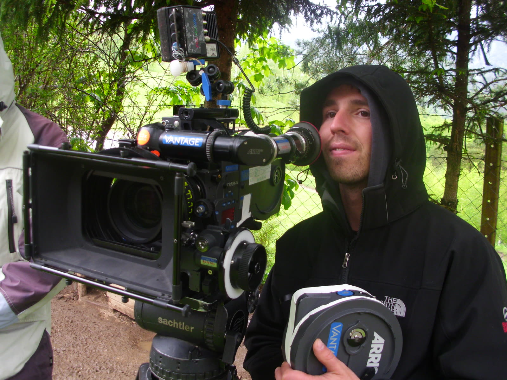
Pocos roles del equipo técnico ocupan simultáneamente tres posiciones tan distintas. El director de fotografía es artista, técnico y líder de equipo, y no puede fallar en ninguna de las tres sin que se derrumben las otras dos.
Como artista, decide cómo se ve la película. Eso incluye lo obvio —el contraste, la paleta, la textura, la dureza o suavidad de la luz— y lo menos obvio: qué se muestra y qué se oculta. Un plano no es solamente lo que entra en el cuadro; es también todo lo que queda afuera, y la decisión sobre ese límite es una decisión narrativa. Cuando un DF elige dejar la mitad de un rostro en sombra, no está "haciendo una imagen linda": está afirmando algo sobre ese personaje que el diálogo tal vez no dice. La iluminación es un sistema de énfasis. Dirige la mirada del espectador con la misma autoridad con que un escritor dirige la atención mediante la sintaxis.
Como técnico, debe manejar un cuerpo de conocimiento considerable y en permanente actualización: la física de la luz y su comportamiento (intensidad, dirección, calidad, temperatura de color), la óptica (distancia focal, apertura, profundidad de campo, aberraciones, carácter de las lentes), la sensitometría y el rango dinámico —analógico o digital—, el flujo de trabajo de la imagen desde el rodaje hasta el etalonaje final, y, sobre todo, las limitaciones concretas del equipo que efectivamente tiene disponible. Esta última parte es la que la enseñanza suele subestimar. Un DF profesional no trabaja con el equipo ideal: trabaja con lo que el presupuesto, el camión de luces y el clima le permiten. Saber qué se puede lograr con dos fresneles, una tela difusora y una pared blanca es tan parte del oficio como conocer el catálogo completo de ARRI.
Como líder de equipo, conduce tres departamentos: cámara (foquista, asistentes, video assist, data manager o DIT), eléctricos (gaffer y su equipo, responsables de la luz y la energía) y maquinistas o grips (responsables del soporte, el movimiento y el control del recorte de la luz). En un rodaje mediano eso puede significar entre diez y treinta personas bajo su órbita. Y la conducción no es solo técnica: implica administrar tiempo, presupuesto y —esto lo dicen todos los que llevan años en el oficio— estados de ánimo. Un rodaje es una máquina emocional además de logística. El DF que resuelve brillantemente una escena pero deja al equipo agotado y resentido a las tres de la tarde va a pagar ese costo a las nueve de la noche.
Un director de fotografía chileno de larga trayectoria, Inti Briones, describió alguna vez el puesto con una comparación que vale la pena retener: el DF combina lo técnico con la administración de un grupo humano y sus humores, algo más parecido a un Ministerio de Defensa que a un taller de artista. La imagen es exagerada a propósito, pero apunta a una verdad incómoda: buena parte del trabajo consiste en gestionar recursos escasos bajo presión de tiempo, con gente cansada, y sostener al mismo tiempo una idea estética que nadie más está obligado a defender.
1.2 Coautoría, no autoría
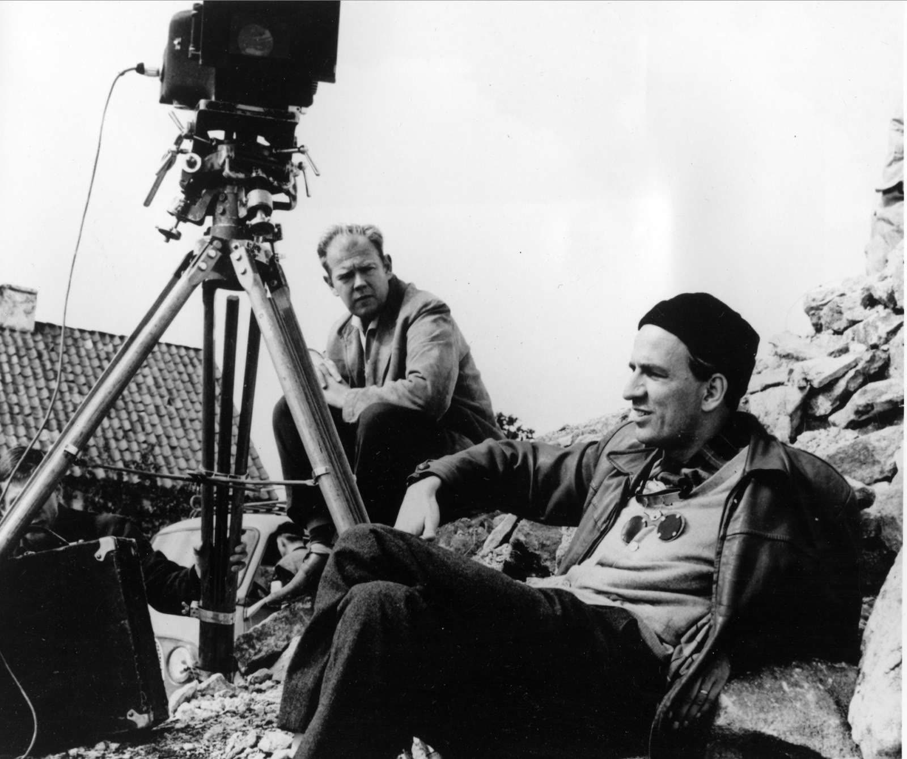
Aquí conviene ser preciso, porque el malentendido es frecuente y produce carreras frustradas.
El director de fotografía no hace su película. Hace la película de otra persona. Esta es la asimetría fundamental del oficio y quien no la acepta trabaja mal o trabaja poco. El DF es un coautor —lo es de pleno derecho, desde su propio terreno, que es la imagen— pero es un coautor subordinado a una visión que no le pertenece. La intensidad de ese involucramiento varía enormemente según el proyecto y según el director: hay directores que llegan con storyboards cerrados y referencias precisas, y hay directores que dicen "esta escena tiene que dar miedo" y esperan que el DF resuelva el resto.
La distinción entre autoría y coautoría no es una degradación. Es una descripción del tipo de creatividad que el puesto exige, que es una creatividad al servicio de un problema ajeno. Se parece más a la del arquitecto que a la del pintor: hay un comitente, hay un programa, hay restricciones materiales, y el talento se mide por lo que se logra dentro de esos límites, no por lo que se lograría sin ellos.
Las duplas duraderas del cine ilustran bien esta lógica. Gordon Willis y Francis Ford Coppola en la trilogía de El Padrino; Sven Nykvist e Ingmar Bergman a lo largo de más de veinte films; Vittorio Storaro y Bernardo Bertolucci; Néstor Almendros y Éric Rohmer; Christopher Doyle y Wong Kar-wai; Roger Deakins y los hermanos Coen. En todos los casos hay una imagen inconfundible, pero esa imagen no es la firma unilateral del fotógrafo: es el producto de una conversación larga en la que ambas partes aprendieron el vocabulario del otro. Cuando Willis decidió subexponer sistemáticamente los interiores de El Padrino y dejar los ojos de Marlon Brando en sombra bajo una luz cenital dura, no estaba imponiendo un capricho plástico: estaba construyendo, en términos ópticos, la idea de un poder que se ejerce en la penumbra y que el espectador no termina nunca de ver del todo. Esa decisión le valió el apodo de "el príncipe de la oscuridad" y, en su momento, la resistencia del estudio, que temía que el público literalmente no viera nada. La historia terminó dándole la razón, pero conviene recordar que en el momento de tomarla no había ninguna garantía.
1.3 El nacimiento del rol
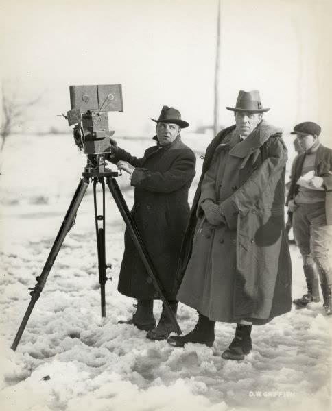
El puesto de director de fotografía, tal como lo entendemos hoy, no existió desde el principio del cine. En los primeros años, quien operaba la cámara era un técnico: alguien que sabía manipular un aparato complejo, cargar la película, calcular la exposición y sostener una velocidad de manivela constante. Su tarea era el registro. Que ese registro tuviera sentido dramático propio no formaba parte de sus obligaciones.
El desplazamiento hacia un rol artístico se produce en la década de 1910, y el caso más citado —con razón— es la colaboración entre Billy Bitzer y D. W. Griffith. Bitzer venía del noticiero y del cine de atracciones; con Griffith empezó a usar recursos que hasta entonces eran anomalías o accidentes como elementos deliberados de construcción del sentido: el iris para abrir o cerrar la atención sobre un detalle, el contraluz para separar la figura del fondo, la luz de fuego simulada, la variación de la distancia de cámara según la carga emocional de la escena. En El nacimiento de una nación (1915) —film cuyo racismo explícito es hoy inseparable de su discusión, y que se cita aquí exclusivamente por su lugar en la historia técnica— esas decisiones aparecen articuladas como sistema por primera vez a escala de un largometraje.
Lo que se establece allí es el principio fundacional del oficio: las decisiones de cámara e iluminación son decisiones de sentido, no solo de registro. A partir de ese momento, la pregunta deja de ser "¿se ve?" y pasa a ser "¿qué significa que se vea así?".
El proceso de profesionalización siguió su curso durante los años veinte y treinta. En 1919 se fundó en Los Ángeles la American Society of Cinematographers, cuyas siglas —ASC— todavía acompañan los nombres de sus miembros en los créditos, y que fue decisiva para instalar la idea de que la fotografía cinematográfica era una disciplina con cuerpo teórico propio. La escuela alemana del expresionismo, con Karl Freund y Fritz Arno Wagner, llevó la iluminación a un extremo de estilización deliberada que influiría décadas después en el cine negro norteamericano, en buena medida a través de los propios técnicos europeos emigrados. Para los años cuarenta, el rol estaba plenamente constituido: Gregg Toland en El ciudadano (1941) no solo firma la fotografía, sino que aparece en el mismo cartón de crédito que Orson Welles, un gesto sin precedentes que el propio Welles quiso hacer explícito como reconocimiento de coautoría.
1.4 El estilo no es una firma fija
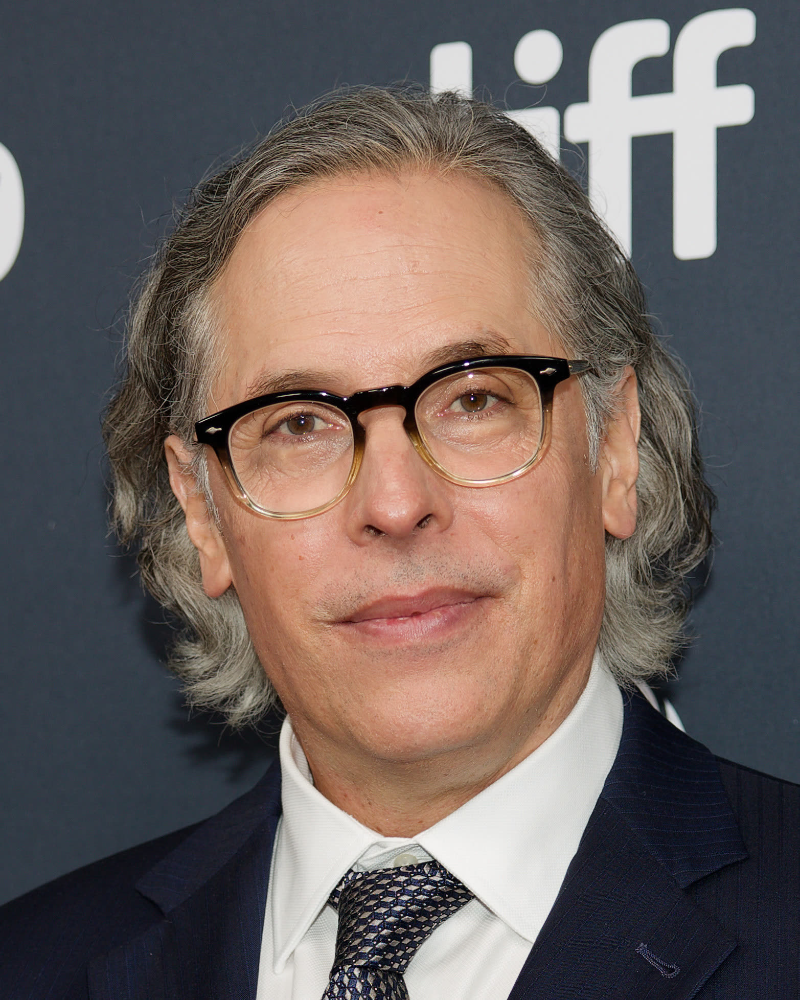
Hay una idea muy extendida entre estudiantes que conviene desmontar cuanto antes: la de que un buen director de fotografía tiene "un estilo", reconocible, constante, que aplica a los proyectos que toma. Es una idea seductora porque hace del DF un artista romántico con una marca personal. Y es, en general, falsa.
El estilo de un director de fotografía no es fijo: se adapta a la película, al género, al presupuesto, al director y a la época. Lo que sí permanece es algo más sutil —una sensibilidad, un modo de pensar los problemas, ciertas preferencias recurrentes—, pero el resultado visual puede variar radicalmente de un film a otro dentro de una misma filmografía.
Rodrigo Prieto lo ha contado en primera persona con una franqueza útil. Después de años de una fotografía cuidada, de luz suave y contrastada, muy influida por el cine norteamericano de los setenta y ochenta, sintió la necesidad de moverse hacia una búsqueda más dura y más realista. Y cuando le tocó fotografiar 8 Mile, tuvo que adaptarse a algo bastante más industrial y luminoso de lo que su gusto personal habría elegido, por una razón simple y profesional: esa película necesitaba que el público viera con claridad, y su trabajo era garantizarlo. La misma persona firma la textura brumosa y desaturada de Brokeback Mountain, el granulado agresivo de Amores perros, la reconstrucción de tres formatos históricos distintos en El irlandés y el naturalismo austero de Los asesinos de la luna. No hay una sola "firma Prieto" en esa lista; hay un criterio que se aplica a problemas distintos.
Ari Wegner, una de las directoras de fotografía más interesantes de su generación, ha descrito su método en términos parecidos: no atarse a un look único, sino construir uno a medida de cada guion. Y ha expresado con claridad una desconfianza que vale la pena adoptar temprano: la alergia a la fotografía demasiado ostentosa, o que agrega algo solo para que quede lindo. Entre El poder del perro —con su luz de altiplano dura, seca, casi sin romanticismo pese al paisaje— y Lady Macbeth —interiores fríos, quietos, de composición casi pictórica— no hay una continuidad de superficie, sino de rigor.
Incluso el caso que más se cita como ejemplo de firma reconocible, el de Roger Deakins, se sostiene mal si se lo examina de cerca. Es cierto que hay rasgos persistentes: una economía extrema de fuentes, una preferencia por la fuente única motivada, una limpieza compositiva casi arquitectónica. Pero la distancia entre la fotografía brutal y contrastada de Sicario, la calidez granulada de El asesinato de Jesse James por el cobarde Robert Ford, la abstracción cromática de Blade Runner 2049 y la neutralidad casi documental de Fargo es enorme. Deakins mismo ha explicado que altera deliberadamente su modo de iluminar según lo que cada historia le permite y le exige: en Jesse James buscó algo deliberadamente naturalista, y describió su objetivo por la negativa —no quería una imagen pictórica, no quería que pareciera pintada al óleo sobre la cara de la gente.
De todo esto se sigue una consecuencia práctica que conviene tener presente desde el primer ejercicio: estudiar dirección de fotografía no es acumular recetas de look, es aprender a derivar el look de una intención. Copiar la iluminación de Blade Runner 2049 en un cortometraje intimista no produce una buena fotografía; produce una cita fuera de contexto. La pregunta correcta nunca es "¿cómo se ve esto que me gusta?", sino "¿qué necesita esta historia que yo haga con la luz?".
1.5 El mapa del departamento
Para cerrar el capítulo conviene fijar el organigrama, porque el oficio se ejerce siempre dentro de una estructura y no entenderla produce fricciones evitables.
| Área | Puesto | Responsabilidad principal |
|---|---|---|
| Cámara | Director de fotografía | Diseño integral de la imagen; decisiones de luz, óptica, encuadre y color |
| Cámara | Operador de cámara | Ejecución del encuadre y el movimiento durante la toma |
| Cámara | Primer asistente (foquista) | Foco, marcas, cambio de ópticas, integridad mecánica del equipo |
| Cámara | Segundo asistente | Claqueta, reportes, carga de material, logística del departamento |
| Cámara | DIT / data manager | Copia y respaldo del material, look de rodaje, monitoreo de exposición |
| Eléctricos | Gaffer (jefe de eléctricos) | Traduce el diseño de luz del DF en implementación concreta |
| Eléctricos | Best boy electric | Logística del departamento, personal, equipo, energía |
| Maquinistas | Key grip | Soporte de cámara, dollies, grúas, control y recorte de la luz |
| Maquinistas | Dolly grip | Movimiento físico de la cámara sobre dolly o grúa |
En estructuras pequeñas estos puestos se solapan, y en producciones de bajo presupuesto es habitual que el DF opere su propia cámara. Eso no cambia la naturaleza de las decisiones, solo la cantidad de manos disponibles para ejecutarlas. Lo que sí cambia —y mucho— es el tiempo: cada función que el DF absorbe es tiempo que le resta a pensar la luz. Saber cuándo delegar es parte del oficio, no un lujo de las producciones grandes.
Una última observación sobre la relación con el director. El DF necesita entender qué tipo de interlocutor tiene enfrente. Hay directores que piensan en imágenes y hablan en términos técnicos; hay otros que piensan en emociones y hablan en metáforas. Ninguno de los dos modos es mejor. Lo que el DF debe desarrollar es la capacidad de convertir cualquiera de los dos en una lista concreta de decisiones: qué óptica, qué altura de cámara, cuántos pasos de diafragma entre la luz principal y el relleno, qué temperatura de color, qué se ve y qué no. Ese pasaje —de la intención vaga a la especificación material— es, en última instancia, el núcleo del oficio.
2. Historia técnica del cine como dialéctica
La historia técnica del cine suele contarse como una sucesión de inventos: primero la manivela, después el motor; primero el blanco y negro, después el color; primero el fotoquímico, después el digital. Contada así es una lista de fechas, y no explica nada. Peor todavía: sugiere que la técnica avanza sola, por su propia lógica interna, y que los artistas simplemente usan lo que la industria les entrega.
La realidad es más interesante y bastante más útil de entender. La técnica y el arte se empujan mutuamente. Ni la técnica determina por sí sola lo que se puede contar, ni el deseo artístico avanza sin herramientas. Cada innovación relevante en la historia del cine puede leerse en las dos direcciones: hubo un deseo narrativo que no tenía cómo realizarse y forzó el desarrollo de una herramienta; y hubo herramientas que, una vez disponibles, sugirieron formas de narrar que nadie había imaginado antes. Ese ida y vuelta —esa dialéctica— es el verdadero motor de la historia del estilo cinematográfico.
Entender esto tiene una consecuencia inmediata para quien ejerce el oficio: muchas de las "reglas" que se enseñan como si fueran leyes naturales de la imagen son, en realidad, soluciones históricas a problemas materiales concretos que después se volvieron convención. Reconocer su origen técnico permite decidir con criterio cuándo respetarlas y cuándo abandonarlas.
2.1 Tres casos ejemplares
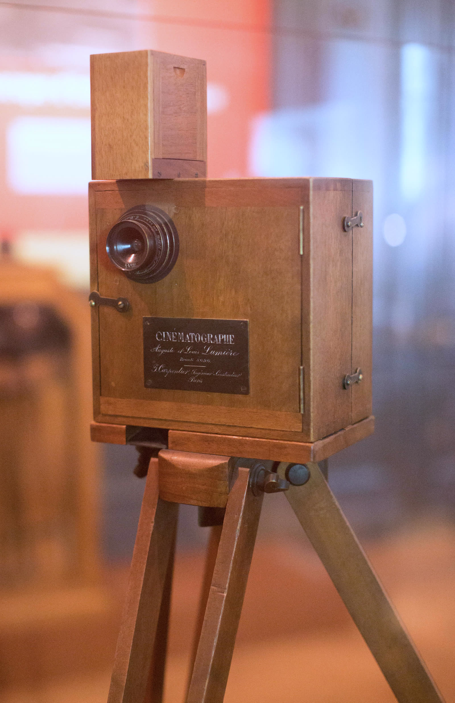
El primer plano y la movilidad de la cámara. Las primeras cámaras cinematográficas eran cajas pesadas montadas sobre trípodes robustos, accionadas a manivela. El plano general fijo no era una elección estética: era la única cosa que el aparato hacía cómodamente. Pero muy pronto apareció el deseo de acercarse al rostro —de mostrar una emoción en lugar de una acción—, y ese deseo empujó la construcción de cámaras más manejables. A su vez, cada cámara más liviana habilitó formas de narrar que antes no existían: el plano subjetivo en movimiento, la cámara en mano, la persecución filmada desde adentro de la persecución. El deseo produjo la herramienta y la herramienta produjo nuevos deseos. Ese circuito no se cerró nunca: la Steadicam en los años setenta, la cámara digital compacta en los dos mil y el gimbal electrónico en la década siguiente son capítulos sucesivos de la misma historia.
De la emulsión ortocromática a la pancromática. Este es probablemente el caso más claro de cómo una propiedad química define lo que el cine puede o no puede mostrar. La emulsión ortocromática, dominante hasta mediados de los años veinte, era ciega al rojo y muy poco sensible en general. Filmar con ella exigía cantidades enormes de luz, lo que en la práctica significaba estudios cerrados con iluminación controlada hasta el último detalle. La llegada de la pancromática —sensible a todo el espectro visible y considerablemente más rápida— permitió, literalmente, salir a la calle. El neorrealismo italiano, el cine de exteriores, la posibilidad misma de filmar un rostro humano bajo luz natural sin que la piel se volviera un manchón oscuro: todo eso depende de un cambio en la sensibilidad espectral de una capa de gelatina.
Del Technicolor de tres bandas al negativo color monocapa. El Technicolor tricolor producía imágenes de una saturación extraordinaria, pero a un costo brutal: cámaras de unos doscientos kilos, equipos de varios operadores especializados, licenciamiento obligatorio con la compañía, supervisores de color impuestos por el fabricante en cada rodaje. El color era, por definición, un evento de superproducción. Cuando Kodak logró condensar todo ese proceso en un rollo de película común y corriente, el color dejó de ser un privilegio industrial y pasó a estar disponible para cualquiera. La consecuencia estética fue inmediata y profunda: el color pudo volverse cotidiano, sucio, ambiguo, en lugar de espectacular por obligación.
En los tres casos el patrón es idéntico. Un límite material define un estilo; el estilo se naturaliza y empieza a parecer una elección estética; una innovación técnica disuelve el límite; y entonces el estilo anterior queda disponible como opción deliberada en lugar de imposición. Esta última fase es crucial: el blanco y negro dejó de ser una limitación para volverse una decisión el día en que el color se abarató, y filmar en 16 mm granulado hoy es una afirmación estética que en 1970 era simplemente lo que había.
2.2 La película fotoquímica: estructura, estados y la imagen latente
Aunque la mayor parte de la producción contemporánea es digital, entender la película fotoquímica no es un ejercicio de arqueología. Buena parte del vocabulario del oficio —exposición, densidad, latitud, grano, curva característica— proviene de allí, y las decisiones digitales siguen formulándose en esos términos. Además, el celuloide sigue en uso: Christopher Nolan, Quentin Tarantino, Paul Thomas Anderson y Jordan Peele, entre otros, ruedan en fílmico por razones estéticas explícitas.
Estructura. En su forma más simple, una película es una base más una emulsión. En detalle, el corte transversal de un negativo moderno incluye varias capas superpuestas:
| Capa | Función |
|---|---|
| Antirrayas / antiabrasión | Protege mecánicamente la emulsión del rozamiento en el transporte |
| Emulsión | Haluros de plata suspendidos en gelatina; es donde se forma la imagen |
| Capas adhesivas (subbing) | Fijan la emulsión a la base |
| Base o soporte | Triacetato de celulosa (safety film) o poliéster; da estructura física |
| Capa antihalo | Absorbe la luz que atraviesa la emulsión y evita que rebote en la cara posterior |
La capa antihalo merece una nota, porque explica un artefacto visible. Sin ella, la luz que atraviesa la emulsión rebota en el reverso del soporte y vuelve a impresionar la capa sensible desde atrás, produciendo un halo difuso alrededor de las altas luces intensas. Es exactamente el efecto que se ve en ciertas películas antiguas alrededor de una lámpara o una ventana, y el mismo que algunos fotógrafos buscan hoy deliberadamente removiendo esa capa.
Vale la pena señalar por qué se habla de safety film. Las primeras películas usaban nitrato de celulosa como soporte: un material de excelentes cualidades ópticas y espantosas cualidades de seguridad, inflamable hasta el punto de arder bajo el agua y responsable de incendios catastróficos en cabinas de proyección y archivos. El pasaje al triacetato en los años cincuenta fue una decisión de seguridad antes que estética, con la consecuencia colateral de que buena parte del cine anterior a esa fecha se perdió irremediablemente.
Estados de la película. La jerga profesional distingue cuatro condiciones en las que puede estar el material:
- Virgen: sin exponer, en su envase original, dentro de fecha.
- Expuesta: ya pasó por la cámara y contiene una imagen latente, todavía invisible.
- Velada: recibió luz de manera no intencional —una lata mal cerrada, un chasis abierto por error— y la imagen quedó parcial o totalmente arruinada.
- Vencida: pasó su fecha de caducidad; pierde sensibilidad, gana grano y suele desplazarse en color. Algunos fotógrafos la usan a propósito por esos mismos defectos.
La imagen latente. Este es el concepto conceptualmente más elegante de toda la fotografía química. Cuando la luz incide sobre un cristal de haluro de plata, altera su estado energético sin producir ningún cambio visible: no hay oscurecimiento, no hay marca, no hay nada que un observador pueda percibir. La imagen existe pero es invisible. El revelado es el proceso que reduce esos haluros expuestos a plata metálica y hace visible lo que ya estaba inscripto.
En el negativo, las zonas que recibieron más luz acumulan más plata y por lo tanto son más densas —es decir, más oscuras. Los valores del mundo aparecen invertidos, y recién vuelven a su orden natural tras la segunda inversión que ocurre en el positivado. Que un negativo sea la imagen "al revés" no es una curiosidad técnica: es la razón por la que el DF que trabaja en fílmico debe pensar la exposición en términos de densidad y no de brillo aparente, y por la que las herramientas de análisis —el sistema de zonas, la curva característica— se formulan como se formulan.
Es útil retener la asimetría práctica que de esto se deriva, porque sobrevive al pasaje al digital pero invertida. El negativo fotoquímico tolera mucho mejor la sobreexposición que la subexposición: la información en las altas luces se recupera, la que no se registró en las sombras no existe. El sensor digital se comporta al revés: las sombras conservan información recuperable con ruido, pero una alta luz recortada —clippeada— es un dato perdido de manera irreversible. De ahí que la práctica de exposición cambie de signo según el soporte, y que un fotógrafo formado en fílmico que pasa a digital sin ajustar el reflejo queme sistemáticamente sus altas luces.
2.3 Ortocromática y pancromática: cuando la química define el estilo
| Ortocromática | Pancromática | |
|---|---|---|
| Sensibilidad espectral | Ciega al rojo; sensible al azul y al verde | Todo el espectro visible, de forma aproximadamente uniforme |
| Sensibilidad general (ISO aprox.) | Muy baja, del orden de 6 | Sensiblemente superior |
| Contraste | Alto | Menor; mayor latitud |
| Consecuencia de producción | Estudios cerrados, iluminación masiva | Posibilidad real de exteriores |
| Manipulación en laboratorio | Admite luz roja de seguridad | Exige oscuridad total |
Antes de la ortocromática existió una etapa todavía más restringida: emulsiones sensibles únicamente al azul, que podían manipularse bajo luz de seguridad amarilla. Sus efectos son visibles en la fotografía del siglo XIX. Las célebres tomas del Gran Cañón realizadas por Timothy O'Sullivan alrededor de 1870 muestran cielos completamente blancos —el azul saturaba la emulsión de inmediato— y acantilados rojizos que aparecen oscuros pero no del todo negros, porque la roca refleja algo de azul junto con el rojo. No es un defecto de la copia: es un retrato exacto de lo que esa química podía ver.
Dos consecuencias de la ortocromática merecen ser destacadas porque explican convenciones que sobrevivieron mucho más allá de su causa.
El esquema de tres puntos nació como compensación técnica, no como canon estético. El sistema de luz principal, relleno y contraluz —enseñado en todas partes como si fuera el alfabeto natural de la iluminación— surge como solución a un problema material concreto. Con una emulsión de altísimo contraste y bajísima sensibilidad, un rostro iluminado por una sola fuente producía sombras completamente cerradas y sin información; hacía falta una segunda fuente que levantara esas sombras a un nivel registrable. Y como la ortocromática comprimía la separación tonal entre figura y fondo, hacía falta una tercera fuente detrás del sujeto para despegarlo del decorado. Los tres puntos son, en su origen, tres parches a tres defectos químicos.
Esto no invalida el esquema: es un buen punto de partida, ordena el pensamiento y funciona. Pero conviene tenerlo presente cada vez que se lo presenta como ley: es una solución histórica que se volvió convención, y una convención puede discutirse. Buena parte de la fotografía contemporánea más interesante trabaja con una sola fuente y deja que las sombras caigan donde caen, precisamente porque las emulsiones y los sensores actuales ya no necesitan aquellos parches.
El maquillaje blanco del cine mudo también tiene origen técnico. Las caras exageradamente pálidas de los actores del período mudo no responden a una convención expresiva sino a una necesidad de registro: la emulsión ortocromática, insensible al rojo, convertía los tonos rojizos naturales de la piel en gris oscuro o directamente en negro. Los labios se veían casi negros; una mejilla encendida se veía como una mancha sucia. El maquillaje pálido, con labios muy marcados y ojos delineados, compensaba esa distorsión. Con la llegada de la pancromática, la práctica cambió por completo, y el maquillaje cinematográfico pudo empezar a perseguir el principio que todavía lo rige: que no se note, salvo intención expresa. Vale para el maquillaje estándar, para el dramático y para el de efecto.
2.4 La evolución del color
El color llegó al cine mucho antes de lo que suele suponerse. Lo que tardó fue el color fotográfico, es decir, el color registrado por el propio aparato en lugar de agregado después.
- Pintado a mano y coloreado mecánico. Las primeras películas en color se coloreaban fotograma a fotograma, con pincel, generalmente por equipos de mujeres empleadas para esa tarea. Los procesos mecánicos posteriores, como el Pathécolor con plantillas recortadas, industrializaron parcialmente el procedimiento. En paralelo se usaban virados y tintados: baños químicos que teñían la copia entera de un color —azul para la noche, ámbar para el interior con lámpara, rojo para el incendio—, una convención que codificaba el ambiente de la escena sin pretender realismo.
- Technicolor bicolor (1922). The Toll of the Sea fue el primer largometraje realizado con este sistema, que dividía la imagen con un prisma rotatorio y filtros rojo y verde, registrando dos negativos que luego se combinaban. El resultado cubría una gama limitada —los azules eran imposibles— pero suficiente para pieles y paisajes.
- Technicolor tricolor (1932). El sistema definitivo: una cámara con un divisor de haz (beam splitter) que repartía la luz entre tres rollos con sensibilidades distintas, y un proceso de copiado por transferencia de tinturas (dye transfer) que producía una saturación y una estabilidad al archivo que ningún proceso posterior igualó. El costo era proporcional: cámaras de unos doscientos kilos que requerían varios operadores, blimps enormes, cantidades de luz descomunales y la presencia obligatoria de supervisores de color de la compañía. El mago de Oz (1939) es el ejemplo emblemático, y no por casualidad: el film organiza toda su dramaturgia alrededor del contraste entre el sepia de Kansas y el color explosivo de Oz. El color, en ese momento histórico, era en sí mismo un acontecimiento.
- Kodachrome reversible (1935). Primera película de color de tres capas en un solo soporte, aunque de procesamiento extremadamente complejo, ya que los colorantes se incorporaban durante el revelado y no en la emulsión.
- Negativo con acopladores cromógenos (1950). El Kodak 5247, de ISO 16 balanceado para luz día, incorporó los formadores de color en las propias capas de la emulsión. Todo el sistema Technicolor —doscientos kilos de cámara, tres rollos, un laboratorio propietario— quedó condensado en un rollo de película que se cargaba en una cámara común. Es el punto de inflexión: a partir de allí, el color deja de ser un evento de producción y pasa a ser el estado normal de la imagen cinematográfica.
La estructura interna de ese negativo color multicapa —el llamado tripack— se detalla más adelante, al tratar el soporte fotoquímico en profundidad.
Conviene notar el efecto estético de la democratización. Mientras el color fue caro, fue necesariamente espectacular: musicales, épicas, fantasías. Cuando se abarató, los cineastas pudieron usarlo para lo contrario —para lo gris, lo mediocre, lo cotidiano—, y apareció una fotografía en color deliberadamente desaturada y fea que habría sido económicamente absurda dos décadas antes. Es un ejemplo perfecto de la dialéctica: la herramienta se abarata, y el abaratamiento habilita una estética que contradice el propósito original de la herramienta.
2.5 La evolución de la cámara
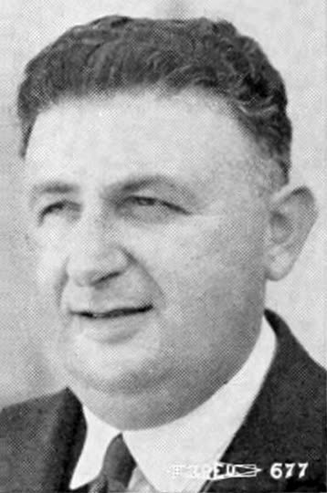
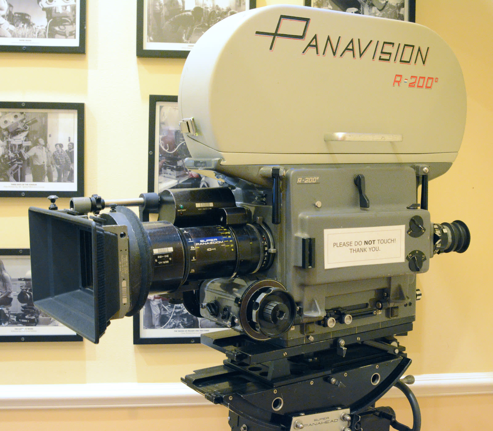
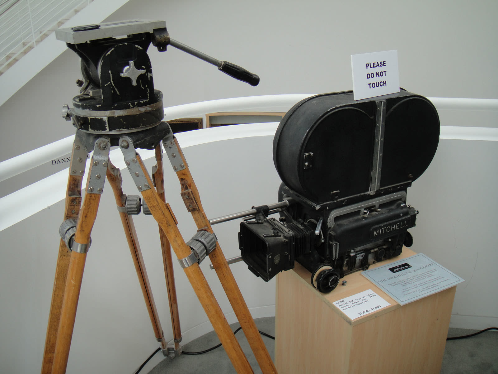
- La cámara a manivela. El operador era literalmente el motor y el metrónomo del aparato: la velocidad de registro dependía de la constancia de su mano. Esto explica por qué el material de la época proyectado a velocidad moderna se ve acelerado y espasmódico —se filmaba a dieciséis o dieciocho cuadros por segundo con variaciones considerables—, y explica también por qué la primera destreza que se le exigía a un camarógrafo era rítmica antes que estética.
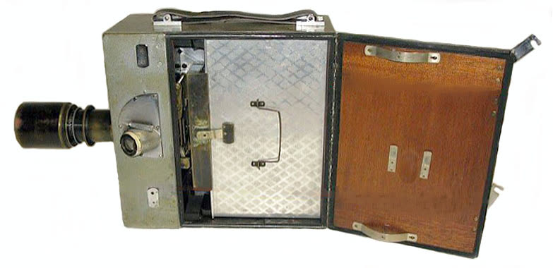
- La cámara liviana y la cámara móvil. El deseo de mover la cámara con libertad produjo tanto aparatos más livianos como soluciones ingeniosas de soporte. El cine alemán de los años veinte fue el laboratorio principal de esta búsqueda: la entfesselte Kamera o "cámara desencadenada" de Karl Freund en El último (1924) —montada sobre bicicletas, grúas improvisadas y hasta atada al cuerpo del operador— y las soluciones desarrolladas para Metrópolis (1927) de Fritz Lang instalaron la idea de que la cámara podía ser un cuerpo que se desplaza por el espacio y no un ojo clavado en un trípode.
- El visor réflex. Hasta su aparición, el operador encuadraba a través de un visor lateral, con el consiguiente error de paralaje, y no podía ver exactamente lo que la lente registraba. La Arriflex 35, presentada en 1937 y desarrollada por August Arnold y Robert Richter, resolvió el problema con un obturador espejado que desvía la luz hacia el visor durante la fase cerrada del ciclo. Su versión posterior, la Arriflex II C, se volvió un caballo de batalla durante décadas. La consecuencia práctica fue enorme: el operador podía ver el encuadre real, con la profundidad de campo real y el desenfoque real, y por lo tanto componer con precisión en lugar de aproximación.
- La cámara silenciosa y la cámara estabilizada. El sonido directo exigió cámaras que no se escucharan, primero encerradas en cajas insonorizadas (blimps) y después autoblindadas, como la Arriflex BL. Y en 1975 Garrett Brown presentó la Steadicam, un sistema de suspensión con brazo articulado y chaleco que aísla la cámara de los movimientos del operador. Su efecto narrativo fue inmediato y específico: hizo posible un movimiento que no es ni el rigor mecánico del dolly ni el temblor de la cámara en mano, sino algo intermedio y perturbador, como una mirada que flota. El resplandor (1980) es el ejemplo canónico, y no solo por virtuosismo: el seguimiento del triciclo por los pasillos del hotel produce una sensación de presencia acechante que ninguna otra tecnología de la época podía generar. La herramienta creó un recurso expresivo que antes no existía.
- El video y el sensor digital. La sustitución de la emulsión por un sensor electrónico —CCD primero, CMOS después— cerró el ciclo de este capítulo. Sus consecuencias exceden lo técnico: la posibilidad de ver el resultado en el momento cambió la dinámica de poder en el set, ya que el DF dejó de ser el único que sabía qué se había registrado. Ganó precisión y perdió autoridad exclusiva. El aumento de sensibilidad, además, volvió filmables situaciones que antes exigían iluminación pesada, y con ello desplazó la discusión: hoy el problema del DF rara vez es conseguir suficiente luz, sino decidir cuánta oscuridad quiere sostener.
2.6 El dispositivo nunca fue neutro
Conviene cerrar este recorrido con una observación que excede lo técnico y prepara el capítulo siguiente.
En un extremo de la historia está la cámara oscura, y en su versión más elemental, la cámara estenopeica: una caja cerrada con un orificio diminuto en una de sus caras. Sin lente, sin obturador, sin mecánica de ningún tipo, ese agujero produce una imagen invertida del mundo exterior sobre la pared opuesta. Es el grado cero del dispositivo cinematográfico y demuestra algo importante: la formación de la imagen es un fenómeno físico anterior a toda tecnología, y todo lo demás —ópticas, emulsiones, sensores— son refinamientos de un principio que la naturaleza ya proporcionaba.
En el otro extremo está la recepción. La primera proyección pública de los hermanos Lumière y la reacción del público ante la llegada del tren a la estación —el pánico, real o amplificado por la leyenda— señalan que la imagen en movimiento nunca fue recibida como un objeto neutro. Existen además culturas que sostienen la costumbre de no mirar a la cámara para no volverse fantasma: la idea de que la imagen captura algo de quien es capturado atraviesa historias muy diversas, y no es tan ajena a la experiencia contemporánea como nos gustaría creer.
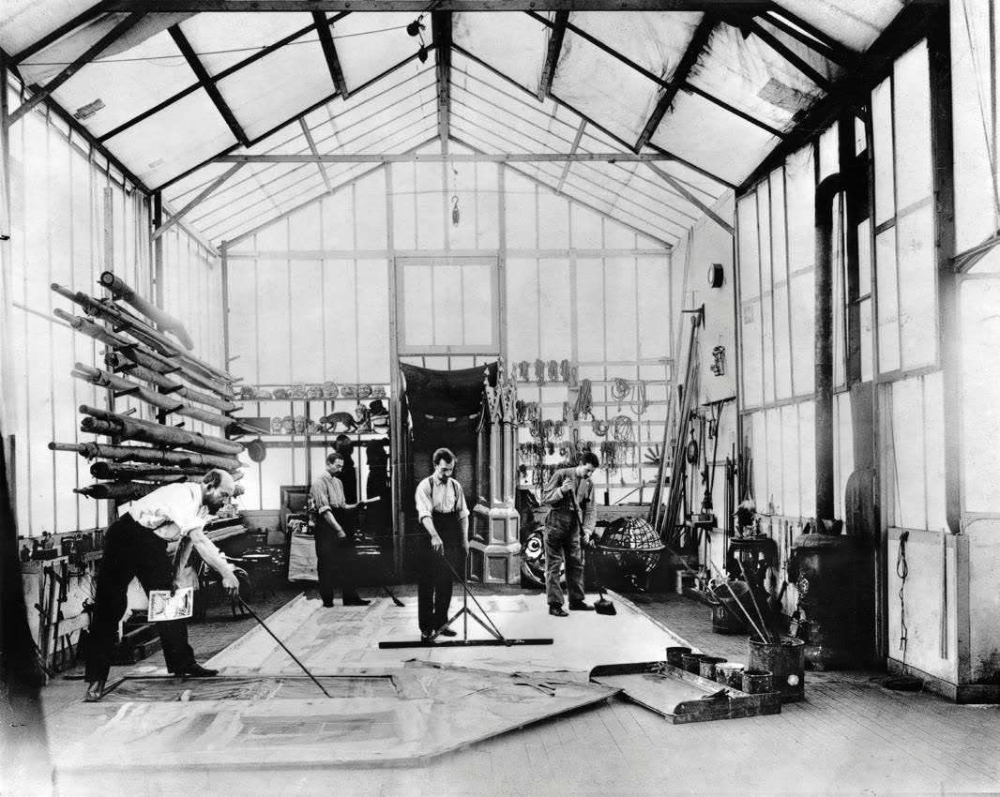
Estas dos puntas —la simplicidad física del dispositivo y la intensidad de la respuesta que provoca— condensan la pregunta teórica que da forma al capítulo siguiente. Vale la pena presentar las dos respuestas clásicas.
La primera sostiene que la imagen fotográfica se distingue de la pintura por su modo de producción: en ella la luz misma se inscribe en el soporte, ocupando el lugar que en la pintura ocupa la mano del artista. Como signo, entonces, la fotografía está más cerca de una huella o una impresión digital que de un dibujo: hay una relación física, causal, entre el objeto y su imagen. De esa identidad paradójica entre el modelo real y su registro se deriva una defensa del realismo cinematográfico —de la profundidad de campo, del plano secuencia, de las formas que preservan la ambigüedad del mundo en lugar de imponerle la interpretación del montaje. Es la línea que asociamos a André Bazin, y que sustenta buena parte del cine moderno europeo.
La segunda respuesta apunta en dirección contraria. Sostiene que la reproducción técnica destruye el aura de la obra —su existencia única, ritual, ligada a un aquí y un ahora— y que el cine, arte de masas por definición, sustituye el valor de culto por el valor de exhibición. Dentro de esta línea, la observación de Walter Benjamin sobre el actor de cine, que actúa para un aparato y no para un público presente, y sobre el "inconsciente óptico" que la cámara revela mediante el primer plano y la cámara lenta, es directamente pertinente para el trabajo del director de fotografía. Su conclusión operativa puede formularse en una frase: la cámara no reproduce la percepción, la reorganiza.
Ambas posiciones son productivas y ninguna es del todo correcta por separado. Lo que importa retener es que la elección entre registrar y construir —entre dejar que el mundo se imprima y organizarlo deliberadamente— no es una cuestión técnica sino una posición sobre qué es una imagen. De eso trata el capítulo siguiente.
3. La imagen como construcción: realista, formalista y los tres criterios
3.1 La imagen no es la realidad
Empecemos por la afirmación más simple y la más fácil de olvidar en la práctica: la imagen no es la realidad. Una imagen cinematográfica es un objeto plano, de proporciones fijas, con un rango de brillos limitado, una gama de colores limitada, una duración determinada y —esto es lo decisivo— bordes.
Detrás de cada imagen hay alguien que decidió. Hay un enunciador: una instancia que eligió desde dónde mirar, qué distancia mantener, qué óptica usar, cuánta luz poner y dónde, cuándo empezar el plano y cuándo cortarlo. Nada de eso es dado por el mundo. El mundo no tiene encuadre; el encuadre lo pone alguien.
De ahí se sigue la formulación que conviene grabar: todo encuadre es una exclusión. Elegir qué entra en el cuadro es, inseparablemente, elegir qué queda afuera, y lo que queda afuera no desaparece: opera. Un plano cerrado sobre las manos de un personaje excluye su rostro, y esa exclusión produce sentido —tensión, misterio, deshumanización— con la misma fuerza con que lo produciría mostrarlo. La cámara nunca es un testigo neutro, ni siquiera cuando lo intenta con honestidad. El documental más austero implica una serie de decisiones sobre dónde pararse.
Esto no es una advertencia moral sino una herramienta de trabajo. Si toda imagen es una construcción, entonces la pregunta profesional relevante no es si estamos interviniendo —siempre lo hacemos— sino cuánto queremos que esa intervención se note y por qué. Todo lo que sigue en este capítulo es un desarrollo de esa pregunta.
3.2 La polaridad realista / formalista
La teoría del cine organizó durante décadas su discusión alrededor de una polaridad que, con todas sus simplificaciones, sigue siendo útil como brújula.
La tendencia realista entiende la imagen como registro. Su ideal es la mínima intervención sobre lo dado: que la cámara se limite a recoger lo que ocurre, que la luz sea la que hay, que el espacio y el tiempo se preserven en lugar de fragmentarse. Sus formas características son el plano largo, la profundidad de campo que mantiene varios planos de acción simultáneos, la cámara que sigue en lugar de anticipar. Su argumento de fondo es que el mundo es ambiguo y que el cine debe preservar esa ambigüedad en vez de resolverla por el espectador. Es la línea que atraviesa el neorrealismo italiano, buena parte del cine moderno europeo, el documental de observación y el cine independiente contemporáneo de vocación austera.
La tendencia formalista entiende la imagen como construcción explícita. Su ideal es la intervención visible: la luz que declara ser luz de cine, el color que no pretende ser el color del mundo, el encuadre que se afirma como composición, el montaje que produce significados que ninguna toma contenía por separado. Su argumento de fondo es que el cine no debe imitar la percepción sino organizarla, y que el arte empieza justamente donde termina la reproducción. Es la línea del expresionismo alemán, del montaje soviético, del musical de estudio, del cine de género estilizado y de buena parte de la animación y el cine de autor visualmente asertivo.
Ningún film es puro. El ciudadano es formalista en su montaje y su iluminación, y profundamente realista en su uso de la profundidad de campo. La ciénaga de Lucrecia Martel trabaja con luz que parece encontrada y con un diseño sonoro extremadamente construido. La polaridad no sirve para clasificar películas en dos cajas, sino para ubicar tendencias dentro de una misma obra y, sobre todo, para nombrar decisiones propias con precisión.
3.3 Las tres áreas de decisión del director de fotografía
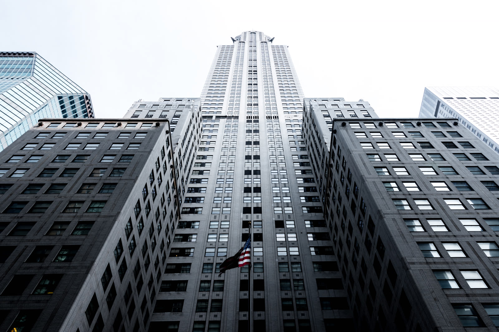
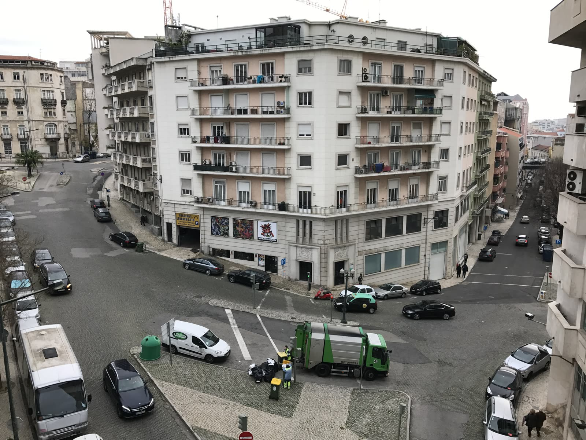
Antes de pasar a los criterios de iluminación conviene ordenar el campo de trabajo. La palabra cinematografía significa, literalmente, escritura en movimiento, y las decisiones que la componen pueden agruparse en tres áreas. David Bordwell y Kristin Thompson las sistematizaron de un modo que sigue siendo el más claro disponible.
a) Las cualidades fotográficas del plano. Todo lo que tiene que ver con cómo se registra la imagen: la gama de tonalidades y el contraste, la exposición, el color, la textura y el grano o ruido, la velocidad de registro —que determina si el movimiento se ve normal, acelerado o ralentizado— y la transformación de la perspectiva que produce la óptica elegida. Un mismo rostro fotografiado con un 25 mm a treinta centímetros y con un 135 mm a cuatro metros es, en términos de sentido, dos rostros distintos.
b) El encuadre. La angulación (contrapicado, picado, nivel), la altura de cámara, la distancia del sujeto, la relación de aspecto, la composición dentro del cuadro y la movilidad: cámara fija, panorámica, travelling, grúa, cámara en mano, estabilizada.
c) La duración del plano. Cuánto dura la toma es una decisión fotográfica tanto como de montaje, porque determina cuánto tiempo tiene el espectador para recorrer la imagen y qué relación establece con el tiempo del acontecimiento.
Esta tripartición funciona muy bien como grilla de control al planificar. La pregunta útil frente a cada plano de un desglose es: ¿ya decidí tonalidad, encuadre y duración, o solo decidí el encuadre? El error más común de quien empieza es resolver la composición y dejar que las otras dos áreas se decidan solas por defecto.
A esto hay que agregar una noción que pertenece a la teoría del espacio fílmico y que tiene consecuencias muy concretas para la iluminación. El espacio de un film se divide entre el campo —lo que se ve— y el fuera de campo —lo que no se ve pero existe. Noël Burch describió el fuera de campo como un espacio de seis segmentos: los cuatro bordes del cuadro, el espacio detrás del decorado y el espacio detrás de la cámara. Para un director de fotografía esto no es una sutileza académica: la fuente que no se ve puede ser el elemento más estructurante de un plano. Una ventana fuera de cuadro que arroja una franja de luz sobre una pared define el espacio, la hora del día y el estado de ánimo de la escena sin aparecer nunca. Gran parte del oficio consiste en construir el fuera de campo con luz.
Vale también una observación de método, tomada de la tradición del análisis fílmico: describir con precisión es ya interpretar. Un desglose plano por plano no es un inventario burocrático; obliga a nombrar decisiones que de otro modo pasan como naturales, y ese acto de nombrarlas es el comienzo del criterio propio.
3.4 Los tres criterios de iluminación
Este es el aparato conceptual más operativo del capítulo y conviene tenerlo disponible de memoria, porque permite tomar una decisión de fondo antes de encender la primera lámpara: ¿cuánto de mi aparato quiero que se note?
Los tres criterios no son estilos ni escuelas, y mucho menos categorías de calidad. Son posiciones respecto de la visibilidad del dispositivo.
a) Criterio industrialista
Es la lógica del cine concebido como producto estandarizado. Su modelo histórico es el Hollywood clásico de los estudios, con su sistema de estrellas y su organización por géneros, pero está plenamente vigente en el cine de franquicias, la comedia comercial y buena parte de la producción televisiva de flujo.
Su rasgo distintivo es que el recetario es visible: se ilumina según lo que el género pide, no según lo que esta historia particular pide. La comedia se ilumina alta, pareja y luminosa; el terror, contrastado y con contraluces azules; el drama romántico, suave y cálido. La estandarización es deliberada, no un descuido: el producto debe ser reconocible por el público y reproducible por equipos intercambiables. Un rodaje de este tipo puede cambiar de unidad, de operador y hasta de director de segunda unidad sin que la imagen acuse el cambio, y eso es exactamente lo que se busca.
Sería un error leer esto con desprecio. El criterio industrialista resuelve problemas reales: garantiza legibilidad, protege el rostro de las estrellas, permite rodar rápido y produce material que se corta bien. Una comedia como Chicas pesadas está iluminada de manera plana y luminosa porque el género vive de la lectura instantánea de los gestos faciales y del ritmo del diálogo; una fotografía "interesante" que dejara media cara en sombra iría en contra de la película. Lo mismo vale para el grueso de las comedias de estudio y para buena parte del cine de superhéroes, donde la imagen debe soportar además una enorme cantidad de efectos digitales agregados después, lo que impone iluminación pareja y controlada por razones estrictamente técnicas.
La serie The Franchise, sátira sobre la producción de una saga de superhéroes, funciona como un retrato bastante exacto de esta lógica desde adentro: la imagen como decisión colectiva, corporativa y sujeta a la aprobación de personas que no filman.
Y conviene registrar que un mismo film puede tener zonas industrialistas y zonas de fuerte decisión autoral. Había una vez en Hollywood, por ejemplo, alterna una reconstrucción de época muy trabajada con secuencias resueltas con criterios abiertamente convencionales, precisamente porque imitan el cine industrial de la época que retrata.
b) Criterio naturalista
Aquí la imagen parece real, pero no lo es en absoluto: es una construcción muy elaborada cuyo objetivo es no delatarse.
Su regla básica es la justificación de las fuentes: cada luz que se ve en el plano tiene una explicación dentro del mundo del film. Hay una ventana, una lámpara de mesa, un tubo fluorescente, un fuego, el reflejo de la nieve. El espectador puede leer el espacio sin esfuerzo porque la dirección de la luz coincide con lo que el decorado promete.
Un malentendido frecuente conviene despejarlo de entrada: naturalista no significa poca luz ni poco equipo. Suele significar exactamente lo contrario. Sostener una luz que parece venir sólo de una ventana en un interior de veinte metros puede requerir un HMI de dieciocho mil vatios en una grúa afuera, tres marcos de difusión, banderas de recorte y una jornada entera de montaje. Naturalismo no es ausencia de aparato: es aparato invisible.
Roger Deakins es probablemente el referente contemporáneo más claro de esta posición. Su trabajo con los hermanos Coen ofrece ejemplos de manual. En los interiores nocturnos de Fargo o de El hombre que nunca estuvo allí, el esquema puede reducirse a un velador que actúa como única fuente justificada, una ventana deliberadamente quemada sin información —porque así se comporta una ventana vista desde un interior oscuro—, y un relleno mínimo, casi imperceptible, cuyo único propósito es que sobreviva una chispa de luz en los ojos del actor. Ese relleno no está justificado por nada del decorado, y sin embargo nadie lo nota: es la excepción técnica que sostiene la ilusión.
El propio Deakins ha descrito su trabajo en El asesinato de Jesse James por el cobarde Robert Ford como una búsqueda deliberadamente naturalista, formulada por la negativa: no quería una imagen pictórica, no quería que la luz pareciera pintada al óleo sobre las caras. Su trayectoria explica en parte esa sensibilidad —empezó filmando documentales, en condiciones donde la luz disponible era casi todo lo que había—, y esa formación se nota en su economía casi ascética de fuentes.
Rodrigo Prieto trabaja en un registro emparentado, con una tolerancia mayor a la textura y a la imperfección. La regla que comparten es la misma: si el espectador percibe la iluminación como iluminación, algo se rompió.
c) Criterio realista
En el tercer criterio el control de la luz es mínimo o directamente nulo. La imagen acepta lo que la locación da: si la habitación tiene un tubo fluorescente verdoso y feo, se filma con ese tubo; si el sol se nubla a mitad de la toma, la toma cambia de luz.
Históricamente se asocia al documental de observación, que por razones prácticas y éticas no puede intervenir el espacio que registra, y a la nouvelle vague, cuyo salto técnico fue posible gracias a películas más sensibles, cámaras livianas y sonido portátil: Raoul Coutard filmando Sin aliento en la calle, con luz de vidriera y sin permisos, hizo con esos medios una declaración estética que era simultáneamente una necesidad económica. La misma lógica reaparece periódicamente: en el Dogma 95 como programa explícito, y de manera constante en el cine independiente contemporáneo.
En el cine argentino, La ciénaga de Lucrecia Martel es una referencia útil de esta zona: interiores densos, calor visible, luz que parece venir de las persianas y de los cuerpos amontonados más que de un plan de iluminación. Buena parte del cine independiente de la región se mueve entre el criterio realista y el naturalista, según cuánto tiempo y cuánto equipo consiga cada producción.
Existe además una práctica que lleva este criterio al extremo: el rodaje "robado" en la vía pública, sin permisos ni cortes de calle, con equipo mínimo y actores mezclados con transeúntes reales. Produce una textura irreproducible en estudio —el azar de la ciudad entrando en cuadro— a cambio de renunciar por completo al control.
Conviene ser honesto sobre el costo. El criterio realista puede producir imágenes de una verdad que ningún dispositivo alcanza, y también puede ser la coartada de la falta de trabajo. La diferencia entre una y otra cosa es si la renuncia al control fue una decisión o una consecuencia.
Cuadro comparativo
| Industrialista | Naturalista | Realista | |
|---|---|---|---|
| Visibilidad del aparato | Alta, convencionalizada | Nula: el aparato se oculta | Nula: casi no hay aparato |
| Fuente de las decisiones | El género y el estándar del producto | La lógica interna del espacio y la historia | Lo que la locación ofrece |
| Justificación de fuentes | Secundaria; prima la legibilidad | Central; toda luz tiene explicación | Automática: la luz es la que hay |
| Recursos técnicos | Altos, estandarizados | Altos, disimulados | Mínimos |
| Riesgo característico | Impersonalidad, recetario | Artificio detectable si falla un detalle | Descontrol, inconsistencia |
| Ejemplos orientativos | Comedia de estudio, cine de franquicia | Deakins con los Coen, Prieto | Nouvelle vague, documental, cine independiente |
Advertencia importante
Estas categorías no son cerradas. Un film tiende más hacia una o hacia otra, y con frecuencia se mueve entre ellas escena por escena. Una película puede resolver sus exteriores con criterio realista y sus interiores con criterio naturalista; una comedia industrial puede tener una secuencia deliberadamente estilizada.
Hay además films que desbordan el esquema por un cuarto lado, el de la estilización explícita: 300 de Zack Snyder, con su imagen enteramente construida sobre fondos digitales y su paleta de bronce y ceniza, o la obra de Wes Anderson, con su simetría frontal y su color de repostería, no encajan en ninguno de los tres criterios porque no aspiran a ninguna forma de verosimilitud lumínica. Pertenecen al polo formalista puro. Cuando aparece un caso así, lo correcto no es forzar la clasificación sino reconocer que el esquema tiene un límite y que el film lo cruzó a propósito.
El valor de los tres criterios, entonces, no es taxonómico sino de posicionamiento. Sirven para responder, antes de rodar, una pregunta que de otro modo se contesta sola y mal: ¿cuánto de mi aparato quiero que se note, y por qué? Un mismo director de fotografía puede moverse entre los tres a lo largo de su filmografía, y casi todos lo hacen.
3.5 Naturalismo y pictoralismo: la misma tensión, leída desde la historia de la iluminación
Existe un par conceptual paralelo, formulado desde la historia de la iluminación y no desde la lógica de producción, que ilumina el mismo problema desde otro ángulo.
El naturalismo, en este vocabulario, consiste en respetar la fuente aparente de luz. Si en el plano hay una ventana a la izquierda, la luz viene de la izquierda; si el personaje se aleja de la lámpara, se oscurece. El beneficio es la legibilidad espacial: el espectador entiende dónde está sin pensarlo.
El pictoralismo consiste en priorizar la belleza de la imagen por encima de la coherencia direccional de la luz. Es la lógica del star system de Hollywood entre 1930 y 1960: si la actriz principal necesita una luz frontal suave y ligeramente elevada para que su rostro se vea impecable, esa luz se pone, sin importar que no haya en el decorado nada que pudiera producirla. Los esquemas de belleza de la época —la luz cenital frontal que deja una sombra de mariposa bajo la nariz, el aro de contraluz en el cabello, el brillo puntual en los ojos— existen por razones que nada tienen que ver con la física del espacio representado. Josef von Sternberg iluminando a Marlene Dietrich, o William Daniels fotografiando a Greta Garbo, construían rostros, no habitaciones.
La correspondencia con los tres criterios es casi exacta y vale la pena hacerla explícita: el pictoralismo es el aspecto propiamente estético del criterio industrialista —la belleza estandarizada como valor de producto—, y el naturalismo coincide punto por punto con el criterio homónimo. Lo que el esquema de los tres criterios agrega es el tercer polo, el realista, que la tradición de estudio simplemente no contemplaba como categoría posible: en un sistema donde todo se filmaba en set, la idea de aceptar la luz que hay no era una opción disponible.
3.6 Qué hacer con todo esto
El recorrido de esta primera parte puede resumirse en tres afirmaciones encadenadas.
La primera: el director de fotografía es un coautor cuya materia es la imagen, y su trabajo consiste en traducir una intención ajena en decisiones materiales sobre luz, óptica y encuadre.
La segunda: las convenciones que hoy parecen naturales —el esquema de tres puntos, la luz justificada, el rostro bien iluminado— tienen una historia técnica concreta, y conocerla permite usarlas con criterio en lugar de obedecerlas por costumbre.
La tercera: toda imagen es una construcción, y por lo tanto la decisión de fondo no es entre construir o no construir, sino cuánto queremos que esa construcción se note. Los tres criterios son la herramienta para responder eso con precisión, película por película y a veces escena por escena.
Lo que sigue en este manual es, en buena medida, el desarrollo técnico de esa última pregunta: qué instrumentos existen, cómo se comportan y cómo se combinan para producir un resultado que corresponda a una intención y no a un hábito.
4. La fotografía: la mirada quieta
4.1 Por qué el DF necesita la fotografía
Hay una confusión que conviene despejar antes de avanzar: pensar la fotografía fija como un antecedente histórico del cine, algo que quedó atrás cuando la imagen aprendió a moverse. Es al revés. Cada fotograma de una película es, literalmente, una fotografía: un instante detenido en el que la luz quedó registrada sobre una superficie con un encuadre, una exposición y una composición determinados. El cine no superó a la fotografía; la usa veinticuatro (o cuarenta y ocho, o cien) veces por segundo. Un director de fotografía que no sabe mirar una imagen fija está, en un sentido muy literal, en desventaja frente a la unidad mínima de su propio oficio.
La razón práctica es todavía más directa: la fotografía enseña a ver la luz antes de tener que iluminarla. Cualquiera puede aprender a operar un fresnel o a leer un fotómetro en un fin de semana. Lo que lleva años es desarrollar el ojo que reconoce, sin instrumentos, que la luz de las cinco de la tarde entrando por una ventana al oeste tiene una calidad irrepetible, o que un rostro bajo un toldo de lona produce una sombra de color distinta a la de un rostro bajo un techo de chapa. Ese reconocimiento —anterior a cualquier decisión técnica— es exactamente lo que entrena la práctica fotográfica, porque obliga a mirar la luz que ya existe, sin la posibilidad de corregirla después con una lámpara.
Y hay una tercera razón, más estructural. Toda la gramática visual del cine —el encuadre, la exposición, la composición, la profundidad de campo, el uso del color— desciende directamente de un siglo de fotografía que la precedió y la hizo posible. Cuando el capítulo 3 de este manual describe las tres áreas de decisión del director de fotografía —cualidades fotográficas, encuadre, duración—, las dos primeras son, sin ninguna adaptación, las mismas dos variables que cualquier fotógrafo resuelve en cada disparo. La única que la fotografía fija no tiene es la duración, porque no hay plano siguiente. Y esa ausencia, lejos de ser una limitación, es lo que la vuelve una escuela tan exigente: obliga a que una sola imagen cargue con todo el sentido, sin la ayuda del montaje ni del tiempo. El que sabe componer una fotografía sabe componer un plano; lo que todavía no sabe es qué hacer con ese plano cuando empieza el siguiente.
4.2 Imagen fija vs. imagen en movimiento
Conviene ser precisos sobre qué le enseña la fotografía al cine y qué no, porque tratarlas como la misma habilidad con distinto soporte es un error que cuesta caro en la práctica.
Henri Cartier-Bresson acuñó la idea que mejor separa los dos oficios: el momento decisivo, la fracción de segundo en la que la forma y el contenido de una escena coinciden en un equilibrio que un instante antes o un instante después no existe. La fotografía es, en su forma más pura, el arte de decidir cuándo disparar dentro de un flujo continuo de acontecimientos que no se va a repetir. El cine, en cambio, no decide el instante: decide la duración. Un director de fotografía no elige el momento en el que algo ocurre —eso ya lo decidió el guion, el actor, el ensayo—, sino cuánto tiempo el espectador va a permanecer mirándolo, y con qué ritmo interno.
De esa diferencia se sigue otra, todavía más importante para quien recién empieza. En la fotografía, el encuadre es la obra entera: no hay nada antes ni después que pueda completar lo que ese rectángulo no dice. Cada elemento tiene que estar exactamente donde tiene que estar, porque no habrá un plano siguiente que corrija el error. En el cine, el encuadre es una unidad dentro de una serie: un plano mediocre puede salvarse por el que lo precede o el que lo sigue, por un raccord de mirada, por el ritmo del montaje. Esto no vuelve menos importante la composición cinematográfica —todo lo contrario, como se desarrolla en el punto siguiente—, pero cambia la naturaleza del problema. Componer una imagen y componer una sucesión de imágenes son habilidades distintas, con lógicas distintas, y la confusión entre ambas es una de las causas más frecuentes de planos “bonitos” que no funcionan dentro de una secuencia.
Lo que sigue siendo cierto, y es la razón de este capítulo, es que la segunda habilidad presupone la primera. Nadie construye una serie coherente de imágenes si no sabe primero construir una sola imagen que sostenga su propio peso. La fotografía fija es, en ese sentido exacto, la gramática elemental de la que el montaje es la sintaxis.
4.3 La composición como lenguaje
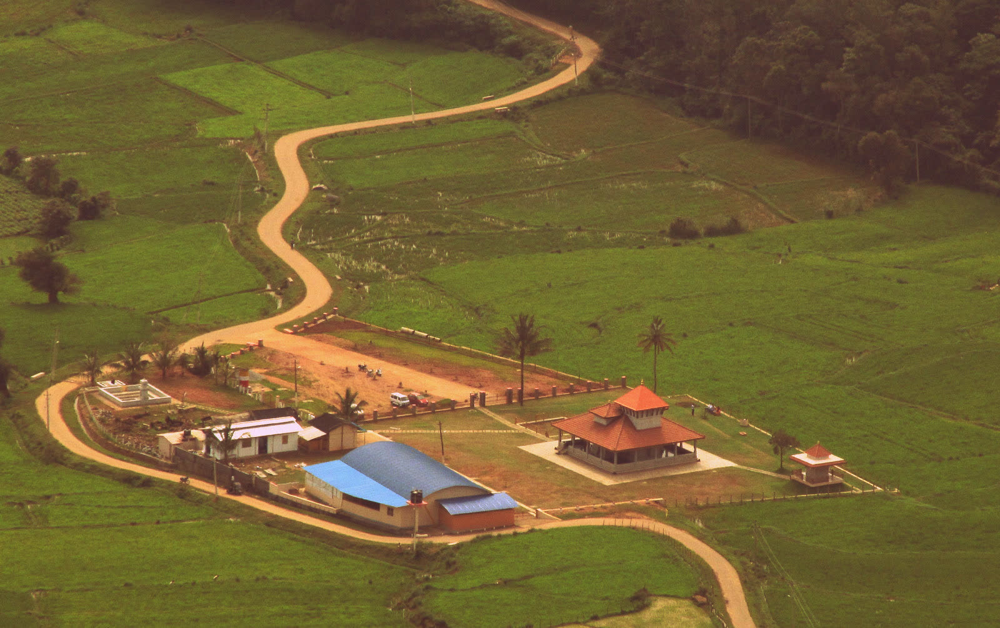
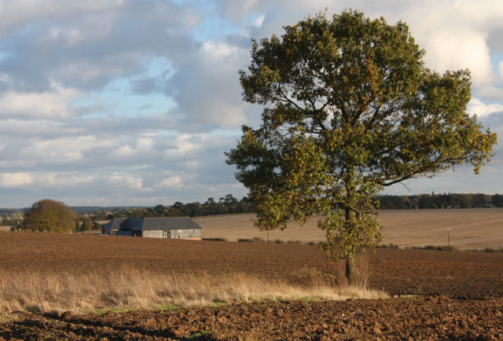
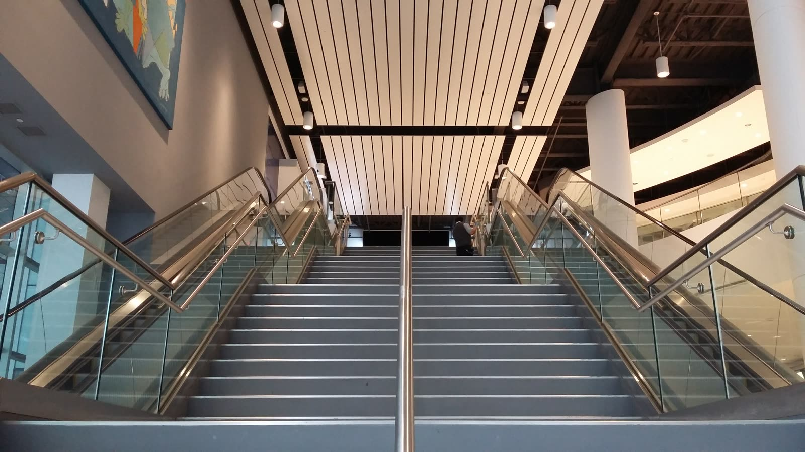
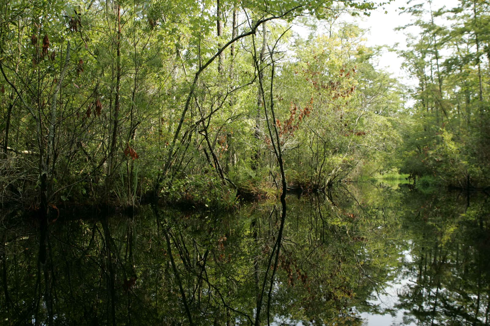
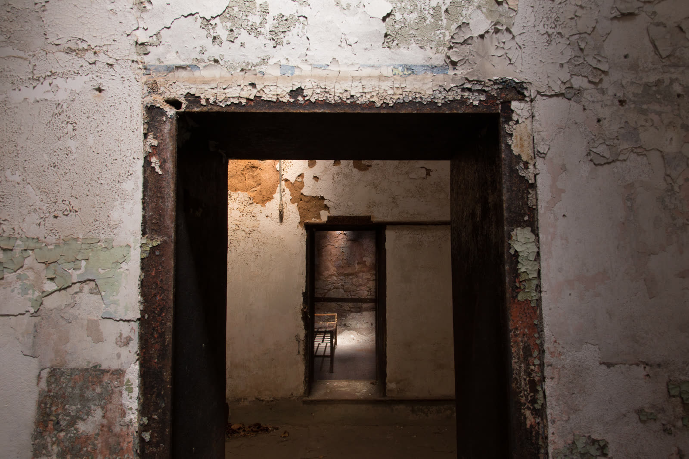
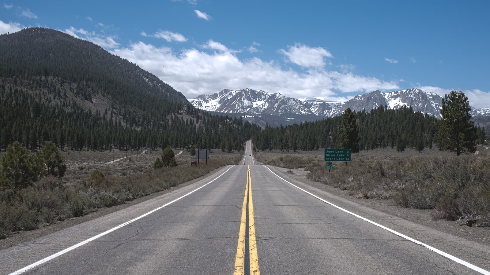
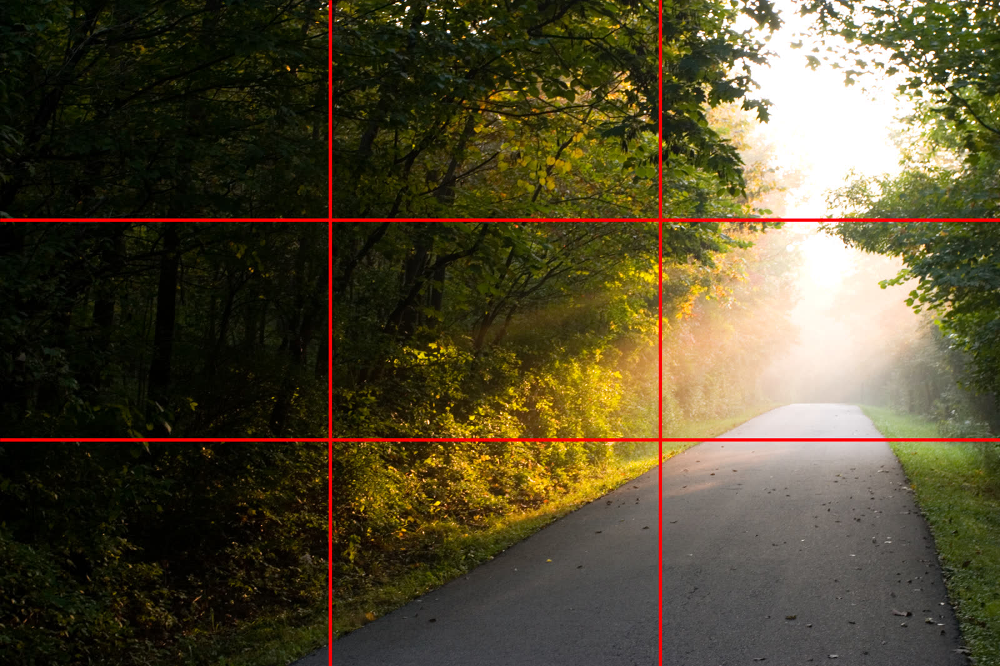
Componer no es decorar el cuadro: es dirigir la mirada del espectador con los mismos medios con que un texto dirige la lectura. Un puñado de principios, heredados casi íntegramente de la pintura y sistematizados por la fotografía, hacen ese trabajo.
Peso visual y jerarquía. El ojo humano no recorre una imagen al azar ni de manera uniforme: va primero a donde hay más información de contraste. Cuatro factores compiten por esa atención inicial —el brillo relativo (lo más claro sobre un fondo oscuro, o viceversa), el contraste local (el borde más nítido entre dos zonas), la saturación de color (una mancha roja sobre un fondo gris gana casi cualquier competencia) y el movimiento, que en imagen fija se sugiere por dirección de líneas o por el gesto congelado de un cuerpo. Componer, en el sentido más básico, es decidir a cuál de esos cuatro factores se le da la jerarquía y por qué. Un rostro pequeño pero intensamente iluminado en un rincón del cuadro puede pesar más que un cuerpo entero en sombra ocupando la mitad de la imagen.
Geometría del cuadro. Las líneas —reales, como el borde de una mesa, o implícitas, como la dirección de una mirada— organizan el recorrido del ojo. Las diagonales producen tensión y dinamismo porque rompen la estabilidad de lo horizontal y lo vertical; los triángulos, reales o formados por la disposición de varios elementos, dan estabilidad incluso en composiciones cargadas; los círculos concentran y encierran. A esto se suma un recurso particularmente útil para el cine, el marco dentro del marco: encuadrar al sujeto con una puerta, una ventana, un arco, el hueco entre dos cuerpos. Duplica el encuadre, añade una capa de profundidad y —cuando se usa con intención— sugiere encierro, vigilancia u observación, según el caso. Y, relacionado directamente, las capas de profundidad —un elemento en primer plano, el sujeto en el medio, un fondo separado— son lo que le da a una imagen plana la sensación de espacio tridimensional; es la misma lógica que en cine se resuelve con la puesta en escena en profundidad.
La regla de los tercios y su transgresión. Dividir el cuadro en una grilla de tres por tres y ubicar los puntos de interés sobre sus intersecciones es la convención compositiva más enseñada y también la más mecánicamente mal aplicada. Su utilidad real no está en la grilla como fórmula sino en el principio que codifica: el centro geométrico es, casi siempre, el lugar menos interesante del cuadro, porque produce una simetría estática que no deja adónde ir con la mirada. Una vez entendido eso, transgredir la regla —centrar deliberadamente un sujeto— deja de ser un error y se vuelve una herramienta expresiva potente, precisamente porque el espectador espera lo contrario.
Simetría y frontalidad. Centrar y encuadrar frontalmente produce el efecto opuesto al de los tercios: quietud, formalidad, a veces amenaza contenida. Es el recurso central de Stanley Kubrick —los pasillos del Overlook en El resplandor, filmados con un punto de fuga central que convierte cualquier corredor en una trampa geométrica— y la firma más reconocible de Wes Anderson, cuya simetría casi obsesiva convierte cada plano en un diorama. Funciona cuando la rigidez formal dialoga con el contenido —el control como tema, no solo como estilo— y se vuelve manierismo vacío cuando se aplica por hábito.
Espacio negativo, dirección de mirada y headroom. El espacio vacío no es espacio desperdiciado: es el lugar hacia donde el sujeto mira, camina o piensa. Dejar ese espacio "por delante" de la dirección de la mirada o del movimiento —lo que en la jerga de foto fija y cine se llama lead room— evita que la imagen se sienta encerrada contra el borde del cuadro. Lo mismo vale para el headroom, el margen entre la cabeza del sujeto y el borde superior: demasiado headroom desconecta al sujeto del cuadro; muy poco lo asfixia. Ninguna de las dos reglas es absoluta —comprimir deliberadamente el headroom es un recurso clásico para generar incomodidad—, pero conocerlas permite romperlas por decisión y no por descuido.
La altura del horizonte. Dónde se ubica la línea de horizonte dentro del cuadro es una decisión emocional antes que geométrica. Un horizonte bajo agranda el cielo y con él la sensación de escala, de intemperie o de esperanza, según el contexto; un horizonte alto aplasta al sujeto contra el paisaje y produce opresión o intimidad, otra vez según el contexto. La misma decisión que un fotógrafo de paisaje toma frente al mar, un director de fotografía la toma en cada exterior con línea de horizonte visible.
Equilibrio y desequilibrio. Un cuadro equilibrado —masas visuales compensadas entre sí— transmite estabilidad; un cuadro desequilibrado, con todo el peso volcado a un lado, transmite tensión, precariedad, algo por resolver. Ninguno de los dos es superior: son dos herramientas para dos efectos distintos, y la habilidad no está en preferir uno sino en reconocer cuál pide cada momento de la historia.
4.4 Historia breve de la fotografía como repertorio visual
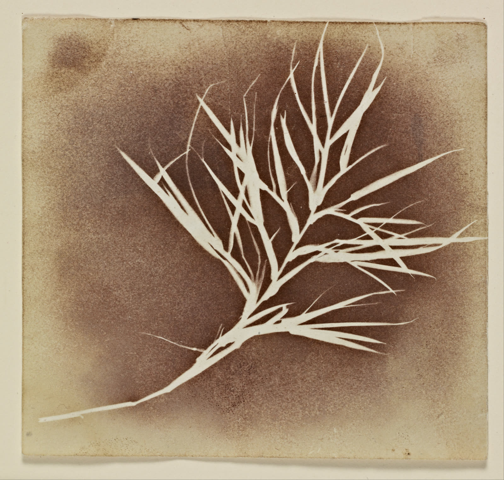
La historia de la fotografía puede contarse con el mismo método dialéctico que este manual usa para el cine en el capítulo 2: como una serie de tensiones entre lo que la técnica permite y lo que una época quiere expresar, empujándose mutuamente hacia adelante.
La primera gran tensión fue pictorialismo contra fotografía directa, y es, casi punto por punto, el mismo par que el capítulo 3.5 describe entre pictoralismo y naturalismo en la iluminación cinematográfica. A fines del siglo XIX, cuando la fotografía todavía necesitaba legitimarse como arte frente a la pintura, el pictorialismo imitó sus recursos: enfoque suave, manipulación del negativo, temas alegóricos, texturas de grabado. La reacción llegó con Paul Strand y, más tarde, con el grupo f/64 —Ansel Adams, Edward Weston—, que reclamó exactamente lo contrario: foco nítido de punta a punta, celebración de la textura real del mundo, ninguna manipulación que ocultara la naturaleza fotográfica del medio. La discusión no se cerró: se desplazó, generación tras generación, a nuevos soportes.
La segunda tensión decisiva llegó con Cartier-Bresson y la street photography: la cámara liviana —la Leica de 35 mm hizo posible este movimiento del mismo modo en que la película más sensible hizo posible la nouvelle vague, según se describe en el capítulo 3.4— permitió salir a la calle a cazar el momento decisivo sin trípode, sin estudio y sin pose. Es la fotografía como caza, no como construcción.
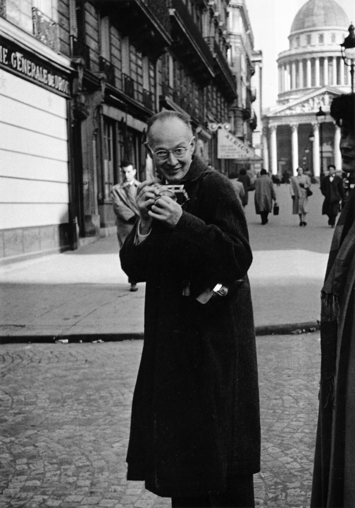
En paralelo se desarrolló una línea documental y social —Lewis Hine fotografiando niños trabajando en fábricas, Dorothea Lange retratando a los desplazados de la Gran Depresión, Walker Evans documentando la pobreza rural del sur de Estados Unidos— que usó la cámara como herramienta de denuncia y de registro histórico. Es la fotografía como testigo, con una ambición explícitamente política que la distingue de la búsqueda puramente formal de Cartier-Bresson.
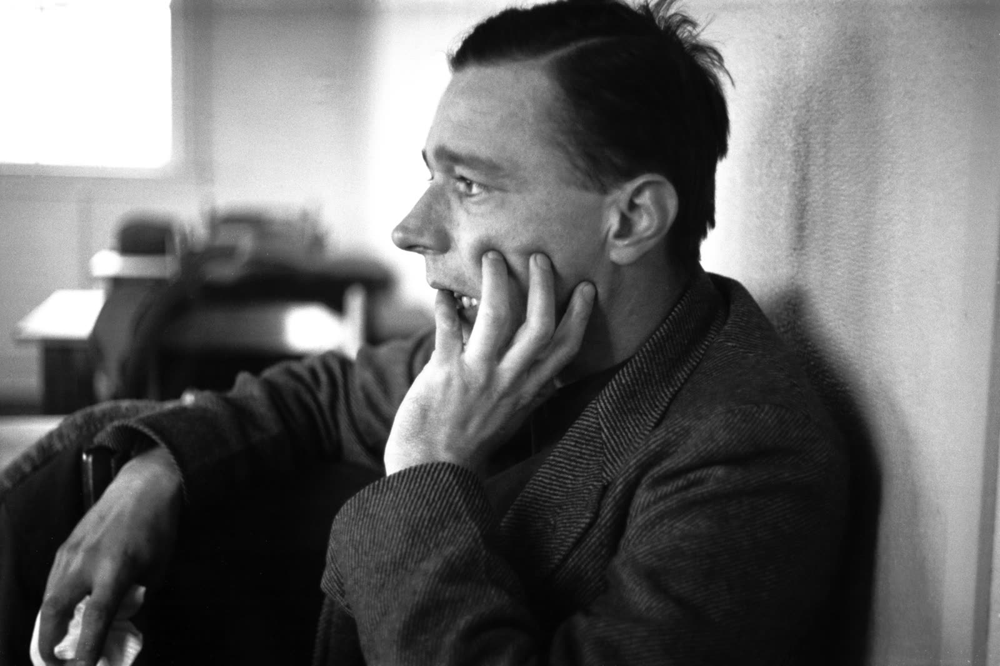
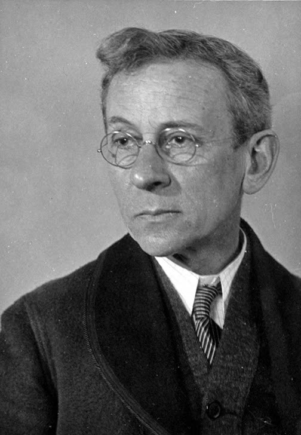
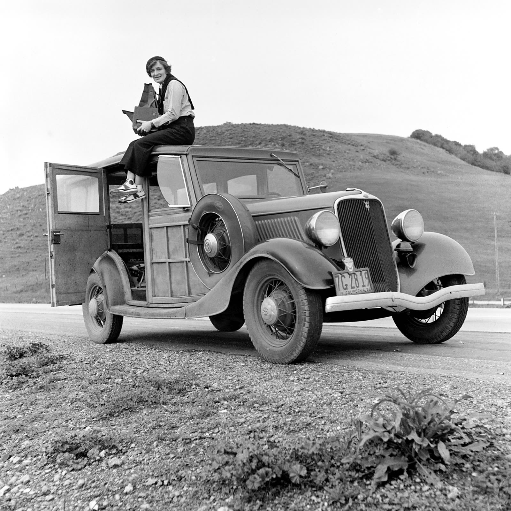
A mediados del siglo XX apareció una reacción interesante en sentido contrario: los New Topographics —Robert Adams, Stephen Shore en sus inicios, Lewis Baltz— fotografiaron el paisaje suburbano, industrial y anodino de Estados Unidos con una frialdad deliberada, sin dramatismo ni belleza convencional. Su argumento de fondo era que el paisaje también es una construcción cultural, no un dato natural, y que fotografiarlo sin idealizarlo es en sí mismo un acto crítico.
La llegada del color trajo su propia batalla, con un paralelo casi exacto al que este manual describe para la resistencia del cine frente al video y, más tarde, frente al digital. Durante décadas el color se consideró un medio "vulgar", propio de la publicidad y el álbum familiar, indigno de la fotografía seria. William Eggleston rompió esa jerarquía con su muestra en el MoMA de 1976 —recibida en su momento con desprecio casi unánime por la crítica— y Stephen Shore, ya alejado de los New Topographics, hizo lo mismo desde la carretera norteamericana. Saul Leiter había estado fotografiando la calle en color, con vidrios empañados, reflejos y marcos dentro del marco, desde los años cincuenta, sin que nadie le prestara atención hasta décadas después. El patrón se repite sin variación: cada cambio técnico —el color, el video, el sensor digital— fue primero rechazado como una degradación, y después, cuando una generación nueva dejó de compararlo con el estándar anterior, se reveló como un medio con estética propia.
La última gran línea, la más cercana al cine, es la fotografía escenificada: imágenes que no capturan un instante encontrado sino que lo construyen enteramente, con equipo, actores y —en el caso de Gregory Crewdson— literalmente con grúas, generadores y equipos de iluminación de escala cinematográfica. Crewdson monta sus fotografías como si fueran el fotograma decisivo de una película que no existe; Jeff Wall hace algo emparentado desde una tradición más pictórica, con imágenes de gran formato que citan explícitamente la pintura de historia. Es el punto en el que la fotografía deja de aprender del cine y empieza, abiertamente, a devolverle el favor.
4.5 Los géneros fotográficos como escuela del DF
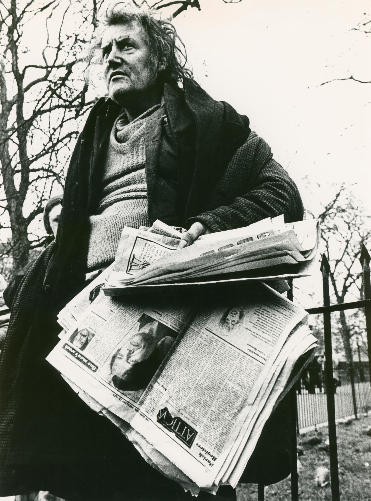
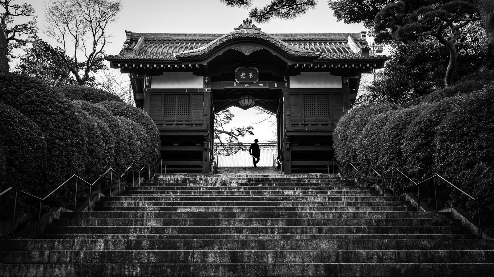
Cada género fotográfico entrena una habilidad distinta, y todas son directamente transferibles al trabajo en un set.
Retrato. Es la escuela más directa para el trabajo con actores. El modelado del rostro con luz —qué produce cada dirección y cada calidad de fuente sobre una cara humana— es exactamente el contenido del esquema clásico descripto en el capítulo 30.7, incluido el llamado triángulo Rembrandt. La tradición del retrato fotográfico agrega además un vocabulario propio de patrones que conviene conocer: la luz de mariposa (o butterfly), frontal y elevada, que produce la sombra característica bajo la nariz ya mencionada en el capítulo 3.5 al hablar del pictoralismo de estudio; y la luz de loop, una posición intermedia entre la mariposa y el Rembrandt, con una sombra pequeña y alargada junto a la nariz que no llega a tocar la sombra de la mejilla. Los tres patrones —mariposa, loop, Rembrandt— son, en rigor, la misma fuente principal desplazándose gradualmente desde el eje de cámara hacia el costado, y aprender a reconocerlos a simple vista en una fotografía es la manera más rápida de aprender a colocarlos en un set.
Paisaje. Enseña a trabajar con la luz que no se puede controlar: la espera de la hora exacta, la lectura del cielo, la paciencia frente a una nube que tapa el sol en el momento equivocado. Es la escuela directa del capítulo 35 sobre exteriores y luz natural, y quien haya pasado horas esperando la luz correcta para un paisaje entiende de manera visceral por qué la golden hour aparece tantas veces en un plan de rodaje.
Fotoperiodismo. Trabaja exclusivamente con luz disponible y con una regla ética explícita de no intervención: no se mueve el mobiliario de una escena de guerra, no se le pide a un manifestante que repita el gesto. Es el correlato fotográfico más puro del criterio realista descripto en el capítulo 3.4, y entrenar el ojo en esas condiciones —sin control de ningún tipo— es la mejor preparación posible para un documental o un rodaje de bajo presupuesto sin equipo de iluminación.
Moda y publicidad. Es exactamente lo opuesto: construcción total, control absoluto de cada variable, la belleza entendida como producto que debe funcionar en la primera décima de segundo de atención del espectador. Es la escuela del criterio industrialista y de su costado pictoralista: cada sombra, cada reflejo en el pelo, cada catchlight en el ojo está ahí porque alguien lo decidió, no porque el mundo lo ofreció así.
Arquitectura. Entrena algo que ningún otro género exige con la misma disciplina: el control de la geometría y de la perspectiva. Un fotógrafo de arquitectura corrige verticales, evita que las líneas de un edificio converjan de manera antiestética, y para eso recurre a objetivos con control de perspectiva o a correcciones específicas del encuadre. Es una sensibilidad que conviene tener presente cada vez que la cámara se acerca a un edificio o a una línea recta larga dentro de un decorado, porque el ojo humano es extremadamente sensible a una vertical que no lo es.
4.6 Fotógrafos para estudiar
No hace falta memorizar biografías. Alcanza con mirar mucho, con atención, y con una pregunta específica en la cabeza frente a cada autor: ¿qué es lo único que este fotógrafo sabe hacer mejor que nadie?
| Fotógrafo | Qué le enseña al DF |
|---|---|
| Henri Cartier-Bresson | El instante y la geometría: cómo una composición perfecta y un momento irrepetible pueden coincidir si el ojo está entrenado para reconocerlos en fracciones de segundo. |
| Ansel Adams | El control técnico absoluto de la exposición y el revelado como condición de la expresión —base directa del sistema de zonas desarrollado en el capítulo 21. |
| Annie Leibovitz / Richard Avedon | El retrato como construcción deliberada: cómo una puesta en escena completa puede fabricar una verdad psicológica sobre un sujeto, no solo registrarla. |
| William Eggleston / Stephen Shore | El color como asunto del cuadro y no como decoración: una lata de cerveza roja sobre una vereda puede ser el sujeto de la fotografía, no su fondo. |
| Saul Leiter | La obstrucción como recurso compositivo: vidrios empañados, reflejos, marcos dentro del marco que fragmentan la imagen y la vuelven más rica, no menos legible. |
| Gregory Crewdson | La iluminación de escala cinematográfica aplicada a una sola imagen: qué significa preparar un set completo para un único instante decisivo. |
| Sebastião Salgado / Josef Koudelka | El blanco y negro, el contraste duro y el grano como decisiones expresivas, no como limitaciones técnicas del material disponible. |
| Edward Hopper (pintor) | La luz artificial como portadora de soledad urbana: ventanas iluminadas de noche, interiores vacíos que cuentan una historia sin ningún personaje que actúe. |
| Vermeer / Hammershøi | La luz de ventana como fuente única y suficiente: cómo una sola abertura lateral puede modelar un interior entero sin necesidad de ninguna otra fuente. |
Ninguna de estas lecciones se aprende leyendo esta tabla. Se aprende mirando cien fotografías de cada uno, despacio, preguntándose en cada una por qué el fotógrafo puso la cámara exactamente ahí y no un metro a la izquierda.
4.7 La fotografía como entrenamiento diario
El consejo con el que este manual se cierra, en el capítulo 52.13, es simple: hay que mirar mucho antes de poder decidir bien. La fotografía es la forma más económica de ejercitar ese músculo, porque no requiere equipo de rodaje ni presupuesto ni permiso de nadie: requiere una cámara —cualquiera, incluida la de un teléfono— y la costumbre de mirar la luz existente antes de pensar en cómo se la modificaría.
Esa costumbre tiene, además, una aplicación profesional muy concreta. Salir a fotografiar una locación antes del rodaje —el llamado scouting fotográfico— no es solo un registro administrativo de encuadres posibles: es la manera de anotar cómo se comporta la luz en ese espacio a distintas horas, dónde entra el sol por la mañana y dónde por la tarde, qué superficies rebotan y con qué color. Esa información, tomada con semanas de anticipación, es la que después permite planificar un rodaje de exteriores con continuidad de luz creíble entre planos filmados en horarios distintos.
La costumbre de fotografiar también construye, con el tiempo, un archivo propio de referencias visuales —el mismo tipo de archivo que el capítulo 39.7 recomienda armar a partir de películas, pintura y fotografía ajena—, solo que en este caso compuesto enteramente de imágenes propias. Ese archivo termina siendo, para muchos directores de fotografía en ejercicio, el repertorio visual del que salen las ideas rectoras de sus películas.
4.8 La fotografía fija en el rodaje
Hay un rol en cada equipo de filmación que trabaja exclusivamente con imagen fija y que, sin embargo, rara vez recibe la atención que merece: el fotógrafo de foto fija, o still photographer. Su trabajo no es artístico en el sentido en que lo es el del director de fotografía —no decide la iluminación de la película—, pero su función es indispensable por tres razones distintas.
La primera es de continuidad: sus fotografías de set, tomadas entre toma y toma, son con frecuencia la referencia más confiable para reconstruir cómo estaba compuesto un encuadre, una posición de vestuario o un objeto de utilería cuando la producción necesita retomar una escena días o semanas después.
La segunda es de promoción: las fotografías fijas de una película —el afiche, el material de prensa, las imágenes que ilustran cualquier nota periodística— son casi siempre trabajo del fotógrafo de foto fija, no fotogramas extraídos de la película. Tienen que sostenerse solas, sin el apoyo del movimiento ni del sonido, con la misma exigencia compositiva que cualquier otra fotografía fija de este capítulo.
La tercera es de memoria: el registro fotográfico de un rodaje suele ser, con el paso de los años, la documentación más completa que sobrevive de cómo se trabajó realmente una película, incluido el propio esquema de iluminación en el momento del rodaje.
Colaborar bien con esa persona es sencillo y se descuida con frecuencia: coordinar cuándo puede disparar sin interferir con el sonido ni el rodaje en curso, avisarle con anticipación los momentos de mayor valor visual de una escena, y —lo más simple de todo— tratar su trabajo con el mismo respeto profesional que cualquier otro departamento del set.
5. Anatomía de la cámara cinematográfica
Hay una tentación comprensible, al empezar a estudiar dirección de fotografía, de tratar la cámara como una caja negra: un aparato que alguien más sabe operar y cuyo funcionamiento interno no hace falta comprender siempre que la imagen salga. Es una tentación que conviene resistir desde el primer día. El director de fotografía no necesita ser técnico de mantenimiento, pero sí necesita entender qué hace cada parte del aparato, porque casi todas las decisiones estéticas que va a tomar —la profundidad de campo, la textura del movimiento, el grado de definición, la latitud disponible para el error— son consecuencias directas de cómo esas partes interactúan. Una cámara no es un instrumento neutral que registra lo que hay: es un sistema de decisiones materializadas, y quien la usa sin conocerlas termina heredando las decisiones de otro.
Este capítulo describe la arquitectura general de la cámara cinematográfica, empezando por su lógica común —la que comparten una Bell & Howell 2709 de 1912 y una ARRI Alexa 35 de hoy— y bajando después al detalle del mecanismo que definió al cine durante su primer siglo: el arrastre intermitente.
5.1 Las cuatro partes
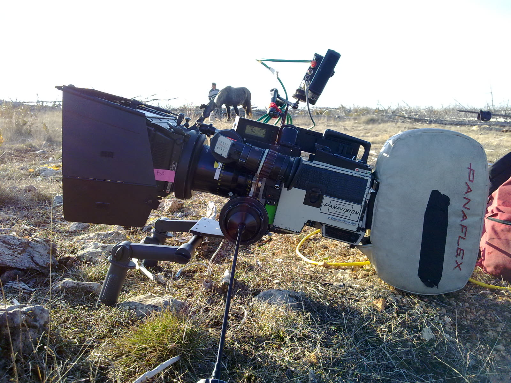
Cualquier cámara de cine, fílmica o digital, se descompone en cuatro bloques funcionales. La descomposición es útil porque sobrevive a los cambios tecnológicos: lo que cambia entre una Arriflex 435 y una Sony Venice 2 es la implementación de cada bloque, no el esquema.
1. El cuerpo. Es la cámara oscura propiamente dicha: un recinto estanco a la luz, mecánicamente rígido, que sostiene todo lo demás en una relación geométrica precisa. Su función esencial es garantizar que la única luz que llegue al material sensible sea la que pasó por el objetivo, y que llegue siempre exactamente al mismo plano, a la misma distancia de la montura. Esa distancia —la tiro de brida o flange focal distance— es una de las cotas más críticas de todo el aparato: un error de centésimas de milímetro se traduce en un foco que no coincide con la escala del lente, con consecuencias que solo se descubren cuando ya es tarde. El cuerpo aloja también el obturador, el visor, los mecanismos de transporte (en fílmico) o el sensor y su electrónica de lectura (en digital), y toda la interfaz de control: cadencia, ángulo de obturación, sensibilidad, formato de grabación.
2. El objetivo. Es el sistema óptico que forma la imagen sobre el plano de registro. Se trata a fondo en la Parte III, pero conviene subrayar desde ahora que el objetivo no es un accesorio del cuerpo sino su socio en igualdad de condiciones: dos cámaras distintas con el mismo juego de ópticas se parecen más entre sí que la misma cámara con dos juegos distintos. La montura —PL, LPL, EF, E, RF, Panavision— es el vínculo mecánico y a veces electrónico entre ambos, y determina qué ópticas pueden usarse y con qué grado de comunicación de datos.
3. El almacenamiento. En cine fotoquímico, el chasis o magazine: un contenedor a prueba de luz con dos compartimentos, uno para el rollo virgen y otro para el impresionado, cargable en oscuridad total o en manga de cambio. En digital, las tarjetas o módulos de estado sólido —CFexpress, SxS, RED MINI-MAG, Codex Compact Drive— y, cada vez más, el flujo hacia grabadores externos por SDI o hacia estaciones de descarga en set. El cambio de soporte modificó por completo la economía del rodaje: un magazine de 400 pies de 35mm da poco más de cuatro minutos a 24 cuadros por segundo, mientras que un drive de un terabyte puede dar horas. Esa diferencia no es solo logística; cambia el ritmo del set, la dirección de actores y la relación entre lo que se rueda y lo que se monta.
4. La alimentación. El sistema que provee energía: mecánico en las cámaras de cuerda —una manivela o un resorte tensado, con las limitaciones de autonomía y constancia que eso implica— y eléctrico a partir de la generalización del motor sincrónico. Hoy es un asunto de baterías de níquel o de litio en formato V-mount o Gold Mount, distribución de tensión a los accesorios (monitores, seguidores de foco inalámbricos, transmisores de video, motores de lente) y consumo total. Un equipo digital moderno es, entre otras cosas, una pequeña red eléctrica portátil, y planificar su autonomía es parte del trabajo del asistente de cámara tanto como cargar los magazines lo era antes.
A estos cuatro bloques conviene sumarles un quinto que la práctica trata como parte del cuerpo pero que merece mención propia: el visor. Es el instrumento con el que se compone, y su evolución es una historia en sí misma. Los primeros visores eran ópticos y paralelos al objetivo, con el consiguiente error de paralaje. La solución fue el visor réflex, que desvía hacia el ojo del operador la misma luz que pasa por el objetivo —en las cámaras fílmicas, mediante un obturador de espejo inclinado 45° que refleja la imagen hacia el visor mientras la película avanza—. En digital, el visor pasó a ser electrónico: un pequeño panel OLED que muestra la señal ya procesada del sensor, con la ventaja enorme de poder mostrar información superpuesta —histogramas, falso color, cebras, marcos de encuadre, LUT de monitoreo— y con la desventaja de una latencia que, aunque sea de pocos milisegundos, cambia la sensación física de operar en cámara en mano.
5.2 De la cámara oscura al objetivo: el canje fundacional
La cámara cinematográfica es descendiente directa de la cámara oscura, un dispositivo conocido desde la antigüedad y descrito con precisión por Alhacén en el siglo XI y por Leonardo tres siglos después. El principio es de una simplicidad desconcertante: si en la pared de un recinto oscuro se practica un orificio muy pequeño, cada punto de la escena exterior proyecta un único rayo hacia el interior, y sobre la pared opuesta se forma una imagen invertida de esa escena. No hace falta ninguna lente. Basta con un agujero.
El problema aparece cuando se intenta usar ese principio para algo práctico. Un orificio muy pequeño produce una imagen nítida pero oscurísima; los tiempos de exposición se cuentan en minutos. Si se agranda el orificio para ganar luz, cada punto del objeto deja de proyectar un rayo y pasa a proyectar un pequeño cono, de modo que la imagen se forma como una suma de discos superpuestos: gana brillo y pierde definición. Ese canje —luz contra definición— es el conflicto fundacional de toda la óptica fotográfica, y no se ha resuelto nunca; solo se ha ido negociando con instrumentos cada vez más sofisticados.
La fotografía estenopeica, que trabaja con orificios de entre 0,2 y 0,5 milímetros y exposiciones que van de diez segundos a varios minutos, sigue siendo la forma más pura de ese principio. Tiene una virtud que ningún objetivo puede igualar: al no haber vidrio, no hay aberración cromática ni distorsión de perspectiva propia de la lente, y la profundidad de campo es prácticamente infinita. Y tiene un defecto que la vuelve inservible para el cine: no hay manera de hacer pasar suficiente luz por un agujero de ese tamaño en la fracción de segundo que dura un fotograma.
La solución es la lente convergente. Un vidrio con superficies curvas desvía los rayos que lo atraviesan y los hace converger en un punto: permite abrir el orificio muchísimo —de fracciones de milímetro a varios centímetros— sin que la imagen se desarme, porque todos los rayos que salen de un punto del objeto y entran por cualquier zona de la lente vuelven a reunirse en un mismo punto de la imagen. Se gana luz sin perder definición. Ése es, literalmente, el objetivo: un dispositivo para romper el canje.
Pero romperlo del todo es imposible, y buena parte de la historia de la óptica consiste en aprender cómo se paga el precio. Las lentes introducen sus propias aberraciones —esférica, cromática, coma, astigmatismo, curvatura de campo, distorsión—; el diafragma que regula la cantidad de luz también regula la profundidad de campo, de modo que exposición y foco quedan atados; y cerrar demasiado el diafragma para ganar profundidad reintroduce el problema del estenopo por otra vía, la difracción. Todo lo que se desarrolla en la Parte III son formas históricas y contemporáneas de administrar ese mismo canje inicial.
5.3 El mecanismo de arrastre intermitente
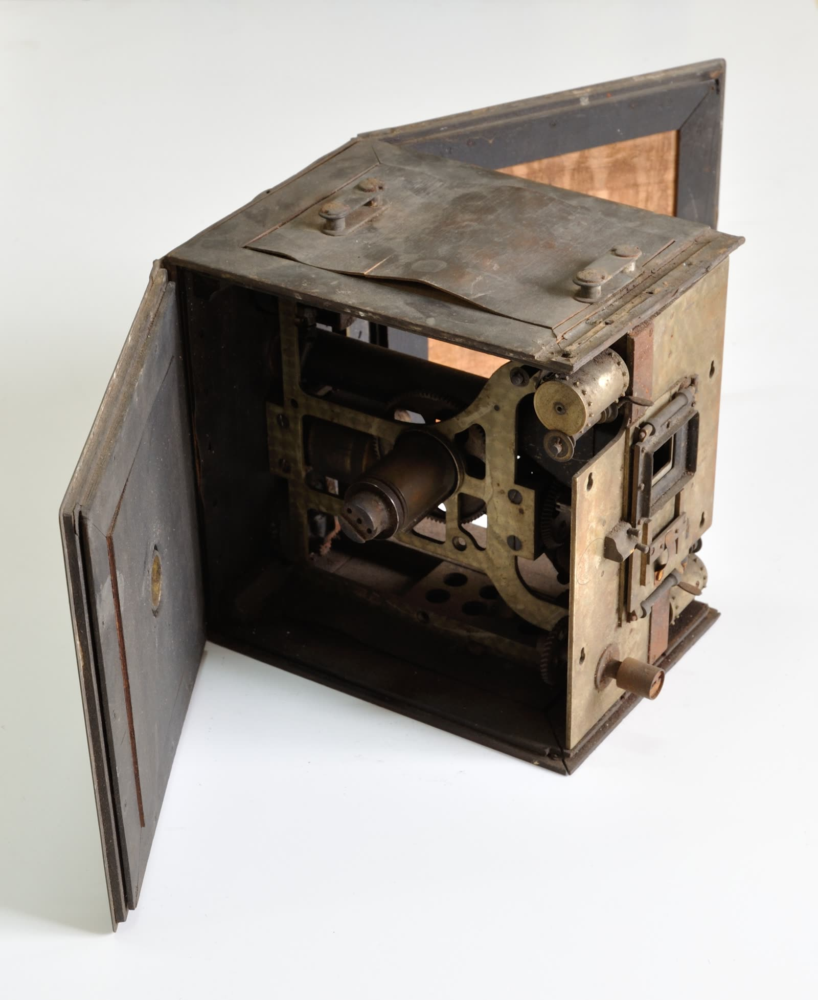
Aquí está el corazón mecánico del cine fotoquímico, y una de las invenciones más ingeniosas de la técnica del siglo XIX. El problema a resolver es el siguiente: la película debe avanzar veinticuatro veces por segundo, pero cada fotograma debe exponerse con la película absolutamente inmóvil. Si se moviera durante la exposición, el fotograma saldría barrido. Hace falta, entonces, convertir un movimiento continuo —el de las bobinas, que giran a velocidad más o menos constante— en un movimiento intermitente de arranque y frenado brutal, veinticuatro veces por segundo, con una precisión de posicionamiento de micrones.
La secuencia completa, en el orden en que ocurre:
- El obturador está cerrado. Ninguna luz llega a la ventanilla.
- El garfio (o grifa) desciende, engancha una perforación de la película y arrastra el material la altura exacta de un fotograma, colocando un cuadro virgen frente a la ventanilla de impresión.
- La película se detiene. En las cámaras de alta precisión, un contragarfio o pin de registro entra en una perforación y fija el fotograma en una posición exacta y repetible; simultáneamente, la presión de la ventanilla y la contraventanilla lo mantienen plano.
- El obturador se abre y expone el fotograma. La película está inmóvil.
- El obturador se cierra. El garfio vuelve a descender y el ciclo recomienza.
- Todo esto, veinticuatro veces por segundo: cada ciclo completo dura cuarenta y un milésimas de segundo, de las cuales aproximadamente la mitad es exposición y la otra mitad, transporte.
Dos elementos hacen posible que semejante violencia mecánica no destruya el material. El primero son los bucles: tramos de película deliberadamente flojos, arriba y abajo del bloque de arrastre, que actúan como amortiguadores entre el movimiento continuo de las bobinas y los rodillos dentados y el movimiento intermitente del garfio. Sin bucles, la tensión del tirón se transmitiría a todo el rollo y las perforaciones se desgarrarían. Cargar correctamente los bucles —con la longitud exacta que el fabricante especifica— es la primera destreza que aprende un asistente de cámara en fílmico, y perder el bucle durante una toma es un accidente que se oye antes de verse: la cámara cambia de sonido.
El segundo es el sistema de registro. La estabilidad de la imagen proyectada depende de que todos los fotogramas ocupen exactamente la misma posición respecto de las perforaciones. Las cámaras con pin de registro —Mitchell, Arriflex 435, Panaflex— logran una estabilidad prácticamente perfecta, condición indispensable para trucajes, sobreimpresiones y efectos que requieren combinar varias capas de imagen. Las cámaras sin pin de registro, más livianas y silenciosas, aceptan una fluctuación mínima que en proyección normal es imperceptible pero que se delata en cuanto se compone la imagen con otra.
Y por encima de todo esto rige una condición absoluta: el arrastre y el obturador deben estar rígidamente sincronizados. En las cámaras mecánicas, ambos derivan del mismo eje motriz, y esa sincronía no es opcional ni ajustable en rodaje. Si se pierde —por desgaste, por un golpe, por un montaje incorrecto tras un mantenimiento— la luz entra mientras la película se está moviendo y todos los fotogramas salen velados o barridos. Es una de las pocas fallas que no tienen ninguna reparación posterior.
5.4 Lo que cambió y lo que no con el digital
En una cámara digital no hay garfio, ni bucles, ni ventanilla, ni magazine con película. El sensor está fijo y su superficie se lee electrónicamente. Es tentador concluir que todo el capítulo anterior es arqueología. No lo es, por dos razones.
La primera es que el problema conceptual sigue siendo idéntico: hay que definir durante cuánto tiempo se acumula luz por cada cuadro y durante cuánto tiempo no. Lo que en fílmico hacía un disco metálico girando, en digital lo hace un obturador electrónico que define la ventana de integración de carga de los fotodiodos. El resultado perceptual —la cantidad de motion blur, la textura del movimiento— responde a las mismas leyes, y por eso los ajustes se siguen expresando en grados de ángulo de obturación aunque no haya ningún disco que girar. El capítulo siguiente está dedicado íntegramente a esto.
La segunda es que la ausencia de una obturación mecánica introdujo un problema nuevo. La mayoría de los sensores CMOS no leen toda su superficie a la vez, sino línea por línea de arriba hacia abajo, en un barrido que tarda unos milisegundos. Durante ese barrido, la escena sigue moviéndose. El resultado es el rolling shutter: verticales que se inclinan en panorámicas rápidas, hélices de avión que se curvan, flashes que iluminan solo una franja del cuadro. Es, en cierto modo, la reaparición fantasmal del mismo problema que el pin de registro y la sincronía obturador-arrastre habían resuelto en el mundo mecánico. Los sensores de global shutter —el de la Sony Venice 2 en ciertos modos, el de las RED Komodo y Komodo-X, los CCD del video de los años noventa— lo eliminan a cambio de otras concesiones en rango dinámico o ruido. Se vuelve sobre esto en el capítulo 9.
El resto de la arquitectura permanece: cuerpo estanco y rígido con una cota de brida exacta, objetivo intercambiable, medio de almacenamiento, fuente de energía, sistema de visado. Quien entendió la lógica de una Arriflex 16SR entiende la de una Alexa 35 con una tarde de manual. Lo que hay que aprender de nuevo no es la anatomía, sino el metabolismo: cómo se comporta el material sensible, que es de lo que se ocupan los capítulos 6, 7 y 8.
6. El obturador, la cadencia y el tiempo
El cine es el arte de administrar el tiempo, y el obturador es el órgano con el que la cámara lo administra. Todo lo que un espectador percibe como velocidad, peso, urgencia o suspensión del movimiento se decide en la interacción de dos parámetros que en fotografía fija son independientes y que en cine están amarrados entre sí: cuántas imágenes se registran por segundo y cuánto dura la exposición de cada una. Entender ese amarre —y saber cuándo y cómo romperlo deliberadamente— es una de las competencias que distinguen a un director de fotografía de un buen operador.
6.1 Las dos funciones del obturador
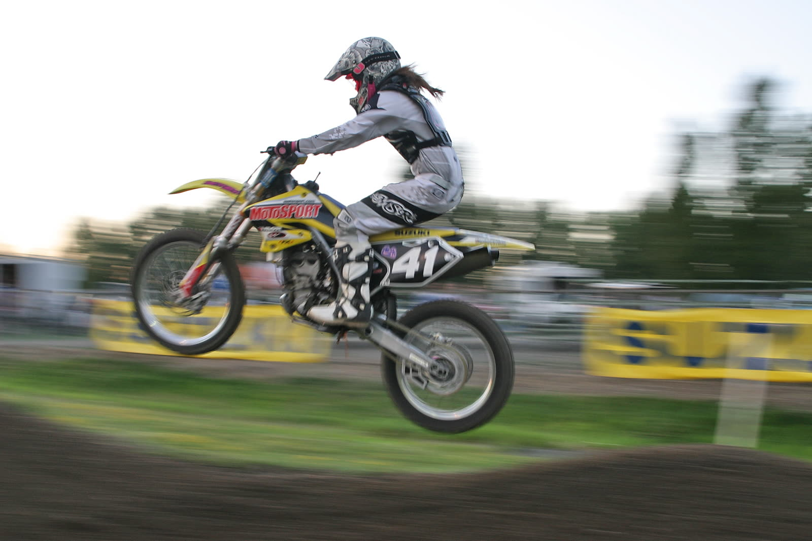
En una cámara fílmica, el obturador cumple simultáneamente dos funciones opuestas:
- Dejar pasar la luz hacia la película durante el instante en que ésta se encuentra detenida frente a la ventanilla.
- Bloquear la luz durante el instante en que la película se desplaza hacia el fotograma siguiente.
La segunda función es tan importante como la primera. Si la luz no se bloqueara durante el transporte, cada fotograma quedaría atravesado por un barrido luminoso, y la imagen sería un continuo velado sin cuadros distinguibles. El cine existe porque hay oscuridad entre las imágenes tanto como porque hay imágenes.
Físicamente, el obturador es un disco opaco montado sobre un eje sincronizado con el mecanismo de arrastre, con un sector angular recortado. Cuando el sector abierto pasa frente a la ventanilla, hay exposición; cuando pasa la porción opaca, hay transporte. En las cámaras réflex, ese disco está espejado y montado a 45° respecto del eje óptico, de modo que la misma luz que no llega a la película durante la fase de bloqueo se desvía hacia el visor. De ahí el titileo característico del visor óptico de una cámara de cine en marcha: el operador ve la escena exactamente durante los instantes en que la película no la ve.
La apertura estándar del sector es de 180°, es decir, media vuelta: la mitad del ciclo se destina a exponer y la otra mitad a transportar. Esa cifra no es arbitraria, y volveremos sobre ella.
6.2 La fórmula: por qué en cine no se elige libremente la velocidad de obturación
El tiempo de exposición de cada fotograma resulta de dividir la duración del ciclo completo según la proporción del disco que está abierta:
$$t = \frac{1}{\text{fps} \times \frac{360}{\text{ángulo del obturador}}}$$
A veinticuatro cuadros por segundo con un obturador de 180°:
$$t = \frac{1}{24 \times \frac{360}{180}} = \frac{1}{24 \times 2} = \frac{1}{48}\ \text{s}$$
En la práctica se redondea a 1/50 s, valor que además coincide con la escala de tiempos de los fotómetros fotográficos y facilita la medición. Un fotómetro que no ofrece 1/48 pero sí 1/50 introduce un error de aproximadamente un cuatro por ciento, es decir, menos de un vigésimo de diafragma: absolutamente despreciable frente a la latitud de cualquier soporte moderno.
Aquí aparece la diferencia estructural con la fotografía fija. El fotógrafo elige el tiempo de exposición como una variable libre: puede disparar a 1/8 o a 1/2000 según lo que quiera del movimiento, y compensar con diafragma o sensibilidad. El director de fotografía no. Su tiempo de exposición está determinado por la cadencia a través del ángulo, y la cadencia está determinada, en el caso normal, por el estándar de proyección. Si se rueda a 24 fps —o a 25, según el territorio— y se quiere el aspecto convencional del movimiento cinematográfico, el tiempo de exposición ya está fijado en torno a 1/50 de segundo, y las únicas variables que quedan para controlar la exposición son el diafragma, la sensibilidad, los filtros de densidad neutra y la cantidad de luz de la escena.
Este es el motivo por el cual el trípode de la exposición en cine no es el mismo que en fotografía. En cine, uno de los tres apoyos —el tiempo— está clavado al piso la mayor parte del tiempo, y de ahí la importancia central que adquieren los filtros ND y el control de la iluminación como herramientas de exposición. En exteriores soleados con ópticas rápidas, no es raro llevar seis o siete diafragmas de densidad neutra delante del lente simplemente para poder trabajar a T2.8 sin sobreexponer.
Cuando se trabaja con fotómetro y el instrumento no ofrece el modo cine, el procedimiento es directo: se mide en modo fotográfico con el tiempo equivalente (1/50 para 24 o 25 fps a 180°) y el resultado es el mismo diafragma. Los fotómetros de cine simplemente hacen esa conversión internamente y permiten introducir cadencia y ángulo por separado, que es una forma más cómoda de pensar el problema.
6.3 El obturador variable
Muchas cámaras profesionales permiten modificar el ángulo del sector abierto, sea mediante dos semidiscos superpuestos cuya posición relativa se ajusta —en las cámaras mecánicas— o directamente por menú —en las digitales—. Esa posibilidad tiene dos consecuencias muy distintas, una técnica y otra expresiva, y ambas importantes.
La consecuencia técnica es que permite reducir el tiempo de exposición sin tocar el diafragma. Si una escena resulta un diafragma sobreexpuesta y no hay filtros a mano, cerrar el obturador de 180° a 90° resta exactamente un paso de luz. La alternativa obvia —cerrar el diafragma— restaría también un paso, pero modificaría la profundidad de campo, que es una decisión de puesta en escena y no una variable de ajuste. Separar el control de la exposición del control del foco es una de las herramientas más finas que tiene el director de fotografía, y el obturador variable es la que lo permite sin recurrir a filtros.
La consecuencia expresiva es más profunda. El ángulo del obturador determina qué proporción de cada intervalo temporal queda registrada en el fotograma, y por lo tanto cuánto arrastre —motion blur— acumula el movimiento dentro de cada imagen. Con 180°, la mitad de cada intervalo está grabada y la otra mitad perdida; el resultado es una cantidad de borrosidad de movimiento que el ojo entrenado por un siglo de cine lee como "natural". Cerrar el obturador reduce el arrastre y produce imágenes más definidas pero perceptualmente más entrecortadas; abrirlo lo aumenta y produce imágenes más fluidas pero más difusas.
| Ángulo | Tiempo a 24 fps | Efecto perceptual |
|---|---|---|
| 360° | 1/24 s | Máximo arrastre; imagen fluida, blanda, onírica o alucinada |
| 270° | 1/32 s | Arrastre aumentado; atmósfera, suavidad, embriaguez |
| 180° | 1/48 s | Estándar; el arrastre "natural" al que está habituado el espectador |
| 90° | 1/96 s | Movimiento fragmentado, seco, staccato |
| 45° | 1/192 s | Estroboscopia marcada; rigidez, nerviosismo, violencia |
| 22,5° | 1/384 s | Descomposición casi cuadro a cuadro del movimiento |
El ejemplo canónico del obturador cerrado es el desembarco en Omaha de Rescatando al soldado Ryan, donde Janusz Kamiński combinó ángulos de 45° y 90° con desnudado de las ópticas y sacudidas controladas del cuerpo de cámara para producir una violencia visual que no proviene de lo que se muestra sino de cómo se registra el tiempo. Cada salpicadura de agua queda congelada en su propio instante, sin la ligadura borrosa que normalmente une un fotograma con el siguiente, y el resultado es una sensación física de agresión. Gladiador, buena parte del cine de acción posterior a 1998 y una porción enorme de la publicidad heredaron ese recurso hasta convertirlo en cliché; conviene conocerlo tanto para usarlo como para evitarlo.
En el extremo opuesto, obturadores muy abiertos —entre 270° y 360°— se han usado para estados alterados, secuencias oníricas o simplemente para ganar hasta un diafragma de luz en condiciones extremas. El costo es una imagen visiblemente más blanda en movimiento, que en pantalla grande puede resultar molesta si el material tiene mucha acción.
El obturador variable permite además una operación clásica del cine fotoquímico: hacer fundidos de entrada y salida en cámara, cerrando o abriendo progresivamente el ángulo durante la toma. A diferencia de un fundido hecho con el diafragma, éste no altera la profundidad de campo mientras ocurre, de modo que la imagen se oscurece sin que cambie su geometría. En la era digital el recurso perdió necesidad —el fundido se hace en posproducción— pero sigue siendo útil cuando se busca ese comportamiento específico en cámara, y sobrevive en la práctica del ramping, del que hablaremos enseguida.
6.4 Por qué veinticuatro cuadros por segundo
La cifra de 24 fps tiene un aura de necesidad natural que no merece. Es el resultado de una negociación entre fisiología, ingeniería y economía, y las tres partes cedieron algo.
La fisiología. El cine funciona porque el sistema visual humano no procesa imágenes aisladas sino cambios. La explicación decimonónica —la "persistencia retiniana", según la cual la imagen permanece impresa en la retina una fracción de segundo después de desaparecer— es insuficiente: explicaría que no viéramos parpadeo, pero no que percibiéramos movimiento. La explicación moderna proviene de la psicología de la Gestalt y se conoce como fenómeno Phi: al presentarse dos estímulos similares en posiciones ligeramente distintas y con un intervalo temporal adecuado, el sistema perceptual no registra dos estímulos sino uno solo que se desplaza. El cerebro construye activamente el movimiento; no lo recibe. A eso se suma el llamado efecto beta y la integración temporal de la corteza visual, que en conjunto explican por qué una sucesión de imágenes fijas produce movimiento continuo y no una serie de saltos.
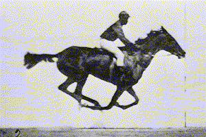
La ingeniería. El movimiento aparente y la ausencia de parpadeo son dos problemas distintos con umbrales distintos. El movimiento se percibe como continuo a partir de unas dieciséis imágenes por segundo —de ahí las cadencias del cine mudo, que oscilaban entre 16 y 20—. El parpadeo, en cambio, requiere frecuencias mucho más altas: por debajo de unos cuarenta y cinco o cincuenta destellos por segundo, el ojo detecta la alternancia de luz y oscuridad y la pantalla "late". Ése fue el hallazgo de los primeros experimentadores, Edison incluido, y planteó una tensión económica evidente: proyectar a cincuenta imágenes por segundo habría exigido rodar a cincuenta, con más del doble de consumo de negativo.
La solución fue elegante y separa definitivamente cadencia de registro de cadencia de destello. El proyector, mediante un obturador de dos o tres palas, muestra cada fotograma dos o tres veces antes de avanzar al siguiente. A 24 fotogramas por segundo con obturador de dos palas, la pantalla emite 48 destellos por segundo: suficiente para que el parpadeo desaparezca sin gastar un centímetro más de película. El mecanismo de cruz de Malta del proyector se encarga del avance intermitente mientras el obturador multiplica los destellos. Desde el punto de vista estrictamente perceptual, la cadencia ideal —sin parpadeo, sin necesidad de trucos y con movimiento perfectamente resuelto— rondaría las setenta imágenes por segundo, cifra que nunca se adoptó por razones puramente económicas.
El sonido. La fijación definitiva del estándar en 24 llegó con el cine sonoro, hacia 1927. La banda óptica se lee en un punto del proyector distinto de la ventanilla de imagen —separado por unos dieciséis fotogramas, para que el movimiento intermitente de la imagen no afecte la lectura continua que el sonido requiere—, y esa lectura necesita una velocidad lineal de película suficiente y, sobre todo, constante. Veinticuatro cuadros por segundo daban los 456 milímetros por segundo que permitían una calidad de audio aceptable con la tecnología de la época. El cine mudo no tenía esa restricción y por eso sus cadencias eran variables; buena parte de la comicidad involuntariamente acelerada con que hoy vemos el cine mudo proviene de proyectar a 24 material rodado a 16 o 18.
El presente. Las 24 imágenes por segundo sobrevivieron a la desaparición completa de la razón técnica que las impuso, porque en el camino se volvieron un rasgo estilístico. La textura ligeramente entrecortada del movimiento a 24p, con su arrastre de 1/48, es lo que el público identifica como "cine". Los experimentos con alta cadencia (HFR) lo demostraron por la negativa: El Hobbit a 48 fps y Gemini Man y Billy Lynn a 120 fps produjeron una nitidez de movimiento tan alta que buena parte del público la describió como televisiva, teatral o "de detrás de cámaras". No era un defecto técnico sino un exceso de información temporal: el arrastre que ocultaba las imperfecciones del maquillaje, de los decorados y de la actuación desapareció, y con él una parte del pacto de ilusión. La misma lógica explica el rechazo generalizado a la interpolación de cuadros de los televisores modernos, el llamado soap opera effect.
6.5 Cadencias de televisión y su herencia
Cuando la televisión estandarizó sus sistemas, no partió del cine sino de la red eléctrica. La razón era práctica: sincronizar el barrido de la imagen con la frecuencia de la corriente alterna local evitaba que las interferencias de la red produjeran bandas móviles en la pantalla. De ahí que los sistemas se dividieran geográficamente igual que las redes eléctricas.
| Sistema | Región | Campos/s | Cuadros/s | Líneas |
|---|---|---|---|---|
| NTSC | EE.UU., Japón, buena parte de América | 60 (59,94) | 30 (29,97) | 525 |
| PAL | Europa, Argentina, Australia, China | 50 | 25 | 625 |
| SECAM | Francia, Europa del Este, ex-URSS | 50 | 25 | 625 |
La curiosidad del 59,94 en lugar de 60 merece explicación porque sigue generando problemas medio siglo después. Cuando se agregó color al sistema NTSC monocromo, hubo que insertar la subportadora de crominancia dentro del mismo ancho de banda sin que interfiriera con la señal de luminancia ni con la portadora de audio. La solución fue desplazar la frecuencia de cuadro exactamente un 0,1 %, de 30 a 29,97 cuadros por segundo. De ese ajuste nacieron el timecode drop-frame, la cadencia de 23,976 fps —que es 24 desplazado en el mismo 0,1 % para convivir con el mundo NTSC— y una cantidad considerable de dolores de cabeza en posproducción. Cuando un flujo de trabajo mezcla 24 y 23,976 sin declararlo, el resultado es una deriva de sincronismo de audio de aproximadamente un fotograma cada cuarenta segundos: imperceptible al principio de un rollo, evidente al final.
Este dato aparentemente burocrático tiene además una consecuencia práctica directa en el set, que reaparecerá al hablar de iluminación. Las fuentes de descarga —HMI, fluorescentes, algunos LED baratos, y por supuesto la iluminación pública— no emiten luz constante sino pulsada al ritmo de la red. Si la cadencia de la cámara y el ángulo de obturación no guardan una relación entera con esa pulsación, cada fotograma recibe una cantidad distinta de luz y la imagen titila (flicker). Rodar a 25 fps con obturador de 180° en un país de 50 Hz es la configuración segura clásica; rodar a 24 fps en 50 Hz con luz HMI sin balastos electrónicos de alta frecuencia es pedir problemas. Los balastos flicker-free modernos resolvieron el asunto en la mayoría de los casos, pero la práctica —y las cámaras lentas, que multiplican el riesgo— obliga a seguir teniéndolo presente. Un cálculo rápido de ángulo seguro antes de rodar a 100 fps bajo tubos fluorescentes ahorra una jornada entera de material inutilizable.
6.6 Entrelazado y progresivo
La televisión analógica enfrentaba el mismo dilema que el cine: necesitaba una frecuencia alta de refresco para evitar el parpadeo, pero no disponía de ancho de banda para transmitir tantas imágenes completas por segundo. Su solución fue distinta y más ingeniosa que la del proyector, y también más problemática.
Entrelazado (interlaced: 50i, 60i, 1080i). Cada cuadro se divide en dos campos: uno contiene únicamente las líneas impares y otro únicamente las pares. Ambos se transmiten y se dibujan sucesivamente, de modo que la pantalla se refresca cincuenta o sesenta veces por segundo aunque sólo se transmitan veinticinco o treinta cuadros completos. El parpadeo desaparece por la mitad del ancho de banda. El costo es que los dos campos de un mismo cuadro corresponden a instantes distintos: si hay movimiento entre ellos, aparece el característico peinado o dentado en los bordes móviles. En una pantalla de tubo eso era casi invisible; en un panel de píxeles fijos, es un artefacto evidente que obliga a desentrelazar, con la consiguiente pérdida de resolución o de suavidad.
Progresivo (24p, 25p, 30p, 60p). Cada cuadro se registra y se muestra completo, en un solo barrido. No hay campos, no hay peinado, no hay ambigüedad temporal dentro del fotograma. Es el estándar actual de captura, de posproducción y de distribución digital, y el único aceptable para material cinematográfico.
Cuando el cine se emitía por televisión hubo que conciliar 24 fps con 30 (o 29,97), y de ahí nació el pulldown 3:2: se reparten los cuatro fotogramas de cine en cinco cuadros de video repitiendo campos según un patrón fijo. Funciona, pero introduce una cadencia irregular en el movimiento —el conocido judder de las emisiones televisivas de películas— y complica cualquier intento de recuperar el original. Deshacer un pulldown mal aplicado es una tarea de posproducción que todavía hoy se paga cara.
6.7 Sobrecadencia, subcadencia y ramping
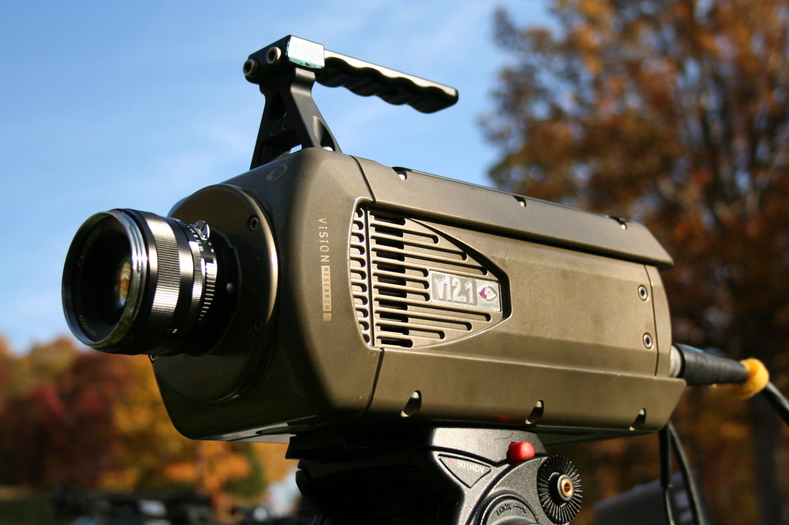
Modificar la cadencia respecto de la de proyección es la forma más directa de alterar la percepción del tiempo, y conviene tener clara la relación, que es inversa:
- Sobrecadencia (rodar a más cuadros que los de proyección: 48, 60, 120, 240, 1000 fps): al reproducirse a 24, el movimiento se ve más lento. Es la cámara lenta. Cada segundo de acción real ocupa varios segundos de pantalla, el gesto se dilata y se vuelve legible en detalles que a velocidad normal se pierden. El costo es fotométrico: si se mantiene el ángulo de 180°, duplicar la cadencia divide a la mitad el tiempo de exposición, de modo que pasar de 24 a 96 fps cuesta dos diafragmas de luz. Rodar cámaras lentas exige, casi siempre, mucha más luz de la que uno cree.
- Subcadencia (rodar a menos cuadros: 12, 8, 6, 1 fps, hasta la animación cuadro a cuadro): al reproducirse a 24, el movimiento se ve más rápido. Es la cámara rápida y, llevada al extremo, el time-lapse. Aquí sobra luz, y el ángulo de obturación se vuelve la herramienta de control del arrastre: un time-lapse con obturador muy abierto produce estelas continuas; con obturador cerrado, saltos discretos.
- Ramping: cambiar la cadencia durante la toma, con compensación simultánea del diafragma o del ángulo para mantener la exposición constante. Las cámaras modernas lo hacen automáticamente y con curvas programables. El efecto —el tiempo que se estira o se comprime dentro de un mismo plano continuo— tuvo su momento de moda a comienzos de los 2000 y sigue siendo útil cuando la dramaturgia lo justifica.
Una advertencia importante sobre la cámara lenta digital: no todas las cámaras mantienen la misma calidad de imagen al subir la cadencia. Muchas recortan el área activa del sensor —lo que cambia el campo visual efectivo de las ópticas—, reducen la resolución, aumentan la compresión o pasan a un modo de lectura de menor profundidad de bits. Antes de planificar una secuencia entera a 120 fps conviene verificar exactamente qué hace ese modelo de cámara en ese modo, porque el plano lento puede terminar no cortando con los planos que lo rodean.
Y una advertencia final que vale para todo el capítulo: el obturador es una decisión de dirección de fotografía, no un ajuste técnico por defecto. Dejarlo en 180° es una elección legítima y correcta la mayor parte del tiempo, pero es una elección. Preguntarse en cada secuencia qué textura debe tener el movimiento —si el mundo debe deslizarse o fracturarse, si el cuerpo debe pesar o vibrar— es parte del trabajo, y la respuesta se escribe en grados.
7. Soportes de captura: fílmico, video, cine digital
Elegir el soporte es la primera decisión material de una película, y una de las pocas que después no se puede deshacer. Determina la textura de la imagen, la latitud disponible, el modo de trabajo en set, la estructura de costos, el flujo de posproducción y hasta el ritmo psicológico del rodaje. Conviene tomarla con conocimiento y no por inercia, prestigio o miedo.
Este capítulo repasa las cuatro grandes familias de soporte, con el detalle suficiente para poder argumentar una elección delante de un productor, y se detiene especialmente en dos asuntos que suelen tratarse mal: el funcionamiento real de la película fotoquímica y la diferencia —que no es cosmética— entre grano y ruido.
7.1 Las cuatro familias
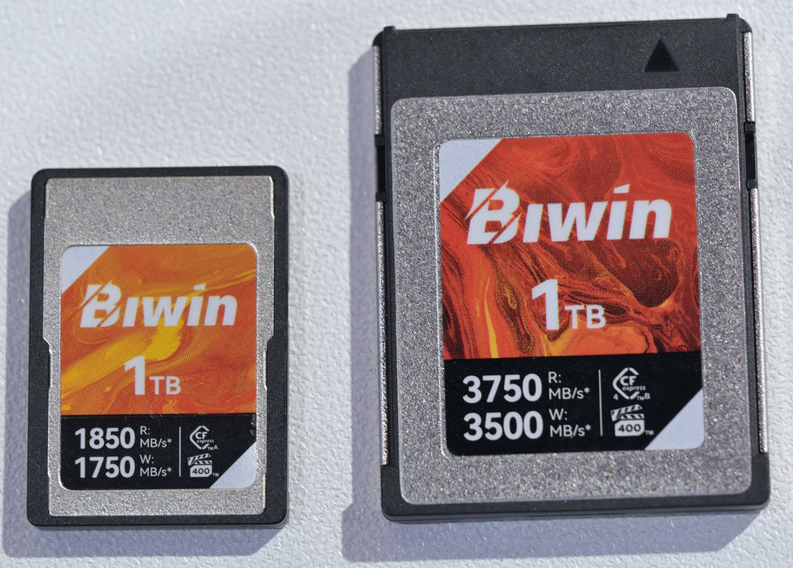
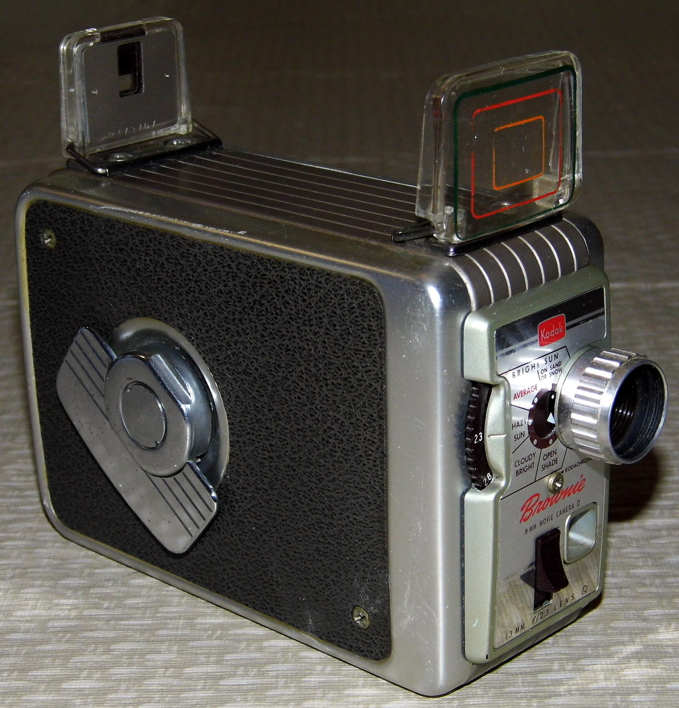
1. Fílmico (celuloide). Registro fotoquímico sobre una base flexible recubierta de una emulsión de haluros de plata. Formatos: 8 mm y Super 8 —doméstico y experimental—, 16 mm y Super 16 —documental, televisión, cine independiente—, 35 mm en sus variantes de dos, tres y cuatro perforaciones —el estándar profesional durante un siglo—, y los grandes formatos de 65/70 mm e IMAX. Es el soporte con más historia acumulada, la respuesta tonal mejor estudiada y el archivo más estable: un negativo bien conservado se lee dentro de cien años sin necesidad de que exista ningún dispositivo particular.
2. Video analógico. Registro de una señal eléctrica continua sobre cinta magnética. Betacam SP, Hi8, S-VHS, MiniDV en su versión analógica de origen. Su textura característica —ruido de croma, arrastre de luces, saturaciones que se desbordan, negros lechosos— fue durante décadas un defecto a evitar y pasó a ser un recurso expresivo en cuanto dejó de ser el estándar. El caso más citado es 28 días después, que Anthony Dod Mantle fotografió en su mayor parte con cámaras Canon XL1 de MiniDV: la degradación de la imagen, la baja definición y la respuesta violenta a las altas luces construyen la sensación documental y apocalíptica que ninguna cámara "buena" habría dado. La decisión también fue práctica: cámaras diminutas y múltiples permitieron rodar Londres desierto en las pocas ventanas de tiempo en que la policía cortaba el tránsito.
3. Video digital de definición estándar y alta. Sensores CCD o CMOS con procesamiento y compresión orientados a la televisión: MiniDV, DVCPRO, HDV, XDCAM, AVCHD. Codificación en espacio YUV con submuestreo de color, profundidades de 8 bits, compresión temporal agresiva y una curva de respuesta pensada para verse directamente en un televisor sin corrección. Fue el soporte que democratizó la producción audiovisual entre 1995 y 2010, y el que formó a una generación entera de realizadores.
4. Cine digital. Sensores de gran formato, captura en bruto o con compresión mínima, alta profundidad de bits, curvas logarítmicas o lineales pensadas para posproducción y no para visionado directo, rango dinámico de doce a diecisiete pasos. Es la categoría de las ARRI Alexa, las RED de la línea Monstro y V-Raptor, la Sony Venice, la Panavision DXL, las Blackmagic URSA. La diferencia con la familia anterior no es de resolución sino de intención: estas cámaras no producen una imagen terminada, producen material para revelar digitalmente.
La frontera entre las dos últimas categorías se fue borrando: hoy una cámara sin espejo de fotografía de gama media graba en 10 bits log con perfiles compatibles con flujos profesionales, y algunos teléfonos graban en ProRes con datos de log. La distinción sigue siendo útil conceptualmente aunque los productos se solapen.
7.2 El soporte no jerarquiza la obra
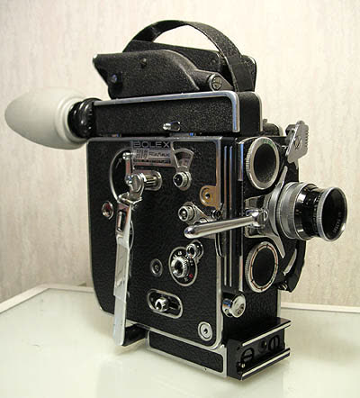
Una lista de películas y sus soportes vale más que cualquier argumento:
| Película | Soporte de captura | Relación de aspecto | Dirección de fotografía |
|---|---|---|---|
| El bueno, el malo y el feo | 35 mm (Techniscope) | 2.35:1 | Tonino Delli Colli |
| El almuerzo desnudo | 35 mm | 1.85:1 | Peter Suschitzky |
| El desierto rojo | 35 mm | 1.85:1 | Carlo Di Palma |
| La mujer sin cabeza | Super 35 mm | 2.35:1 | Bárbara Álvarez |
| El cisne negro | 16 mm | 2.35:1 | Matthew Libatique |
| El hilo fantasma | 35 mm | 1.85:1 | Paul Thomas Anderson (no acreditado) |
| Los ocho más odiados | 65 mm (Ultra Panavision 70) | 2.76:1 | Robert Richardson |
| 28 días después | MiniDV | 1.85:1 | Anthony Dod Mantle |
| El arca rusa | Video digital HD, tres CCD | 1.78:1 | Tilman Büttner |
| Ex Machina | Digital, sensor Super 35 | 2.35:1 | Rob Hardy |
| Tangerine | iPhone 5S con óptica anamórfica adosada | 2.35:1 | Radium Cheung y Sean Baker |
Un iPhone y un negativo de 65 milímetros conviven en la misma tabla porque cada uno respondía a una necesidad concreta. Tangerine necesitaba pasar desapercibida en las calles de Hollywood Boulevard y tenía un presupuesto ínfimo; Los ocho más odiados necesitaba una superficie de negativo capaz de sostener una proyección de setenta milímetros en salas con pantallas gigantes y un paisaje nevado que exigía resolución tonal en los blancos. Ninguna de las dos habría mejorado invirtiendo la elección. La pregunta correcta nunca es "cuál es el mejor soporte" sino "qué necesita esta película y qué puede pagar".
Vale una precisión sobre El arca rusa: se rodó en un único plano secuencia de noventa y nueve minutos, algo materialmente imposible en fílmico —ningún magazine alcanza— y que sólo la grabación digital sobre disco duro hacía viable. El soporte no fue una preferencia estética sino la condición de posibilidad de la película.
7.3 Cómo funciona realmente la película
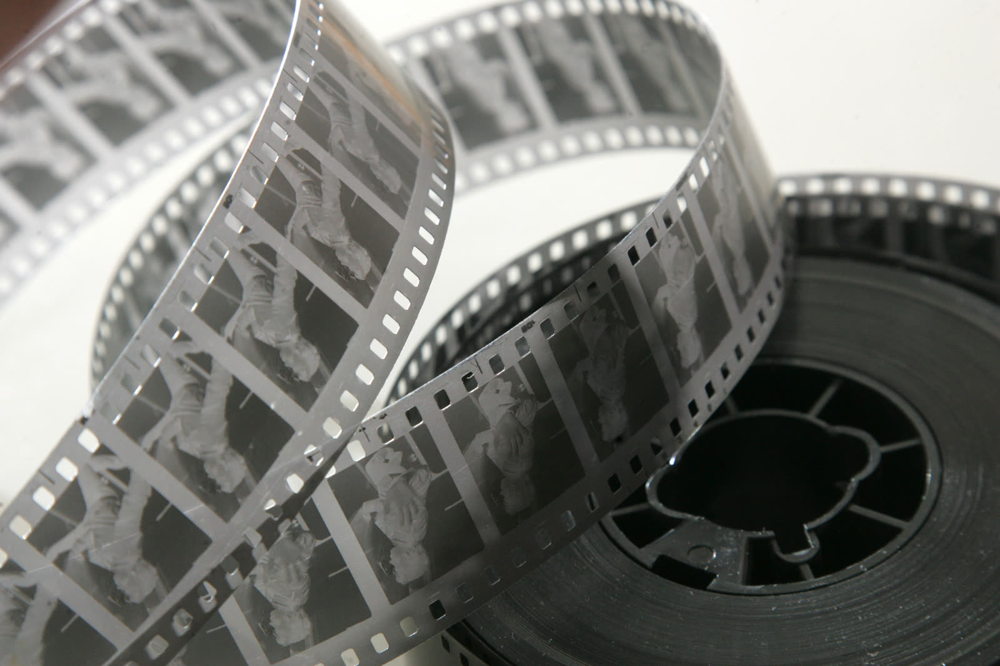
La película consiste en una base transparente y flexible —hoy de triacetato de celulosa o de poliéster— sobre la que se aplican capas de emulsión: gelatina en la que están suspendidos cristales microscópicos de haluro de plata, principalmente bromuro y yoduro. Cuando un fotón incide sobre un cristal, libera un electrón que reduce unos pocos iones de plata a plata metálica, formando un diminuto agregado en la superficie del cristal. Ese agregado es invisible: constituye la imagen latente. El revelado consiste en aplicar un agente reductor que amplifica selectivamente ese proceso, convirtiendo en plata metálica los cristales que recibieron luz y dejando intactos los demás; el fijador disuelve después los cristales no revelados. Lo que queda es una imagen de plata metálica en la que las zonas más expuestas son las más densas: un negativo.
En película color el esquema se multiplica. Hay al menos tres capas sensibles, separadas por filtros: la superior sensible al azul, bajo un filtro amarillo que impide que el azul alcance las inferiores; después la sensible al verde y finalmente la sensible al rojo. Cada capa contiene, además de haluros, copulantes cromógenos: moléculas incoloras que durante el revelado reaccionan con los subproductos de la reducción de la plata y forman colorantes —amarillo, magenta y cian, complementarios de azul, verde y rojo—. Al final del proceso, el blanqueo y el fijado eliminan toda la plata y sólo quedan los colorantes. De ahí el aspecto del negativo color, con su característica máscara naranja: una capa de corrección incorporada que compensa las imperfecciones de absorción de los colorantes y mejora la reproducción cromática en la copia.
Cada capa es en realidad un apilamiento de subcapas de distinta sensibilidad —cristales grandes y rápidos arriba, pequeños y lentos abajo— y ése es el truco que da a la película negativa su extraordinaria latitud y su característica compresión suave de las altas luces. Cuando la capa rápida se satura, la lenta todavía tiene margen. El resultado es la curva en forma de S de la que se ocupa la Parte IV: pie, zona recta, hombro. La película no recorta las luces, las dobla. Ésa es la diferencia perceptual más importante frente al sensor digital, que en su comportamiento nativo es lineal y, cuando llega al tope de capacidad del fotodiodo, se detiene abruptamente.
El proceso estándar de revelado del negativo cinematográfico color es el ECN-2, y el de las copias de proyección, el ECP-2. Son procesos industriales normalizados, con tiempos y temperaturas fijos, y esa normalización es lo que permite que un negativo revelado en Buenos Aires y otro en Londres tengan el mismo comportamiento.
Negativas e inversibles
Existen dos grandes tipos de emulsión, con lógicas de uso muy distintas.
| Inversible (positivo directo) | Negativa | |
|---|---|---|
| Resultado del revelado | Imagen positiva sobre el mismo material expuesto | Imagen invertida en densidad y color |
| Latitud de exposición | Muy estrecha; medio diafragma de error ya se nota, uno arruina la toma | Amplia; tolera sobreexposición generosa y bastante subexposición |
| Corrección en laboratorio | Prácticamente nula: el proceso es fijo y estándar | Amplia: etalonaje por luces de copia, igualación entre planos |
| Duplicación | Permite copias sin sacrificar el original | Requiere interpositivo e internegativo, con pérdida en cada generación |
| Uso actual | Marginal: Super 8 doméstico, proyección directa, uso didáctico y experimental | Estándar absoluto de la industria |
La lógica es clara: el negativo existe para ser corregido después. Su curva plana y su latitud amplia son deliberadamente "poco atractivas" a la vista porque están pensadas para conservar información que alguien decidirá cómo interpretar en el laboratorio. Es, en ese sentido, el antepasado directo de la grabación logarítmica y del RAW digital. El inversible, en cambio, entrega la imagen terminada en el momento de la exposición, y por eso no perdona: lo que se ve es lo que hay.
Forzado y sensibilidad
El forzado (push processing) consiste en exponer deliberadamente por debajo de la sensibilidad nominal de la emulsión —tratando un material de 500 ISO como si fuera de 1000, por ejemplo— y compensar prolongando el tiempo de revelado. Permite rodar con menos luz de la que el material requeriría, a costa de un aumento del grano, un incremento del contraste, una pérdida de detalle en las sombras y, en color, cierta deriva cromática. Es una herramienta legítima y muy usada, tanto por necesidad —interiores nocturnos reales, documental— como por elección estética. El proceso inverso, el pull, sobreexpone y acorta el revelado para reducir contraste y grano. Ambos encarecen el laboratorio porque exigen sacar el material del baño estándar.
Conviene tener presente la relación general que gobierna todas las emulsiones: cristales grandes captan más luz y producen más grano; cristales pequeños dan más definición y menos grano pero exigen más luz. No hay emulsión rápida y fina a la vez; hay emulsiones mejor diseñadas que otras dentro de ese compromiso. Las tecnologías de cristales tabulares que Kodak introdujo con las líneas Vision y perfeccionó en Vision3 mejoraron notablemente el punto de equilibrio, hasta el punto de que un negativo de 500 ISO moderno tiene menos grano que uno de 250 de los años ochenta.
Emulsiones de referencia
La oferta actual se redujo drásticamente pero sigue viva. Vale conocer los nombres que circulan en un set:
- Kodak Vision3 50D (5203/7203): 50 ISO equilibrada para luz día. Grano finísimo, la elección para exteriores diurnos donde se busca máxima resolución.
- Kodak Vision3 250D (5207/7207): 250 ISO luz día, el caballo de batalla para exteriores con menos luz o cuando se necesita cerrar diafragma.
- Kodak Vision3 200T (5213/7213): 200 ISO tungsteno, equilibrada a 3200 K.
- Kodak Vision3 500T (5219/7219): 500 ISO tungsteno. La emulsión más usada del mundo para interiores y noche, con una latitud en altas luces notable y un comportamiento en subexposición muy indulgente.
- Kodak Double-X 5222/7222: blanco y negro, 250 ISO en tungsteno y 200 en luz día. Es la emulsión de El hombre que nunca estuvo allí, de Manhattan y de buena parte del blanco y negro fotoquímico contemporáneo.
- Kodak Ektachrome 100D: inversible color, reintroducida en Super 8 y 16 mm.
Los códigos numéricos siguen una lógica interna: la serie 52xx corresponde a 35 mm y la 72xx al mismo material perforado en 16 mm.
Conservación y manipulación
La película es un material vivo y perecedero, y tratarla mal cuesta caro. Las reglas básicas:
- Guardar en frío y seco, herméticamente cerrada. La refrigeración detiene el velo químico de fondo que se acumula con el tiempo.
- Aclimatar antes de abrir: sacar un rollo del frío y abrirlo de inmediato provoca condensación sobre la emulsión. Varias horas de espera a temperatura ambiente, con el envase cerrado, son obligatorias.
- Respetar la fecha de caducidad. El material vencido desarrolla velo, que reduce contraste, levanta las sombras e introduce dominantes de color impredecibles. Hay quien lo usa deliberadamente, pero entonces conviene probarlo antes.
- Proteger de la radiación: los escáneres de equipaje de aeropuerto velan la película, y los de bodega mucho más que los de mano. El material de alta sensibilidad es especialmente vulnerable, y el efecto es acumulativo.
- Revelar la imagen latente lo antes posible. Éste es el punto que más se subestima. Una vez expuesto, el material es considerablemente más inestable que virgen: la imagen latente se degrada. Si hay demora inevitable —un rodaje largo en locación remota—, conviene congelar el material expuesto a temperaturas del orden de los treinta grados bajo cero.
7.4 Ampliación y reducción de formato
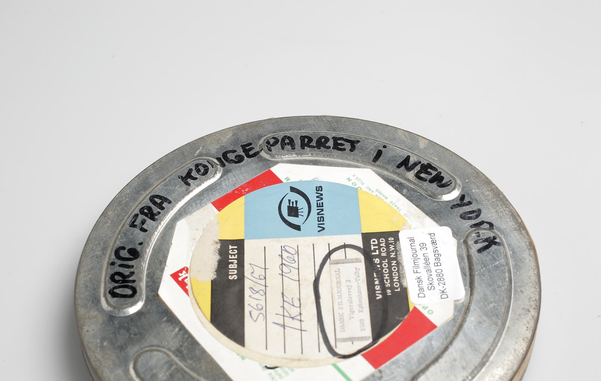
El tamaño del fotograma limita cuánto puede ampliarse la imagen antes de que el grano y la falta de resolución se hagan visibles. Una ampliación de 16 mm a 35 mm para distribución en salas delata siempre su origen: el grano crece proporcionalmente y la definición no aparece de la nada. Eso no es necesariamente un defecto —Darren Aronofsky y Matthew Libatique eligieron 16 mm para El cisne negro precisamente porque el grano y la textura nerviosa acompañaban el deterioro psíquico del personaje—, pero hay que elegirlo sabiendo lo que se elige.
La operación inversa se comporta mejor: una reducción de 35 mm a 16 mm suele dar mejores resultados que haber rodado directamente en 16, porque la información sobrante se promedia y el grano se comprime en lugar de expandirse. El principio general vale para todo el trabajo con imagen, incluida la digital: es preferible capturar por encima del formato de entrega y reducir, antes que capturar justo y ampliar. La misma lógica explica por qué se rueda en 4K o 6K un proyecto que se entregará en 2K.
7.5 Grano y ruido: dos cosas distintas
Se los usa como sinónimos y no lo son. La diferencia es de origen físico y tiene consecuencias perceptuales concretas.
El grano es un fenómeno químico y estructural. Los cristales de haluro de plata están distribuidos aleatoriamente en el espesor de la emulsión, en tres dimensiones y con tamaños variables. Lo que se percibe como grano en una copia proyectada no son los cristales individuales —demasiado pequeños para ser resueltos— sino la agrupación estadística de los granos de plata revelada y los espacios entre ellos. El grano es la imagen: no está superpuesto a ella, la constituye. Y cambia de fotograma a fotograma porque la distribución de cristales es distinta en cada centímetro de película, lo que produce ese hervor característico que el ojo lee como vida.
El ruido es un fenómeno electrónico. Se origina en varias fuentes: el ruido de disparo (la naturaleza cuántica de la llegada de fotones), el ruido térmico del silicio, el ruido de lectura de la electrónica de amplificación y el ruido de cuantización de la conversión analógico-digital. Al subir la sensibilidad de una cámara digital no se aumenta la sensibilidad del sensor sino la amplificación de su señal, y con ella la del ruido. Y —éste es el punto— los fotodiodos están dispuestos en una grilla rectangular perfectamente regular, de modo que el ruido aparece organizado sobre una retícula. En sensores con filtro Bayer, además, la reconstrucción del color produce ruido de croma correlacionado espacialmente, esos parches de manchas rojizas y verdosas en las sombras que ninguna película produce jamás.
Hay una explicación elegante de por qué el grano se percibe como más orgánico y el ruido como más artificial. La retina humana tiene alrededor de seis millones y medio de conos y ciento veinte millones de bastones, distribuidos de manera irregular y no periódica sobre su superficie. El sistema visual está literalmente construido sobre un muestreo aleatorio, igual que la emulsión, y a diferencia de la grilla del sensor. Un patrón aleatorio de ruido resulta perceptualmente transparente; un patrón regular activa mecanismos de detección de estructura, y por eso el ojo lo señala como defecto. No es nostalgia: es fisiología.
Esto explica también una práctica hoy habitual: agregar grano de película en la corrección de color a material capturado digitalmente. No se trata de simular la película sino de romper la regularidad de la grilla, y funciona incluso cuando nadie identifica conscientemente qué cambió. Brandon Trost rodó The Disaster Artist a sensibilidades altas y agregó grano en el etalonaje para obtener una textura analógica coherente con la época que la película recrea. El recurso es tan común que las bibliotecas de grano escaneado de emulsiones reales —a distintas sensibilidades y formatos— son hoy una herramienta estándar de posproducción. La diferencia entre hacerlo bien y hacerlo mal está en aplicarlo antes de la compresión final, con la resolución correcta y respondiendo a la luminancia de la imagen, no como una capa uniforme superpuesta.
7.6 Cómo decidir
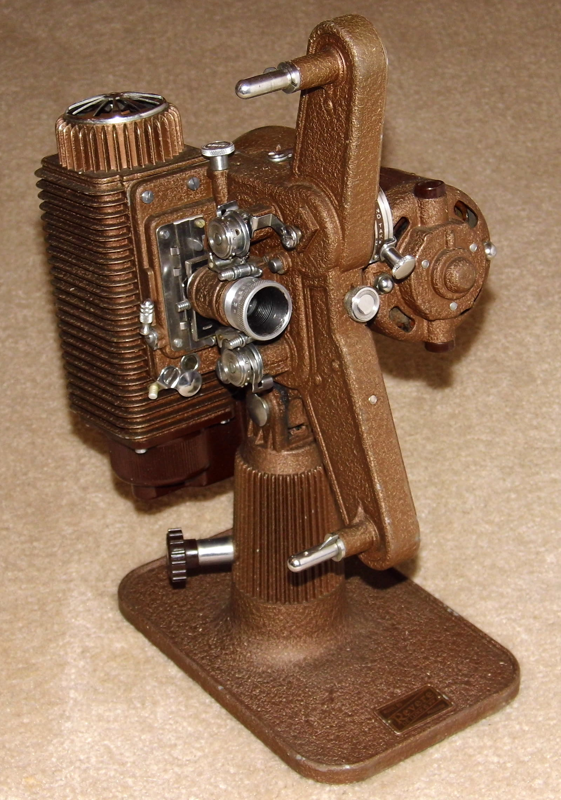
Al elegir soporte conviene pesar, en este orden:
- Qué pide la película. Textura, latitud, relación con el color, grado de definición deseado. Una película de época con luz de velas no plantea el mismo problema que un thriller urbano nocturno.
- Qué permite el presupuesto. El fílmico impone costos de negativo, revelado, escaneo y almacenamiento, y una relación de rodaje —metros expuestos por minuto útil— que hay que respetar. El digital traslada el costo al equipo, a los datos y a una posproducción más larga.
- Qué permite la producción. Acceso a laboratorio, disponibilidad de equipos, tiempo de rodaje, condiciones de locación, energía disponible, transporte de material sensible.
- Qué sabe hacer el equipo. Un rodaje en 35 mm con un equipo que nunca cargó un magazine es una apuesta arriesgada, y la inversa también: un flujo de datos exigente sin un DIT competente pierde material.
- Cómo se va a ver. Sala, plataforma, televisión, festival, instalación. El destino final condiciona resolución, espacio de color y masterización.
Ninguno de esos cinco puntos menciona el prestigio del soporte, y ésa es la idea.
8. Formatos, tamaños de sensor y relaciones de aspecto
Hay dos preguntas distintas que suelen confundirse bajo la misma palabra, "formato". La primera es cuán grande es la superficie que registra la imagen: el área de negativo o de sensor efectivamente utilizada. La segunda es qué proporción tiene el rectángulo que finalmente ve el espectador. Son independientes: se puede rodar en 2.39:1 sobre un sensor pequeño o sobre 65 milímetros, y el resultado será muy distinto aunque la forma del cuadro sea idéntica.
La primera pregunta tiene consecuencias ópticas y fotométricas. La segunda tiene consecuencias narrativas y compositivas. Este capítulo trata las dos, en ese orden, y termina con las normativas que ordenan el asunto en el mundo digital.
8.1 Tamaños de captura
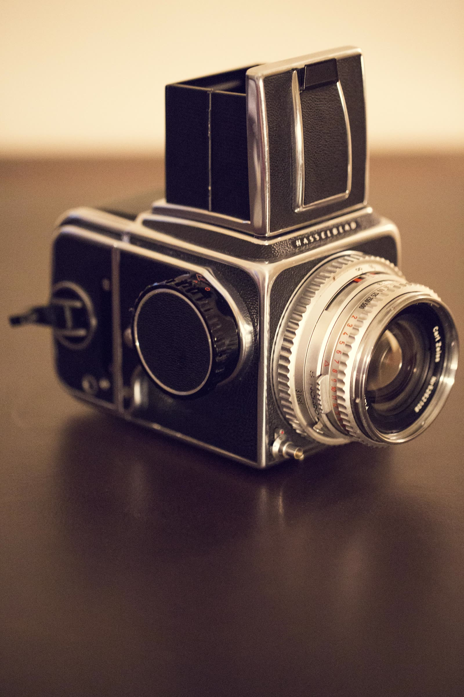
La siguiente tabla reúne los formatos con los que se trabaja habitualmente. La diagonal es la cifra que importa cuando se comparan formatos entre sí, porque de ella deriva el factor de recorte respecto del patrón de referencia —tradicionalmente el fotograma de 24×36 mm de la fotografía fija.
| Formato | Ancho × alto (mm) | Diagonal (mm) | Relación nativa | Factor de recorte |
|---|---|---|---|---|
| 16 mm | 10,26 × 7,49 | 12,7 | 1,37:1 | ≈3,4 |
| Super 16 | 12,52 × 7,41 | 14,5 | 1,66:1 | ≈3,0 |
| Micro Cuatro Tercios | 17,3 × 13,0 | 21,6 | 4:3 | 2,0 |
| APS-C | ≈22,3 × 14,9 | 26,8 | 3:2 | 1,6 |
| Super 35 (cine) | 24,89 × 18,66 | 31,1 | 4:3 / 1,78:1 | ≈1,4 |
| Full Frame / VistaVision | 36 × 24 | 43,3 | 3:2 | 1,0 |
| Formato medio digital | ≈44 × 33 | 55 | 4:3 | ≈0,8 |
| 65 mm / IMAX 15 perf | 70 × 48,5 | ≈85 | 1,43:1 | ≈0,5 |
Un par de aclaraciones necesarias, porque la nomenclatura es un campo minado.
"Super 35" no designa una única medida. Nació como una manera de aprovechar en 35 mm el espacio que en las copias de proyección se reserva a la banda sonora óptica, ampliando el ancho útil del fotograma. En la práctica contemporánea, "sensor Super 35" designa cualquier superficie de captura de aproximadamente 25 × 14 a 25 × 18 mm, con variaciones apreciables entre fabricantes. El sensor de la ARRI Alexa Mini LF no es Super 35, el de la Alexa 35 sí, y el de una RED Komodo está en el mismo vecindario pero no es idéntico. Cuando la precisión importa —al calcular campos visuales, al combinar cámaras de marcas distintas, al planificar efectos visuales— hay que trabajar con las medidas reales del modelo, no con la etiqueta.
"Full Frame" es un término prestado de la fotografía fija. Designa el fotograma de 24×36 mm del carrete de 35 mm fotográfico, que corre horizontalmente y por eso duplica el ancho del fotograma cinematográfico, que corre verticalmente. En cine, ese mismo tamaño existía desde los años cincuenta con otro nombre: VistaVision, un sistema de arrastre horizontal de ocho perforaciones por fotograma que Paramount desarrolló para competir con el CinemaScope y que sobrevivió durante décadas como formato de efectos especiales, precisamente porque su enorme superficie de negativo aguantaba las generaciones de duplicado que exigían los trucajes ópticos. La generación actual de cámaras de gran formato —Alexa LF y Alexa 65, Sony Venice, RED Monstro— recuperó ese territorio con sensores de 36 mm de ancho o más.
El factor de recorte no cambia la óptica, cambia el encuadre. Un lente de 50 mm es un lente de 50 mm en cualquier cámara: proyecta el mismo círculo de imagen con la misma distancia focal. Lo que cambia es qué porción de ese círculo recorta el sensor. En Super 35, un 50 mm da un campo visual moderadamente teleobjetivo; en Full Frame, el mismo 50 mm da un campo visual normal. De ahí la equivalencia práctica: para obtener en Super 35 el encuadre que un 50 mm da en Full Frame hay que usar un 35 mm aproximadamente.
Pero —y este punto se explica mal con frecuencia— el formato grande no "comprime menos" ni tiene una perspectiva propia. La perspectiva depende exclusivamente de la posición de la cámara respecto del sujeto. Lo que sí cambia con el formato es la relación entre encuadre y profundidad de campo: para conseguir el mismo encuadre desde la misma distancia, el formato mayor exige una focal más larga, y una focal más larga a igual diafragma da menos profundidad de campo. Ése es el verdadero motivo por el cual el gran formato "se ve distinto": permite fondos más desenfocados con encuadres equivalentes, y suele acompañarse de un desenfoque de textura más suave y progresiva. Lo demás es folclore.
Hay también una consecuencia sobre las ópticas que conviene anticipar. Cuanto mayor es el formato, mayor debe ser el círculo de imagen que el lente proyecta, y por lo tanto más grande, pesado y caro es el lente para la misma luminosidad. Un juego de ópticas Super 35 no cubre Full Frame: al montarlo se obtiene viñeteo en las esquinas. La inversa sí funciona, y por eso muchas producciones en formato grande recuperan ópticas antiguas de VistaVision o de fotografía fija en busca de carácter.
8.2 Subformatos de 35 mm que conviene conocer
Dentro del 35 milímetros convivieron durante décadas varias maneras de repartir la superficie del negativo, y sus nombres siguen apareciendo en conversaciones técnicas.
- Academy (cuatro perforaciones): el estándar clásico. Cada fotograma ocupa cuatro perforaciones de altura, con el área de la banda sonora reservada en la copia.
- Full Aperture o "ventanilla abierta": usa todo el espacio entre las cuatro perforaciones, incluida la franja del sonido óptico. Es el área de captura máxima del 35 mm y la base del Super 35 como formato de trabajo. Da una relación cercana a 1,33:1 que después se recorta al aspecto de distribución.
- Techniscope (dos perforaciones): reduce a la mitad la altura del fotograma, con lo que consume la mitad de negativo y produce nativamente una imagen apaisada cercana a 2.35:1 sin necesidad de ópticas anamórficas. Fue el formato del spaghetti western —El bueno, el malo y el feo entre muchísimas otras— justamente porque abarataba enormemente la producción. El costo es una superficie menor y, por lo tanto, más grano visible al ampliar.
- Tres perforaciones: solución intermedia que se popularizó para producción televisiva y para películas destinadas a 1.85:1, ahorrando un veinticinco por ciento de negativo sin pérdida apreciable en el área realmente usada.
- Anamórfico: no reparte distinto el negativo sino que comprime ópticamente la imagen. Un lente con elementos cilíndricos "aplasta" horizontalmente el campo visual por un factor de 2× (o 1,8×, o 1,3× en algunos sistemas), de modo que un cuadro casi cuadrado de negativo contiene una escena muy apaisada, que el proyector —o el software— vuelve a estirar. La ventaja histórica era aprovechar toda la superficie del fotograma para un aspecto ancho. La razón por la que sigue usándose hoy, cuando ese argumento ya no aplica, es puramente estética: el anamórfico produce bokeh ovalado, destellos horizontales, deformación de los bordes en primeros planos, un comportamiento particular del foco y una curvatura de campo característica. Es una firma visual, no una eficiencia.
8.3 Relaciones de aspecto y su historia
| Relación | Nombre y contexto |
|---|---|
| 1.19:1 | Movietone, transición al sonoro (1926-1932) |
| 1.33:1 | Formato académico mudo; estándar desde 1909 |
| 1.37:1 | Academy, con banda sonora óptica; estándar desde 1932 |
| 1.66:1 | Europeo, muy usado en los cincuenta y sesenta |
| 1.78:1 (16:9) | HDTV, streaming, video digital |
| 1.85:1 | Widescreen americano; el más habitual en salas |
| 2:1 | Univisium; propuesto por Vittorio Storaro, hoy común en streaming |
| 2.35:1 / 2.39:1 | CinemaScope, Panavision; anamórfico de 2× |
| 2.76:1 | Ultra Panavision 70, anamórfico de 1,25× sobre 65 mm |
La historia del cuadro se explica en tres movimientos. El primero es el establecimiento del 1.33:1 en el mudo, una proporción heredada casi por azar del ancho de la película y de las decisiones de Edison. El segundo es el sonoro: al reservar una franja lateral para la banda óptica, el cuadro se estrechó, y la Academia lo normalizó recuperando la proporción original en un área ligeramente menor, dando el 1.37:1. El tercero es la respuesta a la televisión en los años cincuenta: para ofrecer algo que la pantalla doméstica no podía dar, la industria se lanzó a los formatos anchos —CinemaScope, VistaVision, Todd-AO, Cinerama—, y de ahí salieron los aspectos que todavía definen el cine.
Un detalle que causa confusión: la diferencia entre 2.35:1 y 2.39:1. El estándar anamórfico original daba 2.35; una revisión de 1970 lo ajustó a 2.39 para disimular mejor los empalmes visibles en las copias. Hoy se usan indistintamente en el habla, y ambos se refieren en la práctica al mismo formato ancho. La cifra formalmente vigente es 2.39:1, redondeada a veces como 2.40:1.
8.4 La relación de aspecto como decisión narrativa
Elegir el cuadro no es un trámite. Cada proporción distribuye de otra manera el peso entre la figura y el entorno, entre lo vertical y lo horizontal, entre lo que entra y lo que queda fuera.
Un cuadro ancho favorece la relación entre elementos separados en el espacio: dos personajes en los extremos, un cuerpo contra un paisaje, la profundidad lateral. Un cuadro más cuadrado privilegia la figura humana individual, la verticalidad, el rostro; da más peso al eje de arriba y abajo y produce, casi inevitablemente, una sensación de contención. Ninguna es mejor: son gramáticas distintas.
Algunos casos donde la decisión es explícitamente dramatúrgica:
- El Gran Hotel Budapest, fotografiada por Robert Yeoman, usa tres relaciones distintas —1.37:1, 2.39:1 y 1.85:1— según la época que se narra, adoptando en cada caso el formato que habría sido normal en ese momento histórico. El aspecto funciona como marca de estrato temporal, y el espectador aprende a leerlo sin que nadie se lo explique.
- El faro, de Robert Eggers con fotografía de Jarin Blaschke, adopta un 1.19:1 casi cuadrado, la proporción de los primeros años del sonoro. El cuadro encierra a los dos personajes verticalmente, replica la estrechez del faro y produce una claustrofobia que ninguna decisión de puesta en escena habría logrado por sí sola.
- Mommy, de Xavier Dolan con fotografía de André Turpin, se rueda en 1:1 —un cuadrado estricto, del tamaño de una foto de Instagram— y se abre a widescreen en dos momentos precisos en que el personaje experimenta libertad. La apertura del cuadro es, literalmente, la emoción de la escena. Y su posterior cierre, también.
- A Ghost Story, de David Lowery con fotografía de Andrew Droz Palermo, usa un 1.33:1 con las esquinas redondeadas, evocando una fotografía antigua o un recuerdo, coherente con una película sobre la permanencia y el duelo.
- La chica no puede evitarlo, fotografiada por Leon Shamroy, empieza en 1.33:1 y se expande a CinemaScope dentro de la propia película, con el protagonista comentando el cambio: el gesto celebra la llegada del formato ancho y es, de paso, uno de los primeros usos autoconscientes del aspecto como recurso.
Una advertencia práctica: si se va a trabajar con un aspecto distinto del nativo del sensor, hay que definirlo antes de rodar, marcar el visor y monitorear con esas guías, y decidir si se protege o no el área excedente. Componer para 2.39 mirando un monitor de 16:9 con dos líneas dibujadas encima es una fuente inagotable de errores: micrófonos que entran, cabezas cortadas, horizontes mal ubicados. Y si la distribución exige varias versiones —cine en 2.39, plataforma en 16:9—, esa negociación debe estar sobre la mesa desde la preproducción, no descubrirse en el máster.
8.5 De las líneas por milímetro a la "K"
La resolución del cine fotoquímico no se mide en píxeles sino en pares de líneas por milímetro: cuántas líneas alternadas de blanco y negro pueden distinguirse en un milímetro de negativo. A partir de ese dato pueden establecerse equivalencias aproximadas con la resolución digital, y esas equivalencias son las que fundamentaron la elección de las cifras que hoy usamos.
Estimando el negativo de 35 mm en el orden de las 150 a 180 líneas por milímetro sobre un fotograma de aproximadamente 25 × 19 mm, se llega a un equivalente cercano a 3.750 × 2.850 píxeles. Con el mismo criterio, el fotograma de 16 mm —unos 12,35 × 7,45 mm— equivale a algo así como 1.825 × 1.125 píxeles. Estas cifras deben tomarse como órdenes de magnitud y no como medidas exactas, porque la resolución real de un negativo depende de la emulsión, de la óptica, del revelado y hasta de la exposición.
De ahí salió la decisión que ordenó el cine digital. Cuando Kodak desarrolló el sistema Cineon en los años noventa para digitalizar y volver a filmar negativo, fijó la resolución de escaneo del 35 mm en torno a los 4.096 píxeles horizontales, y esa cifra quedó como definición de "4K". El 2K, la mitad, corresponde aproximadamente a la resolución equivalente del 16 mm y también, no por casualidad, a la calidad máxima que ofrece una copia positivada de 35 mm después de las pérdidas acumuladas en interpositivo, internegativo y copia. Dicho de otro modo: el 2K no era una degradación respecto de lo que el público veía en sala, era exactamente lo que el público veía en sala.
Un punto técnico que conviene fijar: la "K" del cine digital es un kilo binario, no decimal. 2K son 2.048 píxeles y 4K son 4.096, no 2.000 y 4.000. Esto genera una confusión permanente con el mundo del consumo, donde "4K" designa habitualmente el UHD de 3.840 × 2.160 píxeles, que es exactamente el doble de 1.920 × 1.080 y no coincide con el 4K cinematográfico. Las cifras comerciales de 3K, 5K, 6K y 8K son en general múltiplos de 1.024 propuestos por fabricantes, sin el respaldo normativo que tienen el 2K y el 4K.
8.6 Las normativas: HDTV y DCI
Dos cuerpos normativos gobiernan el mundo digital, y responden a lógicas distintas porque tienen destinos distintos: uno viene de la televisión y el otro de la sala de cine.
| HDTV (ITU-R BT.709) | Cine digital (DCI) | |
|---|---|---|
| Resoluciones | 1.920×1.080 y 1.280×720 | 2K = 2.048×1.080; 4K = 4.096×2.160 |
| Muestreo de color | 4:2:2 | 4:4:4 |
| Profundidad de bits | 8 bits | 12 bits |
| Cadencias | 25p / 50i / 30p / 60i | 24p, con previsión de 48p |
| Espacio de color | Rec. 709 | XYZ (P3 como referencia de proyección) |
| Códec de distribución | Variable (H.264, HEVC) | JPEG 2000, sólo intracuadro |
Las diferencias no son caprichosas. El cine digital exige más profundidad de bits y muestreo completo de color porque la imagen se proyecta con un contraste y un tamaño que revelan cualquier deficiencia de gradación; la televisión puede permitirse el ahorro porque el destino es una pantalla pequeña y un ancho de banda restringido.
Dentro de la normativa DCI conviene retener tres cosas:
Sólo hay dos formatos de pantalla admitidos: 1,85 y 2,39. El contenedor máximo en 2K es de 2.048 × 1.080 píxeles. Si la película es 1,85, el área efectivamente usada es de 1.998 × 1.080; si es 2,39, es de 2.048 × 858. En 4K, todas esas cifras se duplican. Cualquier otro aspecto —el 1.33 de A Ghost Story, el 1.19 de El faro, el 1:1 de Mommy— se entrega dentro de uno de esos dos contenedores, con barras negras incorporadas en la propia imagen.
Full Aperture como formato de trabajo. Los archivos de 4.096 × 3.112 o 2.048 × 1.536 corresponden a la ventanilla abierta del 35 mm, es decir, al área total de captura antes del recorte de distribución. Es un formato de posproducción, no de entrega. Y su nombre no debe confundirse con "Full Frame", que como ya vimos es un término de fotografía fija y designa un tamaño de superficie, no un modo de trabajo.
E-Cinema no es D-Cinema. Se llama E-Cinema al uso de resoluciones de televisión —típicamente 1.920 × 1.080— para proyección en salas digitales, generalmente en contenidos de evento: transmisiones deportivas, conciertos, ópera. Es considerablemente más barato de producir y distribuir, y no cumple la normativa DCI. Las etiquetas comerciales que circulan en el mundo del consumo pertenecen a esta familia: "HD Ready" significa un mínimo de 1.280 × 720 y "Full HD", un mínimo de 1.920 × 1.080.
8.7 Un criterio de trabajo
Frente a la presión comercial que empuja permanentemente hacia arriba en la escala de resoluciones, vale sostener un principio que la práctica confirma: más allá de cierto umbral, la resolución deja de ser el factor determinante de la calidad percibida. Un 2K bien expuesto, con buena óptica, buen rango dinámico y una gestión de color competente se ve mejor que un 8K mal iluminado y comprimido. El rango dinámico, la profundidad de bits, la calidad de las ópticas y el criterio en la exposición pesan más sobre la imagen final que el conteo de píxeles.
Dicho esto, hay razones legítimas para capturar por encima del formato de entrega: margen para reencuadrar y estabilizar, mejor comportamiento del demosaico al reducir, requisitos de efectos visuales, y las exigencias de entrega de algunas plataformas, que suelen pedir un máster de 4K. La regla práctica es la misma que rige en fílmico: capturar con holgura y reducir, nunca capturar justo y ampliar.
9. El sensor digital por dentro
Un director de fotografía puede trabajar toda su carrera sin saber cómo funciona un sensor, del mismo modo que se puede conducir sin saber qué hace un diferencial. Pero hay una diferencia: casi todos los comportamientos desconcertantes de una cámara digital —por qué las altas luces se cortan de golpe, por qué las sombras se llenan de manchas de color, por qué subir el ISO a veces no cuesta nada y a veces arruina la imagen, por qué el rojo de un vestido se satura antes que el resto— se explican por lo que ocurre entre el fotón y el archivo. Este capítulo recorre ese trayecto.
9.1 De haluros a fotodiodos
La cámara digital sustituye los cristales de haluro de plata suspendidos aleatoriamente en gelatina por fotodiodos ordenados en una grilla rectangular. Cada fotodiodo es un pequeño pozo de silicio que funciona, en esencia, como un microfotómetro: los fotones que inciden sobre él liberan electrones por efecto fotoeléctrico, y esos electrones se acumulan durante el tiempo de exposición. Al final de la ventana de integración, la carga acumulada en cada pozo se lee como un voltaje proporcional a la cantidad de luz recibida.
Ese voltaje es una señal analógica: continua, sin escalones, exactamente como la de un micrófono o la de una aguja de fotómetro. Recién después interviene el convertidor analógico-digital, que muestrea esa señal y le asigna un valor numérico dentro de una escala de niveles discretos.
Vale insistir en este punto porque cambia la manera de pensar la exposición: el sensor siempre es analógico. Lo digital empieza en la conversión, no antes. Todo lo que la tradición fotográfica enseñó sobre situar una luminancia determinada en un punto específico de la curva de respuesta sigue teniendo sentido físico exacto en digital; lo que cambia es la forma de esa curva y las herramientas disponibles para leerla. Un sensor no "ve distinto" en un sentido misterioso: responde de manera lineal donde la película respondía de manera logarítmica, y esa diferencia explica casi todo lo demás.
La linealidad es, de hecho, el rasgo definitorio. Si un fotodiodo recibe el doble de fotones, acumula el doble de carga y entrega el doble de voltaje, con una regularidad casi perfecta hasta que el pozo se llena. Y cuando se llena, se llena: no hay hombro, no hay compresión progresiva, no hay margen de gracia. Se produce el recorte (clipping), y la información por encima de ese punto no está atenuada sino ausente. De ahí la máxima que gobierna el trabajo digital y que invierte la del negativo fotoquímico: en fílmico se protege la sombra y se confía en el hombro; en digital se protege la alta luz, porque una vez recortada no hay corrección de color que la recupere.
9.2 Cómo se obtiene el color: dos arquitecturas
Un fotodiodo no distingue colores. Cuenta fotones, sin importar su longitud de onda: es un dispositivo estrictamente monocromo. Todo el color de una imagen digital proviene de filtrar la luz antes de que llegue al silicio, y hay dos maneras de hacerlo.
a) Separador de haz con tres sensores. Un prisma dicroico ubicado detrás del objetivo divide la luz entrante en tres caminos, cada uno filtrado a un primario —rojo, verde y azul— y dirigido a su propio sensor. Cada punto de la imagen se mide entonces tres veces, una por canal, sin ninguna interpolación. La ventaja es la fidelidad cromática y la ausencia de artefactos de reconstrucción; las desventajas son el tamaño del bloque óptico, la pérdida de luz en el prisma, el costo de tres sensores alineados con precisión micrométrica y —el problema decisivo— la imposibilidad práctica de escalar el sistema a sensores grandes, porque el prisma exige una distancia posterior enorme y ópticas diseñadas para atravesarlo. Fue la arquitectura del video profesional durante décadas, y la de la Sony CineAlta HDW-F900 con la que George Lucas rodó El ataque de los clones, el primer largometraje de estudio capturado íntegramente en digital. Hoy es historia: prácticamente ninguna cámara de cine actual la utiliza.
b) Sensor único con matriz de filtros de color. Sobre la grilla de fotodiodos se deposita un mosaico de filtros diminutos, uno por fotodiodo. El patrón dominante es el que Bryce Bayer patentó para Kodak en 1976: un damero de dos por dos con un filtro rojo, un azul y dos verdes. La duplicación del verde tiene dos motivos convergentes. El primero es perceptual: el ojo humano obtiene de la banda verde la mayor parte de su información de luminancia y detalle, de modo que muestrear el verde con el doble de densidad mejora la resolución aparente donde más se nota. El segundo es fotométrico: el filtro verde deja pasar la porción del espectro donde el silicio y la luz habitual tienen más energía, con menos pérdida y mejor relación señal-ruido.
El precio de esa economía es que cada fotodiodo mide sólo un color, y los otros dos hay que inferirlos a partir de los vecinos. Ese proceso de reconstrucción se llama debayerización o demosaicing, y es un algoritmo sofisticado que interpola valores respetando bordes y detectando patrones para no inventar color donde no lo hay. Los artefactos típicos de un demosaico deficiente son el aliasing de color en detalles finos —tramas de tela, rejillas, ladrillos lejanos que aparecen con franjas de arcoíris— y el moiré, cuando la frecuencia del detalle de la escena se aproxima a la frecuencia de la grilla. Muchas cámaras incorporan un filtro óptico de paso bajo delante del sensor para suavizar deliberadamente la imagen y evitar esos artefactos, aceptando perder algo de definición a cambio.
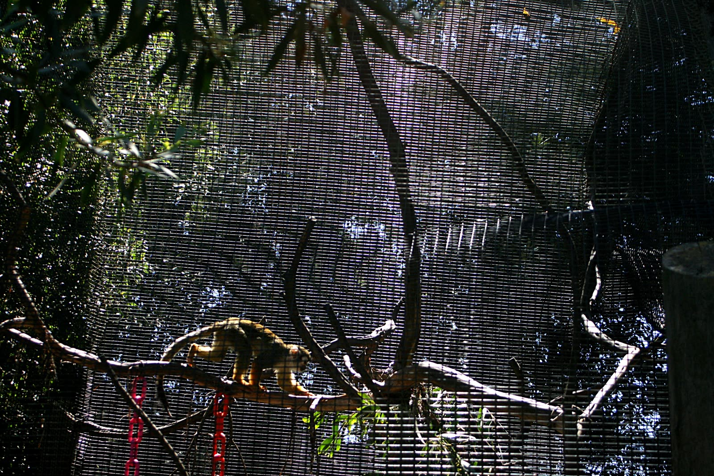
De aquí se desprende una consecuencia que conviene tener muy presente: un fotodiodo no equivale a un píxel de imagen. La cifra de megapíxeles que anuncian los fabricantes es la suma de fotodiodos, no la resolución cromática real de la imagen resultante. Un sensor de doce millones de fotodiodos con patrón Bayer tiene tres millones de mediciones de rojo, tres de azul y seis de verde; el resto es interpolación inteligente. Por eso las mediciones reales de resolución de una cámara Bayer siempre quedan por debajo de su cifra nominal, típicamente entre un setenta y un ochenta por ciento en líneas resueltas.
Existen alternativas al patrón Bayer. Los sensores Foveon apilan tres capas fotosensibles a distintas profundidades del silicio, aprovechando que las longitudes de onda largas penetran más, y así miden los tres colores en cada punto sin interpolación; nunca alcanzaron rendimiento competitivo en sensibilidad. Los patrones X-Trans de Fujifilm usan una matriz de seis por seis más irregular para reducir el moiré sin filtro de paso bajo. Y hay sensores con filtros modificados —con píxeles blancos sin filtrar, por ejemplo— que privilegian sensibilidad sobre pureza de color. En cine, sin embargo, el Bayer y sus variantes dominan de forma casi absoluta.
9.3 CCD y CMOS
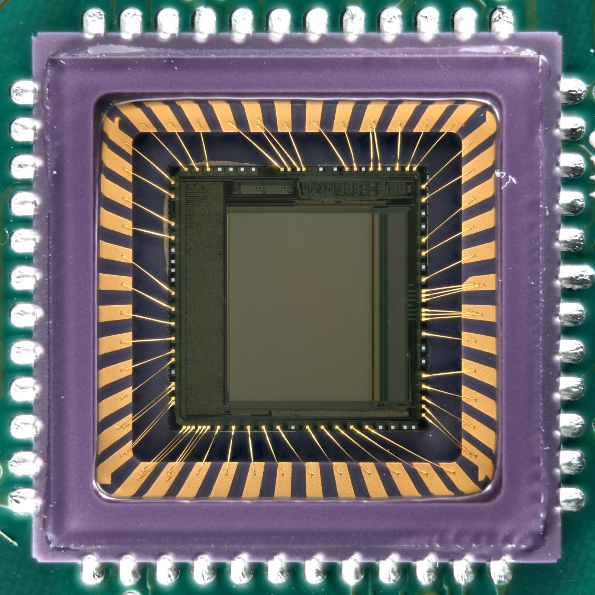
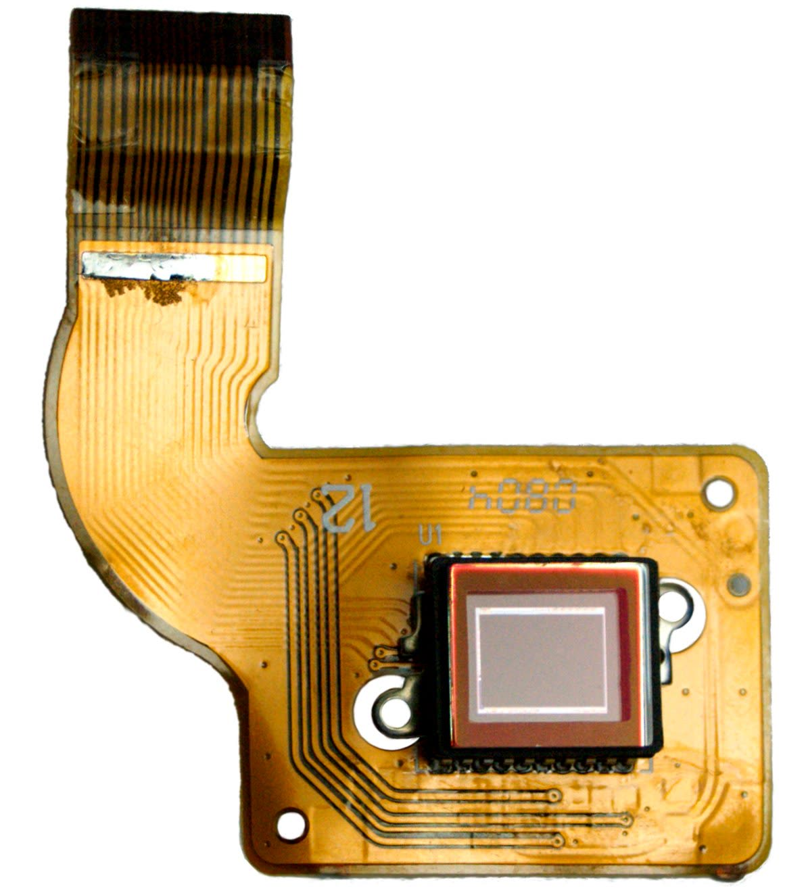
Las dos grandes tecnologías de sensor se diferencian en cómo trasladan la carga acumulada hacia el convertidor.
| CCD | CMOS | |
|---|---|---|
| Amplificación | La señal se traslada de pozo en pozo y se amplifica fuera de la matriz | Cada píxel tiene su propio amplificador integrado |
| Consumo y calor | Mayores | Menores |
| Peso y complejidad del circuito | Mayores | Menores |
| Lectura | Toda la matriz a la vez (global shutter) | Habitualmente línea por línea (rolling shutter) |
| Uniformidad | Muy alta | Requiere calibración por píxel |
| Artefactos característicos | Smear o blooming vertical ante luces intensas | Deformación por rolling shutter |
| Costo de fabricación | Alto, proceso especializado | Bajo, procesos estándar de la industria del chip |
El CCD dominó el video profesional hasta mediados de los años dos mil. Su virtud era la uniformidad: al amplificar toda la señal en un único punto, no había variación de comportamiento entre píxeles. Su defecto era el consumo, el calor y un artefacto muy visible —la columna luminosa vertical que aparecía sobre y bajo una fuente de luz intensa dentro del cuadro.
El CMOS lo desplazó por completo porque se fabrica con los mismos procesos que cualquier otro circuito integrado, lo que abarata radicalmente los sensores grandes y permite integrar en el propio chip la conversión analógico-digital y buena parte del procesamiento. Los diseños modernos —retroiluminados, apilados, con doble ganancia nativa— superaron ampliamente al CCD también en rango dinámico y ruido.
Su desventaja estructural es el rolling shutter. Como la lectura recorre el sensor de arriba hacia abajo en unos milisegundos, la parte inferior del cuadro se registra un instante después que la superior. Si algo se mueve rápido durante ese barrido, se deforma: las verticales se inclinan en panorámicas rápidas, las hélices de un avión aparecen curvadas o partidas, un flash de fotografía ilumina sólo una franja horizontal de la imagen, un objeto que cae se estira. El efecto es más marcado cuanto mayor es la resolución leída —un modo 4K suele tener más rolling shutter que uno de 1080— y cuanto más lenta es la electrónica de lectura. Las cámaras profesionales publican su tiempo de barrido: valores por debajo de los diez milisegundos se consideran buenos, y los sensores apilados de última generación bajan de cinco. Algunos modelos ofrecen global shutter real, eliminando el problema a cambio de ceder algo de rango dinámico o de sensibilidad.
Hay una situación en la que el rolling shutter deja de ser una curiosidad y se vuelve un riesgo de producción: cuando se filman pantallas, luces LED pulsadas o fuentes de descarga. La combinación de barrido progresivo y luz intermitente produce bandas horizontales que se desplazan por el cuadro y que no tienen arreglo en posproducción. Probar antes de rodar es la única defensa.
9.4 Muestreo de color: RGB y YUV
Una vez obtenida la imagen, hay que decidir cuánta información de color se conserva. Aquí se separan dos mundos con historias distintas.
Muestreo total, RGB o 4:4:4. Se conserva la información completa de los tres canales en cada píxel, sin descarte alguno. Es el estándar del cine digital y de la informática gráfica —los formatos DPX, TIFF, EXR, PNG trabajan así—, y es lo que la normativa DCI exige para distribución en salas.
Muestreo parcial o submuestreo, en espacio YUV. Es una invención de la televisión, y su origen es histórico: cuando se agregó color a la transmisión monocroma, había que hacerlo de manera que los receptores en blanco y negro siguieran funcionando. La solución fue transmitir por separado la luminancia —la información de brillo, que es lo único que un receptor monocromo necesita— y la crominancia —la información de color, que los receptores nuevos sumarían—. Una vez separadas, se descubrió que la crominancia podía transmitirse con mucha menos resolución sin que nadie lo notara, y eso ahorraba un ancho de banda precioso.
La luminancia no es un promedio simple de los tres canales, sino una suma ponderada que refleja la sensibilidad real del ojo:
$$Y = 0{,}299\,R + 0{,}587\,G + 0{,}114\,B$$
En números redondos: alrededor del 30 % de rojo, 59 % de verde y 11 % de azul. La ponderación es tan desigual porque el sistema visual obtiene del verde la enorme mayoría de su percepción de brillo y del azul casi nada. La crominancia se codifica después como diferencias respecto de esa luminancia: una componente que representa la desviación hacia el azul y otra hacia el rojo.
El submuestreo aprovecha un hecho fisiológico bien establecido: el ojo es mucho más sensible a las variaciones de luminancia que a las de color puro. La resolución espacial del sistema visual para el contraste de brillo es varias veces superior a la que tiene para el contraste cromático. Se puede, por lo tanto, reducir la resolución del color a la mitad o a un cuarto y conservar la luminancia intacta, sin que la imagen se degrade de manera evidente.
| Esquema | Qué hace | Uso típico |
|---|---|---|
| 4:4:4 | Sin submuestreo; equivale a RGB | Cine digital, efectos visuales, corrección de color |
| 4:2:2 | Por cada cuatro muestras de luminancia, dos de cada componente de color; resolución cromática horizontal a la mitad | Broadcast profesional, ProRes 422, entregas de televisión |
| 4:2:0 | Submuestreo horizontal y vertical; un cuarto de la resolución cromática | Distribución: Blu-ray, streaming, H.264/HEVC de consumo |
| 4:1:1 | Un cuarto de resolución cromática sólo en horizontal | DV y DVCPRO; prácticamente en desuso |
Para el trabajo práctico importa una consecuencia concreta: el submuestreo es aceptable para distribuir, pero problemático para procesar. Cualquier operación que dependa de la precisión del color —una incrustación por croma, una corrección secundaria sobre un tono de piel, un tracking por color, un recorte fino de un cabello sobre fondo verde— se degrada notoriamente en 4:2:0 y bastante en 4:2:2. Si hay efectos visuales en el proyecto, el material debe capturarse con muestreo completo o, mejor, en bruto.
9.5 Profundidad de bits, latitud y ruido
La profundidad de bits define cuántos escalones distintos puede representar el convertidor en cada canal. La relación es exponencial:
| Profundidad | Niveles por canal | Combinaciones de color |
|---|---|---|
| 8 bits | 256 | 16.777.216 |
| 10 bits | 1.024 | ≈1.073 millones |
| 12 bits | 4.096 | ≈68.700 millones |
| 14 bits | 16.384 | ≈4,4 billones |
| 16 bits | 65.536 | ≈281 billones |
El error de interpretación más frecuente consiste en creer que más bits significan "más colores" en un sentido perceptual. No es así: significan más finura en la gradación entre valores vecinos. Un cielo degradado registrado en 8 bits muestra bandas escalonadas visibles porque no hay valores intermedios disponibles; en 10 o 12 bits, los escalones caen por debajo del umbral de detección. Y sobre todo: más bits significan más margen para manipular. Cada operación de corrección de color estira o comprime la escala de valores, y si los escalones son gruesos, esa manipulación los separa hasta hacerlos visibles. Trabajar en 8 bits es trabajar sin red.
Conviene no confundir profundidad de bits con rango dinámico, aunque estén relacionados. El rango dinámico es la distancia entre el nivel más bajo distinguible del ruido y el nivel de saturación del pozo: cuánta escena cabe entre el negro y el blanco. La profundidad de bits es con cuánta finura se divide esa distancia. Se puede tener mucho rango dinámico mal cuantificado, o poco rango dinámico finamente descrito. En cine, el término tradicional para el rango dinámico es latitud, y se mide en pasos de diafragma: cuántos diafragmas de diferencia entre la zona más oscura con detalle y la más clara con detalle puede sostener el material.
Aquí entra un dato que ordenó durante quince años la discusión entre fílmico y digital: el negativo de 35 milímetros se estima equivalente a unos trece bits lineales de rango dinámico, del orden de los trece o catorce pasos útiles. Ése fue el objetivo que las cámaras digitales persiguieron desde comienzos de los dos mil, y que la primera ARRI Alexa alcanzó de manera convincente en 2010 —momento que, no por casualidad, coincide con el vuelco masivo de la industria—. Las cámaras contemporáneas de gama alta declaran entre catorce y diecisiete pasos, aunque las cifras publicadas por los fabricantes deben leerse con escepticismo porque cada marca define de manera distinta cuál es el umbral de ruido aceptable en el extremo inferior.
Por eso resulta más confiable la relación señal-ruido (SNR), que se mide en decibelios y admite una definición objetiva. La regla aproximada es que un bit equivale a unos 6 dB; la expresión precisa para el rango dinámico teórico de un convertidor ideal es:
$$\text{dB} = 6{,}02 \times n_{\text{bits}} + 1{,}76$$
Una advertencia final sobre sensibilidad. El ISO de una cámara digital no altera la sensibilidad física del sensor: cambia la ganancia aplicada a la señal antes o después de la conversión. Existe una sensibilidad nativa —aquella en la que el sensor entrega su mejor equilibrio entre rango dinámico en luces y en sombras— y apartarse de ella hacia arriba amplifica el ruido, mientras que apartarse hacia abajo suele sacrificar altas luces. Muchas cámaras modernas tienen doble ISO nativo: dos circuitos de ganancia distintos que ofrecen dos puntos óptimos, típicamente uno bajo para exteriores y otro alto para noche. Conocer los valores nativos de la cámara que se está usando, y entender cómo se reparte la latitud por encima y por debajo del gris medio en cada uno, es una de las informaciones más útiles que un director de fotografía puede tener sobre su herramienta.
9.6 Compresión, códecs y RAW
Un flujo de imagen sin comprimir es inmanejable: un 4K de 12 bits a 24 cuadros por segundo genera del orden de varios gigabits por segundo. La compresión es, por lo tanto, inevitable, y la pregunta no es si comprimir sino cómo y cuánto.
Un códec es un par de algoritmos de codificación y decodificación. No debe confundirse con un contenedor, que es el envoltorio que empaqueta juntos el video, el audio, el código de tiempo y los metadatos. MOV, MP4 y MXF son contenedores; ProRes, DNxHR, H.264 y JPEG 2000 son códecs. El MXF en particular es un formato de intercambio estandarizado, pensado para que material de distintos fabricantes conviva en un mismo flujo de trabajo profesional, y el hecho de que un archivo sea MXF no dice nada por sí solo sobre su calidad.
Los códecs se dividen en dos grandes familias según cómo aprovechen la redundancia.
| Intracuadro (intraframe) | Intercuadro (interframe) | |
|---|---|---|
| Método | Cada fotograma se comprime de manera independiente | Se comprimen grupos de imágenes (GOP): cuadros I completos, P predichos hacia adelante, B bidireccionales |
| Calidad a igual tasa | Menor eficiencia, mayor fidelidad por cuadro | Mayor eficiencia de compresión |
| Tasa de datos | Alta | Baja |
| Carga de cálculo en edición | Baja: cada cuadro se decodifica solo | Alta: hay que reconstruir el grupo entero |
| Comportamiento en corte y corrección | Excelente | Problemático |
| Uso | Cámaras profesionales; JPEG 2000 exigido por DCI | Distribución y gama de consumo; HDV con MPEG-2, cámaras con H.264 |
La diferencia de tasas de datos es enorme y explica por qué la compresión intercuadro se impuso en distribución: un flujo HDV intercuadro ronda los 25 Mbps, mientras que un HDCAM profesional intracuadro trabaja en torno a los 144 Mbps para una calidad de imagen comparable en material estático, pero muy superior en material con movimiento. En escenas complejas —agua, humo, follaje agitado, grano— la compresión intercuadro se queda sin recursos y produce bloques visibles, mientras que la intracuadro degrada de forma mucho más elegante.
Las familias de códecs que conviene reconocer: MPEG-2 (definición estándar, DVD, televisión digital de primera generación), H.264/AVC y su sucesor H.265/HEVC (base de la alta definición, el streaming y la mayoría de las cámaras de consumo), JPEG 2000 (intracuadro puro, exigido por la normativa DCI para distribución en salas, que no admite compresión temporal), ProRes en sus variantes 422, 422 HQ, 4444 y 4444 XQ, DNxHD/DNxHR, y los códecs propietarios de cámara: REDCODE RAW (R3D), XAVC de Sony, ARRIRAW, Blackmagic RAW.
Eso lleva al último escalón. La tendencia de la gama alta es trabajar sin comprimir, con compresión intracuadro mínima, o directamente en RAW. Un archivo RAW no contiene una imagen: contiene los datos en bruto del sensor antes del demosaico y antes de la aplicación de balance de blancos, curva de contraste y matriz de color. Es, en sentido estricto, el equivalente digital del negativo revelado: un registro de lo que el sensor midió, no una interpretación de ello. El "revelado" ocurre después, en posproducción, y puede rehacerse cuantas veces se quiera sin pérdida.
Las ventajas son sustanciales: máxima latitud disponible, balance de blancos y sensibilidad ajustables a posteriori sin degradación, control total del demosaico, y la posibilidad de volver a la fuente cuando cambia el criterio de etalonaje. Los costos son igual de reales: archivos enormes, exigencia de almacenamiento y respaldo, necesidad de generar copias de trabajo para el montaje, y una posproducción más larga y más cara. Entre ambos extremos existe una zona intermedia muy poblada —RAW con compresión ligera, ProRes de alta calidad con grabación logarítmica— donde se resuelve la mayoría de las producciones reales.
Grabar en un perfil logarítmico merece una mención aparte, porque es la solución de compromiso más usada. Una curva log redistribuye los valores lineales del sensor de manera que la escala de códigos disponible se reparta de forma perceptualmente eficiente, conservando gran parte de la latitud en un archivo mucho más liviano que el RAW. La contrapartida es que la imagen se ve deslavada y de bajo contraste en el monitor, y exige aplicar una tabla de conversión —una LUT— para juzgarla en set. No es un defecto: es exactamente la misma lógica del negativo, que tampoco se mira directamente.
9.7 Una nota final sobre proporciones
Vale cerrar con un dato que corrige un desequilibrio habitual. En el flujo total de datos de una obra audiovisual, el sonido pesa proporcionalmente muy poco: alrededor de un cinco por ciento o menos. Y sin embargo, la percepción de calidad que un espectador tiene de una película depende del sonido mucho más de lo que suele asumirse. Una imagen impecable con sonido deficiente se percibe como un trabajo amateur; una imagen modesta con sonido excelente se percibe como profesional. Las horas de discusión que un equipo dedica a decidir entre 4K y 6K rara vez guardan proporción con las que dedica a asegurar que el diálogo esté bien registrado. Conviene tenerlo presente, aunque el sonido no sea competencia del director de fotografía: forma parte de entender qué hace realmente que una obra funcione.
10. El movimiento de cámara como lenguaje
10.1 Dos maneras de acercarse que no son lo mismo
Acercar la cámara a un sujeto con un dolly y acercarse "ópticamente" con un zoom producen, en apariencia, el mismo resultado: el sujeto ocupa más cuadro al final que al principio. Son, sin embargo, dos operaciones ópticamente distintas, y la diferencia es la base de todo este capítulo.
El dolly-in desplaza físicamente el punto de vista: la cámara se mueve por el espacio, y con ella cambia la perspectiva, en el sentido preciso desarrollado en el capítulo 12.6 de este manual —la relación de tamaño entre los objetos cercanos y lejanos se modifica a medida que la distancia cambia—. Caminar hacia una mesa y ver cómo el objeto más próximo crece más rápido que el fondo es exactamente lo que un dolly-in reproduce. El zoom-in, en cambio, no mueve nada: cambia la distancia focal del objetivo, ampliando la imagen sin alterar el punto desde el que se mira. La perspectiva queda exactamente igual; lo único que cambia es la magnificación, como si se recortara y ampliara digitalmente una fotografía fija tomada siempre desde el mismo lugar.
La consecuencia perceptual de esa diferencia es enorme y tiene un nombre propio: el llamado efecto Vertigo o dolly zoom, que combina un travelling hacia atrás con un zoom hacia adelante —o viceversa— de manera que el sujeto mantiene su tamaño en cuadro mientras el fondo se deforma violentamente, comprimiéndose o expandiéndose. Alfred Hitchcock lo usó en Vertigo (1958) para materializar el vértigo del protagonista frente al hueco de una escalera; Steven Spielberg lo repitió, más tarde y de manera igual de célebre, sobre el rostro de Brody en la playa en Tiburón, para expresar sin un solo corte el instante exacto en que el personaje comprende el peligro que tiene delante. Martin Scorsese lo usa de manera más sutil en Buenos muchachos, en la escena del restaurante, donde el efecto apenas perceptible traduce el desconcierto creciente del protagonista sin que el espectador necesite identificar el recurso para sentir su efecto. Ninguno de los tres casos podría lograrse combinando dos movimientos que hicieran lo mismo: el efecto funciona exactamente porque el dolly y el zoom afectan variables distintas de la imagen, y solo su combinación en sentidos opuestos las hace competir entre sí de manera visible.
10.2 Un catálogo de soportes y lo que connota cada uno
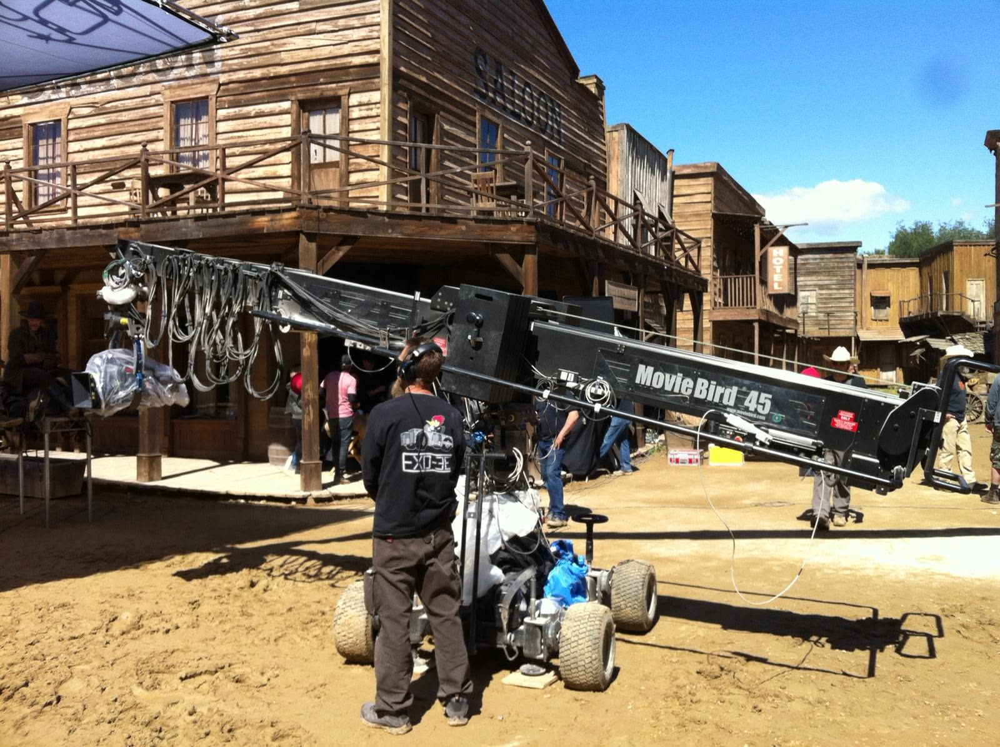
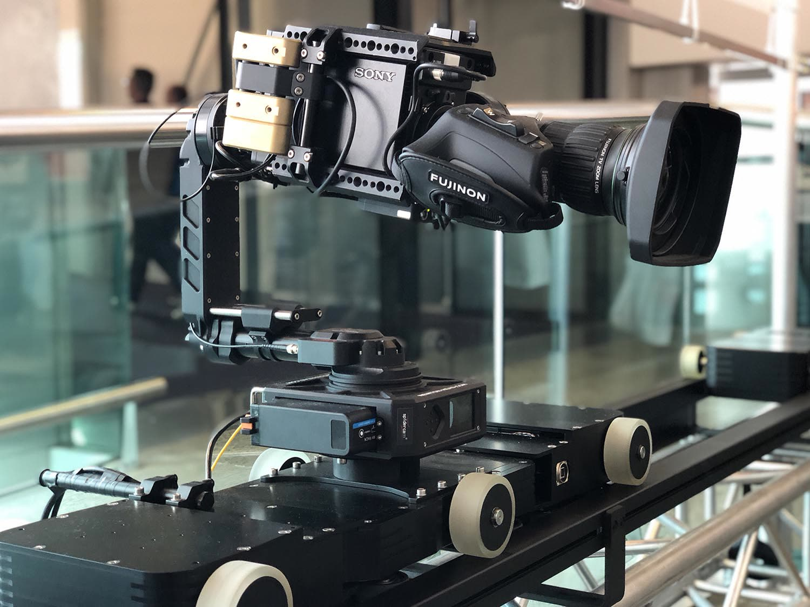
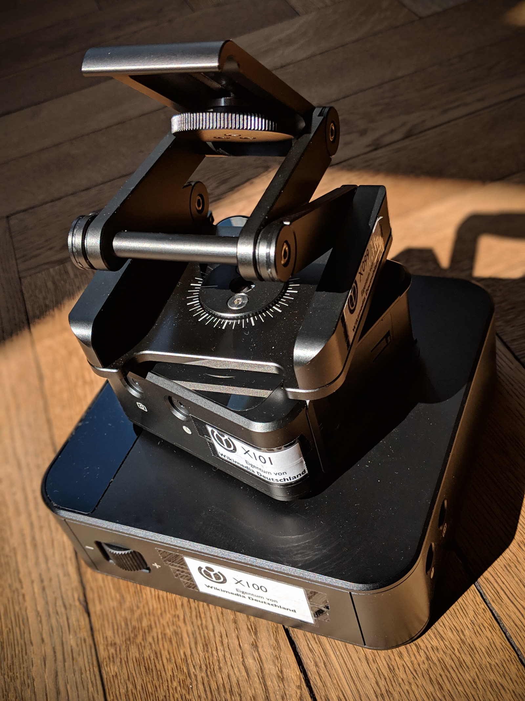
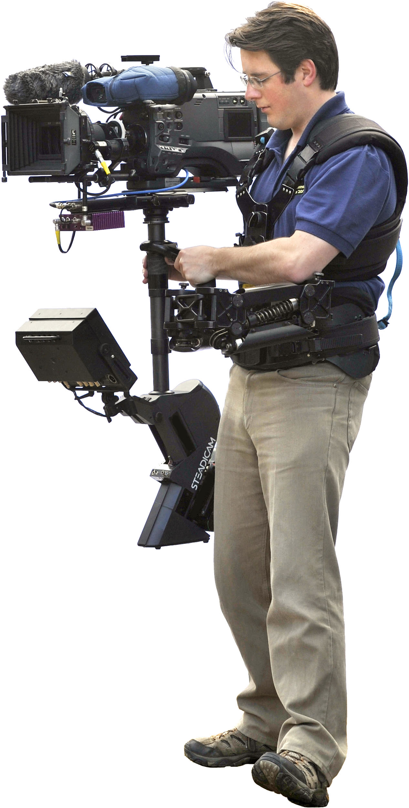
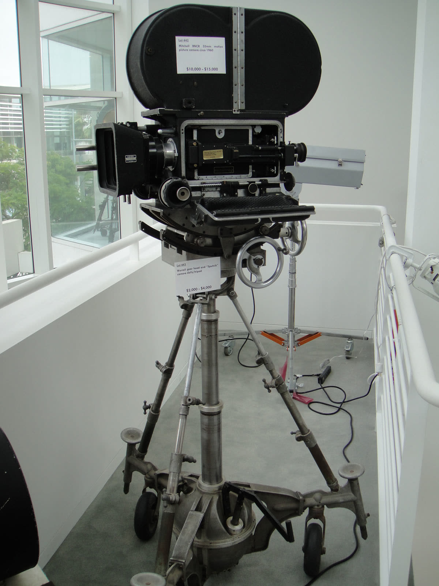
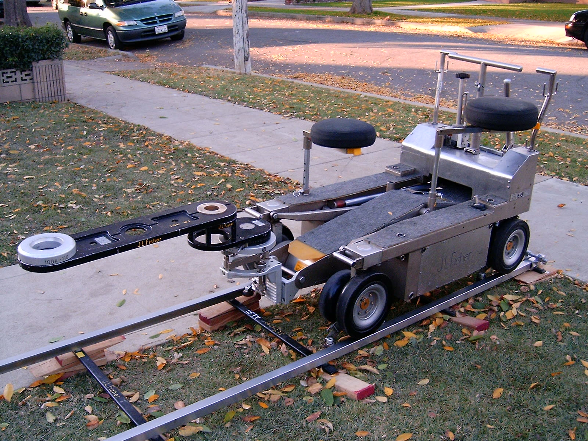
Cada sistema de movimiento de cámara trae consigo una textura de movimiento reconocible, y esa textura connota antes de que el espectador pueda nombrarla. La elección del soporte no es solo una decisión logística de presupuesto y de tiempo de montaje: es, en sí misma, una decisión de estilo tan determinante como la elección de la óptica o del esquema de luz.
| Soporte | Textura de movimiento | Connota |
|---|---|---|
| Dolly / raíles | Perfectamente suave, trayectoria fija y predecible | Control, deliberación, una mirada que sabe adónde va |
| Steadicam | Suave pero con una leve flotación orgánica, libre de raíles | Una presencia que acompaña sin ser un cuerpo torpe; ideal para seguir personajes por espacios complejos |
| Gimbal motorizado | Estabilización casi total, similar a la Steadicam pero más liviana y con recorridos más agresivos | Lo mismo que la Steadicam con menor costo de equipo humano, aunque con menos "peso" físico perceptible en el movimiento |
| Cámara en mano | Visiblemente inestable, respira con el cuerpo del operador | Urgencia, inmediatez, subjetividad, verdad documental o su simulacro |
| Grúa / jib | Trayectorias amplias en el espacio, cambios de altura | Escala, revelación, la mirada que se eleva por encima de la acción humana |
| Drone | Movimiento aéreo libre, sin las limitaciones de un brazo mecánico | Vastedad, punto de vista imposible para un cuerpo humano |
| Cabeza remota | Precisión robótica, repetible cuadro a cuadro | Nada por sí misma: es la herramienta que permite repetir exactamente un movimiento complejo, típica de VFX y de publicidad |
Ninguna de estas connotaciones es una ley física: son convenciones aprendidas por el espectador a lo largo de un siglo de cine, y como toda convención, se pueden usar a favor o deliberadamente en contra. Un uso especialmente productivo de esta lista es notar cuándo un director mezcla soportes dentro de una misma escena de manera intencional: pasar de Steadicam a cámara en mano en el instante exacto en que un personaje pierde el control de la situación es un recurso tan legible para el espectador entrenado como cualquier corte de montaje, aunque ocurra dentro de un plano continuo.
Vale además una advertencia técnica que conecta este catálogo con el resto del manual: cada soporte tiene su propia relación con el peso y el tamaño del cuerpo de cámara. Un gimbal liviano puede no soportar una configuración de cine pesada con zoom y mattebox completo; una Steadicam exige un operador entrenado específicamente en ese oficio, que además ajusta el balance del brazo según el peso exacto del conjunto óptico. Elegir el soporte, entonces, condiciona también qué combinación de cámara y objetivo es viable ese día, y conviene decidirlo en la etapa de planificación, no en el momento de montar el equipo en el set.
10.3 El movimiento como puntuación
Hay una regla de economía que se descuida con frecuencia: un plano fijo que se mueve una sola vez en toda la película pesa más que cien travellings constantes. Si la cámara se mueve todo el tiempo, el movimiento deja de significar y pasa a ser textura de fondo, un hábito de estilo que el espectador deja de registrar conscientemente después de los primeros minutos. Si la cámara permanece fija durante gran parte del metraje y se mueve en un único momento preciso, ese movimiento funciona como un signo de puntuación: un subrayado, una ruptura, un cambio de régimen que el espectador siente incluso sin poder nombrarlo.
Michael Haneke construye películas enteras sobre esa lógica de la escasez deliberada: en Funny Games o en Caché, la cámara permanece fija durante escenas completas, y cuando finalmente se mueve, ese movimiento adquiere un peso dramático desproporcionado respecto de su magnitud física. El mismo principio, en sentido inverso, explica por qué ciertas películas de acción contemporáneas, con movimiento de cámara casi constante durante toda su duración, terminan produciendo una sensación de agotamiento visual antes que de energía: cuando todo se mueve, nada se destaca por moverse. La decisión de cuánto se mueve una cámara a lo largo de una película es, en ese sentido, una decisión de puntuación tanto como de estilo visual, y conviene tomarla de manera consciente desde la etapa de idea rectora, no dejarla librada al hábito de cada plano individual.
10.4 La coreografía cámara-actor
Cuando la cámara se mueve y el actor se mueve al mismo tiempo, alguien tiene que marcar primero. En la práctica de rodaje, lo habitual es que el actor marque su recorrido en el ensayo y que la cámara —sea dolly, Steadicam o grúa— se coreografíe después alrededor de esa marca, no al revés. Invertir el orden —pedirle al actor que ajuste su interpretación a una trayectoria de cámara ya fijada— suele producir actuaciones mecánicas, y es uno de los errores más frecuentes de quien recién empieza a dirigir movimiento. El proceso habitual en un set profesional pasa por marcar el recorrido del actor en el piso con cinta, filmar un ensayo de cámara sin actor para ajustar la trayectoria y el timing, y recién entonces integrar ambos elementos en los ensayos finales previos a la toma.
El problema se vuelve doblemente complejo cuando el desplazamiento del actor cruza zonas de luz distintas dentro de un mismo plano: de una ventana a una sombra, de un área con relleno a otra sin él. Iluminar ese recorrido exige pensar la puesta no como un punto fijo sino como un corredor completo, con niveles que se equilibren entre sí para que el ojo no perciba un salto de exposición en mitad del movimiento. Esto retoma directamente el problema desarrollado en el capítulo 31 sobre continuidad de iluminación, llevado ahora al interior de un solo plano en movimiento: no se trata de igualar la exposición entre una toma y la siguiente, sino de sostenerla dentro de los mismos segundos de un plano continuo, lo que deja mucho menos margen de corrección posterior.
Un recurso frecuente para resolver este problema sin recurrir a un número excesivo de fuentes es escalonar la intensidad de la puesta a lo largo del recorrido: una fuente ligeramente más fuerte al inicio del trayecto y otra, más débil, hacia el final, calculadas de manera que el ojo perciba una transición pareja en lugar de un escalón brusco entre una zona y la siguiente. El foquista, cuyo trabajo se describe en el capítulo 12.8, cumple en estos planos un rol tan crítico como el del operador de cámara: un desplazamiento que atraviesa varios metros de profundidad exige un seguimiento de foco preciso durante todo el recorrido, no solo al principio y al final.
10.5 Movimiento y focal
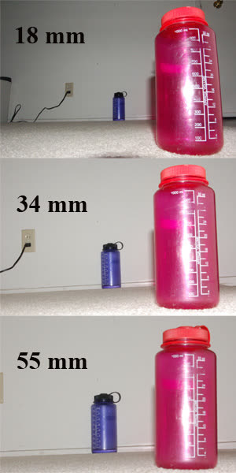
Un travelling filmado con un 25 mm y el mismo travelling filmado con un 135 mm no son la misma operación, aunque el desplazamiento físico de la cámara sea idéntico. Con un angular, el fondo se mueve mucho respecto del sujeto a medida que la cámara avanza —la llamada aceleración de fondo, ligada directamente al modo en que la focal afecta la sensación de profundidad descripta en el capítulo 12.4 de este manual—, produciendo una sensación de velocidad y de espacio que se despliega ante el espectador. Con un tele largo, el fondo permanece comprimido y relativamente estable durante todo el recorrido, y el mismo desplazamiento físico se percibe mucho más lento y contenido, casi como si el espacio se resistiera a dejar pasar a la cámara. Elegir la focal de un travelling es, por lo tanto, elegir también su temperatura emocional, y es una decisión que muchas veces se toma de manera automática —"la focal que ya está puesta"— cuando en rigor merece la misma reflexión que la elección del soporte de movimiento.
Hay una consecuencia práctica adicional que conviene tener presente: cuanto más larga la focal, más se amplifica cualquier imperfección del movimiento de cámara, porque el ángulo de visión estrecho magnifica cualquier desvío lateral de la trayectoria. Un travelling con un tele exige, por lo tanto, un sistema de movimiento considerablemente más estable —raíles bien nivelados, un brazo de grúa bien calibrado— que el mismo movimiento con un angular, donde el campo de visión amplio disimula pequeñas irregularidades que con un tele resultarían intolerables.
10.6 Movimiento y exposición
Un plano que atraviesa distintas zonas de luz —de un interior oscuro hacia una ventana muy iluminada, de una calle soleada a la sombra de un portal— pone a prueba el rango dinámico del soporte de una manera que un plano fijo nunca enfrenta. La cámara tiene que sostener detalle utilizable en ambos extremos del recorrido sin que el sistema de exposición automático, si lo hay, reaccione de manera visible a mitad de la toma. En la práctica esto obliga a exponer para el punto más comprometido del recorrido —casi siempre el más luminoso, dado que lo que se quema no se recupera, según se desarrolla en el capítulo 19.7— y a resolver el resto con la latitud disponible, en lugar de perseguir una exposición ideal para cada instante del movimiento.
Cuando la diferencia de luminancia entre el punto de partida y el punto de llegada es demasiado grande para que un solo ajuste de exposición la resuelva, la alternativa profesional no es corregir la exposición durante la toma —un ajuste de diafragma visible en mitad de un plano es, salvo excepción deliberada, un error grosero— sino intervenir sobre las fuentes mismas del recorrido: colocar densidad neutra sobre la ventana que la cámara va a atravesar, reforzar con luz artificial la zona más oscura del trayecto, o directamente replantear el recorrido de cámara para que el rango de luminancias que atraviesa sea compatible con la latitud real del sistema, la misma cifra que el capítulo 41.2 recomienda medir con una prueba de latitud antes del rodaje.
10.7 Cuándo la cámara en mano es decisión y cuándo es pereza
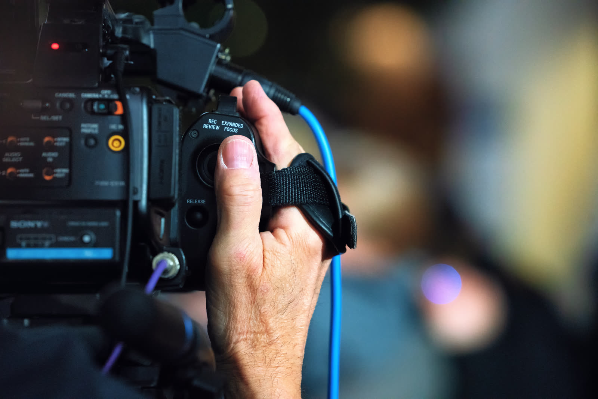
La cámara en mano se volvió, en las últimas dos décadas, un default casi automático de buena parte de la producción televisiva y de bajo presupuesto, y eso devaluó su significado. Conviene distinguir dos usos completamente distintos. Cuando la inestabilidad de la imagen tiene una función —transmitir la subjetividad de un personaje, la urgencia de una persecución, la textura documental de un registro que se presenta como no controlado—, es una decisión legítima y potente, y buena parte del cine de los hermanos Dardenne o de Paul Greengrass la usa exactamente así, con una cámara que respira al ritmo del cuerpo del operador y que persigue al personaje casi como un segundo cuerpo dentro de la escena. Cuando se elige simplemente porque ahorra tiempo de montaje de raíles o porque "así se ve más real" sin que la historia lo pida, es una economía de producción disfrazada de estilo, y el espectador entrenado lo nota, aunque no siempre sepa nombrar por qué esa imagen se siente vacía.
Existe además un punto intermedio que conviene reconocer: la cámara en mano "contenida", operada por alguien entrenado que reduce deliberadamente la amplitud del temblor sin eliminarlo del todo. Produce una sensación de presencia humana sutil, sin caer en la agitación extrema asociada al registro de urgencia. Es el registro que domina buena parte del cine de autor contemporáneo que busca un término medio entre la frialdad del dolly y la agitación del documental de guerra, y su ejecución exige, paradójicamente, más entrenamiento del operador que la cámara en mano abiertamente caótica.
10.8 El zoom como movimiento expresivo
Fuera del dolly zoom, el zoom tiene un registro propio que no debería confundirse con un sustituto barato del travelling. El crash zoom —un zoom muy rápido y visible— es un recurso de puntuación abiertamente artificial, asociado al cine de explotación de los años setenta y recuperado con ironía por Wes Anderson o Edgar Wright, que lo usan precisamente por su carácter declarado de cita. El zoom lento y casi imperceptible, en cambio, puede operar como un reencuadre silencioso dentro de un plano largo, sin la declaración de intervención que implica un corte: es un recurso habitual del cine de vigilancia o de observación distante, donde un acercamiento gradual sugiere la mirada de alguien que está prestando atención sin que el sujeto lo perciba.
Operar un zoom con la precisión necesaria para que ese recorrido sea perfectamente uniforme —sin saltos de velocidad ni pérdida de foco— es una habilidad técnica específica, desarrollada en el capítulo 17.6 de este manual a propósito del llamado "zoom clavado". Combinar un zoom con un movimiento físico de cámara —el propio dolly zoom, o un zoom ejecutado durante un travelling lateral— exige coordinación entre el operador de zoom y el maquinista que empuja el dolly, un tipo de ensayo conjunto que muchas veces se subestima en la planificación de la jornada y que puede consumir mucho más tiempo de montaje del previsto si no se ensaya con anticipación.
10.9 Ejemplos para mirar
Stanley Kubrick, con el operador Garrett Brown, incorporó la Steadicam recién inventada a los pasillos del Overlook en El resplandor, y la usó no para dar libertad sino para construir un espacio geométricamente imposible de recorrer con naturalidad, en línea directa con la simetría descripta en el capítulo 4.3 de este manual: la cámara persigue a un niño en triciclo por corredores que, de tan simétricos y repetitivos, generan una desorientación deliberada. Martin Scorsese usa el travelling y la grúa como una forma de energía narrativa: la entrada al Copacabana en Buenos muchachos, un plano secuencia ininterrumpido que recorre cocinas, pasillos y el propio salón del club nocturno, es en sí misma un argumento sobre el mundo de privilegio y peligro que el personaje está por habitar, no solo una demostración técnica.
Alfonso Cuarón, con el director de fotografía Emmanuel Lubezki, llevó el plano secuencia con movimiento continuo a un extremo técnico y narrativo en Hijos de los hombres —la emboscada del auto y la secuencia de guerra urbana, resueltas ambas en tomas de varios minutos sin corte visible— y en Gravity, donde el movimiento de cámara deja de ser un recurso puntual para convertirse en la estructura misma de la narración, ya que la ausencia de gravedad vuelve literal la libertad de movimiento de la cámara. Los hermanos Safdie trabajan con una cámara en mano nerviosa y pegada a los personajes que hace del movimiento un síntoma de ansiedad permanente, casi nunca en calma, incluso en escenas de diálogo aparentemente tranquilas. Lucrecia Martel, en el extremo opuesto, casi no mueve la cámara, y esa quietud —coherente con el criterio realista descripto en el capítulo 3.4— es tan expresiva como cualquier travelling: la inmovilidad obliga al espectador a habitar el espacio de la escena en lugar de que la cámara lo recorra por él. Alexander Sokurov llevó la idea del plano único al límite absoluto en El arca rusa, una película entera resuelta en un solo plano secuencia de una hora y media filmado con Steadicam por los salones del Hermitage, donde el movimiento de cámara no puntúa la narración: es, literalmente, toda la narración, y su ejecución exigió una coreografía de cientos de actores y técnicos sincronizada con una precisión que ningún otro método de rodaje habría permitido corregir con un segundo intento el mismo día.
11. Física de la imagen: la lente delgada
11.1 Refracción: el fenómeno del que depende todo el cine
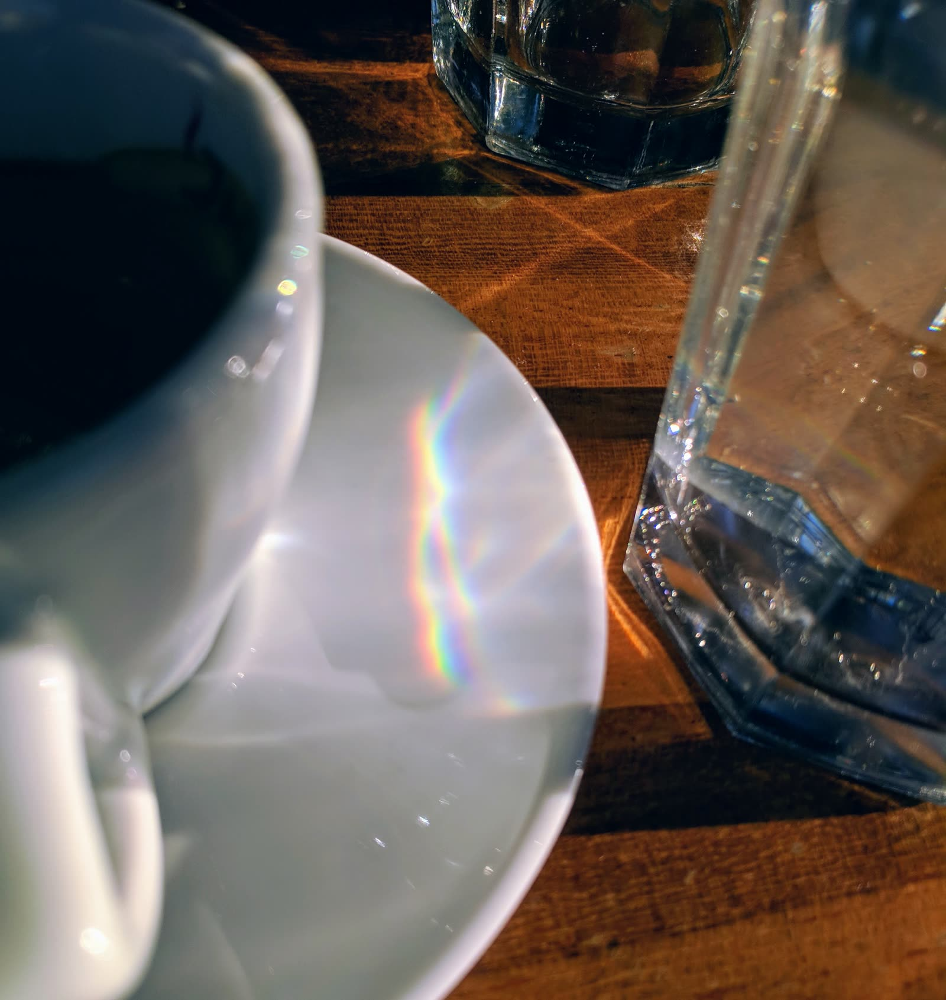
Sin refracción no habría objetivos, no habría cámaras y no habría cine. La refracción es el cambio de dirección que sufre un rayo de luz cuando pasa de un medio transparente a otro con distinta densidad óptica —del aire al vidrio, del vidrio al aire—. Cada material tiene un índice de refracción, un número que expresa cuánto se frena la luz dentro de él respecto del vacío: el aire vale prácticamente 1, el agua alrededor de 1,33, los vidrios ópticos van aproximadamente de 1,45 a 1,95 según su composición.
Cuando un rayo incide oblicuamente sobre la superficie de un vidrio, se desvía hacia la normal al entrar y se aleja de ella al salir. Si esa superficie es curva en lugar de plana, cada rayo se desvía en un ángulo distinto según el punto donde incide, y ese es exactamente el truco: una superficie curva puede tomar un haz de rayos divergentes que vienen de un punto del mundo y volver a hacerlos converger en un punto del otro lado. Eso es una imagen.
Hay un segundo fenómeno, inseparable del primero, que conviene tener presente desde ahora porque va a reaparecer varias veces en esta parte: la dispersión. El índice de refracción de un material no es un valor único, sino que varía ligeramente según la longitud de onda de la luz. El azul se refracta más que el rojo. Por eso un prisma descompone la luz blanca en un espectro, y por eso una lente simple no puede formar la imagen de todos los colores en el mismo plano. La consecuencia práctica es la aberración cromática, y la solución consiste en combinar vidrios de distinta dispersión —típicamente un elemento convergente de vidrio crown con uno divergente de vidrio flint— de modo que las desviaciones cromáticas se cancelen entre sí. Un objetivo de cine tiene entre ocho y veinte elementos, y una parte considerable de ellos está ahí no para formar la imagen sino para corregir los defectos de los que sí la forman.
11.2 Lentes convergentes y divergentes
Las lentes se dividen en dos grandes familias según lo que hacen con un haz de rayos paralelos.
Lentes convergentes (positivas). Son más gruesas en el centro que en los bordes. Concentran los rayos paralelos en un punto real del espacio: el foco. La imagen que forman es una imagen real, es decir, una imagen que existe físicamente en el aire y que puede recogerse sobre una pantalla, una película o un sensor. Todo objetivo fotográfico es, en su conjunto, un sistema convergente. Sus formas básicas son la biconvexa, la plano-convexa y la menisco convergente (cóncavo-convexa con la cara convexa de mayor curvatura).
Lentes divergentes (negativas). Son más delgadas en el centro que en los bordes. Separan los rayos paralelos, que después de atravesarlas parecen provenir de un punto situado por delante de la lente. Ese punto no existe materialmente: la imagen es virtual, no puede proyectarse sobre una pantalla. Aisladas no sirven para tomar una imagen, pero son indispensables dentro de un objetivo compuesto, tanto para corregir aberraciones como para modificar la focal resultante del conjunto —los teleobjetivos y los retrofocos se construyen precisamente jugando con grupos positivos y negativos.
Un objetivo real es un sistema de varios elementos, algunos cementados entre sí en grupos, distribuidos alrededor del diafragma. Para poder razonar sobre él sin resolver la trayectoria de cada rayo por cada superficie, la óptica geométrica lo reduce a un modelo simplificado: la lente delgada equivalente. Se supone que todo el poder refractivo del conjunto está concentrado en un único plano, y se trabaja con dos puntos notables llamados puntos nodales —el nodal anterior y el nodal posterior—. Su propiedad definitoria es que un rayo dirigido al nodal anterior emerge del nodal posterior con exactamente la misma inclinación: no se desvía, solo se desplaza. Los puntos nodales son la razón por la cual se puede hablar de "la distancia focal" de un objetivo compuesto como si fuera una lupa, y también la razón por la cual, en un movimiento de paneo sin paralaje —el nodal pan que se usa para stitchear panorámicas o para efectos de VFX—, la cámara debe girar sobre el punto nodal y no sobre el centro del cuerpo.
11.3 La fórmula de la lente delgada
Toda la relación entre el mundo y su imagen se resume en una sola ecuación:
1/d₀ + 1/dᵢ = 1/f
donde:
- d₀ es la distancia del objeto a la lente,
- dᵢ es la distancia de la imagen a la lente, es decir, dónde se forma realmente la imagen nítida,
- f es la distancia focal de la lente.
Las tres magnitudes deben expresarse en la misma unidad. La distancia focal, f, es una constante física del objetivo: la distancia a la que converge un haz de rayos paralelos, o dicho de otro modo, dónde se forma la imagen de un objeto infinitamente lejano.
De la fórmula se desprende de inmediato el hecho más importante de esta parte del manual, y conviene enunciarlo con todas las letras: la imagen no se forma siempre en el mismo lugar. Cuanto más cerca está el objeto, más atrás —más lejos de la lente— se forma su imagen. El sensor, en cambio, está fijo. Por eso los objetivos tienen anillo de foco: enfocar no es más que desplazar físicamente el objetivo (o un grupo interno de elementos) hacia adelante o hacia atrás hasta que la imagen del sujeto que nos interesa caiga exactamente sobre el plano del sensor.
Vale la pena leer la ecuación en sus dos extremos:
- Si el objeto está en el infinito, 1/d₀ tiende a cero y entonces dᵢ = f. La imagen se forma exactamente a la distancia focal. Ese es el foco en infinito, la posición de referencia de todo objetivo.
- Si el objeto se acerca hasta situarse en el foco (d₀ = f), 1/dᵢ se hace cero y dᵢ tiende a infinito: los rayos salen paralelos y no hay imagen real posible. Ningún objetivo puede enfocar más cerca que su propia focal, y en la práctica todos se detienen mucho antes.
11.4 Primer ejemplo resuelto: un 50 mm enfocando a cuatro metros
Tomemos el caso más común imaginable en un set: un objetivo de 50 mm y un actor a cuatro metros de la cámara. Queremos saber dónde se forma exactamente la imagen de ese actor.
Datos: f = 50 mm, d₀ = 4 m = 4.000 mm.
Despejamos:
1/dᵢ = 1/f − 1/d₀ = 1/50 − 1/4.000 = 0,02 − 0,00025 = 0,01975
dᵢ = 1 / 0,01975 ≈ 50,6 mm
El resultado es discreto y decisivo a la vez. Para tener nítido a un sujeto a cuatro metros, el objetivo tiene que estar 0,6 mm más adelante de su posición de infinito. Seis décimas de milímetro. Ese número explica de un solo golpe tres cosas que suelen enseñarse por separado:
- Por qué existe el anillo de foco. Todo el recorrido mecánico de enfoque de un objetivo normal, desde infinito hasta su distancia mínima, es cuestión de unos pocos milímetros de desplazamiento. Un 50 mm que enfoca hasta 45 cm recorre en total algo menos de 6 mm.
- Por qué el back focus debe ser exacto. Si el plano del sensor está una décima de milímetro fuera de lugar respecto de lo que el objetivo espera, el foco marcado en el anillo deja de corresponder con la realidad. Volveremos sobre esto en el capítulo 18.
- Por qué un adaptador de montura mal calculado arruina un objetivo. Un adaptador que agrega medio milímetro de más impide que el objetivo llegue nunca al infinito; uno que resta medio milímetro hace que llegue "más allá" del infinito y desajusta toda la escala de distancias grabada en el barrilete.
Podemos extraer un dato más del mismo cálculo. La escala de reproducción o aumento es m = dᵢ / d₀ = 50,6 / 4.000 ≈ 0,0127. Es decir, el actor se proyecta sobre el sensor a poco más de un centésimo de su tamaño real. Un adulto de 1,70 m ocupa 1.700 × 0,0127 ≈ 21,5 mm de altura de imagen. Sobre un sensor Super 35 de aproximadamente 14 mm de alto en formato panorámico, eso significa que no entra entero: a cuatro metros, con un 50 mm, estamos en un plano medio corto. La fórmula de la lente delgada, bien mirada, también es una herramienta de encuadre.
Acerquemos ahora al actor a un metro y repitamos la cuenta:
1/dᵢ = 1/50 − 1/1.000 = 0,02 − 0,001 = 0,019 → dᵢ ≈ 52,6 mm
Ahora el desplazamiento respecto del infinito es de 2,6 mm: cuatro veces mayor que antes. Y si quisiéramos una reproducción 1:1 —un plano macro donde el objeto se proyecta a tamaño real sobre el sensor— la fórmula exige d₀ = dᵢ = 2f, es decir, objeto y sensor a 100 mm de la lente cada uno, con 50 mm de extensión respecto de la posición de infinito. De ahí que los objetivos macro verdaderos tengan helicoides desmesuradamente largos, y de ahí también la regla de que a escala 1:1 se pierden dos diafragmas de luz: al duplicar la distancia lente-sensor, la iluminación de la imagen cae a la cuarta parte.
11.5 Segundo ejemplo resuelto: medir la focal de una lente desconocida
La fórmula funciona igual de bien en sentido inverso: si medimos las dos distancias, podemos deducir la focal de cualquier lente que tengamos en la mano. Es un experimento que puede hacerse en cinco minutos con una lupa, una vela y una hoja de papel o una placa de telgopor a modo de pantalla.
Se enciende la vela, se coloca la lupa frente a ella y se desplaza la pantalla hacia atrás hasta que la llama aparezca proyectada con nitidez —invertida, como corresponde a toda imagen real—. Entonces se miden las dos distancias. Supongamos que obtenemos:
d₀ = 60 cm (vela a lente), dᵢ = 150 cm (lente a pantalla)
1/f = 1/60 + 1/150 = 0,01667 + 0,00667 = 0,02333
f = 1 / 0,02333 ≈ 42,8 cm
La lupa tiene una focal de unos 43 centímetros. El experimento es más instructivo de lo que parece, por tres motivos.
Primero, porque muestra que "distancia focal" no es una etiqueta comercial ni una convención: es una magnitud medible con una regla. Segundo, porque la imagen aparece invertida, arriba abajo y izquierda derecha, lo cual es literalmente lo que ocurre dentro de una cámara —el visor óptico de una réflex la endereza con un pentaprisma; el sensor la entrega invertida y la electrónica la da vuelta—. Y tercero, porque permite observar el fenómeno central del capítulo en vivo.
La demostración del infinito. Si se coloca la pantalla exactamente a la distancia focal de la lupa y se apunta hacia una ventana, todo lo lejano —edificios, árboles, el cielo— aparece nítido de golpe. Eso es el foco en infinito: la imagen de los objetos remotos se forma en el plano focal y en ningún otro lado. Ahora bien, si acercamos la vela a la lente sin mover la pantalla, la llama se desenfoca, porque su imagen pasó a formarse más atrás. Para recuperarla habría que alejar la pantalla.
Y aquí está el punto que hace del experimento una lección de cine y no de física: en una cámara no se puede mover la pantalla. El sensor está atornillado al cuerpo. Lo único que se puede mover es el objetivo. Enfocar es exactamente eso, y no otra cosa.
La demostración de las dos velas. Si se colocan dos velas a distancias distintas y se busca el foco con una lente simple, se comprueba que sólo una de las dos puede estar nítida a la vez. Ese es el hecho ineludible de la óptica: existe un único plano de foco exacto, no una zona. Lo que sí se observa es que si se aleja la cámara de ambas velas, o si se reduce la abertura, llega un momento en que las dos se ven aceptablemente nítidas. Esa tolerancia perceptual —el hecho de que un punto ligeramente desenfocado siga leyéndose como punto— es la profundidad de campo, y se formaliza en el capítulo 14 con el círculo de confusión. Conviene retener desde ya la formulación correcta: la profundidad de campo no es una zona en la que la imagen esté enfocada, sino una zona en la que el desenfoque es lo suficientemente pequeño como para no notarse.
11.6 Modificar la focal desde afuera: lentillas de aproximación y dioptrías
Si la fórmula dice que no se puede enfocar más cerca que la focal, y el helicoide de un objetivo de cine tiene un recorrido limitado, ¿cómo se consigue un primerísimo plano de un anillo, de un ojo, de una gota? Hay dos caminos, y ambos se deducen de la misma ecuación.
Camino 1: acortar la focal del sistema. Se antepone al objetivo una lente convergente adicional, llamada lentilla de aproximación o dioptría. El conjunto pasa a comportarse como un objetivo de focal más corta, y por lo tanto puede enfocar más cerca sin extender el helicoide. Las lentillas se miden en dioptrías, unidad definida como la inversa de la focal expresada en metros:
D = 1 / f (en metros)
Una lentilla de +1 dioptría tiene una focal de 1 metro; una de +2, de 50 cm; una de +4, de 25 cm. La regla práctica que se deriva de esto es elegante: con el objetivo enfocado a infinito y una lentilla de D dioptrías montada delante, el plano de foco cae exactamente a 1/D metros del vidrio frontal, sea cual sea la focal del objetivo. Una +2 pone el foco a 50 cm; una +3, a 33 cm. Las dioptrías se pueden apilar y sus valores se suman (+1 y +2 dan +3), aunque cada elemento agregado degrada un poco la calidad y acentúa las aberraciones en los bordes. En cine se usan dioptrías de calidad óptica —Tiffen y Schneider fabrican series específicas— montadas en el mattebox, y también split dioptres: medias lentillas que cubren sólo una porción del cuadro y permiten tener un primer término muy cercano y un fondo lejano simultáneamente nítidos, con una zona de transición borrosa que hay que esconder en un borde vertical de la escena. Es un truco de época, ostensiblemente visible en Tiburón o en Los intocables, y su reaparición contemporánea suele ser deliberadamente autoconsciente.
Su gran ventaja es que no cuestan luz: al no alterar la relación entre focal y abertura del objetivo, no hay compensación de exposición.
Camino 2: alejar el objetivo del sensor. Es la consecuencia directa de que dᵢ crezca al acercarse el objeto. Se interponen tubos de extensión o un fuelle entre el objetivo y el cuerpo, y con eso se gana distancia de imagen sin tocar el vidrio. La calidad óptica se mantiene mejor que con dioptrías, pero hay un precio: al aumentar dᵢ, la luz que llega al sensor se diluye sobre una superficie mayor, y hay que compensar la exposición. El factor de corrección es (dᵢ/f)², de modo que la reproducción 1:1 —donde dᵢ = 2f— cuesta exactamente dos diafragmas.
Alrededor de estos dos principios existe un pequeño catálogo de instrumentos especializados que todo director de fotografía debería conocer aunque no los use a menudo:
- Objetivos macro. Diseñados desde el principio para enfoque cercano, con helicoide extendido y corrección optimizada para distancias cortas. En cine son frecuentes las focales de 50 a 100 mm, que permiten reproducción 1:1 manteniendo una distancia de trabajo suficiente para meter luz entre el objetivo y el objeto. Exigen mucha luz, tanto por la extensión como por la profundidad de campo minúscula que se obtiene a esas escalas: a 1:1 y f/8, la zona nítida se mide en milímetros.
- Probe lens. Un objetivo con forma de tubo largo y delgado, macro y angular a la vez, capaz de entrar en un espacio de pocos centímetros —una copa, una maqueta, un plato de comida— y mantener una perspectiva muy amplia con foco cercanísimo. Los modelos actuales suelen tener el frontal impermeable y LEDs integrados. Su costo en luz es alto, típicamente dos o tres diafragmas.
- Sistemas de periscopio y snorkel. Prolongan el eje óptico mediante un espejo o prisma en ángulo recto, permitiendo bajar la cámara a ras del suelo o pasarla por aberturas imposibles. Cuestan alrededor de dos diafragmas.
- Objetivos de descentramiento y basculación (shift / tilt). Herederos directos del fuelle de la cámara de placas. El desplazamiento (shift) corrige la convergencia de las verticales al filmar arquitectura sin inclinar la cámara; la basculación (tilt) inclina el plano de foco respecto del plano del sensor —el llamado principio de Scheimpflug—, y permite que la zona nítida atraviese la escena en diagonal en lugar de ser paralela al sensor. Es el mecanismo detrás del efecto de "maqueta" o miniature look, aunque su uso más interesante es el contrario: conseguir nítidos simultáneamente un primer término bajo y un fondo alto que ninguna profundidad de campo convencional podría cubrir.
12. Distancia focal, campo visual y perspectiva
12.1 Qué es exactamente la distancia focal
La distancia focal de un objetivo es la distancia entre su centro óptico —hablando con precisión, su punto nodal posterior— y el plano de la imagen, cuando el objetivo está enfocado a infinito. Se expresa en milímetros y viene grabada en el frente de cada lente: 18, 25, 35, 50, 85, 135.
Es una magnitud física, no una escala de intensidad, y su efecto visible es doble. Por un lado determina el campo visual: cuánto mundo entra en el cuadro. Por otro determina el aumento: qué tan grande se proyecta cada cosa sobre el sensor. Ambas son la misma propiedad vista desde dos lados. La relación con el campo visual es inversa: a menor focal, mayor porción de espacio registrada y menor tamaño de cada objeto dentro del cuadro; a mayor focal, campo más estrecho y objetos más grandes.
La fórmula que vincula las tres variables es:
ángulo de campo θ = 2 · arctan( d / (2 · f) )
o, despejando la focal necesaria para un ángulo dado:
f = d / (2 · tan(θ/2))
donde d es la dimensión del soporte que se está midiendo —el ancho, el alto o la diagonal del sensor o del negativo— y θ el ángulo de campo correspondiente a esa dimensión. Conviene aclarar siempre a qué dimensión se refiere un ángulo publicado: el ángulo diagonal es siempre el mayor y es el que suelen usar los fabricantes en sus fichas, mientras que en un rodaje lo que importa es el horizontal, porque es el que se corresponde con lo que se ve en el encuadre.
Un ejemplo concreto. Sobre un sensor Super 35 de 24,9 mm de ancho, un 50 mm cubre:
θ = 2 · arctan(12,45 / 50) = 2 · 13,98° ≈ 28° horizontales
Sobre un sensor Full Frame de 36 mm de ancho, el mismo 50 mm cubre:
θ = 2 · arctan(18 / 50) = 2 · 19,8° ≈ 39,6° horizontales
Mismo objetivo, cuarenta por ciento más de mundo. De ahí se sigue todo lo que viene a continuación.
12.2 El objetivo "normal" y por qué merece ese nombre
Se llama normal al objetivo cuya focal es aproximadamente igual a la diagonal del formato sobre el que se lo usa. No es una convención arbitraria: es la focal que produce una perspectiva que el ojo lee como neutra, sin exageración ni compresión aparente, cuando la imagen se observa a una distancia razonable respecto de su tamaño.
| Formato | Dimensiones aproximadas | Diagonal | Focal "normal" |
|---|---|---|---|
| Super 16 | 12,5 × 7,4 mm | ≈14,5 mm | 15-16 mm |
| Super 35 (3 perf) | 24,9 × 14 mm | ≈28,6 mm | 28-32 mm |
| Full Frame / VistaVision | 36 × 24 mm | ≈43,3 mm | 43-50 mm |
| Micro 4/3 | 17,3 × 13 mm | ≈21,6 mm | 20-25 mm |
| 65 mm / large format | 54 × 25 mm (aprox.) | ≈59,5 mm | 60-80 mm |
Hay además una razón perceptual, más interesante que la geométrica. El ojo humano tiene un campo visual total enorme —cerca de 180° contando la visión periférica—, pero el campo dentro del cual verdaderamente presta atención, aquel en el que discrimina detalle, forma y color con precisión, ronda los 35 o 40 grados. Un 50 mm en Full Frame, o un 32 mm en Super 35, cubren aproximadamente ese ángulo. Es decir: el objetivo normal no reproduce lo que el ojo ve, sino lo que el ojo mira.
De ahí que se lo haya descrito con acierto como el invitado silencioso: es la focal en la que la cámara desaparece como instrumento y la imagen se lee como mirada, sin que el espectador registre que alguien eligió un punto de vista. Es la herramienta natural del cine que no quiere subrayar. Ozu construyó una obra entera casi exclusivamente con el objetivo normal, cámara baja y estática, y esa constancia produce una intimidad que ninguna variación de focal habría dado. Roger Deakins fotografió 1917 enteramente con equivalentes de 32 a 40 mm, precisamente para que el espectador no sintiera nunca que el encuadre lo empujaba: el plano secuencia se sostiene sobre una perspectiva que no comenta.
12.3 Las familias de focales y su lenguaje
Los rangos que siguen son relativos a la diagonal del formato; un mismo número de milímetros cambia de categoría según el sensor, como se verá en 10.5.
| Tipo | Focal respecto de la normal | Comportamiento óptico | Uso expresivo |
|---|---|---|---|
| Gran angular extremo / fisheye | Muy menor | Distorsión esférica no corregida, líneas curvadas, campo de 180° | Subjetividad extrema, alteración, delirio, punto de vista no humano |
| Gran angular | Menor | Campo amplio, distorsión de barril leve, exagera la profundidad, deforma los rostros cercanos, gran profundidad de campo | Cercanía física, urgencia, inclusión del espacio, planos de situación |
| Normal | ≈ diagonal | Perspectiva neutra, mínima distorsión | Transparencia, observación no intrusiva |
| Teleobjetivo corto (retrato) | 1,5 a 3× la normal | Ligera compresión, rostros favorecidos, profundidad de campo reducida | Primeros planos, aislamiento suave, intimidad controlada |
| Teleobjetivo largo | Mucho mayor | Compresión fuerte de los planos, campo estrechísimo, profundidad de campo mínima | Aislamiento, vigilancia, tensión, sensación de mirada ajena |
| Macro | — | Reproducción hasta 1:1 | Materia, detalle, textura |
| Anamórfico | — | Compresión horizontal, bokeh ovalado, flare lineal, distorsión en bordes | Escala, formato "grande", cita de época |
En términos prácticos, un juego de primes de cine estándar para Super 35 se articula alrededor de 18, 25, 32, 40, 50, 75 y 100 mm. Con esas siete focales se puede fotografiar cualquier película. La elección entre ellas casi nunca es una cuestión de "cuánto entra en cuadro" —eso se resuelve caminando—, sino de qué relación se quiere establecer entre el espectador y lo filmado.
Vale la pena registrar dos posiciones opuestas y ambas defendibles. Hay directores de fotografía que reivindican el gran angular no por una razón de espacio sino de empatía: un 21, un 24 o un 28 mm obligan a poner la cámara físicamente encima del actor, y esa proximidad —la posibilidad de sentirlo respirar— genera una intensidad que ninguna focal larga puede fabricar desde lejos. Y hay quienes se instalan en el 35 mm como focal única de trabajo porque permite abrir un plano general y llegar a un primer plano sin deformar el rostro, reservando los teles largos —300, 400 mm— para efectos específicos de compresión atmosférica: el temblor de calor sobre un desierto, la ciudad aplastada contra el sujeto, la carretera que se pliega sobre sí misma.
Ninguna de las dos posiciones es más correcta. Lo que sí es un error es no tener ninguna.
12.4 Focal y movimiento en profundidad
Un efecto que suele pasarse por alto: la focal transforma radicalmente la percepción del movimiento hacia la cámara o desde ella.
Con un gran angular, un personaje que camina hacia el lente crece de tamaño de manera acelerada y dramática: recorre dos metros y pasa de figura entera a primer plano. La sensación es de irrupción, de velocidad. Con un teleobjetivo largo ocurre lo contrario: el personaje puede correr durante veinte segundos hacia la cámara sin que su tamaño en cuadro cambie apreciablemente, y el efecto es de suspensión, de esfuerzo inútil, de pesadilla. El plano de Benjamin corriendo hacia la iglesia en El graduado funciona exactamente por esto; el recurso reaparece cada vez que una película quiere que alguien corra sin avanzar.
Esta es también la base del efecto vértigo o dolly zoom: se desplaza la cámara hacia atrás mientras se hace zoom hacia adelante (o viceversa), de modo que el sujeto conserva el mismo tamaño en cuadro pero la perspectiva del fondo se dilata o se comprime violentamente. El sujeto queda estable y el mundo se reorganiza a su alrededor. Es un efecto de una sola nota y, por lo tanto, hay que gastarlo con cuidado.
12.5 El ángulo de visión depende del tamaño del sensor

Aquí conviene ser preciso, porque es el punto donde más confusión se acumula.
Un objetivo de 50 mm es siempre un objetivo de 50 mm. Su focal es una propiedad física del vidrio y no cambia al montarlo en otra cámara. Lo que cambia es cuánto del círculo de imagen que proyecta ese objetivo queda recortado por el sensor.
Un objetivo forma un círculo de imagen —volveremos sobre esto en el capítulo 15—. El sensor es un rectángulo que recorta una porción de ese círculo. Si el rectángulo es chico, recorta poco: el campo visual resultante es estrecho y el objetivo se comporta como un teleobjetivo. Si el rectángulo es grande, abarca más: el campo es amplio y el mismo objetivo se comporta como angular.
De ahí que un 35 mm sea:
- angular sobre Full Frame,
- prácticamente normal sobre Super 35,
- un teleobjetivo corto sobre Micro 4/3.
Para poder comparar entre formatos se usa el factor de recorte (crop factor), que es el cociente entre la diagonal del formato de referencia —tradicionalmente el 35 mm fotográfico de 36 × 24 mm— y la diagonal del formato en cuestión:
| Formato | Diagonal | Factor de recorte respecto de FF |
|---|---|---|
| Full Frame | 43,3 mm | 1,0× |
| Super 35 | ≈28,6 mm | ≈1,5× |
| Micro 4/3 | 21,6 mm | 2,0× |
| Super 16 | ≈14,5 mm | ≈3,0× |
| ARRI Alexa 65 | ≈59,5 mm | ≈0,73× |
Multiplicando la focal real por el factor de recorte se obtiene la focal equivalente: la focal que habría que usar en Full Frame para obtener el mismo encuadre. Un 25 mm en Super 35 encuadra aproximadamente como un 37 mm en Full Frame. Es por esto que las cámaras de sensor pequeño publican especificaciones del tipo "zoom 15-115 mm, equivalente a 24-185 mm".
Dos advertencias sobre la focal equivalente, ambas importantes:
- La equivalencia es sólo de encuadre, no de perspectiva ni de profundidad de campo. La perspectiva depende únicamente de dónde está la cámara, y la profundidad de campo depende del diámetro real de la abertura. Un 25 mm en Super 35 y un 37 mm en Full Frame, disparados desde el mismo punto y al mismo número f, dan el mismo encuadre y la misma perspectiva, pero no la misma profundidad de campo: el formato mayor entrega menos.
- El factor de recorte no es un solo número si las proporciones difieren. Comparar formatos de distinta relación de aspecto usando sólo la diagonal introduce error; para trabajo fino conviene comparar anchos, que es lo que el encuadre panorámico realmente usa.
Un matiz específico de los anamórficos: un objetivo anamórfico rotulado "50 mm" comprime horizontalmente, de modo que su campo vertical corresponde a un 50 mm pero su campo horizontal corresponde aproximadamente a un 25 mm. Sensación de mucho más horizonte con el mismo aumento en los rostros. Es una de las razones profundas del "look grande" del formato, y se detalla en el capítulo 17.
12.6 Perspectiva: el malentendido más persistente de la óptica
Y llegamos al punto que conviene fijar con claridad, porque se enseña mal en todas partes.
La distancia focal no cambia la perspectiva. La cambia la distancia de cámara.
La perspectiva —la relación de tamaños aparentes entre lo cercano y lo lejano, la velocidad con que las líneas convergen hacia el punto de fuga, el grado de superposición entre los planos— queda determinada exclusivamente por el punto de vista: la posición del centro óptico en el espacio. La focal no hace más que recortar un cono más ancho o más estrecho desde ese mismo punto.
La prueba es simple y vale la pena hacerla una vez: si se fotografía una escena desde un punto fijo con un 24 mm y luego con un 100 mm sin mover la cámara, y después se amplía el centro de la toma del 24 mm hasta igualar el encuadre del 100, ambas imágenes coincidirán en perspectiva. Diferirán en resolución, en aberraciones y en profundidad de campo, pero las relaciones de tamaño entre primer término y fondo serán idénticas.
¿Por qué entonces la experiencia dice que el angular "exagera la profundidad" y el tele "la aplasta"? Porque en la práctica nadie cambia de objetivo sin cambiar de sitio. Se elige el gran angular precisamente para poder acercarse mucho al sujeto conservando el encuadre, y es esa cercanía la que hace que la nariz del actor esté un veinte por ciento más cerca del lente que sus orejas, produciendo la deformación característica. Se elige el teleobjetivo para poder filmar desde lejos, y es esa lejanía la que hace que la diferencia relativa de distancia entre dos personas separadas por diez metros se vuelva insignificante, aplastándolas una contra la otra.
La formulación correcta, entonces, es esta: la focal es un recorte del cono visual; la perspectiva la fija el punto de vista. En el set esto se traduce en una disciplina de trabajo muy concreta: primero se decide dónde va la cámara, en función de la relación que se quiere con la escena; después se elige la focal que produce el encuadre deseado desde ahí. Hacerlo al revés —plantar la cámara donde resulta cómodo y resolver el encuadre con el zoom— es la manera más segura de que la perspectiva de una película sea el resultado del azar y no de una decisión.
13. Diafragma: f-stop y T-stop
13.1 El diafragma como órgano del objetivo
Dentro de todo objetivo, entre sus grupos de elementos, hay un anillo de laminillas metálicas superpuestas que puede abrirse y cerrarse formando una abertura aproximadamente circular. Es el diafragma de iris, y cumple tres funciones simultáneas que conviene no confundir entre sí:
- Regula la cantidad de luz que llega al sensor. Es su función evidente y la que le da nombre en la práctica del set.
- Determina la profundidad de campo. Es la función que más consecuencias narrativas tiene, y se desarrolla en el capítulo 14.
- Modifica la calidad de la imagen, porque al cerrarse recorta los rayos que atraviesan la periferia del vidrio —los más aberrantes— pero, pasado cierto punto, introduce difracción.
Un cambio de diafragma nunca es una decisión aislada de exposición. Es siempre, a la vez, una decisión sobre cuánto del mundo va a estar nítido y sobre cómo va a dibujar el objetivo. Por eso la elección del diafragma de trabajo de una película es una de las decisiones estructurales de la fotografía, comparable a la elección del formato o de la familia de ópticas.
13.2 El número f: una relación, no una medida
El número f —también llamado f-stop o simplemente diafragma— se define así:
N = f / D
donde f es la distancia focal del objetivo y D el diámetro efectivo de la abertura, es decir, el diámetro de la pupila de entrada vista desde el frente del objetivo. Es un cociente entre dos longitudes, y por lo tanto es un número adimensional: no se mide en milímetros ni en ninguna otra unidad.
Que sea un cociente y no una medida absoluta es exactamente lo que lo hace útil, y merece detenerse un momento en por qué. Un objetivo de 100 mm con una abertura de 25 mm de diámetro y un objetivo de 50 mm con una abertura de 12,5 mm están ambos en f/4. El primero deja pasar cuatro veces más luz en términos absolutos, porque su abertura tiene cuatro veces más superficie. Pero también proyecta esa luz sobre un área de imagen cuatro veces mayor, porque su aumento es el doble en cada dimensión. Los dos efectos se cancelan con exactitud matemática. El resultado es el principio que sostiene toda la práctica de la exposición:
Todos los objetivos ajustados al mismo número f producen la misma iluminación sobre el plano de la imagen, sea cual sea su distancia focal.
Sin esa normalización, cada objetivo necesitaría su propia tabla de exposición y el fotómetro sería inútil. Con ella, se mide una vez y el valor sirve para todo el juego de ópticas.
Nótese además la consecuencia contraintuitiva de que la focal esté en el numerador: cuanto mayor es el número f, más cerrada está la abertura. f/2 es una abertura grande; f/16 es una abertura pequeña. Es una fuente de confusión permanente entre principiantes, y la única manera de fijarlo es entender la fórmula, no memorizar la escala.
13.3 La escala estándar y por qué avanza de a raíz de dos
La escala universal de diafragmas es:
1 — 1,4 — 2 — 2,8 — 4 — 5,6 — 8 — 11 — 16 — 22 — 32 — 45 — 64
Cada valor es el anterior multiplicado por √2 ≈ 1,414. La razón es puramente geométrica: la luz que entra es proporcional al área de la abertura, y el área crece con el cuadrado del diámetro. Para duplicar el área hay que multiplicar el diámetro por √2. De ahí que cada paso de la escala —cada stop o paso— duplique o reduzca a la mitad la luz que llega al sensor.
Esto significa que el stop es una unidad logarítmica en base 2, y esa es la clave para operar con ella. Cerrar tres stops divide la luz por 8; abrir cuatro la multiplica por 16. Y como toda la cadena de exposición —velocidad de obturación, ISO, densidad de filtros ND, potencia de las fuentes— está construida sobre la misma unidad, las compensaciones se hacen sumando y restando pasos, no multiplicando cantidades. Un ND 0.6 quita dos stops; duplicar la distancia de una fuente puntual quita dos stops; pasar de ISO 800 a ISO 200 quita dos stops. Todas esas frases significan operativamente lo mismo, y son intercambiables entre sí.
En la práctica, los objetivos de cine tienen anillos de diafragma con marcas intermedias de un tercio o de medio paso, y en general el iris es continuo: puede detenerse en cualquier punto, lo cual permite ajustes finos y transiciones progresivas durante una toma. Esto es una diferencia importante con muchos objetivos fotográficos, que tienen retenes con clic en cada tercio y hacen imposible una transición suave.
En el extremo abierto de la escala están los objetivos rápidos. El caso célebre es el Zeiss Planar f/0.7 —construido originalmente para el programa espacial norteamericano— que Kubrick adaptó para rodar las escenas nocturnas de Barry Lyndon únicamente con la luz de las velas. Ese objetivo es una lección práctica sobre el precio de la velocidad: profundidad de campo de pocos centímetros, foco casi imposible de mantener, distancia de trabajo restringida y un juego de compromisos ópticos que sólo se justifican por lo que se quiso conseguir con él.
13.4 El T-stop: la abertura que de verdad importa
El número f tiene una limitación fundamental: es un valor teórico y puramente geométrico. Describe la relación entre el diámetro de la pupila de entrada y la focal, y supone implícitamente que toda la luz que entra por esa pupila llega al sensor. En la realidad no es así.
Cada superficie aire-vidrio de un objetivo refleja una fracción de la luz incidente —alrededor del 4 o 5 % sin tratamiento antirreflejo, menos del 0,5 % con recubrimientos multicapa modernos—, y el propio vidrio absorbe una parte. Un objetivo con veinte superficies pierde luz de manera acumulativa. Dos objetivos rotulados ambos f/2 pueden transmitir cantidades de luz apreciablemente distintas si uno tiene seis elementos y el otro dieciséis, o si uno tiene recubrimientos de última generación y el otro es de 1970.
El T-stop (transmission stop) resuelve el problema midiendo lo que realmente importa: la luz efectivamente transmitida. Se define como el número f que tendría un objetivo ideal sin pérdidas y que entregara la misma iluminación que el objetivo real:
T = N / √(transmisión)
Si un objetivo f/2 transmite el 80 % de la luz, su T-stop es 2 / √0,8 = 2 / 0,894 ≈ T2.2. El T-stop es siempre un número mayor o igual que el f-stop correspondiente, nunca menor: no existe objetivo que transmita más luz de la que entra.
Los objetivos de cine se calibran y se rotulan en T-stops precisamente por esto: para que el director de fotografía pueda cambiar de focal en medio de una secuencia sin recalcular la exposición ni volver a medir. Es una exigencia de continuidad, no de purismo técnico. Un juego de ópticas de cine bien calibrado garantiza que T2.8 signifique la misma exposición en el 18 mm, en el 50 mm y en el 100 mm. Los objetivos fotográficos, en cambio, se rotulan casi siempre en f-stops, y esa es una de las razones —no la única— por las que trasladarlos al cine exige pruebas de transmisión previas.
Un detalle de nomenclatura que vale aclarar: T1.3 no es un valor entero de la escala tradicional. La escala estándar pasa por 1, 1.4, 2, 2.8; el 1.3 de las clásicas Zeiss Super Speed —una de las primeras series de cine en llegar a esa abertura— es un valor de calibración real, no un punto de la progresión de raíz de dos. Lo mismo ocurre con T1.5, T1.9 o T3.4, valores frecuentes en fichas técnicas: reflejan la transmisión medida del objetivo, no una posición canónica de la escala.
De todo esto surge la regla de trabajo profesional:
La razón es que el T-stop describe luz transmitida, mientras que la profundidad de campo depende de la geometría —del diámetro real de la abertura—, que es lo que describe el número f. Dicho lo cual, en la práctica la diferencia entre ambos rara vez supera un tercio de paso, y usar el T-stop en las tablas de profundidad de campo introduce un error despreciable frente a las incertidumbres del propio criterio de nitidez. Las apps y calculadoras de foco lo hacen sin problema.
13.5 "Speed": por qué los teles y los zooms son más oscuros
En la literatura técnica se llama speed de un objetivo a su abertura máxima, es decir, a su luminosidad. Un objetivo "rápido" es un objetivo luminoso, que permite exponer con poca luz —y, de paso, trabajar con profundidad de campo reducida—.
Hay dos patrones sistemáticos que conviene conocer porque condicionan el diseño de producción de cualquier rodaje:
Los teleobjetivos largos son más oscuros. La razón es directamente geométrica: como N = f/D, mantener f/2 en un 400 mm exigiría una pupila de entrada de 200 mm de diámetro, es decir, un frontal de vidrio de veinte centímetros. El peso, el costo y la dificultad de corregir aberraciones sobre semejante superficie crecen de manera prohibitiva. Por eso los teles largos de cine viven cómodamente en T2.8, T4 o más cerrados, y los superteles de 600 u 800 mm rara vez pasan de T5.6. A eso se suma que los diseños telefoto tienen muchos elementos y acumulan pérdidas de transmisión.
Los zooms son más oscuros que los primes. Un zoom tiene que mantener corrección aceptable en todo su rango focal, lo que exige grupos móviles y una cantidad de elementos que puede doblar o triplicar la de un objetivo fijo. Más vidrio significa más superficies, más absorción y más reflexiones internas. Los zooms de cine clásicos suelen quedar en el entorno de T3.4 a T4, y los pocos que llegan a T2.8 en todo el rango son voluminosos y costosos. Un prime comparable de la misma época y calidad abre uno o dos pasos más.
La consecuencia práctica en set es simple: cambiar de un prime a un zoom, o de un 32 a un 135, puede costar dos diafragmas de luz. Esa cuenta hay que hacerla en preproducción, cuando se dimensiona el equipo de iluminación, y no a las siete de la tarde en una locación sin enchufes.
13.6 Aberración, difracción y el punto dulce
El diafragma también gobierna la calidad óptica, y lo hace en dos direcciones opuestas que se cruzan en algún punto intermedio.
Cerrar mejora la definición… hasta cierto punto. A plena abertura, los rayos atraviesan toda la superficie del vidrio, incluidos los bordes, donde las aberraciones —esférica, coma, astigmatismo, curvatura de campo— son máximas. Al cerrar el diafragma se recortan esos rayos marginales y sólo pasan los paraxiales, los mejor comportados. La imagen gana contraste, uniformidad entre centro y bordes, y resolución. Por eso casi ningún objetivo rinde su mejor imagen a plena abertura, y por eso las esquinas de un cuadro tomado a T1.3 son notoriamente peores que las mismas esquinas a T4.
Cerrar demasiado degrada la definición por difracción. La luz es una onda, y toda onda que atraviesa una abertura se abre al pasar por sus bordes. Cuanto más pequeña es la abertura, más pronunciado es el efecto. En lugar de un punto, cada punto de la escena se proyecta como un pequeño disco rodeado de anillos —el disco de Airy—, cuyo diámetro crece a medida que el diafragma se cierra. Una estimación práctica del diámetro de ese disco es:
Ø Airy ≈ 2,44 · λ · N
Con luz visible media (λ ≈ 0,00055 mm), a f/8 el disco mide unos 0,011 mm y a f/22 unos 0,030 mm. Comparando esos números con el círculo de confusión aceptable de un formato Super 35 —del orden de 0,025 mm— se ve con claridad dónde está el límite: a f/8 la difracción es irrelevante; a f/22, el propio fenómeno ondulatorio ya está borroneando la imagen más allá del criterio de nitidez, y ninguna calidad de vidrio puede compensarlo. Con sensores de alta densidad de píxeles el umbral llega aún antes.
Entre ambos extremos está el punto dulce (sweet spot) del objetivo: el diafragma en el que las aberraciones ya están suficientemente recortadas pero la difracción todavía no domina. Para la mayoría de los objetivos cae entre f/4 y f/8, con algunos diseños que se estiran hasta f/11. Se identifica midiendo la función de transferencia de modulación (MTF) a distintas aberturas, y suele haber una diferencia visible entre el punto dulce del centro del cuadro y el de las esquinas, que casi siempre está uno o dos pasos más cerrado.
13.7 Elegir un diafragma de trabajo
Hay una escuela de fotografía cinematográfica que sostiene que conviene fijar un diafragma constante para toda la película —típicamente entre T/5.6 y T/8— y variar la exposición mediante la iluminación, la sensibilidad o la densidad de filtros neutros, en lugar de tocar el iris. El argumento tiene dos capas.
La primera es de continuidad: si el diafragma cambia de plano a plano, cambia también la profundidad de campo, y con ella cambia la relación entre figura y fondo, la textura del bokeh y hasta el contraste percibido. Una secuencia rodada a T2 y montada contra otra rodada a T8 tiene una discontinuidad que el espectador siente aunque no sepa nombrarla.
La segunda es de calidad óptica: T/5.6 a T/8 es exactamente el punto dulce de la mayoría de los objetivos. Elegir el diafragma de trabajo en esa zona no es sólo una decisión estética; es también la manera de que las ópticas rindan su mejor imagen durante todo el rodaje. Que las dos razones coincidan no es casualidad.
Esto no significa que sea la única estrategia válida. Hay directores de fotografía que trabajan sistemáticamente entre T1.4 y T2.8 porque quieren un fondo continuamente disuelto y una separación de planos permanente, y esa también es una decisión coherente si se sostiene con criterio a lo largo de la película. Lo que no es una decisión es el diafragma elegido por inercia.
Vale la pena señalar un fenómeno generacional al respecto. Hay una tendencia extendida entre quienes se formaron mirando imágenes de teléfono a elegir por defecto diafragmas cerrados —f/5.6 o más— porque el "todo en foco" del celular se ha vuelto el aspecto normal de una imagen. Es la primera vez en la historia del medio que la referencia visual dominante tiene profundidad de campo casi infinita, y eso deja huella. No hay nada de malo en el foco profundo; lo problemático es adoptarlo sin haberlo elegido, del mismo modo que sería problemático abrir siempre a T1.4 sólo porque desenfocar el fondo se ve "cinematográfico". El diafragma es un parámetro expresivo, y como todo parámetro expresivo, exige una razón.
14. Profundidad de campo, CoC e hiperfocal
14.1 Una zona que en rigor no existe
Se llama profundidad de campo (PdC, o DOF por sus siglas en inglés) a la zona del espacio, medida a lo largo del eje de la cámara, dentro de la cual los objetos se perciben como nítidos: desde el punto más cercano aceptablemente nítido hasta el más lejano.
La palabra decisiva de esa definición es "aceptablemente", y conviene detenerse en ella porque de ahí sale todo el capítulo. Como se vio en el capítulo 11, la óptica sólo admite un único plano de foco exacto. Todo lo que no esté exactamente a esa distancia forma su imagen delante o detrás del sensor y, por lo tanto, se registra como un pequeño disco en lugar de un punto. La profundidad de campo no es entonces una zona en la que la imagen está enfocada: es una zona en la que el desenfoque es demasiado pequeño para notarse.
Es decir: la profundidad de campo no es una propiedad física del objetivo sino un acuerdo perceptual. Y como todo acuerdo, hay que escribirlo. Ese contrato se llama círculo de confusión.
14.2 El círculo de confusión
El círculo de confusión (CoC) es la mancha luminosa que forma sobre el plano de la imagen un punto del objeto que no está exactamente en foco. Operativamente se lo define al revés: es el diámetro máximo que puede tener esa mancha sin que el ojo deje de leerla como un punto.
Su valor no es una constante de la naturaleza. Depende de tres cosas encadenadas:
- El tamaño del soporte, porque de él depende cuánto hay que ampliar la imagen para llegar al tamaño final.
- El tamaño de la proyección final, porque una ampliación mayor agranda proporcionalmente la mancha.
- La distancia de observación y la agudeza visual del espectador, que determinan el umbral a partir del cual una mancha se percibe como mancha.
De estas tres, la que se estandariza es la primera: se adopta convencionalmente un CoC por formato, calculado suponiendo condiciones típicas de proyección. Los valores de uso corriente son:
| Formato | Círculo de confusión de referencia |
|---|---|
| Full Frame (36 × 24 mm) | 0,030 mm |
| Super 35 / 35 mm cine | 0,020 – 0,025 mm |
| APS-C | ≈0,019 mm |
| Micro 4/3 | ≈0,015 mm |
| Super 16 | 0,011 – 0,015 mm |
| Fotografía fija, criterio clásico | 0,05 mm |
Las cifras varían entre fuentes, y esa variación no es un error: refleja distintos supuestos sobre el destino final de la imagen. Un CoC de 0,025 mm para 35 mm supone una sala de proyección convencional; uno de 0,019 mm supone una exigencia mayor, propia de proyección digital de alta resolución o de material que va a recortarse en posproducción. Algunos fabricantes publican valores específicos: para la ARRI Alexa suele usarse 0,019 mm.
Hay una manera especialmente clara de entender de dónde sale el valor de 0,025 mm para 35 mm: es exactamente 1/40 de milímetro. Y 40 pares de línea por milímetro es el estándar histórico de resolución que se consideró necesario para que una copia de 35 mm se viera correctamente proyectada en sala. Es decir: el círculo de confusión no es más que la inversa de la resolución que se le exige al sistema. Si se exige más resolución, el CoC se achica y la profundidad de campo calculada se reduce. Esta relación conecta directamente este capítulo con el 14, y explica por qué las tablas de foco de la era digital son más estrictas que las de la era fotoquímica.
La regla operativa que se desprende: cerrar el diafragma reduce el diámetro del cono de rayos y por lo tanto achica la mancha de desenfoque; eso amplía la tolerancia y, con ella, la profundidad de campo.
14.3 Los factores de la profundidad de campo
Aquí hay una discrepancia clásica entre la enseñanza práctica y la explicación causal, y en lugar de zanjarla por decreto conviene exponer las dos versiones, porque cada una es correcta en su nivel.
La formulación práctica: cuatro factores.
- Abertura del diafragma. Cuanto más abierto (menor número f), menor profundidad de campo. Es el control más directo y el que se usa en set.
- Distancia de enfoque. Cuanto más cerca está el plano de foco, menor profundidad de campo. La relación es aproximadamente cuadrática: acercarse a la mitad de la distancia reduce la zona nítida a la cuarta parte.
- Distancia focal. A igual distancia y abertura, una focal más larga da menos profundidad de campo, y también de manera aproximadamente cuadrática.
- Tamaño del sensor. A mayor formato, menor profundidad de campo para un mismo encuadre.
La formulación causal: tres factores ópticos, y el cuarto es indirecto.
Los tres primeros son causas físicas directas: aparecen explícitamente en las ecuaciones. El cuarto no. El tamaño del sensor, aislado de todo lo demás, no determina la profundidad de campo: si se monta el mismo objetivo de 50 mm a f/2 enfocado a tres metros sobre un sensor Full Frame y sobre uno Super 35, la profundidad de campo en metros es prácticamente la misma en ambos —cambia sólo por el CoC de referencia, que es un criterio de ampliación, no un fenómeno óptico—. Lo que cambia es el encuadre.
El efecto real aparece cuando se iguala el encuadre, que es lo que se hace siempre en la práctica. Para obtener el mismo plano con un sensor más chico hay que usar una focal más corta —o acercar la cámara—, y es esa focal más corta la causante de la mayor profundidad de campo. El tamaño del sensor influye, entonces, de manera indirecta pero absolutamente real en el trabajo cotidiano.
Hay un cuarto matiz que suele pasarse por alto y que unifica las dos versiones: lo que gobierna la profundidad de campo no es el número f nominal sino el diámetro físico de la abertura. Recuérdese que D = f/N. Un 85 mm a f/2 tiene una pupila de 42,5 mm; un 25 mm a f/2 tiene una pupila de 12,5 mm. Es esa diferencia de diámetro real —el ángulo del cono de rayos que converge sobre el sensor— la que explica por qué el tele desenfoca tanto más aunque el número grabado en el anillo sea idéntico. Y es también la razón profunda por la que los formatos grandes desenfocan más: para igualar encuadre necesitan focales más largas y, al mismo número f, pupilas físicamente mayores.
Recomendación de uso. Enseñar y pensar con los cuatro factores en el set, porque es la formulación que permite tomar decisiones rápidas y correctas. Entender los tres factores ópticos como explicación causal, porque es la que evita errores conceptuales cuando la situación se sale de lo típico. Los cuatro factores describen qué le pasa al director de fotografía; los tres describen por qué le pasa.
14.4 La distancia hiperfocal
La distancia hiperfocal es la distancia de enfoque a partir de la cual la profundidad de campo se extiende hasta el infinito. Tiene una propiedad notable que la convierte en la herramienta de foco más útil que existe:
Es el ajuste que maximiza la profundidad de campo total para una focal y una abertura dadas. Su fórmula es:
H = f² / (N · c) + f
donde f es la focal en milímetros, N el número f (en la práctica se usa el T-stop sin consecuencias apreciables) y c el círculo de confusión en milímetros. El sumando final +f sólo importa en trabajo macro; fuera de ese caso la aproximación habitual es:
H ≈ f² / (N · c)
Nótese que la focal está al cuadrado: duplicar la focal cuadruplica la hiperfocal. Es la expresión matemática de por qué los teles tienen tan poca profundidad de campo.
Ejemplo resuelto 1 — 50 mm, f/8, Full Frame (c = 0,030 mm):
H = 50² / (8 × 0,030) = 2.500 / 0,24 = 10.416 mm ≈ 10,42 m
Enfocando a 10,42 m, todo lo que esté entre 5,21 m e infinito se verá nítido.
Ejemplo resuelto 2 — 35 mm, f/5.6, Super 35 (c = 0,025 mm):
H = 35² / (5,6 × 0,025) = 1.225 / 0,14 = 8.750 mm = 8,75 m
Zona nítida: de 4,38 m a infinito.
Ejemplo resuelto 3 — 85 mm, T2.8, Super 35 (c = 0,025 mm):
H = 85² / (2,8 × 0,025) = 7.225 / 0,07 = 103.214 mm ≈ 103 m
Aquí la hiperfocal deja de ser una herramienta útil: enfocar a cien metros para tener nítido desde cincuenta no sirve de nada en una escena de interior. La hiperfocal es un recurso de focales cortas y diafragmas cerrados —documental, plano general, cámara en mano sin foquista—, y pierde todo sentido con teleobjetivos a plena abertura.
14.5 Calcular los límites de la zona nítida
Una vez conocida la hiperfocal, los límites cercano y lejano para cualquier distancia de enfoque s se obtienen con:
Límite cercano: Dₙ = (H · s) / (H + s − f)
Límite lejano: D_f = (H · s) / (H − s + f)
Profundidad de campo total: PdC = D_f − Dₙ
Obsérvese que si s = H, el denominador del límite lejano se anula y D_f tiende a infinito: es la definición misma de hiperfocal. Y si s > H, el denominador se vuelve negativo, lo que significa que el límite lejano ya está en el infinito.
Trabajemos un caso completo. 50 mm, f/8, Full Frame, enfocado a 3 m. Ya sabemos que H = 10,42 m.
Dₙ = (10,42 × 3) / (10,42 + 3 − 0,05) = 31,26 / 13,37 ≈ 2,34 m
D_f = (10,42 × 3) / (10,42 − 3 + 0,05) = 31,26 / 7,47 ≈ 4,18 m
PdC total ≈ 1,84 m, repartidos en 0,66 m delante del sujeto y 1,18 m detrás.
Ahora abramos a f/2.8 manteniendo todo lo demás. La nueva hiperfocal es H = 2.500 / (2,8 × 0,03) = 29,76 m, y los límites pasan a ser 2,73 m y 3,33 m: la zona nítida se reduce a 60 cm. Tres pasos de diafragma convirtieron casi dos metros de tolerancia en poco más de medio metro. Esa es, exactamente, la diferencia entre una escena que un foquista puede sostener con comodidad y una que exige marcas en el piso y ensayo.
Y ahora, manteniendo f/2.8 y los 3 m, cambiemos el 50 mm por un 100 mm. H = 10.000 / 0,084 = 119 m, y los límites resultan 2,93 m y 3,08 m: 15 cm de profundidad de campo. Al duplicar la focal, la zona nítida se dividió por cuatro. Un actor que se incline hacia adelante en su silla se sale de foco.
Estas tres cuentas resumen buena parte de la logística de un rodaje.
14.6 Reglas prácticas y advertencias
La distribución aproximada de 1/3 – 2/3. A distancias medias, la zona nítida se reparte aproximadamente un tercio delante del plano de foco y dos tercios detrás. En el ejemplo anterior a f/8 la proporción fue de 36 % y 64 %, muy cerca de la regla. Es una guía razonable para decidir dónde poner el punto de foco en un plano con varios términos: enfocar ligeramente por delante del centro de la acción, no en el medio.
Pero la regla tiene dos límites importantes. A distancias que se acercan a la hiperfocal, la asimetría se dispara y la zona posterior se vuelve enormemente mayor. Y en trabajo cercano o macro, la distribución se vuelve prácticamente simétrica: mitad y mitad. Aplicar el tercio-dos tercios en un plano detalle es un error.
Las distancias cortas exigen mucha más precisión. Los planos nítidos no se distribuyen linealmente sobre el anillo de foco: se apiñan en progresión geométrica hacia el extremo cercano. En un objetivo de cine, el recorrido del anillo entre 5 m e infinito es muy corto, mientras que entre 60 cm y 1 m puede ocupar un tercio de la escala. Por eso enfocar cerca es difícil aunque el anillo tenga mucho recorrido: cada milímetro de rotación vale muchísimo más.
El destino final de la imagen forma parte del cálculo. El círculo de confusión es un criterio de ampliación, de modo que la misma toma tiene, en rigor, distinta profundidad de campo según dónde se proyecte. Una imagen vista en un teléfono esconde desenfoques que en una pantalla IMAX resultan evidentes. Si una película se va a proyectar en formato grande, o si va a haber recortes digitales o reencuadres en posproducción, hay que planificar el foco con un CoC más estricto del que sugiere la tabla estándar. Esta es una de las decisiones que se toman en preproducción y se pagan caras si se olvidan.
Las tablas y aplicaciones son ayudas, no oráculos. Toda calculadora de profundidad de campo entrega números derivados de un CoC elegido por su programador. Antes de confiar en una app conviene verificar qué valor está usando y ajustarlo al proyecto. Y en cualquier caso, la única verificación real es una prueba de cámara con las ópticas, el sensor y el flujo de trabajo que se van a usar.
14.7 La profundidad de campo como decisión estética
Existe un prejuicio persistente que asocia la profundidad de campo corta con el "look cinematográfico" y la profundidad amplia con el "look televisivo". Conviene desarmarlo, porque limita el vocabulario de quien lo cree.
La asociación tiene una raíz histórica comprensible: la televisión tradicional se rodaba en plató, con mucha luz, sensores pequeños y zooms de abertura moderada, lo que producía imágenes de gran profundidad de campo; el cine, con negativo menos sensible y ópticas rápidas, tendía a lo contrario. Pero la historia del cine está llena de ejemplos que demuelen la equivalencia. Orson Welles hizo rediseñar ópticas y reorganizó por completo la iluminación de Citizen Kane para conseguir una profundidad de campo extrema, con primeros términos a centímetros del lente y fondos perfectamente nítidos. Jacques Tati construyó Playtime sobre la premisa de que el espectador debía poder elegir en qué rincón del cuadro mirar. Y en el otro extremo, el cine con abundancia de efectos visuales suele exigir fondos nítidos por razones de composición digital.
La defensa teórica clásica del foco profundo es de André Bazin: al mantener nítidos simultáneamente todos los planos de la escena, el director le devuelve al espectador la libertad de elegir dónde mirar, en lugar de que el montaje elija por él. Es la formulación más precisa de por qué una decisión de diafragma puede ser una decisión ideológica sobre la relación entre película y público.
Y en la vereda opuesta, el foco selectivo es una herramienta de escritura tan potente como el montaje: aísla, jerarquiza, subraya, oculta. In the Mood for Love usa el desenfoque para convertir el espacio en un tejido de obstáculos entre los cuerpos. There Will Be Blood alterna deliberadamente entre la nitidez del paisaje y el aislamiento del rostro. The Lobster usa el foco profundo con teleobjetivos para producir una geometría incómoda, de observación clínica. Good Time trabaja con teles muy abiertos y foco cortísimo para pegar el rostro del protagonista contra la cara del espectador y borrar la ciudad.
No hay un look superior a otro. Hay estéticas distintas, y la profundidad de campo es uno de los parámetros con los que se construyen.
14.8 El foquista
Todo lo anterior desemboca en una función concreta del equipo técnico: el asistente de cámara de foco, o foquista.
Su trabajo consiste en mantener el plano de foco exactamente donde tiene que estar mientras los actores y la cámara se mueven, y lo hace prácticamente a ciegas: mira el anillo, las marcas del piso y su cinta métrica, no la imagen. En cine narrativo, con ópticas rápidas y formatos grandes, la zona de tolerancia puede ser de quince centímetros —como en el ejemplo del 100 mm a T2.8— y es habitual trabajar con márgenes que no perdonan un paso de más.
Por eso el foquista mide con cinta antes de cada toma, marca el piso, anota distancias sobre un disco de foco, ensaya los desplazamientos y, cuando el plano lo permite, usa telemetría láser o sistemas de seguimiento. Es también quien conoce las particularidades de cada óptica del juego: cuánta respiración tiene, si la escala del anillo coincide con la distancia real, dónde tiene juego mecánico el helicoide.
Vale la pena señalar el contraste con el trabajo en televisión de estudio o en directo: allí se opera casi siempre con zooms, sensores menores, diafragmas cerrados y mucha luz disponible, de modo que la profundidad de campo hace buena parte del trabajo y el operador puede sostener el foco por sí solo. Trasladar esa costumbre a un set de ficción con ópticas abiertas es una de las causas más frecuentes de material inservible.
15. Círculo de imagen, cobertura y viñeteo
15.1 Un círculo detrás de cada rectángulo
Un objetivo esférico es un cuerpo de revolución: todos sus elementos son superficies simétricas alrededor de un eje. En consecuencia, la imagen que proyecta dentro de la cámara tiene necesariamente forma de círculo. No hay ninguna razón óptica para que sea rectangular; el rectángulo lo impone el soporte.
Ese círculo se llama círculo de imagen (image circle), y el sensor o el negativo no es más que un rectángulo recortado de su interior. Toda la luz que cae fuera del rectángulo simplemente se pierde contra el interior de la cámara —que por eso está pintado de negro mate y provisto de deflectores, para que esa luz sobrante no rebote y velen la imagen—.
Se llama cobertura de un objetivo al diámetro útil de ese círculo, es decir, a la zona dentro de la cual la imagen es aceptable en cuanto a nitidez e iluminación. El círculo de imagen no termina de manera abrupta: hacia el borde, la iluminación cae, las aberraciones crecen y la definición se derrumba, hasta que finalmente aparece el borde físico del cono de luz. La cobertura declarada por un fabricante es el diámetro dentro del cual el objetivo cumple sus especificaciones, no el diámetro del último rayo de luz que sale de él.
Cada objetivo se diseña para cubrir un formato determinado, y esa cobertura es una decisión de ingeniería con consecuencias directas de tamaño, peso y costo. Cubrir un círculo más grande obliga a elementos más grandes, correcciones más difíciles y precios mayores. Las coberturas de referencia en cine son, de menor a mayor:
| Formato de cobertura | Diámetro de círculo de imagen necesario (aprox.) |
|---|---|
| Super 16 | ≈14,5 mm |
| Super 35 | ≈31 mm |
| Full Frame / VistaVision | ≈43,3 mm |
| Formato grande (Alexa 65 y similares) | ≈60 mm o más |
15.2 Viñeteo
Si el sensor es más grande que el círculo de imagen del objetivo, el rectángulo excede el círculo y aparecen zonas del cuadro donde directamente no llega luz: se ven las esquinas negras, o incluso el círculo entero recortado con negro alrededor. Eso es el viñeteo mecánico, y es un defecto absoluto: no hay corrección en posproducción que invente información donde no hubo exposición.
El caso típico es el de un objetivo fabricado para Super 35 —un 28 mm, digamos— montado sobre una cámara Full Frame. El círculo de 31 mm no alcanza a cubrir un rectángulo cuya diagonal es de 43,3 mm, y el resultado es una imagen con las cuatro esquinas oscurecidas o, en casos extremos, la imagen circular completa flotando en negro.
Conviene distinguir tres cosas que suelen llamarse todas "viñeteo" y que son fenómenos distintos:
- Viñeteo mecánico. El círculo de imagen no cubre el formato, o algún elemento físico obstruye el haz: un parasol demasiado profundo, un anillo adaptador de diámetro insuficiente, un mattebox mal posicionado, un filtro con montura gruesa. Bordes duros, oscuridad total, irrecuperable.
- Viñeteo óptico. Caída progresiva de luz hacia los bordes del cuadro producida por el propio diseño del objetivo: a medida que el ángulo aumenta, parte del haz queda recortado por los diafragmas internos y por los propios bordes de los elementos. Es máximo a plena abertura y disminuye o desaparece al cerrar dos o tres pasos. Ese es, de hecho, el test para distinguirlo: si el oscurecimiento se va al cerrar el diafragma, es óptico; si no se mueve, es mecánico.
- Caída natural de iluminación (fall-off, o ley del coseno a la cuarta). Un fenómeno geométrico inevitable: la iluminación de un punto fuera del eje cae con el coseno a la cuarta potencia del ángulo respecto del centro. Afecta especialmente a los grandes angulares y no se corrige cerrando el diafragma; los diseños modernos la compensan parcialmente por vía óptica.
Los dos últimos no son necesariamente defectos. Una caída suave de luz hacia las esquinas concentra la atención en el centro del cuadro y da una textura que muchos directores de fotografía buscan deliberadamente, hasta el punto de agregarla en etalonaje cuando el objetivo no la produce.
Una regla práctica sobre focales y viñeteo. Dentro de una misma serie de objetivos, cuanto más largo es el objetivo, más probable es que su círculo de imagen exceda el formato para el que fue declarado, y por lo tanto más fácil resulta "zafar" del viñeteo al montarlo en un formato mayor. Los diseños telefoto tienden a producir círculos generosos casi por accidente, mientras que los grandes angulares están calculados al límite. Pero es una tendencia, no una ley: dos objetivos rotulados para el mismo formato pueden tener círculos de imagen muy distintos, porque la cobertura depende del diseño concreto. La única manera de saberlo es probarlo, o consultar los datos medidos del modelo específico.
15.3 El caso inverso: objetivo grande sobre sensor chico
Montar un objetivo de cobertura mayor que el formato no produce ningún problema. Al contrario.
El sensor recorta la porción central del círculo de imagen, que es justamente la mejor: la zona donde la resolución es máxima, las aberraciones mínimas y la iluminación más uniforme. Se descarta la periferia, que es donde se acumulan la coma, el astigmatismo, la aberración cromática lateral y la caída de luz. Un objetivo Full Frame sobre un sensor Super 35 rinde, en términos de esquinas y uniformidad, mejor que sobre el formato para el que fue diseñado.
Lo único que cambia —y hay que tenerlo presente— es el ángulo de visión efectivo, según el factor de recorte visto en 10.5. Ese 50 mm Full Frame montado en Super 35 sigue siendo un 50 mm en cuanto a perspectiva y aumento, pero encuadra como encuadraría un 75 mm en el formato mayor. No es "mejor ni peor": es otro encuadre.
Hay dos matices que conviene registrar. El primero es que un objetivo de cobertura mayor suele ser más grande, más pesado y más caro de lo necesario para el formato en el que se usa, y esa penalización es real en producción. El segundo es que, si el objetivo tiene una firma de la que se depende estéticamente —caída de luz en las esquinas, distorsión característica, cierto carácter de flare periférico—, montarlo sobre un formato más chico elimina precisamente esa firma, porque se descarta la zona donde vivía. Es la razón por la cual muchos objetivos vintage adorados por su textura resultan decepcionantemente limpios sobre un sensor pequeño.
15.4 VistaVision y el "full frame" del cine
Vale la pena aclarar una confusión terminológica frecuente. Lo que hoy se llama full frame —36 × 24 mm— es un formato que viene de la fotografía fija, no del cine. En una cámara fotográfica de 35 mm la película corre horizontalmente y cada fotograma ocupa ocho perforaciones a lo ancho; en una cámara de cine tradicional la película corre verticalmente y cada fotograma ocupa tres o cuatro perforaciones de alto, con un área de imagen mucho menor (del orden de 24 × 18 mm en apertura completa, y menos aún en los formatos panorámicos con recorte).
El cine sí tuvo su propio formato de fotograma horizontal: VistaVision, desarrollado por Paramount a mediados de los años cincuenta. Hacía correr el negativo de 35 mm en horizontal, ocupando ocho perforaciones por fotograma, con un área de imagen aproximadamente del doble que la del 35 mm convencional. La ganancia en resolución y en finura de grano es enorme, y la contrapartida fue igual de grande: el consumo de negativo se duplica, las cámaras son voluminosas y ruidosas, y las salas necesitaban proyectores especiales que casi ninguna tenía. Por eso el formato quedó relegado, y durante décadas sobrevivió sobre todo como formato de efectos visuales, donde la calidad del negativo original era crítica porque el material debía pasar por múltiples generaciones de duplicación.
Su reaparición contemporánea más notoria es The Brutalist (Brady Corbet, 2024), fotografiada por Lol Crawley, rodada en película Kodak con VistaVision de ocho perforaciones. Es el caso de referencia actual del formato y una demostración de que la textura del negativo horizontal sigue siendo reconocible: la combinación de área grande de negativo con ópticas de cobertura amplia produce una relación entre grano, profundidad de campo y escala que ningún sensor imita del todo.
15.5 Verificar la cobertura antes de rodar
En el trabajo real, la pregunta "¿este objetivo cubre esta cámara en este modo de grabación?" aparece constantemente, y responderla mal cuesta un día de rodaje. Hay tres caminos, y conviene usarlos en este orden:
1. Las bases de datos de cobertura. Existen herramientas en línea que cruzan modelos de cámara con modelos de objetivo y permiten simular gráficamente la situación. La más usada del rubro es la de CineD, que mantiene una base de datos de cámaras —tamaño físico del sensor, área activa en cada modo de grabación, resolución, muestreo— y otra de objetivos con sus círculos de imagen medidos. Su simulador superpone tres figuras: el círculo de imagen del objetivo, el tamaño físico del sensor y el área efectivamente grabada en la resolución y el modo elegidos. Con eso se ve de inmediato si hay viñeteo, cuánto margen sobra, y cómo cambia la situación al pasar de sensor completo a un modo recortado.
2. La ficha técnica del fabricante. Todo objetivo de cine serio publica su diámetro de círculo de imagen. Si el número supera la diagonal del área de grabación, cubre. Es aritmética simple y suele bastar.
3. La prueba de cámara. Es la única respuesta definitiva, y hay que hacerla igual. Se monta la combinación real, se apunta a una superficie clara y uniforme —un cielo, una pared blanca—, se recorre todo el rango de diafragmas y, en el caso de los zooms, todo el rango de focales. El viñeteo mecánico suele aparecer sólo en el extremo angular de un zoom, y sólo en algunos modos de grabación.
Este último punto merece énfasis porque es una fuente de sorpresas: el modo de grabación cambia el área de sensor utilizada. Una misma cámara puede grabar usando todo su sensor en 6K abierto y usar sólo una fracción central en un modo recortado de HD o de alta velocidad. Una combinación objetivo-cámara que vignetea en modo abierto puede ser perfectamente utilizable en modo recortado, y a la inversa, un modo recortado reduce el área utilizada y por lo tanto también la resolución real disponible si el recorte es de píxeles y no un remuestreo. Cambiar de modo de grabación en medio de un rodaje sin revisar la cobertura es un error clásico.
Por último, un recordatorio operativo: la cobertura no depende sólo del objetivo. Un filtro de montura gruesa, un anillo adaptador escalonado de diámetro insuficiente, un parasol pensado para una focal más larga o un mattebox mal ajustado pueden producir viñeteo mecánico en un objetivo que cubre de sobra. Cuando aparecen esquinas oscuras inesperadas, lo primero que hay que revisar no es el objetivo sino todo lo que se le colgó adelante.
16. Aberraciones, resolución y la "firma" del lente
16.1 Por qué un objetivo de cine no es una lupa
Si una sola lente convergente puede formar una imagen, ¿por qué un objetivo de cine tiene quince elementos, pesa dos kilos y cuesta lo que cuesta un auto?
Porque una lente simple forma una imagen mala. La óptica geométrica elemental —la de la fórmula 1/d₀ + 1/dᵢ = 1/f— sólo es exacta para rayos paraxiales: rayos que viajan muy cerca del eje óptico y con inclinaciones muy pequeñas. En cuanto se admiten rayos que atraviesan la periferia del vidrio, o que llegan desde ángulos amplios, o que tienen distintas longitudes de onda, la imagen se degrada de maneras específicas y catalogables. Esas degradaciones se llaman aberraciones, y todo el arte del diseño óptico consiste en combinar elementos de distintas curvaturas, distintos vidrios y distintas posiciones para que las aberraciones de unos cancelen las de otros.
La corrección nunca es total. Es siempre un compromiso: mejorar una aberración empeora otra, y el diseñador elige qué priorizar en función del uso previsto, del presupuesto y —crucialmente para nosotros— del carácter que quiere que el objetivo tenga. Ese conjunto de compromisos es lo que llamamos la firma de un objetivo. No hay objetivos "perfectos" y objetivos "defectuosos": hay objetivos con distintos repartos de imperfección.
16.2 Catálogo de aberraciones
Aberración cromática. Consecuencia directa de la dispersión: el vidrio refracta más el azul que el rojo, de modo que cada longitud de onda forma su imagen en un lugar ligeramente distinto. Se manifiesta de dos maneras. La longitudinal o axial hace que los distintos colores enfoquen a distintas distancias del objetivo, y se ve como halos de color —típicamente magenta y verde— alrededor de los objetos desenfocados, delante y detrás del plano de foco. La lateral o transversal hace que la imagen de cada color tenga un tamaño ligeramente distinto, y se ve como franjas de color en los bordes de alto contraste, creciendo hacia las esquinas del cuadro.
Se corrige combinando vidrios de distinta dispersión. Un objetivo acromático hace converger dos longitudes de onda (típicamente azul y rojo); uno apocromático hace converger tres, incluyendo el verde, y para lograrlo suele necesitar elementos de vidrios especiales de baja dispersión o de fluorita. Esta es una de las razones fundamentales por las que un objetivo de cine es un compuesto y no una lupa: buena parte de sus elementos internos existen para que todas las longitudes de onda lleguen juntas al mismo plano.
La aberración cromática lateral es hoy corregible en posproducción con relativa facilidad; la longitudinal, mucho menos, porque afecta a las zonas desenfocadas y no hay geometría que la deshaga.
Aberración esférica. Una superficie esférica —que es la forma más fácil de fabricar y pulir— no enfoca todos los rayos en el mismo punto: los que atraviesan la periferia convergen más cerca del vidrio que los paraxiales. El resultado es una pérdida de contraste y un halo suave alrededor de las luces, máximo a plena abertura y que se reduce marcadamente al cerrar. Se corrige combinando elementos de aberración esférica opuesta, o usando superficies asféricas, mucho más caras de fabricar pero capaces de corregirla con un solo elemento.
Aquí conviene una observación estética: la aberración esférica residual es la responsable del glow característico de muchos objetivos rápidos a plena abertura, ese brillo lechoso alrededor de las altas luces que hace que una escena a T1.4 tenga una cualidad distinta de la misma escena a T4. Es un defecto que la industria pasó cincuenta años eliminando y que hoy muchos directores de fotografía buscan deliberadamente.
Coma. Es, en esencia, aberración esférica sobre haces oblicuos: afecta a los puntos alejados del eje, que en lugar de formarse como puntos se forman como pequeños cometas con la cola apuntando hacia afuera —o hacia adentro— del cuadro. Es especialmente visible en luces puntuales sobre fondo oscuro, y por eso los planos nocturnos con farolas o cielos estrellados son el mejor test de coma que existe.
Astigmatismo. Los puntos fuera del eje no forman una imagen puntual sino dos líneas perpendiculares entre sí, a distintas distancias del objetivo. En la práctica significa que en las esquinas del cuadro no se pueden enfocar simultáneamente las estructuras radiales y las tangenciales: si se enfocan los radios de una rueda, se desenfoca su llanta, y viceversa. Se agrava con campos visuales amplios.
Curvatura de campo. Un sistema óptico simple no forma su imagen sobre un plano sino sobre una superficie curva, cóncava hacia el objetivo. Como el sensor es plano, si el centro está en foco las esquinas no lo están, y al revés. Los diseños que corrigen simultáneamente astigmatismo y curvatura de campo se llaman anastigmáticos, y su desarrollo a fines del siglo XIX fue lo que hizo posible la fotografía moderna. La curvatura residual sigue siendo relevante en cine: es la razón por la cual un actor colocado en el borde del cuadro puede requerir un ajuste de foco distinto del que requeriría en el centro.
Distorsión geométrica. No afecta la nitidez, sólo la forma: las líneas rectas de la escena se registran como curvas. Tiene dos variantes:
- Distorsión de barril: las líneas se curvan hacia afuera, el centro de la imagen se "hincha". Es característica de los grandes angulares —de un ojo de pez, de una cámara de acción, de la mayoría de los lentes de teléfono— y se produce cuando el diafragma está situado delante del punto nodal.
- Distorsión de cojín o corsé: las líneas se curvan hacia adentro, las esquinas se estiran. Es más propia de los teleobjetivos y de los zooms en su extremo largo, y ocurre cuando el diafragma está situado entre el punto nodal y el sensor.
Los zooms suelen pasar de una a otra a lo largo de su recorrido, y en algún punto intermedio muestran distorsión de bigote (moustache), que combina ambas y es la más difícil de corregir en posproducción. La distorsión es hoy compensable digitalmente con buena precisión, siempre que se conozca el perfil del objetivo —y por eso los equipos de efectos visuales exigen que se filmen tablas de distorsión con cada óptica del juego—.
Velo óptico y flare. Cada superficie aire-vidrio refleja alrededor del 4 o 5 % de la luz incidente sin tratamiento. Esa luz rebota dentro del objetivo y termina llegando al sensor donde no corresponde, en forma de velo general —que levanta los negros y baja el contraste global— o de reflejos localizados con la forma de la abertura del diafragma, los llamados ghosts. Los tratamientos antirreflejo (coatings y multicoatings) reducen la reflexión a menos del 0,5 % por superficie, y su composición y color determinan buena parte del carácter visual de un objetivo. Es la diferencia más audible entre un vidrio de los años sesenta —flare abundante, cálido, con velo generalizado— y uno contemporáneo con recubrimientos de última generación.
Respiración de foco (breathing). Al reenfocar, muchos objetivos cambian ligeramente su distancia focal efectiva, y por lo tanto el encuadre "respira": se abre o se cierra unos pocos grados. En fotografía fija es irrelevante; en cine narrativo es un defecto visible y molesto, porque un cambio de foco entre dos personajes hace que el cuadro entero pulse. Los objetivos de cine de gama alta se diseñan explícitamente para minimizarlo, y es una de las diferencias más claras entre un objetivo de cine y uno fotográfico de precio comparable. Los anamórficos, por su construcción, suelen respirar más.
Bokeh. No es exactamente una aberración sino el resultado combinado de varias: es el carácter de la zona fuera de foco. Depende de la aberración esférica residual, de la curvatura de campo, del viñeteo óptico y, muy visiblemente, del número y la forma de las palas del diafragma. Un diafragma de seis palas rectas produce discos hexagonales duros; uno de nueve, once o quince palas —lo habitual en objetivos de cine— produce discos casi circulares. Un objetivo con aberración esférica subcorregida da discos de borde suave y centro brillante; uno sobrecorregido da discos de borde marcado y centro hueco, el llamado bokeh de "dónut", especialmente notorio en diseños catadióptricos.
Caída de luz en los bordes (fall-off). Ya tratada en 13.2. Máxima a plena abertura, decreciente al cerrar.
16.3 Resolución óptica
Un punto nunca es un punto. Aun con foco perfecto, aun con todas las aberraciones corregidas, un punto de la escena no se registra como un punto matemático. La naturaleza ondulatoria de la luz impone un límite: la imagen de un punto es un pequeño disco brillante rodeado de anillos concéntricos cada vez más tenues, el disco de Airy, cuyo diámetro depende exclusivamente del número f y de la longitud de onda (véase 11.6). Ningún vidrio, por perfecto que sea, puede formar una imagen más pequeña que eso.
De ahí se sigue la definición operativa de resolución: dos puntos de la escena son distinguibles mientras sus discos no se superpongan demasiado. Cuando se acercan lo suficiente, sus discos se mezclan, el contraste entre ellos cae y el par se lee como una sola mancha gris. El umbral convencional en el que se considera que dos puntos dejan de resolverse se conoce como criterio de Rayleigh.
Nitidez no es lo mismo que foco. Es una distinción que conviene fijar porque se confunde permanentemente. El foco es una cuestión de distancia: dónde cae el plano de imagen. La nitidez percibida es una cuestión de resolución y contraste combinados, y depende del diseño del objetivo. Dos objetivos perfectamente enfocados pueden verse muy distintos: uno "duro", con microcontraste alto y bordes recortados, y otro "suave", que resuelve el mismo detalle pero con menos contraste local y por lo tanto parece menos nítido. De hecho, entre dos objetivos, el que tiene más contraste casi siempre parece más nítido aunque resuelva menos líneas: el ojo humano juzga la nitidez sobre todo por el contraste de frecuencias medias, no por el detalle fino.
Por eso la herramienta formal de evaluación no mide resolución sola sino resolución y contraste juntos: la función de transferencia de modulación (MTF). Una curva MTF muestra qué porcentaje del contraste original conserva el objetivo a distintas frecuencias espaciales —típicamente 10, 20 y 40 pares de línea por milímetro— y a distintas distancias del centro del cuadro. Leerla permite saber tres cosas de un vistazo: cuánto microcontraste tiene el objetivo, cuánto detalle fino resuelve, y cuánto se degrada hacia las esquinas. También permite identificar el punto dulce del diafragma, comparando las curvas a distintas aberturas.
Resolución óptica no es resolución de sensor. Este es el punto que más consecuencias prácticas tiene hoy, y merece desarrollarse con números.
Un sensor de 6K sobre un área de 36 mm de ancho tiene alrededor de 6.144 píxeles en esa dimensión, lo que da un paso de píxel de unos 5,9 micrones y una frecuencia de muestreo de unos 85 pares de línea por milímetro. Para "llenar" ese sensor, el objetivo tiene que resolver realmente 85 pl/mm con contraste utilizable. Si el mismo sensor físico pasara a 12K, el requisito subiría a unos 171 pl/mm, una cifra que muy pocos objetivos alcanzan en todo el cuadro y a cualquier diafragma. En ese caso el cuello de botella deja de ser el sensor y pasa a ser el vidrio: agregar píxeles ya no agrega información.
Puesto en la terminología del capítulo 14: si el círculo de confusión que el objetivo realmente produce es más grande que el paso del píxel, el sistema está limitado por la óptica.
| Soporte / exigencia | Pares de línea por milímetro necesarios |
|---|---|
| Estándar histórico del 35 mm para proyección en sala | ≈40 pl/mm |
| Sensor 6K sobre 36 mm de ancho | ≈85 pl/mm |
| Sensor 12K sobre 36 mm de ancho | ≈171 pl/mm |
Y aquí viene el matiz que evita el fetichismo de la resolución: la mayor parte del tiempo esto no se nota. Buena parte de las salas de cine proyectan en 2K, la compresión de distribución come detalle fino, y a distancia normal de visionado el ojo no distingue 4K de 6K en una imagen en movimiento. Donde sí importa de verdad es en tres situaciones concretas:
- Recortes y reencuadres digitales, donde se usa sólo una fracción del cuadro y esa fracción debe sostener la resolución de entrega.
- Estabilización en posproducción, que consume margen de imagen.
- Composición de efectos visuales y croma, donde los bordes finos —pelo, humo, transparencias— requieren detalle real y no interpolado, y donde el ruido de un sensor sobremuestreado por un objetivo blando arruina las máscaras.
Fuera de esos casos, un objetivo que resuelve menos de lo que el sensor puede registrar no es un problema: puede ser exactamente lo que se quiere.
16.4 Probar los objetivos antes de elegirlos
Ningún dato de catálogo reemplaza una tarde de pruebas con las ópticas reales, la cámara real y el flujo de trabajo real. Hay cuatro pruebas fundamentales, y conviene hacerlas siempre en este orden.
1. Resolución. Se filma una carta de prueba —un patrón de líneas convergentes o de grupos de frecuencias crecientes— a la distancia que indica la tabla del fabricante de la carta para cada focal, con la carta perfectamente paralela al sensor y bien iluminada de manera uniforme. Luego se examina la grabación buscando hasta qué grupo de líneas se distingue todavía la separación entre blanco y negro, antes de que el patrón se vuelva gris uniforme. Esa frontera indica cuántos pares de línea por milímetro resuelve efectivamente el objetivo. La prueba se repite a distintos diafragmas —para encontrar el punto dulce— y se examinan por separado el centro y las cuatro esquinas.
2. Transmisión óptica. Se mide cuánta luz deja pasar realmente cada objetivo del juego, recorriendo toda la escala del iris frente a una superficie de luminancia constante y registrando el valor con el falso color, el waveform o un fotómetro puntual. Sirve para detectar objetivos descalibrados —muy frecuente en juegos mixtos o en vidrios antiguos rehousados— y para saber si al cambiar de focal en medio de una secuencia hay que compensar. Es la prueba que más tiempo ahorra en rodaje y la que casi nunca se hace.
3. Bokeh. Se filma un fondo con luces puntuales pequeñas y desenfocadas —guirnaldas, reflejos sobre agua, un cartón perforado retroiluminado— a distintos diafragmas, con algo en primer término en foco. Se observa la forma de los discos en el centro y en las esquinas, la limpieza de sus bordes, la presencia de bokeh de dónut o de "ojo de gato" en la periferia, y la variación cromática entre borde y centro del disco.
4. Flare. Se filma con una fuente potente dentro y fuera de cuadro, en varios ángulos, con y sin parasol. Se observa la forma, el color y la posición de los reflejos, y cuánto se levanta el nivel de negro. Es la prueba que más rápido revela la personalidad de un objetivo, y la única manera de anticipar cómo se va a comportar el juego con contraluces duros.
A estas cuatro conviene sumar dos verificaciones más, menos glamorosas y absolutamente necesarias:
5. Escala y back focus. Verificar que las distancias grabadas en el anillo de foco coincidan con la distancia real medida con cinta, en varios puntos de la escala. Es crítico en zooms, donde además hay que confirmar que el objetivo sea parfocal: que mantenga el foco a lo largo de todo el recorrido de focales. Se enfoca en el extremo tele, se abre a angular y se vuelve al tele comprobando que el foco no se haya ido.
6. Revisión física. Estado del vidrio (rayas, picaduras, hongos, separación de elementos cementados), limpieza interna, suavidad y juego mecánico de los anillos de foco y diafragma, firmeza de la montura, integridad de los engranajes. Un objetivo con juego en el helicoide entrega distancias inconsistentes según desde qué lado se llegue a la marca, y eso es imposible de compensar durante el rodaje.
Es buena práctica complementar todo esto con una prueba de piel: una persona real frente a una carta de color, con luz suave y con contraluz, filmada con cada óptica del juego. Es la única manera de evaluar cómo reproduce cada objetivo los tonos de piel, cuánta aberración cromática produce sobre bordes reales y cómo se comporta con reflejos internos en condiciones de rodaje.
16.5 La firma: cuando el defecto es el valor
Todo lo anterior describe las maneras en que un objetivo se aparta del ideal. La conclusión práctica es que la calidad de un objetivo no es una escala única. Es un conjunto de rasgos, y elegir un objetivo es elegir cuáles de esos rasgos va a tener la película.
El bokeh como identidad. El bokeh de cada objetivo es distinto y reconocible: varía la forma exacta de los discos, la dureza de sus bordes, cómo se deforman hacia las esquinas, el desplazamiento cromático entre el centro y el borde del disco. Un ojo entrenado puede identificar marca, modelo y abertura aproximada mirando únicamente el fondo desenfocado de una imagen. Un bokeh marcadamente ovalado y vertical delata un diseño anamórfico; un bokeh de bordes suaves y ligeramente arremolinado hacia las esquinas delata un vidrio antiguo de fórmula Petzval o similar.
El flare como identidad. Cada diseño y cada generación de recubrimientos produce su propio flare: azulado y lineal en muchos anamórficos, ambarino y difuso en los vidrios de los sesenta, verdoso y compacto en algunos multicoatings modernos. Su efecto sobre la imagen es siempre el mismo en términos de exposición —levanta la base de negro, reduce el contraste global, "lava" la imagen— pero su forma es la huella digital del objetivo.
Los objetivos de cámaras de teléfono, con sus elementos plásticos y su cubierta frontal plana, producen un flare particularísimo y hoy culturalmente reconocible, tanto que existen filtros diseñados para imitarlo: elementos con estructuras de difracción incorporadas que fuerzan a las fuentes puntuales a generar trazos lineales azules horizontales o verticales sobre cualquier objetivo. Es un ejemplo perfecto de cómo un artefacto técnico se convierte primero en estética reconocible y después en producto.
Degradar deliberadamente. La consecuencia lógica de todo esto es una práctica hoy absolutamente corriente: tomar un objetivo moderno, clínicamente limpio y muy resolvente, y ensuciarlo a propósito. Se hace con filtros de difusión delante del objetivo —Black Pro-Mist, Glimmerglass, medias de nylon, redes— que reducen el microcontraste, sangran las altas luces hacia las sombras y suavizan la textura de la piel. Se acepta perder algo de la calidad óptica original a cambio de una textura deseada, y en muchos casos el resultado es preferible a usar un objetivo antiguo, porque se conserva el control: la difusión se puede dosificar, el vidrio viejo no.
El mismo razonamiento se traslada al terreno digital. Como las cámaras contemporáneas entregan de entrada una imagen casi clínica, una estrategia frecuente consiste en condicionar deliberadamente la cámara en set: aplicar una LUT más tosca, de rango dinámico más estrecho y contraste más duro, que obligue a resolver la luz de otra manera en el momento de filmar, y reintegrar y afinar esa mirada después en posproducción. Es la versión digital de elegir una emulsión. Y cuando el objetivo soñado no aparece el día del rodaje —los anamórficos antiguos "lechosos y deformados" que se habían pedido, por ejemplo— el look puede reconstruirse combinando ópticas modernas, filtro y LUT. No es lo mismo, pero es una solución profesional y no una renuncia.
Esta idea —que un defecto óptico puede ser un valor estético— es el hilo que une la óptica con el diseño visual de una película. Un objetivo no se elige por su puntaje en una tabla. Se elige por lo que le hace a la imagen.
17. Familias de lentes: esféricos, anamórficos, de fotografía
17.1 Tres familias, un solo criterio de elección
Todo el catálogo de objetivos de cine que existe en el mercado se ordena, en la práctica, en tres grandes familias. La primera y más numerosa es la de los objetivos esféricos, los que producen una imagen circular "derecha" —sin comprimir ni deformar deliberadamente nada— y que a su vez se dividen en dos subgrupos: los de focal fija (prime) y los de focal variable (zoom). La segunda familia es la de los objetivos anamórficos, que comprimen la imagen horizontalmente durante la captura para después expandirla en proyección o en posproducción, y que también existen en versión fija y en versión zoom. La tercera familia, más heterogénea, es la de los objetivos de fotografía fija —diseñados originalmente para cámaras de foto— que se usan en cine por razones de presupuesto, de peso o de funcionalidad, aun sin ser objetivos de cine "puros".
Ninguna de las tres familias es superior a las otras en abstracto. Cada una resuelve un problema distinto y le impone a la producción un conjunto distinto de ventajas y de renuncias: los esféricos fijos dan la mejor calidad óptica al costo de tener que cambiar de objetivo cada vez que cambia el encuadre deseado; los zooms dan velocidad operativa al costo de luminosidad y de complejidad mecánica; los anamórficos dan una identidad visual muy marcada al costo de exigencia técnica; los objetivos fotográficos dan economía y automatismos al costo de comportarse de forma menos predecible en un flujo de trabajo cinematográfico. Elegir entre ellas es, antes que nada, decidir qué parte de ese trato conviene a un proyecto concreto.
17.2 Objetivos fijos y objetivos zoom
La diferencia entre un objetivo de focal fija y uno de focal variable no es solamente que uno tenga un anillo de más. Es una diferencia de diseño de fondo, que se refleja en casi todas las variables que importan en producción.
Un objetivo fijo (prime) está optimizado matemáticamente para una sola distancia focal. Todos sus elementos, todas sus curvaturas y todos los espacios de aire entre ellos están calculados para que las aberraciones se cancelen de la mejor manera posible en ese único punto de diseño. Eso le permite al fabricante trabajar con menos elementos, con aperturas máximas más grandes y con tolerancias mecánicas más generosas, porque no hay que sostener la corrección a lo largo de un rango.
Un objetivo zoom (focal variable), en cambio, tiene que mantener el foco y una corrección aceptable de las aberraciones en todas las focales de su recorrido, y además tiene que hacerlo mientras uno o varios grupos de lentes internas se desplazan mecánicamente entre sí. Esa exigencia se traduce directamente en más elementos de vidrio dentro del barril —un zoom de cine profesional puede tener veinte elementos o más, frente a los ocho o diez típicos de un prime— y cada superficie adicional de vidrio absorbe y refleja una fracción de la luz que atraviesa el objetivo. El resultado es que, a igualdad de gama, un zoom siempre transmite menos luz que un prime: es más oscuro, y por eso su T-stop máximo suele quedar en valores como T2.8, T3.4 o T4, mientras que los primes de la misma gama alcanzan T1.3, T1.4 o T1.9.
| Objetivo fijo (prime) | Objetivo zoom | |
|---|---|---|
| Optimización óptica | Sobre una sola focal | Sobre todo un rango de focales |
| Elementos internos | Menos | Muchos más |
| Apertura máxima habitual | T1.3 – T2.0 | T2.8 – T4.0 |
| Peso | Menor | Mayor |
| Complejidad mecánica | Baja | Alta: grupos móviles, cremalleras, seguidores de leva |
| Exigencia adicional de diseño | — | Debe ser parfocal |
| Uso típico | Ficción con encuadre planificado de antemano | Documental, naturaleza, deportes, prensa: rapidez de reencuadre |
El requisito de ser parfocal merece una explicación aparte porque es exclusivo del cine y no siempre está presente en los zooms fotográficos. Un zoom parfocal mantiene el foco constante mientras se cambia la focal: se enfoca en el extremo tele, se cierra a angular, y el sujeto sigue en foco. Un zoom que no es parfocal —la mayoría de los zooms fotográficos económicos— pierde el foco al cambiar la focal, lo cual es tolerable en fotografía fija, donde se reenfoca después de encuadrar, pero es inaceptable en un zoom in o zoom out filmado en toma, porque el desenfoque quedaría grabado. Fabricar un zoom verdaderamente parfocal en todo su rango y a lo largo de toda la vida útil del objetivo es uno de los desafíos de ingeniería más exigentes de la óptica de cine, y es buena parte de lo que separa el precio de un zoom de cine profesional del de un zoom fotográfico de apariencia similar.
Hay un punto fino que conviene fijar porque resulta contraintuitivo la primera vez que se lo piensa: a una misma distancia focal nominal, el ángulo de visión de un prime y de un zoom es idéntico. Un 50 mm es un 50 mm, sea fijo o sea el punto medio del recorrido de un zoom, y encuadra exactamente lo mismo. Lo que cambia entre ambos no es el encuadre sino todo lo demás: la resolución efectiva, el tipo y la magnitud de las aberraciones residuales, la forma del bokeh, la respuesta al contraluz y, en la práctica, incluso la sensación de profundidad de campo, porque son dos diseños ópticos distintos resolviendo el mismo problema geométrico con presupuestos de corrección diferentes.
En la práctica de rodaje, la elección entre juego de primes y zoom rara vez es una decisión puramente óptica: es una decisión de método de trabajo. Un rodaje de ficción que plancha cada plano, mide distancias y arma el encuadre con tiempo puede permitirse cambiar físicamente de objetivo entre toma y toma para maximizar calidad. Un rodaje de documental, de naturaleza o de eventos en vivo, donde el sujeto no repite la acción y el encuadre necesario cambia en segundos, necesita la velocidad de reencuadre de un zoom aunque eso cueste algo de definición y de luminosidad. Muchos equipos de cine resuelven la tensión combinando ambos: un juego de primes para el grueso de la película y uno o dos zooms de alta gama reservados para las escenas donde la velocidad de reencuadre es más valiosa que la última fracción de nitidez.
17.3 Objetivos anamórficos: el acordeón óptico
El objetivo anamórfico es, conceptualmente, el más extraño de los tres tipos, porque hace algo que un objetivo esférico jamás hace: deforma la imagen a propósito, de manera controlada y reversible.
Un objetivo esférico convencional toma el mundo y lo proyecta sobre el sensor con la misma proporción en ambos ejes: si un objeto mide el doble de ancho que de alto en la escena, su imagen también medirá el doble de ancho que de alto en el sensor. Un objetivo anamórfico, en cambio, comprime la imagen horizontalmente antes de que llegue al sensor, mientras la deja intacta en el eje vertical. El efecto es el de un acordeón: toma una porción de mundo mucho más ancha de lo que el sensor podría registrar en condiciones normales, y la "aprieta" lateralmente hasta que entra dentro del rectángulo disponible. Para que la imagen se vea correctamente, después hay que revertir esa compresión —desanamorfizarla—, sea ópticamente en el proyector, sea digitalmente en la etapa de montaje o de corrección de color, estirando de nuevo la imagen en el eje horizontal hasta devolverle sus proporciones reales.
Mecánicamente, esto no se logra con las lentes esféricas convencionales, cóncavas o convexas, que curvan la luz por igual en todas las direcciones alrededor del eje óptico. Un objetivo anamórfico incorpora, además del grupo esférico habitual, un conjunto de elementos cilíndricos: superficies curvas en un solo eje, planas en el otro, que doblan los rayos de luz únicamente en la dirección horizontal. En términos prácticos, un objetivo anamórfico es, como conviene pensarlo, dos sistemas ópticos superpuestos dentro de un mismo barril: uno esférico que forma la imagen como cualquier objetivo normal, y otro cilíndrico montado en serie que comprime esa imagen en un solo eje.
El origen de esta tecnología está en la respuesta de la industria del cine a la televisión durante la década de 1950. Cuando la televisión empezó a vaciar las salas, los estudios buscaron formatos de pantalla mucho más panorámicos que lo que la televisión podía ofrecer, y el sistema CinemaScope fue una de las soluciones que se impuso: comprimiendo la imagen aproximadamente al doble en el eje horizontal, un negativo de 35 mm de proporción original 1.33:1 podía capturar un campo de visión equivalente a una proporción de 2.39:1, aprovechando toda la superficie útil del fotograma —y por lo tanto toda la resolución vertical disponible— en lugar de recortar el cuadro para lograr un aspecto panorámico. El factor de compresión 2× es el histórico y el que todavía se asocia con el "look" anamórfico clásico, aunque existen y se usan factores más moderados —1,33× o 1,5×— pensados para sensores de formato más chico, donde una compresión completa de 2× resultaría en un campo de visión horizontal excesivo respecto del vertical.
17.4 El carácter visual del anamórfico
Lo que distingue a un objetivo anamórfico no es solamente la proporción de pantalla que permite lograr, sino un conjunto de rasgos visuales tan reconocibles que constituyen, hoy, una estética en sí misma, buscada incluso cuando la razón técnica original —competir con la pantalla chica de la televisión— dejó de existir hace décadas.
Bokeh ovalado. El desenfoque de un objetivo anamórfico no forma discos circulares sino elipses verticales, alargadas en el eje que el objetivo comprime. Es, junto con el flare, el rasgo más citado y el más fácil de reconocer a simple vista.
Flares horizontales. Los reflejos parásitos de un anamórfico no se dispersan en todas direcciones sino que se estiran en líneas horizontales que pueden atravesar buena parte del cuadro, a menudo con un tinte azulado. Es un rasgo tan asociado al formato que existen filtros y accesorios digitales pensados exclusivamente para simularlo sobre objetivos esféricos.
Viñeteo y distorsión de borde marcados. La compresión cilíndrica no es uniforme en toda la superficie del objetivo, y eso se traduce en una caída de luz hacia los bordes más pronunciada que en un esférico equivalente, junto con una distorsión geométrica particular: las líneas rectas cercanas al borde del cuadro tienden a curvarse de un modo distinto al de la distorsión de barril o de cojín descrita en el capítulo anterior, con una torsión diagonal característica.
Foco crítico y desigual. La corrección óptica de un anamórfico es más precisa en el centro del cuadro que en la periferia, porque el proceso de comprimir la imagen introduce aberraciones adicionales que crecen hacia los bordes. Esto hace que el foco anamórfico sea más exigente de operar que el de un esférico equivalente, y que las líneas de perspectiva y los planos verticales —columnas, marcos de puerta, el borde de un edificio— se curven de una manera perceptible que no tiene equivalente esférico.
Respiración de foco acentuada. Por la misma razón estructural, la mayoría de los diseños anamórficos respiran más al reenfocar que sus equivalentes esféricos, aunque los diseños más recientes han reducido bastante esta brecha.
Profundidad de campo con matices. A una misma distancia, misma focal nominal y mismo T-stop, un anamórfico se sigue rigiendo por las mismas reglas generales de profundidad de campo descritas en el capítulo 14 —más apertura, menos profundidad; más distancia, más profundidad—, pero el comportamiento no es idéntico al de un esférico: el desenfoque avanza de forma distinta en cada eje, y cerca de los bordes del cuadro aparecen distorsiones adicionales que se desplazan en diagonal a medida que el punto de foco cambia. Es un comportamiento que conviene comprobar con pruebas propias antes de depender de él en un plano crítico, porque varía notablemente de un diseño a otro.
Cada modelo, su propia personalidad. Igual que ocurre con los esféricos —tema desarrollado en el capítulo anterior—, no hay dos familias de anamórficos que se vean igual. La magnitud del bokeh ovalado, el color y la intensidad del flare, la curvatura de las líneas hacia los bordes, todo depende de cómo esté diseñado el grupo cilíndrico de cada fabricante, y esas diferencias son la base de la reputación que cada serie de anamórficos se gana entre los directores de fotografía. Lo que sí es una constante casi universal del formato: no existe un anamórfico verdaderamente "limpio". La compresión cilíndrica siempre deja una marca reconocible en la imagen, aunque sea sutil; el anamórfico se nota.
Un matiz que conviene tener presente: aunque un anamórfico esté marcado como "50 mm", el efecto de compresión hace que el resultado visual de esa focal se sienta distinto —más panorámico en su cobertura horizontal— que el de un 50 mm esférico equivalente. Y las focales verdaderamente angulares son escasas dentro del catálogo anamórfico: fabricar un anamórfico muy corto sin que las aberraciones de borde se vuelvan inmanejables es un desafío óptico considerable, así que el catálogo real de anamórficos angulares disponibles en el mercado es mucho más limitado que el de sus equivalentes esféricos.
La relación con el tamaño de sensor también importa: durante décadas, la práctica totalidad de los anamórficos se diseñó para cubrir el área de Super 35, el formato dominante del cine rodado en película y, después, de buena parte del cine digital. La popularización de sensores de formato completo llevó a que en los últimos años aparezcan cada vez más diseños anamórficos pensados específicamente para esa cobertura mayor, un desafío de fabricación considerablemente más exigente, porque hay que sostener la corrección cilíndrica sobre un círculo de imagen bastante más grande.
El repertorio de películas rodadas en anamórfico es extenso y va desde el CinemaScope clásico de mediados del siglo veinte hasta ejemplos contemporáneos —Los ocho más odiados, de Quentin Tarantino, es un caso frecuentemente citado por lo marcado de su look anamórfico en formato de gran negativo— pasando por su adopción reciente incluso en formatos breves como el videoclip, donde el look panorámico y el flare horizontal se usan como recurso de producción de alto valor visual percibido con relativamente poco presupuesto adicional.
17.5 Objetivos de fotografía fija adaptados a cine
La tercera familia no es, estrictamente, una familia de objetivos de cine: son objetivos diseñados para cámaras fotográficas que se usan en producción audiovisual por razones prácticas. Su presencia en la mayoría de los equipos de producción pequeños y medianos es tan grande que merece tratamiento propio.
La ventaja central de estos objetivos es económica y funcional: cuestan una fracción de lo que cuesta un objetivo de cine equivalente, suelen ser mucho más livianos, y —al estar diseñados para un mercado de consumo masivo— casi siempre incorporan autofoco, algo que la inmensa mayoría de los objetivos de cine no tiene ni necesita, porque en cine el foco se opera manualmente y con precisión milimétrica. Ese mismo autofoco es, a la vez, su principal limitación operativa: el anillo de foco de un objetivo fotográfico normalmente no tiene topes duros, no recorre una distancia física angular consistente entre el foco cercano y el infinito, y su carrera es demasiado corta para permitir el tipo de ajuste fino que exige un focus pulling preciso. Tampoco suele traer una escala de distancias grabada de forma utilizable, ni un anillo de diafragma mecánico independiente del cuerpo de cámara, dos elementos que un objetivo de cine da por sentados.
Aun así, son una herramienta de trabajo legítima, sobre todo en las primeras etapas de formación y en producciones de presupuesto ajustado, y muchos de ellos —particularmente los de gama alta pensados para fotografía profesional— entregan una calidad óptica y una velocidad de apertura notables por su precio. Existen incluso variantes de objetivos fotográficos zoom con servo motorizado integrado, pensados originalmente para video y broadcast, que permiten operar el zoom de forma remota conectando el objetivo digitalmente al cuerpo de la cámara; algunos de estos diseños son híbridos ópticos y digitales en su rango de acercamiento, es decir que hasta cierta focal el acercamiento es puramente óptico y a partir de ahí la cámara completa el resto con un recorte digital del sensor, con la consiguiente pérdida de resolución que eso implica más allá del límite óptico real.
17.6 Operar el zoom con precisión: servo, rods y el "zoom clavado"
Un objetivo zoom no se limita a permitir cambiar de encuadre: en cine se convierte en un instrumento que hay que operar con la misma precisión con la que se opera el foco, y para eso existe todo un ecosistema de accesorios.
El servo es el motor —eléctrico, integrado o montado como accesorio externo— que permite mover el anillo de zoom de forma remota, típicamente mediante una palanca que se empuja hacia adelante o hacia atrás para acercar o alejar el encuadre. Los objetivos de video y de transmisión en vivo —los que se ven, por ejemplo, en la transmisión de un partido de fútbol— lo traen incorporado de fábrica, porque ese tipo de trabajo depende de poder hacer zoom con precisión y sin tocar el objetivo. En un rodaje de cine, en cambio, el servo suele montarse como un accesorio independiente sobre un par de rods: barras metálicas paralelas que corren por debajo del cuerpo de la cámara y que sirven de riel de montaje para todos los motores y seguidores de foco.
La configuración habitual en un set profesional es tener dos motores montados sobre esas barras: uno dedicado al follow focus —el seguidor de foco, que permite operar el anillo de foco de forma precisa mediante una manija o una rueda calibrada, muchas veces con un disco de marcas anotado a mano para la escena que se está rodando— y otro dedicado al zoom. Ambos pueden operarse de forma completamente manual, con marcas físicas medidas y anotadas de antemano, o de forma motorizada, con sistemas que permiten programar recorridos de foco y de zoom para que se ejecuten de manera repetible y perfectamente sincronizada entre toma y toma.
Uno de los usos más exigentes de esta combinación es lo que en la jerga de set se llama un zoom clavado: un movimiento de zoom que mantiene el tamaño de un sujeto constante en cuadro mientras la cámara se acerca o se aleja físicamente de él, o —a la inversa— un zoom que compensa el desplazamiento del sujeto dentro de la escena para sostener siempre el mismo encuadre relativo. Lograrlo exige anticipar y marcar con precisión las distancias de cámara al sujeto y las focales correspondientes en cada punto del movimiento, y frecuentemente exige operar el foco al mismo tiempo, porque al cambiar la focal casi siempre cambia también la distancia de enfoque necesaria. Es, junto con el travelling compensado, uno de los movimientos de cámara que mejor demuestra por qué el zoom de cine, lejos de ser un recurso menor frente al prime, es en sí mismo un instrumento de una precisión mecánica considerable.
18. Monturas, back focus, adaptadores y accesorios
18.1 La montura y la distancia de flange focal
Todo objetivo termina, en su extremo trasero, en una pieza mecánica llamada montura: la interfaz física que lo une al cuerpo de la cámara, transmite la fuerza necesaria para fijarlo con firmeza y —en los diseños modernos— aloja también los contactos eléctricos que permiten la comunicación entre objetivo y cámara.
Cada sistema de montura define una medida crítica: la distancia de flange focal (comúnmente abreviada FFD, del inglés flange focal distance), que es la distancia fija entre el plano de apoyo de la montura y el plano donde debe caer la imagen —la película o el sensor— para que el objetivo enfoque correctamente en toda su escala. Esta distancia es una constante de diseño propia de cada fabricante de monturas, no del objetivo individual, y por eso todos los objetivos PL, sea cual sea su marca, están calculados para la misma distancia de flange focal: la montura ARRI PL trabaja con una distancia de 52 milímetros, mientras que la montura propietaria de Panavision trabaja con 57,15 milímetros. Ningún objetivo diseñado para una de estas dos distancias enfocará correctamente montado directamente sobre la otra, aunque el acople mecánico llegara a ser compatible: la imagen se formaría delante o detrás del plano del sensor, y ningún ajuste del anillo de foco podría corregirlo, porque el error está en la geometría del montaje, no en el objetivo.
18.2 El back focus: la medida que hay que preservar
Íntimamente relacionado con la distancia de flange focal está el back focus: la distancia entre la superficie óptica trasera del objetivo —el último elemento de vidrio— y el plano de la película o el sensor. Es, en la práctica, la magnitud concreta que hay que preservar cada vez que se introduce cualquier pieza entre el objetivo y el cuerpo de la cámara: un adaptador de montura, un extensor de foco, incluso un filtro grueso colocado en una posición no prevista por el fabricante.
Cuando el back focus no se respeta, el síntoma es inconfundible y frustrante: el objetivo, sea cual sea la posición del anillo de foco, nunca logra formar una imagen nítida. No es un problema de un punto de foco corrido —eso se resolvería reenfocando— sino de que el rango entero de la escala de distancias del objetivo queda desplazado respecto de donde debería estar, y en los casos más severos ni siquiera el extremo de foco al infinito alcanza a coincidir con el plano del sensor. Es un error frecuente al intentar adaptar objetivos antiguos —de cámaras de foto de otra época, o de sistemas de cine descontinuados— sin verificar antes que el conjunto objetivo más adaptador reproduzca exactamente la distancia de flange focal para la que el objetivo fue calculado. Cuando esa distancia no coincide, el objetivo, por más que ópticamente esté en perfecto estado, queda inutilizable en ese cuerpo de cámara.
18.3 Adaptadores de montura: qué se puede y qué no
La necesidad de usar en una cámara un objetivo diseñado para otro sistema de montura es tan habitual que existe toda una industria de adaptadores: piezas mecánicas que se interponen entre el objetivo y el cuerpo, reproduciendo por un lado la interfaz mecánica que el objetivo espera encontrar y ofreciendo por el otro la interfaz que la cámara requiere.
La primera regla a tener presente es que no todas las combinaciones de monturas son adaptables entre sí. Un adaptador solo puede funcionar correctamente si, entre su espesor y el diseño de la montura de destino, logra reproducir exactamente la distancia de flange focal original del objetivo. Cuando la distancia de flange focal del sistema de origen es menor que la del sistema de destino, no hay adaptador puramente mecánico que resuelva el problema: no existe manera de "restar" espacio de forma puramente pasiva, y la única solución posible pasa por introducir elementos ópticos correctores dentro del propio adaptador —los llamados adaptadores de reducción focal o speed boosters—, que reintroducen una lente adicional para compensar la diferencia y, de paso, suelen ganar algo de luminosidad. Ese tipo de adaptador, sin embargo, deja de ser un accesorio neutro: al agregar vidrio propio, modifica la calidad óptica del conjunto. Puede introducir aberraciones adicionales, alterar ligeramente el ángulo de visión efectivo y degradar en algún grado la resolución o el contraste que el objetivo original entregaba por sí solo. Un adaptador puramente mecánico, sin elementos ópticos, en cambio, no afecta la imagen: simplemente reproduce la geometría correcta y dejar el objetivo funcionando tal cual fue diseñado.
Vale la pena distinguir los adaptadores de montura de otro tipo de accesorio con el que a veces se confunden: los anillos alargadores o tubos de extensión, que se colocan entre un objetivo y su cámara —normalmente dentro del mismo sistema de montura, sin cambiar de marca— no para resolver un problema de compatibilidad sino para permitir un foco más cercano del que el objetivo alcanza por diseño, alejando el plano óptico del sensor a costa de perder la capacidad de enfocar al infinito. Es una herramienta distinta, pensada para macrofotografía o para planos de detalle muy cerrados, y su lógica de uso —qué gana y qué pierde el objetivo— merece una evaluación independiente en cada caso.
18.4 Catálogo de monturas de cine y fotografía
Montura PL (Positive Lock). Es el estándar de facto de la producción de cine profesional desde que ARRI la presentó a comienzos de los años ochenta. Su diseño invierte la lógica de una bayoneta fotográfica convencional: en una bayoneta común, el objetivo se inserta y se gira hasta trabar; en la montura PL, el objetivo entra recto, sin girar, y es un anillo de traba integrado en la montura de la cámara el que gira para sujetarlo, mientras el objetivo permanece fijo y perfectamente alineado durante todo el proceso. Esa geometría —cuatro pestañas con muescas y un tornillo de ajuste fino— da una repetibilidad mecánica extremadamente alta: el objetivo vuelve a quedar exactamente en la misma posición cada vez que se lo monta, algo esencial cuando se trabaja con varias cámaras sincronizadas o cuando un mismo objetivo rota entre distintos cuerpos durante un rodaje.
Monturas digitales frente a monturas puramente mecánicas. La otra gran línea divisoria entre sistemas de montura no tiene que ver con la geometría sino con la electrónica: las monturas modernas de uso fotográfico y muchas de video incorporan contactos eléctricos que permiten a la cámara comunicarse con el objetivo —controlar el diafragma electrónicamente, activar el autofoco, leer y grabar metadatos como la distancia focal instantánea o la distancia de enfoque—. La montura PL clásica, en cambio, es puramente mecánica: no transmite electrónica ninguna, lo cual es coherente con la filosofía de un objetivo de cine tradicional, donde el diafragma y el foco se operan siempre a mano.
Entre las monturas digitales más presentes en la producción audiovisual actual están la montura E, de Sony, una bayoneta con contactos eléctricos usada tanto en cámaras de foto sin espejo como en varias cámaras de cine digital de esa marca; la montura EF, de Canon, ampliamente adoptada también por fabricantes de cámaras de cine digital de formato compacto; y la más reciente montura RF, también de Canon, pensada para sensores de formato completo y con una distancia de flange focal más corta que la EF, lo cual —siguiendo la lógica explicada en 16.3— hace que adaptar un objetivo EF a un cuerpo RF sea sencillo y directo, mientras que el camino inverso no es posible sin elementos ópticos correctores. Por fuera de estas familias digitales sobrevive la montura M42, una rosca puramente mecánica de 42 milímetros de diámetro, propia de cámaras fotográficas analógicas de mediados del siglo veinte, que sigue siendo popular entre quienes buscan objetivos vintage de bajo costo precisamente porque es sencilla de adaptar con un simple anillo metálico pasivo, sin ninguna electrónica de por medio.
Como regla general de compatibilidad, conviene recordar tres cosas: adaptar dentro de una misma familia de fabricante, de una montura más antigua a una más moderna con menor distancia de flange focal, suele ser sencillo; adaptar entre familias de fabricantes distintos y con filosofías de diseño distintas —el caso típico es intentar poner un objetivo de montura Sony sobre un cuerpo de montura Canon— es, en la enorme mayoría de los casos, sencillamente inviable; y muchas cámaras de cine digital de gama compacta, aun sin ofrecer montura PL nativa, incorporan sobre su montura fotográfica de base —EF, por ejemplo— un seguro mecánico adicional que imita la función de traba de la PL, permitiendo usar objetivos de cine sin sacrificar del todo la firmeza de sujeción que ese tipo de trabajo exige.
18.5 Qué revisar en la ficha técnica de un objetivo antes de elegirlo
Más allá de la distancia focal —el dato que primero salta a la vista y el que menos dice, por sí solo, sobre si un objetivo sirve para un proyecto concreto— hay una serie de datos de la ficha técnica que conviene revisar sistemáticamente antes de reservar o comprar un juego de objetivos.
Apertura máxima (T-stop). El valor más abierto de la escala de diafragma, expresado en T-stop y no en número f, por las razones desarrolladas en el capítulo 13: es el dato que indica cuánta luz real deja pasar el objetivo, y por lo tanto cuánto margen da para trabajar en condiciones de poca luz o para lograr una profundidad de campo muy reducida. Los valores habituales en un juego de objetivos de cine de gama alta van de T1.3 a T4, según se trate de primes o de zooms.
Distancia mínima de enfoque (foco cercano). La distancia más corta a la que el objetivo puede formar una imagen nítida, medida generalmente desde el plano del sensor. Esta distancia crece con la distancia focal: un objetivo angular suele enfocar mucho más cerca que uno de focal larga de la misma serie. Sirve de ilustración una serie de objetivos de cine compactos y muy usada como referencia de entrada al oficio: dentro de un mismo juego, el objetivo más corto —del orden de 18 milímetros— puede enfocar hasta unos 25 centímetros de distancia, mientras que uno de 85 milímetros recién enfoca a partir de unos 91 centímetros. Llevado al extremo, un objetivo de 200 milímetros de la misma familia puede requerir varios metros de distancia mínima, lo cual vuelve directamente inviable, por ejemplo, resolver un plano detalle muy cerrado con esa focal sin recurrir a un anillo de extensión.
Círculo de cobertura. El diámetro del círculo de imagen que el objetivo proyecta, y por lo tanto para qué tamaños de sensor está diseñado —Super 35, formato completo, u otros—, un tema desarrollado en detalle en el capítulo 15. Montar un objetivo sobre un sensor más grande que su círculo de cobertura produce viñeteo, en el peor de los casos hasta el punto de recortar físicamente las esquinas del cuadro.
Diámetro frontal. El diámetro externo de la parte delantera del objetivo, del que depende directamente qué filtros de rosca y qué anillos adaptadores de mattebox son compatibles. Dentro de un mismo juego de objetivos de cine, es habitual que el fabricante mantenga el mismo diámetro frontal en todas las focales precisamente para no tener que cambiar de filtro ni de mattebox al cambiar de objetivo durante un rodaje, una prestación que en la jerga del oficio se conoce como que el juego está "matcheado" en diámetro frontal.
Montura. El último dato, pero no el menos importante: confirmar que la montura del objetivo sea compatible —nativa o mediante un adaptador puramente mecánico— con el cuerpo de cámara disponible, siguiendo los criterios desarrollados en 16.3 y 16.4.
18.6 Mattebox y filtros de cámara
El mattebox es el accesorio que se ubica en el extremo frontal del sistema óptico, cumpliendo dos funciones a la vez: sostiene los filtros que se colocan delante del objetivo —de difusión, de densidad neutra, polarizadores— en bandejas intercambiables, y actúa como parasol de gran superficie, bloqueando la luz que llega desde fuera del encuadre y que de otro modo entraría al objetivo desde ángulos oblicuos, generando velo y flare no deseados.
La forma más habitual de montarlo en un set de cine no es enroscándolo directamente al objetivo sino sujetándolo con un sistema de tipo clip-on: una pinza que se ajusta al diámetro frontal del objetivo mediante un anillo adaptador intercambiable, o bien montándolo de forma completamente independiente sobre las mismas rods que sostienen los motores de foco y de zoom descritos en el capítulo anterior, de modo que el mattebox no gire ni se desplace aunque el anillo de foco del objetivo esté en movimiento constante. Esta segunda opción es la preferida en producción profesional precisamente porque desacopla el mattebox del objetivo: permite cambiar de objetivo sin tener que reajustar el mattebox cada vez, siempre que el diámetro frontal de los distintos objetivos del juego sea compatible con el mismo juego de anillos adaptadores.
El catálogo completo de filtros de cámara —de difusión, de densidad neutra, de corrección de color, polarizadores— y su uso creativo se desarrolla con detalle más adelante, en el capítulo dedicado específicamente a ese tema.
18.7 Buenas prácticas de manipulación y guardado
Un objetivo de cine es, ante todo, un instrumento de precisión mecánica además de óptica, y una parte importante de su cuidado no tiene que ver con la limpieza del vidrio sino con hábitos de manipulación que evitan someter sus mecanismos a tensión innecesaria.
La práctica más extendida —y la más simple de adoptar como hábito fijo— es guardar siempre el objetivo con el foco en la posición de infinito y el diafragma completamente abierto antes de devolverlo a su valija. Guardarlo con el diafragma cerrado somete de forma continua a las palas del iris a una tensión mecánica que, sostenida en el tiempo, tiende a desgastarlas o a desalinearlas; guardarlo con el foco en una posición cercana, en cambio, deja el helicoide interno extendido de forma innecesaria, más expuesto a un golpe o a una presión accidental durante el transporte. Dejar el objetivo relajado en sus dos extremos mecánicos más neutros —foco al infinito, diafragma abierto— es la forma más simple de prolongar su vida útil entre un uso y el siguiente.
18.8 El objetivo en su contexto de uso: soportes y movimientos de cámara
Aunque el soporte físico de la cámara y el objetivo que lleva montado son dos elecciones técnicamente independientes, en la práctica de rodaje van siempre de la mano: el objetivo elegido condiciona qué soportes tienen sentido, y el soporte elegido condiciona qué comportamiento óptico conviene privilegiar.
El repertorio de soportes disponibles —trípode, pedestal con ruedas, dolly sobre rieles, grúa, sistema estabilizado tipo Steadicam, cámara al hombro o en mano, cabezas remotas de control motorizado, drones— cada uno impone su propio lenguaje visual, en buena medida independiente del objetivo que se use pero que interactúa con él de maneras concretas. La cámara en mano o al hombro, con su vibración característica y su libertad de movimiento inmediata, connota urgencia, cercanía y un registro casi documental, y suele beneficiarse de objetivos livianos, de foco cercano generoso y de un ángulo de visión moderadamente angular que perdone algo del temblor natural del cuerpo del operador. El Steadicam y los sistemas estabilizados equivalentes, en cambio, permiten sostener planos secuencia largos y fluidos con una estabilidad casi imposible a mano libre, y toleran mejor objetivos algo más pesados porque el propio sistema absorbe buena parte de esa carga con su arnés y su brazo isoelástico.
Elegir un cuerpo de cámara para trabajo en mano o al hombro sostenido tiene, además, criterios propios que exceden la óptica pero que conviene tener presentes al armar un equipo completo: el balance físico del conjunto cámara más objetivo sobre el hombro o en la mano, el rango dinámico del sensor —crítico cuando se trabaja en exteriores con contraluces difíciles de controlar en tiempo real— y, un detalle menos obvio pero muy valorado por quienes operan cámara de forma constante, que el visor quede alineado con el eje óptico del objetivo, de modo que lo que el ojo del operador percibe como el centro del encuadre coincida exactamente con lo que la cámara está registrando.
Con este capítulo se cierra la Parte III. Los principios físicos de la formación de imagen, el comportamiento del diafragma, la profundidad de campo, la cobertura del sensor, las aberraciones y la firma de cada objetivo, las familias de objetivos disponibles y la mecánica de monturas y accesorios dan, en conjunto, el vocabulario técnico completo que hace falta para leer con criterio propio cualquier ficha de objetivo y para argumentar, más allá del gusto personal, por qué un objetivo determinado es el correcto para una escena determinada.
19. E = I × T y el triángulo de exposición
19.1 Por qué la exposición no es un ajuste técnico
Hay una tentación comprensible en quien empieza: pensar la exposición como un trámite. Se mide, se ajusta el diafragma, la imagen "queda bien" y se pasa a lo importante, que sería la composición, el movimiento, la luz. Esa manera de verlo es exactamente al revés de como funciona el oficio.
Exponer es decidir, para cada superficie de la escena, con qué densidad va a quedar registrada. Es decidir si el negro del saco va a tener trama visible o va a ser un agujero, si la ventana va a ser un rectángulo blanco o un paisaje, si la piel del actor va a estar luminosa o replegada en la penumbra. La exposición es el acto por el cual el mundo, que tiene un rango de luminancias prácticamente ilimitado, se convierte en una imagen, que tiene un rango finito y bastante corto. Todo lo que se pierde en ese pasaje se pierde para siempre; todo lo que se conserva es material con el que después se puede trabajar.
Dicho de otro modo: exponer es administrar un recurso escaso. El recurso es el rango que el soporte puede registrar. La decisión es qué parte del mundo entra ahí y en qué posición.
Este capítulo establece los fundamentos físicos de esa administración. Los siguientes darán los instrumentos para medirla, el sistema para pensarla y las herramientas contemporáneas para verificarla en tiempo real.
19.2 La ecuación básica
Toda la exposición fotográfica se apoya en una relación de una simplicidad casi decepcionante:
E = I × T
La exposición (E) es el producto de la intensidad de la luz que llega al plano de la imagen (I) por el tiempo durante el cual esa luz actúa (T). Nada más.
La consecuencia inmediata es la reciprocidad: si duplicamos la intensidad y reducimos el tiempo a la mitad, la exposición resultante es idéntica. Un diafragma más abierto y un obturador más rápido pueden dar exactamente el mismo negativo, el mismo archivo, la misma densidad. La cantidad total de energía luminosa acumulada es la misma.
Esa equivalencia es la que vuelve manejable todo el sistema. Permite pensar en pasos (o stops, o puntos de diafragma) como una unidad universal de cambio: un paso es siempre el doble o la mitad de la luz, sin importar si lo conseguimos abriendo el diafragma, alargando el tiempo, subiendo el ISO, sacando un filtro de densidad neutra o acercando una lámpara. Esa universalidad es la que hace posible el sistema de zonas, la lectura de un fotómetro, el cálculo de un ratio de contraste y la conversación entre el director de fotografía y el gaffer.
Vale la pena internalizar la aritmética, porque se usa a cada minuto en el set:
| Diferencia | Factor de luz |
|---|---|
| 1 paso | ×2 o ÷2 |
| 2 pasos | ×4 o ÷4 |
| 3 pasos | ×8 o ÷8 |
| 4 pasos | ×16 |
| 5 pasos | ×32 |
| 6 pasos | ×64 |
| 10 pasos | ×1.024 |
El crecimiento es exponencial: n pasos equivalen a un factor de 2ⁿ. Por eso una escena con "seis pasos de diferencia entre la luz y la sombra" no tiene el doble de contraste que una de tres pasos: tiene ocho veces más.
19.3 El triángulo de exposición
En la práctica, la intensidad y el tiempo de la ecuación se controlan desde la cámara mediante tres variables, y hay una tercera que no altera la luz recibida pero sí la exposición efectiva del sistema: la sensibilidad. Juntas forman lo que se conoce como triángulo de exposición.
- Apertura de diafragma (f o T). Regula la cantidad de luz que atraviesa el objetivo. Cada paso de la escala estándar —1.4, 2, 2.8, 4, 5.6, 8, 11, 16, 22— duplica o divide por dos esa cantidad. Los números no son arbitrarios: crecen por factor √2, porque el área del orificio crece con el cuadrado del diámetro.
- Velocidad de obturación (o, en cine, ángulo de obturador combinado con la cadencia). Regula durante cuánto tiempo esa luz actúa.
- ISO / EI. Regula cuánta señal se obtiene a partir de una cantidad dada de luz.
Lo decisivo, y lo que convierte al triángulo en un asunto artístico y no aritmético, es que cada variable arrastra un efecto secundario sobre la imagen que no tiene nada que ver con el brillo:
| Variable | Controla | Efecto colateral, que es la verdadera decisión |
|---|---|---|
| Apertura | Cantidad de luz | Profundidad de campo |
| Velocidad / ángulo de obturador | Tiempo de luz | Motion blur, sensación de fluidez o de estroboscopia |
| ISO / EI | Ganancia de la señal | Ruido o grano, y rango dinámico disponible |
Si las tres variables solo afectaran al brillo, cualquier combinación sería intercambiable y el trabajo sería trivial. Como cada una modifica además una cualidad expresiva de la imagen, la combinación deja de ser indiferente. f/2 a ISO 800 y f/8 a ISO 12800 pueden dar la misma densidad, y sin embargo son dos películas distintas.
19.4 El orden profesional de decisión
Comparás una combinación de partida contra una nueva y te dice si te da la misma exposición o cuántos pasos de diferencia hay.
De ahí surge una diferencia de método que separa al aficionado del profesional, y que conviene enunciar sin rodeos porque reordena toda la lógica del trabajo.
El aficionado suele partir de la luz disponible y ajustar la cámara hasta que la imagen "quede bien expuesta". El profesional invierte el orden:
- Primero decide la imagen. ¿Qué profundidad de campo necesita esta secuencia? ¿Un fondo disuelto o legible? ¿El obturador estándar de 180° o un ángulo cerrado que endurezca el movimiento? Estas preguntas se responden leyendo el guion y hablando con el director, no mirando un fotómetro.
- Esas decisiones fijan la apertura y el obturador. Quedan clavados. Son constantes de la película, o al menos de la secuencia.
- Se elige un EI de trabajo coherente con la textura buscada y con las condiciones de rodaje.
- Recién entonces se ajusta la luz —potencia de las fuentes, distancia, difusión, densidades neutras— para que esa combinación previamente decidida dé la densidad correcta.
Bajo este método, el fotómetro deja de ser un instrumento de decisión y se convierte en uno de verificación y control de relaciones. No dice qué diafragma usar: dice si la luz que armamos entrega el diafragma que ya elegimos, y sobre todo dice cuántos pasos hay entre la luz principal y el relleno, entre el rostro y el fondo, entre la ventana y la pared. Esa es la información que realmente se usa en el set.
Es un patrón repetido en la práctica profesional contemporánea: muchos directores de fotografía en flujo digital ya no miden para determinar la densidad final —para eso tienen el waveform y el false color— pero siguen midiendo religiosamente para gobernar las relaciones de contraste, que ninguna herramienta de monitoreo permite planificar con la misma precisión antes de encender la cámara.
19.5 Sensibilidad: ISO, ASA, DIN, EI
La tercera variable merece un tratamiento aparte, porque es la que más malentendidos genera al pasar del fílmico al digital.
ISO / ASA. Escala aritmética: al doble de número, el doble de sensibilidad. La progresión de pasos enteros es 25, 50, 100, 200, 400, 800, 1600, 3200. La escala comercial incluye los tercios intermedios, que conviene reconocer de memoria porque aparecen en todos los fotómetros y menús de cámara: 64, 80, 100, 125, 160, 200, 250, 320, 400, 500, 640, 800…
DIN. Escala logarítmica de origen alemán, todavía impresa en el dial de muchos fotómetros. Tres grados DIN equivalen a un paso: 21° DIN = 100 ISO, 24° DIN = 200 ISO, 27° DIN = 400 ISO.
EI (Exposure Index). Es el índice al que efectivamente se decide exponer, que puede coincidir o no con el nominal. Es la variable que el director de fotografía maneja como decisión, y la que se comunica al laboratorio o al colorista.
Tabla de referencia de equivalencias, a igual luminancia de escena, con obturador de 180° a 24 fps (es decir, 1/48 s):
| ISO | DIN | Diafragma |
|---|---|---|
| 50 | 18° | f/2.8 |
| 100 | 21° | f/4 |
| 200 | 24° | f/5.6 |
| 400 | 27° | f/8 |
| 800 | 30° | f/11 |
Un paso de diafragma por cada duplicación del ISO. La tabla es útil como referencia mental rápida: si conozco el diafragma correcto a un ISO, conozco el de todos los demás.
19.6 Qué significa realmente subir el ISO en digital
Este es uno de los puntos donde la intuición heredada del fílmico induce a error.
En película, cambiar de sensibilidad significaba cambiar de emulsión: otro tamaño de cristal de haluro de plata, otra estructura de grano, otro material físicamente distinto. En digital, el sensor es siempre el mismo. Sus fotositos tienen una capacidad fija de captura de fotones que ningún ajuste de menú modifica.
Subir el ISO en una cámara digital no aumenta la sensibilidad física del sensor: amplifica la señal ya capturada, exactamente lo que en las cámaras de video antiguas se llamaba ganancia. Y como la amplificación no distingue entre señal y ruido, amplifica ambos. De ahí que las imágenes de ISO alto sean ruidosas: no porque el sensor "vea peor", sino porque estamos subiendo el volumen de una grabación que se hizo con poca señal.
De esto se deriva el concepto de ISO nativo: el valor al que el sensor entrega su mejor relación señal/ruido y su máximo rango dinámico, con la distribución más equilibrada de pasos por encima y por debajo del gris medio. Numerosas cámaras de referencia —incluidas familias muy extendidas de ARRI y de Sony— tienen su nativo en ISO 800, valor que se volvió casi un estándar de facto en la producción cinematográfica. Muchas cámaras modernas tienen además un segundo nativo (dual native ISO), típicamente varios pasos más arriba, donde una arquitectura de amplificación distinta vuelve a optimizar la relación señal/ruido; entre ambos nativos y por encima del segundo, en cambio, lo que hay es amplificación pura.
Conviene retener dos advertencias prácticas que cuestan caro cuando se ignoran.
La primera es antigua y sigue vigente: el valor de sensibilidad declarado por el fabricante es una guía, no un dato sagrado. En fílmico, el ISO real de trabajo dependía de la maduración de la emulsión, de las condiciones de conservación, del calor y del tiempo transcurrido entre exposición y revelado; el método profesional siempre consistió en hacer pruebas propias para determinar la sensibilidad efectiva de ese lote de negativo con ese laboratorio.
La segunda es su equivalente digital, y es igual de importante: hay cámaras cuyo ISO declarado incluye un margen de protección de altas luces que desplaza el punto real de exposición. El caso clásico son ciertos modelos que anuncian sensibilidades muy altas —2000 y más— y que, medidos con fotómetro contra una carta gris, se comportan realmente como cámaras de 800. El ISO alto declarado no es una mentira: es una asignación distinta de los pasos disponibles, pensada para preservar altas luces. Pero si uno lo toma literalmente, subexpone de manera sistemática.
A esto se agrega un dato de la misma familia: no todas las cámaras clipean en 100 IRE. Hay sensores cuyo punto real de saturación está algo por debajo, en torno a 94 IRE, de modo que una señal que en el waveform parece todavía tener margen ya está, de hecho, quemada. Verificar dónde clipea la cámara concreta con la que se va a rodar —con una prueba deliberada de sobreexposición progresiva— es parte del trabajo de preproducción, no un refinamiento opcional.
De ahí la regla general que atraviesa toda esta parte del libro: no se expone una cámara según su ficha técnica, se expone según sus pruebas.
19.7 Sobreexposición y subexposición: una asimetría que cambió de signo
Durante casi todo el siglo XX, la regla de oro de la exposición cinematográfica fue una sola: ante la duda, sobreexponer.
La razón es sensitométrica. En negativo, el error grave es dar poca exposición, porque el detalle que no llegó a formarse en las áreas de sombra no puede recuperarse mediante ningún proceso posterior: no está en el negativo, y lo que no está no se copia. La sobreexposición, en cambio, tiene consecuencias menos catastróficas: más grano, alguna pérdida de definición, compresión de las altas luces en el hombro de la curva. Se paga un precio, pero la información sigue estando.
Con material reversible o positivo la asimetría se invierte por completo: allí los blancos se pierden antes que las sombras, y conviene exponer justo o levemente por debajo.
El vocabulario de rodaje refleja esa lógica. Un negativo subexpuesto "tiene menos información": es delgado, sin densidad, y todo intento de levantarlo en copia solo levanta el grano y el velo. Un negativo excesivamente sobreexpuesto queda "tapado" o "bloqueado" en altas luces: tan denso que las diferencias entre valores altos dejan de distinguirse.
De ahí también la práctica de "correr" la sensibilidad, que es una decisión estética antes que técnica: trabajar el material por debajo de su ISO nominal produce un negativo más denso, que sube en la curva y exige luces de copia más altas —camino clásico de la publicidad y de cierta imagen luminosa y limpia—; exponerlo al nominal o algo por encima produce negros más profundos y una imagen más contrastada, al precio de arriesgar el detalle de sombra.
En digital, la asimetría se da vuelta. El sensor tolera bastante mejor la subexposición que la película, y bastante peor la sobreexposición. Cuando un fotosito se satura, la información no está comprimida: no existe. No hay dato del que partir. El clipping es un acantilado, no una pendiente.
La consecuencia es directa y hay que decirla con todas las letras: el consejo heredado "mejor pasarse de luz que quedarse corto" es peligroso en digital. Lo que se quema, se quema definitivamente, y suele hacerlo primero en un solo canal —habitualmente el rojo en las pieles, el azul en los cielos—, lo que produce virajes de color feos e irreparables antes de que el clipping sea visible en luminancia.
Esto no significa subexponer. Subexponer en digital trae su propio castigo: ruido en las sombras, bandeado, degradados sucios y, en flujos log, cuantización insuficiente en la parte baja de la curva. La técnica contemporánea busca el punto óptimo por otro camino —exponer tan a la derecha como sea posible sin tocar el techo, elevando las sombras con luz en lugar de con ganancia—, y de eso se ocupa el capítulo 24.
Resumido en una tabla que conviene tener presente:
| Soporte | Error más grave | Estrategia prudente |
|---|---|---|
| Negativo fílmico | Subexponer | Exponer para las sombras; generoso en luz |
| Reversible / positivo | Sobreexponer | Exponer para las altas luces |
| Sensor digital | Sobreexponer hasta el clipping | Proteger el techo; levantar sombras con luz, no con ISO |
19.8 Filtros: factor de exposición
Cualquier elemento que se interponga entre la escena y el sensor —densidades neutras, polarizadores, correctores de color, difusores densos— absorbe luz y obliga a compensar.
La compensación se expresa de dos maneras equivalentes. El factor de filtro es el número por el que hay que multiplicar la exposición: factor 2 significa que el filtro deja pasar la mitad de la luz. La conversión a pasos es logarítmica, siguiendo la misma relación 2ⁿ de siempre:
| Factor | Pasos a compensar |
|---|---|
| 2 | 1 |
| 4 | 2 |
| 8 | 3 |
| 16 | 4 |
| 2,5 | ≈ 1⅓ |
| 10 | ≈ 3⅓ |
La regla que más errores evita, y que conviene grabar a fuego: los factores se multiplican entre sí; los pasos se suman. Combinar un filtro de factor 4 con otro de factor 2 no da factor 6: da factor 8, es decir, tres pasos. Sumar factores es uno de los errores de cálculo más frecuentes y más caros del set. En el capítulo 25 se resuelven varios ejemplos completos.
19.9 El fallo de la ley de reciprocidad
La ecuación E = I × T es una idealización, y como toda idealización tiene un dominio de validez. En los extremos, deja de cumplirse.
Cuando el tiempo de exposición es muy largo —por encima de un segundo— o extremadamente corto —por debajo de una diezmilésima—, la respuesta del material deja de ser proporcional al producto de intensidad por tiempo. El fenómeno se conoce como fallo de la ley de reciprocidad, y su efecto práctico es que hace falta más exposición de la que indica el cálculo.
La corrección no es lineal: crece con la duración. Un segundo indicado puede requerir alrededor de dos segundos reales; diez segundos indicados pueden requerir cerca de cincuenta. Las tablas específicas dependen del material, y en trabajo fílmico serio se piden al fabricante o se determinan con pruebas.
Hay además un efecto sobre el contraste que suele pasarse por alto. En exposiciones largas, el fallo afecta más a las luminancias bajas —que reciben poca intensidad durante mucho tiempo— que a las altas: el resultado es que las sombras se hunden más de lo previsto y el contraste aumenta. En exposiciones brevísimas ocurre lo contrario: el fallo golpea primero a los valores altos y el contraste disminuye.
En cine convencional, con tiempos de obturación de entre 1/24 y 1/500 de segundo, la reciprocidad se cumple con holgura y el fenómeno no aparece. Se vuelve relevante en dos situaciones: timelapse y fotografía nocturna de larga exposición en soporte fílmico, y captura con obturadores electrónicos extremadamente rápidos. Los sensores digitales tienen su propia versión del problema —corriente de oscuridad y ruido térmico acumulado en exposiciones largas—, que se manifiesta como píxeles calientes y deriva de color más que como pérdida de densidad, y que se combate con reducción de ruido de fotograma oscuro y control de temperatura.
19.10 Lo que hay que llevarse de este capítulo
- La exposición es la administración de un recurso escaso: el rango del soporte.
- E = I × T, y todo cambio se piensa en pasos, que son factores de 2.
- Las tres variables del triángulo son intercambiables en cuanto al brillo e irremplazables en cuanto a su efecto expresivo.
- Se decide primero la imagen —profundidad de campo, blur, textura—; la luz se ajusta después.
- Subir el ISO en digital es amplificar, no sensibilizar.
- El ISO nominal es un punto de partida; el ISO real se determina con pruebas.
- En fílmico el error grave es subexponer; en digital, quemar. Nunca se debe trasladar mecánicamente el consejo de un soporte al otro.
- Los factores de filtro se multiplican, los pasos se suman.
20. Fotometría: unidades, instrumentos y calibración
20.1 Medir la luz
La luz es energía radiante, y como tal se mide en watts. Pero al director de fotografía no le interesa la energía total que emite una fuente: le interesa la parte de esa energía que el ojo humano percibe como luz, ponderada según la sensibilidad del ojo a cada longitud de onda. Esa disciplina —la medición de la radiación electromagnética tal como la ve un observador humano— es la fotometría, y tiene su propio sistema de unidades, paralelo pero distinto al de la radiometría.
Comprender esas unidades no es un lujo académico. Es lo que permite leer la ficha técnica de un proyector, calcular a qué distancia hay que poner una fuente para obtener un diafragma determinado, entender por qué un fotómetro de incidente y uno de reflejada dan números que no se parecen, y hablar con precisión con el equipo eléctrico.
20.2 Las cuatro magnitudes fundamentales
| Magnitud | Unidad | Qué mide | Pregunta que responde |
|---|---|---|---|
| Intensidad luminosa | candela (cd) | Potencia luminosa emitida en una dirección | ¿Cuán potente es la fuente hacia allá? |
| Flujo luminoso | lumen (lm) | Potencia luminosa total emitida en todas las direcciones | ¿Cuánta luz produce la fuente en total? |
| Iluminancia | lux (lx) o footcandle (fc) | Luz que llega a una superficie | ¿Cuánta luz cae sobre el sujeto? |
| Luminancia | cd/m², foot-lambert (fL) | Luz que sale de una superficie hacia el observador | ¿Cuánta luz vuelve hacia la cámara? |
Vale la pena detenerse en cada una, porque la confusión entre ellas está detrás de la mayoría de los errores de cálculo lumínico.
Candela. Es la unidad de intensidad, y es direccional. Históricamente se definió a partir de una vela patrón —de ahí el nombre— y luego mediante un cuerpo negro de platino en fusión: la superficie de un centímetro cuadrado de abertura de un cuerpo negro a la temperatura de solidificación del platino, unos 1.773 °C, equivale a unas 60 candelas. Hoy la definición es electrónica y precisa, pero la idea sigue siendo la misma: cuánta luz sale en una dirección determinada.
Lumen. Es la unidad de flujo: el flujo luminoso emitido por una fuente de una candela dentro de un ángulo sólido de un estereorradián. Es la magnitud que declaran los fabricantes de lámparas LED, porque describe la producción total del artefacto con independencia de cómo se distribuya.
Lux y footcandle. Son las unidades de iluminancia, es decir, de luz recibida por unidad de superficie. Un lux es la iluminancia producida por una candela sobre una superficie situada a un metro, en incidencia perpendicular. Un footcandle es lo mismo con la distancia medida en pies:
1 fc = 10,76 lux
El footcandle es la unidad tradicional de la fotometría cinematográfica profesional, especialmente en la industria estadounidense y en las escalas de la mayoría de los fotómetros de cine. En Europa y América Latina conviven ambas; conviene manejar la conversión sin pensarla. Como regla mental de set, 10 lux ≈ 1 fc es suficientemente exacto.
Luminancia. Es la magnitud que finalmente forma la imagen: la intensidad luminosa por unidad de superficie aparente, es decir, la luz que la superficie devuelve hacia el punto de observación.
Luminancia (cd/m²) = Intensidad (cd) / Superficie proyectada en esa dirección (m²)
Sus unidades habituales son la candela por metro cuadrado —el "nit" de la industria de pantallas— y el foot-lambert, todavía vigente en salas de proyección y en las escalas de los spotmetros clásicos.
Hay una equivalencia elegante que conviene retener porque conecta ambos mundos: un footcandle que cae sobre un difusor blanco ideal, de 100% de reflectancia, produce exactamente un foot-lambert de luminancia. Iluminancia y luminancia se vuelven numéricamente idénticas cuando la superficie refleja todo. En el mundo real, con reflectancias del 18%, del 33% o del 90%, la luminancia es siempre una fracción de la iluminancia — y esa fracción es la reflectancia. Volveremos sobre esto en el capítulo 21, porque es el fundamento del sistema de zonas.
Eficacia luminosa (lm/W). Cuántos lúmenes produce una fuente por cada watt consumido. Es la cifra que decidió la historia reciente de la iluminación: una incandescente doméstica ronda los 15 lm/W, un tubo fluorescente llega a unos 80 lm/W, y los LED de cine actuales superan holgadamente esa cifra. El máximo teórico absoluto, para radiación monocromática en el pico de sensibilidad del ojo, es de unos 683 lm/W; en luz blanca aprovechable el techo práctico está muy por debajo. La eficacia explica por qué un proyector LED de 200 W puede reemplazar en set a una lámpara incandescente de 1 kW y por qué el consumo eléctrico de los rodajes cambió radicalmente en una década.
20.3 Dos distinciones que evitan errores caros
Primera: intensidad no es lo mismo que brillo aparente. Una fuente puntual "parece" más brillante que una fuente amplia de la misma intensidad total, porque concentra la misma energía en una superficie de emisión mucho menor. Su luminancia es enorme aunque su flujo sea modesto. Esa es exactamente la diferencia entre una lámpara desnuda y la misma lámpara detrás de un difusor de dos metros: el flujo es casi el mismo, la luminancia de la fuente es incomparablemente menor, y por eso la sombra pasa de tener un borde durísimo a ser un degradado suave.
Segunda, y es la más importante en el set: la exposición depende de la distancia fuente-sujeto, no de la distancia cámara-sujeto. La iluminancia que recibe el actor depende exclusivamente de cuánta luz le llega desde las fuentes. Mover la cámara —acercarla, alejarla, cambiar de óptica— modifica el tamaño de imagen, el encuadre y la perspectiva, pero no modifica la exposición, porque la luminancia de una superficie no varía con la distancia a la que se la observe: al alejarnos recibimos menos luz de ella, pero esa luz se concentra en un área proporcionalmente menor de la imagen, y ambos efectos se cancelan exactamente.
Esta es una de las verdades más contraintuitivas de la fotometría y una de las más útiles. Es la razón por la cual un spotmetro puede medir el rostro de un actor desde diez metros y obtener el mismo valor que obtendría desde dos, siempre que mida desde el mismo ángulo. Y es la razón por la cual cambiar de un 35 mm a un 85 mm no obliga a reiluminar.
20.4 Los tres tipos de exposímetro
Existen tres familias de instrumentos, que responden a preguntas distintas. Elegir mal el instrumento es elegir mal la pregunta.
Exposímetro de luz incidente
Mide la luz que cae sobre el sujeto. Se coloca en la posición del sujeto, con la cúpula difusora apuntando hacia la cámara, y responde: "¿cuánta luz llega hasta acá?".
Su elemento característico es la semiesfera difusora blanca —la conocida cúpula de integración, diseño consagrado a mediados del siglo XX y hoy universal— que integra la luz proveniente de un hemisferio de unos 180°, ponderándola de manera similar a como la recibiría un rostro tridimensional. Por eso el incidente es, históricamente, el instrumento del cine: una película se ilumina, y lo que el director de fotografía controla directamente son las fuentes.
Su virtud y su limitación son la misma: no sabe nada del sujeto. No distingue si delante hay un vestido blanco o un traje negro, una piel clara o una oscura. Mide la luz, no la escena. Esto lo hace inmune al engaño de fondos extremos —que arruinan las lecturas promediadas— pero también ciego respecto de dónde va a caer efectivamente cada superficie en la escala tonal.
Un matiz interesante sobre su calibración: aunque no tenga en cuenta la reflectancia del sujeto, el fotómetro de incidente está calibrado con un criterio que en la práctica funciona muy bien para cine, porque la referencia implícita del sistema es aproximadamente la reflectancia de una piel humana con maquillaje estándar. Dicho de otro modo, cuando se expone al valor que indica el incidente, la piel promedio cae donde se espera que caiga. Es un instrumento pensado para fotografiar personas.
Su punto débil práctico aparece en escenas de fuente única muy direccional. Como la cúpula integra 180°, promedia la parte iluminada con la parte oscura del hemisferio y puede indicar una exposición más generosa de la debida, sobreexponiendo el lado iluminado. En esas situaciones conviene medir apuntando la cúpula directamente a la fuente, o pasar a medición reflejada.
Exposímetro de luz reflejada de amplio ángulo
Es el que llevan incorporado casi todas las cámaras fotográficas y de video. Integra la luz que refleja toda la porción de escena comprendida en su ángulo de aceptación —típicamente entre 30° y 45°— y propone la exposición que llevaría ese promedio al gris medio.
Su problema estructural es que asume que la escena promedia gris medio. Ante un fondo de nieve, decide que hay demasiada luz y subexpone hasta volver la nieve gris; ante un fondo negro, sobreexpone hasta volver el negro gris. Su margen de intervención creativa es mínimo. En cine profesional prácticamente no se usa como instrumento de decisión.
Spotmetro

Mide luminancia puntual, con un ángulo de aceptación de un grado, a través de un visor réflex que permite ver exactamente qué se está midiendo. Responde a la pregunta: "¿cuánta luz vuelve hacia la cámara desde este punto exacto?".
Es, con propiedad, menos un fotómetro que un analizador de luz. Permite recorrer la escena punto por punto —la frente del actor, la mejilla en sombra, la pared del fondo, la pantalla del velador, el reflejo en el vidrio— y construir un mapa completo de luminancias antes de encender la cámara. Libera al operador de tener que acercarse al sujeto: se mide desde la posición de cámara, que es además el único punto de vista que importa.
Es el instrumento del sistema de zonas, y por una razón estructural: solo la medición reflejada puntual permite anticipar en qué zona va a caer cada área de la imagen. El incidente pregunta cuánta luz llega; el spotmetro pregunta cuánta luz vuelve. Únicamente la segunda pregunta tiene una respuesta que se traduce directamente en densidad de imagen.
Existe también la crítica inversa, y hay que conocerla: el incidente, tomado aisladamente, es de utilidad limitada porque omite precisamente las luminancias específicas que va a producir la imagen. La postura profesional madura no elige un bando: usa los dos, y sabe qué pregunta le está haciendo a cada uno.
| Incidente | Spotmetro | |
|---|---|---|
| Mide | Iluminancia (fc / lux) | Luminancia (fL / cd/m²) |
| Se coloca | En el sujeto, hacia cámara | En cámara, apuntando al sujeto |
| Ignora | Reflectancia y color del sujeto | Nada: mide lo que realmente vuelve |
| Sirve para | Fijar el nivel base, controlar ratios de fuentes | Mapear la escala tonal completa, exteriores, luz existente |
| Falla cuando | Fuente única muy direccional | El operador no sabe qué está midiendo |
20.5 Tipos de célula fotosensible
La medición de luz empezó siendo química y visual. Los actinómetros aprovechaban la acción química de la luz sobre papeles sensibilizados; los opacímetros funcionaban por comparación visual contra una escala. Ambos exigían criterio del operador y daban resultados aproximados. La medición moderna es fotoeléctrica, y hay tres tecnologías que conviene distinguir porque todavía se encuentran en uso:
- Selenio (célula fotoemisora). Genera corriente por sí misma: no necesita pila. Su respuesta espectral es notablemente parecida a la del ojo humano, lo que la hace precisa en color. Es algo menos sensible en niveles bajos y su superficie envejece. Muchos fotómetros clásicos de la era del fílmico usan selenio, y siguen funcionando décadas después precisamente porque no dependen de baterías.
- Sulfuro de cadmio (CdS) (célula fotoconductora). Necesita pila. Es considerablemente más sensible que el selenio, lo que la hizo dominante en los años sesenta y setenta, pero tiene un defecto característico: memoria o inercia. Después de una exposición a luz intensa tarda un tiempo en volver a leer correctamente los niveles bajos. Medir un cielo brillante y a continuación una sombra profunda con un fotómetro de CdS puede dar un valor equivocado.
- Silicio (Si). Respuesta prácticamente instantánea, sin inercia, alta sensibilidad y estabilidad. Su única complicación es que es muy sensible al rojo y al infrarrojo, por lo que requiere un filtro corrector —tradicionalmente azulado— para ajustar su respuesta a la curva de sensibilidad del ojo. Es la tecnología de los fotómetros digitales contemporáneos.
20.6 La escala EV
Los spotmetros y los fotómetros digitales expresan sus lecturas en EV (Exposure Value), a veces rotulada como Light Level. La escala típica va de 1 a 19 o de 0 a 20, y su propiedad esencial es simple:
Cada unidad de EV equivale a exactamente un paso de diafragma, es decir, al doble o la mitad de luminancia.
EV 11 es el doble de luminancia que EV 10; EV 4 es el doble que EV 3. La escala es logarítmica en base 2, igual que todo el resto del sistema fotográfico, y por eso se integra sin fricción con zonas, stops y ratios.
Para convertir EV en luminancia absoluta puede usarse la relación:
fL = c × 2^EV, con c ≈ 0,04
De ahí se derivan los valores de referencia que aparecen en las tablas de conversión de los spotmetros clásicos: EV 9⅔ corresponde a unos 33 fL, EV 10⅔ a unos 82 fL, EV 18 a más de 10.000 fL. En la práctica de set rara vez se necesita la conversión absoluta —lo que importa son las diferencias entre lecturas—, pero conocer la fórmula permite entender qué está haciendo el instrumento y verificar su calibración.
Un detalle útil: cada tercio de EV representa un incremento de exposición de aproximadamente 26%, porque 2^(1/3) ≈ 1,26. Los tercios no son incrementos despreciables; en piel se notan.
Rango útil de trabajo. Un fotómetro de cine cubre cómodamente entre 1 y 15 EV, y ese margen es más que suficiente. Por encima de unos 15 EV los objetos son ya fuentes de luz o reflejos especulares, cuya luminancia exacta es irrelevante porque en la imagen serán blanco puro de todos modos. Por debajo de 0 EV entramos en niveles que la imagen entrega como negro, sin diferencias perceptibles. La precisión extrema en los extremos no aporta información utilizable.
20.7 EV real y EV relativo: la trampa de los fotómetros modernos
Aquí hay una confusión que genera errores sistemáticos y que conviene resolver de una vez.
Los fotómetros analógicos clásicos daban EV en términos absolutos: un valor de luminancia correspondía siempre al mismo número de EV, con independencia del ISO cargado. El ISO solo intervenía después, en el calculador, para traducir ese EV a una combinación de diafragma y tiempo.
Muchos fotómetros digitales contemporáneos, en cambio, muestran un EV relativo: un número que ya incorpora el ISO configurado. Si se cambia el ISO, el EV mostrado cambia, aunque la luz de la escena sea exactamente la misma. Esto es cómodo para calcular exposición y desastroso para comparar mediciones o para comunicarse con otro equipo.
La regla operativa es sencilla y hay que aplicarla sin excepción:
ISO 100 es la referencia de calibración de la escala EV. Con el instrumento en ISO 100, los valores que muestra son los EV reales, comparables con los de cualquier tabla, con los de un spotmetro analógico y con los que anotó cualquier otro operador. Cuando se está mapeando una escena, construyendo relaciones de contraste o registrando valores para reproducirlos en otro set, siempre ISO 100.
Después, para calcular la exposición efectiva a otro EI, se aplica el desplazamiento: cada duplicación del ISO respecto de 100 corre un paso. Es un cálculo trivial y mucho más seguro que confiar en un número que cambia de significado según cómo esté configurado el aparato.
20.8 Operación práctica de un fotómetro dual
Los fotómetros duales contemporáneos combinan incidente y reflejada en un solo cuerpo. Su operación básica es común a casi todos los modelos profesionales:
- Modo cine. Es indispensable activarlo. En modo fotografía, el instrumento razona en tiempos de obturación y en muchos casos no permite llegar al valor que necesitamos: 1/48 s no figura en la escala estándar de fotografía. En modo cine, el instrumento pide cuadros por segundo y ángulo de obturador, que es como efectivamente se piensa en un set de cine, y calcula internamente el tiempo. Configurado en 24 fps y 180°, entrega directamente el diafragma correcto.
- Selección de método. Un control conmuta entre medición incidente —con la cúpula desplegada— y medición reflejada, que en los modelos con accesorio de spot pasa a leer a 1° o 5° a través de un visor.
- Disparo. Un pulsador toma la medición. Los modelos profesionales permiten además memorizar varias lecturas y mostrar las diferencias en pasos entre ellas, que es justamente la información que se busca al armar un ratio de contraste.
Una nota práctica sobre la medición reflejada que suele desconcertar al principio: el ángulo desde el que se mide es determinante, la distancia no. Una cuchara, una silla laqueada o una frente transpirada devuelven cantidades de luz radicalmente distintas según desde dónde se las mire, porque su reflexión tiene un componente especular fuerte. En cambio, uno puede acercarse o alejarse del objeto sin que la lectura cambie —siempre que conserve el mismo ángulo respecto de la posición de cámara— por la razón fotométrica explicada en 18.3. De ahí la disciplina del spotmetro: se mide desde el eje de cámara, o al menos desde un ángulo equivalente al de cámara. Medir desde el costado porque es más cómodo es medir otra película.
20.9 Verificación y calibración del instrumento
Un fotómetro descalibrado es peor que no tener fotómetro, porque produce confianza injustificada. Conviene incorporar dos verificaciones al método de trabajo.
Prueba de coherencia con blanco de referencia. Una superficie de reflectancia conocida y muy alta —tradicionalmente un bloque compactado de carbonato de calcio, prácticamente 100% de reflectancia difusa— iluminada a una iluminancia medida con un incidente confiable debe dar en el spotmetro la luminancia equivalente. Con unos 103 fc de iluminación, la lectura debe rondar los 11⅓ EV. Si no coincide, uno de los dos instrumentos está fuera de calibración.
Prueba de piel. Es más rápida y más útil, porque usa la referencia con la que efectivamente trabajamos:
- Ajustar el spotmetro a ISO 100.
- Iluminar un rostro de piel clara a 100 fc, verificados con el fotómetro de incidente.
- Enfrentar en el calculador la marca de 1/50 s con T/2.8.
- Medir la frente con el spot.
- La lectura debe dar aproximadamente 9⅔ EV.
El razonamiento detrás del número es transparente y vale más que el resultado: una piel clara refleja alrededor del 33% de la luz que recibe. Sobre 100 fc, eso da unos 33 fL de luminancia, que en la tabla de conversión corresponden a 9⅔ EV. Si el instrumento da otra cosa, o las pilas están agotadas o hay una avería. Y si uno entiende ese cálculo, entiende de hecho todo el mecanismo del sistema de zonas.
Prueba de sensibilidad real del material o del sensor. El procedimiento clásico en fílmico consiste en filmar tomas breves de un primer plano con una escala de grises, variando el índice de exposición desde la mitad hasta el doble del nominal en incrementos de un tercio de paso, y hacer evaluar el resultado con densitómetro y copia a luz única para determinar el índice real de trabajo. En digital el equivalente es la prueba de latitud: exponer una carta gris y un rostro a exposición nominal y luego en escalones de un paso hacia arriba y hacia abajo, hasta cinco o seis en cada dirección, y examinar en el flujo de posproducción real dónde aparece ruido inaceptable y dónde aparece clipping. El resultado de esa prueba —cuántos pasos utilizables hay por encima y por debajo del gris medio en esa cámara concreta, con ese EI— es el dato más valioso que un director de fotografía puede llevar a un rodaje.
20.10 El intervalo de luminancias del motivo
Antes de iluminar, conviene tener una idea del orden de magnitud del problema. La siguiente tabla, orientativa pero muy reveladora, muestra la relación de luminancias típica de distintos motivos: la razón entre el área más brillante y la más oscura con detalle relevante.
| Motivo | Relación de luminancias |
|---|---|
| Niebla densa | Muy baja, casi plana |
| Interior sin ventana | 1:3 |
| Rostro claro al sol | 1:6 |
| Paisaje soleado uniforme | 1:8 |
| Rostro oscuro al sol | 1:16 |
| Paisaje muy contrastado | 1:50 |
| Interior con contraluz violento | 1:64 |
| Persona vestida de blanco con luz artificial | 1:100 |
| Calle con zona de sombra a pleno sol | 1:150 |
| Interior con ventana | 1:1.300 |
| Paisaje incluyendo el disco solar | hasta 1:2.000.000 |
Ahora crucemos esa tabla con la capacidad del soporte. Un negativo de cine registra del orden de 1:64 a 1:256 de relación de luminancias con detalle utilizable; una cámara digital contemporánea, algo más. Y una copia proyectada, o una pantalla, entrega en el mejor de los casos una gama de brillos cercana a 1:100, con independencia de lo enorme que fuera el rango del original.
De ese cruce sale, de un solo golpe, la explicación de por qué un interior con ventana es el problema clásico y permanente de la dirección de fotografía: la escena tiene veinte veces más rango del que el soporte puede registrar y más de diez veces el que la pantalla podrá mostrar. Todo el trabajo de iluminación de interiores consiste, en el fondo, en comprimir 1:1.300 dentro de 1:64: bajar la ventana con densidades neutras adheridas al vidrio, subir el interior con luz, o aceptar deliberadamente que la ventana se queme y convertir esa pérdida en una decisión estética en lugar de un accidente.
Esa es, en última instancia, la utilidad del fotómetro: no decir qué diafragma poner, sino decir cuán grande es el problema antes de que sea tarde para resolverlo.
21. Sistema de zonas de Adams y escala de Aronovich
21.1 Un sistema para decidir, no para acertar
El sistema de zonas es probablemente la contribución conceptual más duradera de la fotografía del siglo XX, y también una de las más malentendidas. Se lo suele presentar como un método para "exponer correctamente", cuando en realidad es lo contrario: es un método para saber exactamente qué se está haciendo cuando uno decide apartarse de la exposición correcta.
Formulado a fines de la década de 1930 en el ámbito de la enseñanza fotográfica de Los Ángeles —Ansel Adams lo desarrolló junto con Fred Archer en la Art Center School—, el sistema tenía un propósito muy concreto: reemplazar la esperanza por el control. Antes de él, el fotógrafo medía, exponía, revelaba y descubría el resultado. Con él, el fotógrafo decide el resultado primero y luego calcula la exposición y el revelado que lo producen.
Ese desplazamiento —del descubrimiento a la previsión— es el que vuelve al sistema plenamente vigente en cine digital, ochenta años después y sobre un soporte que sus autores no imaginaron. Los números cambiaron; la lógica es idéntica.
21.2 La visualización como punto de partida
Antes de cualquier medición hay un acto mental, y el sistema se apoya enteramente en él: visualizar la imagen final antes de hacerla.
Visualizar no es imaginar vagamente. Es proyectar con precisión cómo va a verse la imagen terminada: qué tan oscuro será ese muro, si esa camisa tendrá textura o será un blanco liso, si el fondo se hundirá en negro o conservará una insinuación de forma. Es decidir, deliberadamente y por anticipado, el valor final de cada área.
La analogía más productiva es musical: el negativo —o el archivo RAW— no es la obra, es la partitura. Contiene la notación completa de lo que después se ejecutará. Un negativo bien expuesto es una partitura rica, con toda la información necesaria para que la interpretación posterior tenga margen. Un negativo mal expuesto es una partitura incompleta: ninguna ejecución brillante puede tocar notas que no están escritas.
Esa idea conecta directamente con el flujo contemporáneo. Un archivo log o RAW correctamente expuesto es exactamente eso: una partitura. El etalonaje es la ejecución. Y la razón por la cual el etalonaje no puede "arreglar todo" es la misma por la cual un intérprete genial no puede tocar un compás que el compositor no escribió.
21.3 El fundamento físico: luminancia = iluminación × reflectancia
Todo el sistema se apoya en una relación elemental que ya vimos en el capítulo anterior y que ahora se vuelve operativa:
Luminancia = Iluminación incidente × Reflectancia de la superficie
La luminancia de un área de la escena —lo que la cámara efectivamente registra— depende de dos factores: cuánta luz le llega, y qué proporción de esa luz devuelve.
El segundo factor tiene un rango enorme. Un terciopelo negro puede devolver menos del 2% de la luz que recibe; una superficie blanca mate supera el 90%. Algunos valores de referencia útiles:
| Superficie | Reflectancia aproximada |
|---|---|
| Plata pulida | 93–98% |
| Aluminio pulido | 87–92% |
| Papel blanco | 30–90% según calidad y acabado |
| Piel clara | ≈ 33% |
| Carta gris estándar | 18% |
| Piel oscura | 8–15% |
| Papel negro | ≈ 9% |
| Terciopelo negro | menos de 2% |
De esta relación se desprende la consecuencia más práctica del capítulo: la reflectancia no se puede cambiar en el set, pero la iluminación sí. Si un actor viste de negro y otro de blanco en el mismo plano, la única variable disponible para acercarlos en la escala tonal es darles cantidades distintas de luz. Iluminar es, en gran medida, compensar reflectancias.
21.4 El gris 18%
El sistema entero se ancla en una referencia: la carta gris neutra de 18% de reflectancia.
El valor no es arbitrario. Es la media geométrica entre los extremos prácticos de reflectancia de los materiales del mundo: aproximadamente la raíz cuadrada del producto entre un negro del orden del 4% y un blanco del orden del 81%. La media geométrica —y no la aritmética— es la correcta porque la percepción visual y la respuesta fotográfica son logarítmicas: el punto medio perceptual entre negro y blanco no está en el 50% de reflectancia, sino mucho más abajo.
Todos los exposímetros del mundo están calibrados sobre esa premisa: asumen que una escena promedio devuelve alrededor del 18% de la luz que recibe, y proponen la exposición que sitúa ese promedio en el centro de la escala del soporte. Entender esto explica de una vez todos los "errores" del fotómetro: no son errores, es el instrumento haciendo exactamente lo que fue diseñado para hacer con una escena que no es promedio.
La carta gris no es un accesorio de aficionado. Es el patrón físico que hace conmensurables la medición, la cámara, el monitor y la posproducción. En un rodaje serio se filma carta gris y carta de color al inicio de cada situación de luz, y ese metraje es lo primero que abre el colorista.
21.5 La escala de zonas
El sistema divide toda la escala de exposición en zonas, numeradas con romanos de 0 a X. La regla que las define es la que ya conocemos:
Cada zona equivale a un paso de diafragma: al doble o a la mitad de exposición que la contigua.
Conviene sostener una distinción de vocabulario que evita confusiones: zona se refiere a la escala de exposición —lo que decidimos dar—, mientras que valor se refiere a la densidad resultante en el negativo o en la copia. Uno emplaza zonas y obtiene valores.
La Zona V es el origen de coordenadas: la exposición que indica el fotómetro sin ninguna corrección, la que reproduce el gris 18% como gris medio.
| Zona | Descripción |
|---|---|
| 0 | Negro absoluto, sin densidad útil. El negro del soporte. |
| I | Umbral: primera tonalidad apenas distinguible del negro, sin textura. |
| II | Primera textura perceptible; sombras profundas con insinuación de materia. |
| III | Materiales oscuros con textura plenamente legible. Sombras abiertas. |
| IV | Follaje oscuro; sombra de piel clara a pleno sol. |
| V | Gris medio 18%. Cielo despejado en pancromática. Punto de referencia del sistema. |
| VI | Piel clara promedio bajo luz directa. |
| VII | Piel muy clara; nieve con luz rasante; blancos con textura marcada. |
| VIII | Blancos con textura al límite; altas luces de piel. |
| IX | Blanco casi puro, sin textura. Nieve a pleno sol. |
| X | Blanco puro. Fuentes de luz, reflejos especulares. |
Dos subconjuntos de la escala tienen nombre propio y uso constante:
- Gama dinámica: Zonas I a IX. Todo lo que se separa del negro absoluto y del blanco absoluto, aunque sea sin textura.
- Gama de texturas: Zonas II a VIII. El territorio donde las superficies conservan textura y sustancia reconocibles. Es la gama que verdaderamente importa: lo que caiga fuera de ella existirá como tono, pero no como material.
Cuando un director de fotografía dice que "la sombra se le fue", quiere decir que cayó por debajo de la Zona II. Cuando dice que "la ventana está quemada", quiere decir que superó la IX.
21.6 Emplazamiento y caída
Aquí está el corazón operativo del sistema, y es un procedimiento de una elegancia notable.
- Se elige un área crítica de la escena —típicamente la sombra más oscura en la que se quiere conservar detalle, o el rostro del protagonista.
- Se mide su luminancia con el spotmetro.
- Se emplaza deliberadamente esa luminancia en la zona que le corresponde según la visualización: no donde el fotómetro la pondría por defecto, sino donde queremos que quede.
- Todas las demás luminancias de la escena caen automáticamente donde les corresponda, según su diferencia en pasos respecto de la medida.
Un ejemplo aclara el mecanismo. Si mido una sombra en EV 7 y decido emplazarla en Zona III, estoy diciendo que EV 7 = Zona III. A partir de ahí, todo lo demás está determinado: un área que mida EV 9 está dos pasos por encima, cae en Zona V; una que mida EV 12 cae en Zona VIII; una que mida EV 14 cae en Zona X, es decir, se quema. Con una sola medición y un poco de aritmética, tengo el mapa completo de la imagen final antes de rodar un solo fotograma.
La regla práctica clásica de emplazamiento en negativo es situar el área oscura importante en Zona II —si basta con una textura mínima— o en Zona III —si se quiere detalle pleno—. Y la advertencia que la acompaña es terminante: nunca dejar caer detalle relevante por debajo de la Zona II, porque ahí no hay nada que recuperar, ni con revelado, ni con copiado, ni con etalonaje. El detalle que no se formó no existe.
Existe también una fórmula rápida de estimación que resulta útil para calcular exposición sin calculador: el "punto clave" de un material es aproximadamente la raíz cuadrada de su ISO —ISO 125 da alrededor de f/11, ISO 100 da f/10, ISO 400 da f/20—; a ese diafragma, el tiempo de obturación en segundos que sitúa una luminancia dada en Zona V es el recíproco de esa luminancia expresada en candelas por pie cuadrado. Es un atajo de otra época, pero enseña algo que sigue siendo cierto: el sistema es enteramente calculable a mano.
21.7 La Zona V no es "lo correcto": es el origen
Conviene decirlo con toda claridad, porque es el malentendido más frecuente y el que impide usar el sistema como herramienta creativa.
Una "exposición correcta" es, por definición, aquella en la que la carta gris cae en Zona V. Pero eso no significa que haya que ponerla siempre ahí. Significa que ese es el punto de referencia desde el cual se mide cualquier desviación deliberada.
Si quiero una escena oscura, densa, nocturna, puedo emplazar la carta gris en Zona III y saber exactamente qué estoy haciendo: dos pasos por debajo del neutro, con las sombras cayendo en Zona I y el detalle bajo comprimiéndose. Si quiero una imagen luminosa, de alta clave, puedo emplazarla en Zona VI o VII, sabiendo que estoy sacrificando margen en altas luces.
La Zona V no es una obligación: es el origen de coordenadas. Todo el sistema de zonas existe precisamente para poder apartarse de ella conscientemente. Un director de fotografía que solo sabe poner el gris en V no está usando el sistema: está usando el automático con pasos extra.
21.8 La escala tonal cinematográfica
El sistema de zonas nació en fotografía fija, con un rango de once escalones y con la posibilidad de revelar cada negativo individualmente. El cine impone dos restricciones que obligan a adaptarlo: el rollo es continuo y se revela de manera uniforme, y el rango utilizable del soporte cinematográfico es más corto.
De ahí que en la práctica cinematográfica se haya consolidado una escala más compacta, de siete valores tonales, donde cada uno duplica al anterior y el contraste máximo práctico es de 1:64, es decir, seis pasos entre el negro con detalle y el blanco con textura:
| Valor tonal | Descripción | EV de referencia |
|---|---|---|
| 64 | Blanco quemado | 12⅔ |
| 32 | Blanco con textura | 11⅔ |
| 16 | Piel clara | 10⅔ |
| 8 | Gris medio 18% | 9⅔ |
| 4 | Gris mediano | 8⅔ |
| 2 | Gris oscuro | 7⅔ |
| 1 | Negro con detalle mínimo | 6⅔ |
La escala tiene la virtud de ser directamente operativa con el spotmetro: cada valor está a un EV exacto del siguiente, de modo que la diferencia entre dos lecturas se traduce inmediatamente en una relación de contraste. Si la luz principal da en la cara 10⅔ y la sombra da 8⅔, hay dos pasos de diferencia: contraste 1:4.
Los spotmetros de calculador analógico permiten trabajar directamente sobre esta escala mediante índices móviles: un índice se enfrenta al valor tonal 8 para exponer sobre gris 18%, y otro al valor 16 para exponer sobre piel clara. Enfrentar el índice correcto al valor correcto es, literalmente, emplazar.
21.9 El problema de la piel como referencia
Hay aquí un punto que la práctica profesional contemporánea obliga a tratar de frente, y que ya estaba señalado en la bibliografía técnica desde hace décadas.
Toda la calibración histórica del sistema —el valor tonal 16, la Zona VI, el 33% de reflectancia, las curvas de las emulsiones, la ciencia de color de los primeros sensores— tomó como referencia la piel clara caucásica. Cuando se dice que "la piel cae en Zona VI", se está diciendo que esa piel cae en Zona VI.
Una piel oscura, bajo exactamente la misma iluminación, no cae en el valor 16: cae en el 4 o en el 2, dos o tres pasos más abajo, porque su reflectancia es la mitad o un tercio. Esto no es un defecto de la piel ni del actor: es aritmética de reflectancia. Pero se vuelve un problema concreto y cotidiano en cuanto hay en el mismo plano actores de tonos de piel distintos iluminados por la misma fuente: si se expone para uno, el otro queda mal.
El correctivo es doble, y es técnico antes que declarativo.
De método: medir cada rostro, siempre, en lugar de asumir un valor único. El spotmetro no tiene prejuicios; el operador que no mide, sí.
De iluminación: dar a cada piel la cantidad de luz que su reflectancia requiere para caer donde se la quiere. Si una piel oscura debe caer en el mismo valor tonal que una clara, necesita entre uno y dos pasos más de iluminación sobre el rostro. Eso se resuelve con una fuente adicional, con un rebote dedicado, con posicionamiento de bloqueo, o aceptando conscientemente una diferencia tonal que sea decisión y no descuido.
Reconocer que la herramienta fue calibrada sobre un supuesto parcial es parte del oficio. Compensarlo con método es el oficio mismo.
21.10 Correspondencias: zonas, valores tonales e IRE
El puente hacia el flujo digital se construye traduciendo la escala a la unidad que muestran los instrumentos de monitoreo: el IRE, la escala de 0 a 100 del monitor de forma de onda.
| Zona | Valor tonal | IRE aproximado | Descripción |
|---|---|---|---|
| 0 | — | 0 | Negro puro |
| I–II | 1–2 | ~10 | Límite de detalle en sombra |
| III–IV | 4 | ~25–35 | Follaje oscuro, piel oscura, sombras abiertas |
| V | 8 | ~50 | Gris medio 18% |
| VI | 16 | ~60 | Piel clara promedio |
| VII | — | ~70 | Piel clara con luz directa |
| VIII | 32 | ~80 | Blanco con textura |
| IX–X | 64 | 100+ | Fuentes de luz, clipping |
Estos valores corresponden a una señal de visualización estándar tipo Rec. 709. En flujos logarítmicos —Log C, S-Log, V-Log y similares— los números son completamente distintos, porque la curva log comprime deliberadamente la señal para conservar rango: allí el gris 18% suele situarse entre 38 y 45 IRE según el formato, y la piel clara apenas por encima. Es imprescindible conocer los valores de referencia del log específico que se está usando, y no leer una señal log con las expectativas de una señal Rec. 709. Un rostro en 55 IRE está correctamente expuesto en 709 y groseramente sobreexpuesto en Log C.
Sobre el rango total del sistema: el esquema zonal fotográfico completo supone una relación de exposiciones de 1:1.024, diez pasos. El negativo cinematográfico entrega en la práctica algo más estrecho, del orden de 1:256 —ocho pasos— y en criterio conservador de trabajo, con detalle pleno y utilizable, se cuenta con unas siete zonas, 1:64. Esa cifra conservadora es la que conviene tener en la cabeza al iluminar, porque es la que corresponde a lo que realmente sobrevive hasta la pantalla.
21.11 Expandir y contraer: qué se puede hacer cuando la escena no entra
¿Qué ocurre cuando el rango de luminancias de la escena no coincide con el del soporte? El sistema clásico ofrece dos maniobras.
Expansión y contracción del revelado (N+1, N−1). Prolongar el revelado aumenta el contraste del negativo, porque afecta proporcionalmente más a las densidades altas que a las bajas: una escena plana, de rango corto, puede así "estirarse" para ocupar toda la escala. Reducir el revelado hace lo contrario: comprime una escena de rango excesivo para que quepa. Los límites prácticos son estrechos: la expansión es útil hasta N+1 o N+2, más allá de lo cual el grano crece de manera inaceptable; la contracción llega hasta N−1 o N−2, y exige compensar con un incremento de exposición de 1,5 a 2 veces, porque el revelado reducido también baja la sensibilidad efectiva.
Esta herramienta es plenamente viable en placas sueltas y prácticamente inviable en cine, donde el rollo es continuo y el revelado uniforme. El equivalente cinematográfico existe pero es mucho más grueso: forzados y subrevelados aplicados a rollos enteros, con efectos sobre toda la secuencia.
Preexposición. Es la alternativa más sutil y merece conocerse porque su lógica reaparece en digital. Consiste en dar al material una exposición uniforme adicional muy baja —típicamente en Zona II— antes de la toma real. El efecto es asimétrico y profundamente útil: sumar una cantidad fija de exposición a todas las áreas afecta proporcionalmente muchísimo más a las zonas bajas que a las altas. Un aporte que representa el 100% de la luz que recibía la Zona I representa apenas un 1,5% de la que recibía la Zona VII. El resultado es que se elevan las sombras sin tocar las luces: el contraste se contrae desde abajo.
El procedimiento consiste en medir con spotmetro un difusor translúcido colocado en el eje óptico, emplazar su luminancia en la zona deseada —Zona II o II½ en blanco y negro, Zona II en color—, dar esa exposición y luego la exposición normal de la toma. Su riesgo característico es que en sombras extensas de valor uniforme puede producir una falsa sensación de neblina, una veladura que resta contundencia al negro.
Su descendencia contemporánea es reconocible: el "flasheo" del negativo en laboratorio, los filtros de contraste bajo y las difusiones tipo pro-mist, y en digital, las curvas de lift aplicadas en cámara o en un LUT de rodaje, cumplen la misma función de levantar el pie de la curva. Cambia el mecanismo, no la idea.
21.12 Por qué el sistema sigue vigente
Podría objetarse que un método concebido para placas de blanco y negro reveladas individualmente no tiene lugar en un rodaje digital con monitoreo en tiempo real. La objeción se desarma con un solo dato: la herramienta digital más usada hoy en set, el false color, es una traducción literal del sistema de zonas pintada sobre la imagen en vivo.
Y hay una razón más profunda. El monitoreo digital dice qué está pasando ahora, con la luz que ya está encendida. El sistema de zonas permite calcular qué va a pasar antes de encenderla. Uno verifica; el otro planifica. Un director de fotografía que solo verifica está siempre reaccionando; uno que además calcula, dirige.
Los capítulos siguientes desarrollan las dos mitades de esa afirmación: primero la física de la respuesta del material —la curva característica— y luego las herramientas que hoy la muestran en tiempo real.
22. La curva característica y la sensitometría
22.1 Por qué hay que entender una curva del siglo XIX
La sensitometría es la ciencia que mide cómo responde un material fotosensible a la luz. Nació a fines del siglo XIX, cuando dos investigadores británicos, Ferdinand Hurter y Vero Driffield, tuvieron la idea de graficar la densidad obtenida en una emulsión contra el logaritmo de la exposición recibida. El gráfico resultante —la curva característica, o curva H&D— sigue siendo, ciento cuarenta años después, la representación más completa del comportamiento de un sistema de captura de imagen.
Podría parecer material de anticuario en un manual de cine digital. No lo es, por una razón simple: los sensores digitales tienen curva característica igual que las emulsiones, y toda la práctica contemporánea de exposición —log, RAW, LUTs, ETTR, protección de altas luces— es literalmente el manejo de esa curva. Los términos "talón" y "hombro" se siguen usando en las especificaciones de las cámaras modernas. Entender la curva es entender por qué el detalle se pierde donde se pierde.
22.2 Los instrumentos
Dos aparatos definen la disciplina, y su lógica es transparente:
- Sensitómetro. Expone el material a una serie de escalones de luz perfectamente calibrados. Cada escalón de la cuña transmite la mitad de luz que el anterior —es decir, cada uno está un paso por debajo del precedente—, típicamente en unos quince escalones. El resultado es una tira de película que ha recibido, en condiciones controladas de tiempo y temperatura de color, quince exposiciones conocidas.
- Densitómetro. Una vez revelada esa tira, mide la densidad óptica alcanzada por cada escalón. En sensitometría de color, mide por separado a través de filtros de banda estrecha roja, verde y azul.
Cruzando ambos datos —exposición conocida contra densidad medida— se obtiene la curva. Todo lo que sabemos objetivamente sobre un material sale de ese procedimiento.
22.3 Las magnitudes: transmisión, opacidad, densidad
Antes de leer la curva hay que entender su eje vertical.
| Magnitud | Definición | Ejemplo |
|---|---|---|
| Transmisión (T) | Luz transmitida / luz incidente. Valor entre 0 y 1, o en porcentaje | Un negativo que deja pasar la décima parte: T = 0,1 |
| Opacidad (O) | 1 / T | Ese mismo negativo: O = 10 |
| Densidad (D) | log₁₀(O) | Ese mismo negativo: D = 1,0 |
¿Por qué se usa la densidad y no la transmisión, que es más intuitiva? Por dos razones que se refuerzan.
La primera es física: la densidad mantiene una proporcionalidad directa con la cantidad de plata metálica depositada en la emulsión —o de colorante, en materiales cromógenos—. Es, por tanto, la magnitud que describe lo que realmente ocurrió en el material.
La segunda es perceptual, y es la decisiva: la densidad es logarítmica, y el ojo humano responde de manera aproximadamente logarítmica a la luz. Cuando duplicamos la luminancia de una superficie, no percibimos "el doble de brillo": percibimos un escalón, siempre del mismo tamaño subjetivo. Trabajar en densidades significa trabajar en una escala donde los intervalos iguales corresponden a diferencias visuales iguales.
Vale la pena internalizar la escala: una unidad de densidad equivale a un factor de 10 en opacidad. Y como cada paso de diafragma es un factor de 2, y log₁₀(2) = 0,3, se obtiene la equivalencia más usada de toda la sensitometría:
0,30 unidades de densidad = 1 paso = 1 zona
Con ese número se traduce cualquier curva a lenguaje de set. Un material cuya porción recta abarca 2,1 unidades de log de exposición abarca siete pasos: siete zonas.
22.4 Anatomía de la curva
El eje horizontal representa el logaritmo de la exposición recibida; el vertical, la densidad resultante. La curva tiene forma de S alargada y se divide en tres tramos con comportamientos radicalmente distintos:
| Tramo | Nombre | Zonas | Comportamiento |
|---|---|---|---|
| Inicial | Talón (toe) | I–III | La densidad crece lentamente: se necesita mucha exposición adicional para obtener poca densidad adicional. Las sombras se comprimen, la separación tonal es escasa y el detalle corre riesgo de perderse. |
| Central | Porción recta o proporcional | IV–VIII | La densidad crece en proporción directa al logaritmo de la exposición. Máxima separación entre valores contiguos, respuesta previsible. Es donde debe situarse el motivo principal. |
| Final | Hombro (shoulder) | IX y superiores | La densidad deja de crecer: los valores altos se comprimen y terminan bloqueándose en la densidad máxima. Más allá, si la exposición es descomunal, aparece incluso la inversión del efecto (solarización). |
Esta forma explica de un plumazo varios fenómenos del set que de otro modo parecen caprichos.
Explica por qué las sombras "se ensucian" y pierden separación mucho antes de desaparecer del todo: mucho antes de llegar al negro, ya están en el talón, donde dos luminancias distintas producen densidades casi iguales.
Explica por qué las altas luces "se aplastan" progresivamente en lugar de cortarse de golpe en película: el hombro es una curva, no un acantilado. Y explica, por contraste, por qué en digital sí hay acantilado: el sensor tiene una respuesta esencialmente lineal hasta la saturación del fotosito, momento en el cual la señal simplemente se corta. El hombro suave del fílmico —esa cualidad que se describe como "roll-off orgánico"— es una propiedad química que los flujos digitales reproducen artificialmente mediante curvas de transferencia y LUTs, precisamente porque su ausencia se percibe como dureza.
Y explica la regla operativa fundamental: el motivo importante va en la porción recta. Todo lo que caiga en el talón o en el hombro estará registrado, sí, pero con una separación tonal degradada.
22.5 Lo que la curva revela sobre un material
Una sola curva contiene un informe completo del material:
- Velo (base + fog). La densidad mínima que presenta el material aun sin exposición alguna. Toda película tiene algo de velo por la densidad de su propio soporte; un velo excesivo indica mala conservación, revelador agotado, revelado prolongado en exceso o exposición accidental a radiación. Es el suelo de la curva: ninguna sombra puede ser más transparente que él. Su equivalente digital es el ruido de fondo del sensor, que cumple exactamente la misma función limitante en la parte baja.
- Sensibilidad. El punto en que la curva comienza a despegar del velo. Cuanto más a la izquierda esté ese punto, menos luz necesita el material y mayor es su índice ISO. La determinación formal del ISO de una emulsión es un criterio de densidad medido en esa región.
- Contraste o gamma. La pendiente de la porción recta: incremento de densidad dividido por incremento de log de exposición. Una curva más vertical es un material más contrastado, que traduce pequeñas diferencias de luminancia en grandes diferencias de densidad. Una curva más tendida es un material más suave. Un revelado normal de negativo se sitúa en torno a una gamma de 0,65; los materiales de copia positiva trabajan con gammas muy superiores, porque el sistema completo —negativo por positivo— debe totalizar un contraste cercano al de la escena original.
- Latitud de exposición. La extensión horizontal del tramo utilizable: cuántos pasos de exposición admite el material conservando información. Y aquí una relación que hay que entender bien porque es una ley general de todos los sistemas de imagen: a mayor contraste, menor latitud. Un material muy contrastado consume su escala de densidades en pocos pasos de exposición; uno suave la reparte en muchos. No se pueden tener las dos cosas.
- Densidad máxima (Dmax). El techo del material: la densidad más allá de la cual ya no responde.
Efecto del revelado. Prolongar el revelado desplaza el umbral hacia la izquierda —aumentando la sensibilidad aparente— e incrementa la pendiente, es decir, el contraste, afectando proporcionalmente más a las densidades altas que a las bajas. Reducirlo produce el efecto inverso. Esta es la base física de las maniobras de expansión y contracción vistas en el capítulo anterior, y también del "forzado" de un material para poder rodar con menos luz: al forzar no se gana sensibilidad real, se gana densidad en la zona media a costa de contraste y grano, mientras las sombras que no se formaron siguen sin existir.
Valores de referencia. En una calibración estándar de blanco y negro, la Zona I se define en una densidad de 0,10 por encima de base más velo —el mínimo perceptible—; la Zona V se sitúa en torno a 0,65–0,75; y la Zona VIII alcanza una densidad óptima de 1,25–1,35 para copia con ampliadora de luz difusa, algo menor con condensador. Un rostro de piel clara bien expuesto ronda una densidad de 1,20 en negativo blanco y negro. Estos números no se memorizan para el set, pero muestran algo importante: el sistema entero es cuantificable y verificable, no una cuestión de gusto.
22.6 Sensitometría del color
En materiales cromógenos hay tres emulsiones superpuestas —sensibles al azul, al verde y al rojo— y por lo tanto tres curvas características, que se miden exponiendo el material y leyendo la tira con el densitómetro a través de filtros de banda estrecha correspondientes a cada capa.
El requisito fundamental para una reproducción de color correcta es que las tres curvas tengan gammas prácticamente idénticas y estén correctamente alineadas entre sí. Si una capa tiene más contraste que las otras, el balance de color de la imagen cambiará según el nivel de exposición: la imagen puede estar neutra en los medios y virar en las sombras o en las luces. Ese fenómeno —el crossover— es uno de los defectos más difíciles de corregir, porque no se resuelve con un balance global: exige corrección selectiva por rango tonal.
El fenómeno tiene un equivalente digital cotidiano y muy visible: el clipping de canal. Cuando una alta luz satura primero el canal rojo —lo habitual en pieles y en atardeceres— antes de que la luminancia general alcance el techo, la zona vira a amarillo o a magenta de manera abrupta y visualmente desagradable. Es un desalineamiento de curvas en el extremo superior, y es una de las razones por las cuales conviene monitorear no solo la luminancia sino los canales RGB por separado.
22.7 La curva en digital: latitud y rango dinámico
El modelo se traslada al sensor con un cambio de vocabulario y una asimetría ya conocida.
Latitud (fílmico) y rango dinámico (digital) nombran esencialmente la misma propiedad: la capacidad del sistema de registrar simultáneamente una gran diferencia de luminancias conservando información utilizable, sin degradación inaceptable de ruido, color o separación tonal. Se mide en pasos o EV.
La asimetría entre soportes, ya descripta en el capítulo 19.7, encuentra aquí su explicación gráfica: la película tiene un hombro generoso y un talón corto; el sensor tiene un talón largo, poblado de ruido, y prácticamente ningún hombro. La curva, más que el capítulo anterior, es la que explica por qué es así y no solo que lo es.
Fuera de la porción recta la reproducción se degrada siempre, en cualquier soporte. De ahí una conclusión que vale la pena enunciar sin adornos, porque es la que sostiene el oficio de iluminador: no se puede obtener detalle simultáneo en extremos de luminancia muy separados sin intervenir sobre la escena. Si la ventana y la pared en sombra están a diez pasos de distancia, ninguna cámara y ningún etalonaje van a resolverlo: hay que bajar la ventana o subir la sombra. La cámara no reemplaza a la iluminación; la habilita.
Órdenes de magnitud de referencia:
| Sistema | Rango |
|---|---|
| Cámaras digitales de cine actuales (declarado) | 12–16 EV |
| Negativo 35 mm | ≈ 1:256 con detalle pleno; 1:64 en criterio conservador |
| Video de las primeras generaciones | 1:10, hasta 1:50 con mejoras de relación señal/ruido |
| Ojo humano en una escena, sin readaptación | ~14 EV |
| Ojo humano con adaptación completa | hasta ~28 EV |
| Proyección cinematográfica estándar | ~12 EV |
La última fila es la que suele olvidarse, y es la más importante. Aunque la cámara capture dieciséis pasos, la sala proyecta unos doce. El rango dinámico excedente no sirve para "mostrar más" en pantalla: sirve para tener margen de decisión en el etalonaje. Es exactamente la función que el negativo bien expuesto cumplía en el sistema clásico. La cámara moderna no captura para mostrar: captura para que después se pueda elegir.
Conviene además leer con escepticismo las cifras declaradas por los fabricantes. "Dieciséis pasos" suele significar dieciséis pasos en los que hay alguna señal distinguible del ruido, no dieciséis pasos utilizables en una imagen que va a proyectarse. El rango realmente aprovechable —aquel en el que las sombras se sostienen sin ruido objetable y las luces conservan separación— es siempre menor, y solo se conoce haciendo la prueba de latitud descrita en el capítulo 20.
22.8 Del densitómetro al waveform: el instrumento cambió de función
Cuando la señal electrónica empezó a reemplazar al negativo, la sensitometría clásica perdió su objeto: no hay densidad de plata que medir en un archivo. Con ella pareció perder sentido el spotmetro, cuya lectura de luminancia estaba pensada para traducirse en densidad. El diagnóstico de la época fue explícito: ante señal electrónica, el instrumento útil ya no es el fotómetro sino el monitor, el vectorscopio y el osciloscopio — pero la iluminación debe tratarse con el mismo rigor que en 35 mm, porque el rigor no dependía nunca del soporte.
Tres décadas de práctica confirmaron y matizaron ese diagnóstico. El fotómetro no desapareció de los sets: cambió de función. Prácticamente ningún director de fotografía en flujo digital lo usa hoy para determinar la densidad final —para eso están el waveform, el histograma y el false color, que muestran el resultado real en tiempo real—, pero casi todos lo siguen usando para gobernar las relaciones de contraste mientras arman la puesta, que es información que ninguna herramienta de monitoreo entrega antes de encender.
El reparto de tareas quedó así:
| Pregunta | Instrumento |
|---|---|
| ¿Cuántos pasos hay entre la principal y el relleno? | Fotómetro |
| ¿Cuánta luz necesito a esta distancia para este diafragma? | Fotómetro de incidente |
| ¿En qué IRE está cayendo la piel? | Waveform, false color |
| ¿Estoy quemando algo? | Zebra, false color, alertas de clipping |
| ¿Cómo se ve realmente esto? | Monitor calibrado con el LUT de visualización correcto |
La curva característica sigue estando debajo de todo eso. Simplemente dejó de medirse con densitómetro en un laboratorio y pasó a mostrarse, traducida a IRE, en una pantalla al lado de la cámara. De esas herramientas trata el capítulo 24; antes conviene resolver la física de cómo la luz llega hasta el sujeto, que es el asunto del capítulo siguiente.
23. Unidad de Energía, Lambert y cuadrado inverso
23.1 Calcular la puesta antes de encenderla
Hasta aquí hemos hablado de medir la luz que existe. Este capítulo trata de lo contrario: calcular la luz que todavía no existe.
Es una diferencia de método considerable. Un equipo que trabaja por tanteo enciende un proyector, mide, lo mueve, vuelve a medir, agrega difusión, mide otra vez, y llega —eventualmente— a la relación que buscaba. Un equipo que trabaja con cálculo llega al set sabiendo qué proyector va en qué posición y a qué distancia, y usa la medición solo para confirmar y afinar. La diferencia no es de elegancia intelectual: es de horas de rodaje, de cantidad de equipo pedido y de capacidad de responder cuando el director cambia el bloqueo.
Las herramientas para ese cálculo son tres leyes físicas elementales y una manera de contar en potencias de dos.
23.2 La ley del cuadrado inverso
La iluminancia que recibe una superficie desde una fuente puntual disminuye en proporción inversa al cuadrado de la distancia:
E_A × D_A² = E_B × D_B²
O, en forma directa: E = I / D², donde I es la intensidad de la fuente en candelas, D la distancia en metros y E la iluminancia resultante en lux.
La razón es puramente geométrica. La luz que emite una fuente puntual se reparte sobre la superficie de una esfera creciente, y la superficie de una esfera crece con el cuadrado del radio. Al doble de distancia, la misma cantidad de luz debe cubrir cuatro veces más superficie: cada punto recibe la cuarta parte.
Las consecuencias prácticas, expresadas en la única unidad que importa en el set:
| Cambio de distancia | Factor de iluminancia | Pasos |
|---|---|---|
| Mitad de distancia | ×4 | +2 |
| Distancia × 0,7 (÷√2) | ×2 | +1 |
| Distancia × 1,4 (×√2) | ÷2 | −1 |
| Doble de distancia | ÷4 | −2 |
| Distancia × 2,8 | ÷8 | −3 |
| Distancia × 4 | ÷16 | −4 |
Las dos filas que hay que saber de memoria, porque resuelven la mayoría de los problemas de set sin calculadora:
Multiplicar la distancia por 1,4 = bajar 1 paso (ratio 1:2).
Traducido al sistema de zonas: acercar una fuente a la mitad de distancia eleva dos zonas la luminancia resultante.
23.3 La condición de validez, que se ignora constantemente
La ley del cuadrado inverso es válida para fuentes puntuales. Ninguna fuente real lo es, de modo que la ley es siempre una aproximación, y la aproximación es buena solo cuando se cumple una condición práctica:
Un Fresnel de 15 cm de lente cumple la condición desde los 75 cm: para cualquier uso normal, se comporta como una fuente puntual y la ley se aplica limpiamente. Pero un panel LED de 120 × 60 cm, o una softbox de dos metros, o una ventana difundida, necesitarían estar a seis o diez metros para comportarse como fuentes puntuales — y a esa distancia normalmente no se usan.
A distancias cortas respecto de su tamaño, las fuentes grandes tienen una caída mucho menos abrupta: se aproximan más a una proporcionalidad inversa simple que a una cuadrática, y a distancias muy cortas la caída es aún más suave. Pegado a un panel grande, uno puede alejarse bastante sin que la lectura cambie apenas.
Esto tiene una consecuencia de dirección de actores que conviene tener presente al planificar bloqueos: un panel grande cerca del actor "perdona" el desplazamiento mucho más que un Fresnel a distancia. Si el personaje camina dos metros hacia la ventana durante el plano, con un Fresnel puntual a tres metros habrá una diferencia de exposición severa entre el principio y el final del movimiento; con una fuente amplia y cercana, la variación puede ser de medio paso.
A la inversa: cuando se quiere que un actor "salga de la luz" al caminar, o que un fondo caiga rápidamente en oscuridad, la herramienta es una fuente pequeña y cercana, no una grande y lejana. La caída de luz es un recurso dramático, y la geometría de la fuente es su control.
23.4 La ley del coseno de Lambert
La segunda ley completa a la primera. La ley del cuadrado inverso dice cuánta luz llega en función de la distancia; la ley de Lambert dice cuánta se aprovecha en función del ángulo:
E = (I / D²) × cos θ
donde θ es el ángulo entre la dirección de la luz y la perpendicular a la superficie iluminada.
La razón vuelve a ser geométrica: cuando la luz incide oblicuamente, el mismo haz se reparte sobre un área mayor de la superficie, y la iluminancia por unidad de área cae proporcionalmente al coseno del ángulo.
| Ángulo de incidencia | Coseno | Pérdida |
|---|---|---|
| 0° (perpendicular) | 1,00 | ninguna |
| 30° | 0,87 | ≈ ⅕ de paso |
| 45° | 0,71 | ½ paso |
| 60° | 0,50 | 1 paso |
| 75° | 0,26 | 2 pasos |
| 90° (rasante) | 0,00 | total |
Este es el fundamento cuantitativo de algo que todo el mundo observa intuitivamente: una luz a 45° ilumina medio paso menos que la misma luz de frente, y una luz rasante a 75° pierde dos pasos completos. Cuando se decide pasar una fuente de frontal a lateral por razones de modelado, no basta con girarla: hay que compensar la pérdida, o acercarla, o el rostro caerá una o dos zonas más abajo de lo previsto.
La misma ley explica el modelado de un rostro. Una cara no es plana: la frente, el pómulo, el costado de la nariz y el mentón presentan ángulos distintos a la fuente, y cada uno recibe una iluminancia distinta según el coseno de su propio ángulo. El modelado es la ley de Lambert aplicada a una superficie curva. Cuanto más lateral la fuente, mayor el rango de ángulos presentes en el rostro y más pronunciado el modelado; una fuente frontal reduce ese rango y aplana.
Y explica también la caída de luz sobre una pared iluminada oblicuamente: el degradado que se forma no es solo por distancia, sino por la combinación de distancia creciente y ángulo creciente. Por eso los degradados de fondo se controlan tanto moviendo la fuente como girándola.
23.5 Unidades de energía: contar en potencias de dos
Las fórmulas anteriores son exactas pero incómodas de aplicar mentalmente en el set. Existe una manera de razonar mucho más rápida que consiste en abandonar las unidades absolutas y contar en unidades relativas de energía, donde cada zona o paso equivale a duplicar.
La idea es asignar valor 1 a una referencia arbitraria —típicamente la zona o el nivel más bajo con el que trabajamos— y expresar todo lo demás en potencias de dos:
| Zona | Unidades de energía |
|---|---|
| I | 1 |
| II | 2 |
| III | 4 |
| IV | 8 |
| V | 16 |
| VI | 32 |
| VII | 64 |
| VIII | 128 |
La ventaja de este sistema aparece cuando hay varias fuentes actuando sobre la misma superficie, que es la situación normal en cualquier puesta. Las iluminancias se suman aritméticamente —la luz no se combina en pasos, se combina en cantidad—, y en unidades de energía esa suma es trivial de calcular.
Y arroja de inmediato el resultado más contraintuitivo y más útil de toda la iluminación práctica: el efecto de agregar una fuente es proporcionalmente mucho mayor en las zonas bajas que en las altas.
Veámoslo. Supongamos que una zona de sombra recibe 4 unidades (Zona III) y una zona iluminada recibe 32 (Zona VI). Agreguemos un relleno que aporta 4 unidades uniformes a toda la escena:
- La sombra pasa de 4 a 8 unidades: sube una zona entera, de III a IV.
- La luz pasa de 32 a 36 unidades: sube apenas un sexto de paso, imperceptible.
Con un aporte modesto y uniforme hemos abierto la sombra sin tocar la luz. El contraste bajó de tres zonas a dos. Este es el mecanismo real del relleno, y también —exactamente el mismo cálculo— el de la preexposición y el del flasheo que vimos en el capítulo 21. Todos operan sobre el mismo hecho aritmético: sumar una cantidad fija afecta muchísimo más a lo pequeño que a lo grande.
De aquí se desprende una regla de orden de trabajo que ahorra mucho tiempo:
Los valores altos están limitados por la potencia máxima disponible y por el diafragma elegido: son el techo, y conviene establecerlos primero porque tienen menos margen de maniobra. Los valores bajos se ajustan después con relleno, rebotes y reflectores, que son intervenciones de bajo costo energético y de efecto proporcionalmente grande. Hacerlo al revés —armar el relleno primero y luego intentar meter la principal— obliga a rehacer todo cuando la principal desborda lo previsto.
23.6 El cálculo directo: de watts a diafragma
Para pasar de la ficha técnica de un proyector al diafragma de trabajo hacen falta tres pasos.
Paso 1: del artefacto a la intensidad. Un proyector LED de 200 W con una eficacia de 90 lm/W produce del orden de 18.000 lúmenes de flujo total. Ese flujo se concentra en el ángulo de haz del artefacto: cuanto más cerrado el haz, mayor la intensidad en el eje. Los fabricantes serios publican directamente la tabla fotométrica: lux a distintas distancias para cada posición de spot y flood. Esa tabla es la fuente más confiable, y conviene tenerla en el teléfono en lugar de calcularla.
Paso 2: de la intensidad a la iluminancia en el sujeto. Aplicando cuadrado inverso y coseno:
E = (I / D²) × cos θ
Paso 3: de la iluminancia al diafragma. Con la iluminancia en el sujeto, el EI y el tiempo de obturación, el fotómetro de incidente da directamente el número f. Para el caso estándar de cine —24 fps, obturador 180°, es decir 1/48 s— existe una referencia mental muy útil:
A partir de ahí se escala en pasos: cada duplicación de lux abre un paso, cada duplicación de ISO abre un paso. A ISO 800, esos mismos 250 lux dan f/8. Y como cada paso de diafragma requiere el doble de luz, la escalada es rápida: pasar de f/2.8 a f/8 a ISO fijo exige ocho veces más luz.
Ese último dato explica por qué las decisiones de profundidad de campo tienen consecuencias presupuestarias. Rodar a f/8 en lugar de f/2.8 no es un capricho estético neutro: es multiplicar por ocho la potencia lumínica necesaria, con todo lo que eso implica en generadores, cableado, personal y tiempo de armado. Cuando el director de fotografía discute el diafragma con el director, está discutiendo también el plan de rodaje.
23.7 Ratios de contraste con dos fuentes idénticas
El caso más común en un set —una principal y un relleno del mismo tipo de proyector— se resuelve con un atajo que conviene memorizar:
| Ratio deseado | Diferencia | Relación de distancias |
|---|---|---|
| 1:2 | 1 paso | El relleno a 1,4 veces la distancia de la principal |
| 1:4 | 2 pasos | El relleno al doble de distancia |
| 1:8 | 3 pasos | El relleno a 2,8 veces la distancia |
| 1:16 | 4 pasos | El relleno a 4 veces la distancia |
Advertencia importante: esto vale si ambos proyectores son idénticos, están en la misma posición de haz y llegan al sujeto con ángulos de incidencia comparables. En cuanto uno esté a 60° y el otro de frente, hay que sumar el paso que se pierde por coseno. Y en la práctica es casi siempre más cómodo ajustar el relleno con difusión, con dimmer o con rebote que arrastrarlo cuatro metros hacia atrás — pero el cálculo de distancias sigue siendo la manera más rápida de estimar si el proyector que tenemos alcanza.
Una precisión conceptual que evita un error muy común: cuando se habla de un ratio de contraste de 1:4 en un rostro, generalmente se compara el lado iluminado contra el lado en sombra, y el lado iluminado suele recibir ambas fuentes —principal más relleno—, mientras que el lado en sombra recibe solo el relleno. Si se quiere ser riguroso, hay que contar esa suma. En unidades de energía es inmediato: si la principal aporta 12 unidades y el relleno 4, el lado iluminado tiene 16 y el sombreado 4, ratio 4:1, dos pasos. Si en cambio se calcula "12 contra 4" se obtiene 3:1, un paso y medio, y la puesta no dará lo previsto.
23.8 Un cálculo completo de puesta
Cerremos el capítulo con el tipo de problema que este conjunto de herramientas permite resolver de antemano. En el capítulo siguiente veremos las herramientas de verificación, y en el 23 desarrollaremos varios ejercicios completos paso a paso; este sirve como muestra del método.
Situación. Quiero que el rostro de mi personaje quede con su lado de luz principal en Zona VI y su lado de relleno en Zona IV. La cámara trabaja a f/1.4, EI 500, 24 fps con obturador 180°. Dispongo de dos Fresnel LED de 200 W.
Razonamiento.
Primero, la relación entre ambos lados. De Zona VI a Zona IV hay dos zonas, es decir, dos pasos: ratio 1:4. Esa es la única cifra que gobierna la puesta; todo lo demás son medios para alcanzarla.
Segundo, el nivel absoluto. Recordemos la equivalencia fundamental del sistema: cuando una carta gris expone en Zona V, una piel clara —que refleja aproximadamente el doble que el 18%— cae naturalmente en Zona VI. Por lo tanto, si quiero la piel en Zona VI bajo la principal, lo que necesito es sencillamente exponer a la lectura de incidente, sin corrección: la piel se ubicará sola donde quiero. Ese es el elegante atajo que el sistema regala, y conviene reconocerlo antes de ponerse a calcular.
Tercero, la iluminancia necesaria. A f/1.4 con EI 500 y 1/48 s estamos en un extremo de gran sensibilidad: la cantidad de luz requerida es muy baja, del orden de unos pocos footcandles sobre el rostro. El fotómetro de incidente da el número exacto; lo relevante es la conclusión práctica: con dos Fresnel LED de 200 W hay potencia de sobra, y el problema no será conseguir luz sino quitarla.
Cuarto, las distancias. Con la tabla fotométrica del proyector se ubica la principal a la distancia que entregue la iluminancia objetivo. Y el relleno, si es idéntico y llega con un ángulo comparable, va al doble de esa distancia para entregar la cuarta parte: ratio 1:4 conseguido.
Verificación y ajuste. En el set se mide con incidente en la posición del rostro, apuntando primero a la principal y luego al relleno, y se confirma la diferencia de dos pasos. Si no da, se corrige con dimmer, con difusión o moviendo el proyector, en ese orden de comodidad.
Y aquí una nota de realismo que el cálculo puro no anticipa: con f/1.4 y EI 500, es muy probable que los proyectores queden tan lejos o tan dimeados que resulten poco prácticos, y que la solución profesional sea la inversa — cerrar el diafragma hasta un valor donde los faroles trabajen en un rango cómodo, o bajar el EI, o meter densidad neutra. Un cálculo bien hecho no solo resuelve la puesta: también avisa cuando la combinación pedida es inviable, y eso es lo que permite discutirlo antes del rodaje en lugar de descubrirlo con el equipo esperando.
24. Herramientas digitales: waveform, histograma, zebra, false color
24.1 Por qué no alcanza con mirar el monitor
La primera tentación del flujo digital es evidente: si la imagen se ve en un monitor mientras se rueda, ¿para qué medir?
La respuesta es que el monitor miente, y miente de muchas maneras distintas. Su brillo depende de cómo esté ajustado. Su percepción depende de la luz ambiente: el mismo plano se ve dos pasos más oscuro bajo el sol de mediodía que dentro de una carpa. Depende del LUT de visualización aplicado, que puede estar comprimiendo altas luces que en realidad están intactas —o mostrando como aceptable algo que ya está quemado—. Y depende del ojo del observador, que se adapta constantemente y que después de veinte minutos mirando una escena oscura ha perdido toda referencia absoluta.
El error clásico es exactamente ese: lo que "se ve lindo a ojo" en el monitor de set suele estar sobreexpuesto en la piel. La adaptación visual empuja sistemáticamente a exponer de más.
Las herramientas que trata este capítulo no reemplazan al ojo: le dan una referencia objetiva. Todas hacen lo mismo desde ángulos distintos —convertir la imagen en números— y todas hablan el mismo idioma: la escala IRE.
24.2 La escala IRE
IRE es la unidad de medida de nivel de señal de video, heredada de las normas del antiguo Institute of Radio Engineers. Va de 0 a 100 y, en una señal de visualización estándar, se corresponde con la escala tonal de la manera que ya establecimos:
| IRE | Significado |
|---|---|
| 0 | Negro absoluto |
| ~10 | Límite inferior de detalle en sombra |
| ~50 | Gris medio 18% (Zona V) |
| ~60 | Piel clara promedio (Zona VI) |
| ~70 | Piel clara con luz directa (Zona VII) |
| ~80 | Blanco con textura (Zona VIII) |
| 100 | Límite superior de detalle en luces |
| >100 | Clipping: sin información recuperable |
Dos advertencias imprescindibles antes de usar cualquier instrumento.
Primera: verificar dónde clipea la cámara. No todos los sensores saturan en 100 IRE. Hay cámaras profesionales muy difundidas cuyo punto real de clipping está en torno a 94 IRE, de modo que una señal que en el waveform parece conservar margen ya perdió información. Ignorarlo significa quemar altas luces sin enterarse. Este dato se obtiene con una prueba deliberada, no del manual.
Segunda: saber qué señal se está mirando. Los valores de la tabla corresponden a una señal Rec. 709. Si el waveform está leyendo la señal logarítmica de la cámara, todos los números cambian: el gris 18% cae entre 38 y 45 IRE según el formato de log, la piel clara apenas por encima, y el blanco de referencia mucho más abajo de lo que la intuición sugiere. Confundir ambos regímenes lleva a sobreexponer entre uno y dos pasos de manera sistemática. Antes de leer el primer valor, hay que saber si el instrumento está monitoreando log o el LUT de visualización.
24.3 El monitor de forma de onda
El waveform es el instrumento más completo y el que conviene aprender primero.
Representa la imagen con el eje horizontal correspondiente a la posición horizontal en el cuadro y el eje vertical al nivel de señal en IRE. Cada columna del gráfico muestra la distribución de luminancias de la columna correspondiente de la imagen. El resultado es un mapa que conserva la relación espacial: si el lado izquierdo del cuadro está oscuro y el derecho brillante, eso se ve directamente en la forma de onda.
Esa correspondencia espacial es su gran ventaja sobre el histograma. Permite identificar qué está en cada nivel, no solo cuántos píxeles hay en cada nivel. Cuando aparece una traza plana en 100 IRE en el tercio derecho del gráfico, uno sabe inmediatamente que la ventana de la derecha del cuadro está quemada.
Cómo se lee en la práctica:
- La base de la traza indica dónde están los negros. Si toca el 0 en una región extensa, hay sombras cortadas.
- El techo de la traza indica las altas luces. Una línea horizontal dura en el tope es la firma inconfundible del clipping: los valores se acumulan contra el techo porque no pueden seguir subiendo.
- La banda que corresponde al rostro es lo que más se vigila. Se identifica pidiendo al actor que quede solo en cuadro, o buscando la porción del gráfico que se mueve cuando se mueve. En Rec. 709, esa banda debe caer entre 60 y 70 IRE para una piel clara con luz directa.
- El espesor y la dispersión vertical de la traza informan sobre el contraste: una imagen plana ocupa una franja estrecha; una contrastada se extiende de 0 a 100.
Muchos waveforms profesionales permiten además el modo RGB paradee —tres formas de onda, una por canal, lado a lado—, que es la herramienta correcta para detectar clipping de un solo canal y para verificar balance de blancos: sobre una carta gris, las tres trazas deben quedar alineadas a la misma altura.
24.4 El histograma y la técnica ETTR
El histograma expresa la misma información de manera más compacta y menos precisa: el eje horizontal son los valores de luminancia, de negro a blanco, y el eje vertical la cantidad de píxeles que hay en cada valor.
Su ventaja es la lectura instantánea de la distribución general. Su limitación, importante, es que pierde toda la información espacial: un histograma no distingue entre una ventana quemada y un reflejo especular legítimo en un vaso, porque ambos son simplemente píxeles apilados en el extremo derecho. Como herramienta de exposición fina es inferior al waveform; como termómetro rápido es cómodo.
ETTR (Expose To The Right). Es la técnica de exposición asociada al histograma y merece una explicación cuidadosa, porque se cita mucho más de lo que se entiende.
La idea consiste en exponer de modo que las altas luces significativas lleguen lo más cerca posible del extremo derecho del histograma sin tocarlo, distribuyendo el resto de la imagen hacia la izquierda, y elevando las sombras con luz real si hace falta en lugar de subirlas después.
Su fundamento es la manera en que un sensor digital reparte la información. La captura es lineal, de modo que la mitad de todos los niveles disponibles corresponden al paso más alto de exposición; el siguiente paso hacia abajo recibe la mitad de esos niveles, el siguiente la mitad otra vez. Un paso en la zona baja está descrito por poquísimos niveles, y por eso las sombras subexpuestas muestran ruido, bandeado y degradados sucios cuando se las levanta. Exponer a la derecha significa colocar la imagen en la parte de la escala donde hay más información disponible.
Conviene ver ETTR como el reverso exacto del emplazamiento clásico. Ambos son la misma operación anclada en extremos opuestos:
| Sistema de zonas clásico | ETTR | |
|---|---|---|
| Ancla la exposición en | La sombra crítica | La alta luz crítica |
| Porque lo irrecuperable es | La subexposición del negativo | El clipping del sensor |
| Y deja caer | Las altas luces, que el hombro comprime | Las sombras, que el sensor sostiene mejor |
Misma lógica, extremo invertido, porque el soporte cambió de asimetría.
Tres advertencias sobre ETTR, porque mal aplicada hace daño:
- El histograma que se ve suele no ser el del RAW. Si el monitoreo pasa por un LUT de visualización, el margen real de altas luces es mayor que el que muestra la pantalla, y a la inversa. En flujos log conviene usar los indicadores de exposición propios de la cámara, calibrados sobre la señal real.
- No hay que exponer a la derecha las pieles. ETTR habla de las altas luces del cuadro, no del rostro. Un rostro empujado a 85 IRE queda lavado, sin densidad y sin color, y ninguna corrección posterior le devuelve la carnalidad.
- La estética manda sobre la técnica. Una escena nocturna expuesta a la derecha y bajada después en etalonaje tendrá menos ruido, pero también menos textura y menos verdad. Muchos directores de fotografía prefieren deliberadamente exponer la noche como noche, aceptando algo de ruido a cambio de una densidad que se siente real. ETTR es una herramienta de preservación de información, no una regla estética.
24.5 Zebra
La zebra es la más simple de todas las ayudas y una de las más usadas: un patrón de rayas diagonales que la cámara sobreimprime en el visor o el monitor sobre todas las áreas que superan un nivel IRE configurado.
Su valor está en que es espacialmente precisa e inmediata: no hay que interpretar un gráfico, se ve directamente sobre qué parte de la imagen está actuando. Es la herramienta ideal para operadores de cámara y para situaciones de rodaje rápido.
Casi todas las cámaras profesionales permiten configurar dos zebras simultáneas con niveles y patrones distintos, y ese es el uso realmente productivo:
- Zebra 1 en el nivel de exposición de referencia. Ajustada en torno a 50 IRE para trabajar sobre carta gris, o entre 65 y 70 IRE para trabajar directamente sobre piel clara. Se coloca la fuente hasta que la zebra empiece a aparecer sobre la frente y el pómulo del actor: ese es el nivel buscado.
- Zebra 2 en el límite de clipping. Ajustada en torno a 100 IRE —o en 94, o donde la prueba haya determinado que clipea esa cámara— con un patrón distinto, funciona como alarma. Todo lo que aparezca rayado con ese patrón está en el límite, y hay que decidir conscientemente si eso es aceptable.
El rango de configuración habitual va de 50 a 110 IRE. Como en todo lo anterior, si la señal monitoreada es log, los niveles de referencia son otros y hay que ajustarlos en consecuencia.
24.6 False color
El false color es la herramienta que más terreno ganó en la última década, y con razón: es el sistema de zonas pintado en tiempo real sobre la imagen.
Su funcionamiento consiste en reemplazar la imagen por un mapa cromático donde cada color representa un rango de nivel IRE. La convención más difundida es aproximadamente esta:
| Color | Nivel | Lectura |
|---|---|---|
| Violeta / azul oscuro | Cerca del negro | Subexposición severa, sin detalle |
| Azul | Sombras bajas | Detalle mínimo, con ruido |
| Verde | ~40–50 IRE | Gris medio 18%, zona neutra |
| Gris claro / rosa | ~65–75 IRE | Piel clara correctamente expuesta |
| Amarillo | ~85–95 IRE | Advertencia: cerca del techo |
| Rojo | 100 IRE o el límite del formato | Clipping |
La razón de su eficacia es doble. Primero, permite leer toda la escala de la imagen de un vistazo, incluidas las zonas que en el monitor parecen indiferenciadas. Segundo, y más importante, permite iluminar con él encendido: el gaffer mueve la fuente y el director de fotografía ve cambiar el color de la mejilla del actor de verde a rosa en tiempo real. Es un fotómetro continuo, aplicado simultáneamente a cada punto del cuadro.
La popularización de estos mapas de color en la producción cinematográfica se apoyó explícitamente en la lógica zonal: los sistemas más extendidos se diseñaron para representar los pasos de rango dinámico del esquema de zonas de Adams, con una banda por paso. Que la herramienta digital más usada hoy en set sea una traducción literal de un sistema formulado en 1939 es el mejor argumento posible para estudiarlo. El false color no reemplaza al sistema de zonas: es el sistema de zonas, mostrado en vivo.
Su limitación es la contracara de su virtud: al reemplazar la imagen por colores planos, hace desaparecer la imagen. No se puede juzgar composición, foco, expresión ni sensación con el false color activado. Se enciende para exponer, se apaga para mirar.
24.7 Densidades neutras: la herramienta que protege la decisión
Las herramientas anteriores sirven para saber dónde está la exposición. Los filtros de densidad neutra sirven para corregirla sin sacrificar ninguna decisión creativa, y por eso merecen un lugar en este capítulo.
Un ND reduce uniformemente la cantidad de luz que llega al sensor, sin alterar el color, la profundidad de campo ni el motion blur. Es la única variable de exposición que no tiene efecto colateral sobre la imagen — y precisamente por eso es la primera a la que hay que recurrir cuando sobra luz.
Su función es proteger el diafragma elegido. Si la película pide f/2 por profundidad de campo y el exterior entrega f/16, cerrar el diafragma resolvería la exposición y destruiría la decisión estética. Los ND permiten mantener f/2 quitando cuatro pasos de luz.
| Filtro | Factor | Pasos |
|---|---|---|
| ND 0.3 | 2 | 1 |
| ND 0.6 | 4 | 2 |
| ND 0.9 | 8 | 3 |
| ND 1.2 | 16 | 4 |
| ND 1.5 | 32 | 5 |
| ND 1.8 | 64 | 6 |
La nomenclatura sigue la escala logarítmica de densidad que ya conocemos del capítulo 22: un ND 0.3 tiene densidad 0,3, es decir, transmite la mitad. De ahí la propiedad más cómoda de estos filtros: las densidades se suman al combinarlos. Un ND 0.6 más un ND 0.9 dan densidad 1.5, cinco pasos. Nótese que esto es consistente con la regla del capítulo 19 —los factores se multiplican, 4 × 8 = 32— pero mucho más fácil de calcular mentalmente: por eso conviene pensar los ND en densidades y no en factores.
Notas prácticas que la tabla no dice:
- Los ND baratos no son neutros. Tiñen, habitualmente hacia el verde o el magenta, y los de alta densidad tiñen más. En trabajo profesional se usan filtros de calidad verificada, y conviene rodar una carta de color con y sin filtro para tener referencia.
- Los ND de infrarrojo (IRND) existen por una razón. Los sensores digitales son sensibles al infrarrojo cercano, que los ND convencionales no bloquean. Con densidades altas, la proporción de infrarrojo respecto de la luz visible crece y produce el característico viraje de los negros hacia el rojo o el magenta, especialmente visible en telas oscuras. A partir de ND 0.9 conviene usar IRND.
- Los ND internos de las cámaras modernas —ruedas motorizadas de dos a siete pasos— cambiaron la práctica de exterior: permiten corregir en segundos sin abrir el mate box, y por eso muchos directores de fotografía trabajan hoy con diafragma verdaderamente fijo durante toda una secuencia.
- El ND graduado es un caso aparte: densidad progresiva en una parte del cuadro, tradicionalmente para bajar cielos. Es un recurso de exteriores que resuelve, de manera puramente óptica, exactamente el problema de rango dinámico excesivo que planteaba la tabla del capítulo 20.
24.8 Cómo se usan estas herramientas en la práctica profesional
La práctica contemporánea de rodaje digital no eligió entre el fotómetro y los instrumentos de monitoreo: los repartió según lo que cada uno hace mejor. El patrón, con variantes personales, es notablemente consistente:
- El fotómetro se usa mientras se arma la luz, para establecer relaciones de contraste y niveles antes de que la cámara esté lista. Es la herramienta de la planificación y del cálculo, la que permite decidir a qué distancia va cada proyector sin encenderlos todos.
- Las herramientas de monitoreo se usan una vez que hay imagen, para verificar la densidad final, controlar el clipping y ajustar sobre lo que realmente registra el sensor.
- El fotómetro también se usa para calibrar el ojo con una cámara nueva. Es una práctica extendida y muy recomendable: durante los primeros días de un proyecto, medir intensivamente y comparar contra lo que muestra el waveform, hasta construir una intuición confiable de cómo responde ese sensor. Cámaras del mismo modelo con distinto historial de uso pueden diferir, y esa correlación personal entre lectura y resultado no se transfiere de un equipo a otro.
- En rodaje fílmico el fotómetro es insustituible, porque no hay imagen que ver hasta el laboratorio. Trabajar en celuloide sin medir es, con toda propiedad, cocinar sin probar.
Un flujo de trabajo razonable, que sintetiza todo lo anterior:
- Decidir diafragma, obturador y EI a partir de la película que se quiere hacer.
- Armar la luz con el fotómetro de incidente, controlando niveles y ratios.
- Verificar con spotmetro los puntos críticos: la sombra más profunda con detalle, la alta luz más brillante que debe conservarse.
- Con la cámara encendida, confirmar en waveform que la piel cae donde corresponde y que nada crítico toca el techo.
- Activar false color para revisar la escala completa del cuadro.
- Apagar todo y mirar la imagen, que es lo único que verá el espectador.
El sexto paso no es decorativo. Los instrumentos existen para que la decisión sea informada, no para tomarla. Ninguna cifra dice si la imagen es la correcta para esa escena de esa película: eso lo dice el ojo del director de fotografía, y toda la aparatería de este capítulo existe únicamente para que ese ojo pueda confiar en lo que ve.
25. Ejercicios resueltos
25.1 Cómo usar este capítulo
Los seis capítulos anteriores entregaron el vocabulario, las leyes físicas y los instrumentos. Este capítulo cierra la Parte IV de la única manera que tiene sentido cerrarla: resolviendo problemas completos, de principio a fin, con números concretos y una respuesta verificable al final.
Cada ejercicio sigue la misma disciplina que se pidió en los capítulos 17 a 22: primero se decide qué se quiere lograr en términos de zonas o de valores tonales, después se mide o se calcula, y solo al final se traduce todo a una cifra de diafragma, de distancia o de filtro que pueda llevarse al set. Ese orden —criterio primero, aritmética después— es el que separa a quien usa el fotómetro como herramienta creativa de quien lo usa como un semáforo que dice "bien" o "mal".
Ninguno de los ejercicios requiere más que las cuatro operaciones básicas, el manejo de potencias de dos y las tablas ya presentadas. Quien haya seguido los capítulos anteriores tiene todo lo necesario para resolverlos sin calculadora, con lápiz y la lectura del spotmetro en la mano — que es, en definitiva, la condición real de un set de rodaje.
25.2 Ejercicio 1 — Diseñar una escena de interior a partir de una escaleta de EV
Planteo. Se va a rodar una escena nocturna de interior: un personaje conversando junto a una lámpara de velador, con una ventana al fondo que debe leerse como exterior nocturno iluminado por el alumbrado de la calle, y una pared en sombra detrás de la cama. La cámara trabaja a EI 800, 24 fps, obturador de 180° (1/48 s). Antes de encender un solo proyector, se fija la escaleta de valores que se quiere conseguir:
| Elemento | EV objetivo | Zona resultante |
|---|---|---|
| Rostro, lado iluminado | 10 | VI (piel clara) |
| Velador (pantalla, en cuadro) | 12 | VIII (blanco con textura, al límite) |
| Pared de fondo en sombra | 6 | II (textura mínima) |
| Ventana / exterior nocturno | 15 o más | quemada a propósito |
Paso 1 — fijar el origen. Con esos parámetros de cámara, se decide que el fotómetro de incidente en la posición del rostro debe marcar EV 9: ese es el punto en el que la carta gris cae en Zona V, el origen de toda la escaleta. A partir de acá, cada EV de diferencia es una zona de diferencia, exactamente como en el capítulo 21.
Paso 2 — verificar el rostro. El objetivo es que la piel clara caiga en Zona VI, un paso por encima del gris medio. Eso corresponde a EV 10, que es precisamente el valor de la tabla. Como la piel clara refleja aproximadamente el doble que una carta gris del 18%, alcanza con iluminar de manera que el fotómetro de incidente marque EV 9 en la posición del rostro: la piel se ubicará sola en Zona VI, sin necesidad de ninguna corrección. Es el mismo atajo señalado en el capítulo 23.
Paso 3 — el velador. Se quiere que la pantalla de la lámpara, que entra en cuadro, quede en Zona VIII: blanca, con textura de tela todavía legible, al límite superior de lo recuperable. Zona VIII está tres pasos por encima de la Zona V, así que se mide con spotmetro directamente sobre la pantalla y se ajusta la potencia (con dimmer, con la distancia de un reflector interno, o cambiando la lamparita) hasta leer EV 12. Si en la primera medición da EV 13, la pantalla está un paso quemada de más: se atenúa hasta bajarla.
Paso 4 — la pared de fondo. Se busca Zona II, tres pasos por debajo de la Zona V: apenas una insinuación de textura, casi negro pero no negro puro. Eso corresponde a EV 6. Si la luz principal no alcanza esa pared —lo más probable en una escena nocturna, donde interesa que el fondo quede oscuro—, no hace falta ninguna fuente adicional: alcanza con medir y confirmar que efectivamente cae ahí, y no más abajo, donde se perdería toda información.
Paso 5 — la ventana. Se decide deliberadamente que el exterior nocturno se queme: no interesa textura ahí, interesa la sensación de una fuente de luz fría recortando el marco. Cualquier lectura de EV 15 o superior cumple el objetivo; no hace falta perseguir un número exacto porque, por definición, todo lo que supera la Zona X se lee igual: blanco puro.
Ajuste final. Si en el primer armado la pared de fondo da EV 7 en lugar de EV 6 —un paso más clara de lo planeado—, hay dos caminos: cerrar una bandera para que la luz principal no la alcance, o aceptar la diferencia si el paso de más no compromete la lectura dramática de la escena. Ese tipo de decisión —¿corrijo o acepto?— es exactamente la que un cálculo previo permite tomar con criterio, en lugar de por sorpresa cuando ya está la cámara encendida.
Una nota práctica que conviene tener presente en cualquier ejercicio de este tipo: los reguladores de intensidad (dimmers) rara vez son lineales. Un dimmer llevado al 50% de su recorrido no entrega la mitad de la luz: en la mayoría de los modelos analógicos, el tramo entre 100% y 50% mueve mucho menos de un paso, y es en el tramo final, entre 20% y 0%, donde la intensidad cae abruptamente. Por eso conviene medir después de cada ajuste de dimmer y no confiar en la posición de la perilla como referencia de pasos.
25.3 Ejercicio 2 — Filtros combinados
Planteo A. Se está rodando en exterior con demasiada luz para el diafragma deseado, y además se quiere atenuar reflejos en una vidriera del fondo. Se combina un ND 1.2 (factor 16, cuatro pasos) con un polarizador ajustado a su posición de máximo efecto (factor 2, un paso).
Resolución. Los factores de transmisión se multiplican: 16 × 2 = 32. Convertido a pasos: log₂(32) = 5 pasos a compensar, abriendo el diafragma o subiendo el EI en esa medida.
El mismo resultado, más rápido, usando densidades: el ND 1.2 tiene densidad 1,2; el polarizador, en su punto de máximo efecto, equivale a una densidad de aproximadamente 0,3. Sumadas: 1,2 + 0,3 = densidad 1,5, que a razón de un paso cada 0,3 de densidad da, de nuevo, 5 pasos.
Planteo B. Se combina un filtro de conversión CTB (para convertir una fuente tungsteno a temperatura de color de día, factor 2, un paso) con un ND 0.9 (factor 8, tres pasos) para controlar una fuente tungsteno de gran potencia utilizada en exterior.
Resolución. Factor total: 2 × 8 = 16 → log₂(16) = 4 pasos. En densidades: 0,3 (aproximada, del CTB) + 0,9 = 1,2 → 4 pasos. Ambos caminos coinciden, como debe ser.
La regla que hay que memorizar es la que ya se enunció en el capítulo 24 y que estos dos planteos confirman: los factores de transmisión se multiplican; los pasos —y las densidades— se suman. Es la razón por la que conviene pensar siempre en pasos o en densidades cuando se combinan más de dos filtros, y reservar los factores solo para el cálculo inicial de cada filtro individual.
25.4 Ejercicio 3 — Contraste de rostro en estudio, con la escala de valores tonales
Se usa aquí la escala cinematográfica de siete valores tonales del capítulo 21, donde el valor 16 corresponde a piel clara en EV 10⅔ y el valor 8, gris medio, en EV 9⅔.
Medición inicial. Con spotmetro, el lado iluminado del rostro da EV 10⅔: cae exactamente en valor 16, piel clara bien expuesta. Es el ancla de todo el ejercicio.
Primera variante — relleno generoso. El lado en sombra del mismo rostro mide EV 9⅔, un paso por debajo. Contraste: 1:2. La sombra cae en valor 8, gris medio: un modelado suave, casi documental, donde el rostro conserva volumen sin dramatismo.
Segunda variante — se retira relleno. Se cierra la bandera de rebote y se mide de nuevo: la sombra ahora da EV 8⅔, dos pasos por debajo de la principal. Contraste: 1:4. La sombra cae en valor 4, gris oscuro. El modelado se acentúa notablemente; es el rango típico de un retrato dramático o de un tratamiento de suspenso.
Tercera variante — se retira relleno por completo. Sin ninguna fuente de relleno, solo con lo que rebota el propio decorado, la sombra da EV 7⅔, tres pasos por debajo. Contraste: 1:8. La sombra cae en valor 2, al borde inferior de la gama de texturas: todavía hay información, pero apenas. Un paso más de pérdida —EV 6⅔, valor 1— dejaría la sombra en el límite mismo de lo recuperable, sin margen para ningún ajuste posterior.
La lectura del ejercicio no es la tabla de contrastes: es que la misma luz principal, sin moverse un centímetro, permite tres estilos de imagen completamente distintos según cuánto relleno se le agregue a la sombra. Decidir en qué valor tonal cae la sombra no es un cálculo técnico neutro: es una decisión sobre qué tipo de escena se está fotografiando, y el spotmetro es el instrumento que permite tomarla con precisión en lugar de a ojo.
25.5 Ejercicio 4 — Exteriores de día sin equipo de iluminación
Referencia rápida. Existe una regla mnemotécnica clásica de exposición en exterior, conocida como la regla del "sunny 16": al mediodía, con sol pleno y sin nubosidad relevante, una superficie blanca iluminada de frente entrega aproximadamente EV 15 a ISO 100 (equivalente a exponer a f/16 con un tiempo de obturación numéricamente igual al recíproco del ISO). Es un punto de partida útil cuando no hay tiempo ni fotómetro a mano, aunque conviene verificar siempre con el instrumento apenas se pueda: la regla asume mediodía, cielo despejado y una latitud no extrema, y se aparta bastante de la realidad en horarios de sol bajo, en día nublado o cerca de los polos.
Planteo. Se rueda al mediodía, en un patio con paredes claras, y el guion pide una escena de tono naturalista, sin artificios de iluminación agregados salvo un rebote de telgopor para el rostro del actor, que queda de espaldas al sol.
Medición. La luz principal —el sol, rebotado en las paredes claras del patio— da sobre el rostro EV 14 de incidente. Es la referencia fija: no se puede tocar el sol, así que el diafragma se deriva directamente de esa cifra.
El problema. Sin relleno, el lado del rostro que queda de espaldas al sol —iluminado solo por luz ambiente rebotada del piso— mide EV 10, cuatro pasos por debajo: contraste 1:16, demasiado duro para el tono naturalista que pide la escena.
La solución. Se coloca un panel de telgopor blanco cerca del actor, en el lado en sombra, y se lo va acercando mientras se mide con spotmetro. El objetivo es Zona IV para la sombra —dos pasos por debajo de la principal, EV 12—, es decir, subir la sombra dos pasos respecto de su valor original de EV 10. Usando la relación de distancias del capítulo 23 —duplicar la distancia baja dos pasos, o dicho al revés, reducir la distancia a la mitad sube dos pasos—, se parte de una posición de prueba y se acerca el panel hasta la mitad de esa distancia inicial, midiendo en cada paso hasta confirmar los EV 12 buscados.
Cierre. El diafragma de trabajo queda fijado por la principal —EV 14 a la EI de la cámara, sin margen para negociar porque el sol no se dimeriza— y el contraste queda resuelto en 1:4, un rango de modelado marcado pero no duro, coherente con el tono de la escena. Ninguna luz artificial entró al set: todo el trabajo fue de geometría —distancia y superficie reflectante— sobre la luz que ya estaba disponible.
25.6 Ejercicio 5 — Exposición por luz existente, sin posibilidad de armar
Hay situaciones —un evento en vivo, una locación inaccesible al equipo de luces, un documental de observación— donde no hay tiempo ni permiso para modificar la iluminación del lugar. El método clásico para estos casos consiste en promediar los extremos de la escena y enfrentar ese promedio al valor tonal de gris medio.
Planteo. Interior de un bar iluminado solo con las luces del local. Se necesita un diafragma de trabajo antes de que empiece la acción, sin tiempo para medir cada rincón.
Procedimiento. Con el spotmetro, se ubica el punto más luminoso del cuadro que todavía interesa conservar con detalle —una lámpara colgante sobre la barra, sin apuntar al filamento— y el punto más oscuro con detalle relevante —un rincón alejado de la barra, descartando cualquier negro absoluto sin interés—. Las lecturas dan EV 12 en la lámpara y EV 6 en el rincón oscuro.
Cálculo. Promedio: (12 + 6) / 2 = EV 9. Ese promedio se enfrenta al valor 8, el índice de gris medio del calculador del spotmetro (o, sin calculador, simplemente se usa EV 9 como si fuera la lectura de una carta gris). El resultado es un diafragma que sitúa el centro de gravedad tonal de la escena en gris medio, dejando que la lámpara suba a Zona VIII y el rincón caiga a Zona II — ambos dentro de la gama de texturas, con la lámpara cerca del límite superior y el rincón cerca del límite inferior, pero ninguno fuera de la gama utilizable.
Advertencia. Este método reparte el rango disponible de la manera más razonable cuando no hay margen para intervenir, pero no sustituye a la iluminación cuando esta es posible: es un método de emergencia, no de preferencia. Y tiene un caso particular importante, el de los efectos de "noche": si se mide con fotómetro de incidente una escena nocturna real —de noche, con luz existente— y se expone según lo que el instrumento indica, el resultado casi siempre queda sobreexpuesto para la sensación que se busca en pantalla. El ojo humano se adapta a la oscuridad de un modo que el fotómetro no reproduce; solo la experiencia y la revisión en monitor —o, en cine, la memoria de resultados de rodajes anteriores— permiten calibrar cuánto subexponer respecto de lo que indica el instrumento.
25.7 Ejercicio 6 — Puesta integral: sol, relleno y densidad neutra
Este último ejercicio combina, en un solo problema, casi todas las herramientas de la Parte IV: la ley del cuadrado inverso, la ley de Lambert, los ratios de contraste, la densidad neutra y el criterio de zonas.
Planteo. Exterior, las tres de la tarde, sol ya con una inclinación notable —incide sobre el rostro del actor con un ángulo de unos 30° respecto de la perpendicular—. Por razones de profundidad de campo se necesita trabajar a f/2, con EI 200. Se quiere un ratio de contraste 1:2 entre el lado de sol y el lado de sombra, resuelto con un panel de telgopor.
Paso 1 — cuánta luz sobra. Medido con incidente a EI 200 y 1/48 s, el sol de esa hora da f/16. Entre f/16 y f/2 hay seis pasos de diferencia (f/16 → f/11 → f/8 → f/5.6 → f/4 → f/2.8 → f/2). Hace falta quitar exactamente esos seis pasos sin tocar el diafragma, porque el diafragma está fijado por la decisión de profundidad de campo.
Paso 2 — el filtro. Seis pasos de densidad neutra equivalen, según la tabla del capítulo 24, a densidad 1.8: un único ND 1.8, o la combinación de un ND 0.9 más otro ND 0.9 (3 + 3 pasos), o la rueda ND interna de la cámara si llega a ese rango. Con cualquiera de esas opciones, la luz que llega al sensor queda reducida a f/2 sin alterar el ángulo de incidencia del sol ni la profundidad de campo.
Paso 3 — el efecto del ángulo. El sol a 30° de la perpendicular pierde, por la ley de Lambert, un factor de coseno de 0,87 respecto de una incidencia frontal: una pérdida de aproximadamente un quinto de paso. Es una diferencia pequeña, dentro del margen de la lectura del fotómetro, y no amerita una corrección adicional — pero si el actor girara la cara hasta quedar casi de perfil al sol, con un ángulo cercano a los 60°, la pérdida treparía a un paso completo y sí requeriría reabrir el diafragma o retirar densidad.
Paso 4 — el relleno. Se quiere que el lado en sombra del rostro quede un paso por debajo del lado de sol: ratio 1:2. Con un panel de telgopor idéntico en superficie al que se usó en el ejercicio 4, la relación de distancias del capítulo 23 vuelve a resolver el problema: se ubica el panel y se lo desplaza hasta que el spotmetro, apuntado al lado en sombra, marque un paso menos que el lado de sol. Como el panel es una fuente grande y relativamente cercana —no una fuente puntual—, la caída con la distancia es más suave que la que predice estrictamente el cuadrado inverso, así que conviene medir en cada ajuste en lugar de calcular la distancia exacta de antemano.
Verificación final. Con la cámara encendida, se confirma en el monitor de forma de onda que el lado de sol de la piel cae alrededor de 70 IRE y el lado de sombra alrededor de 60 IRE —una diferencia de un paso, coherente con el ratio 1:2 buscado— y se revisa el false color para asegurarse de que ningún reflejo puntual sobre la piel o sobre un objeto metálico del cuadro esté tocando el rojo de clipping. Si lo está, la solución no es cerrar el diafragma —eso ya está decidido por la profundidad de campo— sino sumar un poco más de densidad neutra o pedir que se reoriente ligeramente el objeto reflectante.
Este ejercicio resume el argumento completo de la Parte IV: la exposición de una escena real casi nunca se resuelve con una sola herramienta. Se resuelve combinando el cálculo previo —cuánta luz hay, cuánta se necesita, cuánta sobra— con la medición en el momento —el fotómetro para armar, los instrumentos de cámara para confirmar— y con el criterio final del ojo, que decide si el resultado numérico realmente sirve a la escena.
25.8 Ejercicio 7 — Escena de diálogo completa: plano general y contraplanos
Planteo. Interior de living, de día, dos personajes de pie conversando junto a una ventana ubicada a cámara-izquierda del plano general. La cobertura prevista son tres planos: un general que ve a ambos personajes, y dos contraplanos individuales sobre el hombro. La exigencia del ejercicio no es iluminar un plano: es que los tres se intercorten sin que el espectador perciba un salto de luz entre uno y otro, el mismo problema de continuidad que se desarrolla en el capítulo 31.10.
El error típico que hay que evitar. Iluminar cada contraplano "de cero", pensando solo en cómo se ve bien esa cara en ese encuadre, casi siempre rompe la continuidad: si la principal de un personaje viene de la ventana en el general pero en su contraplano individual se reubica una luz distinta "porque queda mejor", el cerebro del espectador —aunque no sepa nombrar el problema— percibe que algo no cierra entre los planos.
Paso 1 — fijar la motivación única. La ventana es la fuente que justifica toda la escena. Se decide su intensidad en el plano general —EV 9 de incidente sobre el personaje más cercano a ella— y esa cifra queda fija para el resto del ejercicio: es el origen de zona, igual que en el capítulo 21.
Paso 2 — mapear la dirección real, no la aparente. Se toma nota de la posición angular exacta de cada personaje respecto de la ventana en el plano general (el personaje A, más cerca, recibe la luz casi lateral; el personaje B, más lejos y de perfil a la ventana, recibe una luz más rasante). Esa dirección tiene que preservarse en sus respectivos contraplanos: cuando se gire la cámara ciento ochenta grados para el over-the-shoulder de B, la luz de ventana —real o, si la posición de cámara tapa la ventana real, una fuente artificial que reproduce exactamente su ángulo y su calidad— tiene que seguir llegando desde el mismo lado del rostro de B que en el general.
| Setup | EV en rostro (lado luz) | EV en rostro (lado sombra) | Ratio |
|---|---|---|---|
| General (A y B) | 9 (ambos) | 7 (ambos) | 1:4 |
| Contraplano de A | 9 | 7 | 1:4 |
| Contraplano de B | 9 | 7 | 1:4 |
Paso 3 — controlar el derrame entre setups. Al pasar del general al contraplano de A, la cámara se acerca y algunos elementos que en el general estaban fuera del alcance de una fuente ahora quedan directamente frente a ella: hay que revisar con spotmetro que el nivel no haya subido por simple proximidad, y recortar con bandera si es necesario para sostener el mismo EV 9 medido en el paso 1.
Verificación final. Antes de dar por terminada la puesta, se revisan los tres setups en secuencia en el monitor, simulando el montaje, y se confirma con waveform que el nivel de piel de cada personaje no varía entre su aparición en el general y su aparición en su propio contraplano. Cualquier diferencia mayor a medio paso es perceptible en el corte y debe corregirse antes de rodar la toma definitiva.
25.9 Ejercicio 8 — Continuidad de sol en un exterior rodado a lo largo del día
Planteo. Una escena de exterior con cinco planos de cobertura que en la película se ven como minutos continuos, pero que por razones de logística de set se ruedan a lo largo de cuatro horas reales, entre las 11 y las 15. En ese lapso el sol se desplaza unos 45° en el cielo y su intensidad y color varían de manera perceptible.
El objetivo no es imposible, es administrable. No se puede detener el sol, pero se puede controlar cuánto de su cambio llega efectivamente a la imagen.
Paso 1 — agrupar por ángulo, no por orden de guion. Antes de empezar, se revisan los cinco planos y se identifican cuáles comparten un ángulo de cámara respecto del sol parecido, y se reordena el plan de rodaje —dentro de lo que la logística de actores permita— para filmarlos juntos, aunque no sea el orden de la escena. Esto reduce la cantidad de transiciones de luz que hay que disimular.
Paso 2 — sostener el ratio, no el valor absoluto. Se mide el ratio entre el lado de sol y el lado de sombra del rostro principal en el primer plano rodado —por ejemplo, EV 14 de sol contra EV 12 de sombra con rebote, ratio 1:4— y se toma esa relación, no los valores absolutos de EV, como el objetivo a sostener en los planos siguientes: a medida que el sol pierde intensidad hacia las 15, ambos valores bajan juntos, pero el ratio 1:4 se sostiene reajustando el tamaño o la distancia del rebote en cada setup.
Paso 3 — compensar el color. La luz de mediodía es más neutra; hacia media tarde empieza a calentarse. Se lleva un registro de temperatura de color medida en cada setup y, si la deriva supera unos 300 K respecto del primer plano rodado, se corrige con gelatina sobre las fuentes de relleno artificial o, si no hay fuente artificial en ese plano, se anota para ajuste específico en el etalonaje de ese plano puntual.
Paso 4 — el recurso de última instancia. Si la luz cambia más de lo que la puesta puede compensar —por ejemplo, aparece nubosidad parcial en un día que empezó despejado—, la decisión profesional no es forzar la continuidad sino replantear la cobertura: filmar todos los planos que quedan bajo la nueva condición de luz y dejar que el montaje resuelva el corte en un punto donde el cambio sea menos notorio, generalmente en un cambio de eje o de encuadre donde el espectador ya está reorientando su atención.
25.10 Ejercicio 9 — Plano secuencia con cruce de zonas de luz
Planteo. Un actor sale de un pasillo apenas iluminado y entra a una cocina con luz de ventana intensa, en un solo plano continuo con Steadicam, sin corte. El problema es exactamente el que describe el capítulo 10.6 de este manual: la cámara tiene que sostener detalle utilizable en ambos extremos del recorrido.
Paso 1 — medir los dos extremos por separado. Con spotmetro, el pasillo da EV 7 y la cocina, junto a la ventana, da EV 13. La diferencia es de seis pasos, un rango que ninguna cámara sostiene con calidad utilizable en ambos extremos si se expone para uno solo de los dos ambientes tal cual están.
Paso 2 — verificar contra la latitud real. Según la prueba de latitud del equipo, descripta en el capítulo 41.2 de este manual, la cámara sostiene de manera utilizable hasta cinco pasos por encima y por debajo del punto de exposición elegido. Seis pasos de diferencia total exceden ese margen si se reparten de manera pareja; hace falta reducir la diferencia real entre los dos ambientes antes de rodar, no confiar en que la latitud lo resuelva sola.
Paso 3 — construir un puente de luz. Se sube el nivel del pasillo con una fuente oculta —un práctico reforzado fuera de cuadro— hasta EV 9, y se controla la ventana de la cocina con un paño de difusión o una densidad neutra en el vidrio hasta bajarla a EV 12. La diferencia total queda en tres pasos, cómodamente dentro del margen de latitud verificado, y con un punto de exposición de cámara fijado en EV 10 —el término medio— ambos extremos del recorrido quedan dentro de la zona de detalle utilizable.
Paso 4 — ensayar con doble. Antes de rodar con el actor, se camina el recorrido completo con un doble mientras un asistente observa el waveform en tiempo real, confirmando que la transición entre ambientes se ve como una curva pareja y no como un salto brusco. Si el salto persiste pese al ajuste de niveles, el recurso siguiente es escalonar una tercera fuente intermedia en el tramo de transición del pasillo, replicando la lógica de escalonamiento descripta en el capítulo 10.4 de este manual.
25.11 Ejercicio 10 — Día por noche
Planteo. Una escena de exterior debe leerse como de noche, pero la producción no tiene presupuesto ni permiso para rodar de noche real. Se rueda de día, con la intención de resolver el efecto en cámara y afinarlo en etalonaje.
Paso 1 — elegir la hora. Se descarta el mediodía: un sol alto produce sombras cortas y verticales que ningún espectador asocia con la noche. Se programa el rodaje cerca del amanecer o del atardecer, cuando el sol está bajo y las sombras son largas y oblicuas, un ángulo que el ojo lee con más facilidad como luz de luna que como sol de mediodía subexpuesto.
Paso 2 — subexponer con criterio, no a ciegas. La regla práctica es subexponer entre dos y tres pasos respecto de la exposición normal de esa luz diurna. Medido con incidente, la luz de esa hora da EV 12; se expone la cámara para EV 14 o EV 15 —dos o tres pasos por encima del valor medido, lo que en la práctica produce una imagen subexpuesta esa misma cantidad—, dejando el cielo y las superficies claras en una zona baja de la escala tonal en lugar de en la zona media que tendrían de día.
Paso 3 — oscurecer el cielo. Un cielo diurno, aunque subexpuesto, sigue leyéndose como cielo de día si queda demasiado claro respecto del resto del cuadro. Un polarizador ajustado a su punto de máximo efecto reduce el brillo del cielo entre uno y dos pasos adicionales sin afectar el resto de la escena de la misma manera, acentuando el contraste entre el cielo y el paisaje que el ojo asocia con la noche.
Paso 4 — encender lo que tiene que estar encendido. Cualquier fuente práctica en cuadro —ventanas de una casa, un farol de calle— tiene que reforzarse con luz artificial propia para que, contra el resto de la imagen ya subexpuesta, se lea como efectivamente encendida. Sin ese refuerzo, una ventana con la misma luz diurna que el resto del plano no se distingue del cielo subexpuesto y el efecto de noche se rompe.
Paso 5 — dejar el resto para el etalonaje. La corrección final hacia el azul, el ajuste fino de contraste y la posible adición de una viñeta sutil se completan en posproducción, pero solo pueden partir de un material que ya esté subexpuesto y con el cielo controlado: el color por sí solo, aplicado sobre una exposición diurna sin corregir, nunca produce un día por noche convincente.
25.12 Un aparte: el número guía en fotografía fija
Vale la pena conocer, aunque pertenezca a un oficio vecino y no al cine, la manera en que la fotografía fija con flash resuelve un problema análogo al de este capítulo. El número guía (GN) de un flash es una cifra fija, provista por el fabricante a ISO 100, que relaciona la distancia al sujeto con el diafragma correcto mediante una fórmula muy simple:
GN = distancia × número f
Un flash con número guía 40 (a ISO 100), usado a una distancia de 5 metros, requiere f/8 (40 ÷ 5 = 8). Si el sujeto se aleja a 10 metros, el diafragma correcto pasa a f/4 (40 ÷ 10 = 4): la misma potencia de flash, repartida sobre el doble de distancia, entrega la cuarta parte de luz, otra vez la ley del cuadrado inverso trabajando por detrás de una fórmula que a primera vista no se parece a ella.
La razón por la que este cálculo no se traslada directamente al rodaje cinematográfico es simple: el cine casi nunca trabaja con destellos de duración fija sincronizados a un disparo — la excepción son efectos puntuales, como un flash de cámara fotográfica dentro de la escena o un relámpago simulado—, sino con fuentes continuas medidas en tiempo real. Aun así, quien haya manejado un flash de mano reconocerá en el número guía la misma lógica que gobierna todo este capítulo: una relación fija entre distancia, potencia y diafragma, calculable de antemano, que la medición en el momento solo viene a confirmar.
25.13 Cierre de la Parte IV: el método completo
Los siete capítulos de esta parte construyeron, pieza por pieza, un único método de trabajo. Vale la pena recorrerlo una vez más de punta a punta, ahora que cada pieza tiene nombre y ejercicio propio.
Todo empieza por entender qué es la exposición: una cantidad de luz por unidad de tiempo sobre una superficie sensible, gobernada por tres variables —diafragma, tiempo, sensibilidad— que se relacionan entre sí en pasos, cada uno el doble o la mitad del contiguo. Sobre esa base aritmética se apoya el sistema de zonas, que traduce cualquier lectura de luz en una decisión: no "cuánta luz hay", sino "en qué tono quiero que se vea esto". La curva característica explica por qué esa traducción tiene límites —por qué hay una sombra de la que ya no se puede sacar nada y una luz que ya no admite más información— y por qué el margen disponible en digital, aunque se mida distinto, obedece a la misma lógica de un pie y un hombro que comprimen los extremos.
Las leyes de la energía luminosa —cuadrado inverso y coseno de Lambert— permiten calcular la puesta antes de encenderla: saber a qué distancia va cada proyector, cuánto vale girarlo, cuánto cuesta en potencia cada paso de más de profundidad de campo. Las herramientas digitales de monitoreo —forma de onda, histograma, zebra, false color— no reemplazan ese cálculo: lo verifican en tiempo real, con la ventaja y el riesgo de mostrar solo lo que ya está pasando. Y los ejercicios de este capítulo demostraron que ninguna de estas piezas funciona sola: cada problema real de exposición se resuelve combinando varias de ellas, en el orden que la situación pida.
Si hay una sola idea que debería quedar de toda la Parte IV, es esta: exponer no es acertar un número, es tomar una decisión sobre dónde ubicar cada elemento de la escena en una escala limitada. El fotómetro, el spotmetro, el histograma, el waveform, el false color y todas las fórmulas de este libro son instrumentos al servicio de esa decisión — nunca un sustituto de ella. La escena la sigue componiendo, tonalmente, el ojo del director de fotografía; los instrumentos solo garantizan que ese ojo no se equivoque por falta de información.
Con este cierre, el manual pasa de la exposición —cómo se decide cuánta luz y en qué tono— a la etapa siguiente del oficio: cómo se construye esa luz en el espacio, con qué instrumentos, en qué dirección y con qué calidad, para servir a cada escena particular.
26. Física de la luz
Hay una frase que conviene tener escrita en la primera página de cualquier cuaderno de rodaje: no se filman los objetos, sino la luz que los objetos reflejan. No es una metáfora poética ni un aforismo de taller. Es la descripción literal de lo que ocurre entre una lámpara, una pared, un rostro y un sensor. La cámara nunca "ve" una camisa blanca: registra la energía radiante que esa camisa devolvió hacia el objetivo, en la cantidad y con la composición espectral que el material decidió devolver. Todo el oficio del director de fotografía —la elección de fuentes, de superficies, de distancias, de filtros, de diafragmas— consiste en administrar esa transacción.
Entender la física de la luz no es un requisito académico que se cumple para poder pasar a lo interesante. Es lo que permite anticipar. Un DF que sabe por qué un rebote en una tela blanca se comporta distinto de un rebote en un espejo, o por qué cerrar a f/22 destruye la nitidez que se creía estar ganando, o por qué el cielo se pone azul y las sombras a la intemperie también, resuelve en dos minutos problemas que de otro modo consumen media jornada de prueba y error. Este capítulo establece ese piso.
26.1 Qué es la luz
La luz es radiación electromagnética: una perturbación de los campos eléctrico y magnético que se propaga por el espacio transportando energía, sin transportar materia. Viaja en el vacío a 299.792.458 metros por segundo —la constante c, el límite de velocidad del universo— y se ralentiza al atravesar medios materiales como el vidrio, el agua o el aire, un detalle que más adelante resultará ser la causa de toda la óptica.
Su descripción completa exige dos modelos aparentemente incompatibles, y esa incomodidad conceptual se conoce como dualidad onda-partícula:
- Como onda, la luz tiene longitud de onda (λ), frecuencia (ν) y amplitud. Explica la interferencia, la difracción, la polarización y el color.
- Como partícula, la luz viaja en paquetes discretos de energía llamados fotones. Explica el efecto fotoeléctrico, la respuesta de un sensor CMOS, la formación de la imagen latente en un cristal de haluro de plata y el ruido de disparo que aparece en las sombras cuando se sube el ISO.
Ninguno de los dos modelos es "el verdadero". Son dos descripciones de un mismo fenómeno, cada una útil en un dominio distinto. El DF los usa alternativamente sin darse cuenta: piensa en ondas cuando habla de temperatura de color y de filtros, y piensa en fotones cuando habla de sensibilidad, ruido y exposición.
La energía de un fotón está dada por la relación fundamental:
donde h es la constante de Planck y ν la frecuencia de la radiación. Como la frecuencia es inversamente proporcional a la longitud de onda, la consecuencia práctica es contundente: cuanto más corta la longitud de onda, más energético el fotón. Dentro del espectro visible, el violeta es la radiación más energética y el rojo la menos. Fuera del visible, esa escalada continúa hacia el ultravioleta, los rayos X y los rayos gamma —energías capaces de romper enlaces químicos y dañar tejidos— mientras que hacia el otro extremo se desciende al infrarrojo, las microondas y las ondas de radio.
A nivel atómico, la emisión de luz ocurre cuando un electrón excitado retorna a un estado de menor energía y libera la diferencia en forma de un fotón. Esa diferencia de energía determina exactamente la longitud de onda emitida. Es un dato que parece de laboratorio pero tiene consecuencias directas en el set: el mecanismo de emisión determina el espectro, y el espectro determina cómo van a verse los colores bajo esa fuente. Un filamento de tungsteno incandescente emite por agitación térmica y produce un espectro continuo, con energía en todas las longitudes de onda. Un tubo fluorescente emite por descarga en un gas y produce picos discretos que un recubrimiento de fósforo intenta suavizar. Un LED emite por recombinación de portadores en una unión semiconductora y produce una banda estrecha que otro fósforo se encarga de ensanchar. Los tres pueden marcar "3200 K" en la etiqueta y comportarse de manera radicalmente distinta sobre un vestuario rojo. Volveremos sobre esto en el capítulo 28.
26.2 El espectro visible
De todo el espectro electromagnético, el ojo humano responde a una franja estrechísima: aproximadamente de 380 a 780 nanómetros (un nanómetro es la millonésima parte de un milímetro). En unidades más antiguas, todavía presentes en bibliografía clásica, eso equivale a la banda de 4.000 a 8.000 ångströms.
| Rango aproximado | Percepción |
|---|---|
| < 380 nm | Ultravioleta (invisible; produce fluorescencia y velo atmosférico) |
| 380 – 450 nm | Violeta |
| 450 – 495 nm | Azul |
| 495 – 570 nm | Verde |
| 570 – 590 nm | Amarillo |
| 590 – 620 nm | Naranja |
| 620 – 780 nm | Rojo |
| > 780 nm | Infrarrojo (invisible; calor radiante) |
Conviene subrayar dos cosas sobre esta tabla. La primera es que las fronteras son convencionales: el espectro es continuo y no hay ninguna discontinuidad física entre el verde y el amarillo. La segunda, más importante, es que el color no está en la luz. Los 620 nm no son "rojos"; son 620 nm. El rojo es lo que ocurre en un sistema visual cuando recibe esa longitud de onda. El color es una construcción perceptual, y el capítulo 27 se ocupa de cómo se construye.
Que la ventana visible sea tan angosta tiene además una consecuencia técnica insidiosa: los sensores de las cámaras no comparten exactamente esa ventana. El silicio es sensible al infrarrojo cercano bastante más allá de donde el ojo deja de ver, razón por la cual todas las cámaras profesionales incorporan un filtro OLPF/IR-cut delante del sensor. Cuando ese filtrado es insuficiente —típicamente al apilar filtros de densidad neutra fuertes, que atenúan el visible pero dejan pasar el infrarrojo— aparece la clásica contaminación IR: los negros profundos viran a un magenta sucio y los tejidos sintéticos oscuros, sobre todo el vestuario negro, se vuelven marrones o violáceos. La solución es usar densidades neutras con corte IR incorporado (IRND) en lugar de ND convencionales. Es uno de esos problemas que sólo se entienden si se entiende que el espectro sigue existiendo más allá de donde el ojo se detiene.
26.3 Los comportamientos de la luz frente a la materia
Cuando un frente de luz encuentra materia, puede ocurrirle una cantidad limitada de cosas. Ese repertorio finito es, literalmente, el catálogo de herramientas de la iluminación cinematográfica. En cualquier situación real ocurren varias simultáneamente y en distinta proporción: una hoja de papel vegetal transmite parte de la luz, refleja otra parte y absorbe una fracción; un vidrio de ventana refleja alrededor del 4 % en cada cara y transmite el resto.
Reflexión
La luz rebota en la superficie. La ley es simple y no admite excepciones: el ángulo de incidencia es igual al ángulo de reflexión, medidos ambos respecto de la normal (la perpendicular imaginaria a la superficie en el punto de impacto). Lo que cambia todo es la microestructura de esa superficie.
Reflexión especular. Superficies pulidas —espejos, agua quieta, metal bruñido, laca, vidrio, un piso encerado, una calle mojada—. Los rayos paralelos que llegan salen paralelos, conservando la imagen de la fuente. La pérdida de luminosidad es baja y el color se altera poco (con la excepción de los metales coloreados: el oro y el cobre reflejan selectivamente y tiñen de cálido lo que devuelven). Un rebote especular conserva la dureza de la fuente original: rebotar un fresnel contra un espejo da otro fresnel, no una luz suave.
Reflexión difusa. Superficies mate o microscópicamente irregulares —una pared pintada, una tela de algodón, papel, piel, un ciclorama, una hoja de poliestireno—. Cada microfaceta obedece la ley de la reflexión, pero como están orientadas al azar, el resultado es una dispersión de la luz en todas las direcciones. Puede pensarse como infinitas reflexiones especulares apuntando a lugares distintos. Esta es la razón física por la que rebotar es sinónimo de suavizar: una superficie difusora convierte una fuente pequeña y dura en una fuente del tamaño de toda la superficie iluminada. El tamaño angular de la fuente vista desde el sujeto es el único parámetro que determina la dureza de la sombra, y un rebote lo multiplica.
Casi todos los materiales del mundo real son mixtos: la piel humana tiene un componente difuso (la dispersión subsuperficial en la dermis, responsable de su calidez característica) y un componente especular (la película de sebo y humedad en la epidermis, responsable de los brillos). Gran parte del trabajo de maquillaje en cine consiste en administrar ese segundo componente, y gran parte del trabajo del DF consiste en decidir desde qué ángulo la cámara lo va a ver.
Refracción
Al pasar de un medio a otro con distinta densidad óptica, la luz cambia de velocidad y, si incide oblicuamente, cambia de dirección. Cada material se caracteriza por su índice de refracción n (aire ≈ 1,00; agua ≈ 1,33; vidrios ópticos entre 1,45 y 1,95 aproximadamente), y el desvío obedece la ley de Snell.
La refracción es la base de toda la óptica: un objetivo no es más que una secuencia calculada de refracciones. Los vidrios de alto índice permiten diseños más compactos y menos curvados; los de baja dispersión (ED, fluorita) permiten controlar la aberración cromática. También explica fenómenos cotidianos del set: el lápiz que parece quebrado dentro del vaso, la profundidad aparente de una pileta, el desplazamiento de foco al filmar a través de un vidrio grueso, y el hecho de que una carcasa submarina cambie el ángulo de campo efectivo del objetivo.
Cuando la luz intenta salir de un medio denso a uno menos denso con un ángulo mayor que el ángulo crítico, no sale: se refleja íntegramente hacia adentro. Esa reflexión total interna es el principio de la fibra óptica y de los prismas de los visores réflex.
Transmisión
La luz atraviesa el material. Puede ser:
- Directa, sin alterar la dirección de los rayos: un vidrio limpio, un filtro de densidad neutra bien fabricado.
- Difusa, dispersando los rayos: un papel calco, un frost, un opal, una seda, una cortina de voile. Es el otro gran mecanismo de suavizado, complementario del rebote, con la ventaja de que conserva la dirección general de la luz.
- Selectiva, transmitiendo unas longitudes de onda y absorbiendo otras. Esto es, exactamente, un filtro de color. Un vidrio rojo es rojo porque absorbe el verde y el azul y deja pasar el rojo. El capítulo 29 desarrolla las consecuencias.
Absorción
La energía luminosa se convierte en calor dentro del material. Una superficie negra mate absorbe la práctica totalidad de la radiación que recibe; de ahí que el terciopelo negro, el duvetyne y las pinturas ultramate sean las herramientas de negación de luz por excelencia —banderas, negativos, forros de cajones ópticos— y de ahí también que se calienten. La absorción es la razón por la que las gelatinas se degradan y se queman delante de una fuente potente, por la que un filtro de densidad fuerte acumula calor en el mattebox, y por la que un vestuario negro bajo el sol de mediodía es un problema de continuidad y de comodidad para el elenco.
Dispersión
El índice de refracción de un material no es el mismo para todas las longitudes de onda: el azul se desvía más que el rojo. Por eso un prisma separa la luz blanca en su espectro —el experimento con el que Newton demostró que el blanco no es un color puro sino la suma de todos— y por eso existe el arcoíris, donde cada gota de agua actúa como prisma y espejo.
En óptica, la dispersión es el enemigo: produce aberración cromática, el defecto por el cual los distintos colores no enfocan en el mismo plano (aberración longitudinal, que da halos magenta y verde delante y detrás del foco) o no lo hacen al mismo tamaño (aberración lateral, que da orlas de color en los bordes del cuadro). Los diseños apocromáticos y los cristales de baja dispersión existen para combatirla; los objetivos vintage, que la combaten peor, la ofrecen como carácter.
Un caso particular es la dispersión atmosférica de Rayleigh: las moléculas del aire dispersan la luz de longitud de onda corta mucho más eficazmente que la larga —en proporción inversa a la cuarta potencia de la longitud de onda—. De ahí que el cielo sea azul, que el sol se vea rojo al ras del horizonte (su luz atraviesa mucho más atmósfera y pierde los azules por el camino), que las montañas lejanas se vean azuladas y desaturadas, y que las sombras al aire libre en un día despejado sean frías: no están iluminadas por el sol sino por la cúpula azul del cielo entero. Esa última consecuencia tiene efecto práctico diario y volveremos sobre ella en el capítulo 28.
Difracción
Cuando la luz pasa por una abertura estrecha o roza el borde de un obstáculo, se curva y se abre en abanico, generando patrones de interferencia. Este comportamiento no se puede explicar con el modelo de rayos: exige el modelo ondulatorio, y es la prueba experimental más limpia de que la luz es una onda.
Para el DF, la difracción se manifiesta en dos lugares muy concretos:
En el diafragma. Cuanto más cerrado el iris, mayor es la proporción de luz que roza sus bordes y se difracta, y más se extiende la mancha de difracción (el disco de Airy) en el plano del sensor. A partir de cierto punto, esa pérdida de resolución supera la ganancia por corrección de aberraciones y por profundidad de campo. Ese es el origen del "punto dulce" de los objetivos, típicamente entre f/4 y f/8 en formatos pequeños y algo más cerrado en formatos grandes. Cerrar a f/16 o f/22 no mejora la imagen: la ablanda de manera uniforme y a menudo irreversible. El límite exacto depende del tamaño de fotositio: cuanto más densa la matriz del sensor, antes empieza a notarse la difracción. En una cámara de gran formato con fotositos amplios se puede cerrar más antes de pagar el precio; en un sensor de alta densidad, f/11 ya suele ser demasiado.
En rejillas, telas y ranuras. El halo alrededor de una fuente vista a través de una cortina, la estrella que se forma sobre un punto de luz muy cerrado, los destellos que aparecen al filmar a través de una malla metálica. Los filtros de estrella industrializan el efecto: son cristales con surcos grabados que difractan las altas luces en 2, 4, 6 u 8 puntas según el patrón de líneas grabado.
26.4 Polarización
Una onda de luz oscila perpendicularmente a su dirección de propagación, pero un haz de luz natural está formado por incontables ondas que oscilan en todos los planos posibles alrededor del eje. Se dice entonces que la luz no está polarizada.
Un filtro polarizador actúa como una reja microscópica: deja pasar únicamente la componente que vibra en un plano determinado y bloquea el resto. La consecuencia inmediata y algo brutal es que un polarizador sobre luz no polarizada elimina, por definición, alrededor de la mitad de la energía luminosa. De ahí su factor de exposición, que en la práctica ronda entre 1⅓ y 2 diafragmas.
Dos polarizadores enfrentados y girados 90° entre sí —cruzados— bloquean el paso de la luz casi por completo. Este principio tiene aplicaciones directas en el oficio: es el mecanismo de los variadores de densidad neutra por polarización cruzada, es la base de los paneles LCD, y es la técnica clásica para eliminar por completo el reflejo de un vidrio o para oscurecer un monitor práctico en cuadro colocando una lámina polarizada sobre la pantalla y un polarizador en el objetivo.
La luz también se polariza parcialmente y por sí sola en dos circunstancias muy frecuentes: al reflejarse oblicuamente en superficies dieléctricas no metálicas (agua, vidrio, plástico, pintura, follaje húmedo) y al dispersarse en la atmósfera. Ambas son la razón de ser del polarizador como herramienta creativa, y se tratan en detalle en el capítulo 29.
26.5 La consecuencia práctica: iluminar es iluminar superficies
Todo lo anterior converge en aquella frase inicial. Si lo que la cámara registra es luz reflejada, entonces la luminancia de cualquier punto del cuadro es el producto de dos factores independientes:
Un mismo foco produce lecturas radicalmente distintas según sobre qué caiga. Una camisa blanca refleja alrededor del 90 % de la luz que recibe; un traje negro, apenas un 3 o 4 %; la piel caucásica ronda el 35 %, y la carta gris estándar el 18 %. Eso significa que una parte sustancial del esquema de iluminación no está en el camión de luces sino en el departamento de arte, en vestuario y en maquillaje. El color de una pared, el tono de una tela, el acabado mate o satinado de una mesa y el brillo de una frente son elementos de iluminación tanto como un HMI de 4 kW.
Esta ecuación es también el fundamento teórico del sistema de zonas y el argumento más sólido a favor de complementar el fotómetro de luz incidente con el spotmetro. El incidente mide únicamente el primer factor y asume el segundo; el spotmetro mide directamente el producto, es decir, lo que la cámara realmente va a ver. Un DF que sólo mide incidente está midiendo la mitad del fenómeno.
Sergio Armstrong lo formula desde el otro extremo, el del rodaje: su relación con la luz es con lo que la luz refleja, no con la luz "como farol". La lámpara es un medio; el acontecimiento fotográfico ocurre en la superficie.
26.6 Nota histórica
Conviene recordar que la naturaleza de la luz fue durante siglos una de las grandes preguntas abiertas de la cultura, y no sólo de la física. Aparece como primer acto de la creación en el Génesis, como fiesta central en el Diwali, como atributo divino en el Corán. Platón imaginó un fuego interior que salía del ojo y palpaba el mundo. Aristóteles propuso una secuencia de colores tendida entre el blanco y el negro —amarillo, rojo, violeta, verde, azul— que asoció con las notas musicales, una intuición de armonía cromática que reaparecería, transformada, en la teoría del color del siglo XX.
El giro decisivo llega en 1666, cuando Newton hace pasar un rayo de sol por un prisma en un cuarto oscuro y luego recompone el espectro con un segundo prisma. La demostración es doble y demoledora: la luz blanca contiene todos los colores, y el prisma no los agrega sino que los separa. A partir de ahí, el color deja de ser una propiedad moral de los objetos y pasa a ser una propiedad medible de la radiación. Todo lo que este manual dirá sobre temperatura de color, espacios de color y respuesta espectral desciende de aquel experimento.
Casi dos siglos después, Maxwell unificaría la electricidad, el magnetismo y la óptica en un solo conjunto de ecuaciones, demostrando que la luz es una onda electromagnética; y a comienzos del siglo XX, Planck y Einstein reintroducirían la partícula. Que el cine —una técnica industrial nacida en 1895, exactamente entre ambos momentos— dependa por completo de un fenómeno cuya naturaleza aún se estaba discutiendo es una de las buenas ironías de la historia de la imagen.
27. El ojo humano y la síntesis del color
El capítulo anterior terminó con una afirmación que ahora hay que sostener: el color no está en la luz. Está en el observador. Lo que existe físicamente es una distribución de energía a lo largo del espectro; lo que llamamos "rojo" o "turquesa" es el resultado de procesar esa distribución con tres tipos de células y varios kilos de corteza cerebral.
Esta no es una sutileza filosófica. Es la clave de bóveda de toda la tecnología de imagen en color. Si el color fuera una propiedad física de los objetos, reproducirlo exigiría reproducir el espectro completo, cosa imposible con tres tintas o tres emisores. Como el color es una respuesta de tres canales, alcanza con engañar a esos tres canales: eso es lo que hace una pantalla RGB, una emulsión tripack, un sensor con matriz de Bayer y cualquier sistema de reproducción cromática jamás construido. Todos son máquinas de producir metámeros —estímulos físicamente distintos que provocan la misma sensación—.
27.1 La retina: conos y bastones
La retina humana contiene dos familias de fotorreceptores, con roles muy distintos y complementarios.
| Conos | Bastones | |
|---|---|---|
| Cantidad aproximada | 6 a 7 millones | 110 a 125 millones |
| Función | Visión de color y de detalle | Detección de intensidad; visión nocturna |
| Nivel de luz operativo | Alto (visión fotópica) | Bajo (visión escotópica) |
| Tipos | Tres: L, M y S | Uno solo |
| Resultado perceptual | Color pleno | Escala de grises |
| Distribución | Concentrados en la fóvea; aleatoria | Ausentes en la fóvea, densos en la periferia; aleatoria |
Los tres tipos de conos se denominan por la longitud de onda a la que responden mejor: L (long, pico hacia 560-570 nm, asociado al rojo), M (medium, pico hacia 530-540 nm, verde) y S (short, pico hacia 420-440 nm, azul). Sus curvas de sensibilidad se solapan ampliamente, sobre todo las de L y M, que están casi encimadas. El cerebro no lee tres valores independientes sino las diferencias entre ellos, y de esa comparación extrae el matiz.
La proporción entre tipos está lejos de ser equilibrada: los conos S representan apenas un 5-10 % del total y están ausentes en el centro exacto de la fóvea. Los conos L y M se reparten el resto en una proporción variable entre individuos, con predominio de los L. Esta asimetría explica por qué la sensibilidad luminosa del sistema visual está sesgada hacia el verde-amarillo —el pico de la curva fotópica está en 555 nm— y por qué los sistemas de codificación de video asignan al canal verde el mayor peso en el cálculo de luminancia. Cuando una matriz de conversión a luma reparte aproximadamente 21 % de rojo, 72 % de verde y 7 % de azul, no está haciendo una elección arbitraria: está copiando la retina.
Los bastones, por su parte, no discriminan color: de noche no vemos en blanco y negro por convención cinematográfica, sino literalmente. Su pico de sensibilidad se desplaza hacia el azul (unos 505 nm), fenómeno conocido como efecto Purkinje, por el cual en penumbra los azules y verdes parecen relativamente más luminosos y los rojos se hunden hacia el negro. Es la justificación fisiológica de la convención de teñir de azul las escenas nocturnas, una decisión estética que resulta ser también una decisión perceptualmente honesta. También explica por qué las luces rojas se usan en cuartos oscuros y cabinas: apenas estimulan los bastones y por lo tanto no destruyen la adaptación a la oscuridad, que tarda entre veinte y treinta minutos en completarse.
De esta arquitectura se derivan tres consecuencias que el DF usa todos los días:
- El ojo es mucho más sensible a la luz que al color. Hay veinte veces más bastones que conos. La resolución cromática del sistema visual es pobre comparada con su resolución de luminancia, y esa disparidad es exactamente lo que hace posible el submuestreo de croma —4:2:2, 4:2:0— sin que la imagen se vea degradada. Toda la ingeniería de compresión de video vive de esta asimetría anatómica.
- La percepción del color depende del contexto. El cerebro no mide valores absolutos: compara. Un mismo parche gris se ve cálido sobre un fondo azul y frío sobre un fondo naranja. Este contraste simultáneo, sistematizado por la tradición del color de la Bauhaus, es la herramienta menos costosa de la fotografía cinematográfica: cambiar el entorno de un rostro cambia el rostro sin tocarlo.
- La adaptación cromática es automática, permanente e invisible. El sistema visual reajusta continuamente su punto blanco, de modo que una hoja de papel nos parece blanca bajo el sol de mediodía, bajo una lámpara de tungsteno y bajo un fluorescente de oficina, aunque la luz que llega al ojo en los tres casos sea físicamente muy distinta. La cámara no hace eso solo: registra lo que hay. De esa diferencia nace la mitad de los problemas prácticos del capítulo 28.
Existen además variaciones y alteraciones de la visión cromática que conviene conocer, aunque más no sea para no diseñar una película entera alrededor de una distinción rojo-verde: la deuteranomalía y la protanomalía (conos M o L con sensibilidad desplazada) son las formas más frecuentes de daltonismo y afectan a cerca del 8 % de los varones; la deuteranopía y la protanopía implican la ausencia funcional de un tipo de cono; la acromatopsia, rarísima, implica ausencia total de visión de color.
27.2 Ojo y cámara: una analogía útil y sus límites
La comparación clásica funciona bien como primer mapa:
| Ojo | Cámara |
|---|---|
| Pupila / iris | Diafragma |
| Cristalino | Objetivo (con enfoque variable por deformación) |
| Retina | Sensor o emulsión |
| Nervio óptico y corteza visual | Procesador de imagen, LUT, etalonaje |
| Párpado | Obturador |
Pero las diferencias importan tanto como las semejanzas, y son las que impiden pensar que "filmar como se ve" sea un objetivo alcanzable o siquiera definido:
- El campo visual humano ronda los 180° horizontales, pero con atención variable. Sólo unos dos grados centrales —la fóvea— tienen resolución alta; el resto es visión periférica de baja definición, alta sensibilidad al movimiento y color pobre. La sensación de ver un mundo nítido y completo es una reconstrucción del cerebro a partir de sacadas oculares constantes. Ningún objetivo se comporta así: un lente de focal fija entrega resolución homogénea en todo el cuadro. La elección de la focal es, en parte, el intento de simular no el campo de visión sino el foco de atención.
- El rango dinámico instantáneo del ojo es de unos 14 diafragmas, comparable al de una cámara moderna; pero con adaptación puede recorrer más de 20, y lo hace de manera local y continua. La cámara expone una sola vez para todo el cuadro.
- La distribución de fotorreceptores es aleatoria. No hay grilla. Su análogo técnico no es la matriz ordenada de un sensor sino la distribución al azar de los cristales de haluro de plata en una emulsión. Esta diferencia estructural es una de las razones por las cuales el grano fílmico resulta "orgánico" a la vista y el ruido digital, con su patrón regular y sus artefactos alineados con la grilla, resulta molesto. También explica que el ojo no produzca aliasing ni moiré: no hay frecuencia de muestreo fija con la cual una frecuencia de la escena pueda batir.
- El ojo no tiene obturador ni cuadros por segundo. Integra continuamente, con constantes de tiempo distintas según el nivel de luz. Toda la discusión sobre motion blur, ángulo de obturador y cadencia es un problema exclusivamente cinematográfico.
27.3 Síntesis aditiva y síntesis sustractiva

Toda la reproducción del color se organiza alrededor de dos operaciones opuestas: sumar luces o restar partes del espectro a una luz blanca preexistente.
Síntesis aditiva (RGB)
Es la que corresponde a fuentes emisoras: pantallas, proyectores de video, LED, y la mezcla de haces de luz coloreada sobre una superficie blanca en un set. Se parte de la oscuridad y se agrega energía. Los primarios son rojo, verde y azul, elegidos precisamente porque corresponden a los tres tipos de cono.
| Mezcla | Resultado |
|---|---|
| Rojo + Verde | Amarillo |
| Verde + Azul | Cian |
| Rojo + Azul | Magenta |
| Rojo + Verde + Azul | Blanco |
| Ausencia de las tres | Negro |
Que rojo más verde dé amarillo desconcierta a cualquiera que haya pintado de chico, y es una de las mejores pruebas de que el color es perceptual: no hay ninguna longitud de onda amarilla en esa mezcla. Simplemente, los conos L y M reciben una estimulación equivalente a la que produciría una luz monocromática de 580 nm, y el cerebro no tiene manera de distinguirlo.
Síntesis sustractiva (CMY)
Es la que corresponde a materiales que modifican una luz que los atraviesa o los ilumina: pigmentos, tintas, colorantes de una emulsión, gelatinas, filtros. Se parte del blanco y se le quita. Los primarios son cian, magenta y amarillo, que no son otra cosa que los complementarios de los primarios aditivos: cada uno resta uno de los canales RGB.
| Mezcla | Resultado |
|---|---|
| Cian + Magenta | Azul |
| Magenta + Amarillo | Rojo |
| Amarillo + Cian | Verde |
| Cian + Magenta + Amarillo | Negro |
| Ausencia de las tres | Blanco (el del soporte o de la luz de fondo) |
La derivación más limpia del sistema sustractivo parte del aditivo: si a la luz blanca (R+G+B) se le resta el azul, queda rojo más verde, es decir amarillo; si se le resta el verde, queda rojo más azul, es decir magenta; si se le resta el rojo, queda verde más azul, es decir cian. De ahí que amarillo, magenta y cian sean primarios sustractivos y complementarios, respectivamente, de azul, verde y rojo.
Esa relación de complementariedad —amarillo/azul, magenta/verde, cian/rojo— es la más útil que un DF puede memorizar. Es la que gobierna la corrección de dominantes: si la imagen está verde, se agrega magenta; si está azul, se agrega amarillo; si está roja, se agrega cian. Es la que estructura los ejes de las ruedas de color de cualquier software de etalonaje. Y es la que explica el comportamiento de las gelatinas de corrección.
Por qué el sistema sustractivo es más eficiente en filtros
Hay una razón cuantitativa por la que las emulsiones, las tintas de imprenta y los filtros trabajan en CMY y no en RGB: cada filtro sustractivo absorbe aproximadamente un tercio del espectro, mientras que cada filtro primario aditivo absorbe dos tercios.
Un filtro amarillo deja pasar rojo y verde: retiene sólo un tercio. Un filtro rojo deja pasar únicamente rojo: retiene dos tercios. Por eso, superponer amarillo, magenta y cian permite recorrer todo el espacio de color con pérdidas moderadas y llegar al negro de forma controlada, mientras que superponer dos filtros primarios saturados da casi negro de inmediato y con una pérdida de luz brutal. Es también la razón por la cual una gelatina de corrección de temperatura (naranja o azul pálido, esencialmente sustractiva y de banda ancha) cuesta uno o dos diafragmas, mientras que una gelatina de color saturado —un rojo primario, un azul congo— puede costar tres o cuatro.
Comportamiento de los filtros: reglas prácticas
- Un filtro primario (rojo, verde, azul) transmite su propio tercio del espectro y absorbe los otros dos.
- Un filtro secundario (amarillo, magenta, cian) transmite dos tercios y absorbe uno.
- Un filtro negro absorbe todo; uno transparente transmite todo; uno gris neutro (ND) atenúa todas las longitudes de onda en la misma proporción, alterando la cantidad de luz sin alterar su color.
- Combinar dos filtros del mismo color no intensifica el efecto más allá del más denso de los dos. El componente ya eliminado no puede volver a eliminarse: lo único que se agrega es densidad general y pérdidas por reflexión en las superficies añadidas. Dos amarillos apilados no dan un cielo más dramático, dan un cielo igual con un diafragma menos y más riesgo de flare.
- Combinar colores distintos sí produce tintes intermedios, y el resultado es predecible por intersección: amarillo (pasa R y G) más cian (pasa G y B) deja pasar únicamente verde.
Esta última regla es la que permite construir cualquier corrección con un juego reducido de gelatinas, y la que conviene tener presente antes de apilar cristales en un mattebox.
27.4 El diagrama de cromaticidad CIE
En 1931, la Commission Internationale de l'Éclairage estableció un modelo matemático de observador estándar a partir de experimentos de igualación de color con observadores humanos. El resultado fue un sistema de coordenadas —el espacio XYZ y su proyección bidimensional, el conocido diagrama de cromaticidad xy— capaz de asignar a cada color perceptible un par de números.
El diagrama tiene la forma característica de una herradura o vela. Su borde curvo es el locus espectral: los colores puros monocromáticos, del violeta de 380 nm al rojo de 700 nm. La recta que cierra la figura por abajo es la línea de los púrpuras, colores que no corresponden a ninguna longitud de onda única y que sólo existen como mezcla. El centro es el blanco.
Su utilidad práctica es que permite dibujar, sobre el conjunto de todo lo visible, el triángulo que un sistema de reproducción concreto es capaz de alcanzar: su gamut. Los tres vértices son los primarios del sistema; todo lo que queda fuera del triángulo no puede reproducirse. Así se compara de un vistazo la cobertura de Rec.709 —el estándar de HD, notoriamente estrecho en verdes y cianes saturados—, DCI-P3 —el de proyección digital de cine—, Rec.2020 —el de UHD/HDR, mucho más amplio— y los espacios de trabajo de gama extendida de cada fabricante de cámaras.
También sobre este diagrama se traza la curva del cuerpo negro o locus planckiano, que recorre el camino del rojo profundo al azul pasando por el blanco, y las líneas isotérmicas perpendiculares a ella que definen la desviación verde-magenta. Ese es exactamente el instrumental gráfico del capítulo siguiente.
27.5 Cómo la película registra el color: el tripack
Aunque el rodaje fotoquímico sea hoy minoritario, entender la estructura de la película de color es indispensable: el vocabulario, la lógica y buena parte de la estética del cine en color siguen siendo los de la emulsión, y el etalonaje digital heredó su gramática íntegra.
El problema a resolver era el siguiente: una emulsión de haluro de plata es intrínsecamente sensible al azul y al ultravioleta, y ciega a las longitudes de onda largas. Sensibilizarla al verde produjo las emulsiones ortocromáticas; sensibilizarla también al rojo produjo las pancromáticas. Para registrar color hacía falta separar la luz entrante en tres registros y devolverla luego como imagen. La solución que se impuso desde los años treinta fue apilar tres emulsiones sobre un mismo soporte: el tripack.
| Capa (de la superficie hacia el soporte) | Sensible a | Colorante que forma |
|---|---|---|
| Emulsión superior | Azul (sin sensibilizador adicional) | Amarillo |
| Filtro amarillo intermedio | — | Detiene el azul residual |
| Emulsión media | Verde (ortocromática) | Magenta |
| Capa separadora / filtro rojo | — | Detiene el verde residual |
| Emulsión inferior | Rojo (pancromática) | Cian |
| Capa antihalo | — | Plata coloidal o tinte, evita el rebote desde el soporte |
Sobre y entre estas capas hay además recubrimientos protectores, adhesivos y correctores; una película de color moderna puede superar las quince capas en menos de un cuarto de milímetro de espesor.
Nótese la elegancia del esquema: cada registro forma la imagen en su color complementario, exactamente el que hace falta para sustraerlo después. El registro del azul produce amarillo (que resta azul), el del verde produce magenta (que resta verde), el del rojo produce cian (que resta rojo). La síntesis sustractiva está incorporada al material.
El filtro amarillo intermedio merece una nota: existe porque el haluro de plata nunca deja de ser sensible al azul, por más sensibilizadores ópticos que se le agreguen. Sin ese filtro, el azul contaminaría los registros de verde y rojo. Es amarillo porque el amarillo resta azul; y se decolora durante el procesado, de modo que no aparece en la imagen final.
La formación del color: el revelado cromógeno. Los colorantes no están en la película: se fabrican durante el revelado. Cada capa contiene copulantes (o couplers), moléculas incoloras que, al reaccionar con los productos de oxidación del revelador allí donde se está reduciendo plata, generan el colorante correspondiente. La cantidad de colorante formado es proporcional a la cantidad de plata revelada, es decir, a la exposición recibida. Terminada esa reacción de copulación, la plata metálica —que sólo cumplió el papel de detonante— se elimina en los baños de blanqueo y fijado, y queda únicamente la imagen de colorantes.
El negativo de color incorpora además una máscara anaranjada característica, formada por copulantes que ya vienen coloreados. Su función es compensar las absorciones parásitas de los colorantes reales, que no son ideales: el colorante magenta absorbe algo de azul además de verde, el cian absorbe algo de verde. La máscara introduce una corrección proporcional y automática. Es la razón por la cual un negativo de color se ve naranja al trasluz, y también un antecedente conceptual directo de las matrices de corrección de color de las cámaras digitales.
En el positivado, el negativo actúa como un filtro sustractivo de colores complementarios sobre el material virgen, y un segundo revelado cromógeno restituye los colores originales. El laboratorio ajustaba la exposición de cada copia mediante tres luces de copia independientes —una para rojo, una para verde, una para azul, típicamente en una escala de 1 a 50— que permitían corregir densidad y dominante toma por toma. Ese trío de controles es el ancestro literal de las ruedas primarias de lift, gamma y gain de cualquier software de etalonaje contemporáneo: cuando un colorista mueve la rueda de sombras hacia el ámbar, está repitiendo, con otra interfaz, un gesto de laboratorio de hace ochenta años.
27.6 Las tres variables del color
Para hablar con precisión de color en una sala de etalonaje conviene distinguir tres dimensiones independientes, que se repiten con nombres distintos en todos los modelos:
- Matiz o tono (hue): la posición en el círculo cromático, la cualidad que permite llamar a un color "rojo" o "turquesa". Corresponde, en términos físicos, a la longitud de onda dominante.
- Saturación (o pureza): cuánto blanco hay mezclado. Un rojo saturado es rojo puro; el mismo rojo desaturado es rosa. En términos espectrales, la saturación mide qué tan estrecha es la distribución alrededor de la longitud de onda dominante.
- Luminosidad (o valor, o brillo): la cantidad de luz. Es la dimensión que sobrevive en blanco y negro y la única que un fotómetro mide directamente.
Confundir saturación con luminosidad es el error más común al describir un problema de imagen. "Ese rojo está muy fuerte" puede significar que está demasiado saturado o demasiado luminoso, y la corrección es distinta en cada caso. Un vocabulario preciso ahorra horas de sala.
28. Temperatura de color, mired y CRI
Si el capítulo anterior estableció que el ojo se adapta y la cámara no, este capítulo se ocupa de la consecuencia industrial de esa asimetría. Toda la infraestructura de temperatura de color —los grados Kelvin en la etiqueta de una lámpara, el balance de blancos de una cámara, las gelatinas naranjas y azules, los termocolorímetros— existe por una sola razón: hay que decirle explícitamente a la cámara qué luz debe considerar blanca, porque a diferencia de nosotros, ella no lo decide sola.
El resultado paradójico es que un DF pasa buena parte de su vida profesional gestionando un problema que su propio sistema visual resuelve sin enterarse.
28.1 El cuerpo negro y el origen de la escala
Un cuerpo negro es un objeto teórico ideal que absorbe toda la radiación que incide sobre él, sin reflejar nada. Al calentarse, emite radiación cuyo espectro depende exclusivamente de su temperatura —no de su forma, su tamaño ni el material del que esté hecho—. Esa independencia es lo que lo convierte en una referencia universal.
La secuencia de emisión es conocida por cualquiera que haya visto forjar hierro o haya mirado un resistor de una estufa: al principio sólo calor invisible, después un rojo sordo, luego naranja, después amarillo, blanco y finalmente un blanco azulado. Cuanto más alta la temperatura, más se desplaza el máximo de emisión hacia longitudes de onda cortas —eso es la ley de desplazamiento de Wien— y más azul se vuelve la luz.
De ahí surge la definición operativa: la temperatura de color de una fuente es la temperatura, expresada en grados Kelvin, a la que habría que calentar un cuerpo negro para que emitiera una luz de apariencia cromática equivalente. Decir que un tungsteno es de 3.200 K es decir "esta luz se parece a la que emitiría un cuerpo negro a 3.200 K".
Aquí aparece la primera inversión contraintuitiva del oficio, y conviene enfrentarla de una vez: temperaturas altas = luz azul = colores "fríos"; temperaturas bajas = luz naranja = colores "cálidos". La escala física va exactamente al revés de la escala emocional. Una vela arde a 1.800 K y nos parece cálida; el cielo del norte a 12.000 K nos parece helado. No hay manera de reconciliar ambas intuiciones: hay que memorizar la inversión y seguir adelante.
Una precisión importante. Sólo los emisores térmicos —el sol, una llama, un filamento de tungsteno— tienen literalmente una temperatura de color, porque efectivamente se comportan como cuerpos negros. Un fluorescente, un LED, un HMI o una lámpara de sodio no emiten por incandescencia y su espectro no cae sobre la curva planckiana. Para ellos se usa la temperatura de color correlacionada (CCT): el punto de la curva del cuerpo negro más cercano a su cromaticidad. Es una aproximación, y su límite se hace visible en la práctica bajo la forma de la desviación verde-magenta —lo que los fotómetros indican como tint, Duv o índice CC—. Dos fuentes pueden marcar ambas 4.300 K y diferir groseramente en su componente verde. Por eso los termocolorímetros serios informan dos números y no uno, y por eso el balance de blancos de una cámara tiene dos ejes.
28.2 Valores de referencia
La siguiente tabla es el mapa mental básico que conviene tener incorporado. Son valores nominales, no mediciones.
| Fuente | Temperatura de color aproximada |
|---|---|
| Llama de vela | 1.500 – 1.800 K |
| Lámpara de sodio (alumbrado urbano) | ~2.000 K (fuera de la curva) |
| Sol al amanecer o al ocaso | 2.000 – 3.000 K |
| Lámpara incandescente doméstica | 2.700 – 3.000 K |
| Tungsteno profesional (estándar de estudio) | 3.200 K |
| Lámpara photoflood sobrevoltada | 3.400 K |
| Sol una hora después del amanecer | 3.500 – 4.000 K |
| Fluorescente "blanco frío" comercial | 4.000 – 4.500 K |
| Sol de mediodía + cielo (estándar luz día) | 5.600 K |
| HMI | 5.600 – 6.000 K |
| Cielo cubierto | 6.000 – 7.000 K |
| Zona en sombra bajo cielo azul | 7.000 – 10.000 K |
| Cielo azul despejado del norte | 10.000 – 20.000 K y más |
Los dos valores en negrita son las dos referencias industriales sobre las que se construyó todo el sistema: 3.200 K para interiores de estudio y 5.600 K para exteriores de día. Las emulsiones se fabricaban balanceadas para una u otra, las gelatinas de corrección se diseñaron para convertir entre ambas, y los presets de balance de blancos de cualquier cámara digital siguen llamándose "tungsteno" y "daylight" en homenaje a esa herencia.
28.3 La luz de día no es 5.600 K
Esta sección es probablemente la más útil del capítulo, porque desarma una costumbre escolar muy arraigada: la de balancear en 5.600 K por el mero hecho de estar en exterior.
"Luz de día" no es un valor, es un rango enorme y móvil. Depende de la hora, la latitud, la estación, la altitud, la nubosidad, la contaminación atmosférica y de si el sujeto está bajo sol directo o a la sombra. Una serie de mediciones reales tomadas a lo largo de un solo día de otoño, en una ciudad rodeada de montañas, arroja este panorama:
| Hora | Temperatura medida |
|---|---|
| 7:30 (antes de que el sol asome tras la cordillera) | 7.700 K |
| 9:30 (sol ya alto) | 3.800 K |
| 12:00 (mediodía) | 4.750 K |
| 18:00 (hora mágica) | 10.000 K |
Ningún valor de esa columna es 5.600 K. Y las variaciones no son sutiles: entre las 9:30 y las 18:00 hay un salto de más de 6.000 K.
La explicación física ya está en el capítulo 26. A primera hora, antes de que el sol directo alcance el lugar, la única iluminación proviene de la bóveda celeste, azul por dispersión de Rayleigh: de ahí los 7.700 K. Cuando el sol directo entra en escena, domina la mezcla con su componente cálido y la temperatura resultante se desploma. Al mediodía, con el sol alto y atravesando menos atmósfera, sube de nuevo. Y al atardecer, cuando el sol se hunde y vuelve a quedar sólo el cielo —esta vez un cielo profundo y saturado—, la medición se dispara.
De aquí se desprenden tres consecuencias operativas:
- Las sombras en exterior son sistemáticamente más frías que las luces. No están iluminadas por el sol sino por el cielo. Si se balancea sobre el sol directo, las sombras se irán al azul; si se balancea sobre la sombra, el sol se irá al naranja. Esa diferencia no es un error a corregir: es el aspecto natural del exterior día, y forzarla a cero produce imágenes muertas.
- El termocolorímetro no es un lujo de otra época. Es la única manera de saber, en lugar de suponer. Y con luminarias LED de temperatura variable la necesidad se invirtió: ya no se mide para saber qué gelatina poner, sino para no perderse dentro del rango infinito de temperaturas que el equipo permite. Cuando cualquier panel puede escupir cualquier valor entre 2.000 y 10.000 K con un dial, la disciplina de medir es lo único que sostiene la continuidad entre planos.
- Balancear "correcto" no es un objetivo en sí mismo. El balance de blancos es una decisión creativa disfrazada de ajuste técnico. Balancear la cámara en 4.300 K bajo una luz de 3.200 K produce una imagen cálida deliberada; balancear en 5.600 K bajo esa misma luz la vuelve francamente ámbar. Ese es el mecanismo por el cual muchas películas construyen su paleta desde el rodaje, y no desde la sala de etalonaje.
28.4 La escala mired: por qué los Kelvin no sirven para calcular
Hay un problema con los grados Kelvin: la percepción del cambio de color no es lineal respecto de ellos.
Un salto de 400 K en la zona baja de la escala —de 2.800 K a 3.200 K— es una diferencia enorme, visible de inmediato. El mismo salto de 400 K en la zona alta —de 5.600 K a 6.000 K— es casi imperceptible. Si se intentara diseñar filtros en unidades Kelvin, cada filtro funcionaría sólo para un punto de partida específico y no habría manera de encadenar correcciones.
La solución es la escala mired (micro reciprocal degree), que trabaja con el recíproco de la temperatura:
Sus dos propiedades la vuelven indispensable:
- Es aproximadamente uniforme perceptualmente: una diferencia de 10 mired produce un cambio visual comparable en cualquier punto de la escala.
- Los valores se suman y se restan linealmente, lo que permite encadenar filtros y calcular correcciones por simple aritmética.
Nótese además que la relación es inversa: más Kelvin, menos mired. Un valor mired alto corresponde a luz cálida; uno bajo, a luz fría.
| Temperatura | Valor mired |
|---|---|
| 2.000 K | 500 |
| 2.800 K | 357 |
| 3.200 K | 312 |
| 4.300 K | 233 |
| 5.500 K | 182 |
| 5.600 K | 179 |
| 6.000 K | 167 |
| 10.000 K | 100 |
La comparación es elocuente: pasar de 2.800 K a 3.200 K son 45 mired; pasar de 5.600 K a 6.000 K son apenas 12 mired. La misma diferencia en Kelvin, casi cuatro veces menos efecto visual.
Un filtro de corrección se define entonces por su desplazamiento en mired, con signo:
- Valores positivos (+): el filtro sube los mired, es decir baja la temperatura de color. Son los filtros cálidos, anaranjados o ambarinos —serie 85, serie 81, CTO—.
- Valores negativos (−): bajan los mired y suben la temperatura de color. Son los filtros fríos o azules —serie 80, serie 82, CTB—.
Ejemplo 1. Se dispone de una fuente de 2.400 K (417 mired) y hace falta llevarla al estándar de 3.200 K (312 mired). La diferencia es 417 − 312 = 105 mired negativos: hay que enfriar. Correspondería una corrección azul de esa magnitud.
Ejemplo 2. Una lámpara doméstica de 2.800 K (357 mired) debe igualarse a un tungsteno profesional de 3.200 K (312 mired): 357 − 312 = 45 mired de corrección azul, que en la nomenclatura clásica de filtros corresponde a un 82C.
Ejemplo 3. El caso más frecuente del rodaje: convertir tungsteno a luz día. De 3.200 K (312 mired) a 5.600 K (179 mired) hay 312 − 179 = −133 mired. Ese es exactamente el valor de un CTB pleno o de un filtro de cámara de la serie 80A, diseñados ambos para esa conversión canónica.
Ejemplo 4. El camino inverso, de 5.600 K a 3.200 K, exige +133 mired: un CTO pleno, o un filtro de la serie 85. Que las gelatinas se vendan en fracciones —¼ CTO, ½ CTO, ¾ CTO— responde justamente a la aditividad de la escala: un ½ CTO desplaza unos 65 mired y dos ¼ CTO apilados equivalen aproximadamente a un ½.
Existe también el decamired, simplemente mired divididos por diez, usado en algunos sistemas de nomenclatura de filtros con el signo + para las correcciones rojas y − para las azules. Es la misma escala con menos dígitos.
28.5 Dominante de color
Se llama dominante a una tonalidad no deseada que tiñe la imagen de manera uniforme. Sus causas habituales son tres: mezcla de fuentes de distinta temperatura sin corregir, error de procesado o etalonaje, y balance de blancos mal establecido.
La observación central ya se anticipó: el ojo compensa la dominante y no la percibe; la cámara la registra íntegra. Nadie entra a una cocina con tubos fluorescentes y piensa "qué verde está todo esto"; la cámara sí lo piensa. Esta discrepancia obliga al DF a desarrollar una forma de mirar deliberadamente antinatural: aprender a ver la luz como la vería un instrumento, desconfiando de la propia adaptación. Es una habilidad que se entrena, y los trucos son conocidos —comparar contra una referencia blanca conocida, entrar y salir del espacio en lugar de permanecer dentro, mirar el monitor y no la escena—.
Ahora bien, la dominante deja de ser un defecto en el momento en que se la elige. Buena parte de la identidad visual del cine contemporáneo se construye sobre dominantes asumidas: el verde enfermizo y monocromo de Matrix, los bloques cromáticos saturados de Traffic —donde el ámbar quemado de México y el azul acerado de Cincinnati funcionan como rótulos narrativos—, o los ambientes de Blade Runner 2049, donde cada espacio tiene su propia temperatura dominante, del naranja total de Las Vegas al ámbar y gris de los archivos de Wallace.
Hay además una posición profesional distinta y muy defendible, que no busca la dominante única sino la convivencia deliberada de temperaturas dentro de un mismo plano. Emparejar todas las fuentes de una escena a un único valor es, muchas veces, producir una sensación falsa: en el mundo real las temperaturas conviven. Una celda de cárcel iluminada por fluorescentes fríos institucionales y, simultáneamente, por las lamparitas cálidas que los propios presos consiguieron, dice algo sobre ese espacio que ninguna corrección uniforme podría decir. La mezcla no es un error de continuidad: es información dramática.
Llevado a sistema, esto da lugar a una noción de contraste que no se mide en diafragmas sino en color. Trabajar el contraste cálido-frío —un fondo de temperatura opuesta a la del rostro— produce separación y profundidad sin agregar un solo watt de contraluz. Es, en el fondo, una aplicación directa del contraste simultáneo del capítulo anterior: no se está modificando la piel, se está modificando su vecindad.
28.6 CRI y las métricas de calidad espectral
La temperatura de color describe la apariencia de una fuente, pero no dice nada sobre cómo esa fuente reproduce los colores de lo que ilumina. Son dos propiedades independientes, y confundirlas es la causa de una cantidad notable de accidentes en set.
La razón es la continuidad del espectro. Una fuente incandescente o el sol emiten energía en todas las longitudes de onda del visible: cualquier pigmento encuentra allí la energía que necesita reflejar. Una fuente de espectro discontinuo —fluorescentes, LED baratos, descarga de gas— tiene picos pronunciados y huecos. Un objeto cuyo color dependa de una longitud de onda que la fuente no emite simplemente no tiene con qué mostrarse: se ve apagado, sucio o directamente de otro color. Es la razón por la cual, bajo cierta iluminación, un vestuario borgoña se ve marrón y un maquillaje cuidadosamente elegido se ve gris.
El CRI (Color Rendering Index, índice de reproducción cromática) es la métrica clásica que intenta cuantificar esto en una escala de 0 a 100. Compara cómo se ven un conjunto de muestras de color bajo la fuente evaluada frente a cómo se verían bajo una referencia ideal de la misma temperatura de color.
| Fuente | CRI típico |
|---|---|
| Luz de día y tungsteno | ~100 (espectro continuo) |
| LED profesional de cine | 92 – 98 |
| HMI | 90 – 95 |
| Fluorescente de cine (tubos de alta calidad) | 90 – 95 |
| Fluorescente comercial de oficina | 70 – 85 |
| LED comercial económico | 70 – 80 |
| Lámpara de vapor de sodio | 25 – 48 |
Dos referencias prácticas: un panel LED profesional de gama alta ronda los 95 de CRI, y 90 es el mínimo razonable para trabajo de cine serio. Por debajo de eso, la piel empieza a pagar el precio antes que ningún otro elemento del cuadro.
El caso extremo es la lámpara de sodio del alumbrado público: enorme eficiencia lumínica, emisión concentrada en una banda amarilla estrechísima y CRI catastrófico. Bajo sodio, el mundo es literalmente monocromo ámbar, y no hay balance de blancos ni etalonaje que recupere una información cromática que nunca fue registrada porque nunca fue emitida. Es un dato a considerar antes de decidir que un exterior noche urbano se resolverá "con la luz que hay".
Más allá del CRI. La métrica tiene casi sesenta años, se calcula sobre pocas muestras, ninguna de ellas fuertemente saturada, y —lo más importante para nosotros— está construida sobre la respuesta del ojo humano, no sobre la de un sensor. Una fuente puede tener buen CRI y comportarse mal en cámara. El vocabulario actual incluye varias métricas complementarias que conviene conocer:
- TLCI (Television Lighting Consistency Index): igual filosofía que el CRI, pero calculado sobre un modelo de cámara de televisión en lugar del observador humano. Más pertinente para nuestro oficio.
- TM-30: métrica desarrollada por la IES sobre 99 muestras de color, que informa dos números independientes —Rf, índice de fidelidad, y Rg, índice de gamut, que indica si la fuente satura o desatura— además de un gráfico vectorial que muestra en qué zonas del espectro falla. Es hoy la descripción más completa y la más útil para diagnosticar.
- SSI (Spectral Similarity Index): desarrollado por la Academia, compara directamente el espectro medido contra un espectro de referencia elegido. Su virtud es que permite evaluar la compatibilidad entre fuentes, que es el problema real del set: no importa tanto que una luminaria sea perfecta, sino que se lleve bien con la de al lado.
Las luminarias multicanal actuales —RGBW, RGBWW, RGBACL, RGBWAF y variantes— combinan cinco, seis o siete emisores distintos precisamente para rellenar los huecos espectrales y sostener valores altos en estas métricas a lo largo de todo el rango de temperatura. Es un avance real, pero conviene saber que suelen estar optimizadas en sus modos de blanco calibrado y que pueden degradarse notablemente al forzar colores saturados por HSI.
28.7 Instrumentos de medición
El termocolorímetro mide la temperatura de color de la luz que llega al sujeto. Su metodología es idéntica a la del fotómetro de luz incidente: se mide desde el sujeto hacia la fuente o hacia la cámara, con el difusor recibiendo la misma luz que recibe la escena. Los modelos elementales comparan sólo las componentes roja y azul y devuelven un valor Kelvin; los completos comparan además verde y magenta, y devuelven tanto la temperatura como el índice de desviación CC. Esa segunda cifra es la que salva de un fluorescente verdoso que marca una temperatura aparentemente correcta.
Históricamente su función era decirle al DF qué filtro incorporar para igualar la fuente al balance de la emulsión, que era fijo e inamovible. Hoy la emulsión se reemplazó por un balance de blancos ajustable y la pregunta cambió, pero el instrumento no perdió vigencia: sirve para igualar fuentes entre sí, para verificar continuidad entre jornadas, para medir la luz que se tiene en un exterior antes de decidir la que se va a agregar, y para no perderse dentro de la libertad excesiva que ofrecen los LED de temperatura variable.
El espectrómetro es el escalón siguiente. En lugar de estimar temperatura a partir de dos o tres comparaciones, mide la distribución espectral completa de la fuente y calcula a partir de ella todos los valores derivados: CCT, desviación, CRI y sus índices individuales, TLCI, TM-30, SSI, iluminancia y valores de exposición. Los modelos portátiles de referencia —el Sekonic C-7000 es el más difundido— permiten guardar mediciones y comparar fuentes entre sí en el propio set. Para un departamento de cámara que trabaje con parques de luces mixtos, es la herramienta que convierte una discusión de opiniones en un dato.
Un último apunte de método: cualquiera de estos instrumentos mide la luz que hay, no la imagen que habrá. La decisión final siempre se toma mirando el monitor calibrado, con la LUT de trabajo puesta y, si es posible, sobre una carta de color en cuadro. Las mediciones sirven para llegar a esa instancia sabiendo qué está pasando, no para reemplazarla.
29. Filtros de cámara y gelatinas
Un filtro es un dispositivo de sustracción selectiva. Nunca agrega nada a la imagen: siempre quita algo —una parte del espectro, una parte de la energía, una parte de la nitidez, una parte del contraste—. Entender los filtros como herramientas de resta y no de suma evita una cantidad considerable de decisiones equivocadas, empezando por la más común: creer que un filtro puede recuperar lo que la fuente nunca emitió.
En una época en la que casi todo puede modificarse en etalonaje, la pregunta legítima es por qué seguir filtrando en cámara. Hay tres respuestas, y las tres son sólidas. La primera es que algunos efectos son ópticos y no algorítmicos: la manera en que un Black Pro-Mist reparte el halo alrededor de una alta luz, o en que un polarizador elimina un reflejo, no tiene equivalente en posproducción, porque el polarizador no modifica la imagen sino que cambia qué luz llega al sensor. La segunda es que filtrar en origen es una toma de posición: compromete la imagen y protege la intención del DF frente a decisiones posteriores. La tercera es de higiene de señal: una densidad neutra permite trabajar al diafragma elegido en lugar de al que impone la luz, y eso es una decisión de puesta en escena, no un ajuste técnico.
29.1 La distinción fundamental: filtro o gelatina
Dos familias, dos lugares de intervención, dos consecuencias completamente distintas.
- Filtros de cámara. Se montan sobre el objetivo, por rosca o —en cine, casi siempre— en un mattebox con bandejas para cristales de 4×5,65", 6×6" o 138 mm. Afectan toda la imagen por igual, venga la luz de donde venga.
- Gelatinas. Se montan sobre las fuentes de luz, en el marco portafiltros o directamente sobre las viseras. Afectan sólo aquello que esa fuente ilumina.
La elección entre una y otra no es una cuestión de comodidad: es una decisión conceptual. Corregir en cámara unifica toda la escena bajo un mismo criterio; corregir en la fuente permite la convivencia deliberada de temperaturas. Si en un interior con ventana se quiere que el exterior se vea azul y el interior cálido, se corrige en la fuente. Si se quiere que todo sea coherente, se corrige en cámara —o directamente en el balance de blancos—.
Hay además una distinción de materiales que conviene tener clara. Las "gelatinas" ya no son gelatina: son films de poliéster o policarbonato teñidos, resistentes al calor en distintos grados. Las hay de corrección (CTO, CTB, plus-green, minus-green), de difusión (opal, frost, grid cloth, 216, 250, 251), de densidad neutra para luz, y de color saturado, con centenares de referencias por fabricante. Cada una tiene una temperatura máxima de trabajo y una vida útil real: una gelatina quemada cambia de color antes de romperse, y ese viraje se registra en cámara.
29.2 Filtros de corrección de temperatura de color
Esta familia traduce a vidrio y a poliéster la aritmética mired del capítulo anterior. Su lógica es simple: si la fuente es más cálida de lo que la cámara espera, se filtra en azul; si es más fría, se filtra en naranja.
| Situación | Filtro de cámara | Gelatina equivalente | Efecto |
|---|---|---|---|
| Registro balanceado a tungsteno (3.200 K) trabajando bajo luz de día | Serie 85 — naranja. El 85 clásico, el 85B más intenso, el 85C más suave | CTO (Color Temperature Orange) | Baja la temperatura, calienta |
| Registro balanceado a luz día (5.500 K) trabajando bajo tungsteno | Serie 80 — azul. 80A el más fuerte, luego 80B, 80C, 80D | CTB (Color Temperature Blue) | Sube la temperatura, enfría |
| Ajustes finos hacia cálido | Serie 81 (81A, 81B, 81C, 81EF) | ⅛, ¼, ½, ¾ CTO | Correcciones de pocos mired |
| Ajustes finos hacia frío | Serie 82 (82, 82A, 82B, 82C) | ⅛, ¼, ½, ¾ CTB | Correcciones de pocos mired |
| Corrección de dominantes específicas | Filtros CC (Color Compensating), notados con densidad e inicial de color: CC30M, CC50C, CC20Y | Plus-green, minus-green y equivalentes de catálogo | Corrigen sobre el eje verde-magenta o cualquier otro |
El factor de exposición de las series de corrección fuertes va aproximadamente de ⅔ a 2 diafragmas: un 85 cuesta cerca de un paso, un 80A puede costar dos. Es un dato que hay que incorporar al presupuesto de luz antes de llegar al set y no después.
Sobre la nomenclatura CC conviene una aclaración práctica: la cifra indica la densidad del filtro en el color nombrado —C cian, M magenta, Y amarillo, R rojo, G verde, B azul— y se lee siempre como "lo que el filtro agrega". Un CC30M agrega magenta, es decir resta verde: es el filtro con el que se combate un fluorescente verdoso. Su equivalente en gelatina es el minus-green, de color rosado pálido, una de las hojas más útiles que puede llevar un camión de luces.
El problema del fluorescente. Los tubos fluorescentes convencionales combinan dos defectos: temperatura de color incierta y espectro discontinuo con un pico verde característico. La corrección se hace en dos ejes —temperatura por un lado, desviación verde-magenta por otro— y por eso una sola gelatina rara vez basta. Los fabricantes ofrecen referencias específicas para cada tipo de tubo, y esa es la vía recomendable. Cuando no hay alternativa a trabajar con los fluorescentes que ya están instalados en la locación, la precaución elemental es filmar una carta de grises y una carta de color al inicio de cada situación: si el color no se puede resolver en set, al menos se le entrega al etalonaje una referencia objetiva de cuánto y hacia dónde hay que corregir. Es un minuto de rodaje que salva un día de sala.
Un apunte contemporáneo: con sensores digitales y balance de blancos ajustable, muchas correcciones que antes eran obligatorias hoy son opcionales. Pero no todas. Balancear la cámara sobre una luz muy alejada del balance nativo del sensor tiene un costo real: se amplifica desproporcionadamente uno de los canales y con él su ruido. Filmar bajo tungsteno puro con la cámara en 3.200 K obliga a levantar mucho el canal azul, que es el que menos señal recibió. Corregir parcialmente en la fuente con CTB, o al menos partir de un balance intermedio, distribuye mejor el trabajo entre los canales y produce sombras más limpias.
29.3 Factores de exposición
Todo filtro que absorbe luz obliga a compensar. El factor indica por cuánto se multiplica el tiempo de exposición necesario; su equivalente en diafragmas es el logaritmo en base 2 de ese factor.
| Filtro | Factor | Compensación en diafragmas |
|---|---|---|
| UV / Skylight | 1 | 0 |
| Serie 81 (ajustes suaves) | ~1,2 – 1,4 | ⅓ |
| Serie 85 | 2 | 1 |
| Serie 80A | ~4 | 2 |
| ND 0.3 | 2 | 1 |
| ND 0.6 | 4 | 2 |
| ND 0.9 | 8 | 3 |
| ND 1.2 | 16 | 4 |
| Polarizador | 2,5 – 4 | 1⅓ – 2 |
| Amarillo medio (B/N) | ~2 | 1 |
| Naranja (B/N) | ~2,5 – 3 | 1⅓ – 1⅔ |
| Rojo (B/N) | 4 – 5 | 2 – 2⅓ |
Sobre la densidad neutra vale una nota de sistema: la notación decimal indica densidad óptica logarítmica, de modo que cada 0.3 de densidad equivale exactamente a un diafragma. Algunos fabricantes usan en cambio la notación fraccionaria (ND 2, ND 4, ND 8) que indica el factor. Los filtros ND son, en apariencia, los más simples del catálogo y en la práctica los más traicioneros: un ND barato casi nunca es neutro, y su desviación cromática aparece precisamente en las densidades altas, donde más se nota. A eso se suma el problema de la contaminación infrarroja ya mencionado en el capítulo 26, que obliga a usar IRND cuando se apilan densidades fuertes sobre sensores modernos.
Los ND graduados y los ND variables merecen mención aparte. Los graduados se tratan más abajo. Los variables funcionan por polarización cruzada, lo que significa que arrastran todas las propiedades —y todos los problemas— de un polarizador: pérdida de saturación variable, comportamiento impredecible con superficies reflectantes y, en los extremos de su recorrido, la aparición de la célebre cruz oscura en gran angular. Son una herramienta de documental y de emergencia, no de rodaje controlado.
29.4 Filtros para blanco y negro
Aunque hoy el blanco y negro sea una elección minoritaria, esta familia de filtros enseña con una claridad excepcional cómo funciona la sustracción cromática, y sigue siendo indispensable cuando se rueda en monocromo de verdad.
El principio es una sola frase, y hay que memorizarla:
Un filtro amarillo transmite el amarillo y absorbe el azul: el cielo se oscurece y las nubes blancas quedan separadas contra él. Un filtro rojo lleva el mismo efecto al extremo. Un filtro verde aclara el follaje y oscurece la piel.
| Referencia clásica | Color | Efecto característico |
|---|---|---|
| 6, 8 | Amarillos (el 8, antes llamado K2) | Oscurecen moderadamente el cielo y las sombras iluminadas por el cielo. Se consideran filtros de "corrección": devuelven a la pancromática un rendimiento tonal parecido al de la percepción visual |
| 12, 15 | Amarillos densos | El 12, llamado "menos azul", absorbe prácticamente todo el azul |
| 11, 13, 58 | Verdes | Oscurecen cielo y rojos; aclaran ligeramente el follaje. El 11 es el clásico "corrección con luz de tungsteno" |
| 23A, 25, 29 | Rojos | Oscurecen fuertemente el cielo azul y las sombras; contraste alto y dramático. El 29 entrega el máximo efecto |
| 47 | Azul | Aclara el cielo, oscurece follaje y rojos, exagera la bruma y la perspectiva aérea |
| 44A | "Menos rojo" | Simula el rendimiento de una emulsión ortocromática usando película pancromática |
| 47B / 61 / 29 | Tricolor azul / verde / rojo | Separación pura de primarios, corte espectral abrupto, factores de exposición muy altos |
Vale la pena entender por qué existen los filtros de "corrección". La emulsión pancromática no responde a los colores en la misma proporción que el ojo: sobrerregistra el azul y el ultravioleta y, en menor medida, ciertos rojos. Sin filtrar, un cielo azul se reproduce casi blanco y las nubes desaparecen. Un amarillo suave no está "efectando" la imagen, está devolviéndola a una relación tonal creíble.
Los filtros de contraste, en cambio, exageran deliberadamente:
- Amarillo intenso (factor ~2): elimina ultravioleta y violeta, separa nubes del cielo. Precaución importante: sobre rostros en primer plano puede producir un efecto cadavérico, porque aclara en exceso las imperfecciones cutáneas rojizas y hunde los tonos fríos de la piel.
- Naranja (factor alto): efecto de "cielo de tormenta", muy usado en paisaje y en western.
- Rojo (factor 4-5): cielos casi negros, sombras profundas, alto contraste. El recurso más reconocible del paisajismo fotográfico clásico.
Y una receta histórica que sintetiza el capítulo entero: la noche americana en blanco y negro se lograba combinando un filtro rojo 23A con un verde 58 y una subexposición marcada. El rojo hunde el cielo, el verde hunde los rojos de la piel y el follaje ilumina, y la subexposición hace el resto. Filmar de día una noche convincente es, en última instancia, un ejercicio de sustracción selectiva.
29.5 El polarizador
Es el único filtro que hace algo verdaderamente irreproducible en posproducción, y por eso merece un tratamiento propio. No modifica la imagen: modifica qué luz llega al objetivo, eliminando físicamente reflexiones que de otro modo quedarían grabadas y no podrían separarse.
Doble función.
- Eliminación de reflejos especulares en superficies no metálicas. Agua, vidrio, plástico, pintura, hojas brillantes, mesas laqueadas. Un polarizador permite ver el fondo de una pileta, ver a través del parabrisas de un auto, quitar el velo de una vitrina, o eliminar el brillo de un cuadro. No funciona sobre metales, porque la reflexión metálica no polariza.
- Saturación del color. Al eliminar el componente reflejado y disperso que "lava" las superficies, el color propio del material aparece más puro y denso. El efecto más conocido es sobre el cielo azul, que se oscurece notablemente, pero también actúa sobre el verde del follaje —cuyo brillo especular es considerable— y sobre cualquier pintura satinada.
La geometría es todo. El efecto sobre el cielo es máximo cuando el sol está a 90° del eje de cámara y nulo cuando se apunta directamente hacia el sol o de espaldas a él. Esto tiene una consecuencia práctica seria: en un plano gran angular que abarque un arco amplio de cielo, la polarización será fuerte en una zona del cuadro y débil en otra, produciendo un gradiente antinatural que se nota especialmente en panorámicas. Y en un movimiento de cámara que gire respecto del sol, el efecto cambia durante la toma. Un polarizador en un travelling circular es casi siempre un error.
Para los reflejos en superficies, el fenómeno depende del ángulo de Brewster, que para el vidrio ronda los 56° respecto de la normal —unos 34° respecto del plano de la superficie—. En ese ángulo la luz reflejada está polarizada casi por completo y el filtro puede eliminarla en su totalidad. Fuera de él, la eliminación es parcial.
Notas técnicas indispensables:
- El factor de exposición es constante en todo el recorrido de giro del filtro. Esto es deliberado: si el factor variara con el grado de polarización aplicada, las zonas no polarizadas del cuadro quedarían sobreexpuestas al compensar. Se calcula el filtro como pérdida fija —entre 1⅓ y 2 diafragmas— y se gira sin volver a medir.
- Debe usarse polarizador circular, no lineal, en cualquier cámara con divisor de haz —sistemas de tres sensores, algunos visores réflex, ciertos autofocos—: el lineal interactúa con el prisma y produce artefactos de color y errores de medición. En la práctica actual, el circular es el estándar y no hay razón para usar otra cosa.
- Es una herramienta valiosa en croma: permite saturar el verde o el azul del fondo y, sobre todo, eliminar los brillos especulares del ciclorama que arruinan el recorte.
- El doble polarizador —uno en la fuente, otro en el objetivo— permite eliminar por completo un reflejo específico, y es la técnica estándar para filmar pantallas, vitrinas y superficies laqueadas en publicidad.
29.6 Difusores y filtros de textura
Aquí el filtro deja de corregir y empieza a construir. Esta familia tiene una genealogía tan vieja como el cine sonoro: en los años treinta y cuarenta, las estrellas de estudio se filmaban con medias de seda tensadas delante del lente, a veces quemadas con un cigarrillo en el centro para dejar limpia la zona de los ojos. Los difusores industriales de hoy son la versión repetible de aquel truco de set.
Las familias comerciales más usadas —los nombres varían por fabricante pero las categorías son estables— incluyen Glimmerglass, Satin, Black Pro-Mist, Pro-Mist, Fog y Double Fog, Low Contrast y Ultra Contrast, Soft/FX y Classic Soft, además de las texturas de red (nets) montadas detrás del objetivo.
Sus efectos se combinan en proporciones distintas según la familia:
- Pérdida controlada de definición sin llegar al desenfoque: los bordes conservan su lugar pero pierden dureza.
- Halo alrededor de las altas luces (halation), que es la firma visual característica de la familia Pro-Mist y de buena parte de la estética "cinematográfica" contemporánea.
- Reducción del contraste, sobre todo por elevación de los negros: eso es lo que hacen específicamente los Low Contrast y Ultra Contrast.
- Atenuación de la textura de la piel, el famoso efecto rejuvenecedor, que sigue siendo la razón por la cual muchos difusores viven en el mattebox durante los primeros planos y salen para los planos generales.
- Simulación de bruma, ensueño o memoria, cuando se aplican en densidades altas.
Distinción útil entre dos familias que suelen confundirse: los Pro-Mist convencionales elevan el negro general de la imagen además de producir halo; los Black Pro-Mist contienen partículas negras que atenúan esa elevación, produciendo el halo característico sin lavar tanto las sombras. Por eso el Black es hoy mucho más frecuente en rodaje digital, donde la imagen ya tiende a ser limpia y el negro se prefiere sólido.
Un dato práctico que hay que tener siempre presente: el efecto de los filtros de difusión se intensifica con la distancia focal. Un mismo cristal produce un efecto discreto en un 25 mm y un efecto pronunciado en un 100 mm. Si se está trabajando con un juego de focales y se pretende continuidad de textura, hay que cambiar la densidad del difusor al cambiar de lente, o aceptar que el plano cerrado será más difuso que el general. Muchos DF construyen su serie precisamente así: ⅛ en las focales cortas, ¼ en las medias, ½ en los primeros planos.
El filtro fog merece una advertencia adicional. Genera una bruma óptica convincente, pero su comportamiento depende del movimiento: funciona mejor con sujetos estáticos o cuyo desplazamiento sea perpendicular al eje de cámara. Un sujeto que avanza hacia el objetivo atraviesa la bruma simulada de manera poco creíble, porque la niebla real tiene profundidad y la del filtro está toda en el mismo plano. Cuando la niebla debe existir en el espacio y no en el cristal, la respuesta es la máquina de humo.
29.7 Otros filtros
- UV y Skylight. Eliminan la radiación ultravioleta y el violeta extremo, que producen velo atmosférico y una pérdida de contraste en tomas lejanas, sin alterar el resto de los valores. El Skylight, ligeramente rosado, es especialmente útil en color para reducir la dominante azul de las sombras al aire libre y en altura. Su factor de exposición es despreciable, razón por la cual muchos operadores los dejan puestos permanentemente como protección del elemento frontal. Precaución: cada superficie de vidrio agregada es una superficie más donde puede generarse flare.
- Filtros graduados. Mitad clara, mitad densa, con una transición que puede ser suave (soft edge) o abrupta (hard edge). Los hay neutros —los más usados, para bajar la intensidad de un cielo que de otro modo quedaría quemado— y también cálidos, fríos, tabaco, coral o azules, para teñir selectivamente una zona del cuadro. Se montan en bandejas deslizables del mattebox para poder posicionar la línea de transición donde corresponda. Su límite es geométrico: la transición es recta, y en cuanto un elemento vertical —un edificio, un árbol, una figura— cruza el horizonte, la línea se hace visible sobre él.
- Filtro de estrella. Cristal con surcos grabados en un patrón de líneas paralelas o cruzadas, que difractan las altas luces puntuales en 2, 4, 6 u 8 puntas según el patrón. Es una aplicación directa de la difracción vista en el capítulo 26. La longitud de los rayos depende de la densidad del grabado; algunos modelos son rotables, lo que permite orientar el destello.
- Filtros para ventanas y superficies transparentes. Combinaciones de polarizadores y tratamientos antirreflejo para rodar a través de vidrios de auto, aviones o vitrinas, minimizando el reflejo del equipo y del entorno. En la práctica se resuelven tanto con filtro como con la geometría del emplazamiento y con telas negras fuera de cuadro.
- Filtros infrarrojos. Bloquean el visible y transmiten el infrarrojo cercano, produciendo un rendimiento tonal ajeno: cielo y agua casi negros, follaje blanco luminoso —el llamado "efecto nieve", porque la clorofila es un reflector formidable de infrarrojo—, y contraste extremo. Requieren aproximadamente el doble de la exposición indicada y corrección de enfoque, ya que el infrarrojo no converge en el mismo plano que el visible; los objetivos clásicos traían una marca IR en la escala de distancias para ese ajuste. Un recurso de excepción, pero con una identidad visual inconfundible.
- Filtros de flare direccional. Cristales tratados para forzar que los flares se formen como líneas horizontales o verticales de color, casi siempre azules, imitando el flare anamórfico sobre ópticas esféricas. Han pasado de recurso ocasional a manierismo de época, y conviene usarlos con la conciencia de que su efecto es irreversible en la imagen.
- Objetos delante del lente. La categoría abierta, y a menudo la más interesante. Vidrios biselados, cristales rotos, prismas, telas, vaselina sobre un filtro plano, plásticos, hojas de acetato, medias, tules. Post Tenebras Lux construyó buena parte de su lenguaje visual con un elemento biselado que duplica y difracta los bordes del cuadro; hay películas que asignan un grado de difusión distinto a cada personaje, de modo que la textura de la imagen cambia según a quién se esté mirando. La regla es la misma que para todo lo demás en este capítulo: si el efecto es óptico, hay que producirlo ópticamente.
29.8 Criterios de uso en set
Cerramos con un conjunto de precauciones prácticas que ninguna tabla transmite y que en rodaje se pagan caras:
- Menos cristales es mejor. Cada elemento agregado es una superficie más de reflexión interna, más riesgo de flare y más pérdida de contraste. Apilar cuatro filtros en un mattebox degrada la imagen de maneras difíciles de anticipar. Si dos efectos pueden lograrse con uno solo, se usa uno solo.
- El orden importa. Un polarizador va idealmente delante de todo el conjunto, para actuar sobre la luz antes de que la modifiquen los demás. Un graduado necesita estar en una bandeja deslizable y rotable. Un difusor colocado delante o detrás de una densidad puede rendir distinto.
- Los filtros se prueban antes. Un test de cámara con las focales reales, los cristales reales y la piel de los intérpretes reales evita descubrir en la sala de etalonaje que el ¼ Black Pro-Mist era demasiado en el 85 mm. Se filma la carta de color con y sin filtro, siempre.
- La limpieza no es un detalle estético. Una huella dactilar sobre un filtro es un difusor no planificado, y siempre aparece en el peor plano del día. Los cristales se manipulan por los bordes y se limpian con el material adecuado.
- Documentar. Qué filtro, en qué plano, en qué focal, en qué posición de giro. La continuidad de una secuencia rodada en dos jornadas depende de esa anotación tanto como del esquema de luces.
- Decidir dónde se filtra. Vale la pena repetirlo: filtrar en cámara unifica; filtrar en la fuente diferencia. Antes de poner un cristal en el mattebox conviene preguntarse si el problema no se resuelve mejor en la lámpara —o, más frecuentemente de lo que se admite, moviendo la cámara.
30. Objetivos y jerarquía de la luz
30.1 Qué hace la luz cuando hace bien su trabajo
Hay una tentación inicial, casi inevitable, en quien empieza a iluminar: pensar que iluminar es "poner luz donde falta". Esa definición no es falsa, pero es tan pobre que conduce a errores durante años. Poner luz donde falta es lo que hace un electricista en una obra. Iluminar una escena es otra cosa: es decidir qué se ve, cuánto se ve, con qué forma, con qué temperatura emocional y desde qué origen aparente. La cantidad de luz es apenas el piso del problema. Todo lo demás —que es donde está el oficio— empieza cuando la exposición ya está resuelta.
Conviene, entonces, empezar por los fines antes que por los medios. Una puesta de luz bien hecha cumple, simultáneamente y sin estridencia, un conjunto acotado de objetivos.
Restituir el volumen y la profundidad. La imagen cinematográfica es un rectángulo plano. Todo lo que el espectador percibe como espacio tridimensional es una reconstrucción que su cerebro hace a partir de indicios: perspectiva, escala relativa, oclusión, desenfoque y —de manera decisiva— el modo en que la luz cae sobre los cuerpos. Un rostro iluminado de frente y sin sombras es una máscara plana pegada al fondo. El mismo rostro con una fuente desplazada treinta grados hacia un costado recupera nariz, pómulo, mentón y cuello, y con ellos la sensación de que hay una cabeza ocupando un lugar en el espacio. La sombra no es un residuo indeseable de la luz: es la mitad del dibujo.
Sostener y potenciar la composición. El encuadre organiza el cuadro; la luz decide qué partes de esa organización tienen peso visual. Una diagonal compositiva que en el plano de planta parecía fuerte puede desaparecer si todo el cuadro está iluminado por igual, y una composición modesta puede volverse contundente si un haz recorta exactamente la línea que importa. Iluminar es, en buena medida, componer con brillos.
Construir el clima emocional. Esta es la función que el público percibe sin nombrarla. La misma habitación, el mismo actor y el mismo diálogo cambian de sentido según se los ilumine con una luz suave y envolvente proveniente de una ventana amplia o con un haz duro y bajo que arroja sombras largas contra la pared. Calidez, desamparo, sospecha, euforia, enfermedad: son estados que se codifican en dureza, dirección, contraste y color mucho antes de que un actor abra la boca.
Jerarquizar: crear el centro de interés. El ojo humano va donde hay más brillo, más contraste local y más saturación, en ese orden aproximado. Es un reflejo, no una decisión estética del espectador. El director de fotografía dispone de ese reflejo como de un instrumento: puede señalar un rostro entre veinte, una mano sobre una mesa, un objeto en un rincón, simplemente administrando dónde está el punto más luminoso del cuadro. Cuando una escena "no se entiende" visualmente, la causa suele ser una jerarquía luminosa ausente o contradictoria: hay tres o cuatro zonas compitiendo por la atención y ninguna gana.
Ser creíble. Creíble no significa realista. Significa coherente con las reglas que la propia película estableció. Un musical puede permitirse un contraluz sin fuente física plausible y nadie protestará, porque su convención lo admite. Un drama filmado en una cocina real, con una única ventana visible, no puede tener un contraluz de tres mil vatios entrando desde la pared opuesta sin que el espectador sienta —aunque no sepa por qué— que algo está mal. Esa incomodidad difusa es el precio de la incoherencia lumínica, y es más costoso de lo que parece: erosiona la confianza del espectador en el mundo de la película.
Adecuarse al punto de vista de la cámara. Una puesta no existe en abstracto: existe para un objetivo, desde una posición, con una lente determinada. La misma disposición de fuentes que es impecable desde el eje de la cámara puede ser desastrosa cuando se gira noventa grados para el contraplano. Iluminar sin mirar por la cámara —o al menos sin haber decidido antes desde dónde se filma— es trabajar a ciegas.
Ajustarse a las posibilidades del registro. Cada sistema de captura tiene un rango dinámico, una sensibilidad nominal, un comportamiento de altas luces y un piso de ruido. La puesta debe caber dentro de esos límites, o exceder los límites deliberadamente sabiendo qué se pierde. Este es el punto donde la iluminación deja de ser un asunto de gusto y se vuelve aritmética.
Todo lo anterior se puede resumir en una tensión que nunca se resuelve del todo: la luz tiene una función técnica y una función expresiva. La técnica consiste en acomodar la escala de luminosidades de la escena dentro de lo que el material sensible puede reproducir. La expresiva consiste en que esa escala, además, signifique algo. La primera se mide; la segunda solo se percibe. Un director de fotografía competente resuelve la primera casi sin pensarla, para poder dedicar la cabeza entera a la segunda.
30.2 No hay reglas, hay convenciones tomadas de la naturaleza
Vale una advertencia temprana, porque ahorra frustraciones. En iluminación cinematográfica no existen reglas en el sentido fuerte del término. Existen convenciones, y esas convenciones provienen casi todas de la observación de un modelo único: el modo en que el sol ilumina el mundo.
El sol es una fuente dominante, con una dirección definida, una altura que cambia a lo largo del día y una rotación previsible. El cielo, a su alrededor, funciona como una enorme fuente difusa que rellena las sombras. El suelo, las paredes y el agua devuelven parte de esa luz desde abajo y desde los costados. Toda la gramática de la iluminación cinematográfica —una principal, un relleno, algo que separa del fondo— es una abstracción de ese sistema natural, reducido a instrumentos manejables dentro de un estudio.
De ahí se sigue una consecuencia práctica importante: cuando una puesta no funciona y no se sabe por qué, casi siempre conviene volver a preguntarse cómo se comportaría esa escena si estuviera iluminada por el sol y el cielo. La respuesta suele señalar el error.
30.3 Las cuatro luces
El esquema que sigue es el vocabulario básico de la profesión. Se lo suele llamar "esquema de tres puntos" por herencia de los manuales clásicos, que trataban la luz de fondo como un agregado optativo. Este manual adopta cuatro luces, por una razón práctica difícil de discutir: figura y fondo se iluminan por separado, siempre. Una única fuente que cubra todo el cuadro produce una imagen chata, sin volumen ni separación de planos —resultado aceptable únicamente cuando se lo busca como estética deliberada, del tipo de la imagen documental o del registro plano y frontal—. Si figura y fondo requieren tratamiento independiente, la luz de fondo no puede ser opcional.
| Luz | Abreviatura | Función |
|---|---|---|
| Principal (key light) | LP | La dominante. Modela el motivo, define de dónde viene la luz y establece el carácter de la escena. Es la primera que se decide y el patrón contra el cual se calibra todo lo demás |
| Relleno (fill) | LR | Levanta las sombras que deja la principal. Es el instrumento con el que se controla el contraste |
| Contraluz (backlight) | CL | Ubicada detrás del sujeto. Dibuja un borde luminoso sobre el contorno, separa la figura del fondo y aporta sensación de volumen |
| Fondo (background light) | LF | Ilumina el decorado con independencia de la figura. Da textura, profundidad y separa planos sucesivos |
Un punto que suele malinterpretarse: la luz principal no es necesariamente la más intensa. Es la que manda, la que establece la dirección aparente de la iluminación y la que produce las sombras que el espectador lee como "las" sombras de la escena. En una escena nocturna puede haber un contraluz mucho más brillante que la principal sin que por eso deje de ser la principal quien define el carácter de la imagen. La jerarquía es funcional, no fotométrica.
Otro punto: el orden de encendido importa. Se decide y se coloca primero la principal, se evalúa, y recién entonces se agrega el relleno; después el contraluz; después el fondo. Cada paso se mide. Encender todo junto y evaluar el resultado global es la manera más segura de no aprender nunca qué hace cada fuente.
30.4 Luces accesorias
Sobre el esquema básico se apoya un repertorio de fuentes de refuerzo que rara vez estructuran la escena pero resuelven problemas puntuales.
Luz de ambiente. Una base general, muy suave y de baja intensidad, que levanta el nivel global del set y evita que las zonas no cubiertas por ninguna fuente caigan al negro absoluto. En sets grandes suele resolverse rebotando fuentes potentes contra el techo o contra bastidores blancos altos. Es la más invisible de todas y, cuando falta, se nota en forma de negros sucios y ruidosos.
Perfilado (kicker, rim). Emparentado con el contraluz pero mucho más oblicuo: entra desde atrás y a un costado, en algo así como un contraluz de tres cuartos, y produce un filo luminoso sobre la mejilla, la mandíbula o el hombro del lado opuesto a la principal. Es uno de los recursos más eficaces para separar a un personaje de un fondo oscuro sin recurrir a un contraluz cenital evidente. Aplicado a objetos se lo suele llamar simplemente luz de contorno.
Luz de ojos (eyelight). Una fuente pequeña, de muy baja intensidad, colocada junto a la cámara con el único fin de producir un reflejo puntual en la córnea. El efecto es desproporcionado respecto de su costo: un ojo con brillo está vivo; un ojo sin brillo está muerto, literalmente, y el espectador lo percibe como distancia emocional. En rodajes clásicos se usaba un pequeño proyector montado sobre la cámara —el obie, llamado así por Merle Oberon, para quien se lo desarrolló—. Hoy suele bastar un panel LED chico al mínimo, o incluso un rebote blanco bien ubicado.
Luz de efecto. Cualquier fuente destinada a producir un fenómeno reconocible: el parpadeo de un televisor, el barrido de los faros de un auto, el reflejo tembloroso del agua de una pileta, el naranja intermitente de un fuego. No aportan exposición significativa pero son responsables de gran parte de la credibilidad de una escena.
Existe además una nomenclatura alternativa, de tradición europea y particularmente arraigada en la escuela soviética, que ordena las mismas funciones con otros nombres: luz de relleno como base general difusa, luz de dibujo como equivalente de la principal, luz modeladora para el trabajo de volumen y luz de contorno para el recorte. Vale la pena conocerla porque aparece en la bibliografía histórica, pero en la práctica de set contemporánea el vocabulario dominante es el anglosajón: key, fill, back, background.
Y vale también tener presente algo que se olvida cuando la técnica absorbe toda la atención: el delito más grave que puede cometer un equipo de fotografía es destruir con lo rudimentario de su técnica el estado de ánimo del actor. Un set donde el intérprete espera cuarenta minutos entre luz y luz, deslumbrado por un frontal a dos metros, es un set donde la fotografía ya perdió, por más impecable que quede el negativo.
30.5 Dirección de la luz
La dirección es, después de la calidad, la variable que más cambia el resultado. Se describe en dos ejes: horizontal (dónde está la fuente respecto del eje cámara-sujeto) y vertical (a qué altura).
| Dirección | Qué produce | Cuándo se usa |
|---|---|---|
| Frontal | Imagen plana, sombras mínimas o inexistentes, textura anulada | Poco frecuente en ficción. Habitual en registro periodístico y en situaciones donde se busca deliberadamente borrar el relieve (rejuvenecer un rostro, aplanar una superficie) |
| Lateral | Modela con fuerza, genera volumen, exalta la textura | La dirección más usada para la principal. En su versión extrema —fuente exactamente a noventa grados— divide el rostro en mitad luz y mitad sombra |
| Contraluz | Recorta el contorno, separa del fondo, genera halos y brillos en cabello y bordes | Necesita justificación narrativa en cine. Atención a los reflejos parásitos sobre la lente |
| Cenital | Sombras hacia abajo: cuencas oscuras, sombra bajo la nariz y el mentón | La más frecuente en interiores domésticos, porque es donde están las lámparas reales. Usada en exceso, envejece y endurece |
| Rasante | Textura máxima: cualquier irregularidad de la superficie proyecta su propia sombra | Muros, telas, arena, piel envejecida, cualquier materia que deba sentirse |
| Contrapicada | Sombras hacia arriba, invierte la lógica natural | Fuertemente connotada: amenaza, extrañeza, lo siniestro. También justificada de manera realista por chimeneas, fogatas, pantallas y luces de piso |
| Axial | Coincide casi exactamente con el eje del objetivo; suprime sombras visibles y revela la forma solo por el oscurecimiento gradual de los bordes en las superficies curvas | Recurso especializado; en su forma más común, el anillo de luz alrededor de la lente |
Sobre el eje vertical se habla de luz normal (a la altura del motivo), picada (por encima) y contrapicada (por debajo). En la práctica casi toda luz principal de ficción vive en el rango de la picada suave, entre veinte y cuarenta grados por encima de la horizontal, por la sencilla razón de que es la altura a la que trabaja el sol durante la mayor parte del día y la altura en la que se ubican las lámparas de un ambiente.
30.6 Un sistema de notación: la esfera del reloj
Describir la posición de una fuente con palabras es lento y ambiguo. "Un poco más a la izquierda, más alto" produce cinco interpretaciones distintas entre cinco eléctricos. Conviene adoptar una notación.
El sistema más práctico consiste en imaginar dos esferas de reloj: una horizontal, apoyada en el piso alrededor del sujeto, y otra vertical, en el plano perpendicular. En la esfera horizontal, la posición de la cámara define las seis en punto; el sujeto mira hacia la cámara. En la esfera vertical, las seis corresponden al piso y las doce al cenit. Cada fuente queda descripta por un par de valores: 6H-3V es una fuente sobre el eje de cámara, a la altura del sujeto. Las posiciones intermedias se anotan con + para el sentido horario y − para el antihorario.
Con esa convención, las direcciones clásicas se escriben solas:
- Frontal: cerca de 6H, cerca de 3V. Plana, sin textura.
- Lateral clásica de retrato: entre 4H y 5H, entre 1V y 2V.
- Contraluz: entre 10H y 2H, entre 9V y 11V.
La ventaja no es teórica: en un set con ruido, prisa y un equipo de eléctricos que no leyó el guion, poder decir "el kicker va a 10H-1V, dos metros arriba" resuelve en segundos lo que de otro modo cuesta varios intentos. Vale la pena incorporar la notación a los planos de planta de iluminación junto con las potencias y las distancias.
30.7 El esquema clásico de retrato
Casi toda la iluminación de rostro que se ve en cine desciende de un modelo estabilizado en los estudios de Hollywood durante los años treinta, heredado a su vez de los fotógrafos de retrato de galería. Conviene conocerlo con precisión, no para repetirlo mecánicamente sino porque es el punto de partida del que todo lo demás es desviación.
- Principal: desplazada del eje de cámara hacia un costado y algo elevada, apuntando al rostro. La posición canónica está en torno a los cuarenta y cinco grados horizontales, aunque el rango útil es más amplio.
- Relleno: del lado opuesto, más cerca del eje de cámara, de menor intensidad, cubriendo la zona que la principal deja en sombra. Su nivel es exactamente el que determina el contraste del rostro.
- Contraluz: casi cenital, ligeramente por detrás, iluminando cabeza y hombros. En el esquema clásico se lo ajustaba a aproximadamente un diafragma por encima de la principal —un valor alto para el gusto contemporáneo, que tiende a contraluces mucho más discretos—.
- Fondo: la cuarta fuente, que da al decorado su propio nivel y evita que la figura quede pegada a una pared muerta.
Sobre ese esqueleto, los valores angulares que la práctica confirmó como más favorables al rostro humano:
- Ángulo horizontal de la principal: entre 15° y 45° respecto del eje de cámara, siendo 30° el valor más clásico. Por debajo de 15° la luz se vuelve plana; por encima de 45° empieza a dividir la cara.
- Ángulo vertical: entre 20° y 40°, con 30° como estándar. Es la altura que produce la clásica sombra triangular bajo el ojo del lado en sombra —el llamado triángulo Rembrandt— sin hundir las cuencas.
- Luz de ojos junto a cámara, mínima pero presente.
Y las advertencias que la experiencia acumuló:
- Una luz demasiado vertical o demasiado de borde produce, en cualquier rostro, cuencas oculares vacías, orejas prominentes y un realce brutal de arrugas y poros. Es un recurso legítimo cuando se busca dureza o deterioro, y un error grave cuando no.
- Un modelado algo más alto y más contrastado tiende a leerse como "masculino" en la convención clásica; un modelado más frontal y más suave, como "femenino". Son convenciones históricas, no leyes de la naturaleza, y conviene usarlas con conciencia de que lo son.
- Con calvicie o cabello ralo, moderar el contraluz: un backlight fuerte convierte la cabeza en una superficie brillante.
- Con anteojos, vigilar el reflejo de la principal en el cristal: se resuelve subiendo o desplazando la fuente unos grados, o inclinando levemente las patillas de los lentes.
30.8 De dónde viene este esquema
El cine de los primeros años no iluminaba: exponía. Con emulsiones lentísimas y luz solar filtrada por techos de vidrio, el único objetivo posible era que la imagen resultara legible. La escena estaba bañada por una luz general y uniforme, y las diferencias entre un plano y otro eran diferencias de cantidad, no de intención.
Dos procesos convergentes cambiaron eso. Por un lado, la llegada a los estudios de fotógrafos formados en el retrato de galería, que traían un repertorio expresivo ya maduro: la luz oblicua desde atrás del hombro, heredada de la pintura y bautizada "Rembrandt", el modelado direccional del rostro, el uso del contraste como recurso dramático. Por otro, una necesidad técnica: las emulsiones ortocromáticas de la época respondían mal al rojo y tendían a producir rostros pálidos y planos, con labios oscuros y cielos blancos, lo que obligaba a construir el relieve del rostro mediante la disposición de las fuentes en lugar de confiar en la respuesta tonal del material.
La necesidad técnica encontró una solución que la tradición del retrato ya tenía formulada. Primero se estabilizó el concepto de luz principal; después se incorporó el contraluz, que dio relieve y despegó a la figura del decorado; finalmente el relleno completó el sistema al volver controlable el contraste. Cuando el cine sonoro obligó a encerrar la producción en estudios insonorizados, ese esquema ya estaba listo para convertirse en la gramática por defecto de la industria, y como tal sobrevivió a la película pancromática, al color, al Cinemascope y al sensor digital.
Conocer ese origen sirve para lo más importante: entender que el esquema de tres o cuatro puntos no es una verdad óptica sino una convención histórica, extraordinariamente eficaz y perfectamente discutible. Buena parte de la historia de la fotografía cinematográfica moderna —de Gregg Toland a Néstor Almendros, de Sven Nykvist a Roger Deakins— consiste precisamente en desarmarlo: reemplazar la batería de fuentes por una sola ventana grande, dejar caer el relleno hasta casi cero, o iluminar exclusivamente con las lámparas visibles en el cuadro. Para desarmar un sistema con criterio, primero hay que dominarlo.
31. Calidad, dirección y ratios de contraste
31.1 Luz dura y luz suave
Si hubiera que elegir una sola variable como la más determinante del carácter de una imagen, no sería la intensidad ni el color: sería la calidad. Dura o suave. Es lo primero que un espectador percibe sin poder nombrarlo y lo primero que un director de fotografía decide al entrar a un set.
La distinción tiene una explicación geométrica simple, y entenderla evita años de confusión. La dureza de una luz depende únicamente del tamaño angular de la fuente vista desde el sujeto. No de la potencia, no de la tecnología, no del precio del aparato. Una fuente pequeña respecto del sujeto produce rayos que llegan casi paralelos: el borde de la sombra que arroja un objeto es abrupto, porque el punto de transición entre "ver la fuente" y "no verla" es prácticamente instantáneo. Una fuente grande respecto del sujeto produce rayos que llegan desde muchos ángulos distintos: en el borde de la sombra hay una zona ancha donde el objeto ve una parte de la fuente pero no toda, y de ahí la transición gradual, la penumbra.
De ahí se sigue el corolario práctico más útil de toda la iluminación: acercar una fuente la vuelve más suave; alejarla la vuelve más dura. El sol es una esfera de un millón y medio de kilómetros de diámetro y produce la luz más dura que conocemos, porque a 150 millones de kilómetros mide medio grado de arco. Un panel LED de sesenta centímetros a treinta centímetros de un rostro es una luz suavísima; el mismo panel a diez metros es una fuente casi puntual.
| Luz dura | Luz suave | |
|---|---|---|
| Tamaño aparente de la fuente | Pequeño respecto del sujeto | Grande respecto del sujeto |
| Sombras | Definidas, de borde nítido | De borde difuso, o casi inexistentes |
| Transición luz-sombra | Abrupta | Gradual, un sfumato |
| Contraste local | Alto | Moderado |
| Textura | La exalta | La atenúa |
| Comportamiento con la distancia | Sigue estrictamente la ley del cuadrado inverso | A corta distancia cae más lentamente |
| Control direccional | Alto: se recorta y dirige con precisión | Bajo: derrama, cuesta contenerla |
| Rendimiento | Alto: casi toda la luz llega al sujeto | Bajo: se pierde mucha luz en el proceso de difusión |
| Ejemplos | Sol directo, Fresnel concentrado, HMI con lente, PAR | Cielo cubierto, softbox, rebote en pared blanca o en telgopor, ventana grande con cortina |
| Riesgo típico | Sombras múltiples y contradictorias si hay varias fuentes duras | Aplanamiento; imposibilidad de mantener el fondo limpio |
Ninguna de las dos es mejor. Lo que hay son decisiones. La luz dura describe: revela la materia, dibuja arrugas y grietas, produce sombras que son en sí mismas elementos compositivos, y por eso domina el cine negro, el western y buena parte del cine de exteriores. La luz suave envuelve: disimula la textura, unifica los tonos, produce transiciones largas, y por eso domina la publicidad, el retrato de moda, buena parte de la comedia romántica y casi todo lo que quiera parecer amable.
Existe además una zona intermedia enorme, que es donde vive la mayor parte del cine contemporáneo: fuentes grandes pero direccionales, difundidas pero recortadas, con una caída controlada. Ese es el terreno donde el oficio se nota.
31.2 Cómo se obtiene luz suave
Hay cuatro caminos, y conviene distinguirlos porque no dan el mismo resultado.
Difusión (filtrado). Se interpone entre la fuente y el sujeto un material translúcido: seda, difusor de polietileno, Frost, tela de bastidor. El difusor se convierte en la nueva fuente, y su tamaño es el que determina la suavidad resultante. La pérdida de intensidad va de un tercio de diafragma en un difusor ligero a dos o tres diafragmas en un difusor pesado. Regla fundamental: cuanto más lejos de la fuente esté el difusor, y cuanto más grande sea, más suave el resultado. Un difusor pegado al aparato apenas suaviza; el mismo material montado en un bastidor de dos por dos metros a tres metros de la fuente produce una luz completamente distinta.
Rebote (reflexión). Se dirige la fuente contra una superficie —una pared blanca, un techo, un panel de telgopor, un rebotador de tela— y se ilumina con lo que esa superficie devuelve. La superficie se vuelve la fuente. Es el método más económico y, en interiores reales, el más rápido: apuntar un aparato al techo blanco de un living resuelve una base ambiente en dos minutos. El costo es la pérdida de control direccional y la posible contaminación de color si la superficie no es neutra: un techo con pintura ligeramente crema tiñe todo el set.
Rebote seguido de difusión. La luz se rebota y además atraviesa un difusor. Grado de suavidad máximo. Es lo que produce una luz sin dirección discernible, la que emula un día completamente cubierto.
Difusión seguida de rebote. Variante menos frecuente, útil cuando se necesita reducir la intensidad antes de rebotar o cuando el rebotador está muy cerca del sujeto y se quiere evitar un punto caliente en su superficie.
En cuanto a los materiales de rebote, hay que distinguir dos familias que se comportan de manera opuesta. Los reflectores especulares —espejo, mylar, superficies plateadas lisas— devuelven la luz conservando su dureza y respetando el ángulo de incidencia: son, en efecto, una manera de reubicar el sol. Los reflectores difusos —telgopor, tela blanca, cartón mate, superficies corrugadas— dispersan la luz en muchas direcciones y la suavizan drásticamente, a costa de rendimiento. Entre ambos extremos existe toda una gama: rebotadores plateados corrugados, dorados suaves, mitad y mitad.
31.3 El problema del contraste, y por qué no se puede evitar
Un dato de referencia que conviene tener grabado: en un día claro, la luz solar directa es aproximadamente ocho veces más brillante que la sombra abierta —es decir, tres diafragmas—, y esa relación varía con la limpidez de la atmósfera. En condiciones extremas, un paisaje nevado al sol contra una sombra profunda puede alcanzar relaciones de 1:800 o más.
El ojo humano recorre esa escena y la ve perfectamente. Puede leer el detalle de la nieve y, un instante después, el detalle dentro de la sombra, porque se adapta localmente y en fracciones de segundo. Ninguna cámara hace eso. El sensor —como el negativo antes— registra una única escala fija en cada exposición.
Aquí está el núcleo del oficio, y vale enunciarlo sin rodeos: el ojo se adapta, el registro no. Todo el trabajo de iluminación consiste, en el fondo, en comprimir la escala de luminosidades del mundo hasta que quepa dentro de la escala que el sistema de captura puede reproducir, y hacerlo de modo tal que el resultado siga pareciendo natural. Iluminar es tanto agregar luz como quitarla.
31.4 El ratio de contraste
El instrumento con el que se mide y se comunica esa compresión es el ratio de contraste: la relación entre la zona iluminada por la principal y la zona que solo recibe relleno. Aparece en la bibliografía bajo varios nombres —relación de contraste, lighting ratio, rango de contraste— y todos designan lo mismo.
La definición operativa exacta es:
$$\text{Ratio} = \frac{K + F}{F}$$
donde K es la luz principal y F la de relleno, medidas en el punto donde ambas se superponen, dividido por el valor del relleno solo. La razón de que el numerador sea K+F y no K es que en el lado iluminado el sujeto recibe las dos fuentes: la principal más el relleno que también llega ahí. Un ejemplo numérico: si la principal aporta 200 unidades y el relleno 100, el lado iluminado recibe 300 y el lado en sombra 100. El ratio es 3:1.
En la práctica de set casi nadie hace la cuenta. Se mide con el fotómetro de luz incidente sobre el rostro, primero con la cúpula orientada hacia la principal y después hacia el relleno, y se lee directamente la diferencia en diafragmas. Es más rápido y menos propenso a error.
| Ratio | Diferencia en diafragmas | Lectura visual |
|---|---|---|
| 1:1 | 0 | Plano, sin modelado. Iluminación de noticiero, o high key extremo |
| 2:1 | 1 | Modelado apenas perceptible. Comedia luminosa, publicidad |
| 4:1 | 2 | Sombra visible pero abierta, con detalle. El estándar clásico del retrato cinematográfico |
| 8:1 | 3 | Contraste marcado. Drama, tensión, interiores nocturnos |
| 16:1 | 4 | Alto contraste dramático. Cine negro, terror |
| 32:1 o más | 5+ | El lado en sombra cae al negro. Silueta parcial |
Un ejemplo de cómo se expresa en diafragmas: si el fotómetro indica f/5.6 hacia la principal y f/1.4 hacia el relleno, hay cuatro diafragmas de diferencia, es decir, un ratio de 16:1.
Algunos valores de referencia útiles:
- El contraste de la luz solar directa sin corregir ronda los seis o siete diafragmas —de 1:64 a 1:128—, muy por encima de lo que conviene para una buena reproducción de color en piel. Corregirlo hasta un ratio de 3:1 o 4:1 (uno y medio a dos diafragmas) mediante pantallas, difusores grandes o fuentes de relleno es una operación de rutina en exteriores.
- Para la transmisión televisiva tradicional, con su rango dinámico mucho más estrecho, el rango recomendado bajaba a 1,5:1 o 2:1.
- Cuanto más cerca esté la principal del eje de cámara, menos relleno hace falta, porque la propia principal ya cubre buena parte de lo que la cámara ve en sombra.
- Cuanto más suave sea la principal, menos relleno hace falta, por la misma razón: una fuente grande envuelve.
Y la advertencia de fondo: los ratios no son valores fijos que haya que respetar. Son una manera de cuantificar una decisión estética para poder repetirla, comunicarla y controlarla. Un ratio de 8:1 no es "más dramático" en abstracto; es más dramático si la escena lo necesita y es simplemente oscuro si no.
Hay una obligación práctica que se deriva de todo esto y que conviene volver hábito: anotar el ratio. Junto con la temperatura de color, la altura y la posición de la principal y el diafragma de trabajo. Una escena que hoy se filma en un interior puede tener que retomarse dentro de tres semanas, con otro set armado y otro equipo de eléctricos. Sin registro escrito, la continuidad de iluminación es una cuestión de memoria, y la memoria falla.
31.5 El otro contraste: la profundidad
Casi toda la discusión sobre ratios se concentra en el rostro, y eso deja afuera la mitad del problema. Existe un segundo contraste, tan determinante como el primero: la relación entre el primer plano y el fondo.
Un rostro perfectamente modelado con un ratio 4:1 puede resultar en una imagen sin profundidad si la pared detrás está exactamente al mismo nivel de exposición. La sensación de espacio depende de que los planos sucesivos tengan valores tonales distintos. En términos operativos, esto significa decidir explícitamente cuántos diafragmas por debajo —o por encima— del sujeto va a estar el fondo.
Una guía razonable para empezar:
- Fondo un diafragma por debajo del sujeto: separación discreta, naturalista. Es el ajuste más versátil.
- Fondo dos diafragmas por debajo: el sujeto se destaca con claridad; el ambiente se lee pero no compite. Estándar dramático.
- Fondo tres o más por debajo: el decorado se disuelve; queda un contexto insinuado. Nocturnos, interrogatorios, intimidad.
- Fondo por encima del sujeto: la figura se recorta en contraluz contra una ventana o una pared iluminada. Silueta, misterio, o simplemente la lógica de una escena a contraluz.
Un mismo fondo puede además tener zonas a distintos niveles —una pared con una franja luminosa y el resto en penumbra—, y esa modulación interna del fondo es una de las diferencias más visibles entre una iluminación amateur y una profesional.
31.6 Clave alta y clave baja
Sobre el conjunto de estas decisiones se define la clave tonal de la imagen, que es su carácter global.
La clave baja (low key) describe una imagen donde predominan los tonos oscuros, el contraste es alto y la luz está muy localizada: grandes zonas de negro con áreas iluminadas acotadas. Es la clave del cine negro, del terror, del suspenso, de la intimidad nocturna. Se construye reduciendo el relleno hasta casi cero, usando fuentes duras y direccionales, dejando el fondo caer y controlando estrictamente el derrame.
La clave alta (high key) describe una imagen luminosa, de contraste bajo y distribución uniforme: pocos negros, muchos tonos claros, sombras abiertas. Es la clave de la comedia, del musical clásico, de la publicidad y de buena parte de la televisión. Se construye con fuentes grandes y suaves, relleno abundante y un fondo al mismo nivel o por encima del sujeto.
Entre ambos extremos vive toda la gama intermedia, que es donde transcurre la mayoría de las películas. Y conviene evitar el error frecuente de confundir clave baja con subexposición: una imagen en clave baja está correctamente expuesta, solo que la mayor parte de la escena está deliberadamente colocada en la parte baja de la escala. Una imagen subexpuesta es un error técnico; una imagen en clave baja es una decisión.
Para pasar de la intención a los números hace falta una relación entre la sensibilidad del material, el diafragma de trabajo y la cantidad de luz necesaria. Una fórmula clásica y todavía útil para una primera estimación:
$$\text{foot-candles necesarios} = \frac{25 \times (f)^2}{\text{ISO}}$$
que para el caso habitual de un diafragma de trabajo de T/5.6 se reduce a la regla mnemotécnica de que hacen falta aproximadamente 1250 dividido el ISO foot-candles. Con ISO 800, eso da alrededor de 1,5 foot-candles —un valor bajísimo, que explica por qué las cámaras digitales contemporáneas cambiaron por completo la escala de las plantas de iluminación respecto de la era del negativo a 100 ASA. Es una estimación de partida, no un sustituto del fotómetro.
31.7 Los cinco parámetros que el director de fotografía controla
Todo lo anterior se puede ordenar en cinco variables. No hay una sexta.
- Intensidad. Cuánta luz. Determina el diafragma de trabajo y, con él, la profundidad de campo; determina también la clave tonal en combinación con la distribución.
- Dirección. Desde dónde. Determina el modelado, la textura y la lectura dramática del rostro y del espacio.
- Calidad. Dura o suave. Determina el carácter de las sombras y la sensación general de la imagen.
- Color. Temperatura de color y matiz, sea por gelatinas sobre las fuentes o por control electrónico en los aparatos regulables. Se verifica con termocolorímetro y se evalúa cualitativamente por el índice de reproducción cromática de la fuente.
- Justificación. De dónde se supone que viene esa luz dentro del mundo de la película. Es el parámetro que no se mide con ningún instrumento y el que separa una escena que convence de una que no. Toda fuente que el espectador no pueda atribuir intuitivamente a algo —una ventana, una lámpara, un fuego, el cielo, una convención establecida por la propia película— es una fuente que, tarde o temprano, se nota.
31.8 Lista de verificación antes de encender nada
Antes de pedir el primer aparato conviene tener respuesta para lo siguiente:
- Cuántas fuentes se van a usar. Menos es casi siempre mejor.
- Dirección y grado de difusión de cada una.
- Distancias de cada fuente al sujeto, con la ley del cuadrado inverso en la cabeza.
- Intensidades relativas: qué ratio se busca, en el rostro y en profundidad.
- Temperatura de color de cada fuente, y si se van a mezclar temperaturas deliberadamente.
- Superficies reflectantes presentes en el set: tamaño, textura y color. Un piso de madera clara, una mesada de acero o una pared amarilla son fuentes de luz que nadie encendió y que van a aparecer en la imagen.
- Calor generado, sobre todo en espacios chicos, con actores, con vestuario de época o con alimentos en cuadro.
- Consumo eléctrico disponible, que en locación real es casi siempre el límite verdadero.
31.9 El ejercicio del cubo
Hay un ejercicio de aprendizaje que vale más que varios capítulos de lectura, y conviene hacerlo literalmente antes de intentar iluminar una escena completa.
Se necesita un cubo —una caja de cartón, un dado grande, cualquier volumen con caras definidas y aristas visibles—, un espacio que se pueda oscurecer por completo, una cámara en trípode y un fotómetro. Se parte de la oscuridad total y se agregan las luces de a una, midiendo y fotografiando después de cada una.
Primero solo la principal: observar cómo cambia el dibujo del cubo al moverla en el eje horizontal y en el vertical, y cómo la sombra proyectada sobre la mesa se acorta o se alarga. Después agregar el relleno, y verificar en el fotómetro cuántos diafragmas por debajo está y cómo se corresponde ese número con lo que se ve. Después el contraluz, y notar cómo aparece un filo que despega el cubo del fondo. Finalmente el fondo, y comprobar cómo cambia la sensación de profundidad al subirlo o bajarlo un diafragma.
El ejercicio parece elemental y no lo es: enseña la única disciplina que separa a quien ilumina de quien enciende luces. Prender de a una y medir después de cada una. Encender todas las fuentes juntas y evaluar el resultado global condena a trabajar por prueba y error, sin saber nunca qué fuente es responsable de qué. El mismo principio se aplica a un decorado entero de doscientos metros cuadrados: la escala cambia, el método no.
31.10 Continuidad de iluminación
Una escena no es un plano. Es un plano general, dos planos medios, dos primeros planos, tal vez un inserto, filmados en ese orden o en cualquier otro, a lo largo de varias horas o de varios días. El espectador los va a ver como un continuo de tres minutos.
Cuando se pasa del general al primer plano, la puesta cambia: casi nunca se conserva la disposición de fuentes del general, porque en el plano cerrado el cuadro admite aparatos que antes estaban fuera de alcance, porque el rostro necesita un tratamiento más fino, o simplemente porque desde el nuevo ángulo la principal quedaría dentro del cuadro. Se re-ilumina. Lo que no puede cambiar es la percepción: debe seguir sintiéndose que la luz proviene del mismo lugar, con la misma calidad y con la misma relación de intensidades.
Esto es responsabilidad explícita del director de fotografía, y abarca cuatro dimensiones que hay que sostener plano a plano: la dirección aparente de la luz, las tonalidades y temperaturas de color, el ratio de contraste y el clima dramático general. Ninguna de ellas se sostiene sola: se sostienen con notas, fotos de referencia tomadas del monitor, y mediciones anotadas.
El error más común en producciones sin experiencia es filmar los primeros planos con una puesta bella pero incompatible: la principal que en el general entraba desde la ventana a la izquierda, en el primer plano entra desde la derecha porque ahí quedaba cómodo el trípode. El corte, en montaje, produce un salto que el espectador no puede explicar pero que registra como falsedad. La continuidad de iluminación es, en ese sentido, más importante que la belleza de cada plano por separado.
32. Fuentes e instrumentos
32.1 Cómo elegir una fuente

Un aparato de iluminación se elige por cinco criterios, y solo cinco: cuánta luz entrega a la distancia a la que va a estar, de qué color es esa luz, qué calidad tiene —dura o suave, y con cuánto margen de modificación—, cuánto consume y cuánto calor genera, y qué tan controlable es su haz. Todo lo demás —la marca, el prestigio, la novedad— es secundario.
Conviene aclarar de entrada una distinción que se confunde a menudo. La tecnología de una fuente (tungsteno, descarga, fluorescente, LED) determina su espectro, su eficacia y su temperatura de color. El instrumento que la aloja (un Fresnel, un panel, un PAR, un softbox) determina la geometría del haz y la calidad de la luz. Son dos ejes independientes: existen Fresneles de tungsteno, de HMI y de LED, y todos se comportan como Fresneles ópticamente, aunque su luz sea distinta espectralmente. Pensar en esos dos ejes por separado ordena enormemente la elección.
32.2 Las cuatro tecnologías
| Tecnología | Temperatura de color | Eficacia | Reproducción cromática | Notas críticas |
|---|---|---|---|---|
| Tungsteno / halógena | 3.200 K (3.400 K en fotolámparas) | ~15-26 lm/W | Excelente, cercana al máximo | Mucho calor y consumo. Sin riesgo de parpadeo a ninguna velocidad de cámara. Regulable en todo el rango |
| HMI | ~5.600 K | 80-100 lm/W | Muy buena | Requiere balasto. Riesgo de parpadeo con balastos antiguos. Entrega de tres a cinco veces más luz que un tungsteno de igual potencia, con cerca de un tercio menos de calor |
| Fluorescente | 3.200 o 5.600 K según tubo | 60-100 lm/W | Variable según calidad del tubo | Espectro discontinuo, con picos. Luz suave por naturaleza. Riesgo de parpadeo |
| LED | Regulable, típicamente 2.800-10.000 K | 90-120 lm/W | Buena a muy buena según modelo | Bajo consumo, poco calor, opera a batería. Su límite es la potencia máxima |
Las cifras de eficacia explican por sí solas la historia reciente de la iluminación cinematográfica: un aparato LED entrega entre cuatro y seis veces más luz por vatio consumido que uno de tungsteno. En una locación real, donde el límite es la instalación eléctrica del edificio, esa diferencia decide qué se puede filmar y qué no.
32.3 Tungsteno: por qué sigue vivo
El nombre completo de la lámpara —tungsteno-cuarzo-halógena— es una buena mnemotecnia técnica, porque cada término describe una parte distinta del aparato. Tungsteno es el metal del filamento, elegido por su altísimo punto de fusión. Cuarzo es el material de la ampolla, que reemplazó al vidrio común porque soporta las temperaturas que el filamento alcanza sin deformarse. Halógena alude al gas del interior: el ciclo halógeno hace que el vapor de tungsteno que se evapora del filamento vuelva a depositarse sobre él en lugar de ennegrecer la ampolla, lo que aproximadamente duplica la vida útil de la lámpara y mantiene estable su rendimiento a lo largo de esa vida.
Es la razón práctica de la manía —que no es manía— de no tocar la ampolla de cuarzo con los dedos: la grasa de la piel se carboniza en el punto de contacto, genera un punto caliente y hace estallar la lámpara. Se manipulan con guante o con el papel que traen.
Dentro de la familia incandescente conviene distinguir cuatro variantes: las convencionales, las fotolámparas o photoflood, sobrevoltadas para dar más luz y una temperatura de color algo más alta a costa de una vida útil brevísima, las de luz concentrada con reflector integrado, y las halógenas propiamente dichas, que desde principios de los años sesenta son el estándar.
¿Por qué sigue usándose una tecnología que desperdicia el noventa por ciento de su consumo en calor? Por la calidad de la luz. El tungsteno es un radiador térmico: emite un espectro continuo, sin picos ni huecos, exactamente como el sol o como el fuego. Eso significa que todos los colores del set están presentes en la luz y pueden ser reproducidos y manipulados. No hay tecnología de estado sólido que haya igualado del todo esa continuidad espectral, y los directores de fotografía formados en película lo perciben de inmediato en la piel y en los rojos.
No es casual que, ante la pregunta de qué aparato conservarían si tuvieran que quedarse con uno solo, muchos operadores con décadas de oficio sigan eligiendo un Fresnel de tungsteno de dos mil vatios. Es un instrumento previsible, robusto, sin electrónica que falle, regulable a cero sin parpadeo y con un color que se conoce de memoria. Su desventaja es igual de clara: el calor en un set chico es insoportable para los actores, y el consumo obliga a generador donde un equipo LED equivalente se enchufaría a la pared.
32.4 HMI
La sigla corresponde a Hydrargyrum Medium-arc Iodide —mercurio, arco medio, yoduros—, aunque también circula la lectura Halogen Metal Iodide. Es una lámpara de descarga: la luz no proviene de un filamento incandescente sino de un arco eléctrico que salta entre dos electrodos dentro de una ampolla con argón, mercurio y haluros metálicos. Apareció en los años sesenta como sucesora del arco de carbón y transformó la iluminación de exteriores.
Sus características definitorias:
- Temperatura de color cercana a los 5.600 K, es decir, luz de día directa, sin necesidad de gelatina correctora. Esto es lo que la vuelve insustituible: para competir con el sol o para entrar por una ventana simulando sol, no hay otra opción práctica de alta potencia.
- Enorme eficacia luminosa: entre tres y cinco veces más luz que un tungsteno del mismo consumo.
- Fuente compacta y arco muy pequeño, lo que la hace intrínsecamente dura y perfectamente colimable. Un HMI grande con lente Fresnel produce sombras tan definidas como el sol, y es esa característica —no solo la potencia— la que permite usarlo como sol artificial.
- Requiere balasto, un equipo externo que arranca y regula el arco. Es un bulto adicional, pesado, que debe ubicarse cerca del aparato y que forma parte del cálculo de logística.
- Riesgo de parpadeo. Un arco alimentado por corriente alterna se extingue y se reenciende dos veces por ciclo de red. Si la frecuencia de la cámara no es un divisor compatible con el ciclado de la línea, aparece el parpadeo en la imagen. La solución son los balastos electrónicos de onda cuadrada y alta frecuencia, llamados flicker free, que alimentan el arco a frecuencias muy superiores a las de la red y permiten filmar a cualquier velocidad. Con balastos magnéticos antiguos, en cambio, en una red de 50 Hz hay que rodar a 25 cuadros por segundo, y cualquier rodaje a alta velocidad queda descartado.
- Margen de atenuación limitado: un HMI solo se puede bajar alrededor de un cuarenta por ciento antes de que el arco se vuelva inestable y se apague, y la atenuación además desplaza su temperatura de color. Por eso el control de intensidad en HMI se hace con rejillas, difusión y distancia, no con dimmer.
- Tiempo de encendido y reencendido: la lámpara tarda algunos minutos en alcanzar su color nominal, y una lámpara caliente puede necesitar enfriarse antes de volver a arrancar. No es un aparato para prender y apagar entre tomas.
El rango de potencias es amplísimo, desde unidades portátiles de 200 W hasta cabezales de 18.000 W capaces de iluminar la fachada de un edificio o de simular sol a través de un ventanal a treinta metros de distancia.
En la práctica contemporánea, el HMI sigue siendo la elección cuando se necesita potencia real. Un solo HMI grande puede rebotarse dos o tres veces, difundirse, recortarse y usarse tanto para día como para noche —un contraluz de HMI con la cámara balanceada en tungsteno da un azul de luna sin necesidad de gelatina—, mientras que un panel LED de tamaño equivalente, por versátil que sea, no tiene de dónde sacar esos vatios.
32.5 Fluorescentes
Durante décadas fueron el enemigo del director de fotografía: los tubos de oficina producen un verde inmundo sobre la piel y un espectro lleno de agujeros. La aparición de tubos diseñados específicamente para cine, a partir de los años ochenta, cambió el panorama y convirtió al fluorescente en una herramienta legítima, sobre todo para relleno y para interiores.
Sus ventajas: mucha luz por vatio, poquísimo calor —se pueden colocar a centímetros de un actor o de un plato de comida—, vida útil larguísima, del orden de diez mil horas frente a las cien de una incandescente, y luz intrínsecamente suave, porque la fuente es un tubo largo y no un punto. Un aparato de seis tubos de 55 W entrega aproximadamente lo mismo que un tungsteno de 1.500 W, con una fracción del consumo y una calidad de luz completamente distinta.
Sus problemas: el espectro discontinuo, que en tubos comerciales produce dominantes verdes o azules imposibles de corregir del todo en etalonaje, y el parpadeo, que obliga a trabajar con balastos de alta frecuencia y a verificar la compatibilidad con la velocidad de obturación. Los tubos de calidad cinematográfica, disponibles en versiones equilibradas a 3.200 K y a 5.600 K, resuelven en buena medida el primer problema.
El uso típico es como fuente suave grande y cercana: un banco de tubos justo fuera de cuadro dando relleno, o un aparato colgado sobre una mesa. También como practicable, reemplazando los tubos reales de una oficina o un supermercado por otros de espectro corregido, que es una operación económica y de efecto inmediato.
32.6 LED
El principio físico es distinto de todo lo anterior y conviene entenderlo, porque explica tanto las virtudes como los defectos. Un LED no produce luz por incandescencia ni por descarga: la produce por electroluminiscencia, un fenómeno en el que un semiconductor emite fotones al circular corriente a través de él. No hay filamento que calentar ni gas que ionizar; solo hace falta voltaje.
De ahí se siguen sus ventajas:
- Temperatura de trabajo baja. Se manipulan sin guantes, se pueden montar contra materiales sensibles, no cocinan a los actores.
- Temperatura de color variable dentro del mismo aparato, típicamente entre 2.800 K y 10.000 K, sin gelatinas. Los modelos de gama alta agregan control de matiz verde-magenta y emulación de color completa, lo que permite igualar la dominante de una lámpara práctica o de un tubo de la locación con un ajuste en pantalla.
- Consumo bajísimo y alimentación a batería, lo que libera de generadores y de tendidos eléctricos.
- Formatos imposibles con otras tecnologías: láminas flexibles, tiras adhesivas, tubos manipulables, paneles de un centímetro de espesor que se esconden detrás de una moldura. Buena parte de la estética contemporánea de la luz "que viene de adentro del decorado" es directamente hija de este formato.
- Regulación de cero a cien sin desplazamiento de color en los aparatos de calidad, y sin parpadeo si la frecuencia interna de modulación es suficientemente alta.
Y su limitación central, que sigue siendo la misma desde hace años: la potencia máxima. Un panel LED grande entrega del orden de cinco mil lux a una distancia útil, contra los cuarenta mil de un HMI grande: casi diez veces menos. Para iluminar un rostro, un ambiente o un fondo, alcanza y sobra. Para atravesar un ventanal, competir con el sol de mediodía o cubrir un exterior nocturno amplio, no.
El segundo punto a vigilar es la calidad espectral. Un LED blanco produce luz por medios indirectos —típicamente un emisor azul sobre una capa de fósforo— y su espectro, aunque cada vez mejor, no es continuo del mismo modo que el del tungsteno. Los índices de reproducción cromática que declaran los fabricantes no cuentan toda la historia: dos aparatos con el mismo índice nominal pueden comportarse de manera muy distinta sobre un tono de piel o sobre un vestuario rojo saturado. La única verificación confiable es una prueba de cámara con la carta de color y con el vestuario real.
Con todo, para un rodaje de bajo presupuesto en locaciones reales, el LED es hoy la elección racional: permite prescindir de generador y trabajar enchufado a la red doméstica, lo que cambia por completo la economía de la producción.
32.7 Catálogo de instrumentos
Fresnel. El proyector más difundido y más versátil del oficio. Debe su nombre a la lente escalonada que lleva al frente, un diseño óptico que logra el efecto de una lente plano-convexa gruesa con una fracción del vidrio y del peso. Su virtud decisiva es que la lámpara y su espejo se desplazan respecto de la lente mediante una manivela: acercándolos, el haz se abre y se vuelve amplio y menos intenso —posición flood—; alejándolos, el haz se cierra y se concentra, ganando intensidad sobre un área menor —posición spot—. El ángulo del haz recorre así un rango aproximado de diez a sesenta grados sin mover el aparato ni cambiar nada.
Produce una sombra precisa y recortable: el borde del haz es definido pero no violento, y responde de manera predecible a viseras, banderas, rejillas y portafiltros. Es, por eso, el instrumento de control por excelencia y el que se usa cuando hace falta poner luz exactamente en un lugar y en ningún otro. Las potencias en tungsteno van desde los 150 o 250 W de los pequeños inky y baby hasta los 10.000 W del big eye, con la escala intermedia de 650 W, 1 kW, 2 kW y 5 kW cubriendo la mayor parte del trabajo.
Open face o cuarzo abierto. Un tungsteno-halógeno sin lente, con reflector y viseras. Más liviano, más barato y más luminoso por vatio que un Fresnel de la misma potencia, a costa de un haz irregular y mucho menos controlable. Frecuente en trabajo documental y en rebotes, donde la irregularidad del haz no importa porque la superficie de rebote la absorbe. Agrupados de a cuatro o nueve forman los llamados minibrutos; de doce a veinticuatro, los brutos, usados para cubrir grandes fondos.
PAR. Del inglés parabolic aluminized reflector: la lámpara, el reflector parabólico y la lente forman una sola pieza sellada. Produce un haz elíptico, irregular en sus bordes, pero muy intenso para su consumo. Se lo usa cuando hace falta empujar mucha luz a distancia y el recorte fino no es prioritario: contraluces amplios, atravesar difusión, iluminar exteriores. Las variantes se identifican por diámetro y potencia, siendo PAR64 de 1.000 W la más común. El haz se modifica cambiando la lente frontal —muy estrecho, estrecho, medio, ancho—, no con una manivela.
Panel LED. El caballo de batalla contemporáneo. Integra atenuación y control de temperatura de color, es liviano y funciona a batería. Su calidad de luz depende del tamaño y de la distancia: cerca del sujeto es suave; a varios metros se comporta como una fuente relativamente dura y bastante sucia de bordes. Su punto débil es el control direccional: sin lente, el haz se derrama en un ángulo amplio y solo se contiene con banderas o con una rejilla de panal frontal.
Softlight. Aparato cuya superficie emisora es deliberadamente grande y cuya luz sale ya rebotada dentro de una cavidad interna blanca. Produce una luz sin sombras marcadas, ideal como relleno, y es incapaz de producir un borde definido. Su desventaja es el bajo rendimiento —dispersa luz en todas direcciones— y la dificultad para contenerla, que se mitiga parcialmente con rejillas de panal.
Elipsoidal. Un instrumento de origen teatral, con reflector elipsoidal y un tren de dos lentes que forma una imagen nítida en el plano de proyección. Admite gobos —máscaras metálicas caladas— y cuchillas de recorte, con lo que permite proyectar formas precisas: el rectángulo de una ventana sobre una pared, el dibujo de una persiana, un logo. Es la herramienta cuando hace falta un recorte quirúrgico, y es habitual en fotografía de producto y en publicidad.
Proyector de seguimiento. Diseñado para operar a gran distancia y ser manejado por un operador. Combina doble iris —uno para el tamaño del haz y otro para la intensidad—, obturadores de recorte y portafiltros de color y corrección. En cine se usa poco; en registro de espectáculo, todo el tiempo.
Proyector de ambiente o de baño. Reflector ancho, lámpara de filamento lineal, potencias de uno a cinco kilovatios. Cubre superficies grandes de manera uniforme: fondos, paredes, relleno general de un decorado.
Proyector de ciclorama. Diseñado con un reflector asimétrico para iluminar un fondo continuo de arriba abajo sin caída visible. Se usan en fila, y son la única forma práctica de conseguir un fondo blanco o de color perfectamente parejo.
Fuente portátil de mano. Alimentada por batería de 12 a 30 V, con autonomía típica de quince a veinte minutos en las versiones de mayor potencia. Existen en tungsteno de 100 a 650 W y en HMI de 125 a 1.200 W. Su valor está en las tomas en movimiento y en los planos donde la luz debe acompañar físicamente al personaje.
Arco voltaico. Históricamente, la primera fuente artificial capaz de rivalizar con el sol, derivada del descubrimiento del arco eléctrico a comienzos del siglo XIX. Iluminó buena parte del cine clásico. Hoy está completamente reemplazado por el HMI, que da luz comparable sin humo, sin radiación ultravioleta y sin necesidad de un operador dedicado que reponga los carbones a medida que se consumen.
Fotolámpara. Incandescente sobrevoltada, de 3.200 a 3.400 K, con rosca doméstica común. Vida útil brevísima —unas pocas horas— pero costo mínimo y disponibilidad universal. Sigue siendo la solución más rápida para convertir una lámpara práctica de un decorado en una fuente de exposición real.
32.8 Las luces practicables
Se llama practicable a toda fuente que aparece dentro del cuadro y que el espectador identifica como parte del mundo de la escena: un velador, una araña de techo, una lámpara de escritorio, el tubo fluorescente de una cocina, una vela, el resplandor de un televisor.
Hay un método que conviene adoptar como criterio general, y que atraviesa toda la práctica naturalista: respetar las fuentes de luz originales visibles en el cuadro, reemplazando sus lámparas por otras de mayor intensidad y del color deseado, en lugar de simularlas con proyectores escondidos que casi nunca resultan convincentes. Un velador que efectivamente ilumina la cara del personaje que está a su lado produce una caída, un derrame y unos reflejos que ningún Fresnel apuntado desde afuera de cuadro reproduce con exactitud.
De ese criterio se desprende una regla que ordena mucho: mantener siempre una única fuente dominante aparente. Toda la escena debe leerse como si viniera de un solo origen —la ventana, el velador, el fuego—, y todo lo que se agregue debe ser una pincelada sutil que apoye esa lectura sin contradecirla. La tentación de sumar un contraluz espectacular que ninguna fuente del decorado justifica es fuerte, y se paga en un plano general donde el espectador ve la habitación entera y no encuentra de dónde podría salir esa luz.
En términos prácticos, trabajar con practicables implica varias operaciones concretas:
- Reemplazar las lámparas por otras de mayor potencia, o por LED regulables con control remoto, que permiten ajustar intensidad y color desde el monitor sin interrumpir el rodaje.
- Poner los practicables en un dimmer propio, para poder equilibrarlos plano a plano: la lámpara que en el plano general está perfecta suele estar quemada en el primer plano cerrado.
- Vigilar la exposición del artefacto mismo: una pantalla de lámpara en cuadro puede quemarse fácilmente tres o cuatro diafragmas por encima del resto, y una zona quemada en el cuadro atrae la mirada de manera implacable. La solución habitual es reducir la lámpara con difusión interna o con neutro adherido del lado interno de la pantalla.
- Elegir la tecnología por el aspecto, no por la eficiencia. Es frecuente que un equipo trabaje enteramente con LED y HMI y sin embargo conserve tungsteno específicamente para los practicables en cuadro, porque el cálido característico de un filamento real —con su gradiente de color hacia el naranja profundo al bajarlo— es inmediatamente reconocible y difícil de imitar.
33. Control de la luz: banderas, difusores, reflectores, dimmers
33.1 Iluminar es, sobre todo, quitar
Hay una asimetría en el oficio que los principiantes tardan en descubrir: la mayor parte del tiempo de un equipo de iluminación no se va en encender luces, se va en controlarlas. Encender un aparato lleva treinta segundos. Conseguir que ilumine el rostro pero no la pared, que entre por la ventana pero no toque la mesa, que caiga sobre el actor cuando llega a su marca pero no antes, lleva veinte minutos.
Un aparato sin accesorios es un instrumento tosco. Emite un cono de luz que ilumina todo lo que encuentra, con una caída que obedece a la física y no a la dramaturgia. Todo el arsenal de banderas, difusores, rejillas y recortes existe para una sola cosa: convertir ese cono bruto en una forma controlada. Y hay una regla geométrica que gobierna todo el capítulo, tan simple que se olvida: cuanto más cerca de la fuente esté un elemento de recorte, más suave y difuso será el borde que produce; cuanto más lejos, más definido y duro. Es la misma geometría de penumbras que gobierna la calidad de la luz, aplicada esta vez al obstáculo en lugar de a la fuente.
De ahí la instrucción que se escucha permanentemente en un set bien llevado: si el corte tiene que ser nítido, alejar la bandera de la luz y acercarla al sujeto. Si tiene que ser imperceptible, pegarla al aparato.
33.2 Soportes
Nada de lo anterior se sostiene sin una infraestructura de soporte, que es la parte menos glamorosa y más decisiva del departamento.
Soportes de suelo. El trípode de iluminación es la unidad básica, y existe en una escala que va del pequeño de aluminio para un panel LED a los pesados de acero con ruedas y columna hidráulica capaces de sostener un HMI grande a cinco metros de altura. La jirafa o boom permite llevar una fuente por encima de la escena sin que el trípode entre en cuadro, y es la herramienta estándar para luz cenital y para contraluces sobre mesas. Las baterías de suelo —fuentes apoyadas directamente en el piso— sirven para iluminar cicloramas de abajo hacia arriba, para tomas de ángulo bajo y para efectos contrapicados deliberados. A esto se suma un repertorio de accesorios que resuelven ubicaciones imposibles: el hi-hat y el low boy para posiciones muy bajas, la columna elevadora para las muy altas, y las arañas o cangrejos que permiten trabar un aparato entre dos paredes, contra un marco de puerta o en un hueco de escalera.
Suspensión aérea. En estudio, la solución superior. Colgar las fuentes de una parrilla libera el piso de trípodes y cables —lo que acelera enormemente los cambios de cámara y de escenografía—, permite mayores distancias de tiro y, por eso mismo, una cobertura más pareja con menos fuentes, aunque más potentes. Los sistemas van del punto fijo a la parrilla completa, pasando por parrillas móviles sobre carriles que permiten reposicionar un aparato sin escalera.
En locación real, el equivalente práctico son los postes de presión verticales entre piso y techo, y las pinzas de todo tipo, que convierten cualquier moldura, viga o marco en un punto de anclaje. Buena parte de la destreza de un equipo de eléctricos consiste exactamente en eso: encontrar dónde colgar algo.
33.3 Recorte, difusión y reducción
Este es el vocabulario central del control, y conviene manejarlo con precisión porque en el set se pide por nombre.
| Elemento | Qué hace | Cómo se usa |
|---|---|---|
| Viseras (barn doors) | Cuatro aletas metálicas articuladas sobre el aparato que recortan el haz | El recorte más rápido, pero de borde blando por estar pegadas a la fuente. Se orientan en cruz —"a la inglesa" con las hojas verticales, "a la china" con las horizontales— según el sentido del corte |
| Bandera (flag, cutter) | Bastidor opaco de tela negra sobre marco metálico. Bloquea | El recorte fino. Cuanto más lejos de la fuente, más definido el borde. Las versiones alargadas se llaman cutters; las pequeñas, dots y fingers |
| Rejilla (scrim) | Malla metálica que se inserta en el portafiltros del aparato | Reduce la intensidad sin alterar la temperatura de color ni la calidad ni la dirección de la luz. La media rejilla baja medio diafragma; la doble, un diafragma completo. Las versiones de media luna reducen solo una parte del haz, para compensar la caída sobre un sujeto que se acerca |
| Gasa (bobbinet, net) | Tela de trama abierta montada en bastidor | Reduce entre medio y un diafragma sin cambiar el color. A diferencia de la seda, no difunde apreciablemente. Colocada lejos de la fuente permite un corte gradual muy elegante sobre una zona del cuadro |
| Seda / difusor | Bastidor con material translúcido | Reduce aproximadamente un diafragma y además difunde. Es la herramienta para suavizar sin cambiar de aparato |
| Panal de abeja (honeycomb, grid) | Rejilla de celdas profundas montada al frente | Reduce el ángulo del haz sin modificar la calidad de la luz. Indispensable para dar dirección a fuentes suaves grandes, que de otro modo derraman por todos lados |
| Snoot | Cono metálico frontal | Reduce el haz a un círculo acotado. Típico para eyelights y acentos puntuales |
| Cucoloris (cookie) | Panel calado, de madera o plástico | Proyecta un patrón de sombras irregulares sobre una superficie plana, rompiendo la uniformidad de una pared o simulando el follaje de un árbol |
| Anillo de dispersión | Accesorio frontal | Modifica la concentración del haz en aparatos sin lente ajustable |
| Filtro dicroico | Vidrio con recubrimiento interferencial | Corrección de temperatura de color de 3.200 a 5.600 K, más estable y duradera que una gelatina, aunque frágil y costosa |
A esto se suman los materiales sobre la fuente propiamente dichos: difusores adhesivos y en rollo —de las familias Frost, muselina, telas técnicas de distintas densidades—, que suavizan sin alterar el color; gelatinas de corrección para adaptar temperaturas de color entre sí; neutros para reducir intensidad sin tocar el color; y gelatinas de color para efectos expresivos.
Vale una advertencia práctica: todo lo que se pone delante de un tungsteno o de un HMI recibe calor, y los materiales tienen límites. Un difusor pegado a la lente de un Fresnel de 2 kW se decolora, se deforma y eventualmente se prende fuego. Los portafiltros y los bastidores separados existen precisamente por eso, además de por la geometría del borde.
33.4 Cómo se suman las reducciones
Cuando se apilan varios elementos delante de una fuente hace falta saber cuánta luz queda. La aritmética es simple si se recuerda que los factores se multiplican y los diafragmas se suman.
Cada elemento tiene un factor de transmisión. Un filtro que deja pasar la mitad de la luz tiene factor 2 y cuesta un diafragma. Uno que deja pasar un cuarto tiene factor 4 y cuesta dos diafragmas. Para combinarlos, se multiplican los factores individuales:
Es una cuenta que conviene hacer antes de elegir el aparato, no después. Un director de fotografía que necesita T/4 sobre un rostro a cuatro metros y sabe que va a poner difusión pesada más corrección de color debe pedir una fuente con tres diafragmas de margen sobre lo que aparentemente hace falta. Descubrir en el set que el aparato quedó corto obliga a acercarlo, y acercarlo cambia la caída de la luz sobre el fondo, que es exactamente lo que se había pasado media hora ajustando.
33.5 Dimmers
El dimmer regula la intensidad por canal, permite fundidos y encendidos programados y es imprescindible en producciones grandes, donde una consola controla decenas de circuitos y guarda estados de luz completos que se recuperan con un botón. En una escena con cambios —una lámpara que se enciende, un atardecer que avanza, una tormenta— es la única manera de ejecutar la transición de manera repetible toma tras toma.
Hay tres cosas que hay que saber sobre el comportamiento de un dimmer antes de confiar en él.
Primero: la respuesta no es lineal, y no es la misma en todos los equipos. Bajar el control al cincuenta por ciento no da, en general, la mitad de la luz. La relación entre la posición del control y la salida luminosa depende de la curva de atenuación que el equipo tenga configurada —hay varias curvas estándar, y la mayoría de las consolas y de los aparatos modernos permiten elegirla—. Esto importa mucho en la práctica: con una curva mal elegida, todo el rango útil de ajuste se concentra en un tramo pequeño del control y resulta imposible hacer graduaciones finas en la zona alta, entre el ochenta y el cien por ciento, que es justamente donde suelen hacer falta. Cuando un aparato "no responde" a los ajustes finos, la solución casi nunca es cambiar de aparato: es configurar la curva.
Segundo: en tungsteno, atenuar cambia el color. Bajar la corriente enfría el filamento, y un filamento más frío emite más rojo. Un Fresnel de tungsteno al cincuenta por ciento no está a 3.200 K: puede estar cerca de los 2.700 K o menos. Esto puede ser un problema —cuando arruina la continuidad entre dos aparatos que deberían coincidir— o puede ser exactamente el efecto buscado, cuando se quiere el ámbar profundo de una lámpara doméstica o de un atardecer. Por eso, históricamente, el ajuste fino de intensidad en tungsteno se hacía con rejillas y con distancia antes que con dimmer, reservando el dimmer para los efectos y para los cambios en vivo.
Tercero: cada tecnología atenúa distinto. En LED de calidad, la temperatura de color se mantiene estable en todo el rango de regulación, lo que es una de sus ventajas más citadas; en LED de gama baja, en cambio, pueden aparecer saltos de color y parpadeo a intensidades bajas, especialmente al filmar a alta velocidad. En HMI, el margen es de apenas un cuarenta por ciento antes de que el arco se vuelva inestable, y la atenuación desplaza el color hacia el verde: en la práctica, un HMI no se dimmea, se reduce con rejillas y difusión. En fluorescente, la atenuación requiere balastos específicamente diseñados para ello.
33.6 Reflectores y rebotes
El rebote es la herramienta más barata y más subestimada del departamento de iluminación. Consiste, simplemente, en apuntar una fuente contra una superficie y usar lo que esa superficie devuelve.
Las superficies disponibles, ordenadas de más suave a más dura:
- Telgopor o poliestireno expandido. La superficie de rebote por defecto en la práctica cotidiana: barato, liviano, disponible en planchas grandes, con una cara blanca mate que produce una luz suavísima y neutra. Se recorta a medida, se sostiene con cualquier cosa y se reemplaza cuando se rompe. Su cara plateada, si la tiene, da un rebote más duro y con más alcance.
- Tela blanca sobre bastidor. Similar en calidad, plegable y más manejable en exteriores con viento.
- Rebotador plateado corrugado. Devuelve mucha más luz, con una calidad intermedia: no es especular pero conserva dirección. El estándar para llenar sombras a plena luz del sol.
- Dorado. Igual que el plateado pero cálido; se usa cuando se quiere que el relleno tenga la temperatura de un sol bajo.
- Espejo o mylar. Rebote especular: conserva la dureza de la fuente original y respeta el ángulo de incidencia. En la práctica, es una forma de reubicar el sol —hacerlo entrar por una ventana que no lo recibe, por ejemplo—, con la contrapartida de que se mueve con el sol y hay que reorientarlo cada pocos minutos.
En el flujo de trabajo, el rebote se integra directamente a la medición: no se lo coloca "a ojo", se lo desplaza hasta que el fotómetro marca el valor buscado sobre el rostro. Es una operación de dos personas y treinta segundos que reemplaza el armado de una fuente entera.
Hay además un principio de orden que conviene adoptar como método general de trabajo y que aplica tanto en estudio como en exterior: iluminar primero los valores altos y ajustar después los bajos. Es decir, resolver primero las zonas más luminosas de la escena —que son las que están limitadas por la potencia máxima disponible y por lo tanto las que menos margen ofrecen— y recién entonces trabajar las sombras con relleno y reflectores, que son operaciones de bajo costo y alta precisión. El orden inverso lleva invariablemente a descubrir, al final, que no alcanzan los vatios.
33.7 La jerarquía de las herramientas
Cuando una luz "está un poco fuerte", hay cinco maneras de bajarla y no son equivalentes. Conviene tener presente el orden, de menor a mayor impacto sobre el resto de la puesta:
- Rejilla. Baja la intensidad sin tocar nada más. Es la primera opción.
- Distancia. Alejar el aparato baja la intensidad y además suaviza la caída sobre el fondo, lo que a veces es una ventaja adicional. Cambia la geometría, así que hay que verificar las sombras.
- Gasa o difusor. Baja y, en el caso del difusor, además suaviza. Se elige cuando la calidad también necesita cambiar.
- Dimmer. Rápido y repetible, pero con las advertencias de color de cada tecnología.
- Cambiar de aparato. El último recurso, porque implica rehacer el montaje, el cableado y el ajuste.
Ese orden, aplicado con disciplina, es una de las diferencias más claras entre un set que avanza y un set que se atasca.
34. Puesta práctica: del número al set
34.1 El salto que nadie explica
Hasta aquí, todo el conocimiento está disponible: se sabe qué hace cada luz, cómo se mide el contraste, qué instrumento produce qué calidad. Y sin embargo, la primera vez que alguien entra a un set vacío con una lista de faroles y dos horas para armar, la pregunta que aparece no es ninguna de las anteriores. Es: ¿por dónde empiezo?
Ese salto —del conocimiento al procedimiento— es donde se pierde más tiempo en los primeros años de trabajo. La respuesta consiste en tener un protocolo. No porque el protocolo produzca buenas imágenes por sí solo, sino porque libera la cabeza: cuando el método está resuelto de antemano, la atención queda disponible para lo único que importa, que es mirar.
Lo que sigue es ese protocolo. Funciona igual para un cortometraje de estudiante con tres aparatos que para un decorado de estudio con cuarenta.
34.2 Protocolo de ocho pasos
1. Definir la intención antes de tocar nada. ¿Qué criterio rige esta película: la construcción abiertamente artificial, la reconstrucción verosímil de una luz natural, el registro de la luz existente? ¿Qué clave tonal tiene la escena, alta o baja? ¿Cuál es la idea rectora —la sensación única que esta escena debe producir— y cómo se traduce en luz? Todo lo demás son consecuencias de esta decisión. Saltearla lleva a puestas técnicamente correctas y expresivamente mudas.
2. Fijar las variables de cámara. Sensibilidad de trabajo, ángulo de obturador y cuadros por segundo, y —decisión estratégica— el diafragma de trabajo. Conviene mantenerlo constante a lo largo de la película, típicamente en el entorno de T/4 a T/8, por dos razones: la profundidad de campo se vuelve una constante estilística en lugar de un accidente, y todo el equipo de iluminación trabaja contra un objetivo numérico fijo, lo que acelera cada armado. Una vez elegido ese diafragma, la pregunta "¿cuánta luz hace falta?" tiene una única respuesta, la misma todos los días.
3. Escribir los objetivos en valores, antes de encender nada. Este es el paso que separa un método de una improvisación. Antes de pedir el primer aparato, se recorre el decorado y se le asigna a cada elemento el valor de exposición que debería tener: el fondo, tantos EV; la cortina de la ventana, tantos; el velador en cuadro, tantos; la cara del actor en su lado iluminado, tantos. Es un ejercicio de cinco minutos que se hace con el fotómetro apagado y una libreta, y que convierte una intención vaga —"quiero que sea contrastado"— en un conjunto de números verificables. El armado consiste, después, en alcanzar esos números.
4. Calcular las distancias con la ley del cuadrado inverso. Conocidos el ratio buscado, la potencia de los aparatos disponibles y el diafragma de trabajo, la distancia de cada fuente no es una cuestión de tanteo: se deduce. Si la principal tiene que dar T/5.6 sobre el rostro y el relleno dos diafragmas menos, y ambos aparatos son iguales, el relleno va al doble de distancia. Hacer esa cuenta en el plano de planta, en preproducción, evita mover aparatos pesados por prueba y error delante de un equipo que espera.
5. Encender de a una, midiendo después de cada una. Se empieza por la principal. Se la ubica, se la mide, se la mira por cámara. Recién entonces se agrega el relleno, se mide, se verifica el ratio. Después el contraluz. Después el fondo. Nunca al revés, y nunca todo junto. Es el mismo principio del ejercicio del cubo, aplicado a escala real: si todo se enciende a la vez y el resultado no funciona, no hay manera de saber qué fuente es la culpable.
6. Verificar el ratio sobre el rostro. Medir la principal y el relleno en el punto donde se superponen, sobre la marca real del actor y no sobre un lugar aproximado. Anotar el valor. La anotación no es burocracia: es la única garantía de poder reconstruir esta luz dentro de tres semanas, cuando haya que retomar la escena.
7. Ajustar con las herramientas de menor impacto primero. Rejillas, banderas, gasas y distancia antes que dimmer; dimmer antes que cambiar de aparato. Cada escalón hacia arriba en esa jerarquía cuesta tiempo y arrastra consecuencias sobre el resto de la puesta.
8. Confirmar en el monitor, no en el set. El ojo dentro del set está adaptado a la luz del set y es un instrumento poco confiable para juzgar la imagen final. Lo que se ve espléndido a simple vista puede tener la piel dos diafragmas sobreexpuesta en el registro. Las herramientas de verificación —forma de onda, falso color, cebras— dicen la verdad, y conviene revisarlas siempre antes de dar por buena una puesta. Es un reflejo que cuesta adquirir y que ahorra desastres.
34.3 Construir un día en un decorado
Hay un modelo de trabajo especialmente instructivo para entender cómo se arma una luz de "día" en un interior de estudio, y vale la pena describirlo porque su lógica se aplica a casi cualquier interior diurno.
El principio es descomponer la luz natural en sus dos componentes reales y tratarlos por separado. Por un lado, el cielo: una fuente enorme, suave, envolvente, que en el mundo real entra por toda la superficie de la ventana y rebota en todas las superficies del ambiente. Se construye con fuentes grandes difundidas, colgadas alto y a menudo rebotadas contra el techo o contra bastidores blancos. Por otro, el sol: una fuente única, dura, direccional, de temperatura ligeramente más cálida que el cielo, que entra por la ventana en un ángulo definido y proyecta un rectángulo reconocible sobre el piso o la pared. Se construye con un HMI potente, generalmente con media corrección hacia el cálido para diferenciarlo del azul del cielo, colocado lo más lejos posible para que sus rayos lleguen paralelos y el rectángulo de la ventana se proyecte nítido.
Sobre esa base se agregan dos disciplinas:
- La luz general de ambiente se mantiene dos o tres diafragmas por debajo de la principal. Su función es que las zonas no cubiertas no caigan al negro, no competir con el dibujo. Cuando esa base se sube de más, la escena se aplana y todo el trabajo de modelado se pierde.
- La luz sigue un horario. Si la escena transcurre a lo largo de una mañana, o si la película vuelve a ese decorado en distintos momentos del día, la iluminación debe cambiar en consecuencia: el ángulo del sol se desplaza, su intensidad sube o baja, su temperatura de color se desplaza hacia el cálido, la relación entre sol y cielo se modifica. Planificar ese seguimiento horario de antemano —y anotarlo— es lo que hace que una película filmada durante seis semanas en un mismo set parezca transcurrir en un día real.
El complemento indispensable es la medición sistemática con fotómetro de punto de cada elemento del decorado: la pared, el mantel, el marco de la ventana, el vestuario, la piel. Cada uno se sitúa deliberadamente en el valor tonal que le corresponde, en lugar de aceptar el que le tocó. Es un trabajo lento la primera vez y muy rápido a partir de la décima.
34.4 Cuánto se puede dejar oscuro
Vale la pena detenerse en una discusión que atraviesa la profesión y que resulta especialmente útil para quien empieza, porque corrige un error casi universal.
El error es la creencia de que toda la imagen debe estar "correctamente expuesta" en todas sus zonas. Es una idea heredada del reportaje y de la televisión, y produce imágenes sin misterio y sin jerarquía: cuadros donde todo se ve y por lo tanto nada importa. Una zona del set donde no transcurre la acción puede y suele deber quedar genuinamente oscura, con apenas un acento de luz que dé referencia espacial. La oscuridad no es una falla de cobertura: es una decisión narrativa, y es lo que le da valor a las zonas iluminadas. La filosofía que se desprende de esa posición es que la buena iluminación es la que no se nota: cuanto menos se advierte que hubo aparatos, mejor.
Existe una posición exactamente opuesta, sostenida con la misma competencia. Consiste en priorizar la luz natural hasta exprimirla por completo antes de recurrir a un solo aparato, y en trabajar con la convicción de que las sombras duras molestan y rompen el naturalismo: la luz artificial se rebota y se difunde siempre, nunca se usa directa sin filtrar, y el objetivo es una imagen de contraste bajo y transiciones largas.
Que dos criterios opuestos produzcan resultados igualmente excelentes es la demostración más clara de que el estilo no es fijo y las categorías no son cerradas. No hay una respuesta correcta en abstracto. Hay una respuesta correcta para esta película, y la tarea del director de fotografía consiste en determinar cuál es y sostenerla con coherencia durante todo el rodaje.
34.5 Por dónde empezar: métodos posibles
La pregunta del comienzo admite varias respuestas legítimas, y conocerlas ayuda a encontrar la propia.
| Método | En qué consiste | Cuándo conviene |
|---|---|---|
| Por la fuente más difícil | Se empieza por el aparato de colocación más compleja —el más lejano, el más alto, el que requiere andamio— y se avanza hacia adelante. Los actores se incorporan al final del armado | Decorados grandes, exteriores con tendidos largos, cualquier situación donde un error de logística cuesta horas |
| Por el espacio | Se pregunta primero qué luz necesita el ambiente para "sentirse cómodo" y verosímil, y recién después se resuelve a los actores dentro de esa luz | Locaciones reales, planos secuencia, escenas con mucho movimiento donde las marcas fijas son un estorbo |
| Por el contraluz | Se empieza por el elemento de recorte, que suele ser el más difícil de ubicar sin que entre en cuadro, y se construye el resto en función de él | Escenas de contraste alto, nocturnos, cuando la separación figura-fondo es la prioridad |
| Por el rostro | Se resuelve primero la principal sobre el actor en su marca y se construye todo lo demás alrededor | Escenas de diálogo íntimo, primeros planos, cuando el rostro es el asunto |
Ninguno es superior. Lo que sí conviene es tener uno y no cambiarlo cada día, porque la velocidad de un equipo depende de la previsibilidad del método.
Hay, además, un horizonte que muchos operadores experimentados terminan compartiendo: la aspiración a simplificar hasta una sola fuente. Una ventana. El sol. Una lámpara. Todo lo demás, si es necesario, apenas como apoyo. Es una idea que suena a limitación y es lo contrario: cuando la luz tiene un origen único e inequívoco, la escena adquiere una unidad que ninguna suma de aparatos consigue. Vale recordar en este punto la fórmula clásica de Néstor Almendros, que sigue siendo la mejor síntesis del asunto: primero es el encuadre, y la luz viene sola. Es decir, si el punto de vista está bien elegido, la iluminación que esa escena necesita es en gran medida deducible; y si el punto de vista está mal elegido, ninguna cantidad de luz lo va a salvar.
34.6 El caso extremo: iluminar sin electricidad
Un ejemplo vale más que un argumento. Para una película ambientada a comienzos del siglo XIX, el director de fotografía Inti Briones tomó una decisión radical: no usar generador ni una sola fuente eléctrica. Solo el sol, lámparas de petróleo, velas y fuego, replicando los métodos del cine primitivo con un sistema de cortinas negras, blancas y tamices operados a mano para modelar la luz que entraba en los interiores.
El resultado no es un ejercicio de arqueología. Es la demostración de que todo el arsenal técnico es un medio y no un fin: banderas de tela, superficies que rebotan, aberturas que se abren y se cierran. Lo que se hace con un HMI de dieciocho kilovatios y una consola de sesenta canales es, conceptualmente, exactamente lo mismo que se hace con una sábana blanca y una ventana. Quien entiende eso puede iluminar en cualquier condición de producción; quien no lo entiende depende de la lista de equipos.
35. Exteriores, día por noche y luz natural
35.1 La fuente que no se puede apagar
Trabajar en exteriores invierte por completo la lógica del estudio. En un set, la luz empieza en cero y el director de fotografía agrega lo que necesita. En un exterior, la luz ya está: es enorme, gratuita, magnífica y absolutamente incontrolable. El trabajo consiste en restarle, redirigirla y esperarla.
Esa última palabra es clave y suele subestimarse. Buena parte de la fotografía de exteriores es una cuestión de planificación horaria: saber a qué hora el sol va a estar donde se lo necesita, cuánto dura esa condición y qué hacer si se nubla. Un plan de rodaje bien hecho en exteriores es, en el fondo, un documento de iluminación.
35.2 El ciclo de la luz natural
La luz del día no es una condición: es un proceso continuo que cambia de intensidad, dirección, dureza y color a lo largo de la jornada.
- Amanecer. Luz débil, fría, muy rasante. El sol está por debajo o apenas sobre el horizonte y su luz atraviesa el máximo espesor de atmósfera. Los primeros minutos son azulados y difusos; enseguida vienen los cálidos.
- Primera hora. El sol bajo produce sombras largas, modelado fuerte y una luz cálida y direccional. Es, junto con la última hora, la condición más favorable para los rostros y para el paisaje.
- Media mañana a media tarde. El sol sube, las sombras se acortan, la luz se vuelve blanca y de intensidad máxima.
- Mediodía. La condición más difícil: luz cenital, dura, que hunde las cuencas oculares, borra el modelado lateral y produce contrastes imposibles. Es el momento que todo plan de rodaje intenta reservar para interiores.
- Última hora y hora dorada. El sol vuelve a bajar, la luz se vuelve cálida, rasante y suave, y el contraste general baja. Es la condición más buscada y la más breve.
- Hora azul y anochecer. El sol ya se ocultó pero el cielo sigue iluminando: luz totalmente difusa, fría, débil y de una uniformidad que no se consigue de ninguna otra manera. Dura entre quince y treinta minutos según la latitud y la estación.
A esa variación temporal se superpone la condición del cielo, que determina la calidad: con cielo despejado, el sol es una fuente puntual durísima con un relleno azul del cielo abierto; con cielo cubierto, toda la bóveda celeste se convierte en un difusor gigante y la luz se vuelve suave, sin dirección discernible y sin sombras propias.
Y conviene desconfiar de la simplificación de manual según la cual "la luz de día son 5.600 K". Ese número describe una condición particular —sol directo a media altura mezclado con cielo despejado— y prácticamente ninguna otra. La luz del amanecer puede estar por debajo de los 2.000 K; la de una sombra abierta bajo cielo azul puede superar los 10.000 K; un día cubierto ronda los 6.500 K. Medir con termocolorímetro, o al menos hacer un balance de blancos deliberado en cada cambio de condición, es la única manera de mantener continuidad de color en un exterior.
35.3 Herramientas de control en exteriores
Como no se puede bajar el sol, se lo modifica. El arsenal es limitado pero muy eficaz.
Difusores grandes (butterfly, overhead). Bastidores de tela translúcida, de dos por dos, seis por seis o doce por doce pies, montados sobre soportes por encima del sujeto. Convierten el sol directo en una fuente enorme y suave, reduciendo simultáneamente la intensidad entre uno y dos diafragmas y bajando el contraste de la escena a valores manejables. Es, con diferencia, la herramienta más importante del exterior diurno: permite filmar un primer plano a mediodía sin que el rostro se destruya.
Pantallas reflectantes. En dos familias, como se vio: las fuertes, de superficie especular o plateada dura, que devuelven mucha luz a distancia y sirven para reubicar el sol; y las suaves, corrugadas o blancas, que dan un relleno amable y sin sombra propia. Un rebotador plateado bien colocado reemplaza a un HMI de varios kilovatios sin consumo ni logística, con la única condición de que hay que reorientarlo cada pocos minutos a medida que el sol se desplaza.
Banderas, sólidos y negros. El complemento indispensable y el más olvidado: en exteriores no solo hay que agregar luz, hay que restarla. Un panel negro colocado del lado del relleno profundiza la sombra de un rostro que la luz ambiente estaba aplanando. Es una operación contraintuitiva —poner un panel para oscurecer— y es la que da modelado en un día nublado, donde no hay dirección de luz alguna.
Tamizadores y superficies mixtas. Bastidores que combinan sectores de distinto tratamiento —blanco y dorado, blanco y azul, damero— para producir un rebote de temperatura de color intermedia o de intensidad graduada.
Cucoloris y rejillas. Para romper la uniformidad de un fondo o para simular la sombra irregular del follaje sobre una pared.
Filtros en cámara. El polarizador merece mención aparte porque hace algo que ninguna luz puede hacer: elimina reflejos especulares de superficies no metálicas —vidrio, agua, hojas—, satura los cielos y oscurece el azul en un ángulo de noventa grados respecto del sol. Su costo es de uno a dos diafragmas y su efecto varía al girar la cámara, lo que exige atención en panorámicas. Los neutros graduados permiten equilibrar un cielo demasiado luminoso contra un primer plano oscuro.
Exterior noche. El problema inverso: hay que producir toda la luz. Las estrategias habituales son las fuentes de gran potencia a distancia —HMI de dieciocho kilovatios rebotados o directos, ubicados alto para simular una fuente lejana— y los globos de helio con lámparas internas, que se elevan sobre la escena y producen una luz suave, envolvente y sin soportes visibles, ideal para cubrir grandes áreas o simular luna. El humo es un aliado permanente en exteriores nocturnos: hace visibles los haces, difunde la luz y "llena" los negros, que de otro modo quedan vacíos y ruidosos.
35.4 Retrato con luz natural
El rostro humano es el sujeto más exigente y el que más rápido delata una condición de luz mal elegida.
El sol directo es un mal aliado para el retrato. Produce sombras durísimas, hunde las cuencas, exagera la textura de la piel y obliga al actor a entrecerrar los ojos. Las soluciones, en orden de preferencia: filmar a primera o última hora, cuando el sol está bajo y cálido; difundir con un butterfly; buscar sombra abierta y rellenar; o usar el sol como contraluz y construir el frente con rebote.
La luz difusa de una ventana es la condición clásica del retrato y la razón por la que los pintores holandeses trabajaban donde trabajaban. Su riesgo es opuesto al del sol: aplana. Conviene resolverlo negando el lado del relleno con un panel negro, para recuperar la caída lateral que da volumen al rostro.
El contraluz natural plantea un problema de exposición que vale la pena entender con precisión, porque la respuesta es contraintuitiva. Si se mide con el fotómetro de punto la cara de un sujeto a contraluz y se la coloca donde la medición literal indica, el resultado es un rostro casi negro, técnicamente correcto y perceptualmente falso. La razón es que el ojo del espectador se adapta y "eleva" subjetivamente el valor de un rostro humano: lo que la vista percibe en esa situación no es una silueta oscura sino una cara algo apagada pero legible. La corrección práctica consiste en situar el rostro en sombra en un tono medio —el valor de gris medio, o apenas por encima— en lugar del valor bajo que arroja la medición. En la mayoría de los casos eso exige relleno: un rebotador, una fuente suave o, en fotografía fija, un destello difuso.
El caso de la vegetación es otro donde la medición engaña. El follaje verde tiene una reflectancia real mucho más baja de lo que la percepción sugiere, y las sombras dentro de un bosque están iluminadas exclusivamente por el azul disperso del cielo, lo que las vuelve frías y profundas. El resultado típico es un verde que sale más oscuro y más apagado de lo esperado. La corrección pasa por exponer algo por encima de lo indicado y por sumar relleno cálido, no por confiar en el fotómetro.
Y el caso de la nieve, o de cualquier superficie muy reflectante. La relación real entre nieve al sol y nieve en sombra puede ser de uno a cuatro o de uno a ocho, pero perceptualmente el espectador espera verlas mucho más próximas entre sí y ambas muy claras, no en el gris medio que produciría una exposición literal. Corresponde ubicar la nieve iluminada en la zona alta de la escala —clara con detalle— y la nieve en sombra apenas por debajo, comprimiendo deliberadamente una diferencia que en la realidad es mayor.
En los tres casos el principio es el mismo, y es probablemente el aprendizaje más importante de toda la fotografía de exteriores: el fotómetro mide luz, no percepción. Traducir de una a otra es exactamente el trabajo del director de fotografía.
35.5 Día por noche

Filmar de día para que parezca de noche es una de las técnicas más antiguas del oficio, nacida de una necesidad económica evidente: los exteriores nocturnos reales exigen una cantidad de luz, de equipo y de tiempo que muchas producciones no pueden costear.
El principio clásico. Se filma con el sol —idealmente bajo, y siempre con el sol en contraluz o lateral fuerte, nunca frontal— subexponiendo entre dos y tres diafragmas, con el cielo excluido del encuadre o muy reducido, y agregando una dominante fría. En blanco y negro, la receta histórica combinaba filtros que oscurecían el cielo drásticamente junto con una fuerte subexposición. En color, se recurría a filtros azulados y a polarizador para oscurecer el cielo y saturar el conjunto.
Los tres errores que delatan un día por noche mal hecho son siempre los mismos: sombras en la dirección equivocada —la luna no ilumina desde donde estaba el sol de las tres de la tarde—, cielo visible, que por más filtro que se use nunca parece nocturno, y exposición uniforme, una imagen pareja y apagada en lugar de una imagen de contraste alto.
El principio contemporáneo. En flujo digital la técnica migró parcialmente al etalonaje: se rueda con una exposición sana, protegiendo la información en las sombras, y la noche se construye después en corrección de color, apoyada en elementos reales creados en el set —un contraluz azulado que recorta a los personajes, practicables encendidos, faros, una fuente que simule luna—. La ventaja es enorme en control; el riesgo es la tentación de "arreglarlo después", que produce imágenes ruidosas y sin estructura.
Lo que no cambió, y conviene grabarlo, es el principio de fondo: la noche en cine no es oscuridad, es una relación de contraste. Una imagen nocturna convincente tiene negros profundos y altas luces muy localizadas —un borde de hombro, un filo de mandíbula, un reflejo en el asfalto mojado, una ventana encendida a lo lejos—. Una imagen uniformemente oscura no se lee como noche: se lee como un error de exposición. Todo el trabajo del nocturno consiste en decidir qué poquísimas cosas se ven, y dejar que el resto se hunda.
Una advertencia sobre la medición. El fotómetro de luz incidente está calibrado para producir una exposición "correcta", es decir, un tono medio. Aplicado a una escena nocturna, indica sistemáticamente una exposición que resulta demasiado alta para el efecto buscado, porque no sabe que la intención es que la escena esté oscura. No hay fórmula que resuelva esto: cuánto subexponer respecto de lo que marca el instrumento es una decisión que se afina con la experiencia y, en producción digital, verificando en el monitor calibrado con la corrección de visualización aplicada. La lectura del fotómetro es el punto de partida de la decisión, nunca la decisión misma.
35.6 Noche real: los principios que la sostienen
Cuando sí se filma de noche, con fuentes, hay un puñado de criterios que ordenan el trabajo:
- Establecer una fuente motivadora. Un farol, una luna, una ventana, un fuego. La noche sin origen aparente es tan poco creíble como el día sin sol.
- Trabajar por contraluces. La estructura básica de un nocturno es el recorte: figuras separadas del fondo por filos de luz, con el frente apenas insinuado. Es lo opuesto a la lógica diurna, donde la principal viene de adelante.
- Iluminar el fondo antes que la figura. En exteriores nocturnos, lo que hace que una escena se lea como un espacio y no como un vacío negro son los elementos luminosos del fondo: ventanas encendidas, faroles, autos, reflejos. Sin ellos, cualquier cantidad de luz sobre el actor produce un personaje flotando en la nada.
- Aprovechar las superficies. El asfalto mojado, el agua, el vidrio y el metal devuelven luz y dan textura a un cuadro que de otro modo sería una mancha. Regar una calle antes de filmar es una de las intervenciones más rentables del oficio.
- Usar humo con criterio. Da volumen a los haces y evita los negros vacíos, pero es acumulativo y difícil de mantener consistente entre tomas: hay que controlarlo con la misma disciplina que la luz.
- Cuidar el ruido. La tentación de subir la sensibilidad para "ver algo" tiene un costo en las sombras, que es exactamente donde vive la imagen nocturna. Casi siempre es preferible poner un poco más de luz de ambiente y mantener la sensibilidad nativa que forzar el sensor y quedarse con negros sucios.
Con esto, la iluminación queda cubierta de un extremo a otro: de la decisión inicial sobre qué debe hacer la luz en una escena, hasta el último ajuste de una bandera a las tres de la mañana en una calle mojada. Lo que sigue —la traducción de una intención narrativa en una idea visual sostenida a lo largo de una película entera— pertenece ya a otro orden de problemas.
36. Documental vs. ficción
36.1 Dos lógicas, dos éticas
Todo lo desarrollado en esta parte del manual —fuentes, control, ratios de contraste, puesta práctica— asume, casi siempre sin decirlo, una situación de ficción: un decorado o una locación que se puede intervenir, un tiempo de montaje disponible, un equipo que entra antes que los actores. El documental invierte esa base. La luz no se monta antes de que ocurra la acción: la acción ocurre y el director de fotografía tiene que responderle, casi siempre en tiempo real y casi siempre sin poder repetir la toma. No es una versión reducida de la ficción con menos presupuesto: es un oficio con una lógica propia, y también con una ética propia, que conviene distinguir con precisión antes de aplicar mecánicamente los criterios de las partes anteriores de este manual.
Conviene aclarar, de entrada, que esta distinción no es un límite absoluto entre dos mundos separados. Existe un espacio enorme de docuficción, de reconstrucción dramatizada y de ficción rodada con métodos documentales —desarrollado con más detalle en el punto 36.6— donde ambas lógicas conviven dentro de la misma película, incluso dentro de la misma escena. Pensar los dos polos con claridad es lo que permite, después, decidir con criterio en qué punto de ese espectro se ubica cada proyecto concreto.
36.2 La luz existente como casi todo
En el documental de observación, la luz que hay en el lugar es, la enorme mayoría de las veces, la luz con la que se filma. Esto no es una limitación técnica que se sufre: es, para buena parte de la tradición documental, una posición metodológica. Intervenir la luz de una casa donde una familia atraviesa una crisis, o de una sala de espera donde alguien recibe un diagnóstico, cambiaría el comportamiento de las personas filmadas de una manera que el documental de observación considera inaceptable. El control de iluminación, en este registro, no se descarta por imposibilidad: se descarta por principio, del mismo modo en que un fotoperiodista no reordena una escena de calle para mejorar la composición, según se describe en el capítulo 4.5 de este manual a propósito de los géneros fotográficos.
Esto tiene una consecuencia técnica muy concreta sobre el equipo que un director de fotografía documental lleva encima: en lugar de un camión de iluminación, la caja de herramientas se reduce con frecuencia a reflectores plegables, algún panel LED de batería para reforzar puntualmente un rostro en penumbra, y sobre todo un conocimiento profundo de cómo aprovechar lo que ya está ahí —abrir una cortina, apagar un tubo fluorescente que arruina la temperatura de color, reposicionar sutilmente a un sujeto un paso más cerca de una ventana sin que la reubicación se note como una intervención de puesta en escena.
36.3 La intervención mínima y su ética
Cuando la intervención es necesaria —agregar una fuente en un interior demasiado oscuro para ser filmable, por ejemplo— la regla que gobierna esa intervención es estricta: la luz agregada no puede delatarse. Tiene que comportarse exactamente como la luz que ya estaba, en dirección, en temperatura de color y en calidad, de modo que ni los sujetos filmados ni el espectador perciban el cambio. Esto retoma, llevado a un extremo de exigencia, el criterio naturalista descripto en el capítulo 3.4: en documental, el aparato invisible no es una elección estética entre otras, es una condición para que el material siga siendo válido como documento. Si el sujeto filmado nota que se está iluminando su rostro, su comportamiento cambia, y esa alteración contamina exactamente lo que el documental se propuso registrar.
Hay además una dimensión ética que la ficción no enfrenta de la misma manera: filmar a una persona real, en una situación real, con una luz que la favorezca o la perjudique de manera consciente es una decisión con consecuencias sobre cómo será vista esa persona por un público, mucho más allá de lo que ocurre con un personaje interpretado. Iluminar de manera favorecedora a una persona en una situación de vulnerabilidad, o iluminar de manera dura y poco favorecedora a alguien cuyo testimonio se quiere poner en duda, no son decisiones neutras: son, en los hechos, una forma de argumentación visual sobre una persona real que no interpretó un papel sino que vivió lo que la cámara registró. La discreción técnica y la discreción ética terminan siendo, en la práctica, la misma discreción.
36.4 El director de fotografía que hace todo a la vez
En una proporción muy alta de rodajes documentales, especialmente los de bajo presupuesto o de observación pura, el director de fotografía opera la cámara, decide el encuadre y resuelve —o directamente no resuelve— la iluminación de manera simultánea, sin el equipo separado de eléctricos, foquista y operador que estructura un rodaje de ficción convencional. Esto exige un tipo de decisión distinto: no hay tiempo para consultar un fotómetro con calma ni para ajustar una bandera durante cinco minutos mientras la escena ocurre. La lectura de la luz tiene que ser prácticamente instantánea, y ese es exactamente el motivo por el que el entrenamiento del ojo desarrollado en el capítulo 4 de este manual —la práctica constante de la fotografía fija como ejercicio de reconocimiento inmediato de la luz— resulta, en este contexto, menos un lujo formativo que una herramienta de supervivencia profesional.
Esta condición de operador único también cambia la relación física con el sujeto filmado. Sin un equipo numeroso alrededor, el vínculo entre quien filma y quien es filmado se vuelve más directo, y esa cercanía —a veces literal, con la cámara sostenida a centímetros de distancia— es en sí misma parte del método de muchos documentalistas: la confianza que permite acercarse tanto solo se construye cuando el sujeto deja de percibir un equipo de filmación y empieza a percibir a una sola persona con una cámara.
36.5 La continuidad casi imposible
La continuidad de iluminación, tratada en el capítulo 31.10 para el rodaje de ficción como un problema de planificación, en documental es directamente un problema sin solución completa: el sol se mueve, se nubla, una lámpara doméstica se enciende o se apaga fuera de control del equipo, y la escena sigue su curso porque no se puede pedir que se repita. La manera profesional de manejar esto no es perseguir una continuidad perfecta —una batalla perdida de antemano— sino aceptar la discontinuidad como parte del lenguaje del género y concentrar el esfuerzo en que cada toma individual esté bien expuesta y sea legible, dejando que el montaje resuelva después los saltos que la luz real produjo entre una toma y la siguiente.
Hay incluso un argumento estético a favor de aceptar esa discontinuidad en lugar de disimularla: buena parte del público reconoce, aunque sea de manera intuitiva, que un salto de luz entre dos tomas de una misma conversación es la marca de que lo que está viendo ocurrió de verdad, en tiempo real, sin la posibilidad de repetición que tiene la ficción. Intentar borrar esa discontinuidad con recursos de posproducción puede, paradójicamente, restarle credibilidad al material en lugar de sumársela.
36.6 El rodaje "robado"
El capítulo 3.4 de este manual menciona, al desarrollar el criterio realista, la práctica del rodaje "robado" en la vía pública: filmar sin cortes de calle ni permisos, con equipo mínimo, mezclando actores con transeúntes reales. Vale la pena desarrollarlo aquí porque es, en rigor, un punto de contacto directo entre el documental y la ficción: una película de ficción que roba sus exteriores adopta, durante esos planos, exactamente la misma lógica de luz existente y no intervención que gobierna al documental entero.
La textura que produce es irreproducible en un rodaje controlado: el azar genuino de la ciudad entrando en cuadro, peatones que no saben que están siendo filmados, una reacción real frente a algo inesperado. El costo es igual de real: sin permisos ni control de tránsito, la seguridad del equipo y de los actores depende enteramente de la planificación previa y del criterio de quien dirige la cámara en el momento, y la posibilidad de repetir una toma es, con frecuencia, nula. Un equipo que roba una toma suele reducirse al mínimo indispensable —una cámara pequeña, sin trípode visible, a veces oculta dentro de una bolsa o un vehículo— y ensaya la logística de la toma con una precisión que compensa la imposibilidad de un segundo intento: se define de antemano exactamente dónde va a estar cada persona, qué señal marca el inicio de la acción, y cuál es el plan si algo sale mal a mitad de la toma.
Es un recurso legítimo y usado por cineastas tan distintos como Jean-Luc Godard en sus comienzos —la persecución final de Sin aliento, filmada en las calles reales de París sin cortar el tránsito— y gran parte del cine de guerrilla urbana contemporáneo, pero exige asumir de entrada que se está filmando bajo las reglas del documental, no bajo las de la ficción, aunque el resultado final se edite como ficción y el espectador nunca llegue a saber cuánto de lo que ve en esa calle fue realmente planificado y cuánto fue, sencillamente, lo que había esa tarde.
36.7 Iluminar la entrevista
Dentro del documental, la entrevista sentada es el formato más frecuente y, paradójicamente, el que más se presta a un control de iluminación cercano al de la ficción: el sujeto está quieto, el tiempo de montaje es mayor que en una situación de observación, y hay margen real para tomar decisiones. Es también, por eso mismo, el lugar donde con más frecuencia se filtra sin querer la estética de la ficción dentro de un documental, con resultados que pueden sentirse ajenos al resto del material.
El esquema más usado parte de una sola fuente principal suave, con frecuencia una ventana con luz de día controlada por cortinas o difusión, o un panel grande a corta distancia siguiendo el principio de calidad desarrollado en el capítulo 29.2: cuanto más cerca y más grande la fuente respecto del sujeto, más suave el resultado. Un relleno mínimo o directamente ausente —muchas veces resuelto con un simple rebote blanco del lado opuesto— evita el llamado "video look": el aspecto plano y sobreiluminado, con relleno excesivo y sombras casi inexistentes, que durante años caracterizó a la entrevista de noticiero y que el documental contemporáneo de autor busca activamente evitar. El fondo merece la misma atención que el sujeto: un entrevistado bien iluminado contra un fondo plano y sin información pierde gran parte del contexto que el documental necesita transmitir, así que conviene dejar que algo del entorno real —una estantería, una ventana, el lugar donde esa persona efectivamente vive o trabaja— permanezca visible y con algo de detalle propio.
Un problema recurrente y fácil de anticipar es el de los anteojos: un ángulo de luz principal demasiado frontal produce un reflejo del panel o de la ventana directamente sobre el cristal, tapando los ojos del entrevistado en el momento exacto en que su mirada es lo más importante del plano. Se resuelve, casi siempre, subiendo levemente la fuente o desplazándola unos grados hacia un costado, la misma lógica descripta en el capítulo 28.7 para el retrato de estudio, aplicada aquí sin el lujo de tiempo y de personal que tiene un rodaje de ficción.
37. Idea rectora
37.1 El problema que resuelve
Frente a un guion, el director de fotografía se enfrenta a una asimetría incómoda. El texto está lleno de información que no le sirve directamente —diálogos, arcos de personaje, estructura dramática— y vacío de casi toda la información que sí necesita: no dice qué lente, no dice a qué hora del día conviene rodar esa escena, no dice si la protagonista debe estar iluminada desde arriba o desde el costado, no dice si el mundo de esta película es limpio o sucio, saturado o exangüe, estable o inestable.
La reacción instintiva ante ese vacío es llenarlo con decisiones sueltas: "esta escena la haría con luz dura", "acá pondría un travelling", "esto pide un 25 mm". Son decisiones legítimas por separado, pero tomadas de a una, sin un principio que las ordene, producen películas que se ven como una colección de buenos planos sin película alrededor. El espectador lo percibe aunque no sepa nombrarlo: siente que cada escena fue resuelta por su cuenta.
La idea rectora existe para resolver eso. Es un enunciado breve, escrito, que responde a una pregunta muy distinta de la que responde la sinopsis. La sinopsis contesta de qué trata la historia. La idea rectora contesta qué se quiere decir a través de esa historia, y, en consecuencia, cuál es la posición desde la que se la va a mirar.
Conviene ser brutal con esta distinción, porque es donde más se resbala. "Un hombre busca a su hija desaparecida" es una sinopsis. "La búsqueda como forma de no aceptar la pérdida" es una idea rectora. La primera describe hechos; la segunda toma partido sobre esos hechos. Y solo la segunda genera consecuencias formales: si la búsqueda es una manera de no aceptar, entonces la película debería mostrar el mundo de ese hombre como un lugar donde todo se parece a la hija y nada es la hija —reflejos, siluetas mal vistas, fuera de foco que insinúan una cara conocida—, y esa decisión ya es una decisión de óptica, de profundidad de campo y de iluminación, no un adjetivo.
37.2 Qué es y qué no es
La idea rectora es:
- Una posición, no un tema. No es "la soledad": eso es un sustantivo. Es "la soledad como una decisión que el personaje toma todos los días y no reconoce". La diferencia es que la segunda contiene un verbo y, por lo tanto, algo que la imagen puede hacer.
- Única, o al menos jerárquica. Una película puede tener varias ideas, pero una sola rectora. Si hay tres candidatas, se elige una y las otras pasan a ser subordinadas. Un sistema con tres centros no es un sistema.
- Formulable en una o dos frases. Si no entra en dos frases, todavía no está pensada. La condensación no es un capricho de estilo: es la prueba de que la idea existe. Una idea rectora que necesita un párrafo suele ser una sinopsis disfrazada.
- Traducible a decisiones. El test definitivo: enunciada la idea, ¿se desprenden de ella al menos tres decisiones fotográficas concretas —escala de plano, altura de cámara, calidad de luz, paleta, movimiento, foco—? Si no se desprende ninguna, la idea es literaria pero no es fotográfica todavía.
La idea rectora no es:
- Un mood board. Las imágenes de referencia vienen después y dependen de ella (capítulo 39).
- Una intención del guionista que haya que descubrir como si fuera un acertijo. Puede coincidir con lo que el autor quiso decir o no; lo importante es que sea sostenible con el material que el guion efectivamente ofrece.
- Una decisión exclusiva del director de fotografía. Idealmente se acuerda con la dirección, y a veces la aporta el director ya formulada. Pero el DF tiene que poder enunciarla con sus propias palabras: si no puede, no la entendió, y va a fotografiar otra película.
37.3 El caso del guion sin interés
El valor real del procedimiento se aprecia mejor con un guion mediocre que con una obra maestra. Los buenos guiones tienden a sugerir su propia forma; los flojos no sugieren nada, y ahí es donde el método se gana el sueldo.
Tomemos un ejercicio deliberadamente pobre. Un adolescente se despierta. Va a la cocina. Vuelve a su cuarto. Sale para la escuela. Vuelve a entrar al cuarto. Sale otra vez. Lineal, sin conflicto explícito, sin diálogo memorable, sin un solo acontecimiento. Leído en frío, es un guion imposible de fotografiar porque no pide nada.
Ahora introduzcamos una idea rectora: la ansiedad contemporánea como un estado que no tiene causa visible ni final. Inmediatamente el material inerte empieza a ofrecer superficies de trabajo:
- Los repetidos regresos al cuarto dejan de ser un problema de guion y pasan a ser el material: la repetición es el síntoma. La puesta puede subrayarla rodando cada entrada desde el mismo eje y con el mismo encuadre, de modo que el espectador reconozca que ya estuvo ahí.
- Un objetivo muy angular cerca del rostro deforma sutilmente los rasgos y agranda el fondo: el personaje queda pequeño dentro de su propio cuarto y a la vez invasivamente cerca de la cámara. Es una contradicción óptica que reproduce la contradicción del estado ansioso.
- El corte se acelera aunque no pase nada. Un montaje nervioso sobre acciones triviales genera una expectativa que la acción nunca cumple: exactamente la estructura de la ansiedad.
- Las fuentes prácticas del cuarto —la pantalla del teléfono que se enciende sola, el monitor en espera, el led del cargador— se convierten en la iluminación principal, con su parpadeo intermitente y su temperatura de color inestable. La luz misma interrumpe.
- El sonido de las notificaciones se vuelve un elemento de puesta de cámara, no solo de sonido: cada aviso puede motivar un microajuste de foco o un ligero reencuadre.
Ninguna de esas decisiones estaba en el guion. Todas se desprenden de la idea rectora. Y —este es el punto— ninguna de ellas es arbitraria: si mañana el director pregunta por qué el angular está tan cerca, hay una respuesta que no es "porque queda lindo".
Ahí está la función profunda del dispositivo: la forma no ilustra la historia, la interpreta. Un guion no contiene su fotografía; la fotografía es lo que se le agrega para que signifique algo determinado y no cualquier cosa.
37.4 Dos ideas rectoras sobre el mismo personaje
El ejemplo canónico de hasta dónde llega esto es la comparación entre las distintas encarnaciones cinematográficas de un mismo personaje popular. Las Batman de Tim Burton, con la fotografía de Roger Pratt, parten de una idea rectora que podría enunciarse como la ciudad como pesadilla gótica de artificio: todo está construido, nada es real, la escala es operística, la oscuridad es un decorado expresionista heredado de la Alemania de los años veinte, y el personaje es una figura mitológica que habita un mundo que también lo es.
Batman Begins, con Wally Pfister en la cámara, arranca de una idea rectora casi opuesta: el miedo como mecanismo psicológico, y el héroe como un hombre que decide fabricárselo a sí mismo antes de usarlo contra otros. De ahí se desprende un mundo verosímil —una ciudad que se parece a Chicago porque se rodó en Chicago—, luz naturalista motivada, ópticas largas para las persecuciones, y una cámara que casi nunca contempla al personaje desde afuera con admiración.
Mismo personaje, misma mitología de base, incluso escenas equivalentes; y dos fotografías tan diferentes que no comparten prácticamente ninguna decisión técnica. La divergencia no está en el gusto de cada director de fotografía: está aguas arriba, en la respuesta a qué se cuenta a través de esta historia.
El corolario práctico es incómodo pero útil: si dos películas con el mismo argumento pueden verse de maneras irreconciliables, entonces el argumento nunca fue el que determinaba la imagen. La idea rectora sí.
37.5 De la idea a la materia: el caso de Amores perros
Un segundo ejemplo muestra el otro extremo de la cadena, cuando la idea rectora aterriza directamente sobre un proceso físico.
Al preparar Amores perros, Rodrigo Prieto buscaba alejarse de una imagen pulida y encontrar algo más duro, más crudo, cercano a la fotografía documental antes que al cine publicitario. La referencia que traía era un libro de Nan Goldin —esas fotografías de flash directo, colores lavados y sucios a la vez, intimidad sin decoro— y en la conversación con Alejandro González Iñárritu resultó que el director tenía en mente exactamente el mismo libro. Esa coincidencia no fue casual: fue la señal de que ambos habían llegado, por caminos distintos, a la misma idea rectora sobre el mundo de la película.
La traducción técnica fue el bleach bypass: saltar total o parcialmente el paso de blanqueo en el revelado del color, de modo que la plata metálica no se elimine y quede superpuesta a la imagen cromática. El resultado es una imagen de contraste elevado, negros densos, altas luces que se van rápido y una desaturación general que convive con un grano más evidente. Es, literalmente, una idea convertida en química.
Lo que interesa de este caso no es la receta —hoy el efecto se emula digitalmente con facilidad— sino la dirección del razonamiento. No se eligió el bleach bypass porque estaba de moda y después se buscó una justificación; se eligió porque era el procedimiento que producía la imagen que la idea rectora pedía. Ese orden es todo el método.
37.6 Cómo se escribe una idea rectora
En la práctica, el procedimiento es más artesanal de lo que sugiere la teoría. Un camino que funciona:
- Leer el guion entero sin lápiz. Una sola sentada si es posible. Lo que interesa de esta lectura no es el detalle sino el residuo: qué queda en la cabeza al día siguiente. Ese residuo suele ser el primer indicio de la idea rectora.
- Escribir tres o cuatro candidatas. Deliberadamente distintas entre sí, incluso incompatibles. La idea no aparece por iluminación divina sino por comparación.
- Someter cada candidata a la prueba de las consecuencias. Para cada una, anotar tres decisiones fotográficas que se desprendan. La candidata que produzca decisiones vagas ("luz suave, tonos fríos") pierde frente a la que produzca decisiones precisas ("la cámara nunca se pone a la altura de sus ojos hasta la escena 47").
- Contrastarla con el final del guion. Una idea rectora que funciona en el primer acto y se cae en el desenlace está mal formulada. La prueba de esfuerzo de una idea rectora es siempre la última secuencia.
- Discutirla con el director. Y aceptar que el resultado de esa conversación puede ser otra idea. Lo que no es aceptable es salir de la conversación sin ninguna.
- Escribirla y dejarla a la vista. Literalmente: en la primera página de la carpeta de trabajo, en el desglose, en el teléfono. Durante el rodaje se toman cientos de microdecisiones bajo presión de tiempo, y el único antídoto contra la deriva es tener el criterio escrito en alguna parte.
37.7 Errores frecuentes
| Error | Cómo se reconoce | Corrección |
|---|---|---|
| Idea rectora como sinopsis | Describe hechos, no posiciones | Preguntar "¿y qué?" hasta que aparezca un juicio |
| Idea rectora como adjetivo | "Oscura", "onírica", "cruda" | Convertir el adjetivo en una acción que la imagen ejecuta |
| Idea rectora inaplicable | No genera ninguna decisión concreta | Descartarla, por más elegante que suene |
| Idea rectora contradictoria con el guion | Requiere que las escenas digan lo opuesto de lo que dicen | Ajustar la idea, no forzar el material |
| Varias ideas rectoras simultáneas | Cada escena parece de otra película | Jerarquizar: una manda, las otras sirven |
| Idea rectora secreta | El equipo no la conoce | Enunciarla en la reunión de preproducción |
37.8 Por qué esto viene primero
Existe una objeción razonable a todo lo anterior: en la vida profesional, el director de fotografía entra tarde, con el rodaje encima, y no hay tiempo para tesis. Es cierto. Pero la falta de tiempo es un argumento a favor del método, no en contra. Una idea rectora se formula en una tarde; recuperar una película cuya fotografía se decidió escena por escena, en cambio, no se logra en posproducción ni con el mejor colorista disponible.
Además, la idea rectora es la herramienta de negociación más eficaz que tiene un DF. Cuando hay que defender una decisión costosa —una jornada más de rodaje para tener la luz correcta, un juego de ópticas específico, un set que no se puede iluminar por la ventana—, el argumento "lo prefiero así" pierde siempre. El argumento "esto es lo que sostiene lo que decidimos contar" gana con frecuencia, porque no discute gustos: discute coherencia. Y la coherencia es lo único sobre lo que un equipo de veinte personas puede ponerse de acuerdo.
38. Unidades de acción y desglose
38.1 Por qué el DF necesita su propio desglose
En una producción hay varios desgloses y todos son distintos. Producción desglosa por recursos: cuántos actores, cuántos extras, qué locación, qué vehículos, qué días. Arte desglosa por objetos y ambientes. Asistencia de dirección desglosa por jornadas y por continuidad de disponibilidad. Ninguno de esos desgloses sirve para fotografiar, porque ninguno está organizado por lo que le importa a la imagen.
El director de fotografía necesita un desglose propio, y necesita una unidad de medida propia. La escena no le alcanza: una escena de siete páginas puede contener cuatro situaciones lumínicas distintas, y tres escenas breves consecutivas pueden ser, desde el punto de vista de la imagen, una sola cosa. El plano tampoco le sirve como punto de partida, porque el plano es el resultado del trabajo, no su materia prima; empezar por el plano es empezar por el final.
La unidad intermedia que sí funciona es la unidad de acción.
38.2 Definición
Una unidad de acción es el fragmento mínimo de guion que contiene una acción con sentido propio y una condición de imagen estable. Dicho de otro modo: es el tramo dentro del cual las reglas fotográficas no cambian, y a cuyo término algo se modificó lo suficiente como para que la imagen deba reaccionar.
Los dos criterios operan juntos. Un tramo puede tener unidad dramática y romperse fotográficamente —un diálogo que empieza en el interior y termina en el umbral de la puerta, con el personaje contra un exterior cinco diafragmas más luminoso, contiene dos unidades—. Y a la inversa: dos acciones distintas rodadas en la misma habitación, con la misma luz y la misma escala, pueden constituir una sola unidad para efectos de planificación.
Definir las unidades es, entonces, un acto de lectura interpretativa, no una operación mecánica de contar escenas. Dos directores de fotografía competentes pueden desglosar el mismo guion en cantidades distintas de unidades y ambos tener razón, siempre que cada uno pueda explicar por qué.
38.3 El criterio de selección: qué se queda y qué se va
Aquí aparece la operación más importante del capítulo, y la más difícil de aceptar para quien recién empieza: desglosar no es inventariar, es descartar.
Un guion está lleno de material que no tiene consecuencias visuales. Personajes que entran para decir una línea funcional, objetos nombrados por necesidad de continuidad, acciones que existen para que el actor tenga algo que hacer con las manos. Si el desglose fotográfico intenta hacerse cargo de todo eso, se convierte en una lista de cientos de ítems inmanejable, donde lo importante y lo accesorio pesan lo mismo.
El criterio para conservar un elemento en el desglose es doble:
- Está en función de algo que va a venir a interesar. Es decir, tiene consecuencias: prepara, anticipa, siembra o resuelve algo. Un objeto que aparece en la escena 12 y reaparece decisivamente en la 60 se queda, aunque en la 12 nadie lo mire.
- Está alineado con la idea rectora. Aporta a lo que se decidió contar. Un elemento que no aporta puede seguir estando en la película —el guion es del guionista— pero no ocupa lugar en el desglose fotográfico, porque no va a recibir tratamiento específico.
El ejemplo clásico es un vaso de agua sobre una mesa. En la mayoría de los guiones, el vaso es un vaso: utilería, no fotografía. Pero si la idea rectora tiene que ver con la fragilidad de lo que se ve, o con la distorsión de la percepción, entonces el reflejo deformado del personaje en el vidrio del vaso deja de ser un accidente y pasa a ser una unidad: hay que decidir desde dónde se lo ve, con qué lente, con qué luz para que el reflejo exista, y a qué distancia hay que poner la cámara para que se lea. El mismo objeto físico es irrelevante en un caso y central en el otro, y lo que decide no es el objeto: es la idea rectora.
Esto tiene una consecuencia práctica fuerte. Un buen desglose fotográfico es notablemente más corto que el guion, y esa brevedad es su virtud. Si el desglose tiene el mismo volumen que el texto original, no se desglosó: se transcribió.
38.4 Cuando no hay acción: la secuencia de imágenes
No todo guion se deja dividir en acciones. Hay películas —y dentro de películas convencionales, hay pasajes enteros— donde no existe una acción lineal identificable: un pescado sobre una piedra, un cielo que se mueve, un árbol sacudido por el viento, un plano de un pasillo vacío. Nada avanza; algo se muestra.
En esos casos la unidad se llama secuencia de imágenes, y el cambio de nombre no implica cambio de criterio. La pregunta que decide qué imágenes entran y cuáles no es exactamente la misma: ¿esta imagen se justifica en la idea rectora? Si sí, se queda y recibe tratamiento; si no, es decoración, y la decoración es el modo más caro de perder una jornada de rodaje.
La distinción es útil sobre todo porque impide un error frecuente: creer que un pasaje sin acción es un pasaje sin trabajo de dirección fotográfica, o —peor— que es donde uno "se puede dar el gusto". Suele ocurrir lo contrario. En una secuencia sin acción, la imagen carga con la totalidad del sentido, porque no hay diálogo ni conflicto que la sostenga. Son los tramos que más exigen del desglose, no los que menos.
38.5 Anatomía de una ficha de unidad
Cada unidad debería quedar registrada en una ficha breve. La forma exacta importa poco —planilla, cuaderno, software de desglose—; lo que importa es que los campos obliguen a decidir. Un modelo funcional:
| Campo | Qué responde |
|---|---|
| Identificación | Número de unidad, escenas del guion que abarca |
| Síntesis de la acción | Una línea: qué pasa |
| Relación con la idea rectora | Qué aporta esta unidad a lo que se está contando |
| Condición lumínica | Interior/exterior, día/noche, hora, fuente dominante |
| Punto de vista | Desde quién se mira esta unidad; a quién acompaña la cámara |
| Escala y distancia | Rango de planos previsto y, sobre todo, cuál está prohibido |
| Óptica | Rango focal, criterio de profundidad de campo |
| Movimiento | Cámara fija, en mano, trípode, dolly, grúa; y por qué |
| Paleta y contraste | Dominante cromática, relación de contraste buscada |
| Enlace | Cómo entra desde la unidad anterior y cómo sale hacia la siguiente |
| Riesgos | Lo que puede salir mal: ventanas, continuidad de sol, reflejos, espacio |
El campo más subestimado es el de enlace. Una película es una sucesión, y las decisiones sobre una unidad solo son evaluables en relación con las contiguas. Un plano cerrado y oscuro es una decisión neutra en abstracto; después de una secuencia amplia y luminosa, es un acontecimiento. El desglose por unidades sirve, entre otras cosas, para poder ver esas relaciones antes de rodarlas.
El campo más útil en set es el de lo prohibido. Decidir de antemano qué no se va a hacer —"en esta unidad no hay primeros planos", "acá la cámara no se mueve", "este personaje nunca aparece iluminado desde el frente"— protege la coherencia mucho mejor que una lista de lo permitido, porque en el rodaje siempre aparece la tentación del plano de más, y el plano de más es el que después desarma el sistema en la sala de montaje.
38.6 De las unidades al mapa general
Con las unidades definidas, conviene construir una vista de conjunto: una planilla donde toda la película entre en una o dos páginas, una fila por unidad, con columnas para condición lumínica, personaje dominante, escala predominante y grado de intervención de la cámara.
Esa vista, vista de lejos, revela cosas que la lectura lineal esconde. Una película puede tener, sin que nadie lo haya advertido, veintitrés interiores noche y cuatro exteriores día, lo cual convierte el proyecto en un problema de iluminación mucho más que de aprovechamiento de luz natural. O puede revelar que el segundo acto entero transcurre en la misma condición lumínica, con el riesgo de monotonía que eso implica y la oportunidad de planificar una progresión interna deliberada.
También es la herramienta que permite diseñar evoluciones. Si la idea rectora implica una transformación —un personaje que se endurece, un mundo que se degrada, una relación que se enfría—, esa transformación debe estar distribuida a lo largo del mapa y no ocurrir de golpe en una escena. Sidney Lumet describió cómo en Serpico fue calentando progresivamente la paleta a medida que el film avanzaba, de manera tan gradual que el espectador no lo registra conscientemente pero llega al final habiendo atravesado un cambio. Ese tipo de operación es imposible de improvisar: exige un mapa donde se pueda ver la película entera de una sola mirada y repartir la evolución unidad por unidad.
38.7 El orden de trabajo
Conviene fijar el protocolo con claridad, porque la tentación de alterarlo es permanente:
- Lectura y acuerdo sobre la idea rectora. Preferentemente en conjunto con dirección. Nada empieza antes de esto.
- Desglose en unidades de acción o secuencias de imágenes. Con el criterio de selección aplicado sin piedad: qué se queda y qué no.
- Construcción del marco de referencias (capítulo 39), que da cuerpo visual a lo decidido.
- Resolución escena por escena: puesta de cámara, esquemas de luz, listas de planos.
El punto crítico es que el cuarto paso es una consecuencia, no un punto de partida. Cuando los tres primeros están resueltos, las decisiones de cámara e iluminación tienden a caer casi solas: uno llega a la locación sabiendo qué está buscando, y las opciones se reducen a dos o tres razonables en lugar de infinitas. Cuando no están resueltos, cada escena se convierte en una discusión de gustos que consume tiempo de rodaje y termina resolviéndose por lo que sea más rápido de montar.
De ahí una regla diagnóstica útil: si hay que discutir mucho qué lente usar, el problema casi nunca está en el lente. Está más arriba, en una idea rectora que no se formuló o en un desglose que no se hizo. Discutir ópticas durante una hora frente a un set encendido es, la mayoría de las veces, el síntoma tardío de una preproducción incompleta.
38.8 Escala del trabajo y realidad de producción
Un desglose completo por unidades sobre un largometraje es un trabajo de días, no de horas. En un cortometraje de cuatro o cinco páginas puede resolverse en una tarde y con un nivel de detalle plano por plano; en un largo de noventa páginas hay que jerarquizar: detallar a fondo las quince o veinte unidades que sostienen la idea rectora, y tratar el resto con un nivel de definición suficiente para que no contradigan al conjunto.
Esa jerarquización no es una concesión a la falta de tiempo: es parte del criterio. En cualquier película hay secuencias que cargan el peso del sentido y secuencias que cumplen funciones de transición o de información. Tratarlas a todas con la misma intensidad de diseño es una forma de no haber decidido nada. El desglose por unidades, bien hecho, contiene implícitamente esa jerarquía, y es lo que permite después negociar con producción con precisión quirúrgica: no "necesito más tiempo", sino "necesito media jornada más para las unidades 12, 13 y 27, y a cambio puedo resolver la 40 y la 41 en una sola luz".
39. El marco y la búsqueda de referencias
39.1 El problema de los adjetivos
Hay una conversación que se repite en todas las preproducciones del mundo. El director dice que quiere una imagen "cálida pero no nostálgica". El director de fotografía asiente. Tres semanas después, en el primer día de rodaje, descubren que uno entendía luz de tungsteno filtrándose por una persiana y el otro entendía un ámbar general de atardecer, y que no tienen ni el equipo ni la locación ni el horario para resolver la diferencia.
El problema no es la falta de talento ni de comunicación: es que los adjetivos no transportan información visual. "Cálido", "duro", "sucio", "naturalista", "poético", "contrastado" son etiquetas que cada persona rellena con su propio archivo de imágenes. Dos profesionales pueden usar la misma palabra durante un mes entero para nombrar cosas distintas, y el malentendido solo aparece cuando ya cuesta dinero.
El marco es el dispositivo que resuelve eso. Es el conjunto acotado de referencias visuales concretas que define el mundo formal de la película y que permite discutir decisiones señalando imágenes en lugar de intercambiando calificativos. Su función es sacar la conversación del terreno de la interpretación y ponerla sobre la mesa, literalmente: esto sí, esto no.
39.2 Qué es un marco (y qué no es un mood board)
Conviene distinguirlo de su versión degradada. Un mood board es un collage de imágenes atractivas que transmiten una atmósfera general. Un marco es una estructura argumentada: cada imagen está ahí porque resuelve un problema específico de esta película, y cualquiera del equipo puede preguntar por qué está y recibir una respuesta.
Las diferencias operativas:
| Mood board | Marco |
|---|---|
| Imágenes lindas que "dan el clima" | Imágenes que responden a un problema concreto |
| Sin jerarquía interna | Organizado por unidad, personaje, condición lumínica o etapa del film |
| Se muestra al director y se archiva | Se usa en scouting, en pruebas y en set |
| No indica cómo se hizo | Cada imagen viene con una hipótesis técnica de cómo se logró |
| No dice qué está excluido | Define explícitamente lo que la película no va a hacer |
Ese último punto es decisivo. Un marco maduro incluye contrarreferencias: imágenes de lo que deliberadamente no se va a hacer. Decir "esta película no se va a ver como esto" comunica a veces más rápido que cualquier afirmación positiva, y evita que alguien del equipo, con buena voluntad, aporte una solución que pertenece a otra película.
39.3 Cómo se buscan referencias
La regla básica es sencilla de enunciar y difícil de cumplir: no se juntan pedazos de películas al azar. Hay que ir a buscar escenas o momentos que efectivamente representen lo que se busca. La diferencia entre "esta película me gusta" y "este plano, en este minuto, resuelve exactamente el problema de la unidad 14" es la diferencia entre un archivo de gustos y una herramienta de trabajo.
Algunos principios prácticos:
Referenciar planos, no películas. Una película entera nunca es una referencia útil: contiene demasiadas decisiones distintas. Lo que sirve es el fotograma o el fragmento específico, con su minuto anotado. Si hace falta la película entera para explicar lo que se busca, es que no se sabe todavía lo que se busca.
Saber qué se está mirando. Cada referencia debe venir acompañada de una lectura: ¿qué es lo que interesa de esta imagen? ¿La dirección de la luz? ¿La relación de contraste entre rostro y fondo? ¿La escala del plano respecto del espacio? ¿La textura? Una misma imagen puede referenciar cinco cosas distintas, y si no se especifica cuál, el equipo va a copiar la equivocada. Es habitual que un director señale un plano por su emoción y el DF lo lea por su esquema de luz: hay que hacer explícito el nivel del que se está hablando.
Ampliar más allá del cine. Las mejores referencias suelen no ser cinematográficas. La pintura ofrece resoluciones de luz que el cine lleva un siglo reciclando: el claroscuro de Caravaggio y La Tour como modelo de fuente única y dura; la luz de ventana de Vermeer como modelo de difusa direccional; los interiores de Hammershøi como estudio de desaturación y vacío; Hopper como manual de luz artificial nocturna y soledad urbana; Rembrandt como referencia de rostro modelado en penumbra. La fotografía aporta otro repertorio: Nan Goldin para el flash directo y la intimidad cruda, Saul Leiter para la obstrucción del encuadre y el color lavado, Gregory Crewdson para la iluminación cinematográfica en imagen fija, Josef Koudelka o Sebastião Salgado para el blanco y negro de alto contraste. La arquitectura y el diseño de interiores aportan referencias de espacio y de fuentes prácticas. Incluso una fotografía familiar, una postal vieja o un cuadro de un pintor local pueden ser la referencia exacta si dicen lo que hay que decir.
Cuidar el anacronismo técnico. Una referencia pictórica de 1650 se hizo con luz de vela y aceite, no con LED. Una referencia fotográfica de 1975 tiene el color de una emulsión que ya no existe. Eso no las invalida —al contrario, esa cualidad suele ser justamente lo que se busca—, pero obliga a preguntarse cómo se reconstruye hoy ese efecto, y a asumir que la reconstrucción nunca es literal.
Referenciar también el movimiento y el montaje. Un marco compuesto solo de imágenes fijas se queda corto: no dice nada sobre cómo se mueve la cámara, cuánto duran los planos, cómo se articula el espacio. Vale la pena incluir fragmentos de video, aunque sean de treinta segundos, para las decisiones que solo existen en el tiempo.
39.4 Cómo se organiza
Un marco desordenado es un marco inútil. Cuando llega el rodaje, nadie va a revisar ochenta imágenes sueltas para encontrar la que corresponde. Las formas de organización que funcionan:
- Por unidad de acción. La más directa: cada unidad del desglose tiene sus dos o tres referencias. Es la organización que se usa en set.
- Por condición lumínica. Todas las referencias de interior noche juntas, todas las de exterior día juntas. Es la organización que se usa en la lista de equipo y con el gaffer.
- Por personaje. Cada personaje puede tener su propio tratamiento de luz, y agrupar las referencias por personaje hace visible ese sistema. Es la organización que se usa en las pruebas de cámara y de maquillaje.
- Por etapa del film. Si hay una evolución —de frío a cálido, de estable a inestable, de amplio a cerrado—, conviene una tira cronológica que la muestre. Es la organización que se usa para discutir con dirección y con montaje.
En una preproducción completa se arman las cuatro vistas del mismo material. No es redundancia: cada interlocutor necesita ver el sistema desde su propio eje.
39.5 De la referencia a la prueba
Una referencia no es una promesa. Entre la imagen que se señala y la imagen que se obtiene hay un abismo poblado de variables: la piel de los actores concretos, el color de las paredes de la locación real, el rango dinámico de la cámara elegida, el vestuario, la lente, el nivel de luz disponible. La única manera de cruzar ese abismo es probando.
Las pruebas filmadas previas son el eslabón que más se recorta por presupuesto y el que más caro sale recortar. Lo que se prueba, idealmente:
- Piel de los intérpretes principales bajo las condiciones lumínicas dominantes del film, con el maquillaje definitivo.
- Ópticas: no solo la focal sino el carácter —cómo se comporta el desenfoque, cómo reacciona a la contraluz, cuánto respira al enfocar, qué hace con las altas luces.
- Filtros de cámara: difusores, netos, degradados; y sobre todo cuánto se nota su ausencia en las escenas donde no se usan.
- Extremos de exposición: la escena más oscura y la más luminosa del guion, para saber dónde están los límites reales del sistema antes de descubrirlo en rodaje.
- La cadena completa hasta la imagen final, incluyendo un pase de etalonaje sobre el material de prueba. Una prueba que se mira en el monitor de set y nunca pasa por color no probó nada sobre la imagen que va a ver el espectador.
Ricardo Aronovich describía las pruebas como una etapa no negociable de su método, y llegó a disponer de tres semanas completas de ensayos fotográficos antes de rodar Providence con Alain Resnais. Ese lujo hoy es infrecuente, pero el principio se escala: incluso media jornada de pruebas en un cortometraje cambia radicalmente el nivel de certeza con el que se llega al primer día.
Cuando no hay presupuesto para pruebas con la cámara del rodaje, hay sustitutos parciales que son mucho mejor que nada: probar con una cámara equivalente, hacer pruebas de luz con fotografía fija sobre la locación real, o al menos visitar la locación a la hora exacta prevista para el rodaje y fotografiarla. La peor decisión posible es llegar al set sin haber visto nunca cómo se comporta la luz ahí.
39.6 El marco como instrumento de equipo
El marco no es un documento privado del director de fotografía. Su valor aumenta cuanto más circula.
- Con dirección, es el terreno donde se verifica que ambos están haciendo la misma película. Una discrepancia detectada frente a una imagen concreta se resuelve en diez minutos; la misma discrepancia detectada en el set cuesta una jornada.
- Con dirección de arte, es la herramienta que sincroniza paleta, materiales y tratamiento de superficies. Un ambiente pintado en un valor de reflectancia equivocado puede volver imposible la relación de contraste que el marco propone, y esa conversación hay que tenerla antes de que se compre la pintura.
- Con vestuario y maquillaje, define qué colores y qué texturas funcionan bajo el esquema previsto, y evita el clásico problema del vestuario que desaparece contra el fondo o del maquillaje que se ve correcto en el camarín y espectral bajo la luz de rodaje.
- Con el gaffer y el equipo de cámara, traduce el marco en lista de equipo. Un gaffer experimentado que ve las referencias puede anticipar necesidades que el DF no había formulado, y proponer soluciones más económicas para el mismo resultado.
- Con producción, es el argumento. Una referencia concreta explica por qué se necesita determinado equipo mucho mejor que una descripción verbal, y desplaza la discusión de "un capricho más del fotógrafo" a "esto es lo que acordamos hacer".
- Con el colorista, sobrevive al rodaje: las referencias del marco son el punto de partida de la sesión de etalonaje, meses después, cuando la memoria de todos se volvió imprecisa.
39.7 Construir un archivo propio
El marco de una película se arma en semanas, pero se nutre de un archivo que se construye durante años. Los directores de fotografía que trabajan rápido y bien no improvisan sus referencias: tienen un repertorio interno grande y organizado, y frente a un guion nuevo lo consultan.
Construir ese archivo es una disciplina, no un pasatiempo. Implica ver cine con la capacidad de detenerse, capturar el fotograma y anotar la hipótesis técnica; visitar museos con la misma atención con la que se lee un manual; leer libros de fotografía; y, sobre todo, mirar la luz del mundo real con intención profesional, porque la mejor referencia de una luz de ventana es una luz de ventana.
Hay una biblioteca que vale la pena tener a mano para esa construcción, y conviene saber qué aporta cada tipo de libro:
- Las conversaciones con directores de fotografía —el modelo lo fijó Masters of Light, de Dennis Schaefer y Larry Salvato, con sus quince entrevistas a los grandes del Hollywood de los setenta— dan acceso al razonamiento, no solo al resultado: por qué se tomó una decisión, qué se descartó, qué salió mal.
- Los libros de análisis con esquemas reproducibles, como Nuevos directores de fotografía de Alexander Ballinger sobre Escoffier, Khondji, Mathieson, Acord y Savides, agregan lo que las entrevistas no tienen: diagramas de iluminación y storyboards asociados a imágenes concretas, es decir, referencias que vienen con las instrucciones incluidas.
- Los compendios históricos amplios, como Making Pictures: A Century of European Cinematography, editado por la federación europea de directores de fotografía, funcionan como repertorio de referencias de toda una tradición: análisis film por film de un centenar de películas europeas, con centenares de imágenes, y un contrapeso necesario al canon norteamericano.
- Los manuales de composición, como La visión del cineasta de Gustavo Mercado, trabajan en el nivel del encuadre individual: por qué un plano determinado funciona y cómo se rompe la regla a conciencia. Su continuación sobre el lenguaje de las ópticas cubre el mismo terreno desde la elección focal.
- Las gramáticas de puesta de cámara, como la Gramática del lenguaje audiovisual de Daniel Arijon, son catálogos de soluciones antes que teorías: el eje de acción, los principios de triangulación para dos, tres o más personajes, y el repertorio sistemático de maneras de resolver una escena. Es exactamente la herramienta que hace falta cuando el desglose ya está hecho y hay que decidir dónde se pone la cámara.
- Los libros escritos por directores, y Así se hacen las películas de Sidney Lumet es el mejor ejemplo, ofrecen algo que ningún libro de fotografía puede dar: cómo piensa un director la colaboración con su director de fotografía, y qué espera de ella.
Ese último caso merece un párrafo aparte, porque contiene el ejemplo más limpio que existe de idea rectora ejecutada en términos puramente ópticos. En Doce hombres en pugna, Lumet decidió que la sensación de encierro debía crecer a lo largo de la película sin que el espectador advirtiera el mecanismo. La solución no fue narrativa ni escenográfica: fue ir bajando progresivamente la altura de cámara y alargando las focales a medida que avanzaba el metraje. Al comienzo se rueda por encima de la línea de ojos con lentes relativamente amplias, y el cuarto parece un espacio; hacia el final se rueda desde abajo con lentes largas, los techos entran en cuadro, las paredes se acercan y el mismo decorado se ha vuelto una celda. Para el último acto, Lumet incluso cambió a un objetivo más largo y una lente ancha para el plano final en la escalinata exterior, de modo que el espectador sintiera físicamente la liberación.
Nada de eso está escrito en el guion. Es una decisión de marco: una regla formal, sostenida durante noventa minutos, derivada de una idea sobre lo que se está contando. Eso es exactamente lo que un marco bien construido tiene que permitir formular.
40. Interpretación fotográfica del guion
40.1 Leer con otro alfabeto
Un guion se escribe para ser leído por actores, por productores, por directores y por lectores de comité. No se escribe para ser leído por un director de fotografía, y esa es la razón por la que el DF tiene que desarrollar un modo de lectura propio.
La diferencia es concreta. Donde un actor lee "JUAN entra y se sienta, agotado", el director de fotografía tiene que leer una serie de preguntas: ¿entra desde dónde? ¿Qué había del otro lado de esa puerta, y qué nivel de luz tiene ese otro lado? ¿A qué hora es esto? ¿Cuánto tiempo pasó desde la escena anterior? ¿"Agotado" implica que hay que verle la cara, o que hay que no vérsela? ¿Se sienta en un lugar decidido por el guion o eso es una decisión abierta que la fotografía puede tomar?
La mayoría de esas respuestas no están en el texto. Están implicadas, o están disponibles para ser decididas. Interpretar fotográficamente un guion consiste en identificar cuáles son las dos cosas: qué está determinado y hay que respetar, y qué está indeterminado y es territorio de trabajo.
Y hay una advertencia que conviene incorporar temprano: las indicaciones visuales que el guion sí trae —"la luz del atardecer entra por la ventana", "la habitación está en penumbras"— son puntos de partida, no órdenes. Muchas veces fueron escritas por alguien que buscaba transmitir una sensación al lector, no diseñar una escena. Otras veces son físicamente imposibles, o contradicen la escena siguiente. Hay que leerlas como intención y no como especificación técnica.
40.2 El cuestionario base
Antes de cualquier decisión, hay un conjunto de preguntas que conviene hacerle sistemáticamente a un guion. Son las preguntas cuyas respuestas condicionan absolutamente todo lo demás, y que sorprendentemente muchos proyectos llegan al rodaje sin haber contestado:
- ¿En qué época transcurre? Determina fuentes de luz verosímiles: candil, gas, incandescente, fluorescente, LED. Cada época tiene su propia física lumínica, y equivocarla destruye la credibilidad de un modo que el espectador percibe sin saber por qué.
- ¿En qué estación del año? Define la calidad de la luz natural, la altura del sol, la duración del día útil de rodaje, el color del follaje y del cielo, y la posibilidad o no de rodar exteriores.
- ¿Cuál es el estatus social de los personajes y cómo viven? Un ambiente de clase alta y uno popular no difieren solo en decorado: difieren en cantidad de ventanas, en altura de techos, en tipo de lámparas, en cantidad de objetos que rebotan luz, en el color de las paredes. La condición social es una variable fotográfica.
- ¿De qué género es el film? El género instala expectativas de contraste, paleta y movimiento que se pueden cumplir o traicionar, pero nunca ignorar. Traicionarlas a conciencia es una decisión potente; traicionarlas por descuido es un accidente.
- ¿Qué momentos y horas del día ocurren? No basta con "día" y "noche": una escena de mediodía y una de las siete de la tarde son problemas distintos, y una película que no distingue las horas se ve plana en un sentido temporal.
- ¿Hay una referencia pictórica o estilística de base? Es la conexión directa con el marco del capítulo anterior.
- ¿Qué soporte o sistema de captura conviene, según contraste y rendimiento de color? En términos contemporáneos: qué cámara, qué sensor, qué curva log, qué LUT de trabajo; en términos fotoquímicos, qué emulsión. La pregunta es la misma en ambos casos, porque en ambos casos se trata de elegir la respuesta tonal del sistema.
- ¿Qué filtros? Difusión, contraste, degradados, polarizadores: decisiones que conviene fijar en pruebas y no improvisar, porque son de las pocas que no se pueden deshacer después.
Este cuestionario no es un formulario burocrático. Cada respuesta cierra un abanico de posibilidades y hace que la siguiente decisión sea más simple. Un guion con estas ocho preguntas contestadas está a medio fotografiar.
40.3 Un método de lectura en cuatro tiempos
La lectura de un guion no es una sola operación sino varias, y conviene que sean sucesivas y con propósitos distintos. Un procedimiento probado:
Primera lectura, rápida y sin lápiz. De un tirón, como un espectador. El objetivo es registrar la trama y, sobre todo, el clima general: qué sensación deja. Anotar durante esta lectura es contraproducente, porque interrumpe la impresión de conjunto, que es lo único que esta lectura puede dar y que ya no se recupera nunca —un guion solo se lee por primera vez una vez.
Segunda lectura, lenta y con marcas. Ahora sí con lápiz, marcando secuencias, separando unidades, anotando condiciones lumínicas, señalando problemas y ambigüedades. Es la lectura que produce el desglose. Es lenta: un largometraje puede llevar dos o tres días de trabajo real en esta etapa.
Discusión con el director. Con el desglose y las primeras referencias sobre la mesa. Es donde se acuerda la idea rectora si no se acordó antes, se resuelven las ambigüedades del texto y se cotejan referencias: pinturas, fotografías, fragmentos de otras películas. De esta conversación tiene que salir un acuerdo escrito, no una impresión compartida.
Pruebas filmadas. El cierre del ciclo: verificar sobre material real que lo acordado se puede obtener.
Sobre este esqueleto existen muchas variantes personales, y todas las que funcionan comparten la misma estructura de fondo. Hay directores de fotografía que hacen una primera lectura de una hora y media sin desglosar nada, y compensan después con lecturas grupales de guion completas —una o dos jornadas con el equipo y el director— para resolver colectivamente las dudas de estilo antes de rodar; esa modalidad tiene la ventaja de que las decisiones nacen ya compartidas por el equipo. Hay quienes parten explícitamente de la lectura conceptual y narrativa antes de tocar cualquier consideración técnica, y elaboran desgloses separados de personajes y de locaciones para mapear el guion antes de sentarse a las reuniones técnicas con dirección. La constante en todos los casos es la misma: la primera operación del director de fotografía sobre un guion nunca es técnica. El desglose técnico es siempre posterior a haber decidido qué se está contando.
40.4 Herramientas de visualización del guion
Un guion es un objeto lineal, y la linealidad esconde patrones. Existen herramientas simples que convierten el texto en una imagen del film completo y revelan de un vistazo lo que la lectura no muestra.
La más eficaz es también la más sencilla: una planilla donde cada escena es una fila y se colorea según su condición lumínica. Un código habitual:
| Color | Condición |
|---|---|
| Amarillo | Exterior día |
| Naranja | Interior día |
| Azul claro | Interior noche |
| Azul oscuro | Exterior noche |
Con la película entera coloreada en una o dos pantallas, aparecen cosas invisibles en la lectura: que el segundo acto es un bloque azul oscuro continuo y por lo tanto el proyecto es, en realidad, una película de noche con un prólogo diurno; que hay tres escenas amarillas aisladas en medio de un mar naranja, y que esas tres van a ser las más caras del plan; que la única secuencia de exterior noche del film está en la página 88 y nadie la había considerado un problema.
Variantes útiles del mismo instrumento: colorear por personaje presente (revela la estructura de puntos de vista), por locación (revela agrupamientos de plan de rodaje), o por temperatura de la paleta prevista (revela si la evolución cromática planificada existe realmente o es una ilusión).
Estas planillas cumplen además una función política. Puestas sobre la mesa en una reunión de producción, transforman una discusión sobre deseos en una discusión sobre hechos. Es mucho más difícil discutir con un bloque de veinte filas azul oscuro que con la afirmación "esta película tiene mucha noche".
40.5 Leer entre líneas: dos casos de traducción
La parte más fina del trabajo consiste en traducir a términos de luz lo que el guion enuncia en términos dramáticos o meramente descriptivos. Dos ejemplos típicos muestran el tipo de razonamiento.
Caso uno: el amanecer imposible. El guion indica un amanecer en la montaña: los personajes de espaldas al valle, el cielo encendiéndose, los rostros visibles. Leído literalmente, el pedido es contradictorio. En el amanecer real, el cielo tiene varios diafragmas más de luminancia que cualquier rostro no iluminado, y la ventana de tiempo en la que la relación es tolerable dura minutos, no horas. Las salidas son todas decisiones fotográficas de fondo, no ajustes menores: aportar luz a los rostros con una fuente que no delate su artificio; aceptar la silueta y renunciar a los rostros, convirtiendo la limitación en la forma de la escena; usar un filtro degradado para bajar el cielo, con las restricciones de encuadre y movimiento que eso impone; fraccionar la escena en varios amaneceres de días sucesivos, con el costo de plan que implica; o rodar en otra dirección y otro horario, sustituyendo el amanecer por su convención. Elegir entre ellas no es un problema técnico: es una pregunta sobre qué importa de esa escena, y la responde la idea rectora.
Caso dos: la indicación ambigua de interior. El guion dice "la habitación está apenas iluminada". ¿Apenas iluminada por qué? Un velador junto a la cama produce una escena de fuente única, dura y baja, con caída rápida y grandes zonas de sombra. La luz de la calle a través de una persiana produce franjas, dirección horizontal y una temperatura completamente distinta. Un televisor encendido produce luz variable, fría y parpadeante que reescribe la escena cada dos segundos. La luna —convención cinematográfica antes que fenómeno físico— produce una azul suave y direccional. Las cuatro son "apenas iluminada"; las cuatro cuentan cosas diferentes sobre quién está en esa habitación y qué le pasa.
La conclusión metodológica es la misma en ambos casos: el guion plantea problemas, no soluciones, y toda ambigüedad del texto es un lugar donde la dirección fotográfica tiene que decidir. Detectar esas ambigüedades durante la segunda lectura, y no en el set, es buena parte del oficio.
40.6 El documento de interpretación
Todo el trabajo de este capítulo debería condensarse en un documento breve —cinco a diez páginas para un largometraje— que funcione como la carta de navegación del proyecto. No es un guion técnico ni una lista de planos: es la formulación escrita del sistema. Un contenido razonable:
- Idea rectora, en una o dos frases.
- Principios formales derivados: las tres o cuatro reglas que la película va a sostener, enunciadas de modo que se puedan cumplir o violar de manera verificable.
- Sistema de luz: cómo se trata cada condición lumínica, qué fuentes son verosímiles en este mundo, qué relación de contraste se busca.
- Sistema de cámara: escalas, alturas, movimiento, ópticas, y las prohibiciones explícitas.
- Paleta y evolución cromática, con su distribución a lo largo del metraje.
- Tratamiento por personaje, si lo hay.
- Flujo técnico: cámara, formato, curva, LUT de trabajo, criterios de exposición, cadena hasta el etalonaje.
- Puntos críticos: las cinco o diez unidades que definen la película y que no pueden salir mal.
Ese documento tiene tres usos. Durante la preproducción, es el instrumento con el que se alinea al equipo. Durante el rodaje, es el criterio al que se vuelve cuando la presión de tiempo empuja hacia la solución fácil. Y durante la posproducción, es la memoria del proyecto: cuando el etalonaje llega meses después y nadie recuerda por qué esa escena estaba subexpuesta, el documento lo explica.
40.7 Trabajar bajo corrección
Un último punto, de orden práctico y de actitud profesional. Ninguna interpretación fotográfica sobrevive intacta al contacto con la realidad. El director cambia de idea, la locación no es la que se scouteó, un actor tiene otro registro del previsto, llueve.
Frente a eso hay dos modos de trabajar. Uno consiste en tratar cada observación o cambio como una amenaza al plan, defenderlo hasta el final y llegar al rodaje con un sistema rígido que se rompe al primer imprevisto. El otro consiste en entender que el sistema se construye por aproximaciones sucesivas: se propone, se somete a discusión, se corrige, se vuelve a proponer, y en cada vuelta se vuelve más resistente porque ya absorbió objeciones.
La condición para que el segundo modo funcione es tener un sistema explícito. Una interpretación escrita se puede corregir; una intuición no formulada solo se puede abandonar. Por eso el objetivo de una primera versión del documento no es ser correcta sino ser lo bastante concreta como para que valga la pena discutirla. La imagen definitiva de una película se parece bastante poco a la primera propuesta; lo que sobrevive no son las decisiones iniciales sino la coherencia del razonamiento que las produjo, y esa coherencia es exactamente lo que este método intenta construir.
41. Protocolo de pruebas de cámara
41.1 Por qué probar antes de rodar
La ficha técnica de una cámara dice lo que el fabricante midió en condiciones de laboratorio, con una unidad de referencia y en circunstancias que rara vez coinciden con las del rodaje real. No dice cómo se comporta esa unidad específica, alquilada esa semana, con esa óptica específica, en la locación real donde se va a rodar. La distancia entre el número publicado y el número verdadero puede ser pequeña o puede ser decisiva, y la única manera de saberlo con certeza es probar.
Un día de pruebas de cámara bien planificado, unas semanas antes del rodaje, ahorra sistemáticamente más tiempo y dinero del que consume: evita descubrir en el set, con el equipo completo esperando, que la cámara clipea antes de lo esperado o que un zoom no mantiene foco. Conviene programarlo con tiempo suficiente para que, si algo falla —un objetivo defectuoso, una cámara que no cumple lo prometido—, todavía haya margen para reemplazarlo antes del primer día de rodaje, en lugar de descubrir el problema cuando ya no hay tiempo de resolverlo sin comprometer el plan de trabajo.
41.2 Prueba de latitud
Consiste en fotografiar una escaleta controlada de exposiciones —típicamente una carta de grises o una escena con un rango de luminancias conocido— partiendo de la exposición correcta y avanzando en pasos completos de diafragma hacia la sobreexposición y hacia la subexposición, hasta que el detalle deje de ser recuperable en etalonaje. El resultado es un número concreto: cuántos pasos por encima y por debajo de gris medio esa cámara, con ese ajuste de curva o de LOG, sostiene información utilizable. Ese número —no el que figura en el folleto— es el que hay que usar para planificar ratios de contraste y exposición durante todo el rodaje, retomando directamente la noción de latitud y rango dinámico desarrollada en el capítulo 22.7.
Conviene hacer esta prueba con al menos dos condiciones de contraste distintas —una escena de bajo contraste y otra de alto contraste, con fuentes prácticas visibles en cuadro— porque el comportamiento en los extremos de la latitud no siempre es simétrico entre luces y sombras, y esa asimetría es exactamente lo que después va a condicionar cómo se reparte el margen de exposición disponible en cada tipo de escena.
41.3 Prueba de clipping real
El capítulo 19.6 de este manual advierte que no todas las cámaras saturan en 100 IRE: hay sensores cuyo punto real de clipping está más abajo, cerca de 94 IRE, de modo que una señal que en el waveform parece conservar margen ya perdió información. Esa cifra no está en ningún manual de fabricante: se obtiene con una prueba deliberada de sobreexposición progresiva sobre una fuente de luz controlada, subiendo la exposición en pasos pequeños y observando en qué punto exacto el waveform deja de moverse aunque la luz real siga aumentando.
Conviene repetir esta prueba por separado para cada canal de color, no solo en luminancia general: es habitual que el canal rojo sature antes que el verde o el azul, sobre todo en pieles claras, y ese dato específico —cuántos pasos de margen real quedan en el canal más comprometido— es más útil en la práctica que una cifra genérica de clipping. Es, junto con la prueba de latitud, la más importante de todo el protocolo, porque afecta directamente cómo se va a exponer cada plano del rodaje y porque, a diferencia de la mayoría de los errores de un rodaje, un clipping no detectado a tiempo no tiene arreglo posterior de ningún tipo.
41.4 Prueba de sensibilidad real vs. declarada
El ISO nativo declarado por el fabricante es un punto de referencia, no una garantía de comportamiento uniforme del ruido en toda la escala. Conviene fotografiar la misma escena de baja luz en el ISO nativo y en los ISO extendidos que se planea usar durante el rodaje, y comparar el ruido resultante —en luminancia y en color— en un monitor calibrado, no en la pantalla de la cámara. Es habitual descubrir que el ISO "utilizable" en la práctica es más bajo que el que el fabricante presenta como extendido, sobre todo en zonas de sombra que después van a subirse en etalonaje: el ruido que resulta invisible en un monitor de set pequeño puede volverse intolerable al proyectarse en una pantalla grande, y esa diferencia de escala de visionado es, precisamente, lo que esta prueba tiene que anticipar.
Un chequeo complementario, poco frecuente pero muy revelador, es comparar el ruido de croma —manchas de color en zonas de sombra uniformes— por separado del ruido de luminancia. Algunos sistemas de compresión toleran bien uno y disimulan mal el otro, y esa diferencia solo se detecta ampliando la imagen y observando con atención, no confiando en la impresión general de "se ve limpio" que da un monitor pequeño.
41.5 Prueba de ópticas
Cada objetivo que va a usarse en el rodaje —no solo un ejemplar de la misma serie— debería pasar por una batería de verificaciones puntuales:
- Resolución: fotografiar una carta de resolución a distintos diafragmas para confirmar en qué apertura el objetivo entrega su mejor nitidez, tal como se describe en el capítulo 13.6 sobre difracción y punto dulce.
- Transmisión (T-stop real): comparar la exposición efectiva entre distintos objetivos al mismo número f, porque la transmisión real puede variar del valor nominal, según se desarrolla en el capítulo 13.4; esto es especialmente crítico cuando se van a intercalar objetivos de distintos fabricantes o de distintas series dentro del mismo rodaje.
- Bokeh y flare: fotografiar puntos de luz fuera de foco y una fuente fuerte dentro y cerca del cuadro, para conocer el comportamiento antes de que aparezca por sorpresa en una toma importante.
- Respiración de foco: verificar cuánto cambia el encuadre al recorrer el foco de un extremo a otro, un defecto que se vuelve muy visible en focus pulls largos y que puede descartar un objetivo específico para una escena que requiera un cambio de foco pronunciado.
- Back focus y parfocalidad: el capítulo 16.4 de este manual detalla el procedimiento —enfocar en el extremo tele, abrir a angular y volver a comprobar que el foco no se haya perdido— y es, en zooms, un chequeo que no puede saltearse.
Conviene documentar cada uno de estos resultados por número de serie del objetivo, no solo por modelo: dos ejemplares del mismo objetivo, salidos de la misma línea de producción, pueden diferir de manera perceptible en alguno de estos puntos, y esa es precisamente la razón por la que la prueba tiene que hacerse sobre el equipo real que se va a usar, no sobre una unidad de demostración del proveedor.
41.6 Prueba de piel con maquillaje definitivo
El maquillaje definitivo de cada actor principal debería probarse frente a cámara, bajo un esquema de luz representativo del rodaje, antes del primer día de filmación. Los polvos, las bases y los correctores reaccionan de manera distinta según la temperatura de color y la calidad de la fuente: un producto que se ve perfecto a simple vista puede producir un brillo especular indeseado bajo un HMI duro, o un viraje de color bajo LED de espectro pobre. Esta prueba, además, es el punto natural de coordinación con el departamento de maquillaje que se desarrolla con más detalle en el capítulo siguiente, y es también el momento de verificar, si hay actores de tonos de piel distintos que van a compartir plano, cómo responde cada uno bajo la misma fuente —un problema que el capítulo 21.9 de este manual desarrolla en detalle a propósito de la piel como referencia del sistema de zonas.
41.7 Prueba de filtros y difusión
Cualquier filtro o difusión que se planee usar de manera sistemática —densidad neutra graduada, difusión frente al lente, filtros de color— conviene probarlo con la cámara y la óptica definitivas, no dar por sentado su comportamiento a partir de la muestra del fabricante. La difusión en particular se comporta de manera muy distinta según la intensidad y la dirección de la luz incidente, y solo se conoce probándola en condiciones parecidas a las del rodaje real: una difusión que suaviza de manera agradable bajo luz pareja puede producir un halo desagradable alrededor de una fuente puntual fuerte dentro del cuadro, y esa diferencia solo aparece probando ambas condiciones por separado.
41.8 Documentar para que llegue al colorista
Ninguna prueba sirve si su resultado se pierde. Cada sesión debería generar un informe breve y estandarizado: cámara y número de serie, óptica y número de serie, diafragma, ISO, curva o LOG utilizado, condición de luz, y la conclusión concreta (por ejemplo: "clipping real en 94 IRE con esta curva; exponer con medio paso de margen adicional sobre lo habitual"). Ese informe, junto con las imágenes de referencia sin comprimir, tiene que llegar al colorista antes del rodaje, no después: es la información que le permite anticipar cómo va a comportarse el material que va a recibir, preparar una LUT de referencia adecuada según se describe en el capítulo 45.3, y evita sorpresas en la primera sesión de etalonaje, cuando ya no hay margen para volver a filmar nada.
41.9 Comparar dos cámaras entre sí
Cuando la elección todavía está abierta entre dos o más sistemas de cámara, la prueba cambia de naturaleza: ya no se trata de conocer el comportamiento de un equipo definido, sino de decidir entre alternativas, y eso exige un protocolo más estricto de comparación directa. La condición indispensable es que ambas cámaras filmen exactamente la misma escena, con la misma luz, en la mayor proximidad temporal posible —lo ideal es una configuración de espejo o de montaje lado a lado que permita registrar ambas al mismo tiempo—, porque cualquier cambio de luz natural entre una toma y la otra invalida la comparación antes de empezar.
Conviene igualar todo lo que se pueda igualar antes de comparar lo que se quiere comparar: mismo diafragma efectivo (lo que exige conocer el T-stop real de cada óptica, no solo el número f nominal), mismo ángulo de obturador, mismo balance de blancos, y en lo posible el mismo perfil de color de partida o un espacio de color común, de manera que las diferencias que aparezcan en pantalla sean atribuibles a las cámaras y no a un ajuste dispar entre ellas. La comparación tiene más valor cuando se hace en las condiciones más exigentes que el rodaje real va a enfrentar —poca luz, alto contraste, piel bajo la fuente prevista— que en una condición de laboratorio cómoda donde casi cualquier cámara moderna se comporta bien.
42. El DF y los otros departamentos
42.1 Con arte: las superficies también iluminan
El capítulo 21.3 de este manual establece la ecuación que gobierna toda la iluminación: la luminancia de una superficie es el producto de la iluminación que recibe y de su reflectancia. El capítulo 26.5 lo resume en una frase que conviene tener presente en cualquier reunión con el departamento de arte: iluminar es iluminar superficies. Un decorado pintado de un gris oscuro absorbe una cantidad enorme de la luz que se le pone, y un mismo instrumento que en una habitación blanca rebota generosamente puede resultar insuficiente en una habitación de paredes oscuras. Esto no es un detalle menor de coordinación: la reflectancia de paredes, pisos y muebles decide, literalmente, cuánta potencia de luz va a necesitar la puesta, y puede ser la diferencia entre resolver una escena con dos instrumentos o necesitar seis.
La consecuencia práctica es que la conversación con arte no puede empezar el día del montaje de luces. Conviene participar, aunque sea brevemente, de la elección de paleta de color y de terminación de superficies —mate o satinada, clara u oscura— de cada decorado importante, porque esa elección condiciona directamente cuánta luz y de qué tipo va a hacer falta, y a veces determina si un esquema previsto es viable con el equipo disponible. Un piso muy pulido y oscuro, por ejemplo, no solo absorbe luz: además genera reflejos especulares de cualquier instrumento visible desde ciertos ángulos de cámara, un problema que conviene anticipar en la maqueta o en la visita de locación, no descubrir con la cámara ya montada.
Un punto de fricción habitual, que conviene anticipar en la primera reunión conjunta, es el uso de colores puros y muy saturados en la escenografía —un rojo intenso, un verde fuerte—, que tienden a "sangrar" su propio color sobre superficies cercanas y sobre la piel de los actores que se acercan a ellos, por simple rebote de luz coloreada. Adelantar esa conversación evita que la solución termine siendo, en pleno rodaje, repintar apurado un elemento que ya estaba construido y aprobado.
42.2 Con vestuario: color y brillo bajo el esquema previsto
Un color que se ve correcto en el probador de vestuario, bajo luz fluorescente de oficina, puede comportarse de manera muy distinta bajo la temperatura de color y la calidad de luz reales del rodaje. Conviene ver las prendas principales —sobre todo las de colores saturados o las de tonos muy claros u oscuros que puedan comprometer la exposición de la piel del actor en el mismo plano— bajo un esquema de luz representativo, con la misma lógica de anticipación que gobierna la prueba de piel del capítulo anterior. Un actor de camisa blanca junto a otro de traje oscuro en el mismo plano plantea, en los hechos, el mismo problema de rango de luminancias que el capítulo 21.9 describe para pieles de tonos distintos, y conviene resolverlo con la misma herramienta: ajustar la luz que recibe cada uno, no esperar que el sensor lo resuelva solo.
Un segundo problema, más técnico, son las telas con acabado brillante o metálico: satenes, cueros, lentejuelas. Producen reflejos especulares que se mueven con cualquier desplazamiento del actor y que son extremadamente difíciles de controlar después de que la escena ya está iluminada, porque a diferencia de un reflejo fijo en una superficie estática, el reflejo en una tela que se mueve con el cuerpo cambia de posición en cada toma. Detectarlos en la prueba de vestuario, y no en el primer ensayo de cámara, permite decidir a tiempo si se ajusta la dirección de la luz principal, si se difunde la fuente, o si directamente se le pide a vestuario un tratamiento mate sobre la tela —un spray matificante es, con frecuencia, la solución más rápida y menos invasiva sobre el diseño original.
42.3 Con maquillaje: el componente especular de la piel
La piel humana no es una superficie puramente difusa: tiene un componente especular —el brillo que se ve donde la fuente principal se refleja directamente hacia la cámara— que varía según la persona, el tipo de piel y, de manera decisiva, según los productos de maquillaje aplicados. Un polvo matificante reduce ese brillo; una base con acabado luminoso lo acentúa. Ninguna de las dos elecciones es incorrecta en sí misma, pero tienen que ser una decisión conjunta con el departamento de fotografía, porque el nivel de brillo de la piel interactúa directamente con la calidad y la dirección de la luz principal descriptas en el capítulo 30. Una prueba conjunta de cámara y maquillaje, con el esquema de luz previsto, es la manera más eficiente de resolver esto antes del primer día de rodaje.
Vale la pena mencionar un caso particular que genera fricción con frecuencia: las escenas de sudor, lágrimas o efectos de humedad sobre la piel, que el departamento de maquillaje resuelve con productos específicos —glicerina, sprays de brillo controlado— cuyo comportamiento bajo luz dura puede ser radicalmente distinto al que tienen bajo luz suave. Conviene probar esos efectos bajo el esquema de luz real de la escena en la que se van a usar, no bajo una luz de prueba genérica, porque un brillo de sudor que se ve perfecto bajo luz suave puede convertirse en un reflejo especular excesivo y poco favorecedor bajo una fuente dura.
42.4 Con VFX: qué necesita un compositor
Un plano que va a integrar efectos visuales tiene requisitos que un plano convencional no tiene, y todos benefician de decidirse antes de rodar, no de improvisarse en el set.
- Fondo limpio: si va a reemplazarse un fondo o insertarse un elemento, conviene rodar una toma limpia del decorado sin actores ni elementos que se muevan, para que el compositor tenga una referencia estable.
- Tracking markers: marcas de alto contraste colocadas en puntos estratégicos de la escena, que permiten al software de seguimiento anclar la cámara virtual al movimiento real de la cámara física.
- Iluminación de referencia: fotografiar una esfera cromada y una esfera gris en el punto exacto donde va a insertarse el elemento generado, con la misma iluminación de la toma. Es la manera más directa de que el elemento digital reciba una luz coherente con el resto del plano, y sustituye, con mucha más precisión, a la práctica antigua de simplemente describir la puesta de palabra al equipo de posproducción.
- Documentación técnica: distancia focal exacta, altura de cámara, y toda la información de la puesta de luz, en el mismo formato del informe de pruebas descripto en el capítulo 41.8.
Cuando el plano se rueda contra pantalla de croma, la exigencia crece: la pantalla necesita una iluminación pareja y separada del sujeto —para evitar tanto sombras duras sobre el fondo como rebote de color verde o azul sobre el borde del actor—, y el sujeto necesita su propia luz, coherente con el entorno digital que va a insertarse después, no con el verde que lo rodea durante el rodaje. Un error frecuente de quien recién se enfrenta a un croma es iluminar la pantalla y al actor con la misma lógica que un fondo real, sin advertir que cualquier variación de intensidad sobre la tela —una arruga, una sombra del propio actor— puede complicar seriamente el proceso de extracción de la máscara en posproducción.
42.5 Con sonido: luces que zumban
No toda fuente de luz es silenciosa. Los balastos antiguos de HMI producen un zumbido audible a determinadas frecuencias; los tubos fluorescentes pueden hacer lo mismo; y una proporción sorprendentemente alta de instrumentos LED económicos utiliza modulación por ancho de pulso (PWM) a frecuencias que, aunque invisibles para el ojo y para la cámara a la cadencia correcta, generan un zumbido perceptible para un micrófono sensible colocado cerca. El momento de descubrir esto no puede ser durante la toma buena, con el sonidista haciendo señas desde el otro extremo del set.
La coordinación práctica es simple pero exige disciplina: probar cada instrumento con el equipo de sonido antes de que entre en la puesta definitiva, y tener siempre una alternativa —otro modelo, otro balasto, una distancia mayor— para las fuentes que resulten ruidosas y que la escena no pueda perder sin comprometer el esquema de luz. Vale también recordar que el problema no es exclusivo de fuentes eléctricas: dimmers de corte de fase mal filtrados pueden inducir el mismo tipo de zumbido en el cableado cercano al equipo de sonido, y conviene descartarlos en la misma ronda de pruebas antes de asumir que el instrumento de luz es el único responsable.
42.6 Una reunión, no cinco
El error de coordinación más frecuente no es técnico sino de agenda: tratar a cada departamento como una conversación separada, repetida cinco veces con información parcialmente distinta en cada una. Un tech scout conjunto —arte, vestuario, maquillaje, y cuando corresponda VFX y sonido, recorriendo la locación al mismo tiempo que fotografía— resuelve en una tarde lo que cinco reuniones bilaterales resuelven en una semana, y tiene una ventaja adicional que ninguna reunión separada ofrece: permite que un departamento escuche en vivo la necesidad de otro y ajuste su propia decisión en el momento, en lugar de enterarse por un tercero, días después, de un conflicto que ya se había resuelto mal.
43. Continuidad, laboratorio y etalonaje
43.1 El principio que no cambió nunca
Hay una frase que los directores de fotografía formados en fotoquímico repetían con una insistencia que a los recién llegados les parecía exagerada: el laboratorio no arregla nada. No es una advertencia sobre la incompetencia de los laboratorios; es un enunciado sobre la naturaleza física del registro. Un negativo subexpuesto no tiene información en las sombras: no está oscura, está vacía. Un negativo sobreexpuesto tiene las altas luces sin densidades diferenciales: no está clara, está sin datos. El laboratorio puede modificar cómo se interpreta lo que hay, pero no puede fabricar lo que no hay.
El ideal profesional que se derivaba de eso era exigente y elegante: que todos los efectos —el día, la noche, el atardecer, el interior en penumbra— estuvieran ya correctamente impresos en el negativo mediante una exposición precisa por áreas de luminancia, de modo que la película entera pudiera copiarse con luz única, o a lo sumo con dos —una para los interiores de tungsteno y otra para los exteriores de día—, reduciendo al mínimo el trabajo de clasificación de luces en la copia. Un director de fotografía cuyo material se copiaba prácticamente a luz única era, por definición, alguien que sabía exponer.
Ese principio se trasladó al digital sin perder un gramo de validez, y de hecho conviene enunciarlo hoy en su forma actualizada: el etalonaje no recupera lo que no está en el archivo. Un log bien expuesto es un negativo bien expuesto. Una zona quemada es una zona sin información, exactamente igual que una sombra bloqueada en fílmico. Lo único que cambió es la ilusión de reversibilidad: como en digital la imagen se puede modificar infinitamente y sin costo aparente, es fácil convencerse en el set de que "eso se arregla después". La física dice que no.
La diferencia práctica entre ambos mundos no está en el principio sino en el margen. Un negativo de color moderno tiene una latitud generosa hacia la sobreexposición y castiga la subexposición; un sensor digital suele tener el comportamiento inverso, con altas luces que se cortan de manera abrupta y sombras relativamente recuperables aunque ruidosas. Saber hacia qué lado del error es más barato equivocarse en el sistema que se está usando es parte del oficio, y es una de las cosas que se determinan en las pruebas.
43.2 El flujo fotoquímico y la pérdida acumulada
Aunque hoy solo una fracción de la producción se rueda en película, entender el flujo fotoquímico sigue siendo útil, porque explica el origen de casi todas las convenciones del flujo digital y porque cualquier trabajo con material de archivo lo requiere.
La cadena clásica de tiraje es:
Negativo original de cámara (OCN) → interpositivo o lavender → internegativo → copias de exhibición.
El negativo original se revela una vez y no se toca más: es el patrimonio del film. De él se saca un interpositivo, una copia en positivo que funciona como protección y matriz. De ese interpositivo se sacan internegativos, y de los internegativos se tiran las copias que efectivamente llegan a las salas. Cada generación implica una pérdida: aumento del grano, compresión del contraste en los extremos, deriva cromática y pérdida de definición. Al final del recorrido, una copia de exhibición conserva del orden de un tercio o un cuarto de la calidad efectiva del negativo original.
Ese dato tenía una consecuencia operativa que hoy resulta reveladora: el director de fotografía trabajaba sabiendo que la imagen que él controlaba no era la que iba a ver el público, y por lo tanto tenía que dejar margen en el negativo para sobrevivir a tres generaciones de degradación. Sombras demasiado cerradas en el negativo se convertían en sombras muertas en la copia; altas luces al límite se convertían en blanco puro.
El equivalente digital contemporáneo es distinto en la letra e idéntico en el espíritu. El máster no se degrada al copiarse, pero sí se transforma al distribuirse: el mismo etalonaje se entrega en versiones para sala DCI, para HDR, para SDR de televisión, para plataformas con compresión agresiva, para pantallas de teléfono. Un contraste que funciona en la sala de etalonaje calibrada puede volverse ilegible en un dispositivo con brillo bajo, y una escena nocturna diseñada al límite inferior del rango es exactamente el tipo de imagen que la compresión de streaming convierte en bloques de ruido. La disciplina de dejar margen sigue siendo la misma disciplina, aplicada a una cadena distinta.
43.3 La química del proceso, como referencia
El detalle químico del revelado interesa hoy sobre todo como conocimiento de fondo: permite entender qué se está emulando cuando se aplica un tratamiento digital, y es indispensable para quien trabaje con blanco y negro, con procesos alternativos o con laboratorios artesanales.
Proceso de blanco y negro. La secuencia estándar es: revelado → paro → lavado → fijado → lavado → humectado → secado.
- El revelado reduce a plata metálica los haluros que recibieron exposición. El baño combina agentes reveladores con conservantes —sulfito de sodio, que evita la oxidación—, aceleradores alcalinos —carbonato de sodio— y antivelo —bromuro de potasio—, que impide que se revelen haluros no expuestos.
- El paro es un baño ácido, típicamente ácido acético diluido con alumbre, que detiene el revelado neutralizando el álcali y de paso endurece la gelatina.
- El fijado disuelve el haluro no expuesto convirtiéndolo en compuestos solubles, mediante tiosulfato de sodio —el "hipo" clásico— o de amonio en los fijadores rápidos. Sin fijado, la emulsión seguiría siendo sensible a la luz.
- El lavado elimina los residuos de fijador y es el paso que determina la conservación a largo plazo: un lavado insuficiente produce manchas y desvanecimiento años después.
- El humectado reduce la tensión superficial del agua para que el secado no deje marcas.
Proceso de color negativo (ECN-2). Más complejo y con tolerancias de temperatura mucho más estrechas: eliminación de la capa antihalo → revelador cromógeno a unos 41-42 °C → paro → lavado → blanqueado → lavado → fijado → lavado → estabilizado → secado. En total, alrededor de doce minutos y medio de proceso húmedo. El paso clave es el blanqueado, que convierte la plata metálica formada durante el revelado nuevamente en bromuro de plata, para que el fijado pueda eliminarla y quede solo la imagen cromática formada por los colorantes.
Ese paso es precisamente el que se omite en el bleach bypass: si no se blanquea —o se blanquea parcialmente—, la plata permanece en la emulsión superpuesta a la imagen de color. El resultado es el que ya se describió a propósito de Amores perros: contraste elevado, negros densos, desaturación marcada y grano acentuado. Es un buen ejemplo de cómo un conocimiento químico puntual se convierte en una herramienta expresiva.
Los reveladores difieren en su química y en su efecto. Los agentes más habituales son el metol, la hidroquinona, la fenidona, el amidol, el pirogalol y la glicina. La combinación clásica es metol-hidroquinona, porque los dos agentes se complementan: el metol produce detalle en toda la escala tonal y la hidroquinona aporta contraste y densidad en las altas luces. Por su comportamiento se agrupan en reveladores estándar (HC-110, D-76), de grano fino (D-23, D-25), de alta energía (D-11) y compensadores, que producen bajo contraste en las altas luces conservando contraste normal en las sombras —un D-23 diluido, o un proceso en dos baños—, y que son la herramienta para escenas de rango dinámico extremo.
Intensificación y reducción química. Son tratamientos posteriores al revelado que modifican el negativo ya procesado. Los intensificadores aumentan la densidad: el IN-5 actúa de manera proporcional a la densidad existente sin aumentar el grano, lo que lo hace apto para rollos completos; el virado al selenio produce un efecto equivalente a aproximadamente un grado más de revelado; el intensificador al cromo IN-4 es potente pero difícil de controlar. Los reductores hacen lo contrario: los cortantes, como el reductor de Farmer, afectan primero los valores bajos, aclaran el velo y aumentan el contraste; los proporcionales equivalen a haber revelado menos; los superproporcionales son poco predecibles y se usan poco.
Todo esto describe un mundo en el que las decisiones eran irreversibles y se tomaban con anticipación. Esa irreversibilidad, que hoy suena como una limitación, tenía una virtud: obligaba a decidir. Buena parte de la deriva del trabajo contemporáneo —imágenes que se posponen indefinidamente porque "después se ve"— es un efecto colateral de haber perdido esa obligación.
43.4 Continuidad: qué se cuida y por qué
La continuidad fotográfica es el conjunto de decisiones que hacen que planos rodados en momentos distintos —a veces con semanas de diferencia— parezcan pertenecer al mismo instante de la ficción. Es un trabajo ingrato: cuando está bien hecho, nadie lo nota; cuando falla, es lo único que se ve.
Los frentes principales:
| Frente | Riesgo típico | Herramienta de control |
|---|---|---|
| Dirección de luz | Un contraplano con la fuente al otro lado | Esquema anotado y fotos de referencia del set |
| Nivel y relación de contraste | Un plano notoriamente más luminoso que su contraplano | Medición registrada, no memoria |
| Temperatura de color | Deriva entre fuentes o entre jornadas | Medidor de color y balance documentado |
| Luz natural en exteriores | El sol se movió, o se nubló a mitad de escena | Planificación horaria, difusores, banderas, orden de planos |
| Foco y óptica | Cambio de focal que altera la relación de fondo | Lista de planos con focal y distancia anotadas |
| Exposición general | Deriva progresiva a lo largo de la jornada | Referencia fija: carta gris, chart al inicio de cada set-up |
| Continuidad entre unidades | Una escena que no enlaza con la anterior | El campo "enlace" del desglose |
El instrumento más valioso es también el más simple: fotografiar el set y anotar. Una imagen del esquema de luz con las posiciones y las potencias, un valor de medición en la cara del actor, la focal usada, la altura de cámara. Ese registro cuesta dos minutos por set-up y ahorra jornadas cuando hay que volver a una locación tres semanas después.
La segunda herramienta indispensable es la carta de color y gris rodada al inicio de cada situación de luz, con la misma exposición del plano. Es el ancla objetiva del material: cuando el etalonaje se enfrenta a dos planos que deberían coincidir y no coinciden, la carta permite saber cuál de los dos está desviado y en qué dirección. En un flujo digital ese pequeño gesto es la diferencia entre una sesión de color ordenada y una sesión de arqueología.
43.5 La jerarquía de la continuidad
Ahora bien: existe un riesgo profesional específico, y es fetichizar la continuidad. En el set, la continuidad es lo que se puede verificar objetivamente y por eso concentra atención desproporcionada; es más fácil discutir si la lámpara estaba encendida en el plano anterior que discutir si la escena emociona.
Walter Murch ordenó ese problema con una jerarquía que conviene tener presente. Al evaluar qué hace que un corte funcione, propuso seis criterios en orden de importancia decreciente, con una ponderación aproximada:
- Emoción — que el corte respete lo que el espectador debe estar sintiendo. Alrededor del 51 % del valor total, es decir, más que todo lo demás sumado.
- Historia — que el corte haga avanzar el relato.
- Ritmo — que ocurra en un momento que resulte interesante y correcto.
- Seguimiento de la mirada (eye-trace) — que respete la zona de la pantalla donde el espectador está mirando.
- Plano bidimensional de la pantalla — que respete la geometría del cuadro y el eje.
- Espacio tridimensional de la acción — la continuidad física propiamente dicha.
La continuidad, aquello que en el set genera más ansiedad, queda última. Y no porque no importe, sino porque es lo primero que el espectador está dispuesto a perdonar si los cinco criterios anteriores están satisfechos. El cine está lleno de saltos de eje y errores de raccord en escenas que nadie recuerda por eso.
Para un director de fotografía esta jerarquía tiene dos lecturas directas. La primera: la continuidad de iluminación es un servicio a la emoción, no un fin en sí mismo. Si sostener rigurosamente el esquema obliga a que un rostro clave quede ilegible en el momento decisivo, el esquema está mal y hay que romperlo. Los grandes directores de fotografía rompen la continuidad estricta todo el tiempo —una fuente que aparece de la nada para modelar un primer plano, un nivel que sube en el contraplano importante— y lo hacen porque saben exactamente qué está protegiendo esa infracción.
La segunda lectura es más operativa: el eye-trace es una función de la iluminación y de la composición, no del montaje. Hacia dónde mira el espectador dentro del cuadro lo determina la distribución de luminancias, el contraste local, el foco y el movimiento; es decir, lo determina la fotografía. El montajista no puede dirigir la mirada, solo puede aprovechar la que la imagen ya dirigió. Iluminar es, entre otras cosas, decidir por dónde entra el ojo a cada plano y hacia dónde sale, y esa decisión condiciona si el corte siguiente va a funcionar o a producir un microdesconcierto.
43.6 La luz como material de montaje
Hay una idea vieja y todavía subestimada que conviene recuperar aquí. Al sistematizar los métodos de montaje, Serguéi Eisenstein distinguió el montaje métrico, basado en la longitud de los planos; el rítmico, basado en el movimiento dentro del cuadro; el tonal, basado en la dominante emocional y luminosa del plano; el armónico o sobretonal, basado en la suma de todas las estimulaciones; y el intelectual, basado en el choque de conceptos. Más tarde amplió la noción hacia el montaje vertical, es decir, la relación entre la imagen y la banda sonora.
El que interpela directamente a la dirección fotográfica es el montaje tonal. Eisenstein sostenía que dos planos pueden montarse entre sí por su valor lumínico dominante del mismo modo que se montan por duración o por movimiento: que la clave tonal de un plano —su nivel general de luminancia, su dominante cromática, su grado de contraste— es material de montaje, y no solamente atmósfera.
La consecuencia es de fondo: las decisiones de exposición e iluminación son decisiones de estructura. Si una secuencia se construye con una progresión tonal deliberada, esa progresión funciona como funciona un crescendo musical, con independencia de lo que ocurra en la trama. Un director de fotografía que piensa así no ilumina escenas: compone series de valores a lo largo del tiempo. Y una película iluminada plano a plano, sin conciencia de la serie, pierde un instrumento expresivo entero, del mismo modo que un músico que afinara cada nota sin escuchar la melodía.
43.7 El etalonaje y el final de la cadena
El etalonaje —la corrección y creación de color de la imagen final— es el momento en que todas las decisiones anteriores se cobran o se pagan. Conviene entenderlo con precisión, porque suele malinterpretarse en las dos direcciones opuestas: o se lo considera un trámite técnico posterior, o se lo considera una varita mágica.
No es ninguna de las dos cosas. Es la última etapa creativa de la fotografía, y es donde el sistema diseñado se termina de articular. Lo que el etalonaje puede hacer: definir el punto negro y el punto blanco, modelar la curva de contraste, establecer la relación cromática global, separar personajes del fondo, dirigir la mirada con correcciones locales y viñeteos, unificar planos rodados en condiciones distintas, y llevar la película a su forma definitiva. Lo que no puede hacer: inventar información en zonas sin registro, corregir un foco, cambiar la calidad de una luz —lo duro no se vuelve suave—, ni reparar una relación de contraste mal planteada en el set.
Algunos principios de trabajo:
Llevar el material a color con un punto de partida declarado. Un LUT de trabajo definido en pruebas, aplicado en el monitor de set y transportado hasta la sala de etalonaje, hace que lo que se aprobó en rodaje y lo que se ve en la corrección tengan alguna relación. Sin eso, el DF y el colorista arrancan de dos imágenes distintas del mismo archivo.
Documentar las intenciones a medida que se rueda. Una nota por escena —"esta debe quedar más fría que la anterior", "aquí la ventana puede irse a blanco", "este plano se subexpuso a propósito"— vale su peso en oro meses después. La memoria de una película de treinta jornadas no existe.
Estar presente. El etalonaje sin el director de fotografía es un ejercicio de adivinación. Es una etapa del trabajo del DF, no un servicio externo, y así debería figurar en el contrato y en el calendario.
Etalonar en condiciones representativas. Una sala calibrada es imprescindible, pero conviene revisar el resultado en las condiciones reales de exhibición previstas, incluidas las peores. Una película destinada a plataformas se ve mayoritariamente en pantallas mediocres y con luz ambiente.
Sobre este proceso hay un debate profesional interesante y vale la pena registrarlo sin resolverlo. Hay quienes valoran el flujo digital por ser más democrático y colectivo que el antiguo laboratorio: todo el equipo puede ver la imagen en el momento, opinar, corregir, y desaparece el misterio de una caja negra que devolvía resultados días después. Hay quienes se sienten simplemente más cómodos por la certeza inmediata de la exposición, y no faltan las razones: cualquiera que haya enviado setenta latas de negativo a revelar y haya recibido catorce de vuelta con fallas de laboratorio no atribuibles a la exposición entiende de inmediato el atractivo de ver la imagen en el instante en que se registra. Y hay quienes lamentan justamente lo contrario: que la visibilidad permanente de la imagen invita a opinar a todo el mundo, diluye la autoría fotográfica y aplaza indefinidamente decisiones que antes había que tomar antes de rodar.
Las tres posiciones describen aspectos reales del mismo cambio. Lo que ninguna discute es la consecuencia profesional de fondo: hoy el director de fotografía debe conocer el flujo de posproducción completo, porque la imagen no se termina en el set. Se cierra cuando se cierra, y el que no participa de ese cierre está delegando la mitad de su trabajo.
43.8 El círculo completo
Vale la pena mirar hacia atrás el recorrido de esta parte, porque su lógica es circular y no lineal.
La idea rectora define qué se está contando. El desglose en unidades traduce esa definición en fragmentos manejables y descarta lo que no aporta. El marco le da cuerpo visual concreto y lo vuelve comunicable a un equipo. La interpretación del guion convierte todo eso en decisiones técnicas específicas para cada escena. Y la continuidad, el procesado y el etalonaje aseguran que lo decidido llegue efectivamente hasta la pantalla sin degradarse en el camino.
Cada etapa depende de la anterior, y ninguna funciona aislada. Un etalonaje brillante sobre material rodado sin sistema produce una película de color agradable y sin sentido. Una idea rectora impecable que no se desglosa se evapora en la primera jornada de rodaje. Un marco espléndido que no se prueba se estrella contra la primera locación real.
Y todo el circuito descansa sobre la misma convicción, enunciada de tres maneras a lo largo de estos capítulos: la técnica es consecuencia, no punto de partida. Los lentes, las fuentes, las curvas y los filtros son extraordinariamente potentes cuando responden a una decisión previa, y perfectamente estériles cuando la reemplazan. Un director de fotografía no es alguien que sabe cómo se ilumina una escena: es alguien que sabe por qué esta escena, en esta película, tiene que iluminarse de esta manera y no de otra. El resto —que es mucho, y que ocupa las seis partes anteriores de este manual— es el vocabulario con el que esa decisión se ejecuta.
44. Cámaras y sensores actuales
44.1 Cómo leer una cámara moderna
Nota de vigencia. Este es el capítulo del libro que más rápido envejece: describe el mercado de cámaras tal como estaba al cerrar esta edición (fecha de versión en la portada), y un lanzamiento nuevo puede dejar una comparación de specs vieja en cuestión de semanas. Para modelos posteriores a esta edición, la forma más rápida de estar al día es preguntarle directamente a LauChat AI — no reemplaza este capítulo, lo complementa con lo que salió después.
Antes de repasar modelos concretos conviene fijar los ejes sobre los cuales se compara una cámara cinematográfica actual. Son cinco, y solo tres importan de verdad para la imagen.
El primero es el tamaño y el formato del sensor: cuántos milímetros mide el área fotosensible efectiva y qué relación de aspecto tiene. Determina, para un encuadre dado, qué focal hace falta, y por lo tanto qué profundidad de campo y qué relación entre planos se obtiene. Es una decisión estética, no una escala de calidad.
El segundo es el rango dinámico: cuántos diafragmas de información utilizable hay entre el punto donde el ruido devora la sombra y el punto donde el sensor satura y la alta luz se quema sin recuperación. Es, junto con la ciencia de color, el factor que más define la sensación de "imagen cinematográfica" frente a "imagen de video", porque gobierna cómo se comporta la imagen en los extremos, que es exactamente donde el ojo detecta la diferencia.
El tercero es la ciencia de color: el conjunto de decisiones de ingeniería —filtros del sensor, matriz de conversión, curva de transferencia, procesamiento del debayer— que determinan cómo se traduce la luz del mundo en números y luego en colores. Dos cámaras con la misma resolución y el mismo rango dinámico pueden reproducir un tono de piel de maneras completamente distintas. Es la razón profunda por la cual las cámaras ARRI dominan el alquiler de ficción desde hace quince años, muy por encima de lo que justificaría su hoja de especificaciones.
El cuarto es la resolución, que la industria sobrevalora sistemáticamente. A partir de 4K, el aporte de píxeles adicionales a la percepción de la imagen proyectada es marginal comparado con el aporte del rango dinámico, del color y sobre todo de la óptica. La resolución importa por razones de flujo de trabajo —reencuadre, estabilización, efectos visuales, entregas 4K exigidas por las plataformas— más que por razones fotográficas.
El quinto es el ecosistema: formatos de grabación, medios de almacenamiento, montura, accesorios, soporte de alquiler, integración con posproducción. Es el eje más aburrido y el que más veces decide qué cámara se usa en una producción real.
44.2 El caso de referencia: ARRI ALEXA 35
La ALEXA 35 es el ejemplo más claro de la lógica que acaba de describirse, y por eso vale la pena analizarla en detalle.
Su sensor, denominado ALEV 4, fue el primer sensor enteramente nuevo que ARRI presentó en más de una década, y ofrece una resolución nativa de 4.6K en un área de formato Super 35. Ese dato, en apariencia menor, es la decisión más significativa de la cámara: en pleno auge del gran formato, con toda la industria migrando hacia sensores de 36 × 24 mm o mayores, el fabricante que domina el mercado profesional de ficción decidió que su cámara insignia volviera al Super 35. No fue una limitación técnica ni una concesión de costos: fue la afirmación de que el tamaño de sensor es una elección de lenguaje, y que el Super 35 —con su enorme parque óptico, su profundidad de campo manejable y su relación establecida entre focal y encuadre— sigue siendo el formato de trabajo por defecto del cine narrativo.
El salto real está en el rango dinámico: alrededor de 17 diafragmas de latitud, es decir unos dos diafragmas y medio más que la generación anterior de ALEXA, repartidos aproximadamente como un diafragma y medio adicional en altas luces y un diafragma adicional en sombras. En términos prácticos esto significa que una ventana sobreexpuesta que antes obligaba a colocar difusores de neutralidad en el vidrio o a renunciar al exterior, ahora conserva información recuperable; y que la zona baja del cuadro, donde antes aparecía el ruido, admite ser levantada en etalonaje sin que la imagen se ensucie. El director de fotografía no gana "mejor imagen": gana margen de decisión y velocidad en el set.
La cámara introduce además dos herramientas conceptualmente interesantes. La primera es una nueva ciencia de color, REVEAL, que redefine el procesamiento desde el sensor hasta la codificación. La segunda son las ARRI Textures: perfiles seleccionables en cámara que modifican la respuesta de grano y detalle del material grabado, permitiendo elegir en rodaje entre una imagen más limpia y clínica o una con textura más orgánica y presente. Es un movimiento significativo, porque devuelve al set —al momento de la decisión fotográfica— un control sobre la materialidad de la imagen que durante los primeros quince años del cine digital había migrado íntegramente a la posproducción.
En cuanto a grabación, la ALEXA 35 escribe ARRIRAW o Apple ProRes en distintos niveles de calidad sobre soportes Codex de estado sólido de 1 o 2 TB, con velocidades de hasta 120 cuadros por segundo en resolución completa. El flujo es, deliberadamente, el mismo que el de las generaciones anteriores: ARRI compite defendiendo la continuidad de su ecosistema tanto como la novedad de su sensor.
44.3 El panorama de formatos
Conviven hoy tres grandes familias de tamaño de sensor, y cada una arrastra consecuencias ópticas, económicas y estéticas distintas.
| Familia | Tamaño aproximado | Cámaras representativas | Uso característico |
|---|---|---|---|
| Super 35 | ~28 × 18 mm | ARRI ALEXA 35, RED Komodo, cámaras Super 35 de catálogo | Estándar de trabajo del cine narrativo; parque óptico más extenso y accesible |
| Full frame / Large format | ~36 × 24 mm y algo mayores | ARRI ALEXA LF y Mini LF, Sony VENICE 2, RED V-Raptor y Monstro, Blackmagic URSA Cine 12K | Profundidad de campo más corta a igual encuadre, campo visual más amplio, "presencia" del rostro |
| 65 mm y formatos mayores | ~54 × 25 mm y superiores | ARRI ALEXA 65, Blackmagic URSA Cine 17K, propuestas de formato medio para cine | Superproducción, exhibición en gran formato, publicidad de alta gama |
La lógica óptica que subyace a esta tabla es la misma que rige la comparación entre formatos fotoquímicos. A mayor superficie de sensor, mayor focal necesaria para obtener el mismo encuadre desde la misma distancia; y a mayor focal, con igual apertura relativa, menor profundidad de campo. De ahí que el "look de gran formato" se perciba como una separación más pronunciada entre el sujeto y el fondo, con una caída de foco más suave, y como una relación algo distinta entre el rostro y el espacio: la perspectiva se mantiene, pero el ángulo de campo abarca más entorno para un mismo tamaño de figura.
Hay un dato histórico que conviene tener presente porque ordena todo el asunto: el llamado "full frame" de 36 × 24 mm es, milímetro a milímetro, el fotograma de VistaVision, el formato horizontal de 8 perforaciones que Paramount introdujo a mediados de los años cincuenta. El cine digital no inventó el gran formato; lo reintrodujo. Y con él reintrodujo su problema industrial: el parque de ópticas cinematográficas construido durante medio siglo estaba calculado para cubrir el círculo de imagen del Super 35. Cubrir 43 mm de diagonal exige rediseñar prácticamente todo. Eso explica por qué el desarrollo de ópticas de cine para gran formato ha sido la principal actividad de los fabricantes ópticos durante la última década, y por qué esos lentes son grandes, caros y mayormente de alquiler.
44.4 Los actores del mercado
ARRI ocupa la posición dominante en ficción de presupuesto medio y alto. Su ventaja no es la especificación sino la confiabilidad y, sobre todo, la reputación de su ciencia de color: la promesa de que los tonos de piel van a comportarse de manera previsible y de que el material se va a integrar sin fricciones con el resto de la industria. Su catálogo actual combina el Super 35 de la ALEXA 35, el gran formato de la LF y la Mini LF, y el formato 65 de la ALEXA 65, disponible únicamente en alquiler a través de su división de rental.
RED construyó su posición histórica ofreciendo alta resolución y grabación en formato crudo comprimido a precios que rompieron el mercado. Su códec REDCODE RAW y su arquitectura de cámara modular definieron una época. La línea actual, encabezada por la familia V-Raptor con sensores de gran formato y obturación global en algunos modelos, se orienta a producciones que necesitan resolución elevada, alta cadencia y flujos intensivos en efectos visuales. La adquisición de RED por parte de Nikon en 2024 reordenó el tablero y abrió la expectativa de una convergencia entre tecnología de cine y de fotografía fija.
Sony compite con la línea CineAlta, cuyo exponente es la VENICE 2, apreciada por dos características particulares: un sensor de gran formato que puede operarse también en modo Super 35 sin cambiar de cuerpo, y un sistema de doble sensibilidad base —típicamente en torno a ISO 800 y 3200— que permite trabajar con muy poca luz sin penalización significativa de ruido. Ese segundo rasgo transformó ciertas prácticas de rodaje nocturno y de interiores con fuentes prácticas, porque hace viable exponer con la luz que realmente existe en la locación. La posibilidad de separar el bloque del sensor del cuerpo mediante extensión también resolvió problemas concretos de cámara en espacios reducidos.
Blackmagic Design ocupa el extremo opuesto de la escala económica y es, por eso, la marca con la que la mayoría de los estudiantes y realizadores independientes aprende. Su aporte no es solo el precio: es haber estandarizado la grabación en formato crudo, la ciencia de color decente y la integración con un programa de posproducción profesional en equipos de costo accesible. Las cámaras de la línea Pocket Cinema Camera y las URSA, junto con el códec Blackmagic RAW, permiten construir un flujo de trabajo idéntico en su lógica al de una producción grande, aunque con menos margen. La línea URSA Cine, con sensores de gran formato y muy alta resolución, extendió la propuesta hacia arriba.
Existe además una franja híbrida creciente —cámaras de fotografía fija con capacidades de video de nivel profesional— que ha absorbido buena parte del documental, la publicidad de bajo presupuesto y el trabajo de segunda unidad. Su limitación real rara vez es la calidad de imagen: es la ergonomía, la gestión térmica, la monitorización y la ausencia de las conexiones que un set profesional da por descontadas.
44.5 Obturador rodante y obturador global
Un aspecto técnico que conviene comprender porque afecta decisiones de rodaje concretas es el modo en que el sensor lee la imagen.
La mayoría de los sensores CMOS emplean obturador rodante (rolling shutter): las filas de píxeles se leen secuencialmente, de arriba hacia abajo, con un desfase de milisegundos entre la primera y la última. Ese desfase produce artefactos característicos —líneas verticales que se inclinan en panorámicas rápidas, deformación de objetos en movimiento veloz, franjas de parpadeo con ciertas fuentes de luz, distorsión del flash— que son tanto más visibles cuanto más lenta sea la lectura del sensor.
El obturador global (global shutter) expone y lee todos los píxeles simultáneamente, eliminando esos artefactos. Su costo tradicional ha sido una reducción del rango dinámico y de la sensibilidad, razón por la cual no se generalizó. Los desarrollos recientes han reducido esa penalización de manera considerable, y hoy existen cámaras de cine con obturador global y rango dinámico competitivo. Para trabajo con pantallas LED, efectos de parpadeo, acción muy rápida o captura destinada a fotogrametría y efectos visuales, la diferencia es sustantiva.
44.6 El retorno del fílmico como decisión de autor
El rasgo más interesante del momento actual no es tecnológico sino cultural: el cine fotoquímico, dado por muerto hacia 2012, volvió a ser una opción viva, y volvió como decisión estética explícita, no como inercia.
El caso más elocuente es The Brutalist (2024), fotografiada por Lol Crawley, rodada en VistaVision —el formato horizontal de 8 perforaciones sobre negativo de 35 mm— sobre película Kodak, con reducción a formato de exhibición y proyecciones en 70 mm. Es un formato que Hollywood había abandonado décadas atrás para captura de imagen principal, y su elección aquí no fue un capricho retro. La película trata sobre arquitectura, escala y monumentalidad; filmarla en el formato de mayor superficie de negativo horizontal disponible en 35 mm es hacer que el soporte argumente lo mismo que el guion. Es, en los términos de este manual, una decisión derivada de la idea rectora y no de la ficha técnica.
Ese mismo razonamiento explica otras decisiones contemporáneas: el uso sistemático de negativo de 16 mm para obtener grano y fragilidad en relatos íntimos o de memoria; la insistencia de ciertos directores en el 65 mm y en IMAX para secuencias donde la escala del espacio es el tema; la práctica de refotografiar material digital sobre película para obtener una textura orgánica que ningún filtro de grano digital replica del todo.
La conclusión práctica para el lector es sencilla y vale más que cualquier tabla comparativa: la pregunta profesional correcta nunca es "cuál es la mejor cámara", sino "qué formato de captura corresponde a esta historia, con este presupuesto, con este equipo y con esta ventana de exhibición". Todas las respuestas legítimas a esa pregunta son distintas entre sí.
45. Log, RAW, códecs y flujos de trabajo
45.1 El problema que todo esto resuelve
Un sensor no ve colores: mide cantidades de luz. Cada fotositio acumula fotones durante el tiempo de exposición y entrega un valor numérico proporcional a esa cantidad. Ese valor es lineal respecto de la luz: si duplico la luz, el número se duplica. El ojo humano, en cambio, no responde de manera lineal sino aproximadamente logarítmica: percibe diferencias relativas, no absolutas, y por eso es capaz de leer detalle simultáneamente en una sombra profunda y en un cielo brillante.
De esa discrepancia nace todo el aparato técnico de este capítulo. Si tomo los valores lineales del sensor y los escribo tal cual en un archivo de video de 8 o 10 bits, malgasto la mayor parte de los códigos disponibles en el diafragma más brillante —donde el ojo apenas distingue diferencias— y dejo unos pocos códigos para los diafragmas oscuros, que es donde el ojo es más sensible. El resultado son sombras con escalones visibles (banding) y altas luces que se pierden de golpe.
Hay tres estrategias posibles para resolverlo, y corresponden a las tres opciones de grabación que ofrece cualquier cámara profesional actual:
- Grabar la imagen ya terminada, aplicando en cámara una curva de exhibición estándar (Rec.709) que reparte los códigos como conviene a un televisor. Es rápido y liviano, pero descarta de forma irreversible la información de los extremos.
- Grabar en curva logarítmica (log), que redistribuye los valores del sensor de manera perceptualmente eficiente antes de escribirlos en un archivo de video comprimido. Se conserva casi todo el rango dinámico dentro de un archivo manejable, a cambio de una imagen de aspecto plano y desaturado que exige procesamiento posterior.
- Grabar en formato crudo (RAW), escribiendo los valores del sensor con un mínimo de procesamiento y difiriendo a la posproducción decisiones como el balance de blancos y el revelado del mosaico de color. Es la máxima flexibilidad, al precio de archivos grandes y una posproducción más exigente.
Estas tres opciones no forman una escala de calidad: forman una escala de compromiso, y la elección correcta depende del proyecto, del presupuesto de posproducción y del tiempo disponible.
45.2 Las curvas logarítmicas
Una curva log es una función de transferencia propietaria de cada fabricante que comprime el rango de escena del sensor en un rango de código más pequeño, asignando aproximadamente la misma cantidad de códigos a cada diafragma. Aplanada la imagen, las altas luces dejan de recortarse y las sombras dejan de aplastarse; el precio es que la imagen se ve lavada, gris y desaturada en cualquier monitor común, porque no está pensada para ser vista sino para ser procesada.
Cada fabricante desarrolló la suya, y no son intercambiables:
| Fabricante | Curva | Espacio de color asociado |
|---|---|---|
| ARRI | LogC3, LogC4 | ALEXA Wide Gamut, ARRI Wide Gamut 4 |
| Sony | S-Log2, S-Log3 | S-Gamut3, S-Gamut3.Cine |
| RED | REDlogFilm, Log3G10 | REDWideGamutRGB |
| Blackmagic | Blackmagic Film / Gen 5 | Blackmagic Wide Gamut |
| Canon | C-Log, C-Log2, C-Log3 | Cinema Gamut |
| Panasonic | V-Log | V-Gamut |
Dos observaciones importantes. La primera es que una curva log siempre viene acompañada de un espacio de color ("gamut") propio: la curva describe cómo se codifica el brillo, y el gamut describe qué colores puede representar el sistema. Ambos datos son necesarios para interpretar correctamente el archivo; conocer solo uno de los dos produce imágenes de color equivocado.
La segunda es que las curvas evolucionan. El caso de ARRI es ilustrativo: LogC3, asociada al espacio ALEXA Wide Gamut, fue durante más de una década el estándar de facto de la industria; LogC4, introducida con el sensor ALEV 4 y asociada a ARRI Wide Gamut 4, existe porque la curva anterior no alcanzaba para transportar los diecisiete diafragmas del sensor nuevo. En proyectos que mezclan cámaras de ambas generaciones —algo frecuentísimo, porque el parque de ALEXA Mini y Mini LF sigue en actividad— hay que convertir explícitamente entre ambos espacios en lugar de suponer que el material se combinará solo. Los programas de etalonaje profesionales soportan ambas de forma nativa y ofrecen las transformaciones correspondientes.
45.3 Las LUT y su función real en el set
Como la imagen log es ilegible a simple vista, se la previsualiza a través de una LUT (Look-Up Table): una tabla de conversión que toma cada valor de entrada y devuelve un valor de salida, transformando el material plano en algo con contraste y saturación de exhibición.
Aquí hay una distinción que separa a los profesionales de los aficionados, y conviene fijarla con claridad. Existen dos tipos de LUT con funciones muy distintas:
- Las LUT técnicas o de transformación, que convierten con precisión de un espacio a otro (por ejemplo, de LogC4/AWG4 a Rec.709) sin agregar criterio estético. Son operaciones de ingeniería, reversibles y neutras.
- Las LUT creativas o de look, que aplican una intención estética: una dominante, una respuesta de contraste particular, un tratamiento de piel. Se construyen para el proyecto, idealmente en una prueba de cámara previa al rodaje, y se cargan en el monitor de set y en el material de edición.
El error habitual consiste en confundir la LUT con la corrección de color final. No lo es: es una previsualización. La imagen que el director ve en el monitor a través de la LUT es una promesa razonable de hacia dónde va la película, no la película. Por esa misma razón, el juicio de exposición no debe apoyarse en cómo se ve la imagen a través de la LUT, sino en instrumentos objetivos —forma de onda, histograma, falso color— que leen el archivo real. Un operador que expone "a ojo" mirando un monitor con LUT está midiendo el resultado de una transformación, no la información que efectivamente está grabando.
La consecuencia disciplinaria es simple: en flujo log o RAW, el monitor sirve para juzgar composición, foco, movimiento y relación de luces; los instrumentos sirven para juzgar exposición.
45.4 RAW: qué es y qué no es
Un archivo RAW contiene los valores del sensor con un procesamiento mínimo, antes de la interpolación del mosaico de color. Es el equivalente digital del negativo fotoquímico: no es una imagen, es la materia con la que se construye una imagen.
Su ventaja característica es que ciertas decisiones quedan diferidas en lugar de fijadas. El balance de blancos, en particular, se convierte en un parámetro de metadato: se elige en cámara para que el equipo vea algo razonable, pero puede modificarse íntegramente en posproducción sin penalización de calidad. Lo mismo ocurre, dentro de ciertos márgenes, con la sensibilidad ISO y con el revelado del detalle.
Lo que RAW no es: no es un salvavidas de exposición ilimitado. La información que el sensor no capturó no está en el archivo; una alta luz saturada está saturada, y una sombra que quedó en el nivel del ruido tiene ruido y no detalle. Tampoco es sinónimo de calidad superior en toda circunstancia: un ProRes de alta tasa codificado en log conserva, para efectos prácticos, tanta información visual utilizable como el archivo crudo del que proviene, y es infinitamente más manejable en edición.
Los formatos crudos que se encuentran en producción hoy:
| Formato | Origen | Características |
|---|---|---|
| ARRIRAW | ARRI | Sin pérdida, con codificación logarítmica interna. El estándar de referencia en producción de alta gama; archivos grandes y flujo exigente |
| REDCODE RAW (.r3d) | RED | Compresión wavelet de relación seleccionable, lo que permite equilibrar calidad y peso. Pionero en hacer viable el formato crudo en producción corriente |
| Blackmagic RAW (.braw) | Blackmagic Design | Crudo parcialmente procesado y comprimido, con parámetros de revelado editables como metadatos. Abierto, multiplataforma, sin costo de licencia y muy eficiente en reproducción |
| ProRes RAW | Apple | Aplica compresión de tipo ProRes a los datos del sensor: flexibilidad de RAW con el rendimiento de edición de ProRes. Amplia adopción en grabadores externos |
| X-OCN | Sony | Formato crudo de la línea VENICE, en tres niveles de compresión; alternativa más liviana al crudo tradicional con calidad prácticamente equivalente |
Conviene señalar que buena parte de estos formatos son, estrictamente, "crudo comprimido y parcialmente procesado" más que crudo puro. La diferencia es de grado y rara vez perceptible; lo que importa es qué decisiones quedan abiertas y cuánto pesa el archivo.
45.5 Códecs de mezzanine y de entrega
Entre el archivo de cámara y el archivo final existe una familia intermedia de códecs, llamados a veces mezzanine o de intermedio, cuya función es sostener el trabajo de posproducción sin degradar la imagen en cada generación.
Los dos dominantes son Apple ProRes y Avid DNxHD/DNxHR. Ambos son códecs intraframe: comprimen cada fotograma de manera independiente, sin describir un cuadro en función de sus vecinos. Esto los hace pesados pero extremadamente estables al edición, al reencuadre y a las sucesivas exportaciones. ProRes se ofrece en una escala de calidades —Proxy, LT, 422, 422 HQ, 4444 y 4444 XQ, estas dos últimas con canal alfa y mayor profundidad de bits— que cubre desde el material de trabajo liviano hasta el máster de efectos visuales.
Frente a ellos están los códecs interframe o de larga duración de grupo, como H.264 y H.265/HEVC, y más recientemente AV1. Estos describen la mayoría de los cuadros como diferencias respecto de cuadros de referencia, lo que permite tasas de datos bajísimas a costa de un procesamiento intensivo y de una gran fragilidad ante la reedición. Son excelentes para distribución y pésimos para trabajo.
La regla general de la industria se sostiene desde hace años y sigue siendo válida: la gama alta captura sin comprimir o con compresión intraframe; la compresión interframe pertenece al final del proceso, no al principio. Y hay que recordar que el nivel de compresión es, en la práctica, un parámetro comercial —un modo de segmentar productos— antes que una necesidad técnica.
En el extremo de la cadena, la exhibición en sala se realiza mediante DCP (Digital Cinema Package), que emplea compresión JPEG 2000 —también intraframe— dentro de contenedores MXF, con imagen codificada en el espacio DCI-P3 con gamma 2.6 y audio sin comprimir. El DCP no es un archivo de video corriente sino un paquete estructurado, con su propia lógica de empaquetado, y su preparación es una etapa técnica específica que conviene presupuestar y no improvisar.
45.6 El flujo de trabajo completo, paso a paso
Para quien nunca atravesó una posproducción digital profesional, el recorrido del material puede resumirse así:
1. Prueba de cámara y definición del look. Antes del rodaje se filman pruebas con las cámaras, ópticas, filtros y maquillaje reales, se procesan en las condiciones de entrega previstas y se define una LUT creativa. Este paso, que las producciones apuradas suprimen primero, es el que evita las sorpresas más caras.
2. Rodaje con monitorización instrumentada. El material se graba en log o RAW; el monitor de dirección se alimenta con la LUT del proyecto; el equipo de cámara juzga exposición con forma de onda y falso color. Las decisiones de color tomadas en set —ajustes sobre la LUT base, correcciones por escena— se registran como valores ASC-CDL para que viajen con el material.
3. Descarga y respaldo (DIT / data wrangler). El material se copia a un mínimo de dos destinos independientes, con verificación mediante suma de comprobación —no basta con arrastrar archivos—, se genera un informe de descarga y se conserva la tarjeta original hasta confirmar la integridad de las copias. Esta es la etapa donde una producción puede perder un día de rodaje entero, y donde más conviene la rigidez de protocolo.
4. Generación de material de trabajo (dailies). Se producen copias livianas —ProRes Proxy, LT o H.264, según el flujo de edición— con la LUT aplicada, código de tiempo y nombre de archivo grabados en imagen, y audio sincronizado. Estas copias son las que ve el equipo de dirección y montaje.
5. Montaje offline. Se edita con el material liviano. La velocidad y la estabilidad importan más que la calidad de imagen.
6. Conformado. Terminado el montaje, se exporta una lista de decisiones —EDL, AAF o XML— y se reconstruye la línea de tiempo con el material original de cámara en máxima calidad. Aquí se reincorporan los planos con efectos visuales.
7. Etalonaje. Sobre el material original y en un espacio de color amplio, se realiza la corrección definitiva. Los valores ASC-CDL del set entran como punto de partida, no como imposición.
8. Masterizado y entregas. Se genera un máster en el espacio de referencia elegido y, a partir de él, todas las versiones de entrega: DCP para sala, másters HDR y SDR para plataformas, versiones para televisión, materiales de archivo. Cada plataforma tiene especificaciones propias y no negociables.
La lógica que unifica todo el proceso es la misma que gobernaba el laboratorio fotoquímico: conservar la información en su forma más completa durante el mayor tiempo posible, y comprometerla a un medio de salida concreto solo al final. Cada paso que "cocina" la imagen prematuramente —grabar en Rec.709, aplicar una LUT de forma destructiva, comprimir con códec de entrega en medio del proceso— cierra puertas que después no se pueden reabrir.
46. Espacios de color, HDR y gestión de color
46.1 Qué es un espacio de color y por qué hace falta uno
Un archivo de imagen guarda números. Tres números por píxel, típicamente: una cantidad de rojo, una de verde y una de azul. Pero un número por sí solo no significa nada. Decir que un píxel tiene un valor de rojo de 200 no dice qué rojo es, del mismo modo que decir "está a 30" no dice si hace calor o frío mientras no se aclare la escala.
Un espacio de color es precisamente esa escala. Define tres cosas: cuáles son exactamente los colores primarios rojo, verde y azul del sistema (sus coordenadas en un diagrama de cromaticidad, lo que determina el gamut o gama de colores representables); cuál es el punto blanco, es decir qué combinación de los tres primarios se considera blanco neutro; y cuál es la función de transferencia, la relación entre el número almacenado y la luminosidad que debe emitir la pantalla.
Sin esa definición, la misma imagen se ve distinta en cada dispositivo, y las discusiones sobre color se vuelven irresolubles. Con ella, es posible traducir de un sistema a otro con precisión matemática. Toda la gestión de color moderna consiste en saber siempre, en cada punto de la cadena, en qué espacio están los números que se están manipulando.
46.2 Los espacios de referencia
| Espacio | Ámbito de uso | Características |
|---|---|---|
| Rec.709 / BT.709 | HD, televisión, web, SDR | Gamut estrecho, punto blanco D65, gamma de exhibición en torno a 2.2-2.4. La imagen llega ya "cocinada" en contraste y saturación; poco margen de corrección |
| sRGB | Monitores de computadora, web | Primarios idénticos a Rec.709, función de transferencia ligeramente distinta. En la práctica se los trata como equivalentes, con cuidado en los tonos oscuros |
| DCI-P3 | Proyección de cine digital | Gamut sensiblemente más amplio que Rec.709, sobre todo en rojos y verdes. Punto blanco propio de proyección; en masterizado se usa habitualmente la variante P3-D65 |
| Rec.2020 / BT.2020 | UHD, HDR | Gamut muy amplio, que hoy ninguna pantalla de consumo cubre por completo. Funciona como contenedor de futuro más que como objetivo alcanzable |
| BT.2100 | HDR | Define las curvas de transferencia de alto rango dinámico —PQ y HLG— sobre los primarios de Rec.2020 |
| ACES AP0 / AP1 | Producción y archivo | Espacios de trabajo de gamut extremadamente amplio, pensados para contener cualquier cámara presente o futura |
La diferencia práctica entre estos espacios es de tamaño de contenedor. Un rojo de semáforo o un verde de vegetación saturada existen fuera del gamut de Rec.709: la televisión estándar simplemente no puede mostrarlos y los aproxima con el color representable más cercano, achatando la distinción. P3 los contiene; por eso una proyección de cine bien calibrada muestra saturaciones que la misma película en un televisor SDR no alcanza.
46.3 HDR: rango dinámico en la exhibición
Durante décadas, el cuello de botella de la imagen no fue la captura sino la exhibición. Un negativo de cine registraba trece o catorce diafragmas; una copia proyectada entregaba muchos menos. La televisión estándar se estandarizó alrededor de un brillo de referencia de unas 100 candelas por metro cuadrado —lo que se llama nits—, una cifra ínfima comparada con la luminancia del mundo real.
HDR (High Dynamic Range) es el conjunto de tecnologías que amplía ese techo de exhibición. Un panel HDR de consumo alcanza rutinariamente entre 600 y 1.500 nits en zonas específicas, y los monitores de referencia profesionales llegan a 1.000, 2.000 o 4.000 nits. Eso permite que una especular —el reflejo del sol en un metal, la llama de una vela, un cielo detrás de una ventana— realmente brille, en lugar de ser representada por un blanco de papel.
Es importante entender qué cambia y qué no. HDR no significa una imagen globalmente más brillante ni más saturada; una imagen HDR bien masterizada tiene aproximadamente los mismos niveles de piel y de exposición media que su versión SDR. Lo que cambia es el espacio disponible por encima del blanco de difusión: la cabeza de rango donde viven las altas luces. Esa es la razón por la cual el error más común en HDR consiste en subir todo, produciendo imágenes agresivas y fatigosas. El buen HDR es discreto: la mayor parte del cuadro se comporta con normalidad y unas pocas zonas alcanzan brillos que antes eran imposibles.
Las dos curvas de transferencia HDR estandarizadas son:
- PQ (Perceptual Quantizer, normalizado como SMPTE ST 2084). Es una curva absoluta: un valor de código determinado corresponde a una luminancia física determinada, medida en nits. Si el máster dice 800 nits, la intención es que la pantalla emita 800 nits. Está pensada para entornos de visionado controlados —salas de cine, streaming doméstico— y es la base de los sistemas HDR10, HDR10+ y Dolby Vision. Su punto débil es que no es retrocompatible: una pantalla SDR no puede interpretar una señal PQ.
- HLG (Hybrid Log-Gamma), desarrollada conjuntamente por la BBC y la NHK. Es una curva relativa e híbrida: su tramo inferior sigue una gamma convencional y su tramo superior una función logarítmica, de modo que una pantalla SDR muestra una imagen aceptable de la misma señal. Fue concebida para broadcast y transmisión en vivo, donde no se puede controlar el parque de receptores ni producir dos versiones distintas.
Sobre esas curvas se montan los formatos de distribución. HDR10 es el mínimo común denominador: PQ, 10 bits, con metadatos estáticos que describen el máster completo. Dolby Vision y HDR10+ agregan metadatos dinámicos, que describen plano a plano o escena a escena cómo debe adaptarse la imagen a las capacidades reales de cada pantalla; ese proceso de adaptación se denomina tone mapping, y los metadatos dinámicos permiten que lo guíe una decisión creativa en lugar de un algoritmo genérico del televisor.
La combinación de masterizado más frecuente en cine digital HDR es P3-D65 dentro de un contenedor Rec.2020, con curva PQ, a un techo de 1.000 o 4.000 nits según el proyecto y el monitor de referencia disponible.
46.4 Referido a escena y referido a exhibición
Hay una distinción conceptual que ordena toda la gestión de color moderna y que conviene comprender bien porque es menos técnica de lo que parece.
Los datos referidos a exhibición (display-referred) describen lo que debe hacer una pantalla. Un valor de 1,0 significa "blanco de la pantalla" y no existe nada por encima. Rec.709 es un espacio referido a exhibición: sus números son instrucciones para un televisor.
Los datos referidos a escena (scene-referred) describen la luz que existía frente a la cámara. Un valor de 1,0 puede corresponder por convención a un gris del 18 % o a un blanco de difusión, y valores muy superiores son perfectamente legítimos: un sol especular puede estar veinte veces por encima del blanco sin que eso constituya un error, porque en la escena efectivamente lo estaba.
Trabajar en espacio referido a escena tiene consecuencias prácticas importantes. Las operaciones de exposición se comportan de manera fotográficamente correcta —subir un diafragma es multiplicar por dos, igual que en el mundo real—; los desenfoques, las mezclas y las composiciones de efectos visuales se calculan sobre magnitudes que representan luz real, y por lo tanto producen resultados físicamente plausibles; y, sobre todo, ninguna información se descarta durante el trabajo. La conversión a un medio de salida concreto ocurre una sola vez, al final.
46.5 ACES: una arquitectura para todo el proceso
ACES (Academy Color Encoding System) es la arquitectura de gestión de color impulsada por la Academia junto con la Sociedad Americana de Directores de Fotografía, concebida como marco común para producción, masterizado, intercambio y archivo de largo plazo. Su ambición es resolver un problema muy concreto: en una producción que combina cuatro modelos de cámara, tres casas de efectos visuales, material de archivo e imagen generada por computadora, ¿cómo se garantiza que todos hablen del mismo color?
Su respuesta es un flujo de cuatro etapas:
- IDT (Input Device Transform). Cada fuente de imagen —cada modelo de cámara, con su curva y su gamut propios— se convierte al espacio de trabajo ACES mediante una transformación específica provista por el fabricante o por la Academia. A partir de este punto, todo el material vive en el mismo lenguaje.
- Espacio de trabajo referido a escena, de gamut muy amplio y precisión de coma flotante. Aquí ocurren el etalonaje, la composición de efectos y toda manipulación creativa. El contenedor de archivo habitual es OpenEXR.
- RRT (Reference Rendering Transform). Una transformación de visualización estandarizada que traduce los datos de escena a una imagen con la respuesta tonal característica del cine: el equivalente matemático de la curva de reproducción del negativo y la copia.
- ODT (Output Device Transform). La conversión final al medio de entrega concreto: Rec.709, P3-D65, PQ a 1.000 nits, lo que corresponda. Se aplica solo al final del proceso, y una misma línea de tiempo puede generar todas las versiones cambiando únicamente esta última transformación.
Las versiones recientes del sistema reorganizaron esta cadena —unificando RRT y ODT en transformaciones de salida y revisando el modelo de apariencia para corregir comportamientos indeseados en colores muy saturados—, pero la lógica de fondo permanece intacta.
El valor de ACES no es que produzca imágenes más bonitas: es que produce imágenes predecibles y reproducibles, y que garantiza que el máster de archivo conserve toda la información con independencia de qué tecnologías de exhibición existan dentro de treinta años. Es la misma idea que sostenía el negativo fotoquímico bien archivado, trasladada a la infraestructura digital.
Vale aclarar que ACES no es obligatorio ni siempre conveniente. Muchas producciones trabajan con flujos de gestión de color nativos del programa de etalonaje o con esquemas propios basados en el espacio de una cámara. Lo que sí es innegociable en cualquier producción seria es que exista alguna gestión de color explícita y documentada, en lugar de una sucesión de LUT aplicadas por intuición.
46.6 ASC-CDL: que las decisiones del set lleguen a la sala de etalonaje
La ASC Color Decision List es un formato de intercambio estandarizado, impulsado por la Sociedad Americana de Directores de Fotografía, que codifica decisiones básicas de color con apenas diez números: Slope, Offset y Power para cada uno de los tres canales RGB —nueve valores, equivalentes conceptualmente a ganancia, nivel base y gamma— más un décimo valor de Saturation.
Su simplicidad es deliberada. Al ser un conjunto mínimo de operaciones matemáticas bien definidas, cualquier programa de cualquier fabricante las interpreta de manera idéntica. Una CDL generada en el monitor del director de fotografía en un exterior a las tres de la tarde produce exactamente el mismo resultado en la sala de etalonaje tres meses después.
Su importancia es tanto política como técnica. Uno de los efectos colaterales del cine digital fue el desplazamiento del control del color desde el set hacia la posproducción, y con él una pérdida de autoridad del director de fotografía sobre la imagen final: las decisiones tomadas frente a la escena, con el actor delante y la luz real, corrían el riesgo de disolverse en una sala oscura meses más tarde, con el fotógrafo ya trabajando en otro proyecto. La CDL es el mecanismo que hace que esas decisiones viajen intactas y lleguen al etalonador como punto de partida documentado. No reemplaza la presencia del director de fotografía en el etalonaje —nada la reemplaza—, pero convierte su criterio de set en un dato transportable en lugar de un recuerdo.
En la práctica, la CDL se genera en el set con la colaboración del técnico de imagen digital, se registra junto con la LUT del proyecto en los informes de cámara, se incorpora a los archivos de trabajo para que el montaje vea la película con su intención de color, y se recupera al conformar. Es una de esas herramientas modestas cuya adopción distingue de inmediato a una producción organizada de una que no lo está.
46.7 La práctica: etalonar para HDR y SDR a la vez
Casi ninguna producción entrega hoy una sola versión de color. La norma es entregar al menos dos masters —uno HDR y uno SDR— y a veces tres o cuatro, sumando variantes para cine, streaming y broadcast. Entender cómo se organiza ese trabajo en la sala de etalonaje es tan necesario para el director de fotografía contemporáneo como entender la exposición.
El flujo estándar de la industria es el llamado trim pass. Se completa primero el etalonaje creativo completo en un de los dos formatos —casi siempre HDR, porque tiene más información disponible y es más fácil derivar una versión reducida que inventar rango que no existe—, plano por plano, con toda la intención dramática de contraste y color ya resuelta. Sobre ese master ya terminado se genera automáticamente, mediante un algoritmo de mapeo tonal, una versión SDR de partida. Esa versión automática nunca es la entrega final: es un punto de partida sobre el que el colorista hace un trim, un ajuste plano por plano —casi siempre solo de contraste y de nivel de las altas luces, rara vez de balance de color completo— para corregir lo que el algoritmo resolvió mal. Sin ese trim manual, la versión SDR de estreno queda sistemáticamente con las altas luces aplastadas o con el contraste general desviado del master HDR, un defecto muy habitual en producciones que recortan tiempo de etalonaje.
El equipo necesario para hacer este trabajo con seriedad no es opcional. Hace falta un monitor de referencia HDR calibrado según el estándar del proyecto —PQ, con un techo de al menos 1.000 nits, idealmente con zonificación local (los llamados paneles de local dimming por zonas) para que las especulares se vean con la intensidad real que van a tener en exhibición— y, en paralelo, un monitor de referencia SDR calibrado a Rec.709, típicamente a 100 nits, en un entorno de sala con la iluminación ambiente controlada según el estándar de visionado crítico. Los dos monitores se consultan uno al lado del otro durante el trim, nunca en sesiones separadas por días, porque la memoria de color no es confiable de una sesión a otra.
La verificación no puede depender solo del ojo. El waveform, configurado en nits en lugar de en porcentaje IRE, permite confirmar objetivamente a cuántos nits está llegando cada especular y si el nivel de piel se mantiene coherente entre ambas versiones —la comprobación más importante de todas, porque un rostro que cambia de brillo relativo entre el master HDR y el trim SDR es el error que un espectador nota antes que cualquier otro—. Conviene además revisar el resultado, al menos una vez antes de la entrega, en una pantalla de consumo representativa del parque real de televisores, no solo en el monitor de referencia profesional: la diferencia entre lo que muestra un monitor de grado profesional de varios miles de dólares y un televisor de gama media es exactamente la diferencia que buena parte del público final va a experimentar.
Los errores más frecuentes se repiten con una regularidad notable. El primero es confundir HDR con "más brillante en todas partes": subir el nivel general en lugar de reservar el rango extra para las altas luces puntuales produce una imagen agresiva que cansa la vista en minutos, el mismo error que el capítulo 46.3 de este manual advierte desde el lado técnico. El segundo es dejar el trim SDR enteramente en manos del algoritmo automático, sin revisión humana plano por plano. El tercero es calibrar y revisar en un entorno de sala que no corresponde al estándar —luz ambiente excesiva, monitor mal calibrado, brillo de sala inconsistente entre sesiones— lo que lleva a tomar decisiones de contraste que se ven mal apenas el material sale de esa sala específica. Y el cuarto, más conceptual, es tratar el HDR como una entrega técnica adicional en lugar de como una oportunidad creativa: masterizar en HDR sin haber pensado, desde el guion técnico y el diseño de iluminación en el set, dónde va a vivir ese rango adicional —qué especulares, qué fuentes prácticas, qué momento de la película lo va a usar con sentido— produce, casi siempre, un HDR correcto técnicamente y vacío dramáticamente.
47. Ópticas contemporáneas
47.1 El giro del mercado: del rendimiento al carácter
Durante la mayor parte del siglo XX, el progreso en óptica cinematográfica tuvo una dirección única: corregir. Corregir la aberración cromática, la distorsión, el astigmatismo, la curvatura de campo, la caída de luz hacia los bordes; aumentar la nitidez, el contraste y la uniformidad; eliminar el velo y el destello parásito. Cada generación de lentes era medible y objetivamente mejor que la anterior según esos parámetros.
Ese proceso alcanzó su límite práctico. Los lentes modernos, apoyados en diseño asistido por computadora, vidrios especiales y recubrimientos multicapa, pueden ser tan corregidos como se quiera. Y ahí apareció la paradoja: cuando toda óptica puede ser perfecta, la perfección deja de tener valor diferencial y empieza a percibirse como frialdad, como esterilidad clínica, como "imagen de video".
De modo que el mercado profesional se dio vuelta. Los fabricantes de gama alta hoy diseñan defectos a propósito: caída de luz controlada hacia las esquinas, contraste deliberadamente moderado, destellos de forma y color específicos, bokeh con estructura particular, aberraciones residuales calculadas. No es nostalgia ni pereza técnica —lograr un defecto consistente, repetible y homogéneo a lo largo de toda una serie de focales es más difícil que eliminarlo—, sino el reconocimiento de que la óptica es el principal instrumento de firma visual que le queda al director de fotografía en un ecosistema donde los sensores tienden a parecerse entre sí.
Esto tiene una consecuencia directa para el lector: la pregunta pertinente ante un lente ya no es "cuánto resuelve", sino "cómo se comporta". Cómo cae el foco, cómo se deforma un punto de luz fuera de foco en el borde del cuadro, qué le hace a un tono de piel, qué ocurre cuando una fuente entra en el encuadre, cómo cambia todo eso al abrir a plena apertura. Son preguntas que no se responden leyendo una ficha: se responden probando los lentes con la cámara, la iluminación y los rostros del proyecto.
47.2 El problema del gran formato
El regreso del sensor de 36 × 24 mm y mayores obligó a rediseñar el parque óptico completo, y conviene entender por qué.
Todo objetivo proyecta un círculo de imagen: una superficie circular nítida e iluminada dentro de la cual debe caber el rectángulo del sensor. Un lente calculado para Super 35 debe cubrir una diagonal de unos 31 mm; uno de full frame, unos 43 mm; uno de formato 65 digital, del orden de 60 mm. Ampliar el círculo de imagen no es un ajuste menor: exige elementos de vidrio de mayor diámetro, más grupos ópticos para mantener la corrección hasta el borde, monturas más grandes y mecánicas más robustas. El resultado son lentes considerablemente más grandes, más pesados y mucho más caros de fabricar.
De ahí varias consecuencias prácticas del oficio actual. La primera es económica: las series de gran formato se alquilan, no se compran, salvo en el caso de casas de alquiler y grandes productoras. La segunda es logística: el peso de estos lentes condiciona el cabezal, la grúa, el estabilizador y el trabajo de cámara en mano, y esa cadena de decisiones termina afectando la puesta en escena. La tercera es de aperturas: mantener un T1.4 sobre un círculo de imagen grande es extraordinariamente difícil, por lo que las series de gran formato suelen situarse en el rango T1.8 a T2.8, con excepciones célebres y muy costosas.
Conviene además una advertencia contra un malentendido extendido. Un sensor grande no produce por sí mismo menor profundidad de campo: lo que ocurre es que, para conservar el mismo encuadre desde la misma distancia, hace falta una focal más larga, y es esa focal más larga la que reduce la profundidad de campo. El "look de gran formato" es, en rigor, el look de trabajar con focales más largas para un ángulo de campo dado, con la separación de planos y el aire particular que eso produce.
47.3 Series de primes para gran formato
Las ARRI Signature Prime constituyen la referencia del segmento. Comprenden una docena de focales que se extienden desde el 12 mm hasta el 280 mm, con el núcleo de trabajo entre 12 y 200 mm, aperturas máximas en el rango T1.8 a T2.5 y cobertura completa del sensor de gran formato. Su rasgo definitorio no es la resolución sino el carácter: fueron diseñadas deliberadamente con una transición de foco suave, un contraste moderado y una caída de luz sutil hacia los bordes, buscando una imagen "orgánica" que no endurezca los rostros. Utilizan la montura LPL, de diámetro mayor y distancia focal de brida menor que la PL clásica, creada específicamente para el gran formato y adoptada como estándar por buena parte de la industria. La familia se extendió con las Signature Zoom, que persiguen el mismo comportamiento en objetivos de focal variable.
Cooke sostiene una identidad óptica reconocible desde hace décadas —el llamado Cooke Look, caracterizado por un modelado suave de los rostros, una caída de foco redondeada y una reproducción de piel especialmente favorecedora— y la ha ido trasladando a cada nuevo formato. Su serie S7/i llevó ese comportamiento al full frame; la S8/i lo continúa en la generación siguiente, con lentes de precio muy elevado que se alquilan casi exclusivamente en producción de alta gama. Las Panchro/i Classic recuperan deliberadamente el comportamiento de los diseños Panchro históricos, con menos contraste y más carácter, y las Panchro/i 65 extienden esa filosofía a la cobertura de formato 65, compatible con las cámaras de sensor mayor del mercado actual.
Zeiss ocupa el extremo de la corrección con las Supreme Prime, de rendimiento neutro, alto contraste y comportamiento muy homogéneo entre focales, y ofrece la variante Supreme Prime Radiance con un recubrimiento diseñado para producir destellos cálidos y controlados: la misma óptica corregida, con un defecto agregado a pedido. Es probablemente el ejemplo más literal de la tendencia descrita al comienzo del capítulo.
Panavision mantiene su modelo histórico de alquiler exclusivo y ópticas no comercializadas, con series de gran formato desarrolladas a medida, y conserva un enorme fondo de lentes vintage reacondicionados que muchas producciones eligen precisamente por su imperfección.
Junto a estas casas tradicionales creció una franja de fabricantes que ofrecen ópticas de cine con cobertura full frame a precios de un orden de magnitud menor, accesibles para producción independiente. La diferencia con la gama alta rara vez está en la nitidez central: está en la homogeneidad entre focales, en el comportamiento a plena apertura, en la precisión mecánica del enfoque, en la ausencia de respiración y en la consistencia de color de una serie a otra. Son exactamente los parámetros que importan cuando hay que cortar entre dos planos.
47.4 Anamórficos modernos
El anamórfico atraviesa un momento de vigencia notable, y por razones que dicen mucho sobre el estado del oficio.
Recordemos el principio: un objetivo anamórfico comprime horizontalmente la imagen durante la captura y se descomprime en proyección o posproducción, permitiendo registrar una relación de aspecto ancha sobre un área de negativo o sensor de proporción más cuadrada. La compresión clásica es de factor 2×; el resultado no es solamente un cuadro más ancho, sino un conjunto de comportamientos ópticos característicos: bokeh ovalado, destellos horizontales alargados, una profundidad de campo aparente distinta de la de un esférico equivalente, una deformación particular de los rostros en primeros planos cerrados y una compresión del fondo que produce la sensación inconfundible del cine de gran escala.
El gran formato reabrió el problema del factor de compresión. Con un sensor más ancho, un 2× clásico produce relaciones de aspecto excesivamente panorámicas, de modo que aparecieron factores intermedios calculados específicamente para esas áreas: Cooke Anamorphic 1.8×, Panavision Ultra Vista con factor 1.65×, y otras propuestas que buscan conservar el carácter anamórfico dentro de una relación de aspecto utilizable.
En paralelo, los fabricantes llevaron al extremo la lógica del defecto deliberado. La serie Cooke Anamorphic/i Full Frame Special Flare existe exclusivamente para exagerar el carácter: destellos pronunciados, bokeh ovalado marcado, aberraciones tratadas como recurso expresivo en lugar de como falla, con apertura en torno a T2.3. ARRI Rental desarrolló sus series ALFA, anamórficos de gran formato disponibles únicamente en alquiler y empleados en producciones de primera línea, junto con las Prime DNA, ópticas esféricas modificadas individualmente para tener personalidades distintas entre sí.
La conclusión es la misma que en el apartado anterior, pero más pronunciada: en el segmento premium, el anamórfico no se elige por eficiencia —es más lento, más pesado, más exigente de foco y de luz— sino por lo que hace sentir. Es una decisión de lenguaje.
47.5 Filtros, difusión y la textura frente al lente
Un capítulo sobre óptica contemporánea quedaría incompleto sin mencionar el instrumento más barato y más subestimado de la caja: el filtro.
Los sensores modernos, combinados con ópticas muy corregidas, entregan una imagen que puede resultar excesivamente definida, especialmente en rostros y en alta resolución. La respuesta habitual es la difusión frente al lente: filtros que dispersan una fracción de la luz para reducir el contraste local, suavizar la textura de la piel y hacer florecer las altas luces. Las familias de uso corriente incluyen los que producen un halo alrededor de las fuentes brillantes sin perder nitidez general, los que reducen el contraste levantando las sombras, los que suavizan sutilmente el detalle fino y las redes de trama que imitan el efecto de la media de seda clásica.
A ellos se suman los filtros de densidad neutra, imprescindibles para trabajar con la apertura deseada en exteriores luminosos —hoy frecuentemente integrados en la cámara como ruedas internas—, los polarizadores, únicos capaces de eliminar reflejos en vidrio y agua y de saturar cielos, y una variedad de recursos de dominante y efecto.
La observación importante es de método: la difusión aplicada frente al lente forma parte del negativo y es irreversible, mientras que su equivalente digital aplicado en etalonaje es reversible pero rara vez idéntico. Un filtro actúa sobre la luz real antes de que llegue al sensor y produce comportamientos —especialmente en las fuentes dentro de cuadro— que ningún procesamiento posterior reproduce con exactitud. Por eso muchos directores de fotografía prefieren asumir el compromiso en el momento de la captura: es una decisión coherente con la idea de que la imagen se construye frente a la cámara y no se repara después.
47.6 Criterios prácticos para elegir un parque óptico
Cuando llega el momento de decidir con qué lentes se filma una película, el razonamiento profesional recorre aproximadamente este orden:
- Qué cobertura hace falta, determinada por el sensor elegido. Es un requisito binario: un lente que no cubre, no sirve.
- Qué rango de focales exige la puesta en escena, considerando las locaciones reales. Un departamento pequeño y un desierto imponen necesidades opuestas.
- Qué apertura máxima se necesita, en función de las condiciones de luz previstas y del grado de control disponible.
- Qué carácter corresponde al proyecto: nitidez y neutralidad para un relato contemporáneo y frío; suavidad y caída para un drama íntimo; anamórfico para escala y romanticismo; vintage para memoria y textura.
- Qué homogeneidad requiere el montaje: si la película corta mucho entre planos, la consistencia de color y contraste entre focales pesa más que la excelencia de cualquier lente aislado.
- Qué permite el presupuesto y qué hay realmente disponible en la casa de alquiler de la ciudad donde se rueda, en las fechas del rodaje.
Este último punto no es un chiste. Buena parte de las decisiones ópticas del cine real se toman entre las opciones que efectivamente existen y están libres, y el criterio profesional consiste tanto en saber qué se quiere como en saber obtener el mejor resultado posible con lo que hay. Una prueba de cámara seria, con las opciones disponibles y los rostros del elenco, vale más que cualquier catálogo.
48. Iluminación LED y RGB
48.1 Una transformación silenciosa
De todos los cambios tecnológicos de los últimos quince años, el que más transformó la práctica cotidiana del set no fue el sensor ni el códec: fue la luminaria. El diodo emisor de luz pasó, en poco más de una década, de ser una curiosidad de bajo rendimiento a dominar el parque de iluminación cinematográfica, y con él cambiaron los tiempos de trabajo, la composición del equipo eléctrico, la relación con la locación y hasta la forma de discutir la luz con el director.
Las razones de esa adopción son varias y se refuerzan entre sí. El LED es eficiente: convierte en luz una fracción mucho mayor de la energía que consume, de modo que produce un nivel dado con una potencia eléctrica sensiblemente menor. Es frío en comparación con el tungsteno, lo que hace habitable un interior pequeño con varias fuentes encendidas y permite acercar la luz a personas y objetos sin riesgo. Es regulable de cero a cien sin desplazamiento de temperatura de color, algo que el tungsteno nunca pudo ofrecer, porque bajar un tungsteno lo vuelve inevitablemente más cálido. Es de encendido instantáneo, sin los tiempos de arranque y reencendido de las descargas. Es compacto y ligero, lo que multiplica las posibilidades de montaje. Y muchos modelos funcionan a batería, cortando la dependencia del cable y del generador.
Ese último punto merece subrayarse porque reorganizó la logística de rodaje más que ningún otro. Un equipo capaz de iluminar una escena entera sin tender un solo cable puede cubrir tres o cuatro locaciones en un día, entrar en espacios donde antes no se podía trabajar, filmar en la calle sin cortarla y montar y desmontar en minutos. Para el cine independiente y el documental de puesta en escena, eso no es una comodidad: es la diferencia entre poder hacer la película y no poder.
48.2 Cómo funciona un LED de cine y por qué importa el espectro
Un LED produce luz cuando la corriente atraviesa una unión semiconductora. Su emisión es intrínsecamente estrecha en longitud de onda: un diodo azul emite azul, un diodo rojo emite rojo. Ninguno emite el espectro continuo del sol o de un filamento incandescente.
Para obtener luz blanca hay dos caminos. El primero, más antiguo, consiste en usar un diodo azul recubierto de fósforo, un material que absorbe parte del azul y reemite en longitudes más largas, produciendo un espectro amplio pero irregular, con un pico marcado en el azul y una depresión característica en la zona del cian. El segundo consiste en mezclar emisores de distintos colores hasta obtener el blanco deseado.
Aquí aparece el problema central de la iluminación de estado sólido. Dos fuentes pueden verse idénticas al ojo —el mismo blanco, la misma temperatura de color aparente— y comportarse de manera completamente distinta al iluminar objetos coloreados, porque su composición espectral es distinta. Si el espectro tiene un hueco justo donde un pigmento refleja, ese color se reproducirá apagado o desplazado. Los damnificados típicos son los rojos profundos y saturados y, muy especialmente, los tonos de piel, que dependen de la respuesta en el rojo por la hemoglobina bajo la superficie. Una piel iluminada con un LED de espectro pobre se ve grisácea, cerúlea, indefinidamente "enferma", y ninguna corrección de color posterior la recupera del todo: la información no fue reflejada, luego no fue capturada.
De ahí la importancia de los índices de calidad:
- CRI (Color Rendering Index): el índice más difundido, calculado sobre un conjunto reducido de muestras de color de saturación moderada. Su valor de referencia habitual es el CRI medio (Ra) sobre las primeras ocho muestras, y su debilidad conocida es que no incluye el rojo saturado, motivo por el cual conviene consultar también el valor de la muestra R9, que sí lo evalúa. Un aparato con Ra alto y R9 bajo reproducirá mal exactamente lo que más importa en un rostro.
- TLCI (Television Lighting Consistency Index): variante desarrollada específicamente para evaluar cómo responde una cámara de televisión, y no el ojo humano, a una fuente determinada. Es más pertinente que el CRI para nuestro oficio.
- SSI (Spectral Similarity Index): desarrollado por la Academia, compara directamente el espectro de la fuente con el de una referencia elegida —luz de día, tungsteno, otra luminaria del mismo set— y expresa cuán parecidos son. Su ventaja es que permite verificar la compatibilidad entre fuentes distintas, que en la práctica es el problema más frecuente: no importa solo que cada aparato sea bueno, importa que todos los aparatos de la escena reproduzcan el color de la misma manera.
La regla práctica que sostiene el oficio es sencilla: no trabajar por debajo de CRI 90, exigir información sobre R9, y desconfiar de las especificaciones publicitarias de equipos económicos. Cuando el proyecto lo justifica, medir con espectrómetro y no con la impresión visual.
48.3 Motores multicanal: por qué cinco o seis colores y no tres
Los aparatos de color variable comenzaron siendo RGB puros, con tres emisores. Producen colores saturados espectaculares y blancos deplorables, por la razón expuesta en el apartado anterior: la suma de tres bandas estrechas deja huecos enormes en el espectro.
La respuesta de la industria fue agregar emisores. Los motores actuales combinan cinco, seis o más colores para rellenar esos huecos y sostener valores altos de reproducción cromática en todo el rango de operación. Las combinaciones que se encuentran habitualmente:
| Motor | Emisores | Comentario |
|---|---|---|
| RGBW | Rojo, verde, azul, blanco | Primera generación de mejora; el blanco dedicado tapa parte del hueco |
| RGBWW | RGB más blanco cálido y blanco frío | Buen comportamiento en todo el rango de temperatura de color |
| RGBA / RGBAW | Se agrega ámbar | El ámbar mejora sensiblemente la zona cálida y los tonos de piel |
| RGBAM / RGBACL | Se agregan ámbar y menta o lima | Rellena la depresión del verde-cian que dejan los otros emisores |
| Seis colores y más | RGB más ámbar, cian y lima, por ejemplo | Espectro casi continuo; es el estándar de los aparatos de gama alta actuales |
Los equipos profesionales de esta categoría almacenan además perfiles de calibración espectral internos: en lugar de limitarse a mezclar canales, el aparato conoce la respuesta real de sus emisores y calcula la combinación que produce con precisión la temperatura de color, el punto de matiz y la equivalencia de gelatina solicitados, manteniendo esa precisión a lo largo de todo el rango de regulación y de temperatura. Esa es la diferencia sustantiva entre un panel económico y uno profesional: no la potencia, sino la fidelidad y la repetibilidad.
Merece mención aparte la capacidad de emular gelatinas de corrección y de efecto por selección de nomenclatura, y la de ajustar el punto verde-magenta de forma independiente de la temperatura de color. Esta segunda función resuelve de manera elegante uno de los problemas clásicos del rodaje en locación: cuando la luz ambiente de un interior tiene una dominante verde por fluorescentes, en lugar de corregir cada ventana o cada aparato, se desplaza el punto de las fuentes propias para que coincidan con el ambiente.
48.4 Familias de aparatos
El parque contemporáneo se organiza en unas pocas categorías funcionales, más allá de las marcas.
Los paneles de superficie blanda producen una luz amplia y suave desde una superficie extensa, con control de temperatura de color y, en las versiones de color, con motor multicanal completo. Son el caballo de batalla de la iluminación de interiores, se cuelgan con facilidad y su calidad de sombra es la de una fuente grande y cercana. Su limitación es la contracara de su virtud: al ser blandos, son difíciles de controlar y de recortar, y pierden intensidad rápidamente con la distancia. Los ejemplos de referencia del segmento incluyen las series de paneles bicolor y RGBW de las principales casas, con índices de reproducción cromática en torno a 95.
Los puntos de luz duros con óptica intercambiable ocupan el lugar que antes tenía el fresnel de tungsteno y, en cierta medida, el HMI. Se trata de un motor LED muy potente al que se le acoplan distintas lentes —fresnel, proyección, apertura ancha, óptica de haz cerrado— para modelar el haz. Los aparatos de referencia de esta categoría emplean motores de seis colores con más de un centenar de diodos, cubren rangos de temperatura de color muy amplios y alcanzan valores de reproducción cromática por encima de 97, con procesamiento suficientemente rápido como para responder a efectos dinámicos sin latencia perceptible. Son, hoy, la fuente de propósito general de la gama alta.
Los tubos y barras autónomos cambiaron la práctica del set más de lo que su tamaño sugiere. Un tubo LED a batería, con control inalámbrico, motor de cinco o seis colores y montaje magnético puede colocarse en cualquier parte —detrás de un mueble, sobre una puerta, dentro de cuadro como fuente práctica, en la mano de un asistente siguiendo a un actor— sin cable, sin peligro y sin tiempo de montaje. Se los usa tanto para efectos y acentos como para iluminación principal de escenas pequeñas.
Las fuentes de gran superficie y las cajas blandas de alta potencia cubren el requerimiento de luz suave y masiva: ventanas artificiales, cielos, relleno general de un plató. Muchas de ellas se construyen como matrices de módulos direccionables, lo que permite generar gradientes y efectos sobre la propia superficie.
Finalmente, las pantallas LED de video merecen su propia mención, porque su uso como fuente de iluminación —y no solo como fondo— constituye una de las prácticas más nuevas del oficio. En una producción virtual, el entorno proyectado en las pantallas ilumina realmente a los actores, con la dirección, el color y el movimiento correctos, resolviendo con naturalidad los reflejos en superficies brillantes y los interiores de vehículos, situaciones que antes exigían soluciones complicadas. Es una técnica exigente en preparación y en presupuesto, y su calidad depende críticamente del paso de píxel de la pantalla, de la sincronización con el obturador de la cámara y del comportamiento espectral de los emisores, que sigue siendo el eslabón más débil de la cadena.
48.5 Control, protocolos y efectos
El otro cambio que trae el LED es que la luz se volvió programable. Los aparatos profesionales se controlan por protocolos de escenario —DMX por cable, sus variantes inalámbricas y las implementaciones sobre red— desde consolas, tabletas o aplicaciones móviles, individualmente o en grupos.
Esto habilita prácticas que antes exigían un electricista por aparato y mucha suerte: modificar la intensidad y el color de doce fuentes simultáneamente durante una toma; programar efectos dinámicos —fuego, televisor, tormenta, luces de patrulla, paso de luces de calle sobre un auto detenido— con velocidad y color ajustables; guardar estados de iluminación completos y recuperarlos con un botón cuando se vuelve a un decorado; ajustar la luz sin entrar en cuadro ni interrumpir el rodaje.
La contrapartida es real y conviene decirla con claridad: la facilidad de modificación puede volverse una forma de indecisión. Cuando cualquier parámetro se cambia en un segundo, la tentación de seguir probando no termina nunca, y el set puede pasar más tiempo ajustando valores que filmando. La herramienta que antes servía para corregir —el termocolorímetro, el fotómetro, el criterio previo— pasa a cumplir una función distinta y más importante: la de disciplina. Decidir qué temperatura, qué nivel y qué color corresponden a la escena, verificarlo con un instrumento, fijarlo y filmar.
48.6 Lo que el LED todavía no reemplaza
Un manual honesto debe señalar los límites de la tecnología dominante, y en este caso son tres.
El primero es la potencia bruta. Para iluminar un exterior día en contra del sol, para meter luz de sol por una ventana a través de un difusor grande, para levantar un cielo de plató a niveles altos, el HMI sigue teniendo una densidad de potencia difícil de igualar. Los grandes aparatos LED se acercaron mucho en los últimos años, y en varios rangos ya compiten de igual a igual, pero en el extremo superior la descarga conserva ventaja.
El segundo es la calidad de la sombra. Un fresnel de tungsteno o un HMI con óptica adecuada producen una sombra de borde definido y un modelado característico que los emisores múltiples, distribuidos sobre una superficie, no reproducen exactamente: varias fuentes puntuales próximas generan sombras ligeramente múltiples y bordes menos limpios. Los diseños de un solo punto de emisión con óptica de calidad han reducido mucho esa diferencia, pero no la han borrado.
El tercero es el espectro. Incluso los mejores motores multicanal producen un espectro con estructura, no perfectamente continuo, y eso puede notarse en materiales muy saturados, en ciertos maquillajes y vestuarios, y en la mezcla con luz natural. El tungsteno, por su naturaleza térmica, tiene un espectro continuo perfecto; es su única virtud restante, y no es menor.
Resulta significativo que, cuando se pregunta a directores de fotografía en actividad qué única luminaria elegirían si tuvieran que trabajar con una sola, la respuesta mayoritaria siga inclinándose por un HMI o un fresnel de tungsteno antes que por un LED. No por conservadurismo: por potencia y por calidad de sombra. El LED ganó la práctica cotidiana; no ganó todavía todos los casos.
48.7 Criterios de trabajo con LED
Algunas reglas de oficio que ordenan el uso de esta tecnología:
- Verificar la calidad espectral antes de comprometer un parque. Filmar una carta de color y un rostro con cada aparato, en las condiciones del proyecto, es media hora bien invertida.
- No mezclar aparatos de calidad espectral dispar en la misma escena. Un LED excelente y uno mediocre iluminando el mismo rostro producen una incoherencia que se ve y no se corrige.
- Fijar la temperatura de color por escena y respetarla. La variabilidad instantánea no es una invitación a improvisar en cada plano.
- Usar el desplazamiento verde-magenta para integrarse con las fuentes existentes de la locación, en lugar de pelearse con ellas.
- Recordar que el tamaño de la fuente sigue gobernando la dureza de la sombra. Ningún avance electrónico modifica ese principio: un panel LED pequeño es una fuente dura, por más suave que suene la palabra "panel".
- Aprovechar la autonomía para ganar tiempo de rodaje, no para agregar aparatos. El valor de la batería está en la velocidad, y la velocidad se traduce en más tomas o más tiempo con los actores.
49. Producción virtual y volúmenes LED
49.1 Un fondo que además es una fuente de luz
Un volumen de producción virtual es, en su forma más difundida, una estructura semicircular o envolvente de paneles LED de alta resolución que despliega, en tiempo real, un entorno tridimensional generado por computadora —un motor de videojuego, típicamente— sincronizado con el movimiento de la cámara física mediante un sistema de tracking. La diferencia con una pantalla de croma tradicional no es solo visual: es funcional. La pantalla LED no se reemplaza en posproducción, sino que ilumina realmente a los actores y a los elementos físicos del set, con el color, la dirección y el movimiento del entorno virtual que muestra. Un atardecer generado digitalmente en la pantalla produce, sobre la piel del actor, una luz cálida y direccional real, no simulada, con todas las propiedades físicas —dirección, calidad, cambio a lo largo del tiempo— que ese atardecer tendría si fuera real.
Un componente clave de este sistema, que conviene entender aunque no dependa directamente del director de fotografía, es el llamado frustum: la porción del panel que coincide exactamente con lo que la cámara está encuadrando en cada instante, renderizada en máxima resolución y en perspectiva correcta según la posición exacta de la cámara, mientras el resto del volumen —fuera de ese recorte— se renderiza en una resolución menor, suficiente para iluminar pero no para ser fotografiada con nitidez. El sistema recalcula ese recorte en tiempo real, muchas veces por segundo, siguiendo cada movimiento de la cámara física.
49.2 Problemas específicos que no existen en un set convencional
El moiré es el primero y el más citado: cuando la cámara filma un patrón de píxeles LED a cierta distancia y con cierto ángulo, puede generarse un patrón de interferencia visible, sobre todo en los paneles del fondo que quedan fuera de foco pero dentro de campo. Se mitiga con distancia, con la elección de la profundidad de campo y con el paso de píxel del panel —cuanto más pequeño el paso de píxel, menor la distancia mínima de trabajo sin riesgo de moiré—, pero no desaparece por completo con ningún ajuste de un solo factor, y suele exigir pruebas específicas con la óptica y el diafragma que efectivamente se van a usar en el rodaje, siguiendo la misma lógica de prueba anticipada desarrollada en el capítulo 41.
La sincronización del obturador es el segundo: el refresco de los paneles LED y el obturador de la cámara tienen que estar genlockeados con precisión, o aparecen bandas de parpadeo o corte en la imagen —el mismo tipo de problema que el capítulo 44.5 de este manual describe para el obturador rodante frente a fuentes intermitentes, llevado aquí a una escala mucho más exigente porque la fuente ocupa todo el fondo del plano—. Un desajuste de sincronización que en una fuente práctica pequeña sería un defecto menor y corregible se convierte, en un volumen, en un problema que afecta a toda la imagen de fondo simultáneamente.
El rango dinámico de la pantalla es el tercero: por más resolución que tenga, un panel LED no reproduce el rango de brillos del mundo real ni de lejos con la fidelidad de un sensor de cine. Un cielo que en la realidad tendría varios pasos más de luminancia que el resto de la escena, en el volumen queda limitado por el brillo máximo que el panel puede entregar, y eso condiciona cómo se puede iluminar la escena completa: con frecuencia hace falta reforzar con instrumentos físicos convencionales las zonas que deberían leerse como las más brillantes de la imagen, porque la pantalla sola no alcanza a producir esa diferencia de luminancia.
El cuarto problema es más sutil y más difícil de corregir después: el llamado uncanny valley de los reflejos. Superficies especulares —un auto, un vidrio, unos anteojos, los propios ojos del actor— reflejan el panel LED con una nitidez de patrón de píxeles que ningún entorno real tendría, y el ojo del espectador, entrenado en un siglo de cine, percibe que algo no encaja aunque no pueda nombrarlo con precisión. Es, de los cuatro problemas, el que menos se resuelve con ajustes técnicos del volumen y el que más depende de decisiones de encuadre y de dirección de arte para minimizar la presencia de esas superficies reflectantes dentro de cuadro.
49.3 Luz virtual y luz física
En la práctica, ningún volumen funciona solo con la luz que emite la pantalla. El contenido del volumen provee la luz ambiente y de fondo —y, cuando el contenido está bien preparado, una parte considerable de la luz principal—, pero casi siempre se suma equipo de iluminación físico convencional: refuerzos para el rostro del actor, que necesitan más control direccional del que el panel puede ofrecer, y prácticos que refuercen elementos puntuales de la escena. El trabajo del director de fotografía consiste, en gran medida, en hacer que esas dos fuentes de luz —la emitida por la pantalla y la del equipo físico tradicional— se lean como una sola, algo que exige coordinar la temperatura de color y la dirección del refuerzo físico con lo que el contenido del volumen está mostrando en cada momento, no con un esquema de luz decidido de manera independiente.
49.4 El rol del DF: negociar, no controlar
La diferencia de fondo respecto de un rodaje convencional es de naturaleza, no de grado. En un set tradicional, el director de fotografía diseña cada fuente de luz desde cero. En un volumen, buena parte de la iluminación ya viene dada por un entorno digital que un equipo de diseño de contenido preparó, muchas veces con semanas de anticipación y sin el director de fotografía presente en cada decisión. El trabajo pasa entonces de "crear la luz" a "negociar con la luz que el entorno ya está entregando": ajustar el brillo, el color y el movimiento del contenido en tiempo real desde el set, coordinar con el equipo de contenido virtual como si fuera un departamento más —de manera muy similar a la coordinación con arte descripta en el capítulo 42.1, solo que aquí las "superficies" que reflejan luz son enteramente digitales—, y decidir dónde conviene reforzar con luz física y dónde conviene simplemente confiar en lo que la pantalla ya está dando.
Esto exige, en la práctica, involucrarse en la preproducción del contenido del volumen mucho antes del día de rodaje: revisar el recorrido del sol simulado en el entorno digital, la posición de fuentes prácticas virtuales, y en general todo lo que en un rodaje convencional se decidiría recién en el set. Un director de fotografía que llega al primer día de rodaje sin haber participado de esa preparación se encuentra, en los hechos, con un esquema de luz ya tomado por otro departamento.
49.5 Cuándo conviene y cuándo no
La producción virtual resuelve de manera extraordinaria un problema específico: escenas que requieren un entorno imposible o carísimo de construir físicamente, con actores que necesitan interactuar con reflejos y luz reales de ese entorno, en producciones con presupuesto y tiempo de preparación de contenido suficientes. No es una solución universal ni necesariamente más barata: preparar contenido de calidad para un volumen puede llevar meses, y el resultado, mal ejecutado, es reconocible por el espectador con la misma facilidad que un croma mal iluminado de hace veinte años. Para escenas simples, para producciones con poco tiempo de preproducción de contenido, o simplemente para una locación real disponible, el rodaje convencional sigue siendo la opción más eficiente, tanto en costo como en resultado.
49.6 El caso de referencia
The Mandalorian (2019) popularizó el sistema a escala de una producción televisiva regular, con un volumen desarrollado por Industrial Light & Magic bautizado StageCraft, y demostró que el flujo de trabajo era viable de manera sostenida, episodio tras episodio, no solo como una prueba puntual para una secuencia aislada. Su influencia fue inmediata: en apenas unos años, volúmenes LED de escala variable se instalaron en estudios de todo el mundo, y la producción virtual pasó de curiosidad tecnológica a una herramienta más dentro del repertorio disponible del director de fotografía contemporáneo, con sus propios problemas y su propio criterio de cuándo usarla, ni una moda a evitar por principio ni una solución universal a aplicar sin evaluación caso por caso.
49.7 Un equipo humano nuevo
Trabajar con un volumen agrega, a la estructura habitual de un departamento de fotografía, un puñado de roles que no existen en un rodaje convencional y que conviene conocer para saber con quién hablar de cada problema. El operador de brain bar maneja, desde una estación técnica al costado del set, el motor gráfico que renderiza el contenido en tiempo real, y es la persona que efectivamente ejecuta cualquier ajuste de brillo, color o posición del entorno virtual que el director de fotografía pida durante el rodaje. El departamento de arte virtual —el equivalente digital del departamento de arte tradicional— diseña y construye el entorno con semanas o meses de anticipación, y su involucramiento temprano es tan importante como el del arte físico descripto en el capítulo 42.1. Y un técnico de LED, especializado en el hardware del volumen mismo —calibración de color panel por panel, sincronía, mantenimiento—, resuelve los problemas de la pantalla como fuente física, distintos de los problemas del contenido que se muestra en ella.
Coordinar con este equipo ampliado exige, en la práctica, el mismo tipo de disciplina de comunicación que el capítulo 42 desarrolla para los departamentos de un rodaje convencional: cuanto antes entienda el equipo de contenido virtual qué necesita fotografía de cada escena, menos correcciones de último momento va a hacer falta pedir con la cámara ya montada y el elenco esperando frente al volumen.
50. Directores de fotografía contemporáneos
50.1 Cómo leer este capítulo
Lo que sigue no es un canon ni un ranking. Es un recorrido por algunas trayectorias que permiten discutir, con obras concretas a la vista, los problemas que este manual viene planteando: la relación entre idea rectora y decisión técnica, la tensión entre estilo personal y servicio al relato, el uso de la luz natural frente a la luz construida, la elección de formato como argumento.
Conviene además una advertencia contra un vicio frecuente en la formación. Aprender nombres no sirve de mucho; aprender a mirar sí. El ejercicio verdaderamente útil consiste en tomar cualquier película que interese y averiguar quién la fotografió, con qué cámara, con qué ópticas, en qué formato y bajo qué criterio, para después volver a verla sabiendo qué mirar. Ese hábito —sostenido durante años— construye un ojo. Una lista memorizada no construye nada.
50.2 La economía como método: Roger Deakins
Si existe una figura de consenso en la fotografía cinematográfica contemporánea, es Roger Deakins. Su reputación no descansa en el virtuosismo ni en la ostentación técnica, sino en lo contrario: en una economía casi ascética de medios.
El rasgo característico de su trabajo es que las fuentes de luz están justificadas y son pocas. Una ventana, una lámpara, un cielo; rara vez el aparato que existe solo para embellecer. Su relleno es mínimo pero calculado con precisión: apenas lo suficiente para que el ojo del actor conserve vida dentro de la sombra. Esa contención produce un naturalismo que no es descuido sino construcción exacta, y que resulta mucho más difícil de lograr que un esquema elaborado, porque no hay dónde esconderse.
A esa economía lumínica corresponde una economía de lente y de movimiento. En 1917 trabajó de manera prácticamente exclusiva con una única focal cercana al 32 mm, sosteniendo una relación constante entre cámara y personaje a lo largo de toda la película; el movimiento de cámara, sofisticadísimo en su ejecución, está siempre subordinado a la marcha de los protagonistas y nunca se exhibe a sí mismo. En Sicario construyó una de las secuencias nocturnas más citadas de la década apoyándose en la lógica del instrumento —la visión térmica y nocturna como punto de vista— en lugar de en una iluminación decorativa. En Blade Runner 2049 llevó el contraluz y el volumen atmosférico a un extremo de estilización controlada, con espacios enormes definidos por una sola dirección de luz dominante y grandes masas de sombra sin información.
Su lección para el estudiante es la más difícil de todas: quitar. La mayoría de los esquemas de iluminación mejoran apagando aparatos.
50.3 La ausencia de firma como virtud: Hoyte van Hoytema y Ari Wegner
Existe una idea extendida, y falsa, según la cual un buen director de fotografía se reconoce por su estilo. Dos trayectorias contemporáneas la desmienten con particular claridad.
Hoyte van Hoytema es colaborador habitual de Christopher Nolan —Interstellar, Dunkirk, Tenet, Oppenheimer— y firmó también trabajos tan distintos como la calidez saturada y melancólica de Her o el naturalismo áspero y frío de sus películas europeas. Lo notable es que esas imágenes no se parecen entre sí. Su capacidad no consiste en imponer una firma sino en construir, para cada director de identidad fuerte, el sistema visual que esa película necesita. Es además uno de los grandes practicantes actuales del formato grande: trabaja intensivamente con negativo de 65 mm e IMAX, con toda la carga logística que eso implica —cámaras enormes, ruidosas, de cargas cortas—, y sostiene además prácticas artesanales llamativas, como operar personalmente la cámara en mano incluso con equipos de gran formato, o adaptar ópticas y sistemas para obtener efectos que no existen en catálogo.
Ari Wegner representa el mismo principio desde otro lugar. Su trabajo en The Power of the Dog construyó un mundo de luz cruda y horizontes vastos donde la belleza del paisaje nunca alivia la tensión del relato; en Zola trabajó una imagen saturada, artificial y nerviosa, propia del universo de las pantallas; en The Wonder organizó los interiores alrededor de la escasez de luz de una época sin electricidad. Tampoco aquí hay un look repetido: hay un método que consiste en derivar cada decisión del guion.
Ese método incluye una desconfianza explícita hacia la imagen ostentosa, hacia el plano que agrega algo solo porque queda lindo, hacia el exceso de adorno visual que no trabaja para el relato. Es una posición que atraviesa buena parte de la fotografía contemporánea más seria, y que conviene retener: el enemigo del cine no es la fealdad, es la belleza gratuita.
Uno de los procedimientos más instructivos de su trabajo consiste en tomar una condición real de la locación —por ejemplo, una casa de época con ventanas muy bajas, donde toda la luz interior llega efectivamente desde abajo— y en lugar de corregirla como si fuera un problema, adoptarla como sistema de iluminación de la película. La dirección de luz resultante contradice todos los manuales, y precisamente por eso produce una extrañeza que el relato aprovecha. Es la misma operación que el cine viene haciendo desde la iluminación invertida del expresionismo alemán: convertir la anomalía en sentido.
50.4 La reducción y el híbrido: Greig Fraser
Greig Fraser ha fotografiado Rogue One, The Batman, Dune y su segunda parte. Su criterio declarado es de reducción: frente a un relato complejo, mantener la imagen visualmente simple. Habla de una sensibilidad al "ruido visual" y de una tendencia deliberada a desordenar menos el cuadro, a eliminar elementos antes que a sumarlos.
Su trabajo en Dune ilustra dos cuestiones de este manual con especial nitidez. La primera es la articulación entre formatos y registros dentro de una misma película: un tratamiento formal, compuesto y controlado para los interiores y las secuencias de corte institucional, y un pasaje a cámara en mano y captura de gran formato para las secuencias del desierto, donde el punto de vista se vuelve corporal y la escala del espacio es el tema. La segunda es su recurso a flujos híbridos entre lo digital y lo fotoquímico: proyectar material capturado digitalmente y volver a fotografiarlo sobre película, o combinar captura digital con procesos de negativo, para obtener una textura orgánica que ningún emulador de grano reproduce con exactitud. Es un procedimiento caro y trabajoso que responde a una convicción precisa sobre la materialidad de la imagen.
Su trabajo en The Batman merece mención aparte por el uso de fuentes prácticas dentro de cuadro —faros, luces de neón, linternas, semáforos— como iluminación principal, con niveles bajísimos y ópticas muy luminosas, construyendo una ciudad que parece iluminarse a sí misma.
50.5 El grano y la textura: Linus Sandgren
Linus Sandgren es uno de los defensores más consistentes del negativo fotoquímico en la producción de gran escala. Su trabajo en La La Land, American Hustle, First Man y varias entregas de la saga Bond se apoya de manera característica en el 35 mm con grano presente, no disimulado sino asumido como materia de la imagen.
Su registro es notablemente amplio. Puede sostener una composición clásica, luminosa y elegante, con movimientos de cámara amplios y color saturado, como en el musical; puede pasar a una cámara en mano nerviosa, de estilo casi documental, con luz cruda y encuadres imperfectos; puede construir, como en First Man, un contraste deliberado entre el grano áspero del 16 mm para lo íntimo y doméstico y el formato grande para el momento de la llegada a la Luna, haciendo que el cambio de soporte funcione como cambio de escala emocional. Ese uso del formato como recurso dramático —no como estándar de calidad uniforme— es una de las prácticas más interesantes del cine contemporáneo.
50.6 El formato como argumento: Lol Crawley
The Brutalist, fotografiada por Lol Crawley, es el caso más discutido de los últimos años en materia de elección de formato. La película se rodó en VistaVision, el sistema horizontal de ocho perforaciones sobre negativo de 35 mm que la industria había abandonado como formato de captura décadas atrás, con reducción posterior y proyecciones en 70 mm.
Lo relevante no es la proeza técnica sino la coherencia. Se trata de una película sobre arquitectura, sobre monumentalidad y sobre la relación entre el individuo y las estructuras que lo exceden; filmarla en el formato de mayor superficie de negativo horizontal disponible en 35 mm hace que el soporte sostenga materialmente el mismo argumento que el guion. La cámara acompaña a los personajes con una atención que combina humildad y intensidad, sin subrayar la magnitud del formato con planos de exhibición vacía.
Es, en los términos de este manual, el ejemplo canónico de una decisión técnica derivada de una idea rectora, y no de una preferencia de catálogo. Cualquier estudiante que se pregunte para qué sirve pensar el formato antes de elegir la cámara tiene aquí su respuesta.
50.7 El desplazamiento consciente: Rodrigo Prieto
La trayectoria de Rodrigo Prieto documenta con una claridad poco común el movimiento deliberado de un director de fotografía entre criterios opuestos. Formado en una tradición de imagen cuidada, suave y contrastada, su trabajo en Amores perros representó un giro hacia lo duro y lo realista: cámara en mano, grano visible, luz cruda, ninguna concesión al embellecimiento. En 8 Mile volvió a un registro industrial y luminoso; en sus colaboraciones con Martin Scorsese —El irlandés, Los asesinos de la luna— trabajó tanto la reconstrucción de época con luz suave y controlada como el naturalismo de exteriores extensos, y en Silencio construyó una imagen de niebla y luz difusa donde la atmósfera es casi el personaje.
Su caso demuestra que el estilo de un director de fotografía maduro no es un conjunto de recursos fijos sino una capacidad de elegir el criterio adecuado, y de sostenerlo con rigor hasta el final de la película.
50.8 La luz natural llevada al extremo: Emmanuel Lubezki
Emmanuel Lubezki es probablemente el director de fotografía que más influyó en la estética del cine de las últimas dos décadas, y también uno de los más difíciles de imitar sin caer en el manierismo.
Su marca es la combinación de tres elementos: luz natural o de fuentes existentes llevada hasta el límite de lo técnicamente posible, ópticas gran angulares que integran figura y espacio en un mismo plano, y planos secuencia extensos con cámara en movimiento continuo. En El renacido llevó ese sistema a su formulación más radical, rodando exclusivamente con luz natural y en la breve ventana diaria de luz utilizable, lo que impuso una organización de producción entera al servicio de una decisión fotográfica. En Birdman construyó la ilusión de una película sin cortes en interiores reales, con fuentes prácticas y un trabajo de movimiento continuo que obliga a resolver la iluminación en trescientos sesenta grados. En sus colaboraciones con Terrence Malick estableció un lenguaje de cámara flotante, contraluces y hora mágica que fue imitado hasta el agotamiento por la publicidad y el videoclip.
Lo que conviene aprender de su trabajo no es el recurso sino la exigencia: ese tipo de imagen solo es posible cuando la fotografía se planifica desde la estructura misma de la producción, y no cuando se intenta agregar al final.
50.9 Otras trayectorias y el panorama latinoamericano
El mapa contemporáneo es mucho más amplio que estos nombres. Vale mencionar, entre muchos otros, el trabajo de Bradford Young y su exploración de la subexposición y de la piel oscura correctamente iluminada, en abierta discusión con una tradición técnica construida históricamente sobre pieles claras; el de Robbie Ryan con el 16 mm y las ópticas de carácter en cine de autor; el de Łukasz Żal con la composición rigurosa en blanco y negro y el encuadre descentrado; el de Darius Khondji y su dominio de la penumbra; el de Charlotte Bruus Christensen y Natasha Braier en el drama contemporáneo; el de Claire Mathon en la construcción de la luz de interior y del rostro.
El panorama es, además, decididamente internacional, y conviene resistir la tentación de leerlo solo desde el eje angloamericano. Christopher Doyle, australiano radicado en Hong Kong, construyó junto a Wong Kar-wai —en Chungking Express, en Deseando amar— un lenguaje de cámara en mano, color saturado y velocidades de obturación alteradas que redefinió buena parte de la fotografía de autor asiática de las últimas tres décadas. Sayombhu Mukdeeprom, tailandés, formado en el cine de Apichatpong Weerasethakul y con trabajos internacionales como Call Me by Your Name o el remake de Suspiria, aporta una sensibilidad para la luz difusa y el color saturado que no proviene de la tradición hollywoodense. Eduardo Serra, portugués, con una carrera que incluye La joven de la perla y El diario de Ana Frank, representa una tradición europea de composición pictórica y luz de ventana que dialoga directamente con Vermeer, en línea con lo desarrollado en el capítulo 4.6 de este manual.
En el ámbito latinoamericano, el trabajo de Bárbara Álvarez en el cine de Lucrecia Martel —donde la imagen fuera de foco, el encuadre parcial y la profundidad de campo mínima construyen un punto de vista deliberadamente incompleto— constituye uno de los ejemplos más rigurosos de fotografía subordinada a una poética narrativa. Conviene, además, nombrar el mapa por país, porque la homogeneización bajo la etiqueta "cine latinoamericano" borra diferencias de escuela real. La escuela mexicana es probablemente la de mayor proyección internacional: además de Emmanuel Lubezki y Rodrigo Prieto —ya desarrollados en este capítulo, y mexicanos antes que hollywoodenses, formados ambos en el Centro de Capacitación Cinematográfica de la Ciudad de México—, integra a Guillermo Navarro, colaborador habitual de Guillermo del Toro y ganador del Oscar por El laberinto del fauno, con un manejo del color saturado y la luz práctica de raíz casi pictórica. La escuela chilena contemporánea —con Sergio Armstrong, Inti Briones y Benjamín Echazarreta, cuyos métodos de trabajo se desarrollan con nombre propio en el capítulo 52 de este manual— se caracteriza por una economía de recursos convertida en método y por una relación muy estrecha con la luz natural. La escuela argentina tiene en Félix Monti —fotógrafo de La historia oficial, la primera película argentina en ganar un Oscar— a una de sus figuras fundacionales, y sostiene hoy una generación amplia formada en gran medida fuera del circuito de estudio, con una relación directa con la locación real. Brasil aporta, entre otros, a Walter Carvalho, colaborador histórico de Walter Salles, con un trabajo marcado por el paisaje y la luz de exteriores extensos. Colombia sostiene una generación más reciente, crecida al calor del auge de coproducciones internacionales de la última década, con una práctica todavía en construcción de identidad propia pero de creciente presencia en festivales.
Lo que estas escuelas comparten no es un estilo sino una condición de producción: menos aparatos, menos días y menos presupuesto que la industria mayor, lo que obliga a un criterio más afilado y a una relación más íntima con la locación y con la luz existente. Buena parte de lo más interesante que ocurre hoy en la fotografía cinematográfica en español y portugués surge de esa restricción, no a pesar de ella.
50.10 Qué hacer con todo esto
Tres recomendaciones de método para cerrar la parte.
Primera: mirar con la ficha técnica al lado. Ver una película sabiendo en qué formato se rodó, con qué ópticas y con qué criterio de iluminación transforma la experiencia de espectador en experiencia de aprendizaje. Las bases de datos técnicas especializadas y las entrevistas publicadas por las asociaciones profesionales de directores de fotografía son la herramienta natural para hacerlo.
Segunda: reconstruir, no copiar. Frente a un plano que impresiona, el ejercicio productivo no es imitarlo sino deducir su esquema: dónde está la fuente principal, de qué tamaño, a qué altura, con qué relación de contraste, con qué focal y a qué distancia. Esa deducción se puede practicar con cualquier película y no cuesta nada.
Tercera: recordar que ninguno de estos nombres empezó con el equipo que usa hoy. Todos, sin excepción, aprendieron a poner una luz frente a una cara con lo que tenían a mano. El estado del arte que describe esta parte del manual es un contexto, no un requisito. Los principios de las partes anteriores son los que efectivamente permiten trabajar, y funcionan igual con una cámara de alquiler de gama alta que con la que el lector tenga disponible el próximo fin de semana.
51. El aspecto profesional y contractual
51.1 Por qué esto también es parte del oficio
Nada de lo desarrollado en este manual —el criterio, la técnica, el ojo entrenado— protege a un director de fotografía si el trabajo que hizo se pierde o se distorsiona después de que termina el rodaje. La etapa contractual y profesional no es un anexo administrativo ajeno al arte: es la infraestructura que permite que la decisión fotográfica tomada en el set siga siendo esa decisión cuando el público finalmente ve la película. Un esquema de luz perfectamente diseñado, expuesto con precisión y probado con el protocolo del capítulo 41, puede arruinarse por completo en un etalonaje sin supervisión o en una copia de entrega mal generada, y en ese punto ya no hay vuelta atrás posible sobre el set.
51.2 Negociar la presencia en el etalonaje
El capítulo 43.7 de este manual señala que la presencia del director de fotografía en el etalonaje es imprescindible, pero conseguirla no es automático: hay que pedirla, y conviene pedirla por escrito, en la etapa de contratación, no informalmente el día que se entera de que empezó la sesión de color. Los argumentos que funcionan son concretos: la persona que decidió la exposición, el balance y la intención de cada escena en el set es, por definición, la más capacitada para verificar que el etalonaje la respete, y su ausencia obliga al colorista a interpretar decisiones que podría simplemente confirmar en minutos, con el riesgo de que esa interpretación se aleje de la intención original.
Cuando la agenda no permite una presencia completa, una alternativa razonable es negociar sesiones de revisión en puntos clave —al iniciar el proceso, para fijar el look general de referencia, y antes de la entrega final, para una revisión completa— en lugar de renunciar por completo a la supervisión. Otra alternativa, cada vez más habitual en producciones con equipos dispersos geográficamente, es la revisión remota mediante sesiones de video calibradas, que no reemplazan la presencia física pero son preferibles a no revisar nada.
51.3 Qué pedir en un contrato
Un contrato de dirección de fotografía debería cubrir, como mínimo, cuatro puntos que rara vez aparecen si no se los pide explícitamente:
- Aprobación de imagen final: el derecho a revisar y objetar la versión finalmente etalonada y masterizada antes de la entrega, aunque sea con un plazo acotado de respuesta.
- Presencia en posproducción: días garantizados de etalonaje, según lo desarrollado en el punto anterior.
- Crédito: la mención exacta que va a figurar, su ubicación en los títulos y, cuando corresponda, en el material de prensa y promoción.
- Uso de material de referencia: si las pruebas de cámara, fotografías de set o material de prueba pueden usarse en un reel o portfolio propio, y bajo qué condiciones.
Ninguno de estos puntos es agresivo ni inusual pedirlo: es exactamente lo que cualquier otro departamento técnico de peso en una producción negocia como condición de base. Conviene además pedir por escrito, aunque sea en un correo electrónico si no hay margen para un contrato más formal, cualquier acuerdo verbal alcanzado durante la negociación: la memoria de una conversación tiende a diferir entre las partes con el paso de los meses que separan la firma del contrato de la entrega final de la película.
51.4 Armar y defender un presupuesto de fotografía
Un presupuesto de fotografía no es una lista de precios de alquiler: es un argumento técnico traducido a números. Cada rubro —cámara y ópticas, equipo de iluminación, equipo de grip, personal del departamento— tiene que poder justificarse con una necesidad concreta del guion y del plan de rodaje, no con una cifra estándar copiada de otra producción. Defenderlo frente a una productora que quiere recortarlo exige la misma lógica que cualquier otra decisión de este manual: explicar la consecuencia visual concreta de la reducción —"sin ese segundo día de grúa, esta secuencia se resuelve con planos fijos"— en lugar de discutir en abstracto sobre si el presupuesto "es mucho" o "es poco".
Un recorte que se acepta sin traducir su consecuencia visual termina, casi siempre, resolviéndose mal en el set, bajo presión de tiempo, y no en la mesa de presupuesto donde hubo margen real para decidir con criterio. Conviene, además, incluir en cualquier presupuesto un margen de contingencia explícito para pruebas de cámara y para imprevistos de locación —un exterior que resultó tener menos luz natural de la prevista, un instrumento que llegó defectuoso—, porque la alternativa es absorber esos imprevistos recortando otra parte del esquema ya ajustado, casi siempre la que menos se nota hasta que ya es tarde.
51.5 Leer un plan de rodaje desde la fotografía
El plan de rodaje lo arma habitualmente la dirección de producción, pensando en logística: actores disponibles, locaciones, orden de continuidad. Rara vez lo arma pensando en la luz, y ahí es donde el director de fotografía tiene que intervenir activamente, no simplemente aceptar el orden propuesto.
Conviene revisar el plan con tres preguntas concretas. Primero, qué agrupar: escenas de la misma locación y del mismo esquema de luz que están separadas en el plan por razones de disponibilidad de actores, y que agrupadas ahorrarían horas de nuevo montaje de puesta. Segundo, qué discutir: exteriores programados para una hora del día que no da la luz que la escena necesita, o interiores nocturnos programados en un horario que no deja tiempo real de montaje. Tercero, y el más difícil de decir en voz alta: cuándo señalar que algo es imposible con la luz disponible a esa hora, con ese equipo y en ese tiempo.
Decirlo a tiempo, en la reunión de plan de rodaje, es una intervención profesional necesaria, y conviene hacerlo siempre acompañado de una alternativa concreta —correr la escena dos horas, sumar un instrumento puntual, reducir la cantidad de planos previstos— en lugar de plantear el problema sin ofrecer ninguna salida. Descubrirlo en el set, con el equipo completo esperando y el sol yéndose, es un problema que ya no tiene una solución buena, y es exactamente el tipo de situación que un buen protocolo de lectura del plan de rodaje, hecho con semanas de anticipación, está pensado para evitar.
51.6 Tarifa, paquete y espacios gremiales
Dos maneras de cobrar conviven en la práctica del oficio, y conviene entender la diferencia antes de negociar cualquiera de las dos. La tarifa diaria cubre exclusivamente el trabajo de dirección de fotografía; el equipo de cámara, la iluminación y el grip se contratan y se pagan por separado, casi siempre a través de la productora. El paquete combina la tarifa profesional con el alquiler del equipo propio del director de fotografía —cámara, ópticas, a veces hasta un kit básico de iluminación—, y es habitual en mercados con menos estructura de casas de alquiler o en producciones de presupuesto ajustado. Cobrar por paquete simplifica la negociación con la productora, pero traslada al director de fotografía el riesgo de mantenimiento, seguro y depreciación de un equipo propio, un costo que conviene calcular con cuidado antes de aceptar una cifra que a primera vista parece generosa.
El seguro del equipo, sea propio o alquilado, y la cobertura de responsabilidad civil del propio trabajo son puntos que se dan por sentados con demasiada frecuencia hasta que un incidente de rodaje —un instrumento que cae, un accidente menor con un actor cerca de la puesta de luz— demuestra que nadie los había confirmado por escrito. Verificar quién asegura qué, y con qué cobertura exacta, es una pregunta de contrato tan concreta como el crédito o la presencia en etalonaje, y mucho menos incómoda de resolver antes del rodaje que después de un incidente.
En la Argentina, buena parte de la actividad se organiza alrededor de espacios gremiales y asociaciones del sector —el sindicato de la industria cinematográfica entre ellos— que fijan pisos de referencia para tarifas y condiciones de trabajo, y que además ofrecen un canal de consulta y de resolución de conflictos que un director de fotografía recién iniciado, sin experiencia previa de negociación, hace bien en conocer antes de firmar su primer contrato importante. Conocer esos pisos de referencia, incluso cuando la negociación puntual termina en otro número, da una base objetiva desde la cual argumentar en lugar de negociar a ciegas.
52. Ocho entrevistas
Todo lo anterior en este libro puede leerse como un sistema: la luz tiene propiedades medibles, la exposición obedece a relaciones aritméticas, la óptica se comporta según leyes que no negocian, el flujo de color tiene una lógica que conviene respetar si uno no quiere perder información por el camino. Ese sistema es real y es necesario. Pero ningún director de fotografía trabaja dentro de él como quien resuelve un problema de física. Trabaja dentro de una película concreta, con un director concreto, un presupuesto que nunca alcanza, una locación que no es la que se había imaginado, un actor que se mueve distinto a como se ensayó y una jornada que se acorta sola a medida que avanza el día. El oficio ocurre exactamente ahí: en la distancia entre lo que el sistema permite y lo que la situación pide.
Este capítulo de cierre no agrega técnica nueva. Intenta algo distinto y, en cierto modo, más difícil: describir cómo piensan los directores de fotografía cuando están trabajando. Está construido a partir de conversaciones con ocho profesionales en actividad —David Bravo, Maura Morales Bergman, Enrique Stindt, Inti Briones, Arnaldo Rodríguez, Benjamín Echazarreta, Sergio Armstrong y Jorge González—, de generaciones y formaciones muy distintas, y de la observación de sus métodos en set. Lo que sigue no son transcripciones textuales sino una síntesis de sus posiciones, agrupadas por tema y no por persona, porque lo que interesa aquí no es la anécdota individual sino el mapa de tensiones que aparece cuando se los pone a conversar entre sí. Lo que emerge de esas conversaciones no es un consenso —de hecho, buena parte de lo interesante está en los desacuerdos— sino un mapa de tensiones recurrentes. Las mismas preguntas vuelven una y otra vez, y cada quien las contesta de manera diferente sin que ninguna de las respuestas sea equivocada. Ese es, quizá, el rasgo más característico de la dirección de fotografía como disciplina: es un oficio con reglas técnicas duras y con criterios estéticos absolutamente blandos, y la habilidad profesional consiste en saber cuál de las dos naturalezas está en juego en cada decisión.
52.1 Cómo se aprende: el linaje invisible
Casi nadie que hoy dirige fotografía profesionalmente diría que aprendió el oficio en una escuela. Muchos pasaron por una —y varios enseñan en ellas—, pero cuando se les pregunta de dónde salió realmente su método, la respuesta apunta a otra parte: a un maestro específico, a un taller, a los años de asistente mirando por sobre el hombro de alguien más, a un gaffer generoso que explicaba por qué ponía la luz donde la ponía en lugar de simplemente ponerla.
Hay generaciones enteras que se formaron sin escuela disponible. En contextos donde las instituciones de cine fueron cerradas, desmanteladas o directamente no existieron, el aprendizaje fue lateral y comunitario: talleres autogestionados, copias en mal estado de películas que había que ver como fuera, la observación obsesiva del trabajo de un camarógrafo documental que había filmado algo importante en condiciones imposibles. Otros se formaron en el extremo opuesto, en escuelas de tradición larga, con años de práctica intensiva bajo la tutela de un maestro, aprendiendo un método completo antes de tomar una decisión propia: es el camino que describe Maura Morales Bergman al hablar de su propia formación. Y hay quienes llegaron por caminos completamente atípicos: desde la fotografía fija y el laboratorio químico, desde el diseño industrial o el periodismo, desde cursos técnicos muy especializados sobre mecánica de cámara y colimación de ópticas, sin haber pasado nunca por el escalafón clásico de asistente de cámara ni de gaffer. Enrique Stindt es uno de los que reivindica ese camino lateral: sostiene que la falta de escuela formal lo obligó a preguntar más de lo que un recorrido convencional le hubiera exigido.
Vale la pena detenerse en esto, porque contradice una idea muy instalada. Se suele decir que hay un solo camino legítimo —foquista, operador, director de fotografía—, y que saltárselo es una carencia que tarde o temprano se paga. En la práctica no es así. Lo que el escalafón enseña no es insustituible: enseña disciplina de set, jerarquía, ritmo, la conciencia física de que cada decisión cuesta minutos y los minutos cuestan dinero. Todo eso se puede aprender por otras vías, y quienes llegaron desde afuera suelen traer algo que el escalafón no da: una relación menos automatizada con la imagen, una capacidad de preguntar cosas que a los formados dentro del sistema ya no se les ocurre preguntar. Lo que sí es insustituible es la cantidad de horas frente a problemas reales. No hay atajo para eso.
De todo esto se desprende una idea que aparece con mucha insistencia en boca de los profesionales con más recorrido: el oficio es una cadena de transmisión. Alguien enseñó, alguien aprende, alguien va a enseñar. Los técnicos que más se recuerdan con gratitud no son los más virtuosos sino los más generosos, los que explicaban en vez de guardarse el truco. Es una observación que parece sentimental y no lo es: en un rubro donde el conocimiento operativo es en buena medida tácito —dónde poner el rebote, cuánto difundir, cuándo dejar de agregar— la generosidad técnica de un colega es literalmente la infraestructura educativa del oficio. Quien recibe está en deuda con quien viene después.
52.2 La película es de otro
Hay una frase que, con distintas formulaciones, repiten casi todos: el director de fotografía no hace su película, hace la de otra persona. No es una declaración de humildad ni una queja. Es una descripción precisa de la posición estructural del rol y, bien entendida, es liberadora.
Significa, primero, que el criterio último de acierto no es la belleza de la imagen sino su adecuación al relato que alguien más está contando. Una fotografía técnicamente impecable que traiciona el tono de la película es un trabajo fallido, por más que se vea espléndida en un fotograma aislado. Y a la inversa: una imagen sucia, subexpuesta, con el foco discutible, puede ser exactamente el trabajo correcto si la película lo necesitaba. Este es el punto donde más se equivocan los directores de fotografía jóvenes, y es entendible: uno quiere mostrar lo que sabe hacer. La madurez profesional empieza el día en que uno es capaz de no hacer algo que sabe hacer, porque la película no lo pide.
Significa, segundo, que la coautoría es real pero acotada. El director de fotografía es coautor desde su oficio: aporta un punto de vista, propone, discute, a veces empuja fuerte por una idea. No es un ejecutor de órdenes ni un técnico que se limita a iluminar lo que le señalan. Pero su autoría se ejerce dentro de un proyecto ajeno, y saber dónde está el borde es parte del profesionalismo. Los conflictos más destructivos en un rodaje no nacen de diferencias estéticas sino de confusiones de rol: un director de fotografía que cree que la película es suya, o un director que cree que la imagen es un servicio y no una voz.
La relación con el director, entonces, es el vínculo profesional central del oficio, y merece ser pensada como tal. Funciona mejor cuando se construye antes del rodaje y en un terreno que no es todavía el técnico. Muchos directores de fotografía describen su primera lectura del guion como deliberadamente no técnica: leen buscando el tono, el punto de vista, quién mira a quién, qué se le oculta al espectador y en qué momento se le revela. Recién después vuelven a leer con lápiz, desglosando personajes, locaciones y condiciones de luz. Ese orden importa: si uno empieza por la lista de necesidades técnicas, termina resolviendo problemas de producción antes de haber entendido la película.
Las conversaciones previas útiles suelen girar alrededor de tres o cuatro preguntas simples y muy difíciles. ¿Desde dónde se cuenta esta historia? ¿La cámara es un testigo, un cómplice o un narrador? ¿Qué tan cerca estamos de los cuerpos? ¿Qué grado de "belleza" tolera este material sin volverse falso? Un director que puede responder esas preguntas, aunque sea de manera imprecisa, permite que el director de fotografía construya un sistema coherente. Un director que solo puede citar referencias visuales sueltas —tres películas que no se parecen entre sí y un fotógrafo de moda— está pidiendo, sin saberlo, que el director de fotografía haga también el trabajo de definir la película. A veces hay que hacerlo. Conviene al menos darse cuenta de que se lo está haciendo.
Sobre las referencias, un apunte práctico: sirven mucho más cuando se usan para acordar un criterio que cuando se usan para copiar un resultado. "Queremos que el contraste se sienta así" es una referencia útil. "Queremos que se vea como esta película" casi nunca lo es, porque el look de esa película es inseparable de su locación, su presupuesto, su formato, sus rostros y su montaje. Traducir referencias a decisiones —contraste, temperatura, altura de cámara, focal dominante, cuánto se permite el negro— es una de las tareas silenciosas del preproducción y una de las que más previene malentendidos en el set.
52.3 Cómo se decide un esquema de luz
Si hay un punto en el que los métodos divergen abiertamente, es este. Preguntarle a diez directores de fotografía por dónde empiezan a iluminar una escena produce diez respuestas distintas y todas defendibles. Vale la pena recorrerlas, porque cada una revela una manera de entender la relación entre luz, espacio y relato.
Hay quienes empiezan por el espacio. Es la posición que describe David Bravo: la pregunta inicial no es dónde están los actores ni de dónde viene el contraluz, sino qué luz necesita este lugar para volverse habitable, para que la cámara pueda entrar en él y quedarse. Es un enfoque que privilegia la coherencia del ambiente por sobre el modelado individual, y que tiende a producir escenas donde los intérpretes pueden moverse con libertad porque el espacio ya está resuelto como sistema, no como una serie de marcas. Suele venir acompañado de una idea de fuente única o casi única: iluminar el lugar con una lógica clara —una ventana, una lámpara práctica, un cielo— y aceptar lo que esa lógica produce.
Hay quienes empiezan por la fuente más difícil. Jorge González lo plantea como una regla operativa de producción tanto como estética: construir desde afuera hacia adentro, primero la fuente más grande, más lejana o más lenta de montar —el HMI en la calle que entra por la ventana, el globo sobre el set, el rebote gigante en la fachada de enfrente—, después las capas intermedias, y solo al final los ajustes sobre los actores. Lo que más tarda se resuelve primero, y lo que se ajusta rápido queda para el momento en que ya hay gente esperando. Además protege contra un vicio muy común, que es iluminar bellamente las caras y descubrir después que el fondo no tiene ninguna coherencia con ellas.
Hay quienes empiezan por el encuadre. Inti Briones —cuyo rodaje sin generador ni fuentes eléctricas se menciona en el capítulo 35 de este manual— es un caso extremo de esta posición: la cámara define qué se ve, y lo que se ve define qué hay que iluminar; puesto en el orden correcto, buena parte de la luz se resuelve sola, porque el encuadre ya decidió cuáles son las fuentes plausibles y desde dónde. Es un enfoque especialmente potente en exteriores y en trabajo con luz natural, donde en rigor uno no ilumina: elige. Elige la hora, la orientación, el lugar donde parar la cámara, y esa cadena de elecciones es el esquema de luz aunque no se haya encendido un solo aparato.
Y hay quienes, sobre todo en registro naturalista o documental, empiezan por no iluminar. Es la posición que asocia Arnaldo Rodríguez con su propio trabajo: exprimir la luz existente hasta el último recurso —rebotar, difundir, redirigir, negar una zona, mover una cortina— y recurrir a fuentes propias solo cuando la existente ya no da. Es una escuela con una regla casi moral: la luz directa sin filtrar es sospechosa, porque delata al aparato. En su versión más extrema hay rodajes enteros hechos sin generador y sin una sola luminaria artificial, con la sola administración de lo que el sol y las prácticas del lugar ofrecen; funciona, pero exige una preparación feroz —saber a qué hora entra el sol en cada cuarto de la casa durante las seis semanas de rodaje— y un director dispuesto a organizar el plan de trabajo alrededor de la luz en lugar de al revés.
Ninguno de estos métodos es más profesional que otro. Lo que sí distingue al profesional es que tiene un método y lo puede explicar. La diferencia entre un esquema y una acumulación de aparatos es que el esquema responde a una pregunta. Cuando alguien mira el set y pregunta "¿por qué está esa luz ahí?", debería haber una respuesta que no sea "para que se vea".
52.4 La disciplina de la simplicidad
De todas las convergencias que aparecen entre profesionales de trayectorias distintas, la más notable es esta: casi todos, a medida que ganan experiencia, iluminan con menos. No es una pose minimalista ni una respuesta al presupuesto. Es una conclusión técnica.
Cada fuente que se agrega a una escena resuelve un problema y crea al menos dos. Crea una sombra nueva que habrá que administrar, una temperatura de color que habrá que conciliar, un reflejo en un objeto que nadie miraba, un recorte que limita el movimiento de la cámara, y una dependencia: si algo se mueve, ya no se mueve una luz sino cuatro. La escena iluminada con muchas fuentes es más controlable en el papel y menos manejable en el set. Y hay un costo estético además del operativo: la multiplicación de fuentes tiende a aplanar. Sombras que se rellenan entre sí, direcciones que se cancelan, y una imagen que se vuelve legible en todos sus rincones y por eso mismo deja de tener jerarquía. La luz que no elige nada no dice nada.
El ideal de la fuente única —una sola luz que hace el trabajo, más lo que rebote y devuelva el propio espacio— es una aspiración que muchos declaran y pocos alcanzan siempre. Pero la aspiración es productiva incluso cuando no se cumple, porque obliga a preguntarse por cada aparato adicional: ¿esto lo agrego porque la escena lo necesita o porque me da miedo que quede oscuro?
Ese miedo merece un párrafo propio, porque es probablemente el defecto más extendido entre quienes recién empiezan. Existe una compulsión a rellenar, a que todo tenga detalle, a que ninguna zona quede en negro. Es un reflejo comprensible —el negro se siente como falta de trabajo— y es exactamente lo contrario de lo que hace la buena fotografía. Dejar oscuro lo que debe estar oscuro es un acto positivo, no una omisión. La oscuridad es información: dice que ahí no hay que mirar, o que ahí hay algo que no se nos muestra todavía, o simplemente que estamos de noche y la noche es oscura. Un director de fotografía que no se anima al negro está renunciando a la mitad de su paleta.
El correlato de esta disciplina es una idea sobre la invisibilidad. Muchos formulan su ambición como "que las luces no se noten": no que no haya luces, sino que el espectador no pueda reconstruir dónde estaban. Es un criterio útil incluso para trabajos deliberadamente estilizados, porque separa dos cosas distintas —que la imagen sea expresiva y que el dispositivo sea evidente— y permite decidir cuánto de cada una se quiere.
52.5 Preparación e improvisación
Aquí la divergencia es de temperamento tanto como de método, y no se resuelve.
En un extremo están quienes llegan al set con todo previsto. Planillas donde cada escena está clasificada por condición lumínica, con un color asignado a cada situación, de modo que de un vistazo se ve el rodaje entero como un mapa: cuántas noches interiores, cuántas horas mágicas, dónde se repiten condiciones que conviene agrupar. Listas de equipo derivadas de ese mapa. Esquemas dibujados por escena. Pruebas de cámara con los actores reales, la ropa real y la locación real, revisadas en proyección antes de decidir nada. Este enfoque produce rodajes tranquilos y previene desastres, y tiene una virtud poco mencionada: libera atención. El director de fotografía que ya resolvió lo previsible tiene la cabeza disponible para lo imprevisto.
En el otro extremo están quienes desconfían de cerrar demasiado. Su argumento es que la luz de una locación real siempre es más interesante que la que uno imaginó en la oficina, y que llegar con un esquema decidido es llegar sordo. Prefieren un plan de intenciones —esta escena es fría, esta se resuelve con una sola fuente, en esta la cámara no se mueve— y descubrir la resolución concreta en el lugar, con el director y los actores presentes. Es un enfoque que puede producir hallazgos que ningún preproducción habría generado y que, mal administrado, produce jornadas caóticas.
En la práctica, casi todos los profesionales solventes operan en algún punto intermedio, y el punto se mueve según el proyecto. Una película de época con muchos personajes y locaciones construidas exige preparación cerrada; un documental de observación o una ficción de bajo presupuesto rodada en locaciones reales exige lo contrario. Lo que sí es común a los dos extremos es esto: la improvisación buena es cara. Improvisa bien quien conoce tan bien su herramienta que puede decidir rápido, y quien preparó lo suficiente como para saber qué está sacrificando cuando cambia el plan. La improvisación del que no preparó no es improvisación, es desorden.
Hay una variante de la preparación que conviene defender explícitamente porque suele ser la primera en caerse cuando el presupuesto aprieta: las lecturas grupales del guion, con director, elenco y equipo técnico, completas y en voz alta. Parecen un lujo de tiempo. No lo son. Una lectura completa alinea el tono de manera más eficiente que veinte reuniones de referencias visuales, y le permite al director de fotografía escuchar cómo suena la película antes de decidir cómo se ve. Muchas decisiones de luz se toman ahí, sin que nadie hable de luz.
52.6 Medir, mirar, confiar
La discusión sobre el fotómetro es uno de esos lugares donde el cambio tecnológico produjo una brecha generacional visible, y donde conviene no tomar partido apresuradamente.
En cine fotoquímico el fotómetro no era opcional. Sin monitor confiable y sin posibilidad de ver el resultado hasta el día siguiente, medir era la única manera de saber. Quien se formó en ese régimen desarrolló una relación con el instrumento que es difícil de transmitir a quien no la vivió: el fotómetro no era un aparato de control sino el órgano sensorial del oficio. Trabajar sin él era cocinar sin probar la comida.
El digital cambió la ecuación, no la anuló. Hoy el waveform y el histograma dan una información que el fotómetro nunca dio —qué está haciendo cada zona de la imagen en términos de código de señal, dónde exactamente empieza a recortarse el blanco, cuánto margen queda en las sombras— y muchos profesionales trabajan mayoritariamente con esas herramientas. Pero hay un uso del fotómetro que sobrevive con fuerza y que vale la pena adoptar aunque uno haya nacido en digital: la calibración del ojo al principio de cada proyecto. Los primeros días de rodaje, medir sistemáticamente y comparar con lo que muestra el monitor sirve para aprender cómo responde esa cámara, ese sensor, ese conjunto óptico particular. No todos los sensores del mismo modelo se comportan igual: el uso, las horas encendido, el historial de un cuerpo de alquiler introducen diferencias reales. Después de una semana de esa disciplina uno mira una escena y sabe qué diafragma es, y recién ahí puede permitirse trabajar de ojo.
Hay una advertencia asociada, que aparece con frecuencia en boca de quienes enseñan: la brecha no está en el instrumento sino en el criterio. Es habitual encontrar estudiantes que no saben qué apertura eligieron ni por qué, porque trabajaron mirando el monitor hasta que "se vio bien". Ver bien en un monitor de set no es un criterio. Es un dato, entre otros, que depende del brillo del monitor, de la LUT aplicada, de la luz ambiente y del cansancio de quien mira.
Y hay un capítulo puramente técnico que ningún profesional puede darse el lujo de ignorar: las cámaras mienten, o al menos declaran cosas que conviene verificar. Sensibilidades nominales que no coinciden con la respuesta real medida; fabricantes que recortan el blanco antes del techo teórico de la señal; curvas logarítmicas cuya relación con la exposición nominal no es la que uno supone. Nada de esto es un escándalo: es la razón por la cual las pruebas de cámara existen. Un director de fotografía que trabaja con un cuerpo nuevo sin haberlo probado está exponiendo de oído en un idioma que no habla.
52.7 Cámara y óptica: el conjunto, no el objeto
Preguntar por la cámara favorita produce, entre profesionales experimentados, una respuesta casi unánime y ligeramente impaciente: no hay cámara favorita. Hay conjuntos. El cuerpo, las ópticas, los filtros, la LUT de trabajo y el flujo de posproducción forman un sistema, y el carácter de la imagen surge de la combinación, no de ninguna de las piezas por separado. Un mismo cuerpo puede dar imágenes irreconocibles entre sí según con qué ópticas y qué tratamiento se lo use. Es una manera de pensar modular: piezas que se arman de distintas maneras según lo que la película necesite.
Eso no significa que el cuerpo dé lo mismo. Significa que la pregunta correcta no es "cuál es la mejor cámara" sino "qué necesita esta película": qué latitud, qué comportamiento en poca luz, qué tamaño y peso para el tipo de operación previsto, qué códec y qué volumen de datos puede sostener la producción, qué tan robusto tiene que ser el cuerpo para las condiciones de rodaje. Una cámara liviana que permite operar solo, sin asistente, cambia lo que se puede filmar tanto como cualquier característica de imagen. La llegada del digital no solo abarató el material: aligeró el dispositivo, y con eso hizo posibles películas que antes hubieran requerido tres o cuatro personas alrededor de la cámara y una logística que ciertos proyectos simplemente no podían costear. Rodajes de doce o quince días con equipos mínimos, capaces de moverse a la velocidad de una idea, existen gracias a eso.
La óptica es otra cosa. Si la cámara es infraestructura, la óptica es criterio. Y aquí la conversación se vuelve sorprendentemente personal: casi todos los directores de fotografía con oficio tienen una focal a la que vuelven, y son capaces de explicar por qué.
Están los que viven cerca del normal, entre 40 y 55 milímetros en formato 35, y defienden esa zona como la más honesta: no dramatiza el espacio, no comprime ni estira, deja que la definición se juegue en el foco y no en la deformación. Es la zona en la que Benjamín Echazarreta describe sentirse más cómodo, con una preferencia asociada por ópticas luminosas, no tanto por necesidad de exposición como por control: trabajar cerca de la apertura máxima permite que el foco mismo sea el instrumento expresivo, la manera de decir dónde hay que mirar sin mover nada.
Están los que viven en el 32 o el 35 y lo describen como una presencia discreta, un invitado silencioso en la escena: lo suficientemente amplio para que el espacio exista, lo suficientemente contenido para que no se note el gesto. Es una focal que permite estar cerca sin que la cercanía se lea como agresión.
Están los que eligen el gran angular franco —21, 24, 28— y buscan justamente lo contrario: que el punto de vista se sienta, que la cámara respire con los cuerpos, que el espacio se abra y el personaje quede envuelto por él. Es la posición que Sergio Armstrong —cuya idea de que la relación del director de fotografía es con lo que la luz refleja y no con la luz "como farol" se cita en el capítulo 26 de este manual— lleva más lejos: para él, el punto de vista se juega en la superficie que la luz toca, y un angular franco es lo que permite que esa superficie ocupe el cuadro. Es una elección que compromete: el gran angular obliga a acercarse, y acercarse cambia la relación con los actores y con el equipo.
Y están los que se comprometen con una sola óptica para una película entera, incluso una atípica —un anamórfico largo que en la práctica encuadra como un normal, digamos—, y aceptan las restricciones que eso impone como parte del método. La restricción autoimpuesta es una herramienta de estilo muy poderosa y muy poco enseñada: un solo lente durante seis semanas produce una unidad que ninguna selección variada consigue, y obliga a resolver con la puesta en escena lo que uno resolvería cambiando de focal.
Al otro extremo del rango, los teles largos aparecen menos como recurso de cobertura que como herramienta atmosférica: 300 o 400 milímetros para comprimir capas de paisaje, para hacer visible el aire entre los planos, para producir una imagen donde la distancia se aplana y el personaje queda pegado a un fondo que en realidad está a kilómetros. Es un efecto que no se consigue de ninguna otra manera y que conviene reservar para cuando significa algo.
52.8 Ensuciar la imagen: el problema de la perfección disponible
Hay un diagnóstico que aparece una y otra vez entre quienes trabajaron en fotoquímico y hoy trabajan en digital, y que los más jóvenes harían bien en tomar en serio: las cámaras actuales entregan, de fábrica, una imagen casi clínica. Limpia, nítida, con latitud enorme, con ruido mínimo, resuelta. Y esa perfección disponible es un problema estético, porque es una decisión que uno no tomó.
La respuesta profesional a ese problema no es la nostalgia. Es el condicionamiento deliberado de la herramienta. Se trata de intervenir el conjunto para que produzca una imagen con carácter en vez de una imagen neutra: ópticas antiguas, sin recubrimientos modernos, que florecen con las fuentes y bajan el contraste; filtración de difusión o de red que ensucia los altos; una LUT de set más tosca y de rango más estrecho que la que se usará finalmente, de manera que en el set uno vea algo más parecido a la película que a la señal; a veces la desalineación intencional de un sistema de captura para producir un defecto de época que ninguna emulación posterior reproduce con la misma verdad.
Ese último punto merece énfasis porque toca una discusión más amplia. Cuando una película necesita parecerse a un material de archivo —integrar imágenes reales de otra época con ficción rodada hoy—, la tentación es filmar limpio y degradar después. Casi nunca funciona. Los formatos viejos no son solo una textura: son una manera de ver, con su propia latitud, su propio comportamiento ante las altas luces, su propio corrimiento de color, su propia relación con el movimiento. Filmar directamente con el formato de época, con las limitaciones que impone, produce una integración que ningún tratamiento posterior alcanza, porque la degradación se aplica sobre una imagen que ya nació con esa lógica. Cuando esa opción no está disponible —porque el equipamiento no existe o no se consigue—, la alternativa profesional es reconstruir el efecto por capas en el set: ópticas, filtros y LUT trabajando juntos para producir en cámara la mayor parte del carácter, dejando a la posproducción el ajuste fino y no la creación del look.
Hay una razón práctica y una razón política para esto. La práctica: lo que se hace en cámara está hecho, y no queda a merced de las decisiones de otros ni de un presupuesto de posproducción que puede recortarse. La política: cuando el look existe en el set, todo el equipo lo ve y trabaja dentro de él. La dirección de arte, el vestuario, el maquillaje y la dirección de actores toman decisiones distintas cuando ven la película que están haciendo, y no una versión provisoria que "después se arregla".
52.9 El color como sistema, no como corrección
Buena parte de lo que hoy se llama "estilo" en fotografía cinematográfica es, en rigor, una política de color, y conviene pensarla como sistema desde el guion y no como una capa que se aplica al final.
Una idea especialmente productiva, y que muchos profesionales adoptan aunque no la formulen así, es entender el contraste no como una relación entre claro y oscuro sino como una relación entre cálido y frío. Es una manera de iluminar que resuelve simultáneamente varios problemas: separa al personaje del fondo sin necesidad de contraluces evidentes, permite trabajar con niveles de luz más bajos y más parejos, y produce profundidad en espacios que no la tienen. La regla operativa es simple de enunciar y difícil de ejecutar: que el color que define el fondo no sea el mismo que define la cara. La ejecución es difícil porque exige control real de las fuentes prácticas, de las paredes, del vestuario y del laboratorio, y porque el equilibrio se rompe con muy poco.
Emparentada con esta idea está la aceptación deliberada de la mezcla de temperaturas dentro de una misma escena. Durante décadas la ortodoxia técnica pedía unificar: convertir todas las fuentes a una temperatura, corregir las prácticas, evitar las dominantes cruzadas. Hoy muchos hacen exactamente lo contrario, porque la mezcla es lo que efectivamente vemos en el mundo —el tubo fluorescente del pasillo, la lámpara de sodio de la calle, la ventana azul del atardecer, la pantalla de un teléfono— y porque produce una riqueza cromática que la unificación destruye. La diferencia entre mezcla y desprolijidad está en si las temperaturas están asignadas a algo: a un espacio, a un estado emocional, a un personaje, a un momento de la historia. Cuando la mezcla tiene lógica narrativa, se lee como mundo. Cuando no la tiene, se lee como error.
Sobre las luminarias, la discusión práctica más frecuente hoy es tungsteno y HMI contra LED. Vale la pena registrar los dos argumentos sin resolverlos. El argumento por el aparato clásico es de calidad: la fuente incandescente tiene un espectro continuo y una manera de caer sobre la piel que muchos consideran todavía insuperable, y el HMI grande tiene una potencia y una dureza controlable que ningún panel iguala cuando hay que hacer entrar el día por una ventana desde treinta metros. El argumento por el LED es de libertad: temperatura variable, consumo bajo, alimentación por batería, la posibilidad de trabajar sin generador y de mover el rodaje a lugares donde antes no se llegaba. La respuesta honesta es que ambos siguen existiendo porque hacen cosas distintas, que la elección depende del proyecto, y que la pregunta interesante no es cuál es mejor sino cuál es la única luminaria con la que uno podría rodar la película entera si tuviera que elegir. Es un ejercicio mental que muchos hacen y que ordena bastante el criterio.
52.10 La imagen no se cierra en el set
Una de las transformaciones más profundas del oficio en las últimas dos décadas no ocurrió en el set sino después. El director de fotografía contemporáneo que no entiende el flujo de posproducción —qué pasa con su material desde que sale de la cámara hasta que se proyecta— está entregando una parte sustancial de su trabajo a decisiones que no controla.
Esto excede el corrector de color. Incluye el manejo de espacios de color y de las transformaciones entre ellos, la relación entre la LUT de set y la corrección final, el comportamiento del material en distintos destinos de exhibición, la conservación del rango en cada paso de la cadena y la conversación técnica con el laboratorio y el colorista. Un director de fotografía que sabe de esto puede tomar decisiones en el set que le abren opciones más adelante; uno que no sabe toma decisiones que las cierran sin darse cuenta.
Conviene además desarmar una falsa oposición. Entender la posproducción no significa dejar todo para después; significa exactamente lo contrario. Quien conoce el proceso sabe cuánto puede recuperarse y cuánto no, y por eso mismo es más riguroso en cámara. La frase que resume esta actitud —la imagen no se cierra hasta que se cierra— no es una invitación a la negligencia sino una descripción de responsabilidad extendida: el trabajo no termina cuando se apaga la cámara el último día, y presentarse en la sala de color a defender criterios propios es parte del oficio, no una intromisión.
52.11 Un equipo humano
Hay una dimensión del rol que las escuelas enseñan poco y que ocupa, en la práctica, una porción enorme del tiempo y de la energía: dirigir gente. El departamento de cámara y el de eléctricos suman con frecuencia el grupo más numeroso del set, y el director de fotografía es responsable no solo de su trabajo técnico sino de su ánimo, su fatiga, sus tiempos de descanso, sus roces internos y su relación con el resto de la producción.
Quienes llevan años en esto lo describen sin romanticismo: buena parte del trabajo es administración de un equipo humano y de sus estados de ánimo. Un asistente de foco agotado falla, y su falla se ve en la pantalla. Un gaffer que no entiende la intención del esquema arma una versión aproximada de lo que se pidió. Un equipo al que nunca se le explica por qué se hacen las cosas ejecuta más lento y propone menos. En cambio, un departamento que comprende la lógica de la película anticipa: el gaffer ya tiene el rebote armado antes de que se lo pidan, el eléctrico sugiere una solución mejor, el maquinista propone un movimiento que nadie había pensado. Esa anticipación colectiva vale más, en minutos ganados y en calidad, que cualquier equipamiento adicional.
De ahí que la comunicación en el set sea una habilidad técnica y no un rasgo de personalidad. Hablar claro, dar indicaciones que se puedan ejecutar, corregir sin humillar, sostener el criterio sin volverlo una batalla de egos, saber cuándo insistir y cuándo aceptar que no hay tiempo. También saber protegerse: un director de fotografía que no defiende los tiempos mínimos de su equipo termina firmando imágenes que no eligió.
El modelo de trabajo importa además en otro sentido. Hay tradiciones de rodaje casi artesanales, con grupos pequeños y estables que se conocen desde hace años y que funcionan con una economía de palabras muy alta; y hay estructuras grandes, jerárquicas, donde la eficiencia depende de protocolos claros porque la gente cambia de proyecto en proyecto. Ambas producen buen cine. Lo que no funciona es aplicar la informalidad del modelo pequeño a una estructura grande, o la rigidez del modelo grande a un equipo de seis personas.
Vale mencionar, en este contexto, un efecto secundario del digital que suele pasarse por alto: volvió el proceso más colectivo. Cuando todo el mundo en el set puede ver lo que la cámara está viendo, la imagen deja de ser un secreto del director de fotografía y de su asistente hasta el día siguiente. Eso tiene un costo —opiniones no solicitadas, la tiranía del monitor, la tentación de decidir mirando una pantalla mal calibrada— y una virtud enorme: la película se construye entre todos, con información compartida, y el resto de los departamentos puede ajustar en el momento. Administrar bien esa transparencia, sin renunciar a la autoridad sobre la imagen, es una destreza contemporánea del rol.
52.12 Qué significa tener estilo propio
Es la pregunta que más incomoda a los profesionales, y la incomodidad es reveladora. Casi ninguno reconoce tener un estilo, y a la vez casi todos son reconocibles. La contradicción se resuelve entendiendo qué es efectivamente el estilo en este oficio.
No es un look. Un director de fotografía que aplica el mismo tratamiento a películas distintas no tiene estilo: tiene una limitación. La adecuación al proyecto es el valor primero, y eso implica que el trabajo de una misma persona pueda verse radicalmente distinto de una película a otra. Lo que persiste no es el resultado sino el método: por dónde empieza, qué le molesta, qué no está dispuesto a hacer, qué privilegia cuando hay que sacrificar algo, cuánto negro tolera, dónde pone la cámara cuando nadie le dice dónde ponerla. El estilo es la huella de un criterio operando repetidamente sobre problemas distintos.
Por eso los rasgos de estilo que los propios directores de fotografía se reconocen suelen ser muy modestos y muy específicos: una relación particular entre el color de la cara y el del fondo; una focal a la que siempre se vuelve; una insistencia en la fuente única; una manera de tratar las altas luces; una preferencia por la luz reflejada antes que por la luz directa. Cosas pequeñas, casi manías, que sostenidas durante veinte años producen una obra reconocible.
Hay además una advertencia que se repite y que conviene escuchar: no conviene proponerse llegar a ser alguien. La admiración por un referente es un motor legítimo al principio, pero como meta es un callejón sin salida, porque el resultado que uno admira es inseparable de un contexto, un equipo, un presupuesto y una época que no se van a repetir. Lo que se puede tomar de un maestro es el método de investigación, no el resultado. La búsqueda propia se construye día a día y no tiene punto de llegada: es un oficio en el que nadie termina de aprender, y quienes llevan treinta años son los primeros en decirlo.
Un último matiz sobre esto. Hay una noción muy instalada de "lo bien hecho" —la imagen prolija, correctamente expuesta, cómodamente compuesta, con el contraste en su lugar— que en muchos contextos funciona como un naturalismo institucional: un estándar que se confunde con calidad y que, aplicado por defecto, aplana la diferencia entre películas que no tienen nada que ver entre sí. Vale la pena mirar con atención el cine que desafía ese estándar, incluso cuando resulta áspero, porque suele estar haciendo preguntas que el trabajo prolijo ya no se hace. Un director de fotografía maduro sabe hacer las cosas bien y sabe también cuándo "bien" es la respuesta equivocada.
52.13 Lo que se les dice a los que empiezan
Cuando la conversación llega al consejo final, las respuestas se parecen bastante, y no por falta de imaginación: es lo que efectivamente hace falta.
Paciencia. El oficio se construye lento, con proyectos que al principio no se eligen y que igual hay que hacer bien. Casi nadie llega a dirigir fotografía de largometrajes por una decisión, sino por acumulación.
Nutrirse de fuera del cine. El repertorio visual de quien solo ve películas es angosto y de segunda mano. La pintura, la fotografía fija, el teatro —donde la luz se piensa en tiempo real y sin corrección posterior—, la literatura, la arquitectura, viajar y mirar cómo es la luz en lugares que no son el propio: de ahí sale el material con el que después se resuelve una escena. La técnica se aprende en pocos años; el criterio para usarla se alimenta de todo lo demás.
Conocer la técnica en serio, no de oído. El discurso de que "lo importante es la sensibilidad" suele ser una coartada. La libertad para decidir rápido en un set viene de saber exactamente qué hace cada herramienta, y esa seguridad se construye probando, midiendo, equivocándose en pruebas y no en rodajes.
Aprender a mirar la luz que ya existe. Antes de aprender a poner luces, aprender a reconocer las que están: de dónde viene, de qué tamaño es la fuente, qué dureza tiene, qué color, qué relación hay entre el lado iluminado y el que no. Quien puede describir la luz de una habitación puede reconstruirla; quien no, solo puede copiar esquemas.
Y aceptar la naturaleza del rol. La película es de otro, el crédito principal es de otro, y buena parte del trabajo consiste en resolver problemas que nadie va a notar si están bien resueltos. A cambio, el oficio ofrece algo poco común: la posibilidad de decidir, en cada escena, qué es exactamente lo que el espectador va a ver, y cómo. No es poco. De hecho, es casi todo.
Anexo A — Formulario completo
Fórmulas y relaciones numéricas que aparecen a lo largo del libro, reunidas acá para consulta rápida. El desarrollo y el contexto de cada una están en su capítulo correspondiente.
Exposición
Exposición = Intensidad de luz × Tiempo de exposición. La relación fundamental de toda fotografía.
Valor de exposición en función del número f (N) y el tiempo en segundos (t), a ISO 100.
Ley del cuadrado inverso: la iluminancia cae con el cuadrado de la distancia a la fuente.
Un filtro de factor 4× resta 2 pasos de exposición (log₂4 = 2).
Una diferencia de 2 pasos entre luz clave y luz de relleno da un ratio 4:1.
Óptica
Ecuación de la lente delgada: f = distancia focal, do = distancia al objeto, di = distancia a la imagen enfocada.
Número f = distancia focal ÷ diámetro efectivo de la apertura.
Distancia hiperfocal: f = focal, N = número f, c = círculo de confusión admisible.
Límite lejano ≈ (H × D) / (H − D)
Con la cámara enfocada a distancia D, dentro de la hiperfocal H.
Color y temperatura
Escala mired: convierte temperatura de color en Kelvin a una unidad donde la corrección con filtros es aditiva.
Regla práctica de distancia y potencia (memotecnia de set)
Multiplicar la distancia por 1,4 = perder 1 paso.
Anexo B — Tablas de referencia rápida
Tablas de referencia rápida. Los valores son estándares de la industria; los equipos y formatos específicos pueden variar levemente según fabricante.
Escala de diafragmas (pasos completos)
| f/ | 1 | 1.4 | 2 | 2.8 | 4 | 5.6 | 8 | 11 | 16 | 22 | 32 |
|---|---|---|---|---|---|---|---|---|---|---|---|
| Cada paso deja pasar la mitad de luz que el anterior (de izquierda a derecha). | |||||||||||
Sensibilidad ISO (pasos completos)
| ISO | 100 | 200 | 400 | 800 | 1600 | 3200 | 6400 |
|---|---|---|---|---|---|---|---|
| Cada valor duplica la sensibilidad del anterior (un paso de exposición). | |||||||
Relaciones de aspecto habituales
| Relación | Nombre / uso |
|---|---|
| 1,33 : 1 (4:3) | Academy clásico, televisión estándar |
| 1,78 : 1 (16:9) | HD / streaming, formato de referencia digital |
| 1,85 : 1 | Widescreen estándar de sala |
| 2,39 : 1 | Scope / panorámico, formato anamórfico o recortado |
Temperaturas de color de referencia
| Fuente | Temperatura aproximada |
|---|---|
| Llama de vela | ~1.900 K |
| Tungsteno de estudio | 3.200 K |
| Amanecer / atardecer | ~3.500 K |
| Luz de día / HMI | 5.600 K |
| Cielo nublado | ~6.500 K |
| Sombra abierta bajo cielo despejado | 7.500–9.000 K |
Formatos de sensor habituales
| Formato | Tamaño aproximado |
|---|---|
| Super 35 | ~24,9 × 18,7 mm |
| Full Frame / VistaVision | ~36 × 24 mm |
| 65 mm (gran formato) | ~52,5 × 23 mm (variable según cámara) |
| Micro Cuatro Tercios | ~17,3 × 13 mm |
Anexo C — Bibliografía y lecturas recomendadas
Este manual es una síntesis original elaborada a partir del estudio de la bibliografía técnica del oficio, de formación de cátedra en dirección fotográfica y cámara, y de entrevistas y material documentado de directores de fotografía en ejercicio. Para quien quiera profundizar con textos primarios, esta es una selección de referencia organizada por área.
Exposición y sistema de zonas Ansel Adams, El Negativo. Ricardo Aronovich, Exponer una historia.
Técnica general de cámara y óptica Martínez Abadía & Serra Flores, Manual básico de técnica cinematográfica y dirección de fotografía. Rodolfo Denevi, Introducción a la Cinematografía.
Cine digital contemporáneo Jorge Carrasco, Cine y Televisión Digital. Cristián Lorca, Cinematografía Digital: técnica y estética — este último incluye además entrevistas a ocho directores de fotografía en ejercicio (David Bravo, Maura Morales Bergman, Enrique Stindt, Inti Briones, Arnaldo Rodríguez, Benjamín Echazarreta, Sergio Armstrong, Jorge González) que informan buena parte de la mirada de oficio de la última parte de este libro.
Historia y teoría del cine David Bordwell & Kristin Thompson, Film Art. André Bazin, ¿Qué es el cine?. Sergei Eisenstein, El sentido del cine. Walter Murch, En el momento del parpadeo.
Iluminación John Alton, Painting with Light. Kodak, American Cinematographer Manual y manuales técnicos de iluminación. ARRI, Lighting Handbook.
Referencia técnica de industria Documentación técnica pública de ARRI, RED, Sony, Blackmagic Design y Panavision sobre sus sistemas de sensor, color y óptica; estándares de la Academy (ACES) y de la American Society of Cinematographers (ASC-CDL).
Composición y fotografía fija Michael Freeman, The Photographer's Eye. Bryan Peterson, Learning to See Creatively. Henri Cartier-Bresson, El momento decisivo.
Historia de la fotografía Beaumont Newhall, Historia de la fotografía. Susan Sontag, Sobre la fotografía.
Movimiento de cámara y puesta en escena Roy Thompson & Christopher J. Bowen, Grammar of the Shot. Steven D. Katz, Film Directing: Shot by Shot.
Producción virtual Documentación técnica pública de Epic Games (Unreal Engine) y de proveedores de volúmenes LED sobre flujos de trabajo de producción virtual, genlock y renderizado en tiempo real; casos de estudio publicados por Industrial Light & Magic sobre el sistema StageCraft.
Fin del manual.
Glosario de términos clave
Términos que aparecen a lo largo del libro, definidos brevemente para consulta rápida.
ACES — sistema de gestión de color de referencia de la industria (Academy Color Encoding System), pensado para llevar la imagen de cámara a entrega sin perder información.
Aberración cromática — defecto óptico por el cual una lente no converge todas las longitudes de onda en el mismo punto, visible como flecos de color en los bordes de alto contraste.
Aberración esférica — defecto óptico por el cual los rayos que atraviesan el borde de una lente convergen en un punto distinto de los que atraviesan el centro, suavizando la imagen.
Anamórfico — familia de objetivos que comprimen la imagen horizontalmente al capturar, produciendo un carácter visual propio (bokeh ovalado, flares horizontales).
ASC-CDL — American Society of Cinematographers Color Decision List, formato estandarizado de diez valores que transporta decisiones básicas de color del set a la sala de etalonaje.
Aspect ratio — ver Relación de aspecto.
Back focus — distancia entre la montura del objetivo y el plano del sensor; si está mal calibrada, ningún objetivo enfoca correctamente.
Balasto — el componente que enciende y regula una lámpara de descarga (HMI, fluorescente); los modelos antiguos pueden producir zumbido audible o parpadeo con la cámara.
Bandera (flag) — pieza opaca que recorta o bloquea parcialmente una fuente de luz.
Bokeh — la calidad estética con la que un objetivo renderiza las zonas fuera de foco.
Bounce — ver Rebote.
Candela — unidad de intensidad luminosa de una fuente puntual; base de la que derivan el lux y el footcandle.
CCD — Charge-Coupled Device, una de las dos arquitecturas históricas de sensor digital, hoy en desuso frente al CMOS.
Chroma key (croma) — técnica de composición que aísla un sujeto filmado contra un fondo de color uniforme (verde o azul) para reemplazarlo en posproducción.
Círculo de confusión (CoC) — el tamaño máximo que puede tener un punto desenfocado para seguir leyéndose como nítido; base del cálculo de profundidad de campo.
CMOS — Complementary Metal-Oxide-Semiconductor, la arquitectura de sensor digital dominante en el cine contemporáneo.
Coma — aberración óptica que deforma los puntos de luz fuera del eje central en una forma de cometa, muy visible en los bordes del cuadro a diafragma abierto.
Colorista — profesional responsable del etalonaje, la corrección de color e imagen en la etapa final de posproducción.
Contraluz — dirección de luz que llega desde detrás del sujeto hacia la cámara, recortando el contorno y separándolo del fondo.
Contrapicado — encuadre de cámara desde abajo del sujeto; también, dirección de luz que llega desde abajo.
Crash zoom — zoom muy rápido y visible, usado como recurso de puntuación declaradamente artificial.
CRI / TLCI — índices que miden qué tan fielmente reproduce los colores una fuente de luz frente a una referencia.
Densidad neutra (ND) — filtro que reduce la cantidad de luz que entra a la cámara sin alterar el color.
Día por noche — técnica para filmar de día y que la imagen se lea como escena nocturna, mediante subexposición controlada y corrección de color.
Difusión — material que dispersa la luz de una fuente, agrandando su tamaño angular aparente y suavizándola.
Dimmer — regulador de intensidad de una fuente de luz; rara vez lineal en toda su escala.
DIT — Digital Imaging Technician, responsable del flujo de datos y de la imagen digital en el set.
Dolly — plataforma con ruedas sobre la que se monta la cámara para desplazamientos suaves, habitualmente sobre raíles.
Dolly zoom — combinación de travelling y zoom en sentidos opuestos que mantiene el tamaño del sujeto mientras deforma la perspectiva del fondo.
Dutch angle (plano holandés) — encuadre con el horizonte inclinado respecto de la horizontal real.
EI (Exposure Index) — el valor de sensibilidad efectivamente asignado a la cámara en el rodaje, que puede diferir del ISO nativo del sensor.
Emulsión — la capa fotosensible de una película fotoquímica.
Espacio de color — definición matemática de los primarios, el punto blanco y la función de transferencia con la que se interpretan los valores numéricos de una imagen.
ETTR — "exponer a la derecha" (expose to the right), estrategia de exposición digital que maximiza la información capturada por el sensor.
Etalonaje — el proceso de ajuste final de color e imagen en posproducción (también llamado corrección de color).
Establishing shot (plano de establecimiento) — plano, habitualmente general, que ubica al espectador en un espacio antes de entrar en detalle.
False color — herramienta de monitoreo que asigna colores a rangos de exposición para leerla con precisión en el set.
Filtro — elemento óptico que se coloca frente al objetivo para modificar la luz que llega al sensor (color, densidad, difusión, polarización).
Flange focal distance — la distancia estandarizada entre la montura y el plano focal, propia de cada sistema de montura (PL, EF, E, etc.).
Flare — luz parásita producida por reflejos internos del objetivo cuando una fuente fuerte incide dentro o cerca del cuadro.
Focus puller (foquista) — el técnico responsable de mantener el foco durante la toma.
Follow focus — accesorio mecánico que permite al foquista controlar el foco con precisión durante la toma.
Footcandle — unidad de iluminancia del sistema imperial, equivalente a un lumen por pie cuadrado.
Fotómetro — instrumento que mide la luz, ya sea incidente (la que llega a un punto) o reflejada/puntual (la que devuelve una superficie).
Fresnel — tipo de lente escalonada que concentra la luz de un instrumento en un haz controlable.
Frustum — en producción virtual, la porción de un volumen LED renderizada en máxima resolución porque coincide con el encuadre exacto de la cámara.
F-stop (número f) — la relación entre la distancia focal de un objetivo y el diámetro efectivo de su apertura.
Gaffer — el jefe del departamento eléctrico, responsable de ejecutar el esquema de luz.
Gel (gelatina) — lámina de color o de corrección que se coloca sobre una fuente de luz.
Gimbal — sistema de estabilización motorizado de tres ejes para movimiento de cámara.
Golden hour (hora dorada) — el período cercano al amanecer o al atardecer, de luz cálida, baja y direccional.
Gris 18% — la reflectancia de referencia sobre la que se calibran los exposímetros de luz reflejada.
Grip — el departamento y el técnico responsable del soporte mecánico de cámara y de los elementos de control de luz (banderas, difusores, rebotes).
HDR (High Dynamic Range) — conjunto de tecnologías de exhibición que amplían el rango de brillos reproducibles más allá del estándar SDR.
Hiperfocal — la distancia de enfoque a partir de la cual todo, desde la mitad de esa distancia hasta el infinito, se ve nítido.
HLG (Hybrid Log-Gamma) — curva de transferencia HDR retrocompatible con pantallas SDR, usada sobre todo en transmisión en vivo.
HMI — lámpara de descarga de halogenuros metálicos, de temperatura de color diurna y alta eficiencia, estándar para simular o reforzar luz de día.
Idea rectora — el concepto visual central que organiza todas las decisiones fotográficas de una película o secuencia.
IRE — unidad de la escala de nivel de video, de 0 (negro) a 100 (blanco de referencia).
ISO — escala estandarizada de sensibilidad a la luz, heredada del cine fotoquímico y adaptada al sensor digital.
Jib — grúa de cámara de brazo relativamente corto, operada manualmente.
Kelvin — unidad de temperatura de color, basada en la temperatura del cuerpo negro.
Key light (luz principal) — la fuente dominante que define el modelado de un sujeto.
Kicker — luz de contorno lateral-trasera, más baja y angulada que el contraluz clásico.
Latitud — el rango de exposición dentro del cual un soporte (fílmico o sensor) sigue registrando detalle utilizable.
Lead room — el espacio que se deja por delante de la dirección de mirada o de movimiento de un sujeto dentro del cuadro.
LOG — modo de grabación con una curva de codificación diseñada para preservar el máximo rango dinámico posible antes del etalonaje.
Loop (luz de) — patrón de retrato en el que la fuente principal produce una sombra pequeña y alargada junto a la nariz, intermedia entre la luz de mariposa y el Rembrandt.
LUT — tabla de conversión de color (Look-Up Table); traduce un espacio de color o un look a otro.
Lux — unidad de iluminancia del sistema métrico, un lumen por metro cuadrado.
Mariposa (luz de) — patrón de retrato con la fuente principal frontal y elevada, que produce una sombra característica bajo la nariz.
Marco dentro del marco — recurso compositivo que encuadra al sujeto con un elemento del propio decorado (una puerta, una ventana), duplicando el encuadre.
Mattebox — accesorio que se monta delante del objetivo para sostener filtros y controlar la luz parásita.
Mired — unidad de temperatura de color diseñada para que las correcciones con filtros sean aditivas.
Moiré — patrón de interferencia visual que aparece al fotografiar una trama regular de alta frecuencia (una tela, o el paso de píxel de un panel LED) cerca del límite de resolución del sensor.
Momento decisivo — concepto de Henri Cartier-Bresson: el instante en que la forma y el contenido de una escena coinciden en un equilibrio irrepetible.
Montura — la interfaz mecánica que une el objetivo al cuerpo de cámara (PL, EF, E, entre otras).
ND — ver Densidad neutra.
New Topographics — movimiento fotográfico que retrató el paisaje suburbano e industrial sin idealizarlo, cuestionando el paisaje como género.
Nits — unidad coloquial de luminancia de pantalla, equivalente a candelas por metro cuadrado.
Obturador — el mecanismo que determina el tiempo de exposición de cada fotograma.
Ortocromática — emulsión sensible al azul y al verde pero no al rojo, propia del cine mudo temprano.
Pancromática — emulsión sensible a todo el espectro visible, estándar desde fines de los años veinte.
Parfocal — un objetivo zoom que mantiene el foco al cambiar de focal.
Perspectiva — la relación de tamaño entre objetos cercanos y lejanos, determinada por la distancia de la cámara al sujeto, no por la distancia focal del objetivo.
Pictorialismo — corriente fotográfica de fines del siglo XIX que imitó los recursos de la pintura (enfoque suave, manipulación del negativo) para legitimar la fotografía como arte.
Plano secuencia — toma de duración extendida que cubre lo que convencionalmente se resolvería con varios planos y cortes de montaje.
Polarizador — filtro que controla reflejos no metálicos y satura el cielo, entre otros usos.
PQ (Perceptual Quantizer) — curva de transferencia HDR absoluta, base de los sistemas HDR10 y Dolby Vision.
Práctico (luz práctica) — fuente de luz visible dentro del cuadro, que forma parte del decorado (una lámpara, un velador).
Punto blanco — la combinación de primarios que un espacio de color define como blanco neutro.
Rack focus — cambio de foco durante la toma, de un plano a otro dentro del mismo encuadre.
Rango dinámico — la diferencia, en pasos de exposición, entre la sombra más oscura y la luz más brillante que un sistema puede registrar con detalle.
Ratio de contraste — la relación de intensidad entre la luz clave y la luz de relleno, expresada en pasos o como proporción (por ejemplo, 4:1).
RAW — datos de sensor sin procesar, previos a cualquier interpretación de color.
Rebote — superficie (panel, tela, pared) que redirige y suaviza la luz de una fuente hacia el sujeto.
Rec.709 — espacio de color estándar de referencia para HD y SDR.
Rec.2020 — espacio de color de gamut muy amplio, contenedor de referencia para UHD y HDR.
Reflectancia — la proporción de luz que una superficie devuelve respecto de la que recibe.
Relación de aspecto — la proporción entre el ancho y el alto del cuadro.
Relleno (fill) — la luz secundaria que controla el contraste de una escena, aclarando las sombras que deja la principal.
Rembrandt (triángulo) — la sombra triangular característica bajo el ojo del lado en sombra de un rostro, producida por el ángulo clásico de la luz principal de retrato.
Rolling shutter / global shutter — dos formas de leer un sensor digital; la primera lee línea por línea (con posibles distorsiones de movimiento), la segunda lee todo el fotograma a la vez.
Scrim — malla metálica que reduce la intensidad de un instrumento sin cambiar su calidad de luz.
Sensibilidad — la respuesta de un soporte (fílmico o sensor) a la luz, expresada en ISO, ASA o EI según el contexto.
Sistema de zonas — método (originado por Ansel Adams) para relacionar la luminancia de un motivo con su representación tonal final, dividido en once zonas.
Slate (claqueta) — el panel que identifica cada toma al inicio del registro, usado también para sincronizar sonido e imagen.
Softbox — instrumento de iluminación con un difusor amplio que produce luz suave de fuente grande.
Speed (velocidad de un objetivo) — su apertura máxima disponible; un objetivo "rápido" tiene un número f bajo.
Spotmetro — fotómetro de luz reflejada con un ángulo de medición muy estrecho, que permite leer un punto específico de la escena.
Steadicam — sistema de estabilización mecánica de cámara portado por el operador con un arnés y un brazo articulado.
Tech scout — recorrida de locaciones con los jefes de departamento antes del rodaje, para anticipar problemas técnicos.
Temperatura de color — la tonalidad cromática de una fuente de luz, expresada en Kelvin.
Tercios (regla de los) — principio compositivo que ubica los puntos de interés sobre las intersecciones de una grilla de tres por tres.
Tracking markers — marcas de alto contraste colocadas en una escena para que el software de seguimiento ancle la posición de la cámara virtual.
Trim pass — ajuste plano por plano de una versión de color derivada (típicamente SDR a partir de un master HDR) sobre una base generada automáticamente.
T-stop — medida de la luz que efectivamente transmite un objetivo, a diferencia del f-stop, que es puramente geométrico.
Tungsteno — fuente de luz incandescente de temperatura de color cálida (~3.200 K), estándar histórico de iluminación de interior.
Uncanny valley — en producción virtual, la sensación de extrañeza que produce un reflejo o una imagen casi pero no perfectamente real.
Unidad de acción — la unidad mínima de trabajo del director de fotografía dentro de una escena: un fragmento con continuidad lumínica propia.
VFX (Visual Effects) — efectos visuales generados o compuestos digitalmente en posproducción.
Viñeteo — la caída de luminosidad o el recorte de la imagen en las esquinas del cuadro, de origen óptico o mecánico.
Volumen (LED) — estructura de paneles LED que despliega un entorno virtual en tiempo real, usada como fondo y como fuente de luz real en producción virtual.
Waveform — instrumento de monitoreo que grafica el brillo de la imagen en tiempo real para verificar la exposición con precisión.
White balance (balance de blancos) — el ajuste que define qué temperatura de color interpreta la cámara como blanco neutro.
Zebra — herramienta de monitoreo que superpone un patrón de rayas sobre las zonas de la imagen que superan un nivel de exposición determinado.
Zoom — objetivo de distancia focal variable.
Zoom clavado — técnica de operar un zoom con velocidad perfectamente uniforme durante todo su recorrido.
Epílogo
Un director de fotografía no resuelve problemas técnicos: resuelve, con herramientas técnicas, el problema de cómo se ve una historia. Todo lo que está en este libro —la física de una lente, la aritmética de un exposímetro, el vocabulario del color— existe para que esa decisión, en el momento de tomarla, sea una elección y no un accidente.
Ningún manual reemplaza las horas de set, los errores propios y la mirada entrenada capítulo a capítulo, plano a plano. Pero un buen mapa ahorra vueltas: si este libro cumplió su función, quien lo termine sabe no solo qué botón tocar, sino por qué tocarlo, y puede empezar a construir, a partir de acá, un criterio propio.
Anexo D — Créditos de imágenes
Los diagramas técnicos de este manual (marcados como fuente 1, 87 en total) son ilustraciones originales generadas por código específicamente para este libro; no requieren crédito externo. Las 147 fotografías reales (fuente 2) que ilustran el manual se listan a continuación con su fuente y licencia. No se usó ilustración generada por IA (fuente 3) en ningún capítulo.
| Imagen | Capítulo | Autor / fuente | Licencia |
|---|---|---|---|
| Director de fotografía mirando por el visor de una cámara ARRIFLEX 416 montada en trípo... | Qué es un director de fotografía | GTTA.Sofia — Wikimedia Commons | CC BY-SA 4.0 |
| Ingmar Bergman y Sven Nykvist sentados junto a una cámara de 35 mm sobre trípode, duran... | Qué es un director de fotografía | Svensk Filmindustri — Wikimedia Commons | Dominio público |
| Billy Bitzer junto a la cámara y D.W. Griffith a su lado, en la nieve, durante el rodaj... | Qué es un director de fotografía | Wisconsin Center for Film and Theater Research — Wikimedia Commons | Dominio público |
| Retrato de Rodrigo Prieto en el Festival Internacional de Cine de Toronto 2024 | Qué es un director de fotografía | Kevin Payravi — Wikimedia Commons | CC BY-SA 4.0 |
| Cinematógrafo Lumière de 1895, cámara de madera con objetivo y trípode, exhibido en el ... | Historia técnica del cine como dialéctica | Victorgrigas, Institut Lumière — Wikimedia Commons | CC BY-SA 4.0 |
| Retrato de Karl Freund, director de fotografía de la escuela alemana del expresionismo,... | Historia técnica del cine como dialéctica | International Photographer, 1932 — Wikimedia Commons | Dominio público |
| Cámara de estudio Panavision R-200 con zoom Panazoom, exhibida junto a fotos de rodajes... | Historia técnica del cine como dialéctica | Bubba73 (Jud McCranie) — Wikimedia Commons | CC BY-SA 4.0 |
| Cámara Mitchell NC de 35mm circa 1950, exhibida sobre trípode de madera de época | Historia técnica del cine como dialéctica | Doug Kline — Wikimedia Commons | CC BY 2.0 |
| Cámara Newman-Sinclair Auto-Kine de 35 mm de 1927, de cuerda, con la puerta lateral abi... | Historia técnica del cine como dialéctica | PODZO DI BORGO — Wikimedia Commons | CC BY-SA 4.0 |
| Georges Méliès (a la izquierda) junto a su equipo en el estudio de vidrio de Montreuil,... | Historia técnica del cine como dialéctica | autor desconocido (c. 1900) — Wikimedia Commons | Dominio público |
| Chrysler Building fotografiado en contrapicado extremo desde la vereda, con las torres ... | La imagen como construcción: realista, formalista y los tres criterios | Andres Garcia — Wikimedia Commons | CC0 |
| Cruce de calles de Lisboa fotografiado en picado, desde un piso alto | La imagen como construcción: realista, formalista y los tres criterios | Benjamín Mejías Valencia — Wikimedia Commons | CC BY 2.0 |
| Vista aérea de campos cultivados con un camino sinuoso y un templo, formando un patrón ... | La fotografía: la mirada quieta | S N Barid — Wikimedia Commons | CC BY-SA 4.0 |
| Un único árbol grande a la derecha del cuadro contra un campo arado y un cielo amplio c... | La fotografía: la mirada quieta | Bob Jones — Wikimedia Commons | CC BY-SA 2.0 |
| Escalera y escaleras mecánicas gemelas perfectamente simétricas convergiendo hacia un p... | La fotografía: la mirada quieta | Enoch Leung — Wikimedia Commons | CC BY-SA 2.0 |
| Orilla de un río reflejada de forma perfectamente simétrica en el agua quieta | La fotografía: la mirada quieta | Steve Hillebrand / U.S. Fish and Wildlife Service — Wikimedia Commons | Dominio público |
| Serie de tres puertas en fuga dentro de una prisión abandonada, cada una enmarcando la ... | La fotografía: la mirada quieta | Danny Fowler — Wikimedia Commons | CC BY-SA 2.0 |
| Ruta de montaña vista de frente, con las líneas de la carretera convergiendo hacia el h... | La fotografía: la mirada quieta | Marty Bower — Wikimedia Commons | CC BY-SA 2.0 |
| Camino forestal al amanecer con una grilla de tercios superpuesta en rojo | La fotografía: la mirada quieta | John R. Daily — Wikimedia Commons | CC BY-SA 2.5 |
| Photogenic drawing de una rama de helecho hecha por William Henry Fox Talbot, negativo ... | La fotografía: la mirada quieta | William Henry Fox Talbot ( — Wikimedia Commons | dominio público |
| Henri Cartier-Bresson fotografiado en una calle de París en 1954, con una cámara Leica ... | La fotografía: la mirada quieta | Kimura Ihei (1954) — Wikimedia Commons | Dominio público |
| Walker Evans de perfil, en 1937, con la mano en el rostro | La fotografía: la mirada quieta | Edwin Locke — Wikimedia Commons | Dominio público |
| Autorretrato de Lewis Hine, alrededor de 1930, con anteojos y traje | La fotografía: la mirada quieta | Lewis Hine (autorretrato, c. 1930) — Wikimedia Commons | Dominio público |
| Dorothea Lange sentada en el techo de un auto Ford de los años 30, con su cámara Grafle... | La fotografía: la mirada quieta | Rondal Partridge — Wikimedia Commons | Dominio público |
| Retrato documental en blanco y negro de una vendedora de diarios en Londres, 1978, foto... | La fotografía: la mirada quieta | Frank Duffin (1978) — Wikimedia Commons | CC BY 4.0 |
| Fotografía callejera en blanco y negro: una silueta sube una escalinata hacia un portal... | La fotografía: la mirada quieta | Giuseppe Milo — Wikimedia Commons | CC BY 3.0 |
| Cámara Panaflex Platinum de 35 mm armada para uso al hombro, con mattebox, objetivo, cu... | Anatomía de la cámara cinematográfica | Major Eleven — Wikimedia Commons | CC BY-SA 3.0 |
| Cámara de cine de 35 mm de madera con la puerta lateral abierta, mostrando el mecanismo... | Anatomía de la cámara cinematográfica | Biswarup Ganguly — Wikimedia Commons | CC BY 3.0 |
| Gota de agua congelada en el instante del impacto, con la corona de salpicaduras suspen... | El obturador, la cadencia y el tiempo | Luke Peterson — Wikimedia Commons | CC BY 2.0 |
| Motociclista de motocross en el aire, nítido, con el fondo convertido en franjas de bar... | El obturador, la cadencia y el tiempo | Rick Smith — Wikimedia Commons | CC BY 4.0 |
| Secuencia cronofotográfica de Eadweard Muybridge de un caballo al galope, animada a par... | El obturador, la cadencia y el tiempo | Eadweard Muybridge (1887), animación de Waugsberg — Wikimedia Commons | Dominio público |
| Cámara de alta velocidad Phantom v12.1 con lente Zeiss, sobre trípode en exterior | El obturador, la cadencia y el tiempo | Nathan Boor (Aimed Research) — Wikimedia Commons | CC BY-SA 3.0 |
| Dos tarjetas de memoria CFexpress Biwin de 1 TB, tipo A y tipo B, mostrando sus velocid... | Soportes de captura: fílmico, video, cine digital | 4300streetcar — Wikimedia Commons | CC BY 4.0 |
| Cámara de cine doméstica Kodak Brownie de 8mm, modelo II | Soportes de captura: fílmico, video, cine digital | Joe Haupt — Wikimedia Commons | CC BY-SA 2.0 |
| Cámara Bolex H16 de 16mm con torreta de tres lentes | Soportes de captura: fílmico, video, cine digital | Janke — Wikimedia Commons | dominio público |
| Tira de negativo fílmico de 35 mm en blanco y negro, desenrollándose sobre una lata | Soportes de captura: fílmico, video, cine digital | Runner1616 — Wikimedia Commons | CC BY-SA 3.0 |
| Lata metálica de película de 16mm con etiqueta original de laboratorio y anotaciones a ... | Soportes de captura: fílmico, video, cine digital | DR's Kulturarvsprojekt — Wikimedia Commons | CC BY-SA 2.0 |
| Avión en una pista nocturna, fotografiado a ISO 1600 con ruido visible en el cielo oscuro | Soportes de captura: fílmico, video, cine digital | Downtowngal — Wikimedia Commons | CC0 |
| Proyector doméstico Revere de 8mm, modelo 85, circa 1949 | Soportes de captura: fílmico, video, cine digital | Joe Haupt — Wikimedia Commons | CC BY-SA 2.0 |
| Cámara de formato medio Hasselblad 500 C/M con visor de cintura | Formatos, tamaños de sensor y relaciones de aspecto | Lies Thru a Lens — Wikimedia Commons | CC BY 2.0 |
| Malla metálica de una jaula fotografiada de cerca, con un patrón de moiré ondulado visi... | El sensor digital por dentro | Brocken Inaglory — Wikimedia Commons | CC BY-SA 3.0 |
| Macro de un chip sensor CMOS OV7120 en su encapsulado, con decenas de hilos de oro cone... | El sensor digital por dentro | Phiarc — Wikimedia Commons | CC BY-SA 4.0 |
| Fotografía macro de un sensor CCD montado en su placa flex, con el área fotosensible vi... | El sensor digital por dentro | C-M — Wikimedia Commons | CC BY-SA 3.0 |
| Grúa telescópica MovieBird 45 extendida sobre un decorado de pueblo del oeste, con el o... | El movimiento de cámara como lenguaje | Christian Hurley / TCC Inc. — Wikimedia Commons | CC BY-SA 3.0 |
| Cámara Sony con lente Fujinon montada en cabezal remoto sobre slider motorizado con ruedas | El movimiento de cámara como lenguaje | Testosterossa — Wikimedia Commons | CC BY-SA 4.0 |
| Dolly motorizado compacto Edelkrone con cámara pequeña montada | El movimiento de cámara como lenguaje | Maximilian Schönherr — Wikimedia Commons | CC BY-SA 4.0 |
| Operador con arnés Steadicam completo, cámara de video profesional montada, brazo isoel... | El movimiento de cámara como lenguaje | Fryfilm2000 (John E Fry) — Wikimedia Commons | dominio público |
| Cabezal Worrall gear head sobre dolly-trípode 'Sputnik' con cámara Mitchell BNCR de 35m... | El movimiento de cámara como lenguaje | Doug Kline — Wikimedia Commons | CC BY 2.0 |
| Dolly de cine J.L. Fisher montado sobre rieles metálicos | El movimiento de cámara como lenguaje | Eliot Lash — Wikimedia Commons | CC BY-SA 3.0 |
| Comparación fotográfica del mismo objeto tomado a 18mm, 34mm y 55mm desde distintas dis... | El movimiento de cámara como lenguaje | Jcbrooks — Wikimedia Commons | CC BY-SA 3.0 |
| Detalle de una mano sosteniendo una cámara de video profesional en un agarre lateral | El movimiento de cámara como lenguaje | Tony Webster — Wikimedia Commons | CC BY 2.0 |
| Un vaso de agua sobre una mesa proyecta un pequeño arcoíris sobre un plato, por refracc... | Física de la imagen: la lente delgada | Aris K — Wikimedia Commons | CC BY-SA 4.0 |
| Lápiz rojo parcialmente sumergido en un vaso de agua, con el tramo bajo el agua desplaz... | Física de la imagen: la lente delgada | Meganbeckett27 — Wikimedia Commons | CC BY-SA 3.0 |
| Corte transversal de un objetivo Zeiss Otus 55mm f/1.4, mostrando el apilado de varios ... | Física de la imagen: la lente delgada | Laserlicht — Wikimedia Commons | CC BY-SA 4.0 |
| Visor de director Alan Gordon sostenido en la mano, con anillos marcados con distintas ... | Distancia focal, campo visual y perspectiva | Daniel D. Teoli Jr. — Wikimedia Commons | CC BY-SA 4.0 |
| Habitación completa fotografiada con lente ojo de pez, mostrando las cuatro paredes, el... | Distancia focal, campo visual y perspectiva | Peter.wieden — Wikimedia Commons | CC BY-SA 3.0 |
| Skyline industrial fotografiado desde 17,6 km de distancia con teleobjetivo, con las ch... | Distancia focal, campo visual y perspectiva | Georg Buzin — Wikimedia Commons | CC BY-SA 4.0 |
| El mismo objetivo fotografiado de frente en seis diafragmas distintos, de f/1.4 a f/8.0... | Diafragma: f-stop y T-stop | KoeppiK — Wikimedia Commons | CC BY-SA 4.0 |
| Disco de Airy real: un punto de luz láser verde proyectado a través de una abertura cir... | Diafragma: f-stop y T-stop | Anaqreon — Wikimedia Commons | CC0 |
| Comparación de un mismo edificio fotografiado con y sin aberración cromática visible en... | Diafragma: f-stop y T-stop | Stan Zurek — Wikimedia Commons | CC BY-SA 3.0 |
| Anillo de distancias de un lente manual con las marcas de profundidad de campo codifica... | Profundidad de campo, CoC e hiperfocal | Jud McCranie — Wikimedia Commons | CC BY-SA 4.0 |
| Flores en primer plano nítido con un fondo completamente desenfocado en círculos de luz... | Profundidad de campo, CoC e hiperfocal | Leland Francisco — Wikimedia Commons | CC BY 2.0 |
| Foquista girando la rueda de un follow focus conectado por una vara a una cámara Panavi... | Profundidad de campo, CoC e hiperfocal | Elio Yañez — Wikimedia Commons | CC BY 2.0 |
| Pasillo de hotel fotografiado con un objetivo ultra gran angular a 10 mm, con viñeteo c... | Círculo de imagen, cobertura y viñeteo | TonyTheTiger — Wikimedia Commons | CC BY-SA 3.0 |
| Vista circular completa de 180 grados desde una torre nevada, tomada con un objetivo oj... | Aberraciones, resolución y la "firma" del lente | Autopilot — Wikimedia Commons | CC BY-SA 3.0 |
| Macro de un hibisco rosa con estambres amarillos, mostrando flecos de color en los bord... | Aberraciones, resolución y la "firma" del lente | Acagastya — Wikimedia Commons | CC0 |
| Lens flare fotografiado directo al sol entre las ramas, con anillos de colores fantasma... | Aberraciones, resolución y la "firma" del lente | gunthercox — Wikimedia Commons | CC0 |
| Colección de veinte objetivos fotográficos de distintas focales y aperturas sobre una s... | Familias de lentes: esféricos, anamórficos, de fotografía | pointnshoot — Wikimedia Commons | CC BY 2.0 |
| Zoom cinematográfico Angenieux Optimo montado en una cámara RED, con mattebox, rueda de... | Familias de lentes: esféricos, anamórficos, de fotografía | deejayqueue — Wikimedia Commons | CC BY-SA 2.0 |
| Cámara de cine digital montada sobre un rig de hombro, con manijas laterales, riel supe... | Monturas, back focus, adaptadores y accesorios | SHAPE rig — Wikimedia Commons | CC BY-SA 3.0 |
| Cámara con teleobjetivo montada sobre un trípode con rótula de bola | Monturas, back focus, adaptadores y accesorios | James Niland — Wikimedia Commons | CC BY 2.0 |
| Estelas circulares de estrellas alrededor de Polaris, resultado de 149 exposiciones com... | E = I × T y el triángulo de exposición | Steve Ryan — Wikimedia Commons | CC BY-SA 2.0 |
| Puente Golden Gate de noche con estelas de luz roja y blanca de los autos en larga expo... | E = I × T y el triángulo de exposición | Tony Webster — Wikimedia Commons | CC BY-SA 4.0 |
| Fotómetro analógico vintage marca Fodor con escalas de EV, diafragma y velocidad | Fotometría: unidades, instrumentos y calibración | Joost J. Bakker IJmuiden — Wikimedia Commons | CC BY 2.0 |
| Fotómetro digital Sekonic Speedmaster L-858D con cúpula incidente desplegada y pantalla... | Fotometría: unidades, instrumentos y calibración | DYVER — Wikimedia Commons | CC BY-SA 4.0 |
| Fotómetro spot Pentax Digital Spotmeter, con el ocular y el anillo de diafragma visible... | Fotometría: unidades, instrumentos y calibración | Pcs34560 — Wikimedia Commons | Dominio público |
| Fotografía de Ansel Adams: los Tetons y el río Snake, con el rango tonal completo desde... | Sistema de zonas de Adams y escala de Aronovich | Ansel Adams (1942) — Wikimedia Commons | Dominio público (obra del gobierno federal de EE. UU.) |
| Mano sosteniendo una tarjeta gris de 18% junto a una tarjeta blanca, en un pasillo con ... | Sistema de zonas de Adams y escala de Aronovich | Ansgar Koreng — Wikimedia Commons | CC BY 4.0 |
| Silueta de una persona junto a una ventana muy brillante en un cuarto oscuro, con el pe... | La curva característica y la sensitometría | Kate Williams — Wikimedia Commons | CC0 |
| Pantalla de un monitor de forma de onda Tektronix mostrando la traza de una señal de cá... | Herramientas digitales: waveform, histograma, zebra, false color | Erreja — Wikimedia Commons | CC0 |
| Filtro sostenido con la mano frente a un arroyo, encuadrando la escena a través del vid... | Herramientas digitales: waveform, histograma, zebra, false color | Robert Emperley — Wikimedia Commons | CC BY-SA 2.0 |
| Dos personas caminando bajo un paso a desnivel, proyectando sombras larguísimas por un ... | Ejercicios resueltos | Terry Kearney — Wikimedia Commons | CC0 |
| Arcoíris completo sobre una colina verde, con todo el espectro visible ordenado de rojo... | Física de la luz | Jon Sullivan — Wikimedia Commons | Dominio público |
| Humo de una vela recién apagada, iluminado lateralmente contra un fondo oscuro, formand... | Física de la luz | Alan Levine — Wikimedia Commons | CC0 |
| Vestíbulo en penumbra del edificio Bradbury con las puertas de vidrio reflejando la cal... | Física de la luz | Visitor7 — Wikimedia Commons | CC BY-SA 3.0 |
| Primer plano macro de un ojo humano azul, mostrando el iris, la pupila y las pestañas e... | El ojo humano y la síntesis del color | Kookaaa — Wikimedia Commons | CC0 |
| La cinta escocesa fotografiada por Thomas Sutton bajo instrucciones de James Clerk Maxw... | El ojo humano y la síntesis del color | Thomas Sutton, bajo dirección de James Clerk Maxwell (1861) — Wikimedia Commons | Dominio público |
| Cumbres nevadas teñidas de rosa y naranja al amanecer, reflejadas en un lago turquesa e... | Temperatura de color, mired y CRI | Cnferrer — Wikimedia Commons | CC BY-SA 4.0 |
| Ciudad de Porto Alegre en la hora azul, con el cielo violeta y naranja y las ventanas e... | Temperatura de color, mired y CRI | Felipe Valduga — Wikimedia Commons | CC BY 2.0 |
| Calle de Nueva York de noche con estelas de taxis en movimiento bajo faroles de tempera... | Temperatura de color, mired y CRI | Nicolai Berntsen — Wikimedia Commons | CC0 |
| Tela naranja intensa colgando frente a una superficie celeste, en fuerte contraste de c... | Temperatura de color, mired y CRI | FriedWie — Wikimedia Commons | Uso libre autorizado por el autor |
| Calle de Kabukicho, Tokio, de noche, con decenas de carteles de neón de colores distint... | Temperatura de color, mired y CRI | Basile Morin — Wikimedia Commons | CC BY-SA 4.0 |
| Carta de color GretagMacbeth ColorChecker sostenida frente a cámara | Temperatura de color, mired y CRI | Richard F. Lyon — Wikimedia Commons | dominio público |
| Comparación lado a lado de un lago: a la izquierda sin filtro polarizador, a la derecha... | Filtros de cámara y gelatinas | Crusier — Wikimedia Commons | CC BY-SA 3.0 |
| Primer plano macro de gotas de condensación sobre un vidrio, formando un patrón de text... | Filtros de cámara y gelatinas | BogTar201213 — Wikimedia Commons | CC BY-SA 4.0 |
| Ruinas de una torre en un parque fotografiadas con filtro infrarrojo, con el follaje de... | Filtros de cámara y gelatinas | WSGenreith — Wikimedia Commons | CC BY-SA 3.0 |
| Comparación dividida de la misma vista urbana al atardecer, con la mitad izquierda usan... | Filtros de cámara y gelatinas | Seelemo — Wikimedia Commons | CC BY-SA 3.0 |
| Retrato en blanco y negro de un hombre encendiendo un cigarrillo con una vela, con el r... | Objetivos y jerarquía de la luz | Jörg Blobelt (1969) — Wikimedia Commons | CC BY-SA 4.0 |
| Rayos de luz volumétricos atravesando la neblina entre los árboles de un parque | Objetivos y jerarquía de la luz | Brocken Inaglory — Wikimedia Commons | CC BY-SA 3.0 |
| Bosque de troncos delgados a contraluz, con la luz baja proyectando sombras larguísimas... | Objetivos y jerarquía de la luz | Ddgfoto — Wikimedia Commons | CC BY-SA 4.0 |
| Primer plano extremo de un ojo con la escena completa reflejada nítidamente en la pupila | Objetivos y jerarquía de la luz | Basile Morin — Wikimedia Commons | CC BY-SA 4.0 |
| Retrato de estudio de 1925 con luz direccional marcada: triángulo de luz sobre la mejil... | Objetivos y jerarquía de la luz | Australian National Maritime Museum on The Commons — Wikimedia Commons | Sin restricciones conocidas de derechos de autor |
| Sendero de bosque cubierto de manchas de luz y sombra proyectadas por el follaje | Calidad, dirección y ratios de contraste | Rosser1954 — Wikimedia Commons | CC BY-SA 4.0 |
| Vista desde una montaña por encima de un mar de nubes, con las cumbres asomando en capas | Calidad, dirección y ratios de contraste | Markus Bernet — Wikimedia Commons | CC BY-SA 3.0 |
| Retrato en clave alta: fondo y tonos de piel muy claros, sombras casi eliminadas | Calidad, dirección y ratios de contraste | Sagadeev Vladimir — Wikimedia Commons | CC BY-SA 4.0 |
| Retrato en clave baja: rostro casi enteramente en sombra, iluminado solo por la luz de ... | Calidad, dirección y ratios de contraste | Ponor — Wikimedia Commons | CC BY-SA 4.0 |
| Un softbox y una fuente abierta con reflector montados en pies de luz, con un fondo neg... | Fuentes e instrumentos | Tim Johnson — Wikimedia Commons | CC BY 2.0 |
| Fresnel de tungsteno ARRI de 1000W encendido, colgado de una estructura de truss | Fuentes e instrumentos | Éclusette — Wikimedia Commons | CC BY-SA 3.0 |
| Flash de estudio Godox QS-600 con reflector cónico, montado en pie de luz | Fuentes e instrumentos | Dmitry Makeev — Wikimedia Commons | CC BY-SA 4.0 |
| Softbox de estudio montado sobre un pie de luz | Fuentes e instrumentos | Katie Chan — Wikimedia Commons | CC BY-SA 3.0 |
| Carteles luminosos curvos de Piccadilly Circus de noche, siendo la única fuente de luz ... | Fuentes e instrumentos | JojjeFox — Wikimedia Commons | Dominio público |
| Dos rollos de cinta gaffer, uno negro y uno naranja | Control de la luz: banderas, difusores, reflectores, dimmers | Lionel Allorge — Wikimedia Commons | CC BY-SA 3.0 |
| C-stand de grip con brazo articulado extendido | Control de la luz: banderas, difusores, reflectores, dimmers | Joseph T Wilkinson — Wikimedia Commons | CC BY-SA 4.0 |
| Franjas de sombra de una persiana veneciana proyectadas en diagonal sobre una pared y u... | Control de la luz: banderas, difusores, reflectores, dimmers | Slottsviken51 — Wikimedia Commons | CC BY-SA 4.0 |
| Asistente de fotografía sosteniendo un panel reflector blanco para rebotar luz sobre un... | Control de la luz: banderas, difusores, reflectores, dimmers | Federico Grechi — Wikimedia Commons | CC BY 2.0 |
| Silueta de una cruz a contraluz contra un cielo con nubes iluminadas por el sol | Exteriores, día por noche y luz natural | Aaron Burden — Wikimedia Commons | CC0 |
| Una iglesia de Santorini fotografiada de día y procesada para simular la noche: cielo a... | Exteriores, día por noche y luz natural | Jim Stinson — Wikimedia Commons | CC BY-SA 3.0 |
| Tres personas filmando en una playa: una sostiene la claqueta, otra opera la cámara sob... | Documental vs. ficción | Guy WF Loftus — Wikimedia Commons | CC0 |
| Claqueta de cine con datos de producción, director, cámara, escena y toma escritos a mano | Unidades de acción y desglose | MrGandy — Wikimedia Commons | dominio público |
| Ricardo Aronovich gesticulando durante una entrevista al aire libre en Trouville-sur-me... | El marco y la búsqueda de referencias | Eduardo Montes-Bradley — Wikimedia Commons | CC BY-SA 4.0 |
| Guion original de El Padrino Parte II exhibido en una vitrina de museo, abierto en una ... | Interpretación fotográfica del guion | Eippol — Wikimedia Commons | CC BY-SA 3.0 |
| Un realizador dibuja sobre un storyboard extenso, con decenas de paneles ya completados... | Interpretación fotográfica del guion | Steve Fontanini / Los Angeles Times, vía UCLA Library — Wikimedia Commons | CC BY 4.0 |
| Carta de resolución USAF 1951, con grupos de líneas paralelas de grosor decreciente en ... | Protocolo de pruebas de cámara | Alemily — Wikimedia Commons | CC BY-SA 2.5 |
| Set en construcción para la película The Lighthouse (2019), con estructura de faro y ca... | El DF y los otros departamentos | Dennis G. Jarvis — Wikimedia Commons | CC BY-SA 2.0 |
| Maquilladora aplicando un bigote postizo a un actor de rodaje nocturno, con luces del s... | El DF y los otros departamentos | Tech. Sgt. Larry A. Simmons, USAF — Wikimedia Commons | Dominio público |
| Persona en cuclillas frente a una pantalla verde de croma, iluminada por dos softbox a ... | El DF y los otros departamentos | Colin y Sarah Northway — Wikimedia Commons | CC BY 2.0 |
| Operador de boom parado sobre un dolly, con la caña de micrófono extendida hacia el set... | El DF y los otros departamentos | Hnatiw — Wikimedia Commons | CC BY-SA 4.0 |
| Tres personas de un equipo de filmación agrupadas alrededor de una cámara de video, mir... | El DF y los otros departamentos | Thukuk — Wikimedia Commons | CC BY-SA 4.0 |
| Proyectores de cine Gaumont Kalee de 35mm de los años 30, exhibidos en el Cinema Museum... | Continuidad, laboratorio y etalonaje | YellowFratello — Wikimedia Commons | CC BY-SA 4.0 |
| Mesa de montaje Moviola Prevost de los años 30, con dos rollos de película de 35 mm y e... | Continuidad, laboratorio y etalonaje | Trenta5mm — Wikimedia Commons | CC BY-SA 4.0 |
| Panel de etalonaje con tres bolas de control (trackballs) y pantallas táctiles mostrand... | Continuidad, laboratorio y etalonaje | TaurusEmerald — Wikimedia Commons | CC BY-SA 4.0 |
| Sala de cine vacía con butacas en filas y pantalla de proyección iluminada | Continuidad, laboratorio y etalonaje | Jorge Simonet — Wikimedia Commons | CC BY-SA 4.0 |
| Cámara RED EPIC en set con monitor de cámara mostrando la imagen e información de expos... | Cámaras y sensores actuales | -Roge- — Wikimedia Commons | CC BY-SA 2.0 |
| Cámara ARRI ALEXA con óptica Panavision montada en cabezal O'Connor, en rodaje exterior | Cámaras y sensores actuales | Sean P. Anderson — Wikimedia Commons | CC BY 2.0 |
| Cámara IMAX exhibida en vitrina de museo, con rollo de película de 70mm visible | Cámaras y sensores actuales | Atlant — Wikimedia Commons | CC BY 2.5 |
| Cámara Canon EOS C700 con óptica de cine de 135mm, sobre trípode en exterior junto a un... | Cámaras y sensores actuales | Don Ramey Logan — Wikimedia Commons | CC BY-SA 4.0 |
| Cámara ARRI Amira sobre trípode en locación real, con operador señalando algo fuera de ... | Cámaras y sensores actuales | Pittigrilli — Wikimedia Commons | CC BY-SA 4.0 |
| Hélice de un avión fotografiada con un teléfono, con las palas curvadas y deformadas po... | Cámaras y sensores actuales | Dicklyon — Wikimedia Commons | CC BY-SA 4.0 |
| Comparación fotográfica del mismo paisaje con y sin parasol de lente, mostrando el efec... | Ópticas contemporáneas | Georgios Giannopoulos — Wikimedia Commons | CC BY-SA 3.0 |
| Panel LED plano de estudio encendido, con aletas (barn doors) abiertas y luz blanca uni... | Iluminación LED y RGB | Djembayz — Wikimedia Commons | CC BY-SA 3.0 |
| Retrato de Roger Deakins | Directores de fotografía contemporáneos | Raph_PH (Flickr) — Wikimedia Commons | CC BY 2.0 |
| Retrato de Greig Fraser en una entrevista durante el Festival Internacional de Cine de ... | Directores de fotografía contemporáneos | Lyn Fairly Media — Wikimedia Commons | CC BY 3.0 |
| Darius Khondji sentado en penumbra frente a una pantalla de cine, iluminado por una sol... | Directores de fotografía contemporáneos | ManoSolo13241324 — Wikimedia Commons | CC BY-SA 4.0 |
| Retrato de Natasha Braier | Directores de fotografía contemporáneos | TaurusEmerald — Wikimedia Commons | CC BY-SA 4.0 |
| Retrato de Bradford Young hablando con un micrófono en un evento | Directores de fotografía contemporáneos | Jason Putsche / HimmelrichPR — Wikimedia Commons | CC BY-SA 2.0 |
| Retrato de Christopher Doyle, director de fotografía australiano radicado en Hong Kong | Directores de fotografía contemporáneos | Jan van der Crabben — Wikimedia Commons | CC BY-SA 3.0 |
| El director de fotografía Guillermo Navarro conversando con estudiantes en un panel de ... | Ocho entrevistas | Vancouver Film School — Wikimedia Commons | CC BY 2.0 |
Pendientes anotados en plan-visual.md para una futura pasada: retratos con licencia clara de los demás directores de fotografía contemporáneos mencionados en el capítulo 50 (Hoyte van Hoytema, Ari Wegner, Greig Fraser, Linus Sandgren, Lol Crawley, Rodrigo Prieto, Emmanuel Lubezki y otros) — no se incluyeron porque no se verificó una licencia libre inequívoca para cada uno en esta pasada, siguiendo el criterio de no publicar retrato de una persona viva sin fuente clara.